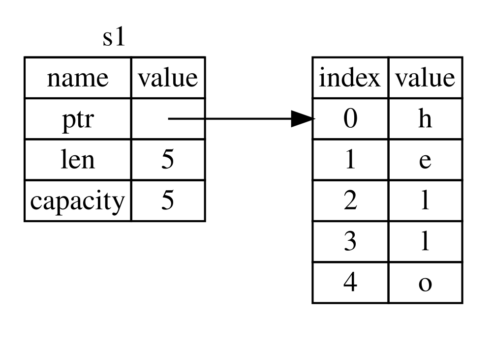
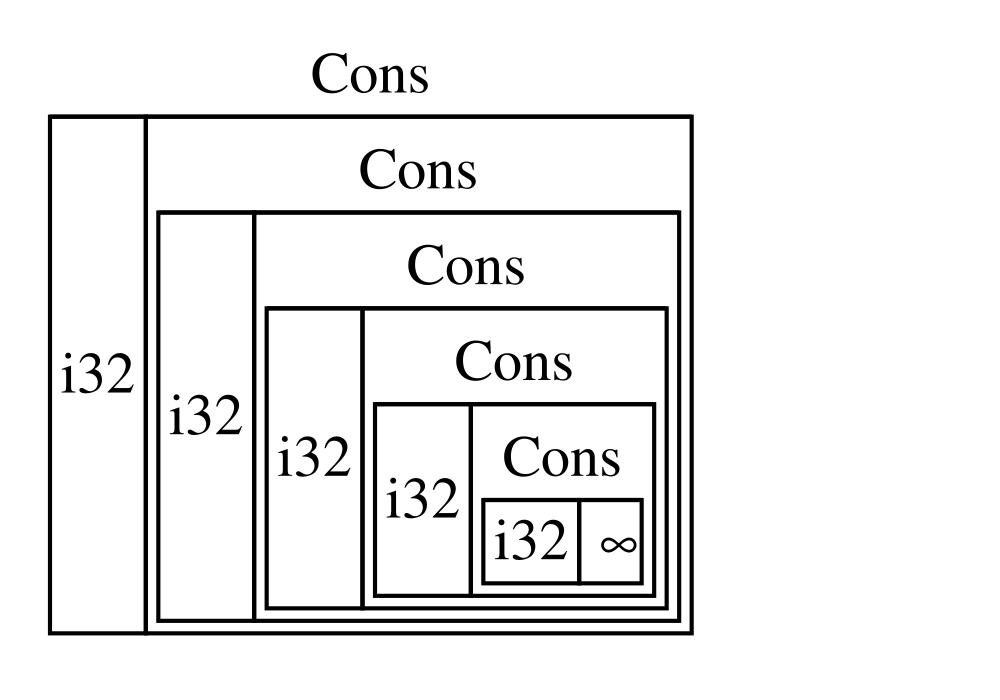
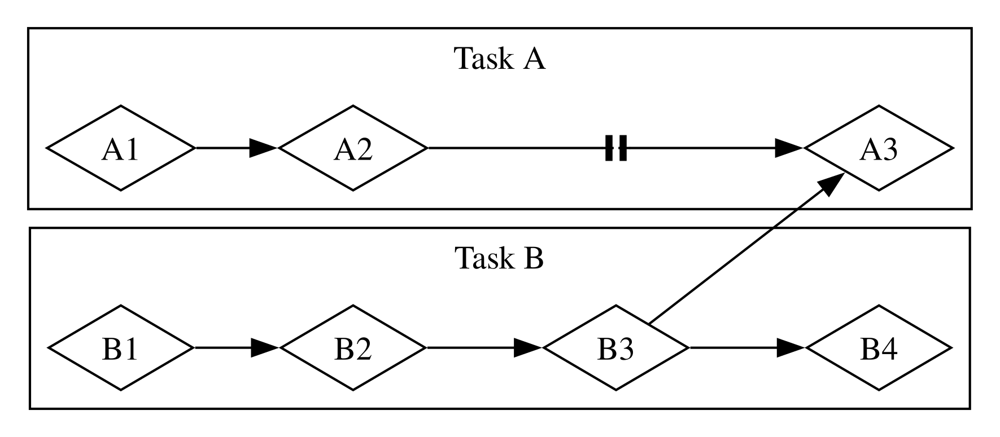

A Linguagem de Programação Rust
por Steve Klabnik, Carol Nichols e Chris Krycho, com contribuições da comunidade Rust
Esta versão do texto assume que você está usando Rust 1.90.0 (lançado em
2025-09-18) ou posterior, com edition = "2024" no arquivo Cargo.toml de
todos os projetos, para configurá-los de acordo com os idiomatismos da edição
2024 do Rust. Consulte a seção “Instalação” do Capítulo 1 para instruções sobre como instalar ou atualizar o Rust, e veja o
Apêndice E para informações sobre edições.
O formato HTML em inglês está disponível online em
https://doc.rust-lang.org/stable/book/
e offline com instalações do Rust feitas com rustup; execute rustup doc --book para abrir. A edição PT-BR deste fork é publicada em
https://rust-book-pt-br.github.io/rust-book-pt-br/.
Várias [traduções] da comunidade também estão disponíveis.
Este texto está disponível em brochura e ebook pela No Starch Press.
🚨 Quer uma experiência de aprendizagem mais interativa? Experimente uma versão diferente do Rust Book, com questionários, destaques, visualizações e mais: https://rust-book.cs.brown.edu
Prefácio
Não foi sempre tão claro, mas a linguagem de programação Rust é fundamentalmente sobre empoderamento: não importa que tipo de código você está escrevendo agora, Rust te empodera a ir além, a programar com confiança em uma variedade maior de domínios do que você fazia antes.
Considere, por exemplo, um trabalho a nível de sistema que lide com detalhes de baixo nível de gerenciamento de memória, representação de dados, e concorrência. Tradicionalmente, esse domínio da programação é visto como arcano, acessível somente a uns poucos escolhidos que devotaram a os anos necessários para aprender a evitar seus armadilhas infâmes. E mesmo aqueles que o praticam o fazem com cautela, em caso seu código esteja aberto a exploits, quebras, ou corrupção de memória.
Rust quebra essas barreiras ao eliminar as antigas armadilhas e ao prover um conjunto de ferramentas amigáveis, polidas, que te ajudam ao longo do caminho. Programadores que precisem “mergulhar” em controles de baixo nível podem fazê-lo com Rust, sem tomar o risco costumeiro de quebras ou de brechas de segurança, e sem ter que aprender os pontos mais finos de um ferramental instável. Melhor ainda, a linguagem é desenhada para guiá-lo naturalmente em direção a um código que é eficiente em termos de velocidade e uso de memória.
Programadores que já estejam trabalhando com código de baixo nível podem usar Rust para aumentar suas ambições. Por exemplo, introduzir paralelismo em Rust é uma operação relativamente de baixo risco: o compilador irá pegar os erros clássicos para você. E você poderá atacar otimizações mais agressivas no seu código com a confiança de que você não irá introduzir acidentalmente quebras ou exploits de segurança.
Mas Rust não é apenas limitada a programação de baixo nível de sistemas. Ela é expressiva e ergonômica o suficiente para fazer aplicações de linha de comando (CLIs), servidores web, e muitos outros tipos de código bastante prazerosos de escrever — você irá encontrar exemplos simples de ambos mais tarde no livro. Trabalhar com Rust te permite adquirir habilidades que são transferíveis de um domínio a outro. Você pode aprender Rust ao escrever um aplicativo web, e então aplicar as mesmas habilidades para endereçar seu Raspberry Pi.
Este livro abraça totalmente o potencial de Rust de empoderar seus usuários. É um texto amigável e acessível que pretende ajudá-lo a subir de nível não só no seu conhecimento de Rust, mas também no seu alcance e confiança como programador em geral. Então mergulhe de cabeça, prepare-se para aprender — e bem-vindo à comunidade Rust!
— Nicholas Matsakis e Aaron Turon
Introdução
Bem-vindo ao “A Linguagem de Programação Rust”, um livro introdutório sobre Rust.
Rust é uma linguagem de programação que ajuda a escrever software mais rápido e confiável. A ergonomia de alto nível e o controle de baixo nível estão frequentemente em desacordo no design da linguagem de programação; Rust desafia isso. Ao equilibrar uma poderosa capacidade técnica e uma ótima experiência de desenvolvedor, Rust oferece a opção de controlar detalhes de baixo nível (como o uso de memória) sem todo o incômodo tradicionalmente associado a esse controle.
Para Quem Rust Serve
Rust é excelente para muitas pessoas por várias razões. Vamos discutir alguns dos grupos mais importantes.
Times de Desenvolvedores
Rust está provando ser uma ferramenta produtiva para colaborar entre grandes equipes de desenvolvedores com níveis variados de conhecimento de programação de sistemas. O código de baixo nível é propenso a uma variedade de erros sutis, que na maioria das outras linguagens só podem ser detectados por meio de testes extensivos e revisão cuidadosa do código por desenvolvedores experientes. Em Rust, o compilador desempenha um papel de guardião, recusando-se a compilar código com esses tipos de erros - incluindo erros de concorrência. Ao trabalhar junto com o compilador, a equipe pode dedicar mais tempo à lógica do programa, em vez de procurar bugs.
A Rust também traz ferramentas de desenvolvedor contemporâneas para o mundo da programação de sistemas:
- Cargo, o gerenciador de dependências incluso e ferramenta de compilação, torna a adição, compilação e gerenciamento de dependências indolor e consistente em todo o ecossistema Rust.
- O Rustfmt garante um estilo de codificação consistente entre os desenvolvedores.
- O Rust Language Server (RLS) possibilita a integração de IDEs para preenchimento de código e mensagens de erro em linha.
Usando essas e outras ferramentas no ecossistema Rust, os desenvolvedores podem ser produtivos enquanto escrevem código de sistema.
Estudantes
Rust é para estudantes e pessoas interessadas em aprender sobre os conceitos de sistemas. Muitas pessoas aprenderam sobre tópicos como desenvolvimento de sistemas operacionais através de Rust. A comunidade fica feliz em responder às perguntas dos alunos. Por meio de esforços como este livro, as equipes do Rust desejam tornar os conceitos de sistemas mais acessíveis a mais pessoas, especialmente aquelas que estão começando a programar.
Empresas
Rust é usado em produção por centenas de empresas, grandes e pequenas, para uma variedade de tarefas, como ferramentas de linha de comando, serviços na Web, ferramentas DevOps, dispositivos embarcados, análise e transcodificação de áudio e vídeo, criptomoedas, bioinformática, motores de busca, internet das coisas, aprendizado de máquina e até partes importantes do navegador Firefox.
Desenvolvedores de Código Aberto
Rust é para pessoas que desejam criar a linguagem de programação Rust, a comunidade, as ferramentas de desenvolvedor e as bibliotecas Rust. Gostaríamos que você contribuísse para a linguagem Rust.
Pessoas que Valorizam a Velocidade e a Estabilidade
Por velocidade, entendemos a velocidade dos programas que Rust permite criar e a velocidade com que Rust permite que você os escreva. As verificações do compilador Rust garantem estabilidade por meio de adições e refatoração de recursos, em oposição ao código legado frágil (quebrável) em linguagens sem essas verificações, que os desenvolvedores têm medo de modificar. Ao buscar abstrações de custo zero, recursos de nível superior que se compilam para código de baixo nível, tão rápido quanto o código escrito manualmente, Rust se esforça para tornar o código seguro bem como um código rápido.
Esta não é uma lista completa de tudo que a linguagem Rust espera apoiar, mas esses são alguns dos maiores interessados. No geral, a maior ambição de Rust é aceitar trocas aceitas pelos programadores há décadas e eliminar a dicotomia. Segurança e produtividade. Velocidade e ergonomia. Experimente Rust e veja se as opções funcionam para você.
Para Quem é este Livro
Este livro pressupõe que você tenha escrito código em outra linguagem de programação, mas não faz nenhuma suposição sobre qual. Tentamos tornar o material amplamente acessível para aqueles de uma ampla variedade de contextos de programação. Não passamos muito tempo conversando sobre o que é programação ou como pensar sobre programação; alguém novato em programação seria melhor atendido lendo um livro especificamente fornecendo uma introdução à programação.
Como Usar este Livro
Este livro geralmente supõe que você o esteja lendo de frente para trás, ou seja, os capítulos posteriores se baseiam nos conceitos dos capítulos anteriores, e os capítulos anteriores podem não se aprofundar nos detalhes de um tópico, revisando o tópico em um capítulo posterior.
Existem dois tipos de capítulos neste livro: capítulos conceituais e capítulos de projetos. Nos capítulos conceituais, você aprenderá sobre um aspecto de Rust. Nos capítulos de projeto, criaremos pequenos programas juntos, aplicando o que aprendemos até agora. Os capítulos 2, 12 e 20 são capítulos de projetos; o resto são capítulos conceituais.
Além disso, o Capítulo 2 é uma introdução prática ao Rust como linguagem. Abordaremos conceitos de alto nível e os capítulos posteriores serão detalhados. Se você é o tipo de pessoa que gosta de sujar as mãos imediatamente, o Capítulo 2 é ótimo para isso. Se você é realmente esse tipo de pessoa, pode até pular o Capítulo 3, que abrange recursos muito semelhantes a outras linguagens de programação, e vá direto ao Capítulo 4 para aprender sobre o sistema de ownership (propriedade) Rust. Por outro lado, se você é particularmente aluno meticuloso que prefere aprender todos os detalhes antes de passar para o próximo, pule o Capítulo 2 e vá direto para o Capítulo 3.
O Capítulo 5 discute estruturas e métodos, e o Capítulo 6 aborda enumerações, expressões
match e a construção de fluxo de controle if let. Estruturas e enums são as maneiras
de criar tipos personalizados no Rust.
No Capítulo 7, você aprenderá sobre o sistema de módulos e a privacidade do Rust para organizar seu código e sua API pública. O capítulo 8 discute algumas estruturas comuns de dados de coleta fornecidas pela biblioteca padrão: vetores, seqüências de caracteres e mapas de hash. O Capítulo 9 trata da filosofia e das técnicas de manipulação de erros em Rust.
O capítulo 10 analisa generics (genéricos), traits (características) e lifetimes
(tempo de vida; vida útil), que permitem definir o código que se aplica a vários tipos.
O capítulo 11 é sobre testes, o que ainda é necessário, mesmo com as garantias de segurança
Rust para garantir que a lógica do seu programa esteja correta. No Capítulo 12, construiremos um
subconjunto da funcionalidade da ferramenta de linha de comando grep que pesquisa texto nos
arquivos e usaremos muitos dos conceitos discutidos nos capítulos anteriores.
O Capítulo 13 explora closures (fechamentos) e iteradores: recursos Rust provenientes de linguagens de programação funcionais. No capítulo 14, exploraremos mais sobre o Cargo e falaremos sobre as práticas recomendadas para compartilhar suas bibliotecas com outras pessoas. O capítulo 15 discute os smart pointers (ponteiros inteligentes) fornecidos pela biblioteca padrão e as traits que permitem sua funcionalidade.
No Capítulo 16, abordaremos diferentes modelos de programação concorrente e como Rust ajuda você a programar, sem medo, usando várias threads. O Capítulo 17 analisa como a linguagem Rust se comparam aos princípios de Programação Orientada a Objetos com os quais você deve estar familiarizado.
O capítulo 18 é uma referência sobre patterns (padrões) e pattern matching (correspondência de padrões), que são maneiras poderosas de expressar idéias nos programas Rust. O Capítulo 19 é um monte de tópicos avançados nos quais você pode estar interessado, incluindo unsafe Rust (Rust inseguro) e mais sobre lifetimes, traits, tipos, funções e closures (fechamentos).
No capítulo 20, concluiremos um projeto em que implementaremos um servidor web multithread de baixo nível!
Finalmente, existem alguns apêndices. Eles contêm informações úteis sobre a linguagem em um formato mais parecido como uma referência.
No final, não há uma maneira errada de ler o livro: se você quiser pular, vá em frente! Você pode ter que voltar atrás se achar as coisas confusas. Faça o que funciona para você.
Uma parte importante do processo de aprendizado Rust é aprender a ler as mensagens de erro fornecidas pelo compilador. Como tal, mostraremos muito código que não é compilado, e a mensagem de erro que o compilador mostrará nessa situação. Dessa forma, se você escolher um exemplo aleatório, ele pode não ser compilado! Leia o texto ao redor para garantir que você não tenha escolhido um dos exemplos em andamento.
| Ferris | Significado |
|---|---|
 | Este código não compila! |
 | Este código panics! |
 | Este bloco de código contem código inseguro (unsafe). |
 | Este código não produz o comportamento esperado. |
Na maioria das vezes, você será apresentado à versão correta de qualquer código que não compile.
Contribuindo Para o Livro
Este livro é de código aberto. Se você encontrar um erro, não hesite em registrar um problema ou enviar um pull request (solicitação de recebimento) pt_br on GitHub. Por favor, consulte CONTRIBUTING.md para mais detalhes.
Para contribuições na língua inglesa veja on GitHub e CONTRIBUTING-en-us.md, respectivamente.
Começando
Vamos começar sua jornada Rust! Neste capítulo, discutiremos:
- Instalando o Rust no Linux, Mac ou Windows
- Escrevendo um programa que imprime “Hello, world!”
- Usando
cargo, o gerenciador de pacotes e o sistema de compilação Rust
Instalação
Instalação
O primeiro passo é instalar Rust. Vamos fazer o download de Rust através do rustup, uma ferramenta de linha de comando para gerenciar versões Rust e ferramentas associadas.
Você precisará de uma conexão com a Internet para o download.
Nota: Se você preferir não usar o
rustuppor algum motivo, consulte a página de instalação de Rust para outras opções.
As etapas a seguir instalam a versão estável mais recente do compilador Rust. As garantias de estabilidade de Rust garantem que todos os exemplos do livro que compilam continuem sendo compilados com as versões mais recentes de Rust. A saída pode diferir ligeiramente entre as versões, porque Rust geralmente melhora as mensagens de erro e os avisos. Em outras palavras, qualquer versão mais recente e estável de Rust instalada usando essas etapas deve funcionar conforme o esperado com o conteúdo deste livro.
Notação de Linha de Comando
Neste capítulo e ao longo do livro, mostraremos alguns comandos usados no terminal. As linhas que você deve inserir em um terminal começam com $. Você não precisa digitar o caractere $; indica o início de cada comando. As linhas que não começam com $ normalmente mostram a saída do comando anterior. Além disso, exemplos específicos em PowerShell usarão > em vez de $.
Instalando rustup no Linux ou macOS
Se você estiver usando Linux ou macOS, abra um terminal e digite o seguinte comando:
$ curl https://sh.rustup.rs -sSf | sh
O comando baixa um script e inicia a instalação da ferramenta rustup, que instala a versão estável mais recente de Rust. Você pode ser solicitado a fornecer sua senha. Se a instalação for bem-sucedida, a seguinte linha aparecerá:
Rust is installed now. Great!
Se preferir, faça o download do script e inspecione-o antes de executá-lo.
O script de instalação adiciona Rust automaticamente ao PATH do sistema após seu próximo login. Se você deseja começar a usar Rust imediatamente, em vez de reiniciar o terminal, execute o seguinte comando no shell para adicionar Rust ao PATH do sistema manualmente:
$ source $HOME/.cargo/env
Como alternativa, você pode adicionar a seguinte linha ao seu ~/.bash_profile:
$ export PATH="$HOME/.cargo/bin:$PATH"
Além disso, você precisará de um linker de algum tipo. Provavelmente já está instalado, mas quando você tenta compilar um programa Rust e obtem erros, indicando que um linker não pôde executar, isso significa que um linker não está instalado no seu sistema e você precisará instalá-lo manualmente. Os compiladores C geralmente vêm com o linker correto. Verifique a documentação da sua plataforma para saber como instalar um compilador C. Além disso, alguns pacotes Rust comuns dependem do código C e precisarão de um compilador C. Portanto, pode valer a pena instalar um agora.
Instalando rustup no Windows
No Windows, vá para https://www.rust-lang.org/pt-BR/tools/install e siga as instruções para instalar Rust. Em algum momento da instalação, você receberá uma mensagem explicando que também precisará das ferramentas de build do C ++ para o Visual Studio 2013 ou posterior. A maneira mais fácil de adquirir as ferramentas de build é instalar Ferramentas Integradas do Visual Studio 2019.
O restante deste livro usa comandos que funcionam no cmd.exe e no PowerShell. Se houver diferenças específicas, explicaremos qual usar.
Atualização e Desinstalação
Depois de instalar o Rust via rustup, é fácil atualizar para a versão mais recente. No seu shell, execute o seguinte script de atualização:
$ rustup update
Para desinstalar o Rust e o rustup, execute o seguinte script de desinstalação do seu shell:
$ rustup self uninstall
Solução de Problemas
Para verificar se você possui Rust instalado corretamente, abra um shell e digite esta linha:
$ rustc --version
Você deverá ver o número da versão, commit hash, e commit da data da versão estável mais recente lançada no seguinte formato:
rustc x.y.z (abcabcabc yyyy-mm-dd)
Se você visualizar essas informações, instalou Rust com sucesso! Se você não vir essas informações e estiver no Windows, verifique se Rust está na sua variável de sistema %PATH%. Se tudo estiver correto e Rust ainda não estiver funcionando, há vários lugares onde você pode obter ajuda. O mais fácil é o canal #beginners em the official Rust Discord. Lá, você pode conversar com outros Rustáceos (um apelido bobo que chamamos a nós mesmos) que podem ajudá-lo. Outros ótimos recursos
incluem o canal no Telegram Rust Brasil, além do the Users forum e Stack Overflow.
Documentação Local
O instalador também inclui uma cópia da documentação localmente, para que você possa lê-la offline. Execute rustup doc para abrir a documentação local no seu navegador.
Sempre que um tipo ou função for fornecida pela biblioteca padrão e você não tiver certeza do que esta faz ou como usá-la, use a documentação da interface de programação de aplicativos (API) para descobrir!
Olá, Mundo!
Olá, mundo!
Agora que você instalou Rust, vamos escrever seu primeiro programa Rust. Quando se aprende uma nova linguagem, é tradicional escrever um pequeno programa que imprime o texto Hello, world! na tela, para que façamos o mesmo aqui!
Nota: Este livro pressupõe familiaridade básica com a linha de comando. Rust não requer exigências específicas sobre a sua edição, ferramentas ou a localização do seu código; portanto, se você preferir usar um ambiente de desenvolvimento integrado (IDE) em vez da linha de comando, fique à vontade para usar o seu IDE favorito. Muitos IDEs agora têm algum grau de apoio ao Rust; consulte a documentação do IDE para obter detalhes. Recentemente, a equipe do Rust tem se concentrado em permitir um ótimo suporte a IDE, e houve progresso rápido nessa frente!
Criando um Diretório de Projeto
Você começará criando um diretório para armazenar seu código Rust. Não importa para Rust onde seu código mora, mas para os exercícios e projetos deste livro, sugerimos criar um diretório projects no diretório inicial e manter todos os seus projetos lá.
Abra um terminal e digite os seguintes comandos para criar um diretório projects e um diretório para o projeto Hello, world! dentro do diretório projects.
Para Linux, macOS e PowerShell no Windows, digite o seguinte:
$ mkdir ~/projects
$ cd ~/projects
$ mkdir hello_world
$ cd hello_world
Para o Windows CMD, digite o seguinte:
> mkdir "%USERPROFILE%\projects"
> cd /d "%USERPROFILE%\projects"
> mkdir hello_world
> cd hello_world
Escrevendo e Executando um Programa Rust
Em seguida, crie um novo arquivo source e chame-o de main.rs. Arquivos Rust sempre terminam com a extensão .rs . Se você estiver usando mais de uma palavra no seu nome de arquivo, use um sublinhado para separá-las. Por exemplo, use hello_world.rs em vez de helloworld.rs.
Agora abra o arquivo main.rs que você acabou de criar e insira o código na Listagem 1-1.
Nome do arquivo: main.rs
fn main() {
println!("Hello, world!");
}Listagem 1-1: Um programa que imprime Hello, world!
Salve o arquivo e volte para a janela do seu terminal. No Linux ou macOS, digite os seguintes comandos para compilar e executar o arquivo:
$ rustc main.rs
$ ./main
Hello, world!
No Windows, digite o comando .\main.exe em vez de ./main:
> rustc main.rs
> .\main.exe
Hello, world!
Independentemente do seu sistema operacional, a string Hello, world! deve ser impressa no terminal. Se você não vir essa saída, consulte a parte “Solução de Problemas” da seção instalação para obter maneiras de obter ajuda.
Se Hello, world! foi impresso, parabéns! Você escreveu oficialmente um programa Rust. Isso faz de você um programador Rust — bem-vindo!
Anatomia de um Programa Rust
Vamos analisar em detalhes o que aconteceu no seu programa Hello, world! Aqui está a primeira peça do quebra-cabeça:
fn main() {
}Essas linhas definem uma função em Rust. A função main é especial: é sempre o primeiro código executado em todos os programas Rust executáveis. A primeira linha declara uma função chamada main que não possui parâmetros e não retorna nada. Se houvesse parâmetros, eles entrariam entre parênteses, ().
Observe também que o corpo da função está entre colchetes, {}. Rust exige isso em todos os corpos funcionais. É um bom estilo colocar o colchete de abertura na mesma linha da declaração de função, adicionando um espaço no meio.
No momento da redação deste artigo, uma ferramenta formatadora automática chamada rustfmt está em desenvolvimento. Se você deseja manter um estilo padrão nos projetos Rust, o rustfmt formatará seu código em um estilo específico. A equipe do Rust planeja eventualmente incluir essa ferramenta na distribuição padrão do Rust, como rustc.
Portanto, dependendo de quando você ler este livro, ele poderá já estar instalado no seu computador! Consulte a documentação online para mais detalhes.
Dentro da função main está o seguinte código:
#![allow(unused)]
fn main() {
println!("Hello, world!");
}Esta linha faz todo o trabalho neste pequeno programa: imprime texto na tela. Há quatro detalhes importantes a serem observados aqui. Primeiro, o estilo Rust é recuar com quatro espaços, não uma tabulação.
Segundo, println! chama uma macro Rust. Se fosse chamada uma função, ela seria inserida como println (sem o!). Discutiremos Rust macros com mais detalhes no Capítulo 19. Por enquanto, você só precisa saber que usar um ! significa que você está chamando uma macro em vez de uma função normal.
Terceiro, você vê a string "Hello, world!". Passamos essa string como argumento para println!, e a string é impressa na tela.
Quarto, terminamos a linha com um ponto-e-vírgula (;), que indica que essa expressão acabou e a próxima está pronta para começar. A maioria das linhas do código Rust termina com um ponto e vírgula.
Compilar e Executar são Etapas Separadas
Você acabou de executar um programa recém-criado, portanto, vamos examinar cada etapa do processo.
Antes de executar um programa Rust, você deve compilá-lo usando o compilador Rust digitando o comando rustc e passando o nome do seu arquivo source, assim:
$ rustc main.rs
Se você tem experiência em C ou C ++, notará que isso é semelhante a gcc ou clang. Após compilar com sucesso, Rust gera um executável binário.
No Linux, macOS e PowerShell no Windows, você pode ver o executável digitando o comando ls no seu shell. No Linux e macOS, você verá dois arquivos. Com o PowerShell no Windows, você verá os mesmos três arquivos que usaria no CMD.
$ ls
main main.rs
Com o CMD no Windows, você digitaria o seguinte:
> dir /B %= the /B option says to only show the file names =%
main.exe
main.pdb
main.rs
Isso mostra o arquivo de código-fonte com a extensão .rs, o arquivo executável (main.exe no Windows, mas main em todas as outras plataformas) e, ao usar o Windows, um arquivo contendo informações de depuração com o extensão .pdb. A partir daqui, você executa o arquivo main ou main.exe, assim:
$ ./main # or .\main.exe on Windows
Se main.rs era seu programa Hello, world!, esta linha imprimirá Hello, world! no seu terminal.
Se você está mais familiarizado com uma linguagem dinâmica, como Ruby, Python ou JavaScript, pode não estar acostumado a compilar e executar um programa como etapas separadas. Rust é uma linguagem compilada antecipadamente, o que significa que você pode compilar um programa e fornecer o executável para outra pessoa, e eles podem executá-lo mesmo sem Rust instalado. Se você fornecer a alguém um arquivo .rb, .py ou .js, eles deverão ter uma implementação Ruby, Python ou JavaScript instalada (respectivamente). Mas essas linguagens, você só precisa de um comando para compilar e executar seu programa. Tudo é uma troca no design da linguagem.
Apenas compilar com rustc é bom para programas simples, mas à medida que o seu projeto cresce, você deseja gerenciar todas as opções e facilitar o compartilhamento do seu código.
Em seguida, apresentaremos a ferramenta Cargo, que ajudará você a criar programas Rust no mundo real.
Olá, Cargo!
Cargo é o gestor de sistemas e pacotes da linguagem Rust. A maioria dos Rustáceos usa essa ferramenta para gerenciar seus projetos Rust porque o Cargo cuida de muitas tarefas para você, como criar seu código, fazer o download das bibliotecas das quais seu código depende e criar essas bibliotecas. (Chamamos de bibliotecas que seu código precisa de dependências.)
Os programas Rust mais simples, como o que escrevemos até agora, não tem dependências; portanto, se tivéssemos construído o projeto Hello World com o Cargo, ele usaria apenas a parte do Cargo que cuida da criação do seu código. Ao escrever programas Rust mais complexos, você deseja adicionar dependências e, se você iniciar o projeto usando Cargo, isso será muito mais fácil.
Como a grande maioria dos projetos Rust usa Cargo, o restante deste livro pressupõe que você também esteja usando Cargo. Cargo vem instalado com o próprio Rust, se você usou os instaladores oficiais, conforme descrito na seção “Instalação”. Se você instalou Rust por outros meios, poderá verificar se possui o Cargo instalado inserindo o seguinte em seu terminal:
$ cargo --version
Se você vir um número de versão, ótimo! Se você vir um erro como command not found, consulte a documentação do seu método de instalação para determinar como instalar o Cargo separadamente.
Criando Projetos com Cargo
Vamos criar um novo projeto usando Cargo e ver como ele difere do nosso projeto original Hello World. Navegue de volta para o diretório projects (ou onde quer que você tenha decidido colocar seu código) e, em seguida, em qualquer sistema operacional:
$ cargo new hello_cargo --bin
$ cd hello_cargo
Isso cria um novo executável binário chamado hello_cargo. O argumento --bin transmitido para cargo new cria um aplicativo executável (geralmente chamado apenas de binário), em oposição a uma biblioteca. Atribuímos hello_cargo como o nome do nosso projeto e o Cargo cria seus arquivos em um diretório com o mesmo nome.
Vá para o diretório hello_cargo e liste os arquivos, e você verá que Cargo gerou dois arquivos e um diretório para nós: um diretório Cargo.toml e src com um arquivo main.rs dentro. Também inicializou um novo repositório git, junto com um arquivo .gitignore.
Nota: Git é um sistema de controle de versão comum. Você pode alterar
cargo newpara usar um sistema de controle de versão diferente, ou nenhum sistema de controle de versão, usando o sinalizador--vcs. Executecargo new --helppara ver as opções disponíveis.
Abra Cargo.toml no seu editor de texto de sua escolha. Deve ser semelhante ao código na Listagem 1-2:
Nome do arquivo: Cargo.toml
[package]
name = "hello_cargo"
version = "0.1.0"
authors = ["Your Name <you@example.com>"]
[dependencies]
Listagem 1-2: Conteúdo de Cargo.toml gerado por cargo new
Este arquivo está no formato TOML (Tom Óbvia, Linguagem Mínima), que é o que o Cargo usa como formato de configuração.
A primeira linha, [package], é um cabeçalho de seção que indica que as seguintes instruções estão configurando um pacote. À medida que adicionamos mais informações a este arquivo, adicionaremos outras seções.
As próximas três linhas definem as informações de configuração que Cargo precisa para saber que ele deve compilar seu programa: o nome, a versão e quem o escreveu. Cargo obtém seu nome e informações de e-mail do seu ambiente; portanto, se isso não estiver correto, prossiga, corrija-o e salve o arquivo.
A última linha, [dependencies], é o início de uma seção para você listar qualquer uma das dependências do seu projeto. Em Rust, pacotes de código são referidos como crates.
Não precisaremos de outras crates para este projeto, mas precisaremos no primeiro projeto do capítulo 2, portanto, usaremos essa seção de dependências.
Agora abra src/main.rs e olhe:
Nome do arquivo: src/main.rs
fn main() {
println!("Hello, world!");
}Cargo gerou um “Hello World!” para você, exatamente como o que escrevemos na Lista 1-1! Até agora, as diferenças entre o projeto anterior e o projeto gerado pelo Cargo são que, com Cargo, nosso código entra no diretório src e temos um arquivo de configuração Cargo.toml no diretório superior.
Cargo espera que seus arquivos source morem dentro do diretório src, para que o diretório de projeto de nível superior seja apenas para READMEs, informações de licença, arquivos de configuração e qualquer outra coisa não relacionada ao seu código. Dessa forma, o uso do Cargo ajuda a manter seus projetos organizados. Há um lugar para tudo, e tudo está em seu lugar.
Se você iniciou um projeto que não usa Cargo, como fizemos com nosso projeto no diretório hello_world, você pode convertê-lo em um projeto que usa Cargo movendo o código do projeto para o diretório src e criando um apropriado Cargo.toml.
Construindo e Executando um projeto Cargo
Agora, vamos ver o que há de diferente na criação e execução do seu programa Hello World através do Cargo! No diretório do projeto, construa seu projeto digitando os seguintes comandos:
$ cargo build
Compiling hello_cargo v0.1.0 (file:///projects/hello_cargo)
Finished dev [unoptimized + debuginfo] target(s) in 2.85 secs
Isso cria um arquivo executável em target/debug/hello_cargo (ou target\debug\hello_cargo.exe no Windows), que você pode executar com este comando:
$ ./target/debug/hello_cargo # or .\target\debug\hello_cargo.exe on Windows
Hello, world!
Bam! Se tudo correr bem, Hello, world! deve ser impresso no terminal mais uma vez. A execução do cargo build pela primeira vez também faz com que o Cargo crie um novo arquivo no nível superior chamado Cargo.lock, que é usado para acompanhar as versões exatas das dependências do seu projeto. Este projeto não tem dependências, portanto o arquivo é um pouco esparso. Você nunca precisará tocar nesse arquivo; Cargo gerenciará seu conteúdo para você.
Nós apenas construímos um projeto com cargo build e o executamos com
./target/debug/hello_cargo, mas também podemos usar o cargo run para compilar e então executar tudo de uma só vez:
$ cargo run
Finished dev [unoptimized + debuginfo] target(s) in 0.0 secs
Running `target/debug/hello_cargo`
Hello, world!
Observe que, desta vez, não vimos a saída nos dizendo que Cargo estava compilando hello_cargo. Cargo descobriu que os arquivos não foram alterados; portanto, apenas executou o binário. Se você tivesse modificado seu código-fonte, Cargo reconstruiria o projeto antes de executá-lo e você teria visto resultados como este:
$ cargo run
Compiling hello_cargo v0.1.0 (file:///projects/hello_cargo)
Finished dev [unoptimized + debuginfo] target(s) in 0.33 secs
Running `target/debug/hello_cargo`
Hello, world!
Finalmente, há cargo check. Este comando verificará rapidamente seu código para garantir que ele seja compilado, mas não se incomode em produzir um executável:
$ cargo check
Compiling hello_cargo v0.1.0 (file:///projects/hello_cargo)
Finished dev [unoptimized + debuginfo] target(s) in 0.32 secs
Por que você não gostaria de um executável? O cargo check geralmente é muito mais rápido que o cargo build, porque pula toda a etapa de produção do executável. Se você estiver verificando seu trabalho durante todo o processo de escrever o código, o uso de cargo check acelerará as coisas! Como tal, muitos Rustaceans executam cargo check periodicamente enquanto escrevem seu programa para garantir que ele seja compilado e, em seguida, executam cargo build quando estiverem prontos para rodar.
Então, para recapitular, usando Cargo:
- Podemos construir um projeto usando
cargo buildoucargo check - Podemos construir e executar o projeto em uma única etapa com
cargo run - Em vez de o resultado da compilação ser colocado no mesmo diretório que o nosso código, Cargo o colocará no diretório target/debug.
Uma vantagem final do uso do Cargo é que os comandos são os mesmos, independentemente do sistema operacional em que você esteja; portanto, neste momento, não forneceremos mais instruções específicas para Linux e Mac versus Windows.
Criando para Liberação
Quando seu projeto estiver finalmente pronto para o lançamento, você poderá usar o cargo build --release para compilar seu projeto com otimizações. Isso criará um executável em target/release em vez de target/debug. Essas otimizações tornam seu código Rust mais rápido, mas ativá-los leva mais tempo para compilar o programa. É por isso que existem dois perfis diferentes: um para desenvolvimento, quando você deseja reconstruir de forma rápida e frequente, e outro para a criação do programa final, que você fornecerá a um usuário que não será reconstruído repetidamente e que será executado como o mais rápido possível. Se você estiver comparando o tempo de execução do seu código, lembre-se de executar cargo build --release e faça a comparação com
o executável em target/release.
Cargo como Convenção
Em projetos simples, Cargo não fornece muito valor ao usar apenas rustc, mas provará seu valor à medida que você continua. Com projetos complexos compostos por várias crates, é muito mais fácil deixar Cargo coordenar a construção.
Embora o projeto hello_cargo seja simples, agora ele usa grande parte das ferramentas reais que você usará para o resto de sua carreira em Rust. De fato, para trabalhar em qualquer projeto existente, você pode usar os seguintes comandos para verificar o código usando o Git, mudar para o diretório do projeto e criar:
$ git clone someurl.com/someproject
$ cd someproject
$ cargo build
Para mais informações sobre Cargo, consulte a documentação (em inglês).
Resumo
Você já começou bem a sua jornada Rust! Neste capítulo, você:
- Instalou a versão estável de Rust usando
rustup - Atualizou para uma versão mais recente
- Acessou a documentação instalada localmente
- Escreveu um programa “Hello, world!” usando diretamente o
rustc - Criou e executou um novo projeto usando as convenções do Cargo
Este é um ótimo momento para criar um programa mais substancial, para se acostumar a ler e escrever código em Rust. No capítulo 2, criaremos um programa de jogos de adivinhação. Se você preferir começar a aprender sobre como os conceitos comuns de programação funcionam em Rust, consulte o Capítulo 3 e, sem seguida retorne ao capítulo 2.
Jogo de Adivinhação
Vamos entrar de cabeça no Rust e colocar a mão na massa! Este capítulo vai lhe
apresentar alguns conceitos bem comuns no Rust, mostrando como usá-los em um
programa de verdade. Você vai aprender sobre let, match, métodos, funções
associadas, crates externas, e mais! Os capítulos seguintes vão explorar essas
ideias em mais detalhes. Neste capítulo, você vai praticar o básico.
Vamos implementar um clássico problema de programação para iniciantes: um jogo de adivinhação. Eis como ele funciona: o programa vai gerar um número inteiro aleatório entre 1 e 100. Então, ele vai pedir ao jogador que digite um palpite. Após darmos nosso palpite, ele vai nos indicar se o palpite é muito baixo ou muito alto. Uma vez que o palpite estiver correto, ele vai nos dar os parabéns e sair.
Preparando um Novo Projeto
Para iniciar um novo projeto, vá ao seu diretório de projetos que você criou no Capítulo 1, e execute os comandos do Cargo a seguir:
$ cargo new jogo_de_adivinhacao
$ cd jogo_de_adivinhacao
O primeiro comando, cargo new, recebe o nome do projeto (jogo_de_adivinhacao)
como primeiro argumento. O segundo comando muda a pasta atual para o diretório do projeto.
Confira o arquivo Cargo.toml gerado:
Arquivo: Cargo.toml
[package]
name = "jogo_de_adivinhacao"
version = "0.1.0"
edition = "2021"
# See more keys and their definitions at https://doc.rust-lang.org/cargo/reference/manifest.html
[dependencies]
Assim como no Capítulo 1, cargo new gera um programa “Hello, world!” para nós.
Confira em src/main.rs:
Arquivo: src/main.rs
fn main() {
println!("Hello, world!");
}Agora vamos compilar esse programa “Hello, world!” e executá-lo de uma vez só
usando o comando cargo run:
$ cargo run
Compiling jogo_de_adivinhacao v0.1.0 (file:///projects/jogo_de_adivinhacao)
Finished dev [unoptimized + debuginfo] target(s) in 1.50 secs
Running `target/debug/jogo_de_adivinhacao`
Hello, world!
O comando run é uma boa opção quando precisamos iterar rapidamente em um
projeto, que é o caso neste jogo: nós queremos testar rapidamente cada iteração
antes de movermos para a próxima.
Abra novamente o arquivo src/main.rs. Escreveremos todo nosso código nele.
Processando um Palpite
A primeira parte do programa vai pedir uma entrada ao usuário, processar essa entrada, e conferir se ela está no formato esperado. Pra começar, vamos permitir que o jogador entre com um palpite. Coloque este código no arquivo src/main.rs:
Arquivo: src/main.rs
use std::io;
fn main() {
println!("Adivinhe o número!");
println!("Digite o seu palpite.");
let mut palpite = String::new();
io::stdin()
.read_line(&mut palpite)
.expect("Falha ao ler entrada");
println!("Você disse: {palpite}");
}Listagem 2-1: Código para ler um palpite do usuário e imprimí-lo na tela.
Esse código tem muita informação, vamos ver uma parte de cada vez. Para obter a
entrada do usuário, e então imprimir o resultado como saída, precisaremos trazer
ao escopo a biblioteca io (de entrada/saída). A biblioteca io provém da
biblioteca padrão (chamada de std):
use std::io;Por padrão, o Rust tem um conjunto de itens definidos na biblioteca padrão que são trazidos para o escopo de cada programa. Este conjunto é chamado de prelúdio, e você pode ver tudo que está incluído na documentação da biblioteca padrão.
Se um tipo que você quiser usar não
estiver no prelúdio, você terá que importá-lo explicitamente através do use.
A biblioteca std::io oferece várias ferramentas de entrada/saída, incluindo a
funcionalidade de ler dados de entrada do usuário.
Como visto no Capítulo 1, a função main é o ponto de entrada do programa:
fn main() {A sintaxe fn declara uma nova função, o () indica que não há parâmetros, e
o { inicia o corpo da função.
Como você também já aprendeu no Capítulo 1, println! é uma macro que imprime
uma string na tela:
println!("Adivinhe o número!");
println!("Digite o seu palpite.");Este código está exibindo uma mensagem que diz de que se trata o jogo e solicitando uma entrada do usuário.
Armazenando Valores em Variáveis
Próximo passo, vamos criar uma variável para armazenar a entrada do usuário:
let mut palpite = String::new();Agora o programa está ficando interessante! Tem muita coisa acontecendo nesta
pequena linha. Nós usamos a declaração let para criar a variável.
Segue outro exemplo:
let maçãs = 5;Essa linha cria uma nova variável chamada maçãs, e a vincula ao valor 5. Em Rust, variáveis são imutáveis por padrão, ou seja, uma vez vinculado o valor a variável,
o mesmo não pode ser alterado. Nós vamos discutir este conceito em detalhes
na seção [“Variáveis e Mutabilidade”][variables] do Capítulo 3. Para criar uma
variável mutável, nós adicionamos mut antes do nome da variável:
[variables]: ./ch03-01-variables-and-mutability.html#variables-and-mutability
#![allow(unused)]
fn main() {
let maçãs = 5; // imutável
let mut bananas = 5; // mutável
}Nota: A sintaxe
//inicia um comentário, que continua até o fim da linha. Rust ignora tudo o que estiver nos comentários. Nós vamos discutir comentários em mais detalhes no Capítulo 3
Agora você sabe que let mut palpite vai introduzir uma variável mutável de
nome palpite. No outro lado do símbolo = está o valor ao qual palpite está
vinculado, que é o resultado da chamada String::new, uma função que retorna
uma nova instância de String. String é um tipo
fornecido pela biblioteca padrão que representa uma cadeia expansível de
caracteres codificados em UTF-8.
A sintaxe :: na linha ::new indica que new é uma função associada do
tipo String. Uma função associada é implementada sobre um tipo, neste caso
String, em vez de uma instância particular de String. Algumas linguagens
dão a isso o nome método estático.
Esta função new() cria uma nova String vazia. Você encontrará uma função
new() em muitos tipos, já que é um nome comum para uma função que produz um
novo valor de algum tipo.
Para resumir, a linha let mut palpite = String::new(); criou uma variável
mutável que está atualmente vinculada a uma nova instância vazia de uma
String. Ufa!
Recebendo dados do usuário
Lembre-se de que incluímos a funcionalidade de entrada/saída da biblioteca
padrão por meio do use std::io; na primeira linha do programa. Agora vamos
chamar uma função associada, stdin, em io:
io::stdin()
.read_line(&mut palpite)
.expect("Falha ao ler entrada");Se não tivéssemos a linha use std::io no início do programa, poderíamos ter
escrito esta chamada como std::io::stdin. A função stdin retorna uma
instância de std::io::Stdin, um tipo que representa
um manipulador (handle) da entrada padrão do seu terminal.
A próxima parte do código, .read_line(&mut palpite), chama o método
read_line do handle da entrada padrão para obter
entrada do usuário. Também estamos passando um argumento para read_line:
&mut palpite.
O trabalho da função read_line é receber o que o usuário digita na entrada
padrão e colocar isso numa string, por isso ela recebe essa string como
argumento. A string do argumento deve ser mutável para que o método consiga
alterar o seu conteúdo, adicionando a entrada do usuário.
O símbolo & indica que o argumento é uma referência, o que permite múltiplas
partes do seu código acessar um certo dado sem precisar criar várias cópias dele
na memória. Referências são uma característica complexa, e uma das maiores
vantagens do Rust é o quão fácil e seguro é usar referências. Você não precisa
conhecer muitos desses detalhes para finalizar esse programa. O Capítulo 4 vai
explicar sobre referências de forma mais aprofundada. Por enquanto, tudo que
você precisa saber é que, assim como as variáveis, referências são imutáveis por
padrão. Por isso, precisamos escrever &mut palpite, em vez de apenas
&palpite, para fazer com que o palpite seja mutável.
Tratando Potenciais Falhas com o Tipo Result
Ainda não finalizamos completamente esta linha de código. Embora esta seja uma única linha de texto, é apenas a primeira parte de uma linha lógica de código. A segunda parte é a chamada para este método:
.expect("Falha ao ler entrada");Quando você chama um método com a sintaxe .foo(), geralmente é bom introduzir
uma nova linha e outro espaço para ajudar a dividir linhas muito compridas.
Poderíamos ter feito assim:
io::stdin().read_line(&mut palpite).expect("Falha ao ler entrada");Porém, uma linha muito comprida fica difícil de ler. Então é melhor dividirmos a linha em duas, uma para cada método chamado. Agora vamos falar sobre o que essa linha faz.
Como mencionado anteriormente, read_line coloca o que o usuário escreve dentro
da string que passamos como argumento, mas também retorna um valor do tipo Result.
Os tipos Result são enumerações, comumente chamadas
de enums. Uma enumeração é um tipo que pode ter um conjunto fixo de valores,
os quais são chamados de variantes da enum.
O Capítulo 6 vai abordar enums em mais detalhes.O propósito destes tipos Result é codificar informações de manipulação de erros.
As variantes de Result são Ok ou Err. Ok indica que a operação teve
sucesso, e dentro da variante Ok está o valor resultante. Err significa que
a operação falhou, e contém informações sobre como ou por que isso ocorreu.
Valores do tipo Result, assim como qualquer tipo, possuem métodos
definidos. Uma instância de Result tem um método expect
que você pode chamar. Se esta instância de Result é um Err, expect vai
terminar o programa com erro e mostrar a mensagem que você passou como argumento
ao expect. Se o método read_line retornar um Err, provavelmente seria o
resultado de um erro vindo do sistema operacional que está por trás. Se esta
instância de Result é um Ok, expect vai obter o valor contido no Ok
e retorná-lo para que você possa usá-lo. Neste caso, o valor é o número de bytes
dos dados que o usuário inseriu através da entrada padrão.
Se não chamarmos expect, nosso programa vai compilar, mas vamos ter um aviso:
$ cargo build
Compiling jogo_de_adivinhacao v0.1.0 (file:///projects/jogo_de_adivinhacao)
warning: unused `Result` that must be used
--> src/main.rs:10:5
|
10 | io::stdin().read_line(&mut palpite);
| ^^^^^^^^^^^^^^^^^^^^^^^^^^^^^^^^^
|
= note: this `Result` may be an `Err` variant, which should be handled
= note: `#[warn(unused_must_use)]` on by default
warning: `jogo_de_adivinhacao` (bin "jogo_de_adivinhacao") generated 1 warning
Finished dev [unoptimized + debuginfo] target(s) in 0.59s
Rust avisa que não usamos o valor Result, retornado por read_line, indicando
que o programa deixou de tratar um possível erro. A maneira correta de suprimir
o aviso é realmente escrevendo um tratador de erro, mas como queremos que o
programa seja encerrado caso ocorra um problema, podemos usar expect. Você
aprenderá sobre recuperação de erros no Capítulo 9.
Exibindo Valores com Curingas com println! (placeholders)
Tirando a chave que delimita a função main, há apenas uma linha mais a ser
discutida no código que fizemos até agora, que é a seguinte:
println!("Você disse: {palpite}");Esta linha imprime a string na qual salvamos os dados inseridos pelo usuário. O {} é um curinga que reserva o lugar de um valor. Para imprimir o valor de uma variável, podemos colocá-la dentro das chaves diretamente na string. Também podemos imprimir o resultado de uma ou mais expressões, colocando chaves vazias nas posições desejadas, string de formatação, e adicionando a lista de expressões separadas por vírgulas e em ordem após a string de formatação. Por exemplo, podemos imprimir uma variável e o resultado de uma expressão em uma única chamada de println! desta forma:
#![allow(unused)]
fn main() {
let x = 5;
let y = 10;
println!("x = {x} and y + 2 = {}", y + 2);
}Esse código imprime x = 5 and y + 2 = 12.
Testando a Primeira Parte
Vamos testar a primeira parte do jogo de adivinhação. Você pode executá-lo usando
cargo run:
$ cargo run
Compiling jogo_de_adivinhacao v0.1.0 (file:///projects/jogo_de_adivinhacao)
Finished dev [unoptimized + debuginfo] target(s) in 6.44s
Running `target/debug/jogo_de_adivinhacao`
Adivinhe o número!
Digite o seu palpite.
6
Você disse: 6
Nesse ponto, a primeira parte do jogo está feita: podemos coletar entrada do teclado e mostrá-la na tela.
Gerando um Número Secreto
A seguir, precisamos gerar um número secreto que o usuário vai tentar adivinhar.
O número secreto deve ser diferente a cada execução, para que o jogo tenha graça
em ser jogado mais de uma vez. Vamos usar um número aleatório entre 1 e 100,
para que o jogo não seja tão difícil. Rust ainda não inclui uma funcionalidade
de geração de números aleatórios em sua biblioteca padrão. Porém, a equipe Rust
fornece um crate rand.
Usando um Crate para Ter Mais Funcionalidades
Lembre-se que um crate é um pacote de código Rust. O projeto que estamos
construindo é um crate binário, que é um executável. Já o rand é um
crate de biblioteca, que contém código cujo objetivo é ser usado por outros
programas.
É no uso de crates externas que Cargo realmente brilha. Antes que possamos
escrever o código usando rand, precisamos modificar o arquivo Cargo.toml
para incluir o crate rand como uma dependência. Abra o arquivo e adicione
esta linha no final, abaixo do cabeçalho da seção [dependencies] que o Cargo
criou para você:
Arquivo: Cargo.toml
[dependencies]
rand = "0.8.5"
No arquivo Cargo.toml, tudo que vem depois de um cabeçalho é parte de uma
seção que segue até o início de outra. A seção [dependencies] é onde você diz
ao Cargo de quais crates externos o seu projeto depende, e quais versões desses
crates você exige. Neste caso, especificamos o crate rand com a versão
semântica 0.8.5. Cargo compreende Versionamento Semântico
(às vezes chamado SemVer), um padrão para escrever números de versões. O
número 0.8.5 é, na verdade, uma forma curta de escrever ^0.8.5, que
significa “qualquer versão que tenha uma API pública compatível com a versão 0.8.5”.
Agora, sem mudar código algum, vamos compilar nosso projeto, conforme mostrado na Listagem 2-2:
$ cargo build
Updating crates.io index
Downloaded rand v0.8.5
Downloaded libc v0.2.127
Downloaded getrandom v0.2.7
Downloaded cfg-if v1.0.0
Downloaded ppv-lite86 v0.2.16
Downloaded rand_chacha v0.3.1
Downloaded rand_core v0.6.3
Compiling libc v0.2.127
Compiling getrandom v0.2.7
Compiling cfg-if v1.0.0
Compiling ppv-lite86 v0.2.16
Compiling rand_core v0.6.3
Compiling rand_chacha v0.3.1
Compiling rand v0.8.5
Compiling jogo_de_adivinhacao v0.1.0 (file:///projects/jogo_de_adivinhacao)
Finished dev [unoptimized + debuginfo] target(s) in 2.53s
Listagem 2-2: Resultado da execução de cargo build
depois de adicionar o crate rand como dependência.
Talvez pra você apareçam versões diferentes (mas elas são todas compatíveis com o código, graças ao Versionamento Semântico!), e as linhas talvez apareçam em ordem diferente.
Agora que temos uma dependência externa, Cargo busca as versões mais recentes de tudo no registro, que é uma cópia dos dados do Crates.io. Crates.io é onde as pessoas do ecossistema Rust postam seus projetos open source para que os outros possam usar.
Após atualizar o registro, Cargo verifica a seção [dependencies] e baixa todas
as que você não tem ainda. Neste caso, embora tenhamos listado apenas rand
como dependência, o Cargo também baixa outras crates que rand depende para funcionar. Depois de baixá-las, o Cargo as compila e
então compila nosso projeto.
Se, logo em seguida, você executar cargo build novamente sem fazer mudanças,
não vai aparecer nenhuma mensagem de saída. O Cargo sabe que já baixou e
compilou as dependências, e você não alterou mais nada sobre elas no seu arquivo
Cargo.toml. Cargo também sabe que você não mudou mais nada no seu código, e
por isso não o recompila. Sem nada a fazer, ele simplesmente sai. Se você abrir
src/main.rs, fizer uma modificação trivial, salvar e compilar de novo, vai
aparecer uma mensagem de apenas duas linhas:
$ cargo build
Compiling jogo_de_adivinhacao v0.1.0 (file:///projects/jogo_de_adivinhacao)
Finished dev [unoptimized + debuginfo] target(s) in 2.53 secs
Essas linhas mostram que o Cargo só atualiza o build com a sua pequena mudança no arquivo src/main.rs. Suas dependências não mudaram, então o Cargo sabe que pode reutilizar o que já tiver sido baixado e compilado para elas. Ele apenas recompila a sua parte do código.
Garantindo Builds reproduzíveis com o arquivo Cargo.lock
O Cargo tem um mecanismo que assegura que você pode reconstruir o mesmo artefato
toda vez que você ou outra pessoa compilar o seu código. O Cargo vai usar apenas
as versões das dependências que você especificou, até que você indique o
contrário. Por exemplo, o que acontece se, na semana que vem, sair a versão
v0.8.6 contendo uma correção de bug, mas também uma regressão que não
funciona com o seu código?
A resposta para isso está no arquivo Cargo.lock, que foi criado na primeira
vez que você executou cargo build, e agora está no seu diretório
jogo_de_adivinhacao. Quando você compila o seu projeto pela primeira vez, o
Cargo descobre as versões de todas as dependências que preenchem os critérios
e então as escreve no arquivo Cargo.lock. Quando você compilar o seu projeto
futuramente, o Cargo verá que o arquivo Cargo.lock existe e usará as versões
especificadas no mesmo, em vez de refazer todo o trabalho descobrir as versões
novamente. Isto lhe permite ter um build reproduzível automaticamente. Em
outras palavras, seu projeto vai continuar com a versão 0.8.5 até que você
faça uma atualização explícita, graças ao arquivo Cargo.lock.
Atualizando um Crate para Obter uma Nova Versão
Quando você quiser atualizar um crate, o Cargo tem outro comando, update,
que faz o seguinte:
- Ignora o arquivo Cargo.lock e descobre todas as versões mais recentes que atendem às suas especificações no Cargo.toml.
- Se funcionar, o Cargo escreve essas versões no arquivo Cargo.lock.
Mas, por padrão, o Cargo vai procurar as versões maiores que 0.8.0 e menores
que 0.9.0. Se o crate rand já tiver lançado duas novas versões, 0.8.6 e
0.9.0, você verá a seguinte mensagem ao executar cargo update:
$ cargo update
Updating registry `https://github.com/rust-lang/crates.io-index`
Updating rand v0.8.5 -> v0.8.6
Nesse ponto, você vai notar também uma mudança no seu arquivo Cargo.lock
dizendo que a versão do crate rand que você está usando agora é a 0.8.6.
Se você quisesse usar a versão 0.9.0, ou qualquer versão da série 0.9.x do
rand, você teria que atualizar o seu Cargo.toml dessa forma:
[dependencies]
rand = "0.9.0"
Na próxima vez que você executar cargo build, o Cargo vai atualizar o registro
de crates disponíveis e reavaliar os seus requisitos sobre o rand de acordo
com a nova versão que você especificou.
Há muito mais a ser dito sobre Cargo e o seu ecossistema que vai ser discutido no Capítulo 14, mas por ora isto é tudo que você precisa saber. Cargo facilita muito reutilizar bibliotecas, de forma que os rustáceos consigam escrever projetos menores que são montados a partir de diversos pacotes.
Gerando um Número Aleatório
Agora vamos usar, de fato, o rand. O próximo passo é atualizar o
src/main.rs conforme mostrado na Listagem 2-3:
Arquivo: src/main.rs
use std::io;
use rand::Rng;
fn main() {
println!("Adivinhe o número!");
let numero_secreto = rand::thread_rng().gen_range(1..=100);
println!("O número secreto é: {numero_secreto}");
println!("Digite o seu palpite.");
let mut palpite = String::new();
io::stdin()
.read_line(&mut palpite)
.expect("Falha ao ler entrada");
println!("Você disse: {palpite}");
}Listagem 2-3: Mudanças necessárias do código para gerar um número aleatório.
Primeiramente adicionamos a linha use rand::Rng. Rng é um trait
que define métodos a serem implementados pelos geradores de números aleatórios,
e esse trait deve estar dentro do escopo para que possamos usar esses métodos. O
Capítulo 10 vai abordar traits em mais detalhes.
Tem outras duas linhas que adicionamos no meio. A função rand::thread_rng nos
dá o gerador de números aleatórios que vamos usar, um que é local à thread
corrente e que é inicializado pelo sistema operacional. Depois, vamos chamar o
método gen_range no gerador de números aleatórios. Esse método está definido
pelo trait Rng que trouxemos ao escopo por meio do use rand::Rng. Este
método recebe dois argumentos e gera um número aleatório entre eles. O tipo de argumento que estamos usando aqui tem a forma start..=end que inclui os limites inferiores e superiores. Logo,
precisamos especificar 1..=100 para obter um número de 1 a 100.
Nota: Saber quais traits devem ser usadas e quais funções e métodos de um crate devem ser chamados não é nada trivial. As instruções de como usar um crate estão na documentação de cada um. Outra coisa boa do Cargo é que você pode rodar o comando
cargo doc --openque vai construir localmente a documentação fornecida por todas as suas dependências e abrí-las no seu navegador. Se você estiver interessado em outras funcionalidades do craterand, por exemplo, executecargo doc --opene clique emrand, no menu ao lado esquerdo.
A segunda linha que adicionamos imprime o número secreto. Isto é útil enquanto estamos desenvolvendo o programa para podermos testá-lo, mas vamos retirá-la da versão final. Um jogo não é muito interessante se ele mostra a resposta logo no início!
Tente rodar o programa algumas vezes:
$ cargo run
Compiling jogo_de_adivinhacao v0.1.0 (file:///projects/jogo_de_adivinhacao)
Finished dev [unoptimized + debuginfo] target(s) in 2.53 secs
Running `target/debug/jogo_de_adivinhacao`
Adivinhe o número!
O número secreto é: 7
Digite o seu palpite.
4
Você disse: 4
$ cargo run
Running `target/debug/jogo_de_adivinhacao`
Adivinhe o número!
O número secreto é: 83
Digite o seu palpite.
5
Você disse: 5
Você já deve obter números aleatórios diferentes, e eles devem ser todos entre 1 e 100. Bom trabalho!
Comparando o Palpite com o Número Secreto
Agora que nós temos a entrada do usuário e o número secreto, vamos compará-los. Esta etapa é mostrada na Listagem 2-4. Observe que este código ainda não compila, como vamos explicar a seguir!
Arquivo: src/main.rs
use std::io;
use std::cmp::Ordering;
use rand::Rng;
#fn main() {
println!("Adivinhe o número!");
let numero_secreto = rand::thread_rng().gen_range(1..=100);
println!("O número secreto é: {numero_secreto}");
println!("Digite o seu palpite.");
let mut palpite = String::new();
io::stdin().read_line(&mut palpite)
.expect("Falha ao ler entrada");
// --snip--
println!("Você disse: {palpite}");
match palpite.cmp(&numero_secreto) {
Ordering::Less => println!("Muito baixo!"),
Ordering::Greater => println!("Muito alto!"),
Ordering::Equal => println!("Você acertou!"),
}
}Listagem 2-4: Tratando os possíveis resultados da comparação de dois números.
A primeira novidade aqui é outro use, que traz ao escopo um tipo da biblioteca
padrão chamado std::cmp::Ordering. Ordering é outra enum, igual a Result,
mas as suas variantes são Less, Greater e Equal (elas significam menor,
maior e igual, respectivamente). Estes são os três possíveis resultados quando
você compara dois valores.
Depois, adicionamos cinco novas linhas no final que usam o tipo Ordering:
match palpite.cmp(&numero_secreto) {
Ordering::Less => println!("Muito baixo!"),
Ordering::Greater => println!("Muito alto!"),
Ordering::Equal => println!("Você acertou!"),
}O método cmp compara dois valores, e pode ser chamado a partir de qualquer
coisa que possa ser comparada. Ele recebe uma referência de qualquer coisa que
você queira comparar. Neste caso, está comparando o palpite com o
numero_secreto. cmp retorna uma variante do tipo Ordering, que trouxemos
ao escopo com use. Nós usamos uma expressão match
para decidir o que fazer em seguida, com base em qual variante de Ordering foi
retornada pelo método cmp, que foi chamado com os valores palpite e
numero_secreto.
Uma expressão match é composta de braços. Um braço consiste em um padrão
mais o código que deve ser executado se o valor colocado no início do match se
encaixar no padrão deste braço. O Rust pega o valor passado ao match e o
compara com o padrão de cada braço na sequência. A expressão match e os
padrões são ferramentas poderosas do Rust que lhe permitem expressar uma
variedade de situações que seu código pode encontrar, e ajuda a assegurar que
você tenha tratado todas elas. Essas ferramentas serão abordadas em detalhes nos
capítulos 6 e 18, respectivamente.
Vamos acompanhar um exemplo do que aconteceria na expressão match usada aqui.
Digamos que o usuário tenha colocado 50 como palpite, e o número secreto
aleatório desta vez é 38. Quando o código compara 50 com 38, o método cmp vai
retornar Ordering::Greater, porque 50 é maior que 38. Ordering::Greater é o
valor passado ao match. Ele olha para o padrão Ordering::Less do primeiro
braço, mas o valor Ordering::Greater não casa com Ordering::Less, então ele
ignora o código desse braço e avança para o próximo. Já o padrão do próximo
braço, Ordering::Greater, casa com Ordering::Greater! O código associado a
este braço vai ser executado e mostrar Muito alto! na tela. A expressão
match termina porque já não tem mais necessidade de verificar o último braço
nesse caso particular.
Porém, o código da Listagem 2-4 ainda não compila. Vamos tentar:
$ cargo build
Compiling jogo_de_adivinhacao v0.1.0 (file:///projects/jogo_de_adivinhacao)
error[E0308]: mismatched types
--> src/main.rs:23:21
|
23 | match palpite.cmp(&numero_secreto) {
| ^^^^^^^^^^^^^^^ expected struct `std::string::String`, found integral variable
|
= note: expected type `&std::string::String`
= note: found type `&{integer}`
error: aborting due to previous error
Could not compile `jogo_de_adivinhacao`.
O que este erro está dizendo é que temos tipos incompatíveis. Rust tem um
sistema de tipos forte e estático. Porém, Rust também tem inferência de tipos.
Quando escrevemos let palpite = String::new(), Rust foi capaz de inferir que
palpite deveria ser uma String, então ele não nos faz escrever o tipo. O
numero_secreto, por outro lado, é de um tipo numérico. Existem alguns tipos
numéricos capazes de guardar um valor entre 1 e 100: i32, que é um número de
32 bits; u32, um número de 32 bits sem sinal; i64, um número de 64 bits; e
mais alguns outros. O tipo numérico padrão do Rust é i32, que é o tipo do
numero_secreto, a não ser que adicionemos, em algum lugar, uma informação de
tipo que faça o Rust inferir outro tipo numérico. A razão do erro é que o Rust
não pode comparar uma string e um tipo numérico.
Em última análise, queremos converter a String que lemos como entrada em um
tipo numérico de verdade, de forma que possamos compará-lo numericamente com o
palpite. Podemos fazer isso com a adição de mais uma linha no corpo da função main:
Arquivo: src/main.rs
#use std::io;
#use std::cmp::Ordering;
#use rand::Rng;
#fn main() {
println!("Adivinhe o número!");
let numero_secreto = rand::thread_rng().gen_range(1..=100);
println!("O número secreto é: {numero_secreto}");
println!("Digite o seu palpite.");
// --snip--
let mut palpite = String::new();
io::stdin()
.read_line(&mut palpite)
.expect("Falha ao ler entrada");
let palpite: u32 = palpite.trim().parse().expect("Por favor, digite um número!");
println!("Você disse: {palpite}");
match palpite.cmp(&numero_secreto) {
Ordering::Less => println!("Muito baixo!"),
Ordering::Greater => println!("Muito alto!"),
Ordering::Equal => println!("Você acertou!"),
}
#}A linha é:
let palpite: u32 = palpite.trim().parse().expect("Por favor, digite um número!");Nós criamos uma variável chamada palpite. Mas espera, o programa já não tinha
uma variável chamada palpite? Sim, mas o Rust nos permite sombrear o
palpite anterior com um novo. Isto é geralmente usado em situações em que você
quer converter um valor de um tipo em outro. O sombreamento nos permite
reutilizar o nome palpite, em vez de nos forçar a criar dois nomes únicos como
palpite_str e palpite, por exemplo. (O Capítulo 3 vai cobrir sombreamento em
mais detalhes).
Nós vinculamos palpite à expressão palpite.trim().parse(). O palpite, na
expressão, refere-se ao palpite original contendo a String de entrada do
usuário. O método trim, em uma instância de String, vai eliminar quaisquer
espaços em branco no início e no fim. u32 pode conter apenas caracteres
numéricos, mas o usuário precisa pressionar Enter
para satisfazer o read_line. Quando o usuário pressiona
Enter, um caractere de nova linha é inserido na
string. Por exemplo, se o usuário digitar 5 e
depois Enter, palpite ficaria assim: 5\n. O
\n representa uma linha nova, a tecla Enter.
O método trim elimina o \n, deixando apenas 5.
O método parse em strings converte uma string para
algum tipo de número. Dado que ele pode interpretar uma variedade de tipos
numéricos, precisamos dizer ao Rust qual o tipo exato de número nós queremos, e
para isso usamos let palpite: u32. Os dois pontos (:) depois de palpite
informam ao Rust que estamos anotando seu tipo. O Rust tem alguns tipos
numéricos embutidos, o u32 visto aqui é um inteiro de 32 bits sem sinal. É uma
boa escolha padrão para um número positivo pequeno. Você vai aprender sobre
outros tipos numéricos no Capítulo 3.
Além disso, a anotação u32 neste programa de exemplo e a comparação com numero_secreto significa que o Rust vai inferir que numero_secreto
também deve ser um u32. Então agora a
comparação vai ser feita entre valores do mesmo tipo!
A chamada para parse poderia facilmente causar um erro. Por exemplo, se a
string contiver A👍%, não haveria como converter isto em um número. Como ele
pode falhar, o método parse retorna um Result, assim como o método
read_line, conforme discutido anteriormente na seção “Tratando Potenciais
Falhas com o Tipo Result”. Vamos tratar este Result da mesma forma usando o
método expect de novo. Se o parse retornar uma variante Err da enum
Result, por não conseguir criar um número a partir da string, a chamada ao
expect vai causar um crash no jogo e exibir a mensagem que passamos a ele.
Se o parse conseguir converter uma string em um número, ele vai retornar a
variante Ok da enum Result e expect vai retornar o número que queremos
extrair do valor Ok.
Agora vamos executar o programa!
$ cargo run
Compiling jogo_de_adivinhacao v0.1.0 (file:///projects/jogo_de_adivinhacao)
Finished dev [unoptimized + debuginfo] target(s) in 0.43 secs
Running `target/jogo_de_adivinhacao`
Adivinhe o número!
O número secreto é: 58
Digite o seu palpite.
76
Você disse: 76
Muito alto!
Boa! Até mesmo colocando alguns espaços antes de digitar o palpite, o programa ainda descobriu que o palpite do usuário é 76. Execute o programa mais algumas vezes para verificar os diferentes comportamentos com diferentes tipos de entrada: Adivinhe o número corretamente, digite um número muito alto, e digite um número muito baixo.
Agora já temos a maior parte do jogo funcionando, mas o usuário só consegue dar um palpite uma vez. Vamos mudar isso adicionando laços!
Permitindo Múltiplos Palpites Usando Looping
A palavra-chave loop nos dá um laço (loop) infinito. Use-a para dar aos
usuários mais chances de adivinhar o número:
Arquivo: src/main.rs
#use std::io;
#use std::cmp::Ordering;
#use rand::Rng;
#fn main() {
println!("Adivinhe o número!");
let numero_secreto = rand::thread_rng().gen_range(1, 101);
// --snip--
println!("O número secreto é: {numero_secreto}");
loop {
println!("Digite o seu palpite.");
let mut palpite = String::new();
io::stdin().read_line(&mut palpite)
.expect("Falha ao ler entrada");
let palpite: u32 = palpite.trim().parse()
.expect("Por favor, digite um número!");
println!("Você disse: {palpite}");
// --snip--
match palpite.cmp(&numero_secreto) {
Ordering::Less => println!("Muito baixo!"),
Ordering::Greater => println!("Muito alto!"),
Ordering::Equal => println!("Você acertou!"),
}
}
}Como você pode ver, movemos tudo para dentro do laço a partir da mensagem pedindo o palpite do usuário. Certifique-se de indentar essas linhas mais quatro espaços cada uma, e execute o programa novamente. Repare que há um novo problema, porque o programa está fazendo exatamente o que dissemos para ele fazer: pedir sempre outro palpite! Parece que o usuário não consegue sair!
O usuário pode sempre interromper o programa usando as teclas
ctrl-c. Mas há uma outra forma de escapar deste
monstro insaciável que mencionamos na discussão do método parse, na seção
“Comparando o Palpite com o Número Secreto”: se o usuário fornece uma resposta
não-numérica, o programa vai sofrer um crash. O usuário pode levar vantagem
disso para conseguir sair, como mostrado abaixo:
$ cargo run
Compiling jogo_de_adivinhacao v0.1.0 (file:///projects/jogo_de_adivinhacao)
Running `target/jogo_de_adivinhacao`
Adivinhe o número!
O número secreto é: 59
Digite o seu palpite.
45
Você disse: 45
Muito baixo!
Digite o seu palpite.
60
Você disse: 60
Muito alto!
Digite o seu palpite.
59
Você disse: 59
Você acertou!
Digite o seu palpite.
sair
thread 'main' panicked at 'Por favor, digite um número!: ParseIntError { kind: InvalidDigit }', src/libcore/result.rs:785
note: Run with `RUST_BACKTRACE=1` for a backtrace.
error: Process didn't exit successfully: `target/debug/jogo_de_adivinhacao` (exit code: 101)
Digitar sair, na verdade, sai do jogo, mas isso também acontece com qualquer
outra entrada não numérica. Porém, isto não é o ideal. Queremos que o jogo
termine automaticamente quando o número é adivinhado corretamente.
Saindo Após um Palpite Correto
Vamos programar o jogo para sair quando o usuário vencer, colocando um break:
Arquivo: src/main.rs
#use std::io;
#use std::cmp::Ordering;
#use rand::Rng;
#fn main() {
println!("Adivinhe o número!");
let numero_secreto = rand::thread_rng().gen_range(1..=100);
println!("O número secreto é: {numero_secreto}");
loop {
println!("Digite o seu palpite.");
let mut palpite = String::new();
io::stdin().read_line(&mut palpite)
.expect("Falha ao ler entrada");
let palpite: u32 = palpite.trim().parse()
.expect("Por favor, digite um número!");
println!("Você disse: {palpite}");
// --snip--
match palpite.cmp(&numero_secreto) {
Ordering::Less => println!("Muito baixo"),
Ordering::Greater => println!("Muito alto!"),
Ordering::Equal => {
println!("Você acertou!");
break;
}
}
}
}Adicionando a linha break após o Você acertou!, o programa vai sair do laço
quando o usuário adivinhar corretamente o número secreto. Sair do laço também
significa sair do programa, pois o laço é a última parte da main.
Tratando Entradas Inválidas
Para refinar ainda mais o comportamento do jogo, em vez de causar um crash no
programa quando o usuário insere uma entrada não numérica, vamos fazer o jogo
ignorá-la para que o usuário possa continuar tentando. Podemos fazer isso
alterando a linha em que o palpite é convertido de String para u32:
#use std::io;
#use std::cmp::Ordering;
#use rand::Rng;
#fn main() {
println!("Adivinhe o número!");
let numero_secreto = rand::thread_rng().gen_range(1..=100);
println!("O número secreto é: {numero_secreto}");
loop {
println!("Digite o seu palpite.");
let mut palpite = String::new();
io::stdin().read_line(&mut palpite)
.expect("Falha ao ler entrada");
// --snip--
let palpite: u32 = match palpite.trim().parse() {
Ok(num) => num,
Err(_) => continue,
};
println!("Você disse: {palpite}");
// --snip--
match palpite.cmp(&numero_secreto) {
Ordering::Less => println!("Muito baixo"),
Ordering::Greater => println!("Muito alto!"),
Ordering::Equal => {
println!("Você acertou!");
break;
}
}
}
#}Trocando uma chamada a expect por uma expressão match é a forma como você
geralmente deixa de causar um crash em um erro e passa a tratá-lo, de fato.
Lembre-se que o método parse retorna um valor do tipo Result, uma enum que
contém a variante Ok ou Err. Estamos usando um match aqui, assim como
fizemos com o Ordering resultante do método cmp.
Se o parse consegue converter a string em um número, ele vai retornar um Ok
contendo o número resultante. Esse valor Ok vai casar com o padrão do primeiro
braço, e o match vai apenas retornar o valor num produzido pelo parse e
colocado dentro do Ok. Esse número vai acabar ficando exatamente onde
queremos, na variável palpite que estamos criando.
Se o parse não conseguir converter a string em um número, ele vai retornar
um Err que contém mais informações sobre o erro. O valor Err não casa com o
padrão Ok(num) do primeiro braço do match, mas casa com o padrão Err(_) do
segundo braço. O _ é um valor “pega tudo”. Neste exemplo, estamos dizendo que
queremos casar todos os valores Err, não importa qual informação há dentro
deles. Então o programa vai executar o código do segundo braço, continue, que
significa ir para a próxima iteração do loop e pedir outro palpite.
Efetivamente, o programa ignora todos os erros que o parse vier a encontrar!
Agora, tudo no programa deve funcionar como esperado. Vamos tentar executá-lo
usando o comando cargo run:
$ cargo run
Compiling jogo_de_adivinhacao v0.1.0 (file:///projects/jogo_de_adivinhacao)
Running `target/jogo_de_adivinhacao`
Adivinhe o número!
O número secreto é: 61
Digite o seu palpite.
10
Você disse: 10
Muito baixo!
Digite o seu palpite.
99
Você disse: 99
Muito alto!
Digite o seu palpite.
foo
Digite o seu palpite.
61
Você disse: 61
Você acertou!
Demais! Com apenas um último ajuste, vamos finalizar o jogo de adivinhação:
lembre-se que o programa ainda está mostrando o número secreto. Isto foi bom
para testar, mas estraga o jogo. Vamos apagar o println! que revela o número
secreto. A Listagem 2-5 mostra o código final:
Arquivo: src/main.rs
use std::io;
use std::cmp::Ordering;
use rand::Rng;
fn main() {
println!("Adivinhe o número!");
let numero_secreto = rand::thread_rng().gen_range(1..=101);
loop {
println!("Digite o seu palpite.");
let mut palpite = String::new();
io::stdin().read_line(&mut palpite)
.expect("Falha ao ler entrada");
let palpite: u32 = match palpite.trim().parse() {
Ok(num) => num,
Err(_) => continue,
};
println!("Você disse: {palpite}");
match palpite.cmp(&numero_secreto) {
Ordering::Less => println!("Muito baixo!"),
Ordering::Greater => println!("Muito alto!"),
Ordering::Equal => {
println!("Você acertou!");
break;
}
}
}
}Listagem 2-5: Código completo do jogo de adivinhação.
Resumo
Neste ponto, você construiu com sucesso o jogo de adivinhação! Parabéns!
Este projeto foi uma forma prática de apresentar vários conceitos novos de Rust:
let, match, métodos, funções associadas, uso de crates externas, e outros.
Nos próximos capítulos, você vai aprender sobre esses conceitos em mais
detalhes. O Capítulo 3 aborda conceitos que a maioria das linguagens de
programação tem, como variáveis, tipos de dados e funções, e mostra como usá-los
em Rust. O Capítulo 4 explora posse (ownership), que é a característica do
Rust mais diferente das outras linguagens. O Capítulo 5 discute structs e a
sintaxe de métodos, e o Capítulo 6 se dedica a explicar enums.
Conceitos Comuns de Programação
Este capítulo aborda conceitos que aparecem em quase todas as linguagens de programação e como eles funcionam no Rust. Muitas linguagens de programação têm muito em comum em seu cerne. Nenhum dos conceitos apresentados neste capítulo é exclusivo de Rust, mas vamos discuti-los no contexto do Rust e explicar as convenções em torno do uso desses conceitos.
Especificamente, você aprenderá sobre variáveis, tipos básicos, funções, comentários e fluxo de controle. Esses princípios estarão em todos os programas em Rust, e aprendê-los cedo lhe dará uma boa base para começar.
Palavras chaves
A linguagem Rust tem uma série de palavras-chaves que são reservadas para uso exclusivo da linguagem, como ocorre em outras linguagens. Tenha em mente que você não pode usar essas palavras como nome de variáveis ou funções. A maioria das palavras-chaves tem um significado específico, e você estará usando-as para várias tarefas em programas em Rust; algumas ainda não possuem funcionalidades associadas a elas, mas foram reservadas para funcionalidades que podem ser adicionadas ao Rust futuramente. Você encontrará uma lista de palavras-chaves no Apêndice A.
Variáveis e Mutabilidade
Como mencionado no Capítulo 2, por padrão, as variáveis são imutáveis. Essa é uma das maneiras que o Rust lhe dá para escrever o seu código de modo seguro e a fácil concorrência que Rust oferece. No entanto, você ainda tem a opção de tornar a sua variável mutável. Vamos explorar como e por que Rust incentiva você a usar variáveis imutáveis e por que às vezes pode não optar por utilizá-las.
Quando uma variável é imutável, logo que um valor é associado a uma variável, você não pode mudar este valor.
Para ilustrar isso, vamos criar um projeto chamado variaveis
no seu diretório projetos usando cargo new --bin variables.
Então dentro do novo diretório chamado variaveis, abra src/main.rs e substitua o código com o código abaixo, que não irá compilar:
Nome do arquivo: src/main.rs
fn main() {
let x = 5;
println!("O valor de x é: {}", x);
x = 6;
println!("O valor de x é: {}", x);
}Salve e execute o programa usando cargo run. Você deve receber uma mensagem de erro,
conforme mostrado nesta saída:
error[E0384]: cannot assign twice to immutable variable `x`
--> src/main.rs:4:5
|
2 | let x = 5;
| - first assignment to `x`
3 | println!("O valor de x é: {}", x);
4 | x = 6;
| ^^^^^ cannot assign twice to immutable variable
Esse exemplo mostra como o compilador ajuda você a encontrar erros no seus programas. Mesmo que erros de compilação sejam frustrantes, eles apenas significam que seu programa não está fazendo de modo seguro o que você espera fazer; eles não siginificam que você não é um bom programador! Programadores experientes também recebem erros de compilação.
A mensagem indica que a causa do erro é que você
não pode atribuir mais de uma vez à variável imutável x, porque você tentou atribuir um segundo valor à variável x.
É importante que nos recebamos erros em tempo de compilação quando tentamos alterar um valor que anteriormente foi indicado como imutável, porque esta situação pode ocasionar erros. Se uma parte do seu código funciona assumindo que o valor nunca será alterado e outra parte do seu código muda este valor, é possível que a primeira parte do código não faça o que foi projetada para fazer. A causa desse tipo de falha pode ser difícil de rastrear, especialmente quando o segundo trecho de código muda o valor apenas algumas vezes.
Em Rust, o compilador garante que quando você afirma que um valor não pode mudar, ele não mude. Isso significa que quando você está lendo e escrevendo código, você não tenha de acompanhar como e onde um valor pode mudar. E assim seu código fica mais fácil de entender.
Mas mutabilidade pode ser muito útil. Variáveis são imutáveis por padrão; como
você fez no Capítulo 2, você pode torná-las mutáveis adicionando mut na frente do
nome da variável. Além de permitir que este valor mude, mut transmite
a intenção aos futuros leitores do código, indicando que naquela
parte do código estarão mudando o valor da variável.
Por exemplo, vamos mudar src/main.rs para o seguinte:
Nome do arquivo: src/main.rs
fn main() {
let mut x = 5;
println!("O valor de x é: {}", x);
x = 6;
println!("O valor de x é: {}", x);
}Quando executamos o programa, recebemos isso:
$ cargo run
Compiling variaveis v0.1.0 (file:///projects/variaveis)
Finished dev [unoptimized + debuginfo] target(s) in 0.30 secs
Running `target/debug/variaveis`
O valor de x é: 5
O valor de x é: 6
Estamos autorizados a mudar o valor 5 contido em x para 6
quando mut é usado. Em alguns casos, você precisará criar uma variável mutável porque ela
será mais conveniente para escrever do que se fosse imutável.
Tem vários compromissos a serem considerados além de prevenção de falhas. Por exemplo, nos casos em que você usa estruturas de dados grandes, a alteração em uma instância pode ser mais rápida do que copiar e retornar a nova instância alocada. Com estruturas de dados menores, criar novas instâncias e escrever em um estilo de programação funcional pode ser mais fácil de entender, portanto, um desempenho menor pode ser uma penalidade que vale a pena para obter mais clareza.
Diferenças entre variáveis e constantes
Ser incapaz de mudar o valor de uma variável, pode ter feito você lembrar de outro conceito de programação, que a maioria das outras linguagens possui, chamado: constantes. Como variáveis imutáveis, constantes são valores que estão vinculados ao nome e não podem serem alterados, mas há algumas diferenças entre constantes e variáveis.
Primeiro, você não pode usar mut com constantes. Constante não são apenas
imutáveis por padrão, constante são sempre imutáveis.
Você declara constante usando a palavra-chave const em vez de let,
e o tipo do valor necessita ser específicado. Falaremos sobre tipos de dados
na próxima seção, “Data Type”, então
não se preocupe com os detalhes por agora. Apenas saiba que você precisa especificar o tipo.
Constantes podem ser declaradas em qualquer escopo, incluindo o escopo global, o que os tornam úteis para valores que várias partes do código precisa conhecer.
A última diferença é que as constantes podem ser definidas apenas para uma expressão constante, ou seja, não pode ser o resultado de uma chamada de função ou qualquer outro valor que só poderia ser calculado em tempo de execução.
Aqui está um exemplo de uma declaração constante, em que o nome da constante é
PONTOS_MAXIMOS e o valor definido é 100,000 (por
convenção, contantes em Rust são nomeadas usando maiúsculas e sublinhado entre as palavras):
#![allow(unused)]
fn main() {
const PONTOS_MAXIMOS: u32 = 100_000;
}Constante são válidas durante todo o tempo de execução de um programa, dentro do escopo em que foram declaradas, tornando-as uma ótima escolha para valores no domínio da aplicação, que várias partes do programa necessitam conhecer, como por exemplo, o número máximo de pontos um jogador pode ter ou a velocidade da luz.
A nomeação de valores codificados permanentemente usados em todo o programa como constantes é útil para transmitir o significado desse valor para futuros mantenedores do código. Também ajuda ter apenas um lugar em seu código que você precisaria mudar se o valor codificado precisasse ser atualizado no futuro.
Shadowing
Como você viu na seção “Comparando o Adivinha ao Número Secreto” no Capítulo
2, você pode declarar uma nova variável com o mesmo nome de uma variável anterior,
e a nova variável sombreia a variável anterior. Rustaceans dizem que a
primeira variável é sombreada pela segunda, o que significa que o segundo
valor da variável é o que aparece quando a variável é usada. Podemos sombrear uma
variável usando o mesmo nome da variável e repetindo o uso da palavra-chave let
da seguinte forma:
Nome do arquivo: src/main.rs
fn main() {
let x = 5;
let x = x + 1;
let x = x * 2;
println!("O valor de x é: {}", x);
}Esse programa primeiro vincula x ao valor 5. Em seguida x é sombreado por
let x = , pegando o valor original e adicionando 1, então o valor de
x é 6. O terceiro let também sombrea x, multiplicando o
valor anterior por 2 para então x ficar com o valor final de 12. Quando nós executamos esse programa, é
produzida a seguinte saída:
$ cargo run
Compiling variaveis v0.1.0 (file:///projects/variaveis)
Finished dev [unoptimized + debuginfo] target(s) in 0.31 secs
Running `target/debug/variaveis`
O valor de x é: 12
Shadowing é diferente do que dizer que uma variável é mut, porque teremos um
erro em tempo de compilação se, acidentalmente, tentarmos reatribuir essa variável sem
utilizar let. Usando let, nós podemos realizar algumas transformações,
mas sem ter uma variável imutável após estas transformações terem
sido concluídas.
Uma outra diferença entre mut e shadowing é que,
como estamos efetivamente criando uma nova várivel, quando usamos novamente a palavra-chave let, nós
podemos mudar o tipo do valor, mas reutilizando o mesmo nome. Por exemplo, digamos que nosso programa
solicite ao usuário que mostre quantos espaços deseja entre um texto, inserindo
caracteres de espaço, mas queremos armazenar essa entrada como um número:
#![allow(unused)]
fn main() {
let espacos = " ";
let espacos = espacos.len();
}Essa construção é permitida, porque a primeira variável espacos é do tipo string
e a segunda variável, que é uma nova variável que tem o
mesmo nome que a primeira, é do tipo numérico. Shadowing nos poupa de
ter de criar nomes diferentes, como str_espacos e
num_espacos; em vez disso, podemos simplesmente reutilizar o nome espacos. No entanto, se
tentassemos usar mut para isso, como mostramos aqui, teremos um erro em tempo de compilação:
let mut espacos = " ";
espacos = espacos.len();O erro diz que não podemos alterar o tipo de variável:
error[E0308]: mismatched types
--> src/main.rs:3:14
|
3 | espacos = espacos.len();
| ^^^^^^^^^^^^ expected &str, found usize
|
= note: expected type `&str`
found type `usize`
Agora que exploramos como as variáveis funcionam, vamos ver mais tipos de dados.
Tipos de dados
Todo valor em Rust é um tipo de dado, que informa ao Rust que tipos de dados estão sendo especificados para que saiba como trabalhar com esses dados. Vamos olhar para dois subconjuntos de tipos de dados: escalar e composto.
Tenha em mente que Rust é uma linguagem de tipagem estática, o que significa
que deve conhecer os tipos de todas as variáveis em tempo de compilação. O compilador
geralmente pode inferir que tipo queremos com base no valor e como o usamos. Nos casos
em que são é possível vários tipos de dados, como quando convertemos uma String em um tipo numérico
usando parse na seção “Comparando o Adivinha ao Número Secreto” no
Capítulo 2, devemos adicionar uma anotação de tipo, como a seguinte:
#![allow(unused)]
fn main() {
let guess: u32 = "42".parse().expect("Não é um número!");
}Se não adicionarmos uma anotação de tipo, Rust irá mostrar o seguinte erro, que significa que o compilador precisa de mais informaçoes para saber qual tipo de dados queremos usar:
error[E0282]: type annotations needed
--> src/main.rs:2:9
|
2 | let guess = "42".parse().expect("Não é um número!");
| ^^^^^
| |
| cannot infer type for `_`
| consider giving `guess` a type
Você verá anotações de tipos diferentes para outros tipos de dados.
Tipos escalares
Um tipo escalar representa um valor único. Rust tem quatro tipos escalares primários: inteiros, números de ponto flutuante, booleanos e caracteres. Você pode reconhecer esses tipos de outras linguagens de programação. Vamos pular para como eles funcionam no Rust.
Tipos inteiros
Um inteiro é um número sem a parte fracionária. Usamos
um tipo inteiro no Capítulo 2, o tipo u32. Esse tipo de
declaração indica que
o valor associado deve ser um inteiro sem sinal (tipos inteiros com sinal começam com i, em vez de u) que ocupa 32 bits de espaço. Tabela 3-1 mostra
os tipos inteiros internos ao Rust. Cada variante está na
coluna com sinal e sem sinal (por exemplo, i16) pode ser usada para declarar um valor do tipo
inteiro.
Tabela 3-1: Tipos inteiros no Rust
| Tamanho | Signed | Unsigned |
|---|---|---|
| 8-bit | i8 | u8 |
| 16-bit | i16 | u16 |
| 32-bit | i32 | u32 |
| 64-bit | i64 | u64 |
| arch | isize | usize |
Cada variante pode ser com ou sem sinal e ter tamanho explícito. Signed e unsigned refere-se à possibilidade do número ser negativo ou positivo - em outras palavras, se o número precisa de um sinal com ele (signed) ou se sempre for positivo pode ser representado sem um sinal (unsigned). É como escrevemos números no papel: Quando o sinal importa, o número é mostrado com um sinal de mais ou menos; contudo, quando é seguro assumir que o número é positivo, é mostrado sem sinal. Números com sinais são armazenados usando a representação complemento de dois (se você não tiver certeza do que é isso, você pode procurar sobre isso na internet; uma explicação está fora do escopo deste livro).
Cada variante com sinal pode armazenar números de -(2n - 1) até 2n -
1 - 1 incluso, sendo n o número de bits que varia de acordo com o uso. Então, um
i8 pode armazenar números de -(27) até 27 - 1, que é igual
a -128 até 127. Variantes sem sinal pode armazenar números de 0 até 2n - 1,
entao um u8 pode armazenar números de 0 até 28 - 1, que é de 0 até 255.
Além disso, os tipos isize e usize dependem do computador em que seu programa
está rodando: 64 bits se estiver em uma arquitetura de 64-bit e 32 bits
se sua arquitetura for 32-bit.
Você pode criar inteiros literais em qualquer uma das formas mostrada na Tabela 3-2. Observe
que todos os literais de números, exceto o byte literal, permitem um sufixo de tipo,
como por exemplo, 57u8 e _ são separadores visuais, tal como 1_000.
Tabela 3-2: Inteiros Literais no Rust
| Números literais | Exemplo |
|---|---|
| Decimal | 98_222 |
| Hexadecimal | 0xff |
| Octal | 0o77 |
| Binário | 0b1111_0000 |
Byte (u8 apenas) | b'A' |
Então como você pode saber qual tipo de inteiro usar? Se sentir-se inseguro, as
escolhas padrões do Rust geralmente são boas, e por padrão os inteiros são do tipo i32: Esse
tipo geralmente é o mais rápido, até em sistemas de 64-bit. A
principal situação em que você usuaria isize ou usize é indexar algum tipo de coleção.
Tipos de ponto flutuante
Rust também tem dois tipos primitivos para números de ponto flutuante, que são
números com casas decimais. Os pontos flutuantes do Rust são
f32 e f64, que têm respectivamente os tamanhos de 32 e 64 bits. O tipo padrão é f64
porque nos processadores modernos, a velocidade é quase a mesma que em um f32, mas possui
maior precisão.
Esse exemplo mostra números de ponto flutuante em ação:
Nome do arquivo: src/main.rs
fn main() {
let x = 2.0; // f64
let y: f32 = 3.0; // f32
}Números em ponto flutuante são representados de acordo com o padrão IEEE-754. O tipo
f32 é de precisão simples e f64 tem precisão dupla.
Operações numéricas
Rust suporta operações matemáticas básicas, você pode esperar
todas as seguintes operações para todos os tipos numéricos: adição, subtração, multiplicação, divisão e resto.
O código a seguir mostra como usar cada declaração let:
Nome do arquivo: src/main.rs
fn main() {
// adição
let soma = 5 + 10;
// subtração
let diferenca = 95.5 - 4.3;
// multiplicação
let produto = 4 * 30;
// divisão
let quociente = 56.7 / 32.2;
// resto
let resto = 43 % 5;
}Cada expressão nessas declarações, usa um operador matemático e computa um único valor, que então é atribuído à uma variável. Apêndice B contém uma lista de todos os operadores que o Rust suporta.
O tipo booleano
Como em diversas linguagens de programação, o tipo Booleano em Rust possue dois valores
possíveis: true e false. O tipo Booleano no Rust é especificado usando bool.
Por exemplo:
Nome do arquivo: src/main.rs
fn main() {
let t = true;
let f: bool = false; // com tipo explícito
}A principal utilização de valores Booleanos é através dos condicionais, como um if.
Veremos como a expressão if funciona em Rust na seção
“Controle de fluxo”.
O tipo de caractere
Até agora trabalhamos apenas com números, mas Rust também suporta letras. O char
é o tipo mais primitivo da linguaguem e o seguinte código
mostra uma forma de utilizá-lo. (Observe que o char é
específicado com aspas simples, é o oposto de strings, que usa aspas duplas.)
Nome do arquivo: src/main.rs
fn main() {
let c = 'z';
let z = 'ℤ';
let heart_eyed_cat = '😻';
}O tipo char representa um valor unicode, o que quer dizer que você pode
armazenar muito mais que apenas ASCII. Letras com acentuação; ideogramas chinês, japonês e
coreano; emoji; e caracteres não visíveis são válidos.
Valores Unicode vão de U+0000 até U+D7FF e U+E000 até
U+10FFFF incluso. Contudo, um “caractere” não é realmente um conceito em Unicode,
então a sua intuição de o que é um “caractere” pode não combinar com o que é um
char em Rust. Discutiremos esse tópico em detalhes em “Strings” no Capítulo 8.
Tipos compostos
Tipos compostos podem agrupar vários valores em um único tipo. Rust tem dois tipos primitivos compostos: tuplas e vetores.
O tipo tupla de valores
Uma tupla é de modo geral uma forma de agrupar um certo número de valores com uma variável do tipo composto.
Criamos uma tupla escrevendo uma lista de valores separados por vírgula dentro de parênteses. Cada posição da tupla tem um tipo e os tipos dos elementos da tupla não necessitam serem iguais. Adicionamos anotações de tipo neste exemplo:
Nome do arquivo: src/main.rs
fn main() {
let tup: (i32, f64, u8) = (500, 6.4, 1);
}A variável tup liga-se a tupla, porque uma tupla é considerada
um único elemento composto. Para pegar os valores da tupla individualmente, podemos usar
a correspondência de padrões para desestruturar o valor de uma tupla, como este:
Nome do arquivo: src/main.rs
fn main() {
let tup = (500, 6.4, 1);
let (x, y, z) = tup;
println!("O valor do y é: {}", y);
}Esse primeito programa cria uma tupla e vincula ela à variável tup. Em seguida,
ele usa um padrão com let para tirar tup e tranformá-lo em três variáveis
separadas, x, y e z. Isso é chamado de desestruturação, porque quebra uma única tupla
em três partes. Finalmente, o programa exibe o valor de y,
que é 6.4.
Além de desestruturar através da correspondência de padrões, podemos
acessar diretamente um elemento da tupla usando um ponto (.) como índice
do valor que queremos acessar. Por exemplo:
Nome do arquivo: src/main.rs
fn main() {
let x: (i32, f64, u8) = (500, 6.4, 1);
let quinhentos = x.0;
let seis_ponto_quatro = x.1;
let um = x.2;
}Esse programa cria uma tupla, x, e então cria uma variável para cada
elemento usando seus índices. Como ocorre nas maiorias das linguagens, o primeiro
índice em uma tupla é o 0.
O tipo matriz
Uma outra maneira de ter uma coleção de vários valores é uma matriz. Diferentemente de uma tupla, todos os elementos de uma matriz devem ser do mesmo tipo. Matrizes em Rust são diferentes de matrizes de outras linguagens, porque matrizes em Rust são de tamanhos fixos: uma vez declarado, eles não podem aumentar ou diminuir de tamanho.
Em Rust, os valores que entram numa matriz são escritos em uma lista separados por vírgulas dentro de colchetes:
Nome do arquivo: src/main.rs
fn main() {
let a = [1, 2, 3, 4, 5];
}Matrizes são úteis quando você deseja que seus dados sejam alocados em pilha do que no heap (discutiremos mais sobre pilha e heap no Capítulo 4), ou quando você quer garantir que sempre terá um número fixo de elementos. Uma matriz não é tão flexível como um vetor. Um vetor é de tipo semelhante, fornecido pela biblioteca padrão que é permitido diminuir ou aumentar o tamanho. Se você não tem certeza se deve usar uma matriz ou vetor, você provavlemente usará um vetor. O Capítulo 8 discute sobre vetores com mais detalhes.
Um exemplo de quando você poderia necessitar usar uma matriz no lugar de um vetor é um programa em que você precisa saber o nome dos meses do ano. É improvável que tal programa deseje adicionar ou remover meses, então você pode usar uma matriz porque você sabe que sempre conterá 12 itens:
#![allow(unused)]
fn main() {
let meses = ["Janeiro", "Fevereiro", "Março", "Abril", "Maio", "Junho", "Julho",
"Agosto", "Setembro", "Outubro", "Novembro", "Dezembro"];
}Acessando um elemento da matriz
Uma matriz é um pedaço da memória alocada na pilha. Você pode acessar os elementos da matriz usando indices, como a seguir:
Nome do arquivo: src/main.rs
fn main() {
let a = [1, 2, 3, 4, 5];
let primeiro = a[0];
let segundo = a[1];
}Neste exemplo, a variável chamada primeiro irá pegar o valor 1, porque
é o valor indexado por [0] na matriz. A variável chamada segundo irá
pegar o valor 2, do indice [1] da matriz.
Acesso inválido a elemento da matriz
O que acontece se você tentar acessar um elemento da matriz que está além do fim da matriz? Digamos que você mude o exemplo para o código a seguir, que será compilado, mas existe um erro quando for executar:
Nome do arquivo: src/main.rs
fn main() {
let a = [1, 2, 3, 4, 5];
let indice = 10;
let elemento = a[indice];
println!("O valor do elemento é: {}", elemento);
}Executando esse código usando cargo run, é produzido o seguinte resultado:
$ cargo run
Compiling arrays v0.1.0 (file:///projects/arrays)
Finished dev [unoptimized + debuginfo] target(s) in 0.31 secs
Running `target/debug/arrays`
thread '<main>' panicked at 'index out of bounds: the len is 5 but the index is
10', src/main.rs:6
note: Run with `RUST_BACKTRACE=1` for a backtrace.
A compilação não produz nenhum erro, mas o programa resulta um erro em tempo de execução e não uma saída com sucesso. Quando você tenta acessar um elemento usando indexação, o Rust verifica se o índice especificado é menor que o tamaho da matriz. Se o índice é maior que o tamanho, o Rust vai entrar em pânico, que é o termo usado pelo Rust quando um programa resulta em erro.
Esse é o primeiro exemplo dos pricípios de segurança do Rust em ação. Em várias linguagens de baixo nível, esse tipo de verificação não é feita e quando você fornece um índice incorreto, memória inválida pode ser acessada. Rust protege você deste tipo de erro ao sair imediatamente, em vez de permitir o acesso à memória e continuando. O Capítulo 9 discute mais sobre o tratamento de erros do Rust.
Funções
Funções são difundidas em códigos em Rust. Você já viu uma das mais
importantes funções da linguagem: a função main, que é o
ponto de entrada de diversos programas. Você também já viu a notação fn, que permite você
declarar uma nova função.
Códigos em Rust usam, por convenção, o estilo snake case para nomes de função e variável. No snake case, todas as letras são minúsculas e sublinhado (underline) separa as palavras. Aqui está um programa que contém uma definição de função de exemplo:
Nome do arquivo: src/main.rs
fn main() {
println!("Olá, mundo!");
outra_funcao();
}
fn outra_funcao() {
println!("Outra função.");
}As definições de funções em Rust iniciam com fn e tem um par de parênteses
depois do nome da função. As chaves dizem ao compilador onde o
corpo da função começa e termina.
Podemos chamar qualquer função que tenhamos definido, inserindo seu nome, seguido de um
conjunto de parenteses. Pelo fato da outra_funcao ter sido definida no programa, ela pode
ser chamada dentro da função main. Note que definimos outra_funcao
depois da função main; poderíamos ter definido antes
também. Rust não se importa onde você definiu suas funções, apenas que elas foram
definidas em algum lugar.
Vamos começar um novo projeto binário, chamado funcoes para explorar mais
funções. Coloque o exemplo outra_funcao em src/main.rs e execute-o. Você
verá a seguinte saída:
$ cargo run
Compiling funcoes v0.1.0 (file:///projects/funcoes)
Finished dev [unoptimized + debuginfo] target(s) in 0.28 secs
Running `target/debug/funcoes`
Olá, mundo!
Outra função.
As linhas são executadas na ordem em que aparecem na função main.
Primeiro, a mensagem “Olá, mundo!” é exibida, e então
outra_funcao é chamada e exibida a mensagem.
Parâmetros de função
Funções também podem ser definidas tendo parâmetros, que são variáveis especiais que fazem parte da assinatura da função. Quando uma função tem parâmetros, você pode fornecer tipos específicos para esses parâmetros. Tecnicamente, os valores definidos são chamados de argumentos, mas informalmente, as pessoas tendem a usar as palavras parâmetro e argumento para falar tanto de variáveis da definição da função como os valores passados quando você chama uma função.
A seguinte versão (reescrita) da outra_funcao mostra como os parâmetros
aparecem no Rust:
Nome do arquivo: src/main.rs
fn main() {
outra_funcao(5);
}
fn outra_funcao(x: i32) {
println!("O valor de x é: {}", x);
}Tente executar este programa; você verá a seguinte saída:
$ cargo run
Compiling funcoes v0.1.0 (file:///projects/funcoes)
Finished dev [unoptimized + debuginfo] target(s) in 1.21 secs
Running `target/debug/funcoes`
O valor de x é: 5
A declaração de outra_funcao tem um parâmetro chamado x. O tipo do
x é especificado como i32. Quando 5 é passado para a outra_funcao, a macro
println! coloca 5 onde o par de chaves estava na string
de formato.
Nas assinaturas de função, você deve declarar o tipo de cada parâmetro. Essa é decisão deliberada no design do Rust: exigir anotações de tipo na definição da função, significa que o compilador quase nunca precisará que as use em outro lugar do código para especificar o que você quer.
Quando você precisa que uma função tenha vários parâmetros, separe as declarações de parâmetros com vírgula, como a seguir:
Nome do arquivo: src/main.rs
fn main() {
outra_funcao(5, 6);
}
fn outra_funcao(x: i32, y: i32) {
println!("O valor de x é: {}", x);
println!("O valor de y é: {}", y);
}Este exemplo cria uma função com dois parâmetros, ambos com o
tipo i32. Então a função exibe os valores de ambos os parâmetros. Note que os
parâmetros de função não precisam ser do mesmo tipo, isto apenas
aconteceu neste exemplo.
Vamos tentar executar este código. Substitua o programa src/main.rs, atualmente em seu projeto funcoes
com o exemplo anterior e execute-o usando cargo run:
$ cargo run
Compiling funcoes v0.1.0 (file:///projects/funcoes)
Finished dev [unoptimized + debuginfo] target(s) in 0.31 secs
Running `target/debug/funcoes`
O valor de x é: 5
O valor de y é: 6
Porque nós chamamos a função com 5 sendo o valor de x e 6 é passado
como o valor de y, as duas cadeias são impressas com esses valores.
Corpos de função
Corpos de função são constituídos por uma série de declarações que terminam, opcionalmente, em uma expressão. Até agora, foram apresentadas apenas funções sem uma expressão final, mas você viu uma expressão como parte de instruções. Porque Rust é uma linguagem baseada em expressão, essa é uma importante distinção a ser entendida. Outras linguagens não têm as mesmas distinções, então, vamos ver o que são declarações e expressões e como elas afetam o corpo das funções.
Declarações e Expressões
Na verdade, já usamos declarações e expressões. Declarações são instruções que executam alguma ação e não retornam um resultado. E expressões retornam um resultado. Vamos ver alguns exemplos.
Criar uma variável e atribuir um valor a ela com a palavra-chave let é uma declaração.
Na Listagem 3-1, let y = 6; é uma declaração:
Nome do arquivo: src/main.rs
fn main() {
let y = 6;
}Listagem 3-1: A declaração da função main contendo uma declaração.
Definições de função também são definições; todo o exemplo é uma declaração em si.
Definições não retornam valores. Assim sendo, você não pode atribuir uma declaração let para
outra variável, como o código a seguir tenta fazer; você receberá um erro:
Nome do arquivo: src/main.rs
fn main() {
let x = (let y = 6);
}Quando você rodar esse programa, o erro será o seguinte:
$ cargo run
Compiling funcoes v0.1.0 (file:///projects/funcoes)
error: expected expression, found statement (`let`)
--> src/main.rs:2:14
|
2 | let x = (let y = 6);
| ^^^
|
= note: variable declaration using `let` is a statement
A declaração let y = 6 não retorna um valor, então não existe nada para o
x se ligar. Isso é diferente do que acontece em
outras linguagens, como
C e Ruby, onde a atribuição retorna o valor atribuído. Nestas linguagens, você pode escrever x = y = 6 e ter ambos, x e y contendo o valor
6; esse não é o caso em Rust.
Expressões avaliam algo e compõem a maior parte do código que
você escreverá em Rust. Considere uma simples operação matemática, como um 5 + 6, que
é uma expressão que avalia o valor 11. Expressões podem fazer parte de
declarações: na Listagem 3-1, o 6 na declaração let y = 6; é uma
expressão que avalia o valor 6. A chamada de função é uma
expressão. Chamar uma macro é uma expressão. O bloco que vamos usar para criar
um novo escopo, {}, é uma expressão, por exemplo:
Nome do arquivo: src/main.rs
fn main() {
let x = 5;
let y = {
let x = 3;
x + 1
};
println!("O valor de y é: {}", y);
}A expressão:
{
let x = 3;
x + 1
}é um bloco que, nesse exemplo, avalia 4. Esse valor fica vinculado ao y
como parte da declaração let. Note o x + 1 sem um ponto e vírgula no final, que é diferente da maioria das linhas vistas até agora.
Expressões não terminam com ponto e vírgula.
Se você adicionar um ponto e vírgula ao fim de uma expressão,
você a transforma em uma declaração, que então não retornará um valor.
Tenha isso em mente, enquanto explora os valores e expressões de retorno da função a seguir.
Funções com valor de retorno
Funções podem retornar valores para o código que os chama. Não nomeamos valores de
retorno, mas declaramos o tipo deles depois de uma seta (->). Em Rust, o valor de retorno
da função é sinônimo do valor da expressão
final no bloco do corpo de uma função. Você pode retornar cedo de uma função usando
a palavra-chave return e especificando um valor, mas a maioria das funções retorna
a última expressão implicitamente. Veja um exemplo de uma função que retorna um
valor:
Nome do arquivo: src/main.rs
fn cinco() -> i32 {
5
}
fn main() {
let x = cinco();
println!("O valor de x é: {}", x);
}Não há chamadas de função, macros ou até mesmo declarações let na função cinco
- apenas o número
5por si só. Essa é uma função perfeitamente válida em Rust. Observe que o tipo de retorno da função também é especificado como-> i32. Tente executar este código; a saída deve ficar assim:
$ cargo run
Compiling funcoes v0.1.0 (file:///projects/funcoes)
Finished dev [unoptimized + debuginfo] target(s) in 0.30 secs
Running `target/debug/funcoes`
O valor de x é: 5
O 5 em cinco é o valor de retorno da função, e é por isso que o tipo de retorno
é i32. Vamos verificar isso com mais detalhes. Existem dois bits importantes:
primeiro, a linha let x = cinco (); mostra que estamos usando o valor de retorno de uma
função para inicializar uma variável. Porque a função cinco retorna um 5,
essa linha é a mesma que a seguinte:
#![allow(unused)]
fn main() {
let x = 5;
}Em segundo lugar, a função cinco não tem parâmetros e define o tipo de
valor de retorno, mas o corpo da função é um 5 solitário sem ponto e vírgula
porque é uma expressão cujo valor queremos retornar.
Vamos ver outro exemplo:
Nome do arquivo: src/main.rs
fn main() {
let x = soma_um(5);
println!("O valor de x é: {}", x);
}
fn soma_um(x: i32) -> i32 {
x + 1
}A execução deste código irá imprimir O valor de x é: 6. Mas se colocarmos um
ponto e vírgula no final da linha que contém x + 1, alterando-o de
expressão para uma declaração, receberemos um erro.
Nome do arquivo: src/main.rs
fn main() {
let x = soma_um(5);
println!("O valor de x é: {}", x);
}
fn soma_um(x: i32) -> i32 {
x + 1;
}Executar este código produz um erro, da seguinte maneira:
error[E0308]: mismatched types
--> src/main.rs:7:28
|
7 | fn soma_um(x: i32) -> i32 {
| ____________________________^
8 | | x + 1;
| | - help: consider removing this semicolon
9 | | }
| |_^ expected i32, found ()
|
= note: expected type `i32`
found type `()`
A principal mensagem de erro, “tipos incompatíveis”, revela o problema central com este
código. A definição da função soma_um diz que retornará uma
i32, mas as declarações não avaliam um valor expresso por(),
a tupla vazia. Portanto, nada é retornado, o que contradiz a definição da
função e resulta em erro. Nesta saída, Rust fornece uma mensagem para
possivelmente ajudar a corrigir este problema: sugere a remoção do ponto e vírgula, que
iria corrigir o erro.
Comentários
Comentários
Todos os programadores se esforçam para tornar seu código fácil de entender, mas às vezes explicação extra é garantida. Nestes casos, os programadores deixam notas ou comentários, em seus códigos fonte que o compilador irá ignorar, mas as pessoas que lerem o código-fonte podem achar útil.
Aqui está um comentário simples:
#![allow(unused)]
fn main() {
// Olá, mundo.
}Em Rust, os comentários devem começar com duas barras e continuar até o final da
linha. Para comentários que se estendem além de uma única linha, você precisará incluir
// em cada linha, assim:
#![allow(unused)]
fn main() {
// Então, estamos fazendo algo complicado aqui, tempo suficiente para que precisemos
// várias linhas de comentários para fazer isso! Ufa! Espero que este comentário
// explique o que está acontecendo.
}Comentários também podem ser colocados no final das linhas contendo código:
Nome do arquivo: src/main.rs
fn main() {
let numero_da_sorte = 7; // Estou com sorte hoje.
}Mas você verá com mais frequência essas palavras nesse formato, com o comentário em uma linha separada acima do código que está anotando:
Nome do arquivo: src/main.rs
fn main() {
// Estou com sorte hoje.
let numero_da_sorte = 7;
}O Rust também tem outro tipo de comentário, comentários de documentação, que discutiremos no Capítulo 14.
Controle de Fluxo
Controle de fluxo
Decidir se deve ou não executar algum código, dependendo se uma condição é verdadeira
e decidir executar algum código repetidamente enquanto uma condição é verdadeira,
são blocos de construção básicos na maioria das linguagens de programação. As construções
mais comuns que permitem controlar o fluxo de execução do código Rust são as expressões if e
laços de repetição.
Expressão if
Uma expressão if permite ramificar seu código dependendo das condições. Você
fornece uma condição e, em seguida, estado, “Se esta condição for cumprida, execute este bloco
de código. Se a condição não for atendida, não execute este bloco de código. ”
Crie um novo projeto chamado branches no seu diretório projects para explorar
a expressão if. No arquivo src/main.rs, digite o seguinte:
Nome do arquivo: src/main.rs
fn main() {
let numero = 3;
if numero < 5 {
println!("condição era verdadeira");
} else {
println!("condição era falsa");
}
}Todas as expressões if começam com a palavra-chave if, que é seguida por uma
condição. Neste caso, a condição verifica se a variável
number tem um valor menor que 5. O bloco de código que queremos executar se o
condição é verdadeira é colocada imediatamente após a condição dentro de chaves.
Blocos de código associados às condições em expressões if são
às vezes chamado de divisões, assim como as expressões de combinação que nós
discutimos na seção “Comparando o Palpite ao Número Secreto” de
Capítulo 2.
Opcionalmente, também podemos incluir uma expressão else, que escolhemos
fazer aqui, para dar ao programa um bloco de código alternativo a ser executado, caso a
condição seja avaliada como falsa. Se você não fornecer uma expressão else e a
condição for falsa, o programa simplesmente ignorará o bloco if e passará para o
próximo bit de código.
Tente executar este código; você deve ver a seguinte saída:
$ cargo run
Compiling branches v0.1.0 (file:///projects/branches)
Finished dev [unoptimized + debuginfo] target(s) in 0.31 secs
Running `target/debug/branches`
condição era verdadeira
Vamos tentar alterar o valor de numero para um valor que torne a condição
false para ver o que acontece:
let numero = 7;Execute o programa novamente e observe a saída:
$ cargo run
Compiling branches v0.1.0 (file:///projects/branches)
Finished dev [unoptimized + debuginfo] target(s) in 0.31 secs
Running `target/debug/branches`
condição era falsa
Também é importante notar que a condição neste código deve ser um bool. E se
a condição não é um bool, nós vamos receber um erro. Por exemplo:
Nome do arquivo: src/main.rs
fn main() {
let numero = 3;
if numero {
println!("número era 3");
}
}A condição if é avaliada para um valor de 3 desta vez, e Rust lança um
erro:
error[E0308]: mismatched types
--> src/main.rs:4:8
|
4 | if numero {
| ^^^^^^ expected bool, found integral variable
|
= note: expected type `bool`
found type `{integer}`
O erro indica que Rust esperava um bool, mas obteve um inteiro. Ao contrário de
linguagens como Ruby e JavaScript, o Rust não tentará automaticamente
converter tipos não-booleanos em um booleano. Você deve explicitar e sempre fornecer
if com um booleano como sua condição. Se quisermos que o bloco de código if seja executado
somente quando um número não é igual a 0, por exemplo, podemos mudar o if
para o seguinte:
Nome do arquivo: src/main.rs
fn main() {
let numero = 3;
if numero != 0 {
println!("número era algo diferente de zero");
}
}A execução deste código irá imprimir número era algo diferente de zero.
Gerenciando Múltiplas Condições com else if
Você pode ter várias condições combinando if e else em um else if.
Por exemplo:
Nome do arquivo: src/main.rs
fn main() {
let numero = 6;
if numero % 4 == 0 {
println!("número é divisível por 4");
} else if numero % 3 == 0 {
println!("número é divisível por 3");
} else if numero % 2 == 0 {
println!("número é divisível por 2");
} else {
println!("número não é divisível por 4, 3 ou 2");
}
}Este programa tem quatro caminhos possíveis. Depois de executá-lo, você deve ver a seguinte saída:
$ cargo run
Compiling branches v0.1.0 (file:///projects/branches)
Finished dev [unoptimized + debuginfo] target(s) in 0.31 secs
Running `target/debug/branches`
número é divisível por 3
Quando este programa é executado, ele verifica cada expressão if por sua vez e executa
o primeiro corpo para o qual a condição é verdadeira. Note que mesmo que 6 seja
divisível por 2, nós não vemos a saída o número é divisível por 2, nem vemos o
texto número não é divisível por 4, 3 ou 2 do bloco else.
Isso ocorre porque o Rust só executa o bloco para a primeira condição verdadeira e,
depois de encontrar um, não verifica o restante.
Usar muitas expressões else if pode confundir seu código, portanto, se você tiver
mais de uma, convém refatorar seu código. O Capítulo 6 descreve uma poderosa
construção de ramificação em Rust chamada match para esses casos.
Usando if em uma declaração let
Pelo fato de if ser uma expressão, podemos usá-la do lado direito de uma declaração let,
como na Listagem 3-2:
Nome do arquivo: src/main.rs
fn main() {
let condicao = true;
let numero = if condicao {
5
} else {
6
};
println!("O valor do número é: {}", numero);
} Listagem 3-2: Atribuindo o resultado de uma expressão if
para uma variável
A variável numero será ligada a um valor baseado no resultado da expressão if.
Execute este código para ver o que acontece:
$ cargo run
Compiling branches v0.1.0 (file:///projects/branches)
Finished dev [unoptimized + debuginfo] target(s) in 0.30 secs
Running `target/debug/branches`
O valor do número é: 5
Lembre-se de que os blocos de código são avaliados até a última expressão, e os
números por si mesmos também são expressões. Neste caso, o valor de
toda a expressão if depende de qual bloco de código é executado. Isso significa que
os valores que têm o potencial de serem resultados de cada braço do if e que devem ser
do mesmo tipo; na Listagem 3-2, os resultados do braço if e do else
eram inteiros i32. Se os tipos forem incompatíveis, como no exemplo a
seguir, receberemos um erro:
Nome do arquivo: src/main.rs
fn main() {
let condicao = true;
let numero = if condicao {
5
} else {
"seis"
};
println!("O valor do número é: {}", numero);
}Quando tentamos executar esse código, recebemos um erro. Os braços if e else possuem
valores de tipos que são incompatíveis, e Rust indica exatamente onde encontrar o
problema no programa:
error[E0308]: if and else have incompatible types
--> src/main.rs:4:18
|
4 | let numero = if condicao {
| __________________^
5 | | 5
6 | | } else {
7 | | "seis"
8 | | };
| |_____^ expected integral variable, found &str
|
= note: expected type `{integer}`
found type `&str`
A expressão no bloco if é avaliada como um inteiro, e a expressão no bloco else é
avaliada como uma string. Isso não funcionará porque as variáveis precisam ter
um único tipo. Rust precisa saber em tempo de compilação qual é o tipo da variável numero,
definitivamente, para que possa verificar em tempo de compilação que seu tipo é
válido em todos os lugares em que usamos numero. Rust não seria capaz de fazer isso se o tipo
de numero fosse determinado apenas em tempo de execução; o compilador seria mais complexo e
faria menos garantias sobre o código se tivesse que manter o controle de
vários tipos hipotéticos para qualquer variável.
Repetição com laços de repetição
Geralmente, é útil executar um bloco de código mais de uma vez. Para essa tarefa, o Rust fornece vários loops. Um loop percorre o código dentro do corpo do loop até o final e, em seguida, inicia imediatamente no início. Para experimentar loops, vamos criar um novo projeto chamado loops.
O Rust possui três tipos de loops: loop, while e for. Vamos tentar cada um.
Código de Repetição com loop
A palavra-chave loop diz ao Rust para executar um bloco de código várias vezes
para sempre ou até que você diga explicitamente para parar.
Como exemplo, altere o arquivo src/main.rs do diretório loops para algo como isso:
Nome do arquivo: src/main.rs
fn main() {
loop {
println!("novamente!");
}
}Quando executamos este programa, veremos `novamente!\ impresso repetidamente
até que paremos o programa manualmente. A maioria dos terminais suporta um atalho de teclado,
ctrl-c , para parar um programa que está preso em um
loop contínuo. De uma chance:
$ cargo run
Compiling loops v0.1.0 (file:///projects/loops)
Finished dev [unoptimized + debuginfo] target(s) in 0.29 secs
Running `target/debug/loops`
novamente!
novamente!
novamente!
novamente!
^Cnovamente!
O símbolo ^C representa onde você pressionou ctrl-c
. Você pode ou não ver a palavra novamente! Impressa depois do ^C,
dependendo de onde o código estava no loop quando recebeu o sinal de parada.
Felizmente, o Rust oferece outra maneira mais confiável de sair de um loop.
Você pode colocar a palavra-chave break dentro do loop para dizer ao programa quando
parar de executar o loop. Lembre-se que fizemos isso no jogo de adivinhação no
“Quitting After a Guess Correct” do Capítulo 2 para sair do
programa quando o usuário ganhou o jogo, adivinhando o número correto.
Loops condicionais com while
Geralmente, é útil para um programa avaliar uma condição dentro de um loop. Enquanto
a condição é verdadeira, o loop é executado. Quando a condição deixa de ser verdadeira,
o programa chama o break, parando o loop. Esse tipo de loop pode ser implementado
usando uma combinação de loop, if, else e break; você poderia tentar isso
agora em um programa, se você quiser.
No entanto, esse padrão é tão comum que o Rust possui uma construção de linguagem integrada
para isso, chamado de loop while. A Listagem 3-3 usa while: o programa faz o loop
três vezes, a contagem decrescente de cada vez e, depois do ciclo, imprime
outra mensagem e sai.
Nome do arquivo: src/main.rs
fn main() {
let mut numero = 3;
while numero != 0 {
println!("{}!", numero);
numero = numero - 1;
}
println!("LIFTOFF!!!");
} Listagem 3-3: Usando um loop while para executar o código enquanto
condição for verdadeira
Essa construção elimina muito o aninhamento que seria necessário se você usasse
loop, if, else e break, e é mais claro. Enquanto a condição for
verdadeira, o código é executado; caso contrário, sai do loop.
Looping através de uma coleção com for
Você poderia usar a construção while para fazer um loop sobre os elementos de uma coleção,
como uma matriz. Por exemplo, vamos ver a Listagem 3-4:
Nome do arquivo: src/main.rs
fn main() {
let a = [10, 20, 30, 40, 50];
let mut indice = 0;
while indice < 5 {
println!("O valor é: {}", a[indice]);
indice = indice + 1;
}
} Listagem 3-4: percorrendo cada elemento de uma coleção
usando um loop while
Aqui, o código conta através dos elementos na matriz. Começa no índice
0 e, em seguida, faz um loop até atingir o índice final na matriz (isto é,
quando indice <5 não é mais verdadeiro). Executando este código irá imprimir todos os elementos
na matriz:
$ cargo run
Compiling loops v0.1.0 (file:///projects/loops)
Finished dev [unoptimized + debuginfo] target(s) in 0.32 secs
Running `target/debug/loops`
O valor é: 10
O valor é: 20
O valor é: 30
O valor é: 40
O valor é: 50
Todos os cinco valores de matriz aparecem no terminal, conforme esperado. Embora indice
vai chegar a um valor de 5 em algum momento, o loop para de executar antes de tentar
para buscar um sexto valor da matriz.
Mas essa abordagem é propensa a erros; poderíamos fazer o programa entrar em pânico se o o comprimento do índice estivesse incorreto. Também é lento, porque o compilador adiciona código de tempo de execução para executar a verificação condicional em cada elemento em cada iteração através do loop.
Como uma alternativa mais concisa, você pode usar um laço for e executar algum código
para cada item de uma coleção. Um laço for parece com este código na Listagem 3-5:
Nome do arquivo: src/main.rs
fn main() {
let a = [10, 20, 30, 40, 50];
for elemento in a.iter() {
println!("O valor é: {}", elemento);
}
} Listagem 3-5: percorrendo cada elemento de uma coleção
usando um laço for
Quando executamos esse código, veremos a mesma saída da listagem 3-4. Mais importante, agora aumentamos a segurança do código e eliminamos a chance de erros que podem resultar de ir além do final da matriz ou não indo longe o suficiente e faltando alguns itens.
Por exemplo, no código da Listagem 3-4, se você removeu um item do array a,
mas esqueceu de atualizar a condição para while indice <4, o código causaria um
pânico. Usando o loop for, você não precisa se lembrar de alterar qualquer outro
código se você alterou o número de valores na matriz.
A segurança e a concisão dos loops for fazem deles o loop mais comumente usado
em Rust. Mesmo em situações em que você deseja executar algum código
certo número de vezes, como no exemplo da contagem regressiva que usou um loop while
da Listagem 3-3, a maioria dos Rustaceans usaria um loop for. A maneira de fazer isso
seria usar um Range, que é um tipo fornecido pela biblioteca padrão
que gera todos os números em sequência a partir de um número e terminando
antes de outro número.
Veja como seria a contagem regressiva usando um loop for e outro método,
que nós ainda não falamos, rev, para reverter o intervalo:
Nome do arquivo: src/main.rs
fn main() {
for numero in (1..4).rev() {
println!("{}!", numero);
}
println!("LIFTOFF!!!");
}Este código é um pouco melhor, não é?
Resumo
Você conseguiu! Esse foi um capítulo considerável: você aprendeu sobre variáveis, tipos
de dados escalares e compostos, funções, comentários, expressões if e loops! E se
você quer praticar com os conceitos discutidos neste capítulo, tente construir
programas para fazer o seguinte:
- Converta temperaturas entre Fahrenheit e Celsius.
- Gerar o n-ésimo número de Fibonacci.
- Imprima a letra da canção de natal “Os Doze Dias de Natal” aproveitando a repetição na música.
Quando você estiver pronto para seguir em frente, falaremos sobre um conceito em Rust que não comumente existente em outras linguagens de programação: propriedade.
Entendendo Propriedade
Ownership (posse) é a característica mais única do Rust, que o permite ter garantias de segurança de memória sem precisar de um garbage collector. Logo, é importante entender como funciona ownership no Rust. Neste capítulo, falaremos sobre ownership e também sobre várias características relacionadas: borrowing, slices e como o Rust dispõe seus dados na memória.
O que é ownership?
O Que É Ownership?
A característica central do Rust é ownership. Embora seja bem direta de explicar, ela tem implicações profundas em todo o resto da linguagem.
Todos os programas têm que decidir de que forma vão usar a memória do computador durante a execução. Algumas linguagens possuem garbage collection (coleta de lixo), que constantemente busca segmentos de memória que já não são mais utilizados enquanto o programa executa; em outras linguagens, o programador deve alocar e liberar memória de forma explícita. Rust usa uma terceira abordagem: a memória é gerenciada através de um sistema de posse, que tem um conjunto de regras verificadas em tempo de compilação. Nenhuma característica relacionada ao ownership implica qualquer custo em tempo de execução.
Como ownership é um conceito novo para muitos programadores, leva um pouco de tempo para se acostumar. A boa notícia é que quanto mais experiente você se torna em Rust e nas regras do sistema de posse, mais você será capaz de escrever, naturalmente, código seguro e eficiente. Fique aí!
Quando você entender ownership, você terá uma fundação sólida para entender as características que fazem o Rust ser único. Neste capítulo, você vai aprender ownership trabalhando em alguns exemplos com foco em uma estrutura de dados muito comum: strings.
A Pilha e a Heap
Em muitas linguagens de programação, não temos que pensar muito sobre a pilha e sobre a heap. Mas em uma linguagem de programação de sistemas, como Rust, o fato de um valor estar na pilha ou na heap tem impacto na forma como a linguagem se comporta e no porquê de termos que tomar certas decisões. Vamos descrever partes do ownership em relação à pilha e à heap mais para a frente neste capítulo, então aqui vai uma explicação preparatória.
Tanto a pilha como a heap são partes da memória que estão disponíveis ao seu código para uso em tempo de execução, mas elas são estruturadas de formas diferentes. A pilha armazena valores na ordem em que eles chegam, e os remove na ordem inversa. Isto é chamado de last in, first out (último a chegar, primeiro a sair). Imagine uma pilha de pratos: quando você coloca mais pratos, você os põe em cima da pilha, e quando você precisa de um prato, você pega o que está no topo. Adicionar ou remover pratos do meio ou do fundo não funciona tão bem! Dizemos fazer um push na pilha quando nos refererimos a inserir dados, e fazer um pop da pilha quando nos referimos a remover dados.
A pilha é rápida por conta da forma como ela acessa os dados: ela nunca tem que procurar um lugar para colocar novos dados, ou um lugar de onde obter dados, este lugar é sempre o topo da pilha. Outra propriedade que faz a pilha ser rápida é que todos os dados contidos nela devem ocupar um tamanho fixo e conhecido.
Para dados com um tamanho desconhecido em tempo de compilação, ou com um tamanho que pode mudar, podemos usar a heap em vez da pilha. A heap é menos organizada: quando colocamos dados na heap, nós pedimos um certo espaço de memória. O sistema operacional encontra um espaço vazio em algum lugar na heap que seja grande o suficiente, marca este espaço como em uso, e nos retorna um ponteiro, que é o endereço deste local. Este processo é chamado de alocar na heap, e às vezes se abrevia esta frase como apenas “alocação”. Colocar valores na pilha não é considerado uma alocação. Como o ponteiro tem um tamanho fixo e conhecido, podemos armazená-lo na pilha, mas quando queremos os dados, de fato, temos que seguir o ponteiro.
Imagine que você está sentado em um restaurante. Quando você entra, você diz o número de pessoas que estão com você, o atendente encontra uma mesa vazia que acomode todos e os leva para lá. Se alguém do seu grupo chegar mais tarde, poderá perguntar onde vocês estão para encontrá-los.
Acessar dados na heap é mais lento do que acessar dados na pilha, porque você precisa seguir um ponteiro para chegar lá. Processadores de hoje em dia são mais rápidos se não precisarem pular tanto de um lugar para outro na memória. Continuando com a analogia, considere um garçom no restaurante anotando os pedidos de várias mesas. É mais eficiente anotar todos os pedidos de uma única mesa antes de passar para a mesa seguinte. Anotar um pedido da mesa A, depois um da mesa B, depois outro da mesa A, e outro da mesa B novamente seria um processo bem mais lento. Da mesma forma, um processador pode cumprir melhor sua tarefa se trabalhar em dados que estão próximos uns dos outros (assim como estão na pilha) em vez de dados afastados entre si (como podem estar na heap). Alocar um espaço grande na heap também pode levar tempo.
Quando nosso código chama uma função, os valores passados para ela (incluindo possíveis ponteiros para dados na heap) e as variáveis locais da função são colocados na pilha. Quando a função termina, esses valores são removidos dela.
Rastrear quais partes do código estão usando quais dados na heap, minimizar a quantidade de dados duplicados na heap e limpar segmentos inutilizados da heap para que não fiquemos sem espaço são todos problemas tratados pelo ownership. Uma vez que você entende ownership, você não vai mais precisar pensar tanto sobre a pilha e a heap, mas saber que ownership existe para gerenciar os dados na heap pode ajudar a explicar como e por que ele funciona.
Regras de Propriedade
Primeiro, vamos dar uma olhada nas regras de ownership. Mantenha em mente essas regras quando trabalharmos com os exemplos em seguida:
- Cada valor em Rust possui uma variável que é dita seu owner (sua dona).
- Pode apenas haver um owner por vez.
- Quando o owner sai fora de escopo, o valor será destruído.
Escopo de Variáveis
Já analisamos um exemplo de programa em Rust no Capítulo 2. Agora que já
passamos da sintaxe básica, não vamos incluir o código fn main() { nos
próximos exemplos, então se você estiver acompanhando, terá que colocá-los
manualmente dentro de uma função main. Como resultado, nossos exemplos serão
um pouco mais concisos, mantendo o foco nos detalhes que realmente interessam.
Como um primeiro exemplo de ownership, vamos olhar para o escopo de algumas variáveis. Um escopo é a área dentro de um programa para a qual um item é válido. Digamos que nós temos uma variável como esta:
#![allow(unused)]
fn main() {
let s = "olá";
}A variável s se refere a uma string literal cujo valor é fixo no código. A
variável é válida do ponto em que é declarada até o fim do atual escopo. A
Listagem 4-1 tem comentários indicando onde a variável s é válida:
#![allow(unused)]
fn main() {
{ // s não é válida aqui, ainda não está declarada
let s = "texto"; // s é válida deste ponto em diante
// faz alguma coisa com s
} // agora este escopo terminou, e s não é mais válida
}Listagem 4-1: Uma variável e o escopo em que ela é válida.
Em outras palavras, existem dois pontos no tempo que são importantes aqui:
- Quando
sentra no escopo, ela é válida. - Permanece dessa maneira até que ela saia de escopo.
Neste ponto, a relação entre escopos e quando variáveis são válidas é similar a
outras linguagens de programação. Agora vamos construir sobre este entendimento,
apresentando o tipo String.
O Tipo String
Para ilustrar as regras de ownership, precisamos de um tipo de dados que seja mais complexo do que aqueles abordados no Capítulo 3. Os tipos abordados na seção “Tipos de Dados” são todos armazenados na pilha, e retirados dela quando seu escopo termina, mas queremos ver dados que são armazenados na heap e explorar como o Rust faz para saber quando limpar esses dados.
Vamos usar String como exemplo aqui, e concentrar nas partes de String que
estão relacionadas ao ownership. Esses aspectos também se aplicam aos outros
tipos complexos de dados fornecidos pela biblioteca padrão e os que você mesmo
cria. Vamos discutir String mais a fundo no Capítulo 8.
Já vimos strings literais, em que um valor de string é fixado pelo código do
nosso programa. Strings literais são convenientes, mas nem sempre são adequadas
para situações em que queremos usar texto. Um motivo é que elas são imutáveis.
Outro é que nem todos os valores de string são conhecidos enquanto escrevemos
nosso código: por exemplo, o que fazer se queremos obter uma entrada do usuário
e armazená-la? Para essas situações, Rust tem um segundo tipo de strings,
String. Este tipo é alocado na heap, e como tal, é capaz de armazenar uma
quantidade de texto que é desconhecida em tempo de compilação. Você pode criar
uma String de uma string literal usando a função from, da seguinte forma:
#![allow(unused)]
fn main() {
let s = String::from("texto");
}O :: é um operador que nos permite indicar que o namespace desta função
from, em particular, é o tipo String, de forma que não precisamos usar um
nome específico como string_from. Vamos discutir esta sintaxe na seção
“Sintaxe do Método” do Capítulo 5, e quando falarmos sobre namespaces com
módulos no Capítulo 7.
Este tipo de string pode ser alterada:
#![allow(unused)]
fn main() {
let mut s = String::from("olá");
s.push_str(", mundo!"); // push_str() adiciona um literal à String
println!("{}", s); // Isso vai exibir `olá, mundo!`
}Mas então, qual é a diferença aqui? Por que String pode ser alterada enquanto
literais não podem? A diferença está em como esses dois tipos lidam com memória.
Memória e Alocação
No caso de uma string literal, sabemos o seu conteúdo em tempo de compilação, então o texto é injetado diretamente para dentro do executável final, o que faz strings literais serem rápidas e eficientes. Mas essas propriedades provêm apenas da sua imutabilidade. Infelizmente, não podemos colocar um segmento de memória dentro do binário para cada texto cujo tamanho é desconhecido em tempo de compilação, e cujo tamanho pode mudar ao longo da execução do programa.
Com o tipo String, para poder acomodar um trecho mutável e expansível de
texto, precisamos alocar uma quantidade de memória na heap, que é desconhecida
em tempo de compilação, para manter o seu conteúdo. Isto significa que:
- A memória deve ser solicitada ao sistema operacional em tempo de execução.
- Precisamos de uma forma de retornar esta memória ao sistema operacional
quando tivermos finalizado nossa
String.
A primeira parte é feita por nós: quando chamamos String::from, sua
implementação solicita a memória de que precisa. Isso é meio que universal em
linguagens de programação.
No entanto, a segunda parte é diferente. Em linguagens com um garbage collector
(GC), o GC rastreia e limpa a memória que não está mais sendo usada, e nós,
como programadores, não precisamos pensar sobre isso. Sem um GC, é
responsabilidade do programador identificar quando a memória não está mais sendo
usada e chamar, explicitamente, um código que a retorne, assim como fizemos para
solicitá-la. Fazer isso corretamente tem sido, historicamente, um problema
difícil de programação. Se esquecermos, vamos desperdiçar memória. Se fizermos
cedo demais, teremos uma variável inválida. Se fizermos duas vezes, também será
um bug. Precisamos casar exatamente um allocate (alocar) com exatamente um
free (liberar).
Rust segue um caminho diferente: a memória é automaticamente retornada assim que
a variável que a possui sai de escopo. Aqui está uma versão do nosso exemplo de
escopo da Listagem 4-1 usando uma String em vez de uma string literal:
#![allow(unused)]
fn main() {
{
let s = String::from("texto"); // s é válida deste ponto em diante
// faz alguma coisa com s
} // agora este escopo terminou, e s não é
// mais válida
}Existe um ponto natural em que podemos retornar ao sistema operacional a memória
da qual precisa nossa String: quando s sai de escopo. Quando uma variável
sai de escopo, o Rust chama para nós uma função especial. Essa função é chamada
drop, e é aí que o autor de String pode colocar o código que retorna
a memória. Rust chama drop automaticamente ao fechar chaves (}).
Nota: Em C++, esta forma de desalocar recursos no fim do tempo de vida útil de um item às vezes é chamado de Resource Acquisition Is Initialization (RAII, do inglês, Aquisição de Recurso É Inicialização). A função
dropem Rust vai lhe ser bastante familar se você já tiver usado padrões RAII.
Este padrão tem um profundo impacto na forma de escrever código em Rust. Pode parecer simples agora, mas o comportamento do código pode ser inesperado em situações mais complicadas, quando queremos que múltiplas variáveis usem os dados que alocamos na heap. Vamos explorar algumas dessas situações agora.
Formas de Interação Entre Variáveis e Dados: Move
Múltiplas variáveis podem interagir com os mesmos dados de diferentes formas em Rust. Vamos ver um exemplo usando um número inteiro na Listagem 4-2:
#![allow(unused)]
fn main() {
let x = 5;
let y = x;
}Listagem 4-2: Atribuindo o valor inteiro da variável x
para y.
Provavelmente podemos advinhar o que isto faz com base nas nossas experiências
com outras linguagens: “Associe o valor 5 a x; depois faça uma cópia do
valor em x e a associe a y.” Agora temos duas variáveis, x e y, e ambas
são iguais a 5. É isto mesmo que acontece, porque números inteiros são valores
simples que possuem um tamanho fixo e conhecido, e esses dois valores 5 são
colocados na pilha.
Agora vamos ver a versão usando String:
#![allow(unused)]
fn main() {
let s1 = String::from("texto");
let s2 = s1;
}Isso parece bem similar ao código anterior, então poderíamos assumir que
funcionaria da mesma forma, isto é, a segunda linha faria uma cópia do valor em
s1 e a associaria a s2. Mas não é exatamente isso que acontece.
Para explicar isso mais detalhadamente, vamos ver como a String funciona por
baixo dos panos na Figura 4-1. Uma String é feita de três partes, mostradas
à esquerda: um ponteiro para a memória que guarda o conteúdo da string, um
tamanho, e uma capacidade. Este grupo de dados é armazenado na pilha. No lado
direito está a memória na heap que guarda o conteúdo.

Figura 4-1: Representação na memória de uma String
contendo o valor "texto" associado a s1.
O tamanho representa quanta memória, em bytes, o conteúdo da String está
usando atualmente. A capacidade é a quantidade total de memória, em bytes, que
a String recebeu do sistema operacional. A diferença entre tamanho e
capacidade é importante, mas não neste contexto, então não há problema em
ignorar a capacidade por enquanto.
Quando atribuímos s1 a s2, os dados da String são copiados, o que
significa que estamos copiando o ponteiro, o tamanho e a capacidade que estão na
pilha. Não estamos copiando os dados que estão na heap, aos quais o ponteiro se
refere. Em outras palavras, a representação dos dados na memória ocorre como
na Figura 4-2.

Figura 4-2: Representação na memória da variável s2, que
tem uma cópia do ponteiro, tamanho e capacidade de s1.
A representação não ocorre como na Figura 4-3, que é como ficaria a memória se
o Rust também copiasse os dados da heap. Se o Rust fizesse isso, a operação
s2 = s1 seria potencialmente bastante custosa em termos de desempenho em tempo
de execução caso os dados na heap fossem grandes.

Figura 4-3: Outra possibilidade do que s2 = s1 poderia
fazer se o Rust também copiasse os dados da heap.
Anteriormente, dissemos que, quando uma variável sai de escopo, o Rust
automaticamente chama a função drop e limpa a memória da heap para esta
variável. Mas a Figura 4-2 mostra que os dois ponteiros estão apontando para o
mesmo lugar. Isso é um problema: quando s2 e s1 saem de escopo, os dois vão
tentar liberar a mesma memória. Isso é conhecido como erro de double free
(liberação dupla), e é um dos bugs de segurança de memória que mencionamos
anteriormente. Liberar memória duas vezes pode levar à corrupção da memória,
o que pode, por sua vez, trazer potenciais vulnerabilidades de segurança.
Para garantir a segurança de memória, há um outro detalhe sobre o que acontece
nesta situação em Rust. Em vez de tentar copiar a memória alocada, o Rust
considera que s1 deixa de ser válida, e portanto, o Rust não precisa liberar
nenhuma memória quando s1 sai de escopo. Veja só o que acontece quando você
tenta usar s1 depois que s2 é criada, não vai funcionar:
let s1 = String::from("texto");
let s2 = s1;
println!("{}", s1);Você vai ter um erro como este, porque o Rust lhe impede de usar a referência que foi invalidada:
error[E0382]: use of moved value: `s1`
--> src/main.rs:5:20
|
3 | let s2 = s1;
| -- value moved here
4 |
5 | println!("{}", s1);
| ^^ value used here after move
|
= note: move occurs because `s1` has type `std::string::String`, which does
not implement the `Copy` trait
Se você já ouviu os termos “cópia rasa” e “cópia profunda” (shallow copy e
deep copy) enquanto trabalhava com outras linguagens, o conceito de copiar o
ponteiro, tamanho e capacidade sem copiar os dados provavelmente parece uma
cópia rasa. Mas como o Rust também invalida a primeira variável, em vez de
chamar isto de cópia rasa, isto é conhecido como um move. Aqui poderíamos
dizer que s1 foi movida para s2. Então, o que realmente acontece é
mostrado na Figura 4-4.

Figura 4-4: Representação na memória depois de s1 ter
sido invalidada.
Isso resolve o nosso problema! Tendo apenas s2 válida, quando ela sair de
escopo, somente ela vai liberar a memória, e pronto.
Ademais, isto implica uma decisão de projeto: Rust nunca vai criar deep copies dos seus dados. Logo, para qualquer cópia automática que aconteça, pode-se assumir que ela não será custosa em termos de desempenho em tempo de execução.
Formas de Interação Entre Variáveis e Dados: Clone
Se nós queremos fazer uma cópia profunda dos dados da String que estão na
heap, e não apenas os dados que estão na pilha, podemos usar um método comum
chamado clone. Vamos discutir sintaxe de métodos no Capítulo 5, mas como os
métodos constituem uma característica comum em várias linguagens de programação,
você provavelmente já os viu antes.
Aqui está um exemplo de uso do método clone:
#![allow(unused)]
fn main() {
let s1 = String::from("texto");
let s2 = s1.clone();
println!("s1 = {}, s2 = {}", s1, s2);
}Isto funciona bem, e é assim que você pode, explicitamente, produzir o comportamento mostrado na Figura 4-3, onde os dados da heap são copiados.
Quando você ver uma chamada para clone, você sabe que algum código arbitrário
está sendo executado, e que este código talvez seja custoso. É um indicador
visual de que algo diferente está acontecendo.
Dados Somente da Pilha: Copy
Há um outro detalhezinho de que ainda não falamos. Este código usando números inteiros, parte do qual foi mostrado anteriormente na Listagem 4-2, funciona e é válido:
#![allow(unused)]
fn main() {
let x = 5;
let y = x;
println!("x = {}, y = {}", x, y);
}Mas este código parece contradizer o que acabamos de aprender: não temos uma
chamada ao método clone, mas x ainda é válido e não foi movido para y.
O motivo é que tipos como números inteiros têm um tamanho conhecido em tempo de
compilação e são armazenados inteiramente na pilha, e por isso, cópias desses
valores são rápidas de se fazer. Isso significa que não há razão para impedir
x de ser válido após criarmos a variável y. Em outras palavras, não há
diferença entre cópia rasa e profunda aqui, então chamar o método clone não
faria nada diferente de uma cópia rasa, por isso podemos deixá-lo de lado.
O Rust tem uma anotação especial chamada de trait Copy, que podemos colocar
em tipos como números inteiros, que são armazenados na pilha (falaremos mais
sobre traits no Capítulo 10). Se um tipo possui o trait Copy, uma variável
anterior vai continuar sendo utilizável depois de uma atribuição. O Rust não vai
nos deixar anotar um tipo com o trait Copy se este tipo, ou qualquer uma de
suas partes, tiver implementado o trait Drop. Se o tipo precisa que algo
especial aconteça quando o valor sair de escopo e há uma anotação Copy neste
tipo, vamos ter um erro de compilação. Para aprender sobre como inserir a
anotação Copy ao seu tipo, veja o Apêndice C em Traits Deriváveis.
Então quais tipos são Copy? Você pode verificar a documentação de um
determinado tipo para se certificar, mas como regra geral, qualquer grupo de
valores simples escalares podem ser Copy, e nada que precise de alocação ou
que seja uma forma de recurso é Copy. Aqui estão alguns tipos que são Copy:
- Todos os tipos inteiros, como
u32. - O tipo booleano,
bool, com valorestrueefalse. - O tipo caractere,
char. - Todos os tipos de ponto flutuante, como
f64. - Tuplas, mas apenas aquelas que contém tipos que também são
Copy.(i32, i32)éCopy, mas(i32, String)não.
Ownership e Funções
A semântica para passar um valor a uma função é similar à de atribuir um valor a uma variável. Passar uma variável a uma função irá mover ou copiar, assim como acontece em uma atribuição. A Listagem 4-3 tem um exemplo com algumas anotações mostrando onde as variáveis entram e saem de escopo:
Arquivo: src/main.rs
fn main() {
let s = String::from("texto"); // s entra em escopo.
toma_posse(s); // move o valor de s para dentro da função...
// ... e ele não é mais válido aqui.
let x = 5; // x entra em escopo.
faz_uma_copia(x); // x seria movido para dentro da função,
// mas i32 é Copy, então está tudo bem em
// usar x daqui para a frente.
} // Aqui, x sai de escopo, e depois s. Mas como o valor de s foi movido, nada
// de especial acontece.
fn toma_posse(uma_string: String) { // uma_string entra em escopo.
println!("{}", uma_string);
} // Aqui, uma_string sai de escopo, e o método `drop` é chamado. A memória que
// guarda seus dados é liberada.
fn faz_uma_copia(um_inteiro: i32) { // um_inteiro entra em escopo.
println!("{}", um_inteiro);
} // Aqui, um_inteiro sai de escopo. Nada de especial acontece.Listagem 4-3: Funções com anotações de ownership e escopo
Se tentássemos usar s após a chamada para toma_posse, o Rust iria lançar um
erro de compilação. Essas verificações estáticas nos protegem de certo enganos.
Tente adicionar um código à função main que usa s e x para ver onde você
pode usá-los e onde as regras de ownership lhe impedem de fazê-lo.
Retorno de Valores e Escopo
Retornar valores também pode transferir a posse de um valor. Aqui está um exemplo com anotações similares àquelas da Listagem 4-3:
Arquivo: src/main.rs
fn main() {
let s1 = entrega_valor(); // entrega_valor move o valor retornado
// para s1.
let s2 = String::from("texto"); // s2 entra em escopo.
let s3 = pega_e_entrega_valor(s2); // s2 é movido para dentro da função
// pega_e_entrega_valor, que também
// move o valor retornado para s3.
} // Aqui, s3 sai de escopo e é destruída. s2 sai de escopo, mas já foi movida,
// então nada demais acontece. s1 sai de escopo e é destruída.
fn entrega_valor() -> String { // entrega_valor move o valor
// retornado para dentro da função
// que a chamou.
let uma_string = String::from("olá"); // uma_string entra em escopo.
uma_string // uma_string é retornada e movida
// para a função que chamou
// entrega_valor.
}
// pega_e_entrega_valor vai pegar uma String e retorná-la.
fn pega_e_entrega_valor(uma_string: String) -> String { // uma_string entra em
// escopo.
uma_string // uma_string é retornada e movida para a função que chamou
// pega_e_entrega_valor.
}A posse de uma variável segue o mesmo padrão toda vez: atribuir um valor a outra
variável irá movê-lo. Quando uma variável que inclui dados na heap sai de
escopo, o valor será destruído pelo método drop, a não ser que os dados tenham
sido movidos para outra variável.
Obter e retornar a posse de um valor em cada função é um pouco tedioso. O que fazer se queremos deixar uma função usar um valor sem tomar posse dele? É meio irritante saber que qualquer coisa que passemos a uma função também precisa ser passado de volta se quisermos usá-lo novamente, além de algum possível resultado proveniente do corpo da função que também queremos retornar.
É possível retornar múltiplos valores usando uma tupla, da seguinte forma:
Arquivo: src/main.rs
fn main() {
let s1 = String::from("texto");
let (s2, tamanho) = calcula_tamanho(s1);
println!("O tamanho de '{}' é {}.", s2, tamanho);
}
fn calcula_tamanho(s: String) -> (String, usize) {
let tamanho = s.len(); // len() retorna o tamanho de uma String.
(s, tamanho)
}Mas isto é muita cerimônia e trabalho para um conceito que deveria ser comum. Para nossa sorte, Rust tem uma ferramenta para este conceito, e ela é chamada de referências.
Referências e borrowing
Referências e Borrowing
O problema de usar tuplas, que vimos no fim da seção anterior, é que precisamos
retornar a String, de forma que ainda possamos usá-la após a chamada à função
calcula_tamanho, para dentro da qual a String foi movida.
Aqui está uma forma de como você poderia definir e usar uma função
calcula_tamanho que recebe uma referência para um objeto como parâmetro, em
vez de pegar este valor para si:
Arquivo: src/main.rs
fn main() {
let s1 = String::from("texto");
let tamanho = calcula_tamanho(&s1);
println!("O tamanho de '{}' é {}.", s1, tamanho);
}
fn calcula_tamanho(s: &String) -> usize {
s.len()
}Primeiro, repare que todo aquele código usando uma tupla na declaração da
variável e no retorno da função já se foi. Segundo, note que passamos &s1 para
calcula_tamanho, e na sua definição, temos &String em vez de apenas
String.
Esses & são referências, e eles permitem que você se refira a algum valor
sem tomar posse dele. A Figura 4-5 mostra um diagrama.

Figura 4-5: &String s apontando para String s1
Nota: O oposto de referenciar usando
&é derreferenciar, feito por meio do operador derreferenciador,*. Veremos alguns usos do operador derreferenciador no Capítulo 8 e vamos discutir detalhes da derreferenciação no Capítulo 15.
Vamos olhar mais de perto esta chamada de função:
#![allow(unused)]
fn main() {
fn calcula_tamanho(s: &String) -> usize {
s.len()
}
let s1 = String::from("texto");
let tamanho = calcula_tamanho(&s1);
}A sintaxe &s1 nos permite criar uma referência que se refere ao valor s1,
mas não o possui. Como ela não o possui, o valor a que ela aponta não será
destruído quando a referência sair de escopo.
Da mesma forma, a assinatura da função usa & para indicar que o tipo do
parâmetro s é uma referência. Vamos adicionar algumas anotações para explicar:
#![allow(unused)]
fn main() {
fn calcula_tamanho(s: &String) -> usize { // s é uma referência para uma String
s.len()
} // Aqui, s sai de escopo. Mas como ela não possui o valor a que se refere,
// nada acontece.
}O escopo no qual a variável s é válida é o mesmo escopo de qualquer parâmetro
de função, mas não destruímos o valor apontado pela referência quando ela sai de
escopo, pois ela não tem posse dele. Funções que têm referências como
parâmetros, em vez dos próprios valores, não precisam retornar os valores para
devolver a posse deles, já que nunca tiveram esta posse.
Colocar referências como parâmetros de funções é chamado de borrowing (do inglês, empréstimo). Assim como na vida real, se uma pessoa possui alguma coisa, você pode pegar emprestado dela. Quando você termina de usar, você deve devolver.
E o que acontece se tentarmos modificar alguma coisa que pegamos emprestado? Tente rodar o código da Listagem 4-4. Alerta de spoiler: não funciona!
Arquivo: src/main.rs
fn main() {
let s = String::from("texto");
modifica(&s);
}
fn modifica(uma_string: &String) {
uma_string.push_str(" longo");
}Listagem 4-4: Tentativa de modificar um valor emprestado
Aqui está o erro:
error[E0596]: cannot borrow immutable borrowed content `*uma_string` as mutable
--> main.rs:8:5
|
7 | fn modifica(uma_string: &String) {
| ------- use `&mut String` here to make mutable
8 | uma_string.push_str(" longo");
| ^^^^^^^^^^ cannot borrow as mutable
Assim como as variáveis são imutáveis por padrão, referências também são. Não temos permissão para modificar algo para o qual temos uma referência.
Referências Mutáveis
Podemos corrigir o erro no código da Listagem 4-4 com um pequeno ajuste:
Arquivo: src/main.rs
fn main() {
let mut s = String::from("texto");
modifica(&mut s);
}
fn modifica(uma_string: &mut String) {
uma_string.push_str(" longo");
}Primeiro, temos que fazer com que s seja mut. Depois, temos que criar uma
referência mutável com &mut s e aceitar uma referência mutável com
uma_string: &mut String.
Mas referências mutáveis possuem uma grande restrição: você só pode ter uma referência mutável para um determinado dado em um determinado escopo. Este código vai falhar:
Arquivo: src/main.rs
let mut s = String::from("texto");
let r1 = &mut s;
let r2 = &mut s;
println!("{}, {}", r1, r2);Aqui está o erro:
error[E0499]: cannot borrow `s` as mutable more than once at a time
--> main.rs:5:19
|
4 | let r1 = &mut s;
| - first mutable borrow occurs here
5 | let r2 = &mut s;
| ^ second mutable borrow occurs here
6 | }
| - first borrow ends here
Esta restrição permite a mutação, mas de uma forma bem controlada. Isto é algo com que novos Rustáceos passam trabalho, porque a maioria das linguagens de programação permitem modificar um valor quando você quiser. O benefício de ter esta restrição é que o Rust previne data races em tempo de compilação.
Um data race é parecido com uma condição de corrida, e acontece quando esses três fatores ocorrem:
- Dois ou mais ponteiros acessam o mesmo dado ao mesmo tempo.
- Ao menos um dos ponteiros é usado para escrever sobre o dado.
- Não há nenhum mecanismo sendo usado para sincronizar o acesso ao dado.
Data races causam comportamento indefinido e pode ser difíceis de diagnosticar e corrigir quando você está tentando rastreá-los em tempo de execução. Rust previne este problema de acontecer porque não vai nem deixar compilar um código com data races!
Como sempre, podemos usar chaves ({}) para criar um novo escopo, permitindo
múltiplas referências mutáveis, mas não simultâneas:
#![allow(unused)]
fn main() {
let mut s = String::from("texto");
{
let r1 = &mut s;
} // aqui r1 sai de escopo, então já podemos criar uma nova referência sem
// problema nenhum.
let r2 = &mut s;
}Existe uma regra parecida para combinar referências mutáveis e imutáveis. Este código resulta em erro:
let mut s = String::from("texto");
let r1 = &s; // sem problema
let r2 = &s; // sem problema
let r3 = &mut s; // PROBLEMA GRANDE
println!("{}, {}, and {}", r1, r2, r3);Aqui está o erro:
error[E0502]: cannot borrow `s` as mutable because it is also borrowed as
immutable
--> main.rs:6:19
|
4 | let r1 = &s; // sem problema
| - immutable borrow occurs here
5 | let r2 = &s; // sem problema
6 | let r3 = &mut s; // PROBLEMA GRANDE
| ^ mutable borrow occurs here
7 | }
| - immutable borrow ends here
Eita! Nós também não podemos ter uma referência mutável enquanto temos uma imutável. Usuários de uma referência imutável não esperam que os valores mudem de repente! Porém, múltiplas referências imutáveis são permitidas, pois ninguém que esteja apenas lendo os dados será capaz de afetar a leitura que está sendo feita em outra parte do código.
Observe que o escopo de uma referência começa de onde é inserida e continua até a última vez que a referência foi usada. Por exemplo, este código será compilado porque o último uso das referências imutáveis, ocorrem antes da referência mutável ser inserida:
let mut s = String::from("texto");
let r1 = &s; // sem problema
let r2 = &s; // sem problema
println!("{} and {}", r1, r2);
// r1 e r2 não serão mais utilizadas a partir deste ponto
let r3 = &mut s; // sem problema
println!("{}", r3);O escopo das referências imutáveis r1 e r2 terminam após o println! onde eles
são utilizados pela última vez, que é antes da referência mutável r3 ser criada.
Esses escopos não se sobrepõem, portanto, este código é permitido.
Mesmo que esses erros sejam frustrantes às vezes, lembre-se que é o compilador do Rust apontando um bug potencial antecipadamente (em tempo de compilação, em vez de execução), e mostrando exatamente onde está o problema, em vez de você ter que investigar por que algumas vezes os seus dados não são aquilo que você esperava que fosse.
Referências Soltas
Em linguagens com ponteiros, é fácil criar erroneamente um ponteiro solto, um ponteiro que referencia um local na memória que pode ter sido dado para outra parte do programa, basta liberar alguma memória e preservar um ponteiro para ela. Por outro lado, em Rust, o compilador garante que nenhuma referência será uma referência solta: se temos uma referência para algum dado, o compilador vai se certificar que esse dado não vai sair de escopo antes da referência.
Vamos tentar criar uma referência solta, que o Rust vai impedir com um erro em tempo de compilação:
Arquivo: src/main.rs
fn main() {
let referencia_para_o_nada = soltar();
}
fn soltar() -> &String {
let s = String::from("texto");
&s
}Aqui está o erro:
error[E0106]: missing lifetime specifier
--> main.rs:5:16
|
5 | fn soltar() -> &String {
| ^ expected lifetime parameter
|
= help: this function's return type contains a borrowed value, but there is
no value for it to be borrowed from
= help: consider giving it a 'static lifetime
Esta mensagem de erro se refere a uma característica que não abordamos ainda: lifetimes. Vamos discutir lifetimes em detalhe no Capítulo 10. Mas, se você desconsiderar a parte sobre lifetimes, a mensagem mostra a razão deste código ser um problema:
this function's return type contains a borrowed value, but there is no value
for it to be borrowed from.
Tradução: o tipo de retorno desta função contém um valor emprestado, mas não há nenhum valor que se possa pegar emprestado.
Vamos dar uma olhada mais de perto no que está acontecendo, exatamente, em cada
estágio da nossa função soltar:
fn soltar() -> &String { // soltar retorna uma referência a uma String
let s = String::from("texto"); // s é uma nova String
&s // retornamos uma referência a uma String, s
} // Aqui, s sai de escopo e é destruída. Sua memória é devolvida.
// Perigo!Como s é criada dentro da função soltar, quando o código desta função
termina, s é desalocada. Mas nós tentamos retornar uma referência para ela.
Isto significa que esta referência apontaria para uma String inválida! Isso
não é bom. Rust não vai nos deixar fazer isso.
A solução aqui é retornar a String diretamente:
#![allow(unused)]
fn main() {
fn nao_soltar() -> String {
let s = String::from("texto");
s
}
}Isto funciona sem nenhum problema. A String é movida para fora, e nada é
desalocado.
As Regras de Referências
Vamos recapitular o que discutimos sobre referências:
- Em um dado momento, você pode ter um ou outro, mas não os dois:
- Uma referência mutável.
- Qualquer número de referências imutáveis.
- Referências devem ser válidas sempre.
Em seguida, vamos ver um tipo diferente de referências: slices.
O Tipo Slice
Slices
Outro tipo de dados em que não há ownership é a slice (do inglês, fatia). Slices lhe permitem referenciar uma sequência contígua de elementos em uma coleção em vez de referenciar a coleção inteira.
Aqui está um pequeno problema de programação: escrever uma função que pega uma string e retorna a primeira palavra que encontrar dentro dela. Se a função não encontrar um espaço na string, significa que a string inteira é uma palavra só, então a string toda deve ser retornada.
Vamos pensar sobre a assinatura desta função:
fn primeira_palavra(s: &String) -> ?Esta função, primeira_palavra, tem uma &String como parâmetro. Nós não
queremos tomar posse dela, então tudo bem. Mas o que nós deveríamos retornar?
Não temos uma forma de falar sobre parte de uma string. No entanto, poderíamos
retornar o índice do final de uma palavra. Vamos tentar fazer isso, conforme
mostrado na Listagem 4-5:
Arquivo: src/main.rs
#![allow(unused)]
fn main() {
fn primeira_palavra(s: &String) -> usize {
let bytes = s.as_bytes();
for (i, &item) in bytes.iter().enumerate() {
if item == b' ' {
return i;
}
}
s.len()
}
}Listagem 4-5: A função primeira_palavra, que retorna um
índice para um byte da String passada como parâmetro.
Vamos dividir este código em algumas partes. Como precisamos varrer a String
elemento por elemento, e verificar se algum valor é um espaço, vamos converter
nossa String em um array de bytes usando o método as_bytes:
let bytes = s.as_bytes();Depois, criamos um iterador sobre o array de bytes usando o método iter:
for (i, &item) in bytes.iter().enumerate() {Vamos discutir sobre iteradores em mais detalhes no Capítulo 13. Por enquanto,
saiba que iter é um método que retorna cada elemento em uma coleção, e
enumerate encapsula o resultado do iter e retorna cada elemento como parte
de uma tupla. O primeiro elemento da tupla é o índice, e o segundo elemento é
uma referência ao valor. Isto é um pouco mais conveniente do que calcular o
índice nós mesmos.
Como o método enumerate retorna uma tupla, podemos usar padrões para
desestruturar esta tupla, assim como qualquer outra coisa em Rust. Então, no
for, especificamos um padrão que tem i para o índice na tupla e &item para
o byte. Como pegamos uma referência ao elemento através do
.iter().enumerate(), usamos um & neste padrão.
Nós procuramos o byte que representa um espaço usando a sintaxe de byte literal.
Se encontrarmos um espaço, retornamos a posição dele. Caso contrário, retornamos
o tamanho da string usando s.len():
if item == b' ' {
return i;
}
}
s.len()Agora temos uma forma de descobrir o índice do fim da primeira palavra na
string, mas tem um problema. Estamos retornando um usize por si só, mas ele só
possui um significado no contexto da &String. Em outras palavras, como é um
valor separado da String, não há garantia de que ele ainda será válido no
futuro. Considere o programa na Listagem 4-6, que usa a função da Listagem 4-5:
Arquivo: src/main.rs
fn primeira_palavra(s: &String) -> usize {
let bytes = s.as_bytes();
for (i, &item) in bytes.iter().enumerate() {
if item == b' ' {
return i;
}
}
s.len()
}
fn main() {
let mut s = String::from("texto longo");
let palavra = primeira_palavra(&s); // palavra vai ter o valor 5.
s.clear(); // Isso esvazia a String, deixando ela igual a "".
// palavra ainda tem o valor 5 aqui, mas já não há mais uma string para a
// qual o valor 5 faça algum sentido. palavra agora é totalmente inválida!
}Listagem 4-6: Armazenando o resultado de uma chamada à
função primeira_palavra, e depois, mudando o conteúdo da String.
Este programa compila sem erros, e também o faria se usássemos a variável
palavra depois de chamar s.clear(). palavra não está conectada ao estado
de s de nenhuma forma, então, palavra ainda contém o valor 5. Poderíamos
usar esse valor 5 com a variável s para tentar extrair a primeira palavra da
string, mas isso seria um bug, pois o conteúdo de s já mudou após termos salvo
o valor 5 na variável word.
Ter que se preocupar sobre o índice da palavra ficar fora de sincronia com os
dados em s é tedioso e propenso a erros! Gerenciar esses índices é ainda mais
delicado se escrevermos uma função segunda_palavra. Sua assinatura teria que
ser algo do tipo:
fn segunda_palavra(s: &String) -> (usize, usize) {Agora estamos rastreando os índices do início e do final, e temos ainda mais valores que são calculados a partir dos dados em um estado particular, mas que não estão vinculados a este estado de nenhuma forma. Agora temos três variáveis não relacionadas flutuando que precisam ser mantidas em sincronia.
Felizmente, Rust possui uma solução para este problema: slices de string.
Slices de String
Uma slice de string é uma referência para uma parte de uma String, e tem a
seguinte forma:
#![allow(unused)]
fn main() {
let s = String::from("texto longo");
let texto = &s[0..5];
let longo = &s[6..11];
}Isto é similar a pegar uma referência à String inteira, mas um extra-apontando
do pedaço [0..5]. Em vez de uma referência à String inteira, trata-se de
uma referência a uma porção da String. A sintaxe início..fim representa um
range (uma faixa) que começa em início e continua até, mas não incluindo,
fim.
Podemos criar slices usando um range entre colchetes especificando
[índice_inicial..índice_final], em que índice_inicial é a primeira posição
inclusa na slice, e índice_final é um a mais que a última posição inclusa na
slice. Internamente, a estrutura de dados de uma slice armazena a posição
inicial e o tamanho da slice, que corresponde a índice_final menos
índice_inicial. Então, no caso do let longo = &s[6..11];, longo seria uma
slice que contém um ponteiro para o sétimo byte de s (índice 6) e um tamanho
igual a 5.
A Figura 4-6 mostra isto em um diagrama.

Figura 4-6: Slice referente a uma parte de uma
String
Com a sintaxe de range do Rust (..), se você quiser começar com o primeiro
elemento (índice zero), você pode omitir o valor antes dos dois pontos. Em
outras palavras, estas formas são equivalentes:
#![allow(unused)]
fn main() {
let s = String::from("texto");
let slice = &s[0..2];
let slice = &s[..2];
}Da mesma forma, se a sua slice inclui o último byte da String, você pode
omitir o último número. Isso significa que as seguintes formas são equivalentes:
#![allow(unused)]
fn main() {
let s = String::from("texto");
let tamanho = s.len();
let slice = &s[3..tamanho];
let slice = &s[3..];
}Você também pode omitir ambos os valores para pegar uma slice da string inteira. Logo, essas duas formas são equivalentes:
#![allow(unused)]
fn main() {
let s = String::from("texto");
let tamanho = s.len();
let slice = &s[0..tamanho];
let slice = &s[..];
}Nota: Os índices do range de uma slice de string devem coincidir com os limites entre caracteres UTF-8 válidos. Se você tentar criar uma slice de string no meio de um caractere que tenha mais de um byte, seu programa vai terminar com erro. Para introduzir slices de string, estamos utilizando apenas caracteres ASCII nesta seção; uma discussão mais detalhada sobre manipulação de caracteres UTF-8 será feita na seção “Strings” do Capítulo 8.
Com toda essa informação em mente, vamos reescrever a função primeira_palavra
para retornar uma slice. O tipo que representa “slice de string” é escrito como
&str:
Arquivo: src/main.rs
#![allow(unused)]
fn main() {
fn primeira_palavra(s: &String) -> &str {
let bytes = s.as_bytes();
for (i, &item) in bytes.iter().enumerate() {
if item == b' ' {
return &s[0..i];
}
}
&s[..]
}
}Pegamos o índice para o fim da palavra da mesma forma como fizemos na Listagem 4-5, buscando a primeira ocorrência de um espaço. Quando o encontramos, retornamos uma slice de string usando o início da string e o índice do espaço como índices inicial e final, respectivamente.
Agora, quando chamamos primeira_palavra, pegamos de volta um único valor que
está vinculado à string. O valor é composto de uma referência para o ponto
inicial da slice e o número de elementos que ela contém.
Retornar uma slice também funcionaria para uma função segunda_palavra:
fn segunda_palavra(s: &String) -> &str {Agora, temos uma API bem direta que é bem mais difícil de bagunçar, uma vez que
o compilador vai se certificar que as referências dentro da String
permanecerão válidas. Lembra do bug do programa na Listagem 4-6, quando
obtivemos o índice para o fim da primeira palavra mas depois limpamos a string,
invalidando o índice obtido? Aquele código era logicamente incorreto, mas não
mostrava nenhum erro imediato. Os problemas apareceriam mais tarde quando
tentássemos usar o índice da primeira palavra com uma string que foi esvaziada.
Slices tornam esse bug impossível de acontecer e nos permitem saber que temos um
problema no código muito mais cedo. Na versão usando slice, a função
primeira_palavra vai lançar um erro em tempo de compilação:
Arquivo: src/main.rs
fn main() {
let mut s = String::from("texto longo");
let palavra = primeira_palavra(&s);
s.clear(); // Erro!
}Aqui está o erro:
error[E0502]: cannot borrow `s` as mutable because it is also borrowed as immutable
--> src/main.rs:6:5
|
4 | let palavra = primeira_palavra(&s);
| - immutable borrow occurs here
5 |
6 | s.clear(); // Erro!
| ^ mutable borrow occurs here
7 | }
| - immutable borrow ends here
Voltando às regras de borrowing, lembre-se que, se temos uma referência imutável
para algum valor, não podemos também obter uma referência mutável do mesmo. Como
clear precisa truncar a String, esse método tenta obter uma referência
mutável, e acaba falhando. O Rust não só tornou nossa API mais fácil de usar,
como também eliminou uma classe inteira de erros em tempo de compilação!
Strings Literais São Slices
Lembre-se de que falamos sobre strings literais serem armazenadas dentro do binário. Agora que conhecemos slices, podemos entender strings literais adequadamente:
#![allow(unused)]
fn main() {
let s = "Olá, mundo!";
}O tipo de s aqui é &str: é uma slice apontando para aquele ponto específico
do binário. Também é por isso que strings literais são imutáveis; &str é uma
referência imutável.
Slices de Strings como Parâmetros
Saber que você pode obter slices de literais e Strings nos levam a mais um
aprimoramento da função primeira_palavra, e aqui está sua assinatura:
fn primeira_palavra(s: &String) -> &str {Um Rustáceo mais experiente escreveria esta função conforme a seguir, permitindo
utilizar a mesma função com Strings e &strs:
fn primeira_palavra(s: &str) -> &str {Se temos uma slice de string, podemos passá-la diretamente. Se temos uma
String, podemos passar uma slice da String inteira. Definir uma função que
recebe uma slice em vez de uma referência para uma String deixa nossa API mais
genérica e útil sem perder nenhuma funcionalidade:
Arquivo: src/main.rs
fn primeira_palavra(s: &str) -> &str {
let bytes = s.as_bytes();
for (i, &item) in bytes.iter().enumerate() {
if item == b' ' {
return &s[0..i];
}
}
&s[..]
}
fn main() {
let minha_string = String::from("texto longo");
// primeira_palavra funciona com slices de `String`s
let palavra = primeira_palavra(&minha_string[..]);
let minha_string_literal = "texto longo";
// primeira_palavra funciona com strings literais
let palavra = primeira_palavra(&minha_string_literal[..]);
// uma vez que strings literais *são* slices de strings,
// isso também funciona, sem nem usar sintaxe de slice!
let palavra = primeira_palavra(minha_string_literal);
}Outras Slices
Slices de string, como você pode imaginar, são específicas de strings. Mas há também um tipo de slice mais genérico. Considere esta array:
#![allow(unused)]
fn main() {
let a = [1, 2, 3, 4, 5];
}Assim como às vezes queremos nos referir a uma parte de uma string, podemos também querer nos referir a uma parte de uma array, e faríamos isso da seguinte forma:
#![allow(unused)]
fn main() {
let a = [1, 2, 3, 4, 5];
let slice = &a[1..3];
}Essa slice tem o tipo &[i32]. Ela funciona da mesma forma que as slices de
string, armazenando uma referência para o primeiro elemento e um tamanho. Você
vai usar esse tipo de slice para todos os tipos de coleções. Vamos discutir
essas coleções em mais detalhe quando falarmos sobre vetores no Capítulo 8.
Resumo
Os conceitos de ownership, borrowing, e slices são o que garante a segurança de memória dos programas em Rust em tempo de compilação. A linguagem Rust lhe dá controle sobre o uso da memória, assim como outras linguagens de programação de sistemas, mas como o dono dos dados limpa automaticamente a memória quando ele sai de escopo, você não tem que escrever e debugar código extra para ter esse controle.
O ownership afeta o funcionamento de várias outras partes do Rust, por isso
vamos falar um pouco mais sobre esses conceitos neste livro daqui para a frente.
Vamos seguir para o próximo capítulo e ver como agrupar dados em uma struct.
Usando Structs para Estruturar Dados Relacionados
Uma struct, ou estrutura, é um tipo de dados personalizado que nos permite nomear e criar um conjunto de vários valores relacionados que compõem um grupo de dados. Se você estiver familiarizado com uma linguagem orientada a objeto, um struct é como os atributos de dados de um objeto. Neste capítulo, vamos comparar e diferenciar tuplas com structs, demonstrar como usar structs e discutir como definir os métodos e funções associadas às structs para especificar o comportamento associado com os dados de uma struct. Os conceitos de struct e enum (que será discutido no Capítulo 6) são os blocos necessários para a criação de novos tipos para o seu programa, para tirar o máximo proveito da verificação de tipo no tempo de compilação do Rust.
Definindo e Instanciando Structs
Definindo e Instanciando Structs
Structs são semelhantes às tuplas, que foram discutidas no Capítulo 3. Como tuplas, os elementos de uma struct podem ser de tipos diferentes. Ao contrário das tuplas, nomeie cada dado de modo que seja claro o que cada um significa. Como resultado destes nomes, structs são mais flexíveis que tuplas: nós não temos de saber a ordem dos dados para especificar ou aceder aos valores de uma instância.
Para definir uma struct, digite a palavra-chave struct e o nome da struct.
O nome da struct deve descrever o significado dos dados agrupados. Em seguida,
dentro das chavetas {}, vamos definir os nomes e tipos dos dados, o que chamamos de
campos. Por exemplo, a Lista 5-1 mostra uma struct para armazenar informações
sobre a conta de um usuário:
#![allow(unused)]
fn main() {
struct User {
username: String,
email: String,
sign_in_count: u64,
active: bool,
}
}Lista 5-1: Definição da struct User
Para usar uma struct depois de a definirmos, criamos uma instância dessa
struct, especificando valores para cada um dos campos. Estamos a criar uma
instância, indicando o nome da struct e depois entre chavetas, adicionamos
pares campo:valor onde as chaves são os nomes dos campos e os valores são os
dados que deseja armazenar nesses campos. Nós não temos que atribuir os
elementos na mesma ordem em que os temos declarado na struct.
Em outras palavras, a definição da struct é como um modelo geral para o tipo,
e as instâncias preenchem esse modelo com os dados específicos, para criar
valores desse tipo. Por exemplo, podemos declarar um usuário específico como
mostrado na Lista 5-2:
#![allow(unused)]
fn main() {
struct User {
username: String,
email: String,
sign_in_count: u64,
active: bool,
}
let user1 = User {
email: String::from("alguem@exemplo.com"),
username: String::from("algumnome123"),
active: true,
sign_in_count: 1,
};
}Lista 5-2: Criar uma instância da struct User
Para obter um valor específico de uma struct, podemos utilizar a notação de
ponto. Se quiséssemos apenas esse endereço de e-mail do usuário, podemos usar
user1.email sempre que queremos usar este valor. Para alterar um valor em uma
struct, se a instância é mutável, podemos usar a notação de ponto e atribuir
a um campo específico. Lista 5-3 mostra como alterar o valor do campo e-mail
de uma instância de User mutável:
#![allow(unused)]
fn main() {
struct User {
username: String,
email: String,
sign_in_count: u64,
active: bool,
}
let mut user1 = User {
email: String::from("alguem@exemplo.com"),
username: String::from("algumnome123"),
active: true,
sign_in_count: 1,
};
user1.email = String::from("outroemail@exemplo.com");
}Lista 5-3: Mudando o valor no campo email da
instância de User
Abreviatura da Inicialização dos Campos quando as Variáveis têm o mesmo Nome dos Campos
Se você tiver as variáveis com os mesmos nomes dos campos da struct, você pode
usar o field init shorthand ((inicialização abreviada do campo). Isto pode
fazer com que as funções que criam novas instâncias de structs mais concisos.
Em primeiro lugar, vejamos o modo mais detalhado para inicializar uma instância
de uma struct.
A função chamada build_user mostrada aqui na Lista 5-4 tem parâmetros
chamados e-mail e username (nome de usuário). A função cria e retorna uma
instância do User:
#![allow(unused)]
fn main() {
struct User {
username: String,
email: String,
sign_in_count: u64,
active: bool,
}
fn build_user(email: String, username: String) -> User {
User {
email: email,
username: username,
active: true,
sign_in_count: 1,
}
}
}Lista 5-4: Uma função build_user que recebe um endereço
de correio electrónico e o nome do usuário e retorna uma instância de user
Porque os nomes dos parâmetros e-mail e username são os mesmos que os nomes
de campo do e-mail e nome de usuário da struct User, podemos escrever
build_user sem a repetição de e-mail e username como mostrado na Lista5-5.
Esta versão de build_user comporta-se da mesma maneira como na Lista 5-4.
A sintaxe abreviada pode fazer casos como esse mais curtos para escrever,
especialmente quando structs têm muitos campos.
#![allow(unused)]
fn main() {
struct User {
username: String,
email: String,
sign_in_count: u64,
active: bool,
}
fn build_user(email: String, username: String) -> User {
User {
email,
username,
active: true,
sign_in_count: 1,
}
}
}Lista 5-5: Uma função build_user que usa a sintaxe
campo init porque os parâmetros e-mail e username têm o mesmo nome dos
campos da struct
A Criação de instâncias de outras instâncias com Sintaxe de Atualização da Struct (Struct Update Syntax)
É frequentemente útil criar uma nova instância a partir de uma antiga instância,
usando a maioria dos valores da antiga instância mas mudando alguns. A Lista 5-6
mostra um exemplo da criação de uma nova instância do user1 em user2 através
da definição dos valores de e-mail e username mas usando os mesmos valores
para o resto dos campos do exemplo user1 que criamos na Lista 5-2:
#![allow(unused)]
fn main() {
struct User {
username: String,
email: String,
sign_in_count: u64,
active: bool,
}
let user1 = User {
email: String::from("alguem@exemplo.com"),
username: String::from("algumnome123"),
active: true,
sign_in_count: 1,
};
let user2 = User {
email: String::from("outro@exemplo.com"),
username: String::from("outronome567"),
active: user1.active,
sign_in_count: user1.sign_in_count,
};
}Lista 5-6: Criação de uma nova instância do User,
user2, e a definição de alguns campos para os valores dos mesmos campos
do user1
A struct update syntax (Sintaxe de Atualização da Struct) alcança o mesmo
efeito que o código na Lista 5-6 usando menos código. A sintaxe de atualização
struct usa .. para especificar que os campos restantes não explicitamente
configurados devem ter o mesmo valor que os campos na determinada instância.
O código na Lista 5-7 também cria uma instância no user2, que tem um valor
diferente de e-mail e nome de usuário mas tem os mesmos valores para os
active e sign_no_count campos que user1:
#![allow(unused)]
fn main() {
struct User {
username: String,
email: String,
sign_in_count: u64,
active: bool,
}
let user1 = User {
email: String::from("someone@example.com"),
username: String::from("someusername123"),
active: true,
sign_in_count: 1,
};
let user2 = User {
email: String::from("another@example.com"),
username: String::from("anotherusername567"),
..user1
};
} Lista 5-7: Usando struct update sintax para definir
valores de email e username de uma nova instância do User mas usar o
resto dos valores dos campos da instância da variável user1
Structs-Tuplas sem Campos Nomeados para Criar Tipos Diferentes
Podemos também definir structs que parecem semelhantes a tuplas, chamadas
tuple structs, que têm o significado que o nome struct fornece, mas não
têm os nomes associados com os seus campos, apenas os tipos dos campos.
A definição de uma struct-tupla, ainda começa com a palavra-chave struct e o
nome da struct, que é seguida pelos tipos na tupla. Por exemplo, aqui estão
as definições e usos da struct-tupla chamados Color e Point:
#![allow(unused)]
fn main() {
struct Color(i32, i32, i32);
struct Point(i32, i32, i32);
let black = Color(0, 0, 0);
let origin = Point(0, 0, 0);
}Note que os valores black e origin são diferentes tipos, uma vez que eles
são de diferentes instâncias struct-tupla. Cada struct que definimos é o seu
próprio tipo, embora os campos dentro do struct tenham os mesmos tipos.
No geral as struct-tuplas comportam-se como instâncias de tuplas, que
discutimos no Capítulo 3.
Estruturas Unit-Like sem Quaisquer Campos
Podemos também definir structs que não têm quaisquer campos! Estes são chamados
de unit-like structs (unidades como structs) porque eles se comportam da mesma
forma que (), o tipo unidade. Unit-like structs podem ser úteis em situações,
como quando você precisa implementar um trait de algum tipo, mas você não tem
quaisquer dados que você deseja armazenar no tipo em si. Traits será discutido
no Capítulo 10.
A Propriedade de Dados da Struct
Na definição de struct User, na Lista 5-1, utilizamos a propriedade tipo
String em vez de &str, uma ‘fatia’ tipo string. Esta é uma escolha
deliberada, porque queremos que instâncias deste struct possuam todos os seus
dados e para que os dados sejam válidos por todo o tempo que o struct é válido.
É possível para structs armazenar referências a dados que são propriedade de algo diferente, mas para isso requer o uso de lifetimes (tempo de vida), uma característica de Rust que é discutida no Capítulo 10. Lifetimes garantem que os dados referenciados por um struct são válidos enquanto struct existir. Vamos dizer que você tenta armazenar uma referência em um struct sem especificar lifetimes, como este:
Filename: src/main.rs
struct User {
username: &str,
email: &str,
sign_in_count: u64,
active: bool,
}
fn main() {
let user1 = User {
email: "someone@example.com",
username: "someusername123",
active: true,
sign_in_count: 1,
};
}O compilador irá reclamar que é preciso especificar lifetimes:
error[E0106]: missing lifetime specifier
-->
|
2 | username: &str,
| ^ expected lifetime parameter
error[E0106]: missing lifetime specifier
-->
|
3 | email: &str,
| ^ expected lifetime parameter
Vamos discutir como corrigir estes erros, assim você pode armazenar referências
em structs no Capítulo 10, mas por agora, vamos corrigir erros como estes
usando tipos de propriedade, utilizando String em vez de referências
como &str.
Um Exemplo de Programa Usando Structs
Um Exemplo de um Programa que usa Structs
Para entender quando podemos querer usar structs, vamos escrever um programa que calcula a área de um retângulo. Vamos começar com as variáveis individuais e em seguida, refazer o programa até usar structs em vez das variáveis.
Vamos fazer um novo projeto binário com Cargo, chamado retângulos que terá o comprimento e a largura do retângulo especificados em pixels e irá calcular a área do retângulo. A Lista 5-8 mostra um programa curto com uma maneira de fazer isso no nosso projeto src/main.rs:
Filename: src/main.rs
fn main() {
let length1 = 50;
let width1 = 30;
println!(
"The area of the rectangle is {} square pixels.",
area(length1, width1)
);
}
fn area(length: u32, width: u32) -> u32 {
length * width
}Lista 5-8: Calcular a área de um retângulo especificado pelo seu comprimento e largura em variáveis separadas
Agora, executamos este programa usando cargo run:
The area of the rectangle is 1500 square pixels.
Refazendo com Tuplas
Embora a lista 5-8 funcione e descubra a área do retângulo chamando a função
area com cada dimensão, nós podemos fazer melhor. O comprimento e a largura
estão relacionados uns aos outros porque juntos eles descrevem um retângulo.
O problema com este método é evidente na assinatura de area:
fn area(length: u32, width: u32) -> u32 {A função area supostamente calcula a área de um retângulo, mas a função
que escrevemos tem dois parâmetros. Os parâmetros estão relacionados, mas isso
não é indicado em qualquer lugar no nosso programa. Seria mais legível e
mais gerenciável agrupar comprimento e largura. Já discutimos uma maneira de
podermos fazer isso no Agrupamento de Valores em Tuplas, na seção do capítulo 3
na página XX: através do uso de tuplas. Lista 5-9 mostra outra versão do
nosso programa que usa tuplas:
Filename: src/main.rs
fn main() {
let rect1 = (50, 30);
println!(
"The area of the rectangle is {} square pixels.",
area(rect1)
);
}
fn area(dimensions: (u32, u32)) -> u32 {
dimensions.0 * dimensions.1
}Lista 5-8: Especificando o comprimento e a largura de um retangulo através de uma Tupla.
Em uma maneira, este programa é melhor. As tuplas deixam-nos adicionar um pouco de estrutura, e agora estamos passando apenas um argumento. Mas esta versão é menos clara: as tuplas não nomeiam os seus elementos, de modo que nosso cálculo tornou-se mais confuso porque temos de indexar as peças da tupla.
Não importa, para o cálculo da área, trocar-se comprimento e largura, mas
se queremos desenhar o retângulo na tela, já importa! Temos de ter em
mente que comprimento é a tupla índice 0 e largura é o tupla índice 1.
Se alguém trabalhar com este código, terá de descobrir isso e mantê-lo em
mente. Seria fácil esquecer ou misturar estes valores e causar erros, porque
não se transmitiu o significado dos nossos dados no nosso código.
Reprogramação com Structs: Adicionando Mais Significado
Usamos structs para dar significado aos dados usando rótulos. Podemos transformar a tupla que estamos usando em um tipo de dados, com um nome para o conjunto bem como nomes para as partes, como mostra a Lista 5-10:
Filename: src/main.rs
struct Rectangle {
length: u32,
width: u32,
}
fn main() {
let rect1 = Rectangle { length: 50, width: 30 };
println!(
"The area of the rectangle is {} square pixels.",
area(&rect1)
);
}
fn area(rectangle: &Rectangle) -> u32 {
rectangle.length * rectangle.width
}Lista 5-10: Definindo um struct Rectangle(Rectangulo)
Aqui temos definido um struct denominado Rectangle. Dentro das {}
definimos os campos como comprimento e largura, ambas do tipo u32.
Em main, criamos uma instância específica de um Rectangle que tem um
comprimento de 50 e largura de 30.
A nossa função área agora é definida com um parâmetro, que chamamos
rectangle, cujo tipo é um empréstimo de uma instância da struct imutável
Rectangle. Como mencionado no capítulo 4, queremos usar a struct, em vez de
tomar posse dela. Desta forma, main mantém-se a sua proprietaria e pode
continuar a usar o rect1, que é a razão para usar o & na assinatura
da função e onde chamamos a função.
A função área acessa os campos comprimento e largura da instância
Rectangle. Nossa função assinatura para área agora indica exatamente o que
queremos dizer: calcular a área de um Rectangle usando os campos lenght
(comprimento) e width (largura). Transmite que o comprimento e a largura são
relacionados uns aos outros, e dá nomes descritivos para os valores em vez de
usar a tupla de valores de índice 0 e 1-uma vitória para uma maior clareza.
Adicionando Funcionalidade Util com Traits Derivadas
Seria útil para ser capaz de imprimir uma instância do Rectangle enquanto
estamos depurando o nosso programa, a fim de consultar os valores para todos
os seus campos. Lista 5-11 usa a macro ‘println!’ como temos usado nos
capítulos anteriores:
Filename: src/main.rs
struct Rectangle {
length: u32,
width: u32,
}
fn main() {
let rect1 = Rectangle { length: 50, width: 30 };
println!("rect1 is {}", rect1);
}Lista 5-11: Tentativa de impressão de uma instância
de Rectangle
Quando executamos este código, obtemos um erro com esta mensagem interna:
error[E0277]: the trait bound `Rectangle: std::fmt::Display` is not satisfied
A macro ‘println!’ pode fazer muitos tipos de formatação, e por padrão,
{} diz a println!, para utilizar a formatação conhecida como Display:
saída destinada para consumo do utilizador final. Os tipos primitivos que vimos
até agora implementam Display por padrão, porque só há uma maneira que você
deseja mostrar um 1 ou qualquer outro tipo primitivo para um usuário. Mas com
Structs, a forma como println! deve formatar a saída é menos clara, pois
existem mais possibilidades de exibição: você quer vírgulas ou não? Deseja
imprimir as chavetas {}? Todos os campos devem ser mostrados? Devido a esta
ambiguidade, Rust não tenta adivinhar o que queremos e as structs não têm uma
implementação de Display.
Se continuarmos a ler os erros, encontramos esta nota explicativa:
Avisa que `Rectangle` não pode ser formatado com o formato padrão;
Devemos tentar usar `:?` ao invés, se estivermos a usar um formato de string
Vamos tentar! A chamada da macro println! agora vai ficar como
println!("rect1 is {:?}", rect1);. Colocando o especificador :? dentro
de {} diz à println! que nós queremos usar um formato de saída chamado
Debug. Debug é uma trait (característica) que nos permite imprimir as nossas
structs de uma maneira útil para os desenvolvedores para que possamos ver o seu
valor enquanto estamos a depurar do nosso código.
Executamos o código com esta mudança. Pô! Nós ainda obtemos um erro:
error: the trait bound `Rectangle: std::fmt::Debug` is not satisfied
Mas, novamente, o compilador dá-nos uma nota útil:
note: `Rectangle` cannot be formatted using `:?`; if it is defined in your
crate, add `#[derive(Debug)]` or manually implement it
nota: Rectangle não pode ser formatado usando :?; se estiver definido no
nosso crate, adicionamos #[derive(Debug)] ou adicionamos manualmente.
Rust inclui funcionalidades para imprimir informações de depuração, mas
temos de inseri-la explicitamente para tornar essa funcionalidade disponível
para nossa struct. Para isso, adicionamos a anotação #[derive(Debug)] pouco
antes da definição da struct, como mostrado na Lista 5-12:
Filename: src/main.rs
#[derive(Debug)]
struct Rectangle {
length: u32,
width: u32,
}
fn main() {
let rect1 = Rectangle { length: 50, width: 30 };
println!("rect1 is {:?}", rect1);
}Lista 5-12: Adicionando a anotação para derivar
caracteristicaDebug e imprimir a instância Rectangle usando a formatação
debug
Agora, quando executamos o programa, não teremos quaisquer erros e vamos ver a seguinte informação:
rect1 is Rectangle { length: 50, width: 30 }
Boa! Não é o mais bonito, mas mostra os valores de todos os campos para essa
instância, que irá ajudar durante a depuração. Quando temos structs maiores,
é útil ter a informação um pouco mais fácil de ler; nesses casos, podemos usar
{:#?} ao invés de {:?} na frase println!. Quando utilizamos o {:#?} no
exemplo, vamos ver a informação como esta:
rect1 is Rectangle {
length: 50,
width: 30
}
Rust forneceu um número de caracteristicas (traits) para usarmos com a notação
derive que pode adicionar um comportamento útil aos nossos tipos
personalizados. Esses traits e seus comportamentos estão listadas no Apêndice C.
Abordaremos como implementar estes traits com comportamento personalizado, bem
como a forma de criar as suas próprias traits (características) no Capítulo 10.
A nossa função area é muito específica: ela apenas calcula a área de
retângulos. Seria útil fixar este comportamento à nossa struc Rectangle,
porque não vai funcionar com qualquer outro tipo. Vejamos como podemos
continuar a refazer este código tornando a função area em um método area
definido no nosso Rectangle.
Métodos
Sintaxe do Método
Methods (métodos) são semelhantes às funções: eles são declarados com a chave
fn e o seu nome, eles podem ter parâmetros e valor de retorno, e eles contêm
algum código que é executado quando eles são chamados de algum outro lugar.
No entanto, métodos são diferentes das funções, porque são definidos no contexto
de uma struct (ou um objeto enum ou uma trait, que nós cobrimos nos Capítulos 6
e 17, respectivamente), o seu primeiro parâmetro é sempre self, que representa
a instância da struct do método que está a ser chamado.
Definindo Métodos
Vamos alterar a função area que tem uma instância de Rectangle como um
parâmetro e, em vez disso, fazer um método area definido na struct Rectangle
como mostrado na Lista 5-13:
Filename: src/main.rs
#[derive(Debug)]
struct Rectangle {
length: u32,
width: u32,
}
impl Rectangle {
fn area(&self) -> u32 {
self.length * self.width
}
}
fn main() {
let rect1 = Rectangle { length: 50, width: 30 };
println!(
"The area of the rectangle is {} square pixels.",
rect1.area()
);
}Lista 5-13: Definindo um método area na struct
Rectangle
Para definir a função dentro do contexto de Rectangle, vamos iniciar um bloco
impl (Implementação). Depois movemos a função area dentro do corpo ({})
do impl e alteramos o primeiro (e neste caso, unico) parâmetro a ser self na
assinatura e em todos os lugares dentro do corpo.
Em main, onde chamamos a função area e passamos ct1 como um argumento,
podemos usar a sintaxe de método (method sintax) para chamar o método área
na nossa instância Rectangle. A sintaxe de método vem em seguida a uma
instância: adicionamos um ponto seguido pelo nome do método, parênteses e os
argumentos.
Na assinatura de area, usamos &self em vez de rectangle: &Rectangle porque
Rust sabe que o tipo de self é Rectangle devido a este método estar dentro do
contexto do impl Rectangle. Note que ainda precisamos usar o & antes de
self, tal como fizemos em &Rectangle. Métodos podem tomar posse de self,
pedir emprestado self imutavel como temos feito aqui, ou pedir emprestado self
mutavel, assim como qualquer outro parâmetro.
Escolhemos &selft aqui pela mesma razão usamos &Rectangle na versão função:
nós não queremos tomar posse, nós apenas queremos ler os dados da struct,
e não escrever nela. Se quisermos mudar a instância da qual chamamos
o método como parte do que o método faz, usariamos &mut self como o
primeiro parâmetro. Ter um método que toma posse da instância, usando apenas
self como primeiro parâmetro é raro; esta técnica é geralmente utilizada
quando o método transforma o self em algo mais e queremos evitar que o
chamador use a instância original após a transformação.
A principal vantagem do uso de métodos em vez de funções, além de usar a
sintaxe do método e não ter de repetir o tipo de self em cada assinatura
do método, é a organização. Nós colocamos todas as coisas que nós podemos fazer
com uma instância de um tipo em um bloco impl em vez de fazer os futuros
utilizadores do nosso código procurar as capacidades de Rectangle em vários
lugares na biblioteca que fornecemos.
Onde está o Operador ->?
Em linguagens como C++, dois operadores diferentes são usados para chamar
métodos: você usa . se você está chamando um método do objeto diretamente
e -> se você está chamando o método em um apontador para o objeto e
necessita de desreferenciar o apontadr primeiro. Em outras palavras,
se objeto é um apontador, objeto->algo() é semelhante a (*objeto).algo().
Rust não tem um equivalente para o operador ->; em vez disso, Rust tem
um recurso chamado referenciamento e desreferenciamento automático.
Chamada de métodos é um dos poucos lugares em Rust que têm este comportamento.
Eis como funciona: quando você chamar um método com objeto.algo(), Rust
adiciona automaticamente &, &mut ou * para que objeto corresponda
à assinatura do método. Em outras palavras, as seguintes são as mesmas:
#![allow(unused)]
fn main() {
#[derive(Debug,Copy,Clone)]
struct Point {
x: f64,
y: f64,
}
impl Point {
fn distance(&self, other: &Point) -> f64 {
let x_squared = f64::powi(other.x - self.x, 2);
let y_squared = f64::powi(other.y - self.y, 2);
f64::sqrt(x_squared + y_squared)
}
}
let p1 = Point { x: 0.0, y: 0.0 };
let p2 = Point { x: 5.0, y: 6.5 };
p1.distance(&p2);
(&p1).distance(&p2);
}O primeiro parece muito mais limpo. Este comportamento de referenciamento
automático funciona porque métodos têm um receptor claro- o tipo self.
Dado o receptor e o nome de um método, Rust pode descobrir definitivamente
se o método é leitura (&self), mutação (&mut self), ou consumo (self).
O fato de que Rust faz o empréstimo para receptores de método implícito é em
grande parte porque o ownership é ergonomico na prática.
Métodos com Mais Parametros
Vamos praticar usando métodos através da aplicação de um segundo método sobre
o struct Rectangle . Desta vez, queremos uma instância de Rectangle para
ter outra instância de Rectangle e retornar verdadeiro se o segundo
Rectangle pode caber completamente dentro de self, caso contrário deve
retornar falso. Isto é, queremos ser capazes de escrever o programa mostrado
na Lista 5-14, uma vez que você definiu o método can_hold(pode conter):
Filename: src/main.rs
fn main() {
let rect1 = Rectangle { length: 50, width: 30 };
let rect2 = Rectangle { length: 40, width: 10 };
let rect3 = Rectangle { length: 45, width: 60 };
println!("Can rect1 hold rect2? {}", rect1.can_hold(&rect2));
println!("Can rect1 hold rect3? {}", rect1.can_hold(&rect3));
}Lista 5-14: Demonstrando o uso do método ainda não escrito
can_hold
E o resultado esperado seria o seguinte, porque ambas as dimensões de rect2 são
menores do que as dimensões de rect1, mas rect3 é mais amplo do que rect1:
Can rect1 hold rect2? true
Can rect1 hold rect3? false
Sabemos que queremos definir um método, por isso vai ser dentro do bloco
impl Rectangle. O nome do método será can_hold, e vai tomar um empréstimo
imutável de um outro Rectangle como parâmetro. Podemos dizer qual o tipo
do parâmetro, olhando o código que chama o método: rect1.can_hold(&rect2)
passa &rect2, que é um empréstimo imutável de rect2, uma instância do
Rectangle. Isso faz sentido porque nós só precisamos de ler rect2
(em vez de escrever, que precisaria de um empréstimo mutável),e nós queremos
que main conserve a propriedade de rect2 para que possamos utilizá-lo
novamente depois de chamar o método can_hold. O valor de retorno de can_hold
será um booleano, e a aplicação irá verificar se o comprimento e a largura
de self são ambos maiores que o comprimento e a largura do outro Rectangle,
respectivamente. Vamos adicionar o novo método can_hold ao bloco impl
da Lista 5-13, mostrado na Lista 5-15:
Filename: src/main.rs
#![allow(unused)]
fn main() {
#[derive(Debug)]
struct Rectangle {
length: u32,
width: u32,
}
impl Rectangle {
fn area(&self) -> u32 {
self.length * self.width
}
fn can_hold(&self, other: &Rectangle) -> bool {
self.length > other.length && self.width > other.width
}
}
}Lista 5-15: Implementando o can_hold em Rectangle
que toma outra instância de Rectangle como um parâmetro
Quando executamos este código com a função main na Lista 5-14, vamos obter a
informação desejada. Métodos podem ter vários parâmetros que nós adicionamos à
assinatura depois do parametro de self, e esses parâmetros funcionam como
parâmetros em funções.
Funções Associadas
Outro recurso útil dos blocos impl é que podemos definir funções dentro
dos blocos impl que não recebem self como um parâmetro.
Estas são chamadas de funções associadas porque elas estão associados com
a struct. Elas ainda são funções, não métodos, porque elas não têm uma
instância da struct para trabalhar. Você já usou a função associada
String::from.
Funções associadas são usados frequentemente para construtores que retornam uma
nova instância da struct. Poderíamos, por exemplo, fornecer uma função associada
que teria um parametro dimensão e usar esse parâmetro como comprimento e
largura, tornando assim mais fácil criar um retângulo Rectangle em vez de ter
que especificar o mesmo valor duas vezes:
Filename: src/main.rs
#![allow(unused)]
fn main() {
#[derive(Debug)]
struct Rectangle {
length: u32,
width: u32,
}
impl Rectangle {
fn square(size: u32) -> Rectangle {
Rectangle { length: size, width: size }
}
}
}Para chamar esta função associada, usamos a sintaxe :: com o nome da struct,
como let sq = Rectangle::square(3);, por exemplo. Esta função é nomeada pela
struct: a sintaxe :: é utilizada tanto para funções associadas e namespaces
criados por módulos, que discutiremos no Capítulo 7.
Multiplos Blocos impl
Cada struct pode ter vários blocos impl. Por exemplo, a Lista 5-15
é equivalente ao código mostrado na Lista 5-16, que tem cada método em seu
próprio bloco impl:
#![allow(unused)]
fn main() {
#[derive(Debug)]
struct Rectangle {
length: u32,
width: u32,
}
impl Rectangle {
fn area(&self) -> u32 {
self.length * self.width
}
}
impl Rectangle {
fn can_hold(&self, other: &Rectangle) -> bool {
self.length > other.length && self.width > other.width
}
}
}Lista 5-16: Reescrevendo Lista 5-15 usando vários
blocos impl
Não há nenhuma razão para separar estes métodos em vários blocos impl aqui,
mas é uma sintaxe válida. Vamos ver um caso quando vários blocos impl são
úteis no Capítulo 10 quando falamos de tipos genéricos e traços.
Sumário
As Structs permitem-nos criar tipos personalizados que são significativos para
o nosso domínio. Usando structs, podemos manter pedaços de dados associados
ligados uns aos outros e nomear cada pedaço para fazer nosso código claro.
Métodos ajudam-nos a especificar o comportamento que as instâncias das nossas
structs têm, funções associadas dão-nos a funcionalidade de namespace que é
particular à nossa struct sem ter uma instância disponível.
Mas structs não são a única maneira que nós podemos criar tipos personalizados: vamos ao recurso do Rust, enum, para adicionar uma outra ferramenta à nossa caixa de ferramentas.
Enums e Casamento de Padrões (Pattern Matching)
Neste capítulo vamos ver enumerações, também chamadas de enums. Enums
permitem definir um tipo por meio da enumeração de seus possíveis valores.
Primeiro, vamos definir e usar uma enum para mostrar como ela pode atrelar
significado aos nossos dados. Depois, vamos explorar uma enum particularmente
útil, chamada Option, que expressa um valor que tanto pode ser algo quanto
pode não ser nada. Em seguida, vamos ver como o casamento de padrões por meio
da expressão match facilita a execução de códigos diferentes para diferentes
valores de uma enum. Por fim, vamos abordar o if let, outra forma concisa e
conveniente que você pode usar para tratar enums no seu código.
Enums são ferramentas que aparecem em muitas linguagens, mas suas características variam de uma para outra. Em Rust, enums são mais parecidas com os tipos de dados algébricos das linguagens de programação funcional como F#, OCaml e Haskell.
Definindo uma Enum
Definindo uma Enum
Vamos ver um caso em que enums podem ser mais apropriadas do que structs e descobrir como elas podem ser úteis. Digamos que estamos trabalhando com endereços IP. Atualmente, existem duas versões do protocolo IP que são mais utilizadas: a quatro e a seis. Estas são as únicas possibilidades para um endereço IP com que o nosso programa vai trabalhar: nós podemos enumerar todos os possíveis valores, é daí que vem o nome enumeração.
Um endereço IP qualquer pode ser ou da versão quatro ou da versão seis, mas nunca das duas ao mesmo tempo. Esta propriedade dos endereços IP faz com que a enum seja bem apropriada para este caso, pois enums só podem assumir o valor de uma de suas variantes. Os endereços de ambas as versões, seja quatro ou seis, ainda são, fundamentalmente, endereços IP, e deveriam ser tratados pelo mesmo tipo no código em situações que se aplicam a qualquer versão de endereço IP.
Podemos expressar esse conceito em código definindo uma enum VersaoIp e
listando os possíveis tipos de que um endereço IP pode ser: V4 e V6. Estas
são as chamadas variantes da enum:
#![allow(unused)]
fn main() {
enum VersaoIp {
V4,
V6,
}
}VersaoIp é um tipo de dados que agora nós podemos usar em qualquer lugar no
nosso código.
Valores de uma Enum
Podemos criar instâncias de cada uma das duas variantes de VersaoIp, da
seguinte forma:
#![allow(unused)]
fn main() {
enum VersaoIp {
V4,
V6,
}
let quatro = VersaoIp::V4;
let seis = VersaoIp::V6;
}Repare que as variantes pertencem ao namespace da enum, e se usa :: para
separar os dois. Isso é útil porque agora ambos os valores VersaoIp::V4 e
VersaoIp::V6 são do mesmo tipo: VersaoIp. Agora nós podemos, por exemplo,
definir uma função que usa qualquer VersaoIp.
#![allow(unused)]
fn main() {
enum VersaoIp {
V4,
V6,
}
fn rotear(versao_ip: VersaoIp) { }
}E podemos ainda chamar esta função passando qualquer uma das variantes:
#![allow(unused)]
fn main() {
enum VersaoIp {
V4,
V6,
}
fn rotear(versao_ip: VersaoIp) { }
rotear(VersaoIp::V4);
rotear(VersaoIp::V6);
}O uso de enums tem ainda mais vantagens. Pensando mais a fundo sobre o nosso tipo de endereço IP, ainda não temos uma forma de representar o endereço em si, apenas sabemos qual a versão dele. Tendo em vista o que você acabou de aprender sobre structs no Capítulo 5, você poderia abordar esse problema assim como visto na Listagem 6-1:
#![allow(unused)]
fn main() {
enum VersaoIp {
V4,
V6,
}
struct EnderecoIp {
versao: VersaoIp,
endereco: String,
}
let local = EnderecoIp {
versao: VersaoIp::V4,
endereco: String::from("127.0.0.1"),
};
let loopback = EnderecoIp {
versao: VersaoIp::V6,
endereco: String::from("::1"),
};
}Listagem 6-1: Representação do endereço e da variante
VersaoIp de um endereço IP usando uma struct
Aqui nós definimos uma struct EnderecoIp que tem dois membros: versao, do
tipo VersaoIp (que definimos anteriormente) e endereco, do tipo String.
Temos duas instâncias dessa struct. A primeira, local, tem o valor
VersaoIp::V4 como sua versao, e um endereço associado igual a 127.0.0.1.
A segunda instância, loopback, tem como sua versao a outra variante de
VersaoIp, V6, e o endereço ::1 associado a ela. Nós usamos uma struct
para encapsular os valores de versao e endereco, agora a variante está
associada ao valor.
Podemos representar o mesmo conceito de uma forma mais concisa usando apenas
uma enum, em vez de uma enum dentro de uma struct, colocando dados dentro de
cada variante da enum, diretamente. Esta nova definição da enum EnderecoIp
diz que ambas as variantes, V4 e V6, terão uma String associada:
#![allow(unused)]
fn main() {
enum EnderecoIp {
V4(String),
V6(String),
}
let local = EnderecoIp::V4(String::from("127.0.0.1"));
let loopback = EnderecoIp::V6(String::from("::1"));
}Podemos anexar dados a cada variante da enum diretamente, assim não existe mais a necessidade de uma struct adicional.
Há uma outra vantagem de se usar uma enum em vez de uma struct: cada variante
pode conter dados de diferentes tipos e quantidades. Os endereços IP da versão
quatro têm sempre quatro componentes numéricas, cada uma com valor de 0 a 255.
Se quiséssemos representar endereços V4 como quatro valores u8, e ao mesmo
tempo manter os endereços V6 como uma String, não poderíamos usar uma
struct. Já as enums podem facilmente atender a este caso:
#![allow(unused)]
fn main() {
enum EnderecoIp {
V4(u8, u8, u8, u8),
V6(String),
}
let local = EnderecoIp::V4(127, 0, 0, 1);
let loopback = EnderecoIp::V6(String::from("::1"));
}Acabamos de ver algumas possibilidades que poderíamos usar para representar
endereços IP das duas versões por meio de uma enum. Acontece que essa
necessidade de representar endereços IP, incluindo sua versão, é tão comum que
a biblioteca padrão já possui uma definição que podemos usar! (Veja a
documentação em inglês). Vamos ver como a biblioteca
padrão define IpAddr: ele tem basicamente a mesma enum e as mesmas variantes
que nós definimos e usamos anteriormente, mas os dados do endereço são
embutidos dentro das variantes na forma de duas structs separadas, que são
definidas de um jeito diferente pra cada variante.
#![allow(unused)]
fn main() {
struct Ipv4Addr {
// detalhes omitidos
}
struct Ipv6Addr {
// detalhes omitidos
}
enum IpAddr {
V4(Ipv4Addr),
V6(Ipv6Addr),
}
}Esse código mostra que você pode colocar qualquer tipo de dados dentro de uma variante de enum: strings, tipos numéricos ou structs, por exemplo. Você pode até mesmo incluir outra enum! Além disso, os tipos definidos pela biblioteca padrão não são tão mais complicados do que o que talvez você pensaria em fazer.
Repare que, mesmo havendo um IpAddrdefinido pela biblioteca padrão, nós ainda
podemos criar e utilizar nossa própria definição (com o mesmo nome, inclusive)
sem nenhum conflito, porque não trouxemos a definição da biblioteca padrão para
dentro do nosso escopo. Falaremos mais sobre a inclusão de tipos em um escopo
no Capítulo 7.
Vamos ver outro exemplo de uma enum na Listagem 6-2: esta tem uma grande variedade de tipos embutidos nas suas variantes:
#![allow(unused)]
fn main() {
enum Mensagem {
Sair,
Mover { x: i32, y: i32 },
Escrever(String),
MudarCor(i32, i32, i32),
}
}Listagem 6-2: Enum Mensagem, cujas variantes contêm,
cada uma, diferentes tipos e quantidades de dados
Esta enum tem quatro variantes de diferentes tipos:
Sairnão tem nenhum dado associado.Movercontém uma struct anônima.Escrevercontém uma únicaString.MudarCorcontém três valores do tipoi32.
Definir uma enum com variantes iguais às da Listagem 6-2 é similar a definir
diferentes tipos de struct, exceto que a enum não usa a palavra-chave struct,
e todas as variantes são agrupadas dentro do tipo Mensagem. As structs
seguintes podem guardar os mesmos dados que as variantes da enum anterior:
#![allow(unused)]
fn main() {
struct MensagemSair; // unit struct
struct MensagemMover {
x: i32,
y: i32,
}
struct MensagemEscrever(String); // tuple struct
struct MensagemMudarCor(i32, i32, i32); // tuple struct
}Mas se usarmos structs diferentes, cada uma tendo seu próprio tipo, não vamos
conseguir tão facilmente definir uma função que possa receber qualquer um
desses tipos de mensagens, assim como fizemos com a enum Mensagem, definida
na Listagem 6-2, que consiste em um tipo único.
Há mais uma similaridade entre enums e structs: da mesma forma como podemos
definir métodos em structs usando impl, também podemos definir métodos em
enums. Aqui está um método chamado invocar, que poderia ser definido na nossa
enum Mensagem:
#![allow(unused)]
fn main() {
enum Mensagem {
Sair,
Mover { x: i32, y: i32 },
Escrever(String),
MudarCor(i32, i32, i32),
}
impl Mensagem {
fn invocar(&self) {
// o corpo do método é definido aqui
}
}
let m = Mensagem::Escrever(String::from("olá"));
m.invocar();
}O corpo do método usaria o valor self para obter a mensagem sobre a qual o
método foi chamado. Neste exemplo, criamos a variável m, que contém o valor
Mensagem::Escrever(String::from("olá")), e é isso que self vai ser no corpo
do método invocar quando m.invocar() for executado.
Vamos ver agora outra enum da biblioteca padrão que também é muito útil e
comum: Option.
A Enum Option e Suas Vantagens Sobre Valores Nulos
Na seção anterior, vimos como a enum EnderecoIp nos permite usar o sistema de
tipos do Rust para codificar em nosso programa mais informação do que apenas os
dados que queremos representar. Essa seção explora um caso de estudo da
Option, que é outra enum definida pela biblioteca padrão. O tipo Option é
muito utilizado, pois engloba um cenário muito comum, em que um valor pode ser
algo ou pode não ser nada. Expressar esse conceito por meio do sistema de tipos
significa que o compilador pode verificar se você tratou, ou não, todos os
casos que deveriam ser tratados, podendo evitar bugs que são extremamente
comuns em outras linguagens de programação.
O design de uma linguagem de programação é geralmente tratado em termos de quais características são incluídas, mas as que são excluídas também têm importância. Rust não tem o valor nulo (null) que outras linguagens têm. O valor nulo quer dizer que não há nenhum valor. Em linguagens que têm essa característica, as variáveis sempre estão em um dos dois estados: nulo ou não nulo.
Em uma conferência, Tony Hoare, inventor do valor nulo, disse o seguinte:
Eu o chamo meu erro de um bilhão de dólares. Naquela época, eu estava projetando o primeiro sistema abrangente de tipos para referências em uma linguagem orientada a objetos. Meu objetivo era garantir que todo uso de referências deveria ser absolutamente seguro, com verificação automática feita pelo compilador. Mas não pude resistir à tentação de colocar uma referência nula, simplesmente porque era tão fácil de implementar. Isso tem provocado inúmeros erros, vulnerabilidades, e falhas de sistemas que provavelmente causaram um bilhão de dólares de dor e danos nos últimos quarenta anos.
O problema com valores nulos é que, se você tentar usar um valor nulo como se fosse não nulo, vai acontecer algum tipo de erro. Pelo fato dessa propriedade de nulo e não nulo ser tão sutil, é extremamente fácil cometer esse tipo de erro.
Porém, o conceito que o valor nulo tenta expressar ainda é útil: um valor nulo representa algo que, por algum motivo, está inválido ou ausente no momento.
O problema, na verdade, não está no conceito, mas na implementação em
particular. Por isso, Rust não possui valores nulos, mas sim uma enum que
engloba o conceito de um valor estar presente ou ausente. Esta enum é a
Option<T>, que está definida na biblioteca padrão da seguinte forma:
(Veja a documentação em inglês).
#![allow(unused)]
fn main() {
enum Option<T> {
Some(T), // algum valor
None, // nenhum valor
}
}A enum Option<T> é tão útil que ela já vem inclusa no prelúdio: você não
precisa trazê-la explicitamente para o seu escopo. Além disso, o mesmo ocorre
com suas variantes: você pode usar Some e None diretamente sem prefixá-las
com Option::. Option<T> continua sendo uma enum como qualquer outra, e
Some(T) e None ainda são variantes do tipo Option<T>.
A sintaxe do <T> é uma característica do Rust de que não falamos ainda.
Trata-se de um parâmetro de tipo genérico, vamos abordá-lo com mais detalhe no
Capítulo 10. Por ora, tudo que você precisa saber é que <T> significa que a
variante Some da enum Option pode conter um dado de qualquer tipo. Aqui vão
alguns exemplos de Option contendo tipos de número e texto:
#![allow(unused)]
fn main() {
let algum_numero = Some(5);
let algum_texto = Some("um texto");
let numero_ausente: Option<i32> = None;
}Se usamos None em vez de Some, precisamos dizer ao Rust qual é o tipo de
Option<T> que nós temos, porque o compilador não consegue inferir qual tipo
estará contido na variante Some apenas olhando para um valor None.
Quando temos um Some, sabemos que um valor está presente, contido dentro do
Some. Já quando temos um None, de certa forma, significa o mesmo que um
valor nulo: não temos um valor que seja válido. Então por que a Option<T> é
tão melhor que usar um valor nulo?
Em resumo, é porque Option<T> e T (podendo T ser de qualquer tipo) são
tipos diferentes, por isso, o compilador não vai permitir usar um valor do tipo
Option<T> como se ele definitivamente tivesse um valor válido. Por exemplo,
o código seguinte não vai compilar, porque ele está tentando somar um i8 a um
Option<i8>:
let x: i8 = 5;
let y: Option<i8> = Some(5);
let soma = x + y;Quando executamos esse código, temos uma mensagem de erro como essa:
error[E0277]: the trait bound `i8: std::ops::Add<std::option::Option<i8>>` is
not satisfied
-->
|
5 | let sum = x + y;
| ^ no implementation for `i8 + std::option::Option<i8>`
|
Intenso! O que essa mensagem quer dizer é que o Rust não consegue entender como
somar um i8 e um Option<i8>, porque eles são de tipos diferentes. Quando
temos um valor de um tipo como i8 em Rust, o compilador tem certeza de que
temos sempre um valor válido. Podemos prosseguir com confiança, sem ter de
verificar se o valor é nulo antes de usá-lo. Somente quando temos um
Option<i8> (ou qualquer que seja o tipo com que estamos trabalhando), vamos
ter de nos preocupar com a possibilidade de não haver um valor, e o compilador
vai se certificar de que nós estamos tratando este caso antes de usar o valor.
Em outras palavras, você tem que converter um Option<T> em um T antes de
poder executar operações com ele. Geralmente, isso ajuda a detectar um dos
problemas mais comuns com valores nulos: assumir que algo não é nulo quando,
na verdade, ele é.
Só de não ter que se preocupar com a possibilidade de ter deixado um valor nulo
escapar já lhe dá mais confiança em seu código. Pra ter um valor que pode ser
nulo em algum momento, você precisa, explicitamente, marcá-lo como sendo do
tipo Option<T>. A partir daí, sempre que for usar o valor, você será obrigado
a tratar, de forma explícita, o caso do valor sendo nulo. Sempre que houver um
valor que não seja um Option<T>, você pode assumir, com segurança, que o
valor não é nulo. Esta foi uma decisão deliberada de projeto do Rust para
limitar as sutilezas dos valores nulos e aumentar a segurança do código.
Então, como obter o valor T da variante Some quando se tem um Option<T>,
para que se possa usar seu valor? A enum Option<T> possui diversos métodos
que são úteis em uma variedade de situações, você pode pesquisá-los na
documentação (em inglês). Será extremamente útil na sua
jornada com Rust se familizarizar com os métodos da enum Option<T>.
Em geral, pra usar um valor Option<T>, queremos ter um código que trate cada
uma das variantes. Queremos um código que só será executado quando tivermos um
valor Some(T), e esse código terá permissão para usar o valor T que está
embutido. Queremos também um outro código que seja executado se tivermos um
valor None, e esse código não terá um valor T disponível. A expressão
match é uma instrução de controle de fluxo que faz exatamente isso quando
usada com enums: ela executa códigos diferentes dependendo de qual variante
tiver a enum, e esse código poderá usar os dados contidos na variante
encontrada.
A Estrutura de Controle de Fluxo match
Operador match de Controle de Fluxo
O Rust tem um excelente operador de controle de fluxo chamado match, que nos
permite comparar um valor com uma série de padrões e executar um código com
base no padrão que casar. Padrões podem ser compostos de valores literais,
variáveis, caracteres-curinga e várias outras coisas. O Capítulo 18 aborda
todos os tipos de padrões e o que eles fazem. A grande utilidade do match vem
da expressividade dos padrões e das análises feitas pelo compilador, tendo
certeza de que todos os casos possíveis estão sendo tratados.
Imagine que expressão match funciona como uma máquina de contar moedas: as
moedas passam por um canal que possui furos de vários tamanhos, e cada moeda
cai no primeiro furo em que ela couber. Da mesma forma, os valores passam por
cada padrão de um match, e logo no primeiro padrão que o valor “se encaixar”,
o bloco de código que estiver associado a ele será executado.
Aproveitando que acabamos de falar sobre moedas, vamos usá-las como exemplo de
utilização do match! Podemos escrever uma função que recebe uma moeda
qualquer dos Estados Unidos e, assim como uma máquina, determina qual moeda ela
é e retorna seu valor em cents, como mostra a Listagem 6-3:
Nota do tradutor: diferentemente do que acontece na maioria dos países, as moedas dos Estados Unidos possuem nomes: as de 1 cent são chamadas de Penny; as de 5 cents, de Nickel; as de 10 cents, de Dime; e as de 25 cents, de Quarter.
#![allow(unused)]
fn main() {
enum Moeda {
Penny,
Nickel,
Dime,
Quarter,
}
fn valor_em_cents(moeda: Moeda) -> u32 {
match moeda {
Moeda::Penny => 1,
Moeda::Nickel => 5,
Moeda::Dime => 10,
Moeda::Quarter => 25,
}
}
}Listagem 6-3: Uma enum e uma expressão match em que os
padrões comparados são as variantes da enum.
Vamos analisar o match da função valor_em_cents. Primeiro, usamos a
palavra-chave match seguida de uma expressão, que neste caso é o valor
moeda. É parecido a uma expressão utilizada com if, mas tem uma grande
diferença: com if, a expressão precisa retornar um valor booleano. Aqui,
pode ser de qualquer tipo. O tipo da variável moeda, neste exemplo, é a enum
Moeda, que definimos na Listagem 6-3.
Em seguida vêm os braços do match. Um braço é composto por duas partes: um
padrão e algum código. O primeiro braço deste exemplo tem um padrão, que é o
valor Moeda::Penny, e o operador => que separa o padrão do código associado
a ele. O código, nesse caso, é apenas o valor 1. Os braços são separados uns
dos outros com uma vírgula.
Quando o match é executado, ele compara o valor resultante com o padrão de
cada braço, na ordem. Se o valor casar com um determinado padrão, o código
associado a esse padrão será executado. Se o valor não se encaixa nesse padrão,
a execução passa para o próximo braço, bem parecido com a máquina de contar
moedas. Podemos ter tantos braços quanto precisamos. No caso da Listagem 6-3,
nosso match tem quatro braços.
O código associado a cada braço é uma expressão, e o seu valor resultante, no
braço que combinar, é o que será retornado pela expressão match.
Tipicamente não se usa chaves se o braço do match for curto, como é o caso na
Listagem 6-3, em que cada braço retorna apenas um valor. Se você quiser
executar mais de uma linha de código em um braço, você pode usar chaves para
delimitá-las. Por exemplo, o código seguinte vai escrever na tela “Moeda da
sorte!” sempre que o método for chamado com uma Moeda::Penny, mas ainda vai
retornar o último valor do bloco, 1:
#![allow(unused)]
fn main() {
enum Moeda {
Penny,
Nickel,
Dime,
Quarter,
}
fn valor_em_cents(moeda: Moeda) -> u32 {
match moeda {
Moeda::Penny => {
println!("Moeda da sorte!");
1
},
Moeda::Nickel => 5,
Moeda::Dime => 10,
Moeda::Quarter => 25,
}
}
}Padrões Atrelados a Valores
Outra característica útil dos braços do match é que eles podem ser atrelados
a partes dos valores que se encaixam no padrão. É assim que podemos extrair
valores dentro de uma variante de uma enum.
Por exemplo, vamos alterar uma das nossas variantes, inserindo dados dentro
dela. De 1999 até 2008, os Estados Unidos cunhou quarters com um design
diferente para cada um dos 50 estados em um dos lados da moeda. Nenhuma outra
moeda tinha essa diferença no design, apenas os quarters. Podemos adicionar
essa informação à nossa enum alterando a variante Quarter para incluir o
valor Estado, como é feito na Listagem 6-4:
#![allow(unused)]
fn main() {
#[derive(Debug)] // Para podermos ver qual é o estado com mais facilidade
enum Estado {
Alabama,
Alaska,
// ... etc
}
enum Moeda {
Penny,
Nickel,
Dime,
Quarter(Estado),
}
}Listagem 6-4: Enum Moeda, cuja variante Quarter
também guarda o valor Estado.
Vamos imaginar que um amigo nosso está tentando colecionar todas os quarters dos 50 estados. Enquanto separamos nosso troco por tipo de moeda, vamos também dizer o nome do estado associado a cada quarter. Se for um dos que o nosso amigo ainda não tem, ele pode colocá-lo na sua coleção.
Na expressão match desse código, vamos adicionar uma variável chamada
estado ao padrão que casa com os valores da variante Moeda::Quarter. Quando
uma Moeda::Quarter é testada, a variável estado vai ser atrelada ao valor
do estado daquele quarter. Assim vamos poder usar o estado no código do
braço, desse jeito:
#![allow(unused)]
fn main() {
#[derive(Debug)]
enum Estado {
Alabama,
Alaska,
}
enum Moeda {
Penny,
Nickel,
Dime,
Quarter(Estado),
}
fn valor_em_cents(moeda: Moeda) -> u32 {
match moeda {
Moeda::Penny => 1,
Moeda::Nickel => 5,
Moeda::Dime => 10,
Moeda::Quarter(estado) => {
println!("Quarter do estado {:?}!", estado);
25
},
}
}
}Se executarmos valor_em_cents(Moeda::Quarter(Estado::Alaska)), moeda seria
Moeda::Quarter(Estado::Alaska). Quando comparamos esse valor em cada um dos
braços do match, nenhum deles vai casar enquanto não chegar em
Moeda::Quarter(estado). Nesse ponto, estado vai estar atrelado ao valor
Estado::Alaska. Podemos, então, usar esse valor na expressão println!,
obtendo o estado contido na variante Quarter da enum Moeda.
Usando match com Option<T>
Na seção anterior, queríamos obter o valor T contido em um Some quando era
o caso em uma Option<T>. Também podemos manipular uma Option<T> usando
match, assim como fizemos com a enum Moeda! Em vez de comparar moedas,
vamos comparar as variantes de Option<T>, mas a forma de trabalhar com a
expressão match continua a mesma.
Digamos que queremos escrever uma função que recebe um Option<i32>, e se
houver um valor embutido nele, soma um a esse valor. Se não houver um valor,
a função deve retornar None, e nem tentar executar nenhuma operação.
Essa função é bem fácil de implementar, graças ao match, e vai ficar conforme
visto na Listagem 6-5:
#![allow(unused)]
fn main() {
fn mais_um(x: Option<i32>) -> Option<i32> {
match x {
None => None,
Some(i) => Some(i + 1),
}
}
let cinco = Some(5);
let seis = mais_um(cinco);
let nenhum = mais_um(None);
}Listagem 6-5: Uma função que usa um match para tratar
uma Option<i32>.
Casando Some(T)
Vamos examinar a primeira execução de mais_um em mais detalhes. Quando
chamamos mais_um(cinco), a variável x no corpo da função mais_um vai ter
o valor Some(5). Então comparamos ele a cada braço do match.
None => None,O valor Some(5) não casa com o padrão None, então seguimos para o
próximo braço.
Some(i) => Some(i + 1),Some(5) casa com Some(i)? Sim, casa! Temos a mesma variante. O iestá atrelado ao valor contido emSome, então ipassa a ter o valor5. O código desse braço é executado, então somamos um ao valor de ie criamos um novoSomecontendo nosso total de6`.
Casando None
Agora vamos considerar a segunda chamada da função mais_um na Listagem 6-5,
em que x é None. Nós entramos no match e comparamos com o primeiro braço.
None => None,Confere! Não há nenhum valor para somar, então o programa para e retorna o
valor None do lado direito do =>. Como o primeiro braço já casou, nenhum
dos demais será testado.
A combinação de enums e a expressão match é útil em diversas situações. Você
verá muito esse padrão em Rust: fazer o match de uma enum, associar uma
variável ao valor embutido, e então executar um código baseado nele. Pode
parecer complicado no começo, mas uma vez que você se acostuma, você vai querer
que tivesse isso em todas as linguagens. É, sistematicamente, um favorito dos
usuários.
Matches São Exaustivos
Há outro aspecto do match que precisamos discutir. Considere essa versão da
nossa função mais_um:
fn mais_um(x: Option<i32>) -> Option<i32> {
match x {
Some(i) => Some(i + 1),
}
}Nós não tratamos o caso None, logo vai ocorrer um bug no nosso código. Por
sorte, é um bug que o Rust sabe detectar. Se tentarmos compilar esse código,
vamos ter esse erro:
error[E0004]: non-exhaustive patterns: `None` not covered
-->
|
6 | match x {
| ^ pattern `None` not covered
O Rust sabe que nós não cobrimos todos os casos possíveis, e sabe até de qual
padrão nos esquecemos! Matches em Rust são exaustivos: precisamos extinguir
até a última possibilidade pra que o nosso código seja válido. Especialmente no
caso de uma Option<T>, em que o Rust não nos deixa esquecer de tratar
explicitamente o caso None. Ele nos impede de assumir que temos um valor
válido quando possivelmente temos um valor nulo, e portanto, cometer o erro de
um bilhão de dólares que vimos mais cedo.
O espaço reservado _
O Placeholder _
O Rust também tem um padrão que podemos usar em situações em que não queremos
listar todos os valores possíveis. Por exemplo, um u8 pode ter valores
válidos de 0 a 255. Se nos importamos apenas com os valores 1, 3, 5 e 7, não
queremos ser obrigados a listar o 0, 2, 4, 6, 8, 9, e assim por diante até 255.
Felizmente, nem precisamos: em vez disso, podemos usar o padrão especial _.
#![allow(unused)]
fn main() {
let algum_valor_u8 = 0u8;
match algum_valor_u8 {
1 => println!("um"),
3 => println!("três"),
5 => println!("cinco"),
7 => println!("sete"),
_ => (),
}
}O padrão _ casa com qualquer valor. Colocando ele depois dos demais
braços, o _ vai casar com todos os casos possíveis que não foram
especificados antes dele. O () é só o valor-unidade, pra que nada aconteça no
caso _. Como resultado, podemos dizer que não queremos fazer nada com os
possíveis valores que não listamos antes do placeholder _.
Contudo, a expressão match pode ser um tanto verbosa em uma situação em que
queremos apenas lidar com um dos casos. Pra essa situação, o Rust oferece o
if let.
Controle de Fluxo Conciso com if let e let...else
Controle de Fluxo Conciso com if let
A sintaxe do if let permite combinar if e let em uma forma menos verbosa
de tratar apenas os valores que casam com um padrão e ignorar os demais.
Considere o programa da Listagem 6-6, que confere um valor do tipo
Option<u8>, mas só executa um código se houver um valor associado igual a
três:
#![allow(unused)]
fn main() {
let algum_valor_u8 = Some(0u8);
match algum_valor_u8 {
Some(3) => println!("três"),
_ => (),
}
}Listagem 6-6: Um match que só executa um código quando
o valor é Some(3).
Queremos fazer alguma coisa com o Some(3), mas não queremos fazer nada com
nenhum outro valor, seja Some<u8> ou None. Pra satisfazer a expressão
match, temos que colocar _ => () após processar apenas uma variante, ou
seja, é muito código para pouca coisa.
Em vez disso, poderíamos escrever o mesmo código de uma forma mais compacta,
usando if let. O código seguinte tem o mesmo comportamento do match na
Listagem 6-6:
#![allow(unused)]
fn main() {
let algum_valor_u8 = Some(0u8);
if let Some(3) = algum_valor_u8 {
println!("três");
}
}if let recebe um padrão e uma expressão separados por um =. Isso funciona
da mesma forma que um match, em que a expressão seria passada para o match,
e o padrão apareceria no primeiro braço.
Usar o if let implica menos código pra digitar e menos indentação. Porém,
perdemos a verificação exaustiva que é garantida pelo match. A escolha entre
match e if let depende do que você está fazendo em uma situação particular,
e se a redução no volume de código compensa a perda da verificação exaustiva.
Em outras palavras, você pode enxergar o if let como um syntax sugar (um
atalho) para um match que só executa um código quando o valor casa com um
único padrão, e ignora todos os outros valores.
Também podemos incluir um else em um if let. O bloco de código que vai no
else é o mesmo que iria no caso _ da expressão match equivalente.
Lembre-se da enum Moeda que definimos na Listagem 6-4, cuja variante
Quarter guardava um valor do tipo Estado. Se queremos contar todas as
moedas que não forem quarters, enquanto também anunciamos o estado dos
quarters, poderíamos fazer isso com uma expressão match igual a esta:
#![allow(unused)]
fn main() {
#[derive(Debug)]
enum Estado {
Alabama,
Alaska,
}
enum Moeda {
Penny,
Nickel,
Dime,
Quarter(Estado),
}
let moeda = Moeda::Penny;
let mut contagem = 0;
match moeda {
Moeda::Quarter(estado) => println!("Quarter do estado {:?}!", estado),
_ => contagem += 1,
}
}Ou poderíamos usar um if let e um else desta forma:
#![allow(unused)]
fn main() {
#[derive(Debug)]
enum Estado {
Alabama,
Alaska,
}
enum Moeda {
Penny,
Nickel,
Dime,
Quarter(Estado),
}
let moeda = Moeda::Penny;
let mut contagem = 0;
if let Moeda::Quarter(estado) = moeda {
println!("Quarter do estado {:?}!", estado);
} else {
contagem += 1;
}
}Se a lógica do seu programa fica muito verbosa quando é expressa por meio de um
match, lembre-se que você também dispõe do if let.
Resumo
Nós acabamos de ver como usar enums para criar tipos customizados a partir de
um conjunto de valores enumerados. Mostramos como o tipo Option<T>, da
biblioteca padrão, ajuda você a usar o sistema de tipos para evitar erros.
Quando as enums contêm dados, você pode usar match ou if let para extrair
e usar esses valores, dependendo de quantos casos você precisa tratar.
Agora, seus programas em Rust podem expressar conceitos em seu domínio usando structs e enums. Criar tipos customizados para a sua API aumenta sua segurança: o compilador vai se certificar de que suas funções recebem apenas os valores que correspondem aos tipos esperados.
Para fornecer uma API bem organizada aos seus usuários, que seja simples de usar, e que exponha apenas o que é necessário aos usuários, vamos agora passar para os módulos em Rust.
Pacotes, caixas e módulos
À medida que você escreve programas grandes, a organização do seu código se tornará cada vez mais importante. Agrupando funcionalidades relacionadas e separando o código com recursos, você esclarecerá onde encontrar o código que implementa um determinado recurso e onde ir para alterar o funcionamento de um recurso.
Os programas que escrevemos até agora estavam em um módulo em um arquivo. Como um projeto crescer, você deve organizar o código dividindo-o em vários módulos e depois vários arquivos. Um pacote pode conter vários binários crates e opcionalmente, uma biblioteca crate. À medida que um pacote cresce, você pode extrair partes em crates separados que se tornam dependências externas. Este capítulo cobre todos essas técnicas. Para projetos muito grandes que compreendem um conjunto de atividades inter-relacionadas pacotes que evoluem juntos, o Cargo fornece o workspaces, que abordaremos em “Áreas de trabalho Cargo” no Capítulo 14.
Também discutiremos o encapsulamento de detalhes de implementação, o que permite reutilizar código em um nível superior: depois de implementar uma operação, outro código pode chame seu código por meio de sua interface pública sem precisar saber como o obras de implementação. A maneira como você escreve o código define quais partes são públicas para outro código a ser usado e quais partes são detalhes de implementação privados que você reserve-se o direito de alterar. Esta é outra maneira de limitar a quantidade de detalhes você tem que manter em sua cabeça.
Um conceito relacionado é escopo: o contexto aninhado no qual o código é escrito tem um conjunto de nomes definidos como “no escopo”. Ao ler, escrever e ao compilar código, programadores e compiladores precisam saber se um determinado nome em um local específico refere-se a uma variável, função, struct, enum, módulo, constante ou outro item e o que esse item significa. Você pode criar escopos e alterar quais nomes estão dentro ou fora do escopo. Você não pode ter dois itens com o mesmo nome no mesmo escopo; ferramentas estão disponíveis para resolver conflitos de nomes.
Rust possui vários recursos que permitem gerenciar o seu código organização, incluindo quais detalhes são expostos, quais detalhes são privados, e quais nomes estão em cada escopo de seus programas. Essas características, às vezes referidos coletivamente como sistema de módulo, incluem:
- Pacotes: um recurso do Cargo que permite criar, testar e compartilhar o crates
- Crates: uma árvore de módulos que produz uma biblioteca ou executável
- Módulos e uso: permitem controlar a organização, o escopo e a privacidade de caminhos
- Caminhos: uma forma de nomear um item, como uma estrutura, função ou módulo
Neste capítulo, abordaremos todos esses recursos, discutiremos como eles interagem e explicar como usá-los para gerenciar o escopo. No final, você deverá ter uma sólida compreensão do sistema de módulos e ser capaz de trabalhar com osciloscópios como um profissional!
Pacotes e Crates
Pacotes e caixas
As primeiras partes do sistema de módulos que abordaremos são os pacotes e o crates.
Uma crate é a menor quantidade de código que o compilador Rust considera em um
tempo. Mesmo se você executar rustc em vez de cargo e passar um único código-fonte
arquivo (como fizemos em “Noções básicas do programa Rust” no Capítulo 1), o compilador considera esse arquivo como um crate. As caixas podem
contêm módulos, e os módulos podem ser definidos em outros arquivos que são obtidos
compilado com o crate, como veremos nas próximas seções.
Um crate pode vir em uma de duas formas: um crate binário ou uma biblioteca crate.
Caixas binárias são programas que você pode compilar em um executável que pode ser executado,
como um programa de linha de comando ou um servidor. Cada um deve ter uma função chamada
main que define o que acontece quando o executável é executado. Todos os crates que temos
criados até agora foram binários crates.
Caixas de biblioteca não têm uma função main e não compilam para um
executável. Em vez disso, eles definem funcionalidades destinadas a serem compartilhadas com
vários projetos. Por exemplo, o rand crate que usamos no Capítulo
2 fornece funcionalidade que gera números aleatórios.
Na maioria das vezes, quando os Rustáceos dizem “crate”, eles se referem à biblioteca crate, e
use “crate” de forma intercambiável com o conceito geral de programação de uma “biblioteca”.
O crate root é um arquivo fonte a partir do qual o compilador Rust inicia e faz instale o módulo raiz do seu crate (explicaremos os módulos em detalhes em “Controle Escopo e privacidade com módulos”).
Um pacote é um pacote de um ou mais crates que fornece um conjunto de funcionalidade. Um pacote contém um arquivo Cargo.toml que descreve como construa aqueles crates. Cargo é na verdade um pacote que contém o binário crate para a ferramenta de linha de comando que você está usando para construir seu código. O Cargo O pacote também contém uma biblioteca crate da qual o binário crate depende. Outro projetos podem depender da biblioteca Cargo crate para usar a mesma lógica do Cargo ferramenta de linha de comando usa.
Um pacote pode conter quantos binários crates você desejar, mas no máximo apenas um biblioteca crate. Um pacote deve conter pelo menos um crate, seja ele um biblioteca ou binário crate.
Vejamos o que acontece quando criamos um pacote. Primeiro, entramos no
comando cargo new my-project:
$ cargo new my-project
Created binary (application) `my-project` package
$ ls my-project
Cargo.toml
src
$ ls my-project/src
main.rs
Depois de executarmos cargo new my-project, usamos lspara ver o que Cargo cria. Em
no diretório my-project, há um arquivo Cargo.toml, que nos fornece um pacote.
Há também um diretório src que contém main.rs. Abra Cargo.toml em
seu editor de texto e observe que não há menção a src/main.rs. Cargo
segue uma convenção de que src/main.rs é a raiz crate de um crate binário
com o mesmo nome do pacote. Da mesma forma, Cargo sabe que se o pacote
diretório contém src/lib.rs, o pacote contém uma biblioteca crate com o
mesmo nome do pacote e src/lib.rs é sua raiz crate. Cargo passa o
Arquivos raiz crate para rustcpara construir a biblioteca ou binário.
Aqui, temos um pacote que contém apenas src/main.rs, ou seja, apenas
contém um crate binário denominado my-project. Se um pacote contém src/main.rs
e src/lib.rs, possui dois crates: um binário e uma biblioteca, ambos com o mesmo
nome como o pacote. Um pacote pode ter vários binários crates colocando arquivos
no diretório src/bin: Cada arquivo será um crate binário separado.
Controle de Escopo e Privacidade com Módulos
Controle o escopo e a privacidade com módulos
Nesta seção, falaremos sobre módulos e outras partes do sistema de módulos,
nomeadamente paths, que permitem nomear itens; a palavra-chave use que traz um
caminho para o escopo; e a palavra-chave pub para tornar os itens públicos. Também discutiremos
a palavra-chave as, pacotes externos e o operador glob.
Folha de referências dos módulos
Antes de entrarmos nos detalhes dos módulos e caminhos, fornecemos aqui uma rápida
referência sobre como módulos, caminhos, a palavra-chave use e a palavra-chave pub funcionam
no compilador e como a maioria dos desenvolvedores organiza seu código. Nós iremos
através de exemplos de cada uma dessas regras ao longo deste capítulo, mas esta é uma
ótimo lugar para consultar como um lembrete de como os módulos funcionam.
- Comece pela raiz do crate: Ao compilar um crate, o compilador primeiro procura no arquivo raiz crate (geralmente src/lib.rs para uma biblioteca crate e src/main.rs para um crate binário) para código a ser compilado.
- Declarando módulos: No arquivo raiz crate, você pode declarar novos módulos;
digamos que você declare um módulo “jardim” com
mod garden;. O compilador irá parecer para o código do módulo nestes locais:- Inline, entre chaves que substituem o ponto e vírgula após
mod garden - No arquivo src/garden.rs
- No arquivo src/garden/mod.rs
- Inline, entre chaves que substituem o ponto e vírgula após
- Declarando submódulos: Em qualquer arquivo diferente da raiz crate, você pode
declarar submódulos. Por exemplo, você pode declarar
mod vegetables;em src/garden.rs. O compilador procurará o código do submódulo dentro do diretório nomeado para o módulo pai nestes locais:- Inline, diretamente após
mod vegetables, entre colchetes do ponto e vírgula - No arquivo src/garden/vegetables.rs
- No arquivo src/garden/vegetables/mod.rs
- Inline, diretamente após
- Caminhos para código em módulos: Depois que um módulo faz parte do seu crate, você pode
consulte o código nesse módulo de qualquer outro lugar no mesmo crate, desde que
conforme as regras de privacidade permitem, usando o caminho para o código. Por exemplo, um
O tipo
Asparagusno módulo de hortaliças seria encontrado emcrate::garden::vegetables::Asparagus. - Privado vs. público: o código dentro de um módulo é privado de seu pai
módulos por padrão. Para tornar um módulo público, declare-o com
pub modem vez demod. Para tornar públicos os itens de um módulo público também, usepubantes de suas declarações. - A palavra-chave
use: dentro de um escopo, a palavra-chaveusecria atalhos para itens para reduzir a repetição de caminhos longos. Em qualquer escopo que possa se referir acrate::garden::vegetables::Asparagus, você pode criar um atalho comuse crate::garden::vegetables::Asparagus;, e a partir daí você só precisa escrevaAsparaguspara usar esse tipo no escopo.
Aqui, criamos um crate binário denominado backyard que ilustra essas regras.
O diretório do crate, também denominado backyard, contém esses arquivos e
diretórios:
backyard
├── Cargo.lock
├── Cargo.toml
└── src
├── garden
│ └── vegetables.rs
├── garden.rs
└── main.rs
O arquivo raiz crate neste caso é src/main.rs e contém:
use crate::garden::vegetables::Asparagus;
pub mod garden;
fn main() {
let plant = Asparagus {};
println!("I'm growing {plant:?}!");
}A linha pub mod garden; diz ao compilador para incluir o código que encontra
src/garden.rs, que é:
pub mod vegetables;Aqui, pub mod vegetables; significa que o código em src/garden/vegetables.rs é
incluído também. Esse código é:
#[derive(Debug)]
pub struct Asparagus {}Agora vamos entrar em detalhes dessas regras e demonstrá-las em ação!
Agrupando código relacionado em módulos
Módulos nos permitem organizar o código em um crate para facilitar a leitura e reutilização. Os módulos também nos permitem controlar a privacidade dos itens porque o código dentro de um o módulo é privado por padrão. Itens privados são detalhes de implementação interna não disponível para uso externo. Podemos optar por fazer módulos e os itens dentro deles públicos, o que os expõe para permitir que código externo use e dependa neles.
Como exemplo, vamos escrever uma biblioteca crate que fornece a funcionalidade de um restaurante. Definiremos as assinaturas das funções, mas deixaremos seus corpos vazio se concentrar na organização do código e não na implementação de um restaurante.
Na indústria de restaurantes, algumas partes de um restaurante são chamadas de frente de casa e outros como fundos de casa. Frente da casa é onde estão os clientes; isso abrange onde os anfitriões acomodam os clientes, os servidores recebem pedidos e pagamento, e os bartenders preparam bebidas. Nos fundos da casa é onde os chefs e cozinheiros trabalham na cozinha, máquinas de lavar louça limpam e gerentes fazem tarefas administrativas trabalho.
Para estruturar nosso crate desta forma, podemos organizar suas funções em
módulos. Crie uma nova biblioteca chamada restaurant executando cargo new restaurant --lib. Em seguida, insira o código da Listagem 7-1 em src/lib.rs para
definir alguns módulos e assinaturas de funções; esse código é a frente da casa
seção.
mod front_of_house {
mod hosting {
fn add_to_waitlist() {}
fn seat_at_table() {}
}
mod serving {
fn take_order() {}
fn serve_order() {}
fn take_payment() {}
}
}front_of_house contendo outros módulos que, por sua vez, contêm funçõesDefinimos um módulo com a palavra-chave mod seguida do nome do módulo
(neste caso, front_of_house). O corpo do módulo então vai para dentro do cacheado
colchetes. Dentro dos módulos podemos colocar outros módulos, como neste caso com o
módulos hostinge serving. Os módulos também podem conter definições para outros
itens, como structs, enums, constantes, traits e como na Listagem 7-1,
funções.
Ao usar módulos, podemos agrupar definições relacionadas e nomear o porquê eles estão relacionados. Os programadores que usam este código podem navegar no código com base no grupos em vez de ter que ler todas as definições, tornando mais fácil para encontrar as definições relevantes para eles. Programadores adicionando novas funcionalidades a este código saberia onde colocar o código para manter o programa organizado.
Anteriormente, mencionamos que src/main.rs e src/lib.rs são chamados de crate
raízes. A razão para o seu nome é que o conteúdo de qualquer um destes dois
os arquivos formam um módulo chamado crate na raiz da estrutura do módulo do crate,
conhecida como árvore de módulos.
A Listagem 7-2 mostra a árvore de módulos para a estrutura da Listagem 7-1.
crate
└── front_of_house
├── hosting
│ ├── add_to_waitlist
│ └── seat_at_table
└── serving
├── take_order
├── serve_order
└── take_payment
Esta árvore mostra como alguns módulos se aninham dentro de outros módulos; por exemplo,
hosting aninha-se dentro defront_of_house . A árvore também mostra que alguns módulos
são irmãos, o que significa que estão definidos no mesmo módulo;hostinge
servingsão irmãos definidos emfront_of_house. Se o módulo A for
contido dentro do módulo B, dizemos que o módulo A é filho do módulo B e
que o módulo B é o pai do módulo A. Observe que toda a árvore do módulo
está enraizado no módulo implícito denominado crate.
A árvore de módulos pode lembrá-lo da árvore de diretórios do sistema de arquivos em seu computador; esta é uma comparação muito adequada! Assim como os diretórios em um sistema de arquivos, você usa módulos para organizar seu código. E assim como os arquivos em um diretório, nós precisamos de uma maneira de encontrar nossos módulos.
Caminhos para Referenciar um Item na Árvore de Módulos
Caminhos para referência a um item na árvore de módulos
To show Rust where to find an item in a module tree, we use a path in the same way we use a path when navigating a filesystem. To call a function, we need to know its path.
A path can take two forms:
- Um caminho absoluto é o caminho completo começando em uma raiz crate; para código
de um crate externo, o caminho absoluto começa com o nome crate e para
código do crate atual, ele começa com o literal
crate. - Um caminho relativo começa no módulo atual e usa
self,superou um identificador no módulo atual.
Both absolute and relative paths are followed by one or more identifiers
separated by double colons (::).
Voltando à Listagem 7-1, digamos que queremos chamar a função add_to_waitlist.
Isto é o mesmo que perguntar: Qual é o caminho da função add_to_waitlist?
A Listagem 7-3 contém a Listagem 7-1 com alguns dos módulos e funções removidos.
Mostraremos duas maneiras de chamar a função add_to_waitlist a partir de uma nova função,
eat_at_restaurant, definido na raiz crate. Esses caminhos estão corretos, mas
ainda há outro problema que impedirá a compilação deste exemplo
como está. Explicaremos o porquê daqui a pouco.
A função eat_at_restaurant faz parte da API pública da nossa biblioteca crate, então
nós o marcamos com a palavra-chave pub. Na seção “Expondo caminhos com o pub
Palavra-chave”, entraremos em mais detalhes sobre pub.
mod front_of_house {
mod hosting {
fn add_to_waitlist() {}
}
}
pub fn eat_at_restaurant() {
// Absolute path
crate::front_of_house::hosting::add_to_waitlist();
// Relative path
front_of_house::hosting::add_to_waitlist();
}add_to_waitlist usando caminhos absolutos e relativosA primeira vez que chamamos a função add_to_waitlist em eat_at_restaurant,
usamos um caminho absoluto. A função add_to_waitlisté definida no mesmo
crate como eat_at_restaurant, o que significa que podemos usar a palavra-chave cratepara
iniciar um caminho absoluto. Em seguida, incluímos cada um dos módulos sucessivos até que
siga para add_to_waitlist. Você pode imaginar um sistema de arquivos com o mesmo
estrutura: especificaríamos o caminho /front_of_house/hosting/add_to_waitlistpara
execute o programa add_to_waitlist; usando o nome cratepara iniciar a partir do
A raiz crate é como usar /para iniciar a partir da raiz do sistema de arquivos em seu shell.
Na segunda vez que chamamos add_to_waitlist em eat_at_restaurant, usamos um
caminho relativo. O caminho começa com front_of_house, o nome do módulo
definido no mesmo nível da árvore do módulo que eat_at_restaurant. Aqui o
equivalente do sistema de arquivos estaria usando o caminho
front_of_house/hosting/add_to_waitlist. Começar com um nome de módulo significa
que o caminho é relativo.
Escolher usar um caminho relativo ou absoluto é uma decisão que você tomará
com base no seu projeto e depende se você tem maior probabilidade de mudar
código de definição de item separadamente ou em conjunto com o código que usa o
artigo. Por exemplo, se movemos o módulo front_of_house e o
Função eat_at_restaurant em um módulo chamado customer_experience, teríamos
precisa atualizar o caminho absoluto para add_to_waitlist, mas o caminho relativo
ainda seria válido. No entanto, se movermos a função eat_at_restaurant
separadamente em um módulo chamado dining, o caminho absoluto para o
A chamada add_to_waitlistpermaneceria a mesma, mas o caminho relativo precisaria
ser atualizado. Nossa preferência em geral é especificar caminhos absolutos porque é
é mais provável que desejemos mover definições de código e chamadas de item independentemente de
um ao outro.
Vamos tentar compilar a Listagem 7.3 e descobrir por que ela ainda não foi compilada! O os erros que obtemos são mostrados na Listagem 7-4.
$ cargo build
Compiling restaurant v0.1.0 (file:///projects/restaurant)
error[E0603]: module `hosting` is private
--> src/lib.rs:9:28
|
9 | crate::front_of_house::hosting::add_to_waitlist();
| ^^^^^^^ --------------- function `add_to_waitlist` is not publicly re-exported
| |
| private module
|
note: the module `hosting` is defined here
--> src/lib.rs:2:5
|
2 | mod hosting {
| ^^^^^^^^^^^
error[E0603]: module `hosting` is private
--> src/lib.rs:12:21
|
12 | front_of_house::hosting::add_to_waitlist();
| ^^^^^^^ --------------- function `add_to_waitlist` is not publicly re-exported
| |
| private module
|
note: the module `hosting` is defined here
--> src/lib.rs:2:5
|
2 | mod hosting {
| ^^^^^^^^^^^
For more information about this error, try `rustc --explain E0603`.
error: could not compile `restaurant` (lib) due to 2 previous errors
As mensagens de erro dizem que o módulo hosting é privado. Em outras palavras, nós
tenha os caminhos corretos para o módulo hosting e o add_to_waitlist
função, mas Rust não nos permite usá-los porque não tem acesso ao
seções privadas. Em Rust, todos os itens (funções, métodos, estruturas, enums,
módulos e constantes) são privados dos módulos pai por padrão. Se você quiser
para tornar um item como uma função ou estrutura privada, você o coloca em um módulo.
Os itens em um módulo pai não podem usar os itens privados dentro dos módulos filhos, mas itens em módulos filhos podem usar os itens em seus módulos ancestrais. Isto é porque os módulos filhos encapsulam e ocultam seus detalhes de implementação, mas o filho os módulos podem ver o contexto em que estão definidos. Para continuar com o nosso metáfora, pense nas regras de privacidade como sendo o back office de uma restaurante: o que acontece lá é privado para os clientes do restaurante, mas os gerentes de escritório podem ver e fazer tudo no restaurante que operam.
Rust optou por fazer com que o sistema do módulo funcionasse desta forma para que ocultar
detalhes de implementação é o padrão. Dessa forma, você sabe quais partes do
código interno você pode alterar sem quebrar o código externo. No entanto, Rust faz
oferece a opção de expor as partes internas do código dos módulos filhos aos externos
módulos ancestrais usando a palavra-chave pub para tornar um item público.
Expondo caminhos com a palavra-chave pub
Voltemos ao erro na Listagem 7-4 que nos disse que o módulo hosting é
privado. Queremos que a função eat_at_restaurant no módulo pai tenha
acesso à função add_to_waitlist no módulo filho, então marcamos o
Módulo hosting com a palavra-chave pub, conforme mostrado na Listagem 7-5.
mod front_of_house {
pub mod hosting {
fn add_to_waitlist() {}
}
}
// -- snip --
pub fn eat_at_restaurant() {
// Absolute path
crate::front_of_house::hosting::add_to_waitlist();
// Relative path
front_of_house::hosting::add_to_waitlist();
}hosting como pub para usá-lo em eat_at_restaurantUnfortunately, the code in Listing 7-5 still results in compiler errors, as shown in Listing 7-6.
$ cargo build
Compiling restaurant v0.1.0 (file:///projects/restaurant)
error[E0603]: function `add_to_waitlist` is private
--> src/lib.rs:10:37
|
10 | crate::front_of_house::hosting::add_to_waitlist();
| ^^^^^^^^^^^^^^^ private function
|
note: the function `add_to_waitlist` is defined here
--> src/lib.rs:3:9
|
3 | fn add_to_waitlist() {}
| ^^^^^^^^^^^^^^^^^^^^
error[E0603]: function `add_to_waitlist` is private
--> src/lib.rs:13:30
|
13 | front_of_house::hosting::add_to_waitlist();
| ^^^^^^^^^^^^^^^ private function
|
note: the function `add_to_waitlist` is defined here
--> src/lib.rs:3:9
|
3 | fn add_to_waitlist() {}
| ^^^^^^^^^^^^^^^^^^^^
For more information about this error, try `rustc --explain E0603`.
error: could not compile `restaurant` (lib) due to 2 previous errors
O que aconteceu? Adicionar a palavra-chave pub na frente de mod hosting torna o
módulo público. Com esta mudança, se pudermos acessar front_of_house, podemos
acesse hosting. Mas o conteúdo do hostingainda é privado; fazendo o
O módulo public não torna seu conteúdo público. A palavra-chave pubem um módulo
apenas permite que o código em seus módulos ancestrais se refira a ele, e não acesse seu código interno.
Como os módulos são contêineres, não há muito que possamos fazer apenas criando os
módulo público; precisamos ir mais longe e optar por fazer um ou mais dos
itens dentro do módulo public também.
Os erros na Listagem 7-6 dizem que a função add_to_waitlist é privada.
As regras de privacidade se aplicam a estruturas, enumerações, funções e métodos, bem como
módulos.
Vamos também tornar pública a função add_to_waitlist adicionando o pub
palavra-chave antes de sua definição, como na Listagem 7-7.
mod front_of_house {
pub mod hosting {
pub fn add_to_waitlist() {}
}
}
// -- snip --
pub fn eat_at_restaurant() {
// Absolute path
crate::front_of_house::hosting::add_to_waitlist();
// Relative path
front_of_house::hosting::add_to_waitlist();
}pub a mod hosting e fn add_to_waitlist nos permite chamar a função de eat_at_restaurantAgora o código será compilado! Para ver por que adicionar a palavra-chave pub nos permite usar
esses caminhos em eat_at_restaurant com respeito às regras de privacidade, vamos
observe os caminhos absolutos e relativos.
No caminho absoluto, começamos com crate, a raiz do nosso módulo crate
árvore. O módulo front_of_houseé definido na raiz crate. Enquanto
front_of_housenão é público, porque a funçãoeat_at_restauranté
definido no mesmo módulo quefront_of_house(ou seja,eat_at_restaurant
efront_of_housesão irmãos), podemos nos referir afront_of_housede
eat_at_restaurant. O próximo é o módulohostingmarcado compub. Nós podemos
acessar o módulo pai dohosting, para que possamos acessar ohosting. Finalmente, o
A funçãoadd_to_waitlistestá marcada com pube podemos acessar seu pai
módulo, então esta chamada de função funciona!
No caminho relativo, a lógica é a mesma do caminho absoluto, exceto pelo
primeira etapa: em vez de começar na raiz crate, o caminho começa em
front_of_house . O módulofront_of_houseé definido dentro do mesmo módulo
comoeat_at_restaurant, então o caminho relativo começando no módulo no qual
eat_at_restauranté definido como funciona. Então, porquehostinge
add_to_waitlistestão marcados com pub, o resto do caminho funciona e este
a chamada de função é válida!
Se você planeja compartilhar sua biblioteca crate para que outros projetos possam usar seu código, sua API pública é o seu contrato com os usuários do seu crate que determina como eles podem interagir com seu código. Existem muitas considerações em torno gerenciar alterações em sua API pública para facilitar a dependência das pessoas seu crate. Estas considerações estão além do escopo deste livro; se você estiver interessado neste tópico, consulte as Diretrizes da API Rust.
Melhores Práticas para Pacotes com Binário e Biblioteca
Mencionamos que um pacote pode conter um binário src/main.rs crate root, bem como uma biblioteca src/lib.rs raiz crate, e ambos crates terão o nome do pacote por padrão. Normalmente, pacotes com esse padrão de contendo uma biblioteca e um binário crate terá código suficiente no binário crate para iniciar um executável que chama o código definido na biblioteca crate. Isso permite que outros projetos se beneficiem do máximo de funcionalidades que o pacote fornece porque o código da biblioteca crate pode ser compartilhado.
A árvore do módulo deve ser definida em src/lib.rs. Então, quaisquer itens públicos podem ser usado no binário crate iniciando os caminhos com o nome do pacote. O binário crate torna-se usuário da biblioteca crate como um usuário completamente crate externo usaria a biblioteca crate: Só pode usar a API pública. Isso ajuda você a projetar uma boa API; você não é apenas o autor, mas também também cliente!
No Capítulo 12, demonstraremos esta organização pratique com um programa de linha de comando que conterá um crate binário e uma biblioteca crate.
Iniciando caminhos relativos com super
Podemos construir caminhos relativos que começam no módulo pai, em vez de
o módulo atual ou a raiz crate, usando super no início do
caminho. É como iniciar um caminho de sistema de arquivos com a sintaxe .., o que significa
para ir para o diretório pai. Usar supernos permite fazer referência a um item
que sabemos que está no módulo pai, o que pode tornar a reorganização do módulo
árvore mais fácil quando o módulo está intimamente relacionado ao pai, mas o pai
pode ser movido para outro lugar na árvore de módulos algum dia.
Considere o código da Listagem 7.8 que modela a situação em que um chef
corrige um pedido incorreto e o leva pessoalmente ao cliente. O
função fix_incorrect_order definida no módulo back_of_house chama o
função deliver_order definida no módulo pai especificando o caminho para
deliver_order , começando com super.
fn deliver_order() {}
mod back_of_house {
fn fix_incorrect_order() {
cook_order();
super::deliver_order();
}
fn cook_order() {}
}superA função fix_incorrect_order está no módulo back_of_house, então podemos
use superpara ir para o módulo pai de back_of_house, que neste caso
é crate, a raiz. A partir daí, procuramos deliver_ordere o encontramos.
Sucesso! Achamos que o módulo back_of_housee a função deliver_order
provavelmente permanecerão no mesmo relacionamento um com o outro e se mudarão
juntos devemos decidir reorganizar a árvore de módulos do crate. Portanto, nós
usamos superpara que tenhamos menos lugares para atualizar o código no future se
este código é movido para um módulo diferente.
Tornando estruturas e enumerações públicas
Também podemos usar pub para designar estruturas e enumerações como públicas, mas há uma
alguns detalhes extras sobre o uso de pub com estruturas e enumerações. Se usarmos pub
antes de uma definição de struct, tornamos a struct pública, mas os campos da struct
ainda será privado. Podemos tornar cada campo público ou não caso a caso
base. Na Listagem 7-9, definimos uma estrutura pública back_of_house::Breakfast
com um campo toastpúblico, mas um campo seasonal_fruitprivado. Este modelo
é o caso de um restaurante onde o cliente pode escolher o tipo de pão que
acompanha a refeição, mas o chef decide quais frutas acompanham a refeição com base
sobre o que está na temporada e em estoque. A fruta disponível muda rapidamente, então
os clientes não podem escolher as frutas ou mesmo ver quais frutas receberão.
mod back_of_house {
pub struct Breakfast {
pub toast: String,
seasonal_fruit: String,
}
impl Breakfast {
pub fn summer(toast: &str) -> Breakfast {
Breakfast {
toast: String::from(toast),
seasonal_fruit: String::from("peaches"),
}
}
}
}
pub fn eat_at_restaurant() {
// Order a breakfast in the summer with Rye toast.
let mut meal = back_of_house::Breakfast::summer("Rye");
// Change our mind about what bread we'd like.
meal.toast = String::from("Wheat");
println!("I'd like {} toast please", meal.toast);
// The next line won't compile if we uncomment it; we're not allowed
// to see or modify the seasonal fruit that comes with the meal.
// meal.seasonal_fruit = String::from("blueberries");
}Como o campo toast na estrutura back_of_house::Breakfast é público,
em eat_at_restaurant podemos escrever e ler no campo toast usando ponto
notação. Observe que não podemos usar o campo seasonal_fruit em
eat_at_restaurant , porqueseasonal_fruité privado. Tente descomentar o
linha modificando o valor do campo seasonal_fruitpara ver qual erro você obtém!
Além disso, observe que como back_of_house::Breakfast possui um campo privado, o
struct precisa fornecer uma função pública associada que construa um
instância de Breakfast (nós o chamamos de summer aqui). Se Breakfast não
tiver tal função, não poderíamos criar uma instância de Breakfast em
eat_at_restaurant , porque não foi possível definir o valor do private
Camposeasonal_fruitem eat_at_restaurant.
Por outro lado, se tornarmos um enum público, todas as suas variantes serão públicas. Nós
só precisa do pub antes da palavra-chave enum, conforme mostrado na Listagem 7-10.
mod back_of_house {
pub enum Appetizer {
Soup,
Salad,
}
}
pub fn eat_at_restaurant() {
let order1 = back_of_house::Appetizer::Soup;
let order2 = back_of_house::Appetizer::Salad;
}Como tornamos pública a enumeração Appetizer, podemos usar Soupe Salad
variantes em eat_at_restaurant.
Enums não são muito úteis, a menos que suas variantes sejam públicas; seria irritante
ter que anotar todas as variantes de enum com pub em todos os casos, então o padrão
para variantes enum deve ser público. As estruturas são frequentemente úteis sem a sua
os campos são públicos, então os campos struct seguem a regra geral de tudo
sendo privado por padrão, a menos que seja anotado com pub.
Há mais uma situação envolvendo pub que não abordamos, e é
nosso último recurso do sistema de módulo: a palavra-chave use. Cobriremos o usesozinho
primeiro, e depois mostraremos como combinar pube use.
Trazendo Caminhos para o Escopo com a Palavra-Chave use
Trazendo caminhos para o escopo com a palavra-chave use
Ter que escrever os caminhos para chamar funções pode parecer inconveniente e
repetitivo. Na Listagem 7-7, se escolhemos o caminho absoluto ou relativo para
a função add_to_waitlist, toda vez que queríamos chamar add_to_waitlist
tivemos que especificar front_of_housee hostingtambém. Felizmente, há um
maneira de simplificar este processo: podemos criar um atalho para um caminho com o use
palavra-chave uma vez e, em seguida, use o nome mais curto em qualquer outro lugar do escopo.
Na Listagem 7-11, trazemos o módulo crate::front_of_house::hosting para o
escopo da função eat_at_restaurant para que só tenhamos que especificar
hosting::add_to_waitlist para chamar a funçãoadd_to_waitlist em
eat_at_restaurant.
mod front_of_house {
pub mod hosting {
pub fn add_to_waitlist() {}
}
}
use crate::front_of_house::hosting;
pub fn eat_at_restaurant() {
hosting::add_to_waitlist();
}useAdicionar use e um caminho em um escopo é semelhante a criar um link simbólico em
o sistema de arquivos. Adicionando use crate::front_of_house::hosting no crate
root, hosting agora é um nome válido nesse escopo, assim como se hosting
módulo foi definido na raiz crate. Caminhos incluídos no escopo com use
verifique também a privacidade, como qualquer outro caminho.
Observe que use cria apenas o atalho para o escopo específico no qual o
use ocorre. A Listagem 7-12 move a funçãoeat_at_restaurant para um novo
módulo filho denominadocustomer , que é então um escopo diferente do use
instrução, então o corpo da função não será compilado.
mod front_of_house {
pub mod hosting {
pub fn add_to_waitlist() {}
}
}
use crate::front_of_house::hosting;
mod customer {
pub fn eat_at_restaurant() {
hosting::add_to_waitlist();
}
}use só vale no escopo em que estáO erro do compilador mostra que o atalho não se aplica mais ao
Módulo customer:
$ cargo build
Compiling restaurant v0.1.0 (file:///projects/restaurant)
error[E0433]: failed to resolve: use of unresolved module or unlinked crate `hosting`
--> src/lib.rs:11:9
|
11 | hosting::add_to_waitlist();
| ^^^^^^^ use of unresolved module or unlinked crate `hosting`
|
= help: if you wanted to use a crate named `hosting`, use `cargo add hosting` to add it to your `Cargo.toml`
help: consider importing this module through its public re-export
|
10 + use crate::hosting;
|
warning: unused import: `crate::front_of_house::hosting`
--> src/lib.rs:7:5
|
7 | use crate::front_of_house::hosting;
| ^^^^^^^^^^^^^^^^^^^^^^^^^^^^^^
|
= note: `#[warn(unused_imports)]` on by default
For more information about this error, try `rustc --explain E0433`.
warning: `restaurant` (lib) generated 1 warning
error: could not compile `restaurant` (lib) due to 1 previous error; 1 warning emitted
Observe que também há um aviso de que use não é mais usado em seu escopo! Para
para corrigir esse problema, mova o use dentro do módulo customer também ou faça referência
o atalho no módulo pai com super::hosting dentro do filho
Módulo customer.
Criando caminhos use idiomáticos
Na Listagem 7.11, você deve estar se perguntando por que especificamos use crate::front_of_house::hosting e depois chamamos hosting::add_to_waitlist em
eat_at_restaurant , em vez de especificar o caminhouseaté
a função add_to_waitlistpara obter o mesmo resultado, como na Listagem 7-13.
mod front_of_house {
pub mod hosting {
pub fn add_to_waitlist() {}
}
}
use crate::front_of_house::hosting::add_to_waitlist;
pub fn eat_at_restaurant() {
add_to_waitlist();
}add_to_waitlist para o escopo com use, o que não é idiomáticoEmbora a Listagem 7-11 e a Listagem 7-13 realizem a mesma tarefa, a Listagem
7-11 é a maneira idiomática de colocar uma função no escopo com use. Trazendo
o módulo pai da função no escopo com usesignifica que temos que especificar o
módulo pai ao chamar a função. Especificando o módulo pai quando
chamar a função deixa claro que a função não está definida localmente
enquanto ainda minimiza a repetição do caminho completo. O código na Listagem 7-13 é
não está claro onde add_to_waitlisté definido.
Por outro lado, ao trazer structs, enums e outros itens com use,
é idiomático especificar o caminho completo. A Listagem 7-14 mostra a maneira idiomática
para trazer a estrutura HashMapda biblioteca padrão para o escopo de um binário
crate.
use std::collections::HashMap;
fn main() {
let mut map = HashMap::new();
map.insert(1, 2);
}HashMap para o escopo de maneira idiomáticaNão há nenhuma razão forte por trás dessa expressão: é apenas a convenção que surgiu, e as pessoas se acostumaram a ler e escrever código Rust dessa maneira.
A exceção a esta expressão é se trouxermos dois itens com o mesmo nome
no escopo com instruções use, porque Rust não permite isso. Listagem 7-15
mostra como trazer para o escopo dois tipos Resultque têm o mesmo nome, mas
diferentes módulos pai e como se referir a eles.
use std::fmt;
use std::io;
fn function1() -> fmt::Result {
// --snip--
Ok(())
}
fn function2() -> io::Result<()> {
// --snip--
Ok(())
}Como você pode ver, o uso dos módulos pai distingue os dois tipos Result.
Se, em vez disso, especificássemos use std::fmt::Resulte use std::io::Result, teríamos
temos dois tipos Resultno mesmo escopo, e Rust não saberia qual deles
significava quando usamos Result.
Fornecendo novos nomes com a palavra-chave as
Existe outra solução para o problema de trazer dois tipos com o mesmo nome
no mesmo escopo com use: Após o caminho, podemos especificar ase um novo
nome local, ou alias, para o tipo. A Listagem 7.16 mostra outra maneira de escrever
o código na Listagem 7-15 renomeando um dos dois tipos Resultusando as.
use std::fmt::Result;
use std::io::Result as IoResult;
fn function1() -> Result {
// --snip--
Ok(())
}
fn function2() -> IoResult<()> {
// --snip--
Ok(())
}asNa segunda instrução use, escolhemos o novo nome IoResultpara o
Tipo std::io::Result, que não entrará em conflito com o Resultde std::fmt
que também trouxemos para o escopo. Listagem 7-15 e Listagem 7-16 são
considerado idiomático, então a escolha é sua!
Reexportando nomes com pub use
Quando colocamos um nome no escopo com a palavra-chave use, o nome é privado para
o escopo para o qual o importamos. Para habilitar código fora desse escopo para referência
a esse nome como se tivesse sido definido nesse escopo, podemos combinar pube
use. Essa técnica é chamada de reexportação porque estamos trazendo um item
no escopo, mas também disponibilizando esse item para que outros possam trazer para seus
escopo.
A Listagem 7-17 mostra o código da Listagem 7-11 com use no módulo raiz
alterado para pub use.
mod front_of_house {
pub mod hosting {
pub fn add_to_waitlist() {}
}
}
pub use crate::front_of_house::hosting;
pub fn eat_at_restaurant() {
hosting::add_to_waitlist();
}pub useAntes desta mudança, o código externo teria que chamar o add_to_waitlist
função usando o caminho
restaurant::front_of_house::hosting::add_to_waitlist(), que também teria
exigia que o módulofront_of_housefosse marcado comopub. Agora que estepub usereexportou o módulohostingdo módulo raiz, o código externo
você pode usar o caminho restaurant::hosting::add_to_waitlist().
A reexportação é útil quando a estrutura interna do seu código é diferente
de como os programadores que chamam seu código pensariam sobre o domínio. Para
Por exemplo, nesta metáfora do restaurante, as pessoas que dirigem o restaurante pensam
sobre “frente da casa” e “fundos da casa”. Mas os clientes que visitam um restaurante
provavelmente não pensará nas partes do restaurante nesses termos. Com pub use, podemos escrever nosso código com uma estrutura, mas expor uma estrutura diferente.
Isso torna nossa biblioteca bem organizada para programadores que trabalham na biblioteca
e programadores ligando para a biblioteca. Veremos outro exemplo de pub use
e como isso afeta a documentação do seu crate em “Exportando um arquivo público conveniente
API” no Capítulo 14.
Usando pacotes externos
No Capítulo 2, programamos um projeto de jogo de adivinhação que utilizou um
pacote chamado rand para obter números aleatórios. Para usar rand em nosso projeto, nós
adicionei esta linha a Cargo.toml:
rand = "0.8.5"
Adicionar rand como uma dependência em Cargo.toml diz ao Cargo para baixar o
Pacote rand e quaisquer dependências de crates.io e
disponibilizar rand para nosso projeto.
Então, para trazer as definições de rand para o escopo do nosso pacote, adicionamos um
linha use começando com o nome do crate, rand, e listou os itens que
queria trazer para o escopo. Lembre-se disso em “Gerando um Random
Número” no Capítulo 2, trouxemos o Rngtrait para
escopo e chamou a função rand::thread_rng:
use std::io;
use rand::Rng;
fn main() {
println!("Guess the number!");
let secret_number = rand::thread_rng().gen_range(1..=100);
println!("The secret number is: {secret_number}");
println!("Please input your guess.");
let mut guess = String::new();
io::stdin()
.read_line(&mut guess)
.expect("Failed to read line");
println!("You guessed: {guess}");
}Os membros da comunidade Rust disponibilizaram muitos pacotes em
crates.io e colocar qualquer um deles em seu pacote
envolve as mesmas etapas: listá-los no arquivo Cargo.toml do seu pacote e
usando use para trazer itens de seu crates para o escopo.
Observe que a biblioteca std padrão também é uma crate externa ao nosso
pacote. Como a biblioteca padrão é fornecida com a linguagem Rust,
não é necessário alterar Cargo.toml para incluir std. Mas precisamos nos referir a
use-o com usepara trazer itens de lá para o escopo do nosso pacote. Por exemplo,
com HashMapusaríamos esta linha:
#![allow(unused)]
fn main() {
use std::collections::HashMap;
}Este é um caminho absoluto começando com std, o nome da biblioteca padrão
crate.
Usando caminhos aninhados para limpar listas use
Se estivermos usando vários itens definidos no mesmo crate ou no mesmo módulo, listando
cada item em sua própria linha pode ocupar muito espaço vertical em nossos arquivos. Para
Por exemplo, essas duas instruções use que tivemos no jogo de adivinhação da Listagem 2-4
traga itens de std para o escopo:
use rand::Rng;
// --snip--
use std::cmp::Ordering;
use std::io;
// --snip--
fn main() {
println!("Guess the number!");
let secret_number = rand::thread_rng().gen_range(1..=100);
println!("The secret number is: {secret_number}");
println!("Please input your guess.");
let mut guess = String::new();
io::stdin()
.read_line(&mut guess)
.expect("Failed to read line");
println!("You guessed: {guess}");
match guess.cmp(&secret_number) {
Ordering::Less => println!("Too small!"),
Ordering::Greater => println!("Too big!"),
Ordering::Equal => println!("You win!"),
}
}Em vez disso, podemos usar caminhos aninhados para trazer os mesmos itens para o escopo em um linha. Fazemos isso especificando a parte comum do caminho, seguida por dois dois pontos e, em seguida, colchetes em torno de uma lista das partes dos caminhos que diferem, conforme mostrado na Listagem 7-18.
use rand::Rng;
// --snip--
use std::{cmp::Ordering, io};
// --snip--
fn main() {
println!("Guess the number!");
let secret_number = rand::thread_rng().gen_range(1..=100);
println!("The secret number is: {secret_number}");
println!("Please input your guess.");
let mut guess = String::new();
io::stdin()
.read_line(&mut guess)
.expect("Failed to read line");
let guess: u32 = guess.trim().parse().expect("Please type a number!");
println!("You guessed: {guess}");
match guess.cmp(&secret_number) {
Ordering::Less => println!("Too small!"),
Ordering::Greater => println!("Too big!"),
Ordering::Equal => println!("You win!"),
}
}Em programas maiores, trazer muitos itens para o escopo do mesmo crate ou
módulo usando caminhos aninhados pode reduzir o número de instruções use separadas
preciso muito!
Podemos usar um caminho aninhado em qualquer nível de um caminho, o que é útil ao combinar
duas instruções use que compartilham um subcaminho. Por exemplo, a Listagem 7-19 mostra dois
Instruções use: uma que traz std::iopara o escopo e outra que traz
std::io::Writeno escopo.
use std::io;
use std::io::Write;use em que uma é subcaminho da outraA parte comum desses dois caminhos é std::io, e esse é o primeiro caminho completo
caminho. Para mesclar esses dois caminhos em uma instrução use, podemos usar selfem
o caminho aninhado, conforme mostrado na Listagem 7-20.
use std::io::{self, Write};useEsta linha traz std::io e std::io::Write ao escopo.
Importando itens com o operador Glob
Se quisermos trazer todos os itens públicos definidos em um caminho para o escopo, podemos
especifique esse caminho seguido pelo operador glob *:
#![allow(unused)]
fn main() {
use std::collections::*;
}Esta instrução use traz todos os itens públicos definidos em std::collections para
o escopo atual. Tenha cuidado ao usar o operador glob! Glob pode fazer isso
mais difícil saber quais nomes estão no escopo e onde um nome é usado em seu programa
foi definido. Além disso, se a dependência alterar suas definições, o que
você também importou alterações, o que pode levar a erros do compilador quando você
atualize a dependência se a dependência adicionar uma definição com o mesmo nome
como uma definição sua no mesmo escopo, por exemplo.
O operador glob é frequentemente usado em testes para colocar tudo em teste em
o módulo tests; falaremos sobre isso em “Como escrever
Testes” no Capítulo 11. O operador glob também é
às vezes usado como parte do padrão prelúdio: Consulte a biblioteca padrão
documentação para mais
informações sobre esse padrão.
Separando Módulos em Arquivos Diferentes
Separando Módulos em Arquivos Diferentes
Até agora, todos os exemplos neste capítulo definiram vários módulos em um arquivo. Quando os módulos ficam grandes, você pode querer mover suas definições para um local separado. arquivo para tornar o código mais fácil de navegar.
Por exemplo, vamos começar com o código da Listagem 7.17 que tinha vários módulos de restaurante. Extrairemos módulos em arquivos em vez de ter todos os módulos definidos no arquivo raiz crate. Neste caso, o arquivo raiz crate é src/lib.rs, mas este procedimento também funciona com o binário crates cuja raiz crate arquivo é src/main.rs.
Primeiro, extrairemos o módulo front_of_house para seu próprio arquivo. Remova o
código entre chaves para o módulo front_of_house, deixando apenas
a declaração mod front_of_house;, para que src/lib.rs contenha o código
mostrado na Listagem 7-21. Observe que isso não será compilado até que criemos o
src/front_of_house.rs na Listagem 7-22.
mod front_of_house;
pub use crate::front_of_house::hosting;
pub fn eat_at_restaurant() {
hosting::add_to_waitlist();
}front_of_house, cujo corpo ficará em src/front_of_house.rsEm seguida, coloque o código que estava entre chaves em um novo arquivo chamado
src/front_of_house.rs, conforme mostrado na Listagem 7-22. O compilador sabe olhar
neste arquivo porque se deparou com a declaração do módulo na raiz crate
com o nome front_of_house.
pub mod hosting {
pub fn add_to_waitlist() {}
}front_of_house em src/front_of_house.rsObserve que você só precisa carregar um arquivo usando uma declaração mod uma vez em seu
árvore de módulos. Uma vez que o compilador saiba que o arquivo faz parte do projeto (e saiba
onde na árvore do módulo o código reside por causa de onde você colocou o mod
instrução), outros arquivos em seu projeto devem se referir ao código do arquivo carregado
usando um caminho para onde foi declarado, conforme abordado em “Caminhos para referência
para um item na árvore de módulos”seção . Em outras palavras,
modnão é uma operação de “inclusão” que você pode ter visto em outros
linguagens de programação.
A seguir, extrairemos o módulo hosting para seu próprio arquivo. O processo é um pouco
diferente porque hosting é um módulo filho de front_of_house, não do
módulo raiz. Colocaremos o arquivo hostingem um novo diretório que será
nomeado por seus ancestrais na árvore do módulo, neste caso src/front_of_house.
Para começar a mover hosting, alteramos src/front_of_house.rs para conter apenas
a declaração do módulo hosting:
pub mod hosting;Em seguida, criamos um diretório src/front_of_house e um arquivo hosting.rs para
contém as definições feitas no módulo hosting:
pub fn add_to_waitlist() {}Se, em vez disso, colocarmos hosting.rs no diretório src, o compilador
espere que o código hosting.rs esteja em um módulo hosting declarado no crate
root e não declarado como filho do módulo front_of_house. O
regras do compilador para quais arquivos verificar o código de quais módulos significam o
diretórios e arquivos match mais próximos da árvore do módulo.
Alternate File Paths
Até agora, cobrimos os caminhos de arquivo mais idiomáticos que o compilador Rust usa,
mas Rust também suporta um estilo mais antigo de caminho de arquivo. Para um módulo chamado
front_of_house declarado na raiz crate, o compilador irá procurar o
código do módulo em:
- src/front_of_house.rs (what we covered)
- src/front_of_house/mod.rs (older style, still supported path)
Para um módulo denominado hosting que é um submódulo de front_of_house, o
o compilador procurará o código do módulo em:
- src/front_of_house/hosting.rs (what we covered)
- src/front_of_house/hosting/mod.rs (older style, still supported path)
Se você usar os dois estilos para o mesmo módulo, receberá um erro do compilador. Usar uma mistura de ambos os estilos para módulos diferentes no mesmo projeto é permitido, mas pode ser confuso para as pessoas que navegam no seu projeto.
A principal desvantagem do estilo que usa arquivos chamados mod.rs é que seu o projeto pode acabar com muitos arquivos chamados mod.rs, o que pode ser confuso quando você os abre em seu editor ao mesmo tempo.
Movemos o código de cada módulo para um arquivo separado e a árvore do módulo permanece
o mesmo. As chamadas de função em eat_at_restaurant funcionarão sem qualquer
modificação, mesmo que as definições residam em arquivos diferentes. Isto
técnica permite mover módulos para novos arquivos à medida que aumentam de tamanho.
Observe que a instrução pub use crate::front_of_house::hosting em
src/lib.rs também não mudou, nem use tem qualquer impacto em quais arquivos
são compilados como parte do crate. A palavra-chave mod declara módulos e Rust
procura em um arquivo com o mesmo nome do módulo o código que entra
esse módulo.
Resumo
Rust permite dividir um pacote em vários crates e um crate em módulos para
que você pode consultar itens definidos em um módulo de outro módulo. Você pode
faça isso especificando caminhos absolutos ou relativos. Esses caminhos podem ser trazidos
no escopo com uma instrução use para que você possa usar um caminho mais curto para
múltiplos usos do item nesse escopo. O código do módulo é privado por padrão, mas
você pode tornar as definições públicas adicionando a palavra-chave pub.
No próximo capítulo, veremos algumas estruturas de coleta de dados no biblioteca padrão que você pode usar em seu código bem organizado.
Coleções Comuns
A biblioteca padrão do Rust inclui uma série de estruturas de dados chamadas coleções. A maioria dos tipos de dados representa um valor específico, mas coleções podem conter múltiplos valores. Diferente dos tipos embutidos array e tupla, os dados que essas coleções apontam estão guardados na heap, que significa que a quantidade de dados não precisa ser conhecida em tempo de compilação e pode aumentar ou diminuir conforme a execução do programa. Cada tipo de coleção possui capacidades diferentes e custos, e escolher a apropriada para cada tipo de situação em que se encontra é uma habilidade que com o tempo você irá adquirir. Nesse capítulo, veremos três coleções que são usadas frequentemente em programas Rust:
- Um vetor possibilita guardar um número variável de valores um ao lado do outro.
- Uma string é uma sequência de caracteres. Já vimos o tipo
Stringanteriormente, mas falaremos sobre ele em profundidade agora. - Um hash map permite associar um valor a uma chave em particular. É uma implementação particular da estrutura de dados mais geral chamada de map.
Para aprender mais sobre outros tipos de coleções fornecidas pela biblioteca padrão, veja a documentação.
Nós iremos discutir como criar e atualizar vetores, strings, e hash maps, bem como o que os tornam especiais.
Armazenando Listas de Valores com Vetores
Vetores
O primeiro tipo que iremos ver é Vec<T>, também conhecido como vetor. Vetores
permitem guardar mais de um valor na mesma estrutura de dados que coloca todos
os valores um ao lado do outro na memória. Vetores só podem guardar valores do
mesmo tipo. Eles são úteis em situações onde há uma lista de itens, como
as linha de texto em um arquivo ou preços de itens em um carrinho de compras.
Criando um Novo Vetor
Para criar um novo vetor, vazio, chamamos a função Vec::new:
#![allow(unused)]
fn main() {
let v: Vec<i32> = Vec::new();
}Note que adicionamos uma anotação de tipo aqui. Como não estamos inserindo nenhum valor
no vetor, Rust não sabe o tipo de elementos que irá guardar.
Isto é um ponto importante. Vetores são homogêneos: eles podem guardar muitos
valores, mas todos esses valores devem ser do mesmo tipo. Vetores são implementados
usando genéricos, onde o capítulo 10 irá cobrir como usar em seus tipos. Por
agora, tudo o que precisa saber é que o tipo Vec fornecido pela biblioteca
padrão pode conter qualquer tipo, e quando um Vec específico possui um tipo específico, o
tipo vai dentro de < >. Falamos para Rust que Vec em v guardará
elementos do tipo i32.
No código real, a Rust pode inferir o tipo de valor que queremos armazenar uma vez que inserimos
valores, então você raramente precisa fazer essa anotação de tipo. É mais comum
criar um Vec que possui valores iniciais, e o Rust fornece a macro vec! por
conveniência. A macro criará um novo Vec que contém os valores que damos
. Isso criará um novo Vec <i32> que contém os valores 1, 2 e 3:
#![allow(unused)]
fn main() {
let v = vec![1, 2, 3];
}Como nós damos valores iniciais i32, Rust pode inferir que o tipo de v
é Vec <i32>, e a anotação de tipo não é necessária. Vejamos a seguir como
modificar um vetor.
Modificando um Vetor
Para criar um vetor e adicionar elementos a ele, podemos usar o método push:
#![allow(unused)]
fn main() {
let mut v = Vec::new();
v.push(5);
v.push(6);
v.push(7);
v.push(8);
}Como qualquer variável que discutimos no Capítulo 3, se quisermos poder
alterar seu valor, precisamos fazê-lo mutável com a palavra-chave mut. Os
números que inserimos são todos do tipo i32, e Rust infere isso dos
dados, por isso não precisamos da anotação Vec <i32>.
Descartar um Vetor Descarta seus Elementos
Como qualquer outro struct, um vetor será liberado quando ele sair do escopo:
#![allow(unused)]
fn main() {
{
let v = vec![1, 2, 3, 4];
// use as informações em v
} // <- v sai do escopo e é liberado aqui
}Quando o vetor é descartado, todos os seus conteúdos também serão descartados, o que significa esses inteiros que ele contém serão limpos. Isso pode parecer um ponto direto, mas pode ficar um pouco mais complicado quando começamos a introduzir referências aos elementos do vetor. Vamos abordar isso em seguida!
Lendo Elementos do Vetor
Agora que você sabe como criar, atualizar e destruir vetores, saber ler o seu conteúdo é um bom passo seguinte. Existem duas maneiras de fazer referência a valores armazenados em um vetor. Nos exemplos, anotamos os tipos de valores que são retornados dessas funções para maior clareza.
Este exemplo mostra os dois métodos de acesso a um valor em um vetor com
sintaxe de indexação ou o método get:
#![allow(unused)]
fn main() {
let v = vec![1, 2, 3, 4, 5];
let third: &i32 = &v[2];
let third: Option<&i32> = v.get(2);
}Há algumas coisas a serem observadas aqui. Primeiro, que usamos o valor do índice de 2
para obter o terceiro elemento: os vetores são indexados por número, começando em zero.
Em segundo lugar, as duas maneiras diferentes de obter o terceiro elemento são: usando & e
[], que nos dá uma referência, ou usando o método get com o índice
passado como um argumento, o que nos dá uma Option<&T>.
A razão pela qual Rust tem duas maneiras de fazer referência a um elemento é para que você possa escolher como o programa se comporta quando você tenta usar um valor de índice para o qual o vetor não tem um elemento correspondente. Por exemplo, o que um programa deve fazer se tiver um vetor que contém cinco elementos, então tenta acessar um elemento no índice 100 dessa maneira:
#![allow(unused)]
fn main() {
let v = vec![1, 2, 3, 4, 5];
let does_not_exist = &v[100];
let does_not_exist = v.get(100);
}Quando você executar isso, você verá que com o primeiro método [], Rust irá
causar um panic! quando um elemento inexistente é referenciado. Este método seria
preferível se você quiser que seu programa considere uma tentativa de acessar um
elemento, passado o fim do vetor, para ser um erro fatal que deve finalizar o
programa.
Quando é passado um índice que está fora da matriz para o método get, ele
retorna None sem entrar em pânico. Você usaria isso se acessar um elemento
além do alcance do vetor ocorrerá ocasionalmente sob
circunstâncias normais. Seu código pode então ter lógica para lidar tanto com
Some(&element) ou None, como discutimos no Capítulo 6. Por exemplo, o
O índice pode ser proveniente de uma pessoa que digite um número. Se eles acidentalmente
insira um número que é muito grande e seu programa recebe um valor None, você poderia
dizer ao usuário quantos itens estão no atual Vec e dar uma nova
chance de inserir um valor válido. Isso seria mais amigável do que quebrar o
programa por um erro de digitação!
Referências Inválidas
Uma vez que o programa tenha uma referência válida, o verificador de empréstimo (borrow checker) faz valer as regras de propriedade e empréstimo abrangidas no Capítulo 4 para garantir que essa referência e quaisquer outras referências aos conteúdos do vetor permaneçam válidas. Lembre-se da regra que diz que não podemos ter referências mutáveis e imutáveis no mesmo escopo. Essa regra se aplica neste exemplo, onde mantemos uma referência imutável ao primeiro elemento em um vetor e tentamos adicionar um elemento ao final:
let mut v = vec![1, 2, 3, 4, 5];
let first = &v[0];
v.push(6);Compilar isso nos dará esse erro:
error[E0502]: cannot borrow `v` as mutable because it is also borrowed as
immutable
|
4 | let first = &v[0];
| - immutable borrow occurs here
5 |
6 | v.push(6);
| ^ mutable borrow occurs here
7 | }
| - immutable borrow ends here
Este código pode parecer que deveria funcionar: por que uma referência ao primeiro elemento deveria se preocupar com o que muda sobre o final do vetor? A razão porque este código não é permitido é devido à forma como os vetores funcionam. Adicionando um novo elemento no final do vetor pode exigir a atribuição de nova alocação de memória e copiar os elementos antigos para o novo espaço, na circunstância de não haver espaço suficiente para colocar todos os elementos próximos um do outro onde o vetor estava. Nesse caso, a referência ao primeiro elemento apontaria para memória não alocada. As regras de empréstimo impedem que os programas acabem nessa situação.
Nota: para mais informações, veja o Rustonomicon em https://doc.rust-lang.org/stable/nomicon/vec.html.
Usando um Enum para Armazenar Vários Tipos
No início deste capítulo, dissemos que os vetores só podem armazenar valores que são todos do mesmo tipo. Isso pode ser inconveniente; definitivamente há casos de uso para a necessidade de armazenar uma lista de coisas de diferentes tipos. Felizmente, as variantes de um enum são todas definidas sob o mesmo tipo de enum, então, quando precisamos armazenar elementos de um tipo diferente em um vetor, podemos definir e usar um enum!
Por exemplo, digamos que queremos obter valores de uma linha em uma planilha, onde algumas das colunas da linha contêm números inteiros, alguns números de ponto flutuante, e algumas strings. Podemos definir um enum cujas variantes guardarão os diferentes tipos de valor, e então todas as variantes de enum serão consideradas do mesmos tipo, o do enum. Então, podemos criar um vetor que contenha esse enum e então, em última instância, possui diferentes tipos:
#![allow(unused)]
fn main() {
enum SpreadsheetCell {
Int(i32),
Float(f64),
Text(String),
}
let row = vec![
SpreadsheetCell::Int(3),
SpreadsheetCell::Text(String::from("blue")),
SpreadsheetCell::Float(10.12),
];
}Listagem 8-1: Definindo um enum para poder guardar diferentes tipos de dados em um vetor
A razão pela qual Rust precisa saber exatamente quais tipos estarão no vetor em
tempo de compilação é para que ele saiba exatamente a quantidade de memória no heap que será
necessária para armazenar cada elemento. Uma vantagem secundária para isso é que podemos ser
explícitos sobre quais tipos são permitidos neste vetor. Se Rust permitisse um vetor
guardar qualquer tipo, haveria uma chance de que um ou mais dos tipos
causar erros com as operações realizadas nos elementos do vetor. Usando
um enum mais um match significa que a Rust garantirá no tempo de compilação que nós
sempre lidaremos com todos os casos possíveis, como discutimos no Capítulo 6.
Se você não sabe no momento em que você está escrevendo um programa, o conjunto exaustivo dos tipos que o programa irá precisar no tempo de execução para armazenar em um vetor, a técnica de usar o enum não funcionará. Em vez disso, você pode usar um objeto trait, que abordaremos no Capítulo 17.
Agora que examinamos algumas das maneiras mais comuns de usar vetores, certifique-se
para dar uma olhada na documentação da API para todos os muitos métodos úteis
definidos no Vec pela biblioteca padrão. Por exemplo, além de push
existe um método pop que irá remover e retornar o último elemento. Vamos mover
para o próximo tipo de coleção: String!
Armazenando Texto Codificado em UTF-8 com Strings
Strings
Nós já conversamos sobre as strings no capítulo 4, mas vamos dar uma olhada mais em profundidade agora. As strings são uma área que os novos Rustáceos geralmente tem maior dificuldade. Isto é devido a uma combinação de três coisas: a propensão de Rust de certificar-se de expor possíveis erros, as strings são estruturas de dados mais complicadas que muitos programadores lhes dão crédito, e UTF-8. Essas coisas combina de tal forma que parecem difícil quando se vem de outras linguagens.
A razão pela qual as strings estão no capítulo de coleções é que as strings são
implementadas como uma coleção de bytes mais alguns métodos para fornecer informações úteis e
funcionalidade quando esses bytes são interpretados como texto. Nesta seção, iremos
falar sobre as operações em String que todo tipo de coleção tem, como
criar, atualizar e ler. Também discutiremos as formas em que String
é diferente das outras coleções, a saber, como a indexação em um String é
complicada pelas diferenças entre como as pessoas e os computadores interpretam
dados String.
O que é String?
Antes de podermos explorar esses aspectos, precisamos falar sobre o que exatamente
significa o termo string. Rust realmente só tem um tipo de string no núcleo
da própria linguagem: str, a fatia de string, que geralmente é vista na forma emprestada
, &str. Nós falamos sobre fatias de strings no Capítulo 4: estas são uma
referência a alguns dados de string codificados em UTF-8 armazenados em outro lugar. Literais de strings,
por exemplo, são armazenados na saída binária do programa e, portanto, são
fatias de string.
O tipo chamado String é fornecido na biblioteca padrão do Rust, em vez de
codificado no núcleo da linguagem, e é um extensível, mutável, owned, tipo string
codificado UTF-8. Quando Rustáceos falam sobre “strings” em Rust, geralmente significa
tanto os tipos String quanto os tipos de string&str, normalmente ambos.
Esta seção, é em grande parte sobre String, mas ambos esses tipos são usados em grande parte
na biblioteca padrão do Rust. Tanto o String como as fatias de string são codificadas em UTF-8.
A biblioteca padrão do Rust também inclui uma série de outros tipos de string, como
OsString, OsStr, CString e CStr. Bibliotecas crates podem fornecer
mais opções para armazenar dados de string. Semelhante ao nome *String/*Str,
elas geralmente fornecem uma variante owned e borrowed, assim como String/&str.
Esses tipos de string podem armazenar diferentes codificações ou ser representados na memória de
maneira diferente, por exemplo. Nós não estaremos falando sobre esse outro tipo de string
neste capítulo; veja a documentação da API para obter mais informações sobre como usá-los
e quando cada um é apropriado.
Criando uma Nova String
Muitas das mesmas operações disponíveis com Vec também estão disponíveis em String,
começando com a função new para criar uma string, assim:
#![allow(unused)]
fn main() {
let mut s = String::new();
}Isso cria uma nova string vazia chamada s na qual podemos carregar dados.
Muitas vezes, teremos alguns dados iniciais que gostaríamos de já colocar na string.
Para isso, usamos o método to_string, que está disponível em qualquer tipo
que implementa a trait Display, como as strings literais:
#![allow(unused)]
fn main() {
let data = "initial contents";
let s = data.to_string();
// o método também funciona em literais diretamente
let s = "initial contents".to_string();
}Isso cria uma string contendo initial contents.
Também podemos usar a função String :: from para criar uma String de uma string
literal. Isso equivale a usar to_string:
#![allow(unused)]
fn main() {
let s = String::from("initial contents");
}Como as strings são usadas para tantas coisas, existem várias APIs genéricas diferentes
que podem ser usadas para strings, então há muitas opções. Algumas delas
podem parecer redundantes, mas todas têm seu lugar! Nesse caso, String :: from
e .to_string acabam fazendo exatamente o mesmo, então a que você escolher é uma
questão de estilo.
Lembre-se de que as string são codificadas em UTF-8, para que possamos incluir qualquer dados apropriadamente codificados neles:
#![allow(unused)]
fn main() {
let hello = "السلام عليكم";
let hello = "Dobrý den";
let hello = "Hello";
let hello = "שָׁלוֹם";
let hello = "नमस्ते";
let hello = "こんにちは";
let hello = "안녕하세요";
let hello = "你好";
let hello = "Olá";
let hello = "Здравствуйте";
let hello = "Hola";
}Atualizando uma String
Uma String pode crescer em tamanho e seu conteúdo pode mudar assim como o conteúdo
de um Vec, empurrando mais dados para ela. Além disso, String tem
operações de concatenação implementadas com o operador + por conveniência.
Anexando a uma String com Push
Podemos criar uma String usando o método push_str para adicionar uma sequência de caracteres:
#![allow(unused)]
fn main() {
let mut s = String::from("foo");
s.push_str("bar");
}s conterá “foobar“ após essas duas linhas. O método push_str leva um
fatia de string porque não necessariamente queremos ownership do
parâmetro. Por exemplo, seria lamentável se não pudéssemos usar s2
depois de atualizar o seu conteúdo a s1:
#![allow(unused)]
fn main() {
let mut s1 = String::from("foo");
let s2 = String::from("bar");
s1.push_str(&s2);
}O método push é definido para ter um único caractere como parâmetro e adicionar
à String:
#![allow(unused)]
fn main() {
let mut s = String::from("lo");
s.push('l');
}Após isso, s irá conter “lol”.
Concatenação com o Operador + ou a macro format!
Muitas vezes, queremos combinar duas strings existentes. Uma maneira é usar
o operador + dessa forma:
#![allow(unused)]
fn main() {
let s1 = String::from("Hello, ");
let s2 = String::from("world!");
let s3 = s1 + &s2; // Note que s1 foi movido aqui e não pode ser mais usado
}Após este código, a String s3 conterá Hello, world!. O motivo que
s1 não é mais válido após a adição e o motivo que usamos uma
referência a s2 tem a ver com a assinatura do método que é chamado
quando usamos o operador +. O operador + usa o método add, cuja
assinatura parece algo assim:
fn add(self, s: &str) -> String {Esta não é a assinatura exata que está na biblioteca padrão; lá o add é
definido usando genéricos. Aqui, estamos olhando a assinatura do add com
tipos de concreto substituídos pelos genéricos, o que acontece quando nós
chamamos esse método com valores String. Vamos discutir genéricos no
Capítulo 10. Esta assinatura nos dá as pistas que precisamos para entender o complicado
operador +.
Antes de tudo, s2 tem um &, o que significa que estamos adicionando uma referência da
segunda string para a primeira string. Isso é devido ao parâmetro s na
função add: só podemos adicionar um &str à String, não podemos adicionar dois
valores String juntos. Mas espere - o tipo de &s2 é &String, não
&str, conforme especificado no segundo parâmetro para add. Por que nosso exemplo
compila? Podemos usar &s2 na chamada para add porque um &String
o argumento pode ser coerced em um &str - quando a função add é chamada,
Rust usa algo chamado de deref coercion, o que você poderia pensar aqui como
virando &s2 para&s2[..] para uso na função add. Vamos discutir deref
coercion em maior profundidade no Capítulo 15. Como o add não se apropria
o parâmetro s2 ainda será uma String válida após essa operação.
Em segundo lugar, podemos ver na assinatura que add toma posse de self,
porque self não tem &. Isso significa s1 no exemplo acima
será transferido para a chamada add e não será mais válido depois disso. Por enquanto
let s3 = s1 + &s2; parece que irá copiar ambas as strings e criar uma nova,
esta declaração realmente adere a s1, acrescenta uma cópia do conteúdo
de s2, então retorna ownership do resultado. Em outras palavras, parece
estar fazendo muitas cópias, mas não é: a implementação é mais eficiente
do que copiar.
Se precisarmos concatenar várias strings, o comportamento de + fica complicado:
#![allow(unused)]
fn main() {
let s1 = String::from("tic");
let s2 = String::from("tac");
let s3 = String::from("toe");
let s = s1 + "-" + &s2 + "-" + &s3;
}s será “tic-tac-toe” neste momento. Com todos os + e ",
fica difícil ver o que está acontecendo. Para strings mais complicadas
, podemos usar o macro format!:
#![allow(unused)]
fn main() {
let s1 = String::from("tic");
let s2 = String::from("tac");
let s3 = String::from("toe");
let s = format!("{}-{}-{}", s1, s2, s3);
}Este código também definirá s para “tic-tac-toe”. A macro format! funciona
do mesmo modo que println!, mas em vez de imprimir a saída para a tela, ela
retorna uma String com o conteúdo. Esta versão é muito mais fácil de ler, e
também não incide ownership em nenhum dos seus parâmetros.
Indexação em Strings
Em muitas outras linguagens, acessar caracteres individuais em uma string
referenciando por índice é uma operação válida e comum. Em Rust, no entanto, se
nós tentamos acessar partes de uma String usando sintaxe de indexação, vamos ter um erro.
Ou seja, este código:
let s1 = String::from("hello");
let h = s1[0];resultará neste erro:
error: the trait bound `std::string::String: std::ops::Index<_>` is not
satisfied [--explain E0277]
|>
|> let h = s1[0];
|> ^^^^^
note: the type `std::string::String` cannot be indexed by `_`
O erro e a nota contam a história: as strings em Rust não suportam a indexação. Assim a próxima pergunta é, por que não? Para responder a isso, temos que conversar um pouco sobre como o Rust armazena strings na memória.
Representação Interna
Uma String é um invólucro sobre um Vec <u8>. Vejamos alguns dos nossos
exemplos UTF-8, codificadas corretamente, de strings vistas anteriormente. Primeiro, este:
#![allow(unused)]
fn main() {
let len = String::from("Hola").len();
}Neste caso, len terá valor de quatro, o que significa que o Vec armazena a string
”Hola” tem quatro bytes de comprimento: cada uma dessas letras leva um byte quando codificado em
UTF-8. E o que acontece para esse exemplo?
#![allow(unused)]
fn main() {
let len = String::from("Здравствуйте").len();
}Uma pessoa que pergunte pelo comprimento da string pode dizer que ela deva ter 12. No entanto, a resposta de Rust é 24. Este é o número de bytes que é necessário para codificar “Здравствуйте“ em UTF-8, uma vez que cada valor escalar Unicode leva dois bytes de armazenamento. Assim sendo, um índice nos bytes da string nem sempre se correlaciona com um valor escalar Unicode válido.
Para demonstrar, considere este código inválido do Rust:
let hello = "Здравствуйте";
let answer = &hello[0];Qual deve ser o valor da answer? Seria З, a primeira letra? Quando
codificado em UTF-8, o primeiro byte de З é 208, e o segundo é 151, então
a answer deve, na verdade, ser 208, mas 208 não é um caractere válido em
si. Retornar 208 provavelmente não é o que uma pessoa gostaria se eles pedissem
a primeira letra desta string, mas esse é o único dado que Rust tem no byte
de índice 0. O retorno do valor do byte provavelmente não é o que as pessoas querem, mesmo com
caracteres contendo acentuação: &"hello"[0] retornaria 104, não h. Para evitar o
retorno de um valor inesperado causando erros que podem não ser descobertos
imediatamente, Rust escolhe não compilar este código e previne
mal-entendidos anteriormente.
Bytes e Valores Escalares e Clusters de Grafemas! Nossa!
Isso leva a outro ponto sobre UTF-8: existem realmente três maneiras relevantes de olhar para as strings, da perspectiva do Rust: como bytes, valores escalares e clusters de grafemas (a coisa mais próxima do que as pessoas chamariam letras).
Se olharmos para a palavra Hindi “नमस्ते” escrita na escrita Devanagari, é
em última instância, armazenada como um Vec de valores u8 que se parece com isto:
[224, 164, 168, 224, 164, 174, 224, 164, 184, 224, 165, 141, 224, 164, 164,
224, 165, 135]
Isso é 18 bytes, e é como os computadores de fato armazenam esses dados. Se olharmos para
eles como valores escalares Unicode, que são o tipo char de Rust, aqueles
bytes se parecem com isto:
['न', 'म', 'स', '्', 'त', 'े']
Existem seis valores char aqui, mas o quarto e o sexto não são letras,
Eles são diacríticos que não fazem sentido por conta própria. Finalmente, se olharmos para
eles como clusters de grafemas, teríamos o que uma pessoa chamaria as quatro letras
que compõem esta palavra:
["न", "म", "स्", "ते"]
Rust fornece diferentes maneiras de interpretar os dados de uma string bruta que os computadores armazenem para que cada programa possa escolher a interpretação que necessite, não importa em que idioma humano os dados estão.
Uma razão final do Rust não permitir que você indexe uma String para obter um
caracter é que as operações de indexação sempre esperam um tempo constante
(O(1)). Não é possível garantir que o desempenho com uma String,
entretanto, já que o Rust teria que percorrer todo o conteúdo desde o início
até o índice para determinar quantos caracteres válidos havia.
Fatiando Strings
Porque não está claro qual seria o tipo de retorno da indexação de string, e
muitas vezes é uma má idéia indexar uma string, Rust dissuade-o de fazê-lo
pedindo que você seja mais específico se você realmente precisar disso. Do jeito que você pode ser
mais específico que a indexação usando [] com um único número é usando [] com
um intervalo para criar uma fatia de string contendo bytes específicos:
#![allow(unused)]
fn main() {
let hello = "Здравствуйте";
let s = &hello[0..4];
}Aqui, s será um &str que contém os primeiros quatro bytes da string.
Mais cedo, mencionamos que cada um desses personagens era de dois bytes, de modo que
significa que s será “Зд”.
O que aconteceria se fizéssemos &hello[0..1]? A resposta: entrará em pânico
em tempo de execução, da mesma maneira que acessar um índice inválido em um vetor:
thread 'main' panicked at 'index 0 and/or 1 in `Здравствуйте` do not lie on
character boundary', ../src/libcore/str/mod.rs:1694
Você deve usar isso com cautela, pois isso pode fazer com que seu programa falhe.
Métodos para Interagir Sobre Strings
Felizmente, existem outras maneiras de acessar elementos em um String.
Se precisarmos realizar operações em valores escalares Unicode individuais, a melhor
maneira de fazer isso é usar o método chars. Chamando chars em “नमस्ते”
é separado e retorna seis valores do tipo char, e você pode interar
no resultado para acessar cada elemento:
#![allow(unused)]
fn main() {
for c in "नमस्ते".chars() {
println!("{}", c);
}
}Este código irá imprimir:
न
म
स
्
त
े
O método bytes retorna cada byte bruto, que pode ser apropriado para o seu
domínio:
#![allow(unused)]
fn main() {
for b in "नमस्ते".bytes() {
println!("{}", b);
}
}Este código imprimirá os 18 bytes que compõem esse String, começando por:
224
164
168
224
// ... etc
Mas lembre-se de que os valores escalares Unicode válidos podem ser constituídos por mais de um byte.
Obter clusters de grafemas de strings é complexo, então esta funcionalidade não é fornecida pela biblioteca padrão. Existem crates disponíveis em crates.io se Esta é a funcionalidade que você precisa.
As Strings Não são tão Simples
Para resumir, as strings são complicadas. Diferentes linguagens de programação fazem
escolhas diferentes sobre como apresentar essa complexidade ao programador. Rust
optou por fazer o tratamento correto dos dados String o comportamento padrão
para todos os programas Rust, o que significa que os programadores devem pensar mais
no gerenciamento de dados UTF-8 antecipadamente. Este tradeoff expõe mais da complexidade
de strings do que outras linguagens de programação, mas isso irá impedi-lo de
ter que lidar com erros envolvendo caracteres não-ASCII mais tarde em seu
ciclo de desenvolvimento.
Vamos mudar para algo um pouco menos complexo: hash maps!
Armazenando Chaves com Valores Associados em Hash Maps
Hash Maps
A última das nossas coleções comuns é o hash map. O tipo HashMap <K, V>
armazena um mapeamento de chaves do tipo K para valores do tipo V. Ele faz isso através de um
hashing function, que determina como ele coloca essas chaves e valores em
memória. Muitas linguagens de programação diferentes suportam este tipo de
estrutura de dados, mas muitas vezes com um nome diferente: hash, map, object, hash table ou
associative array, apenas para citar alguns.
Os Hash maps são úteis para quando você deseja poder procurar dados sem uso de índice, como você pode com vetores, mas usando uma chave que pode ser de qualquer tipo. Por exemplo, em um jogo, você poderia acompanhar a pontuação de cada equipe em um hash map onde cada chave é o nome de uma equipe e os valores são cada pontuação da equipe. Dado um nome da equipe, você pode recuperar sua pontuação.
Examinaremos a API básica dos hash map neste capítulo, mas há muitos
mais coisas escondidas nas funções definidas no HashMap pela biblioteca
padrão. Como sempre, verifique a documentação da biblioteca padrão para mais
informação.
Criando um novo Hash Map
Podemos criar um HashMap vazio com new, e adicionar elementos com insert.
Aqui, estamos acompanhando as pontuações de duas equipes cujos nomes são Blue e
Yellow. A equipe blue começará com 10 pontos e a equipe yellow começa com
50:
#![allow(unused)]
fn main() {
use std::collections::HashMap;
let mut scores = HashMap::new();
scores.insert(String::from("Blue"), 10);
scores.insert(String::from("Yellow"), 50);
}Observe que precisamos primeiro use o HashMap da parte de coleções da
biblioteca padrão. De nossas três coleções comuns, esta é a de menor
frequencia de uso, por isso não está inclusa nos recursos importados automaticamente no
prelúdio. Os Hash maps também têm menos suporte da biblioteca padrão; não há
macro embutida para construí-los, por exemplo.
Assim como os vetores, os mapas hash armazenam seus dados no heap. Este HashMap tem
chaves do tipo String e valores do tipo i32. Como vetores, os hash maps são
homogêneos: todas as chaves devem ter o mesmo tipo e todos os valores
devem ter o mesmo tipo.
Outra maneira de construir um hash map é usando o método collect em um
vetor de tuplas, onde cada tupla consiste de uma chave e seu valor. O
método collect reúne dados em vários tipos de coleção, incluindo
HashMap. Por exemplo, se tivéssemos os nomes das equipes e as pontuações iniciais em dois
vetores separados, podemos usar o método zip para criar um vetor de tuplas
onde “Blue” é emparelhado com 10, e assim por diante. Então podemos usar o método collect
para transformar esse vetor de tuplas em um HashMap:
#![allow(unused)]
fn main() {
use std::collections::HashMap;
let teams = vec![String::from("Blue"), String::from("Yellow")];
let initial_scores = vec![10, 50];
let scores: HashMap<_, _> = teams.iter().zip(initial_scores.iter()).collect();
}A anotação de tipo HashMap <_, _> é necessária aqui porque é possível
collect em muitas estruturas de dados diferentes, e Rust não sabe qual você
deseja, a menos que você especifique. Para os parâmetros de tipo, para os tipos de chave e valor,
no entanto, usamos underscores e Rust pode inferir os tipos que o hash map
contém com base nos tipos de dados no vetor.
Mapas de Hash e Propriedade
Para os tipos que implementam a Copy trait, como i32, os valores são copiados
no hash map. Para valores owned como String, os valores serão movidos e
o hash map será o owner desses valores:
#![allow(unused)]
fn main() {
use std::collections::HashMap;
let field_name = String::from("Favorite color");
let field_value = String::from("Blue");
let mut map = HashMap::new();
map.insert(field_name, field_value);
// field_name e field_value são inválidos neste ponto
}Não poderíamos usar as ligações field_name e field_value depois
que foram transferidos para o hash map com a chamada para insert.
Se inserimos referências a valores no hash map, os próprios valores não serão movido para o hash map. Os valores que as referências apontam devem ser válidos pelo menos enquanto o hash map seja válido, no entanto. Falaremos mais sobre esses problemas na seção Lifetimes do Capítulo 10.
Acessando Valores em um Hash Map
Podemos obter um valor do hash map fornecendo a chave para o método get:
#![allow(unused)]
fn main() {
use std::collections::HashMap;
let mut scores = HashMap::new();
scores.insert(String::from("Blue"), 10);
scores.insert(String::from("Yellow"), 50);
let team_name = String::from("Blue");
let score = scores.get(&team_name);
}Aqui, score terá o valor que está associado à equipe Blue, e o
resultado será Some(&10). O resultado está envolvido em Some porque get
retorna Option<&V>; se não houver valor para essa chave no hash map, get
retornará None. O programa precisará lidar com Option em uma das
formas que abordamos no Capítulo 6.
Podemos iterar sobre cada par chave/valor em um hash map de uma maneira similar à que
fazemos com vetores, usando um loop for:
#![allow(unused)]
fn main() {
use std::collections::HashMap;
let mut scores = HashMap::new();
scores.insert(String::from("Blue"), 10);
scores.insert(String::from("Yellow"), 50);
for (key, value) in &scores {
println!("{}: {}", key, value);
}
}Isso imprimirá cada par, em uma ordem arbitrária:
Yellow: 50
Blue: 10
Atualizando um Hash Map
Embora o número de chaves e valores sejam crescentes, cada chave individual pode apenas tem um valor associado a ele por vez. Quando queremos mudar os dados em um hash map, temos que decidir como lidar com o caso quando uma chave já possui um valor atribuído. Poderíamos optar por substituir o valor antigo pelo novo valor, desconsiderando completamente o valor antigo. Poderíamos escolher manter o valor antigo e ignorar o novo valor, e apenas adicionar o novo valor se a chave ainda não tem um valor. Ou podemos combinar o valor antigo ao valor novo. Vejamos como fazer cada um desses!
Sobrescrevendo um Valor
Se inserimos uma chave e um valor em um hash map, então se inserir essa mesma chave com
um valor diferente, o valor associado a essa chave será substituído. Eembora
o seguinte código chame insert duas vezes, o hash map só conterá
um par de chave/valor porque inserimos o valor da chave da equipe Blue
ambas as vezes:
#![allow(unused)]
fn main() {
use std::collections::HashMap;
let mut scores = HashMap::new();
scores.insert(String::from("Blue"), 10);
scores.insert(String::from("Blue"), 25);
println!("{:?}", scores);
}Isso imprimirá {"Blue": 25}. O valor original de 10 foi substituído.
Insira Apenas se a Chave Não Possui Valor
É comum querer verificar se uma determinada chave tem um valor e, se
não tiver, inserir um valor para ela. Os Hash maps possuem uma API especial para isso, chamada
entry, que leva a chave que queremos verificar como um argumento. O valor de retorno
da função entry é um enum, Entry, que representa um valor que pode
ou não existir. Digamos que queremos verificar se a chave para o time Yellow
tem um valor associado a ela. Se não tiver, queremos inserir o valor
50, e o mesmo para a equipe Blue. Com a API de entrada, o código irá parecer
com:
#![allow(unused)]
fn main() {
use std::collections::HashMap;
let mut scores = HashMap::new();
scores.insert(String::from("Blue"), 10);
scores.entry(String::from("Yellow")).or_insert(50);
scores.entry(String::from("Blue")).or_insert(50);
println!("{:?}", scores);
}O método or_insert em Entry retorna o valor para o Entry correspondente
se a chave existir, e se não, insere seu argumento como o novo valor para
esta chave e retorna a Entry modificada. Isso é muito mais limpo do que escrever
a lógica por nós mesmos e, além disso, trabalha-se de forma mais limpa com o borrow checker.
Este código imprimirá {"Yellow": 50, "Blue": 10}. A primeira chamada para entry
irá inserir a chave para a equipe Yellow com o valor 50, uma vez que o time Yellow
já não possua um valor. A segunda chamada para entry não vai mudar
o hash map pois o time Blue já possui o valor 10.
Atualize um Valor com Base no Valor Antigo
Outro caso de uso comum para hash maps é procurar o valor de uma chave e, em seguida, atualiza-la
, com base no valor antigo. Por exemplo, se quisermos contar quantas vezes
cada palavra apareceu em algum texto, podemos usar um hash map com as palavras como chaves
e incrementar o valor para acompanhar quantas vezes vimos essa palavra.
Se esta é a primeira vez que vimos uma palavra, primeiro inseriremos o valor 0.
#![allow(unused)]
fn main() {
use std::collections::HashMap;
let text = "hello world wonderful world";
let mut map = HashMap::new();
for word in text.split_whitespace() {
let count = map.entry(word).or_insert(0);
*count += 1;
}
println!("{:?}", map);
}Isso imprimirá {"world": 2, "hello": 1, "wonderful": 1}. O método or_insert
na verdade retorna uma referência mutável (& mutV) para o valor desta
chave. Aqui nós armazenamos essa referência mutável na variável count, então,
para poder atribuir esse valor, devemos primeiro desreferenciar count usando o asterisco
(*). A referência mutável fica fora do escopo no final do loop for, então
todas essas mudanças são seguras e permitidas pelas regras de borrow.
Funções Hashing
Por padrão, HashMap usa uma função de hashing criptográficamente segura que pode
fornecer resistência aos ataques de Negação de Serviço (DoS). Este não é o algoritmo
mais rápido de hashing por aí, mas a compensação por uma melhor segurança que vem
com a queda na performance vale a pena. Se você testar a velocidade do seu código e encontrar
que a função de hash padrão é muito lenta para seus propósitos, você pode mudar para
outra função especificando um hasher diferente. Um hasher é um tipo que
implementa a trait BuildHasher. Vamos falar sobre traits e como
implementá-los no Capítulo 10. Você não precisa necessariamente implementar o seu próprio
hasher do zero; crates.io tem bibliotecas de hashers de uso comum que
outras pessoas compartilharam lá.
Sumário
Vetores, strings e hash maps irão levá-lo longe em programas onde você precisa armazenar, acessar e modificar dados. Aqui estão alguns exercícios que você deve estar capacitado para resolver:
- Dada uma lista de inteiros, use um vetor e retorne a média, a mediana (quando classificado, o valor na posição do meio) e modo (o valor que ocorre com mais frequência; um hash map será útil aqui) da lista.
- Converta strings para Pig Latin, onde a primeira consoante de cada palavra é movida para o final da palavra adicionado um “ay” , então “first” se torna “irst-fay”. Palavras que começam com uma vogal recebem “hay” adicionado ao final (“apple” torna-se “apple-hay”). Lembre-se sobre a codificação UTF-8!
- Usando um hash map e vetores, crie uma interface de texto para permitir que um usuário adicione nomes de funcionários para um departamento da empresa. Por exemplo, “Add Sally to Engineering” ou “Add Amir to Sales”. Em seguida, deixe o usuário recuperar uma lista de todas as pessoas de um departamento ou todas as pessoas na empresa por departamento, ordenadas alfabeticamente.
A documentação da API da biblioteca padrão descreve métodos que esses tipos possuem que será útil para esses exercícios!
Estamos entrando em programas mais complexos onde as operações podem falhar, o que significa que é um momento perfeito para passar pelo tratamento de erros em seguida!
Tratamento de Erros
O comprometimento de Rust à segurança se extende ao tratamento de erros. Erros são um fato da vida em software, portanto Rust possui um número de features para lidar com situações em que algo dá errado. Em vários casos, Rust requer que você reconheça a possibilidade de um erro acontecer e aja preventivamente antes que seu código compile. Esse requisito torna seu programa mais robusto ao assegurar que voce irá descobrir erros e lidar com eles apropriadamente antes de mandar seu código para produção!
Rust agrupa erros em duas categorias principais: recuperáveis e irrecuperáveis. Erros recuperáveis são situações em que é razoável reportar o problema ao usuário e tentar a operação novamente, como um erro de arquivo não encontrado. Erros irrecuperáveis são sempre sintomas de bugs, como tentar acessar uma localização além do fim de um array.
A maioria das linguagens não distingue esses dois tipos de erros e lida
com ambos da mesma maneira usando mecanismos como exceções. Rust não tem
exceções. Em vez disso, ele tem o valor Result<T, E> para erros recuperáveis
e a macro panic! que para a execução ao encontrar um erro irrecuperável. Esse
capítulo cobre primeiro como chamar panic! e depois fala sobre retornar valores
Result<T, E>. Adicionalmente, vamos explorar o que se levar em consideração
para decidir entre tentar se recuperar de um erro ou parar execução.
Erros Irrecuperáveis com panic!
Erros Irrecuperáveis com panic!
Às vezes coisas ruins acontecem no seu código, e não há nada que você possa fazer
sobre isso. Nesses casos, Rust tem a macro panic!. Quando ela é executada, seu
programa vai imprimir uma mensagem de falha, resolver e limpar a pilha e então
terminar. A situação mais comum em que isso acontece é quando algum tipo de bug
foi detectado, e não é claro para o programador como tratar esse erro.
Resolver a Pilha ou Abortar em Resposta a panic!
Por padrão, quando acontece um panic!, o programa começa a resolver a pilha,
o que significa que Rust percorre a pilha e limpa os dados de cada função que encontra.
Mas essa limpeza dá bastante trabalho. A alternativa é imediatamente abortar,
que termina o programa sem fazer a limpeza. A memória que o programa estava usando vai então
precisar ser limpada pelo sistema operacional. Se no seu projeto você precisa tornar
o binário final o menor possível, você pode deixar de resolver e sim abortar no panic
adicionando panic = 'abort' à seção apropriadada de [profile] no seu arquivo
Cargo.toml. Por exemplo, se você quiser abortar no panic no modo de release, adicione
isso:
[profile.release]
panic = 'abort'
Vamos tentar chamar panic! em um programa simples:
Arquivo: src/main.rs
fn main() {
panic!("Quebra tudo");
}Quando você roda o programa, verá algo como isso:
$ cargo run
Compiling panic v0.1.0 (file:///projects/panic)
Finished dev [unoptimized + debuginfo] target(s) in 0.25 secs
Running `target/debug/panic`
thread 'main' panicked at 'Quebra tudo', src/main.rs:2
note: Run with `RUST_BACKTRACE=1` for a backtrace.
error: Process didn't exit successfully: `target/debug/panic` (exit code: 101)
A chamada a panic! causa a mensagem de erro contida nas últimas três linhas.
A primeira linha mostra nossa mensagem de pânico e a posição no código fonte
em que ocorreu o pânico: src/main.rs:2 indica que é a segunda linha do nosso
arquivo src/main.rs.
Nesse caso, a linha indicada é parte do nosso código, e se formos àquela linha
veremos a chamada à macro panic!. Em outros casos, a chamada a panic! pode
estar em código que nosso código chama. O nome do arquivo e número de linha
reportado pela mensagem de erro será no código de outra pessoa quando a macro
panic! for chamada, não a linha do nosso código que eventualmente levou a chamada
de panic!. Podemos usar o backtrace das funções de onde veio a chamada a panic!
para entender qual parte de nosso código está causando o problema. Vamos discutir
o que é um backtrace em seguida.
Usando um Backtrace de panic!
Vamos ver outro exemplo para ver o que acontece quando uma chamada panic! vem de uma
biblioteca por causa de um bug no nosso código em vez de nosso código chamar
a macro diretamente. A Listagem 9-1 tem código que tenta acessar um elemento em
um vetor por meio de um índice:
Arquivo: src/main.rs
fn main() {
let v = vec![1, 2, 3];
v[99];
}Listagem 9-1: Tentativa de acessar um elemento além do fim
de um vetor, que causará um panic!
Aqui, estamos tentando acessar o centésimo elemento (centésimo pois o índice
começa em zero) de nosso vetor, mas ele só tem três elementos. Nesse caso, Rust
entrará em pânico. Supostamente [] devolve um elemento, mas se você passa um
índice inválido, não há elemento que Rust possa retornar que fosse correto.
Outras linguagens, como C, vão tentar te dar exatamente o que você pediu nessa situação, mesmo que não seja o que você quer: você vai receber o que quer que esteja na localização na memória que corresponderia àquele elemento no vetor, mesmo que a memória não pertença ao vetor. Isso se chama um buffer overread e pode levar a vulnerabilidades de segurança se um agressor for capaz de manipular o índice de forma a ler dados guardados depois do array aos quais ele não deveria ter acesso.
Para proteger seu programa desse tipo de vulnerabilidade, se você tentar ler um elemento em um índice que não exista, Rust vai parar a execução e se recusar a continuar. Vamos fazer isso e ver o que acontece:
$ cargo run
Compiling panic v0.1.0 (file:///projects/panic)
Finished dev [unoptimized + debuginfo] target(s) in 0.27 secs
Running `target/debug/panic`
thread 'main' panicked at 'index out of bounds: the len is 3 but the index is
100', /stable-dist-rustc/build/src/libcollections/vec.rs:1362
note: Run with `RUST_BACKTRACE=1` for a backtrace.
error: Process didn't exit successfully: `target/debug/panic` (exit code: 101)
Esse erro aponta para um arquivo que não escrevemos, libcollections/vec.rs.
Essa é a implementação de Vec<T> na biblioteca padrão. O código que roda
quando usamos [] em nosso vetor v está em libcollections/vec.rs, e é aí
que o panic! está de fato acontecendo.
A próxima linha nos diz que podemos definir a variável de ambiente RUST_BACKTRACE
para ter um backtrace (rastro) do que aconteceu, exatamente, para causar o erro. Um
backtrace é uma lista de todas as funções que foram chamadas para chegar a esse
ponto. Backtraces em Rust funcionam como em outras linguagens: a chave para ler
o backtrace é começar do topo e ler até você ver os arquivos que você escreveu.
Esse é o ponto em que o problema se originou. As linhas acima das que mencionam seu
código são funções que você chamou; as linhas abaixo são funções que chamaram seu
código. Essas linhas podem incluir código do núcleo do Rust, código das bibliotecas
padrão, ou crates que você está usando. Vamos tentar ver um backtrace: a Listagem 9-2
mostra uma saída semelhante a o que você verá:
$ RUST_BACKTRACE=1 cargo run
Finished dev [unoptimized + debuginfo] target(s) in 0.0 secs
Running `target/debug/panic`
thread 'main' panicked at 'index out of bounds: the len is 3 but the index is 100', /stable-dist-rustc/build/src/libcollections/vec.rs:1392
stack backtrace:
1: 0x560ed90ec04c - std::sys::imp::backtrace::tracing::imp::write::hf33ae72d0baa11ed
at /stable-dist-rustc/build/src/libstd/sys/unix/backtrace/tracing/gcc_s.rs:42
2: 0x560ed90ee03e - std::panicking::default_hook::{{closure}}::h59672b733cc6a455
at /stable-dist-rustc/build/src/libstd/panicking.rs:351
3: 0x560ed90edc44 - std::panicking::default_hook::h1670459d2f3f8843
at /stable-dist-rustc/build/src/libstd/panicking.rs:367
4: 0x560ed90ee41b - std::panicking::rust_panic_with_hook::hcf0ddb069e7abcd7
at /stable-dist-rustc/build/src/libstd/panicking.rs:555
5: 0x560ed90ee2b4 - std::panicking::begin_panic::hd6eb68e27bdf6140
at /stable-dist-rustc/build/src/libstd/panicking.rs:517
6: 0x560ed90ee1d9 - std::panicking::begin_panic_fmt::abcd5965948b877f8
at /stable-dist-rustc/build/src/libstd/panicking.rs:501
7: 0x560ed90ee167 - rust_begin_unwind
at /stable-dist-rustc/build/src/libstd/panicking.rs:477
8: 0x560ed911401d - core::panicking::panic_fmt::hc0f6d7b2c300cdd9
at /stable-dist-rustc/build/src/libcore/panicking.rs:69
9: 0x560ed9113fc8 - core::panicking::panic_bounds_check::h02a4af86d01b3e96
at /stable-dist-rustc/build/src/libcore/panicking.rs:56
10: 0x560ed90e71c5 - <collections::vec::Vec<T> as core::ops::Index<usize>>::index::h98abcd4e2a74c41
at /stable-dist-rustc/build/src/libcollections/vec.rs:1392
11: 0x560ed90e727a - panic::main::h5d6b77c20526bc35
at /home/you/projects/panic/src/main.rs:4
12: 0x560ed90f5d6a - __rust_maybe_catch_panic
at /stable-dist-rustc/build/src/libpanic_unwind/lib.rs:98
13: 0x560ed90ee926 - std::rt::lang_start::hd7c880a37a646e81
at /stable-dist-rustc/build/src/libstd/panicking.rs:436
at /stable-dist-rustc/build/src/libstd/panic.rs:361
at /stable-dist-rustc/build/src/libstd/rt.rs:57
14: 0x560ed90e7302 - main
15: 0x7f0d53f16400 - __libc_start_main
16: 0x560ed90e6659 - _start
17: 0x0 - <unknown>
Listagem 9-2: O backtrace gerado por uma chamada
a panic! mostrado quando a variável de ambiente RUST_BACKTRACE está definida.
Isso é bastante saída! A saída exata que você recebe pode ser diferente dependendo do seu sistema operacional e versão de Rust. Para conseguir backtraces com essa informação, símbolos de debug devem estar ativados. Símbolos de debug estão ativados por padrão quando usamos cargo build ou cargo run sem a opção de –release, como temos aqui.
Na saída da Listagem 9-2, a linha 11 do backtrace aponta para a linha no nosso projeto que está causando o problema: src/main.rs na linha 4. Se não queremos que nosso programa entre em pânico, a localização apontada pela primeira linha mencionando um arquivo que escrevemos é onde deveríamos começar a investigar para entender como chegamos nesse ponto com valores que causaram o pânico. Na lista 9-1 onde nós deliberadamente escrevemos código que causaria pânico para demonstrar como usar backtraces, a forma de consertar o pânico é não requisitar um elemento no índice 100 de um vetor que contém apenas três itens. Quando seu código entrar em pânico no futuro, você precisará descobrir quais ações o seu código está tomando, e com quais valores, que estão causando o pânico, e o que deveria ser feito em vez disso.
Voltaremos ao panic! e veremos mais adiante no capítulo quando usá-lo, ou não,
para lidar com erros. Em seguida, olharemos como se recuperar de um erro usando
Result.
Erros Recuperáveis com Result
Erros recuperáveis com Result
A maior parte dos erros não são sérios o suficiente para precisar que o programa pare totalmente. Às vezes, quando uma função falha, é por uma razão que nós podemos facilmente interpretar e responder. Por exemplo, se tentamos abrir um arquivo e essa operação falhar porque o arquivo não existe, nós podemos querer criar o arquivo em vez de terminar o processo.
Lembre-se do Capítulo 2, na seção “Tratando Potenciais Falhas com o Tipo Result
” que o enum `Result` é definido como tendo duas variantes,Ok e Err, como mostrado a seguir:
#![allow(unused)]
fn main() {
enum Result<T, E> {
Ok(T),
Err(E),
}
}O T e E são parâmetros de tipos genéricos: nós os discutiremos em mais
detalhe no Capítulo 10. O que você precisa saber agora é que T representa
o tipo do valor que vai ser retornado dentro da variante Ok em caso de sucesso,
e E representa o tipo de erro que será retornado dentro da variante Err
em caso de falha. Por Result ter esses parâmetros de tipo genéricos, nós
podemos usar o tipo Result e as funções que a biblioteca padrão definiu sobre
ele em diversas situações em que o valor de sucesso e o valor de erro que
queremos retornar possam divergir.
Vamos chamar uma função que retorna um valor Result porque a função poderia
falhar: na Listagem 9-3 tentamos abrir um arquivo:
Arquivo: src/main.rs
use std::fs::File;
fn main() {
let f = File::open("hello.txt");
}Listagem 9-3: Abrindo um arquivo
Como sabemos que File::open retorna um Result? Poderíamos olhar na documentação
da API da biblioteca padrão, ou poderíamos perguntar para o compilador! Se damos à f
uma anotação de tipo que sabemos não ser o tipo retornado pela função e tentamos
compilar o código, o compilador nos dirá que os tipos não casam. A mensagem de erro
vai então nos dizer qual é, de fato, o tipo de f. Vamos tentar isso: nós sabemos que
o tipo retornado por File::open não é u32, então vamos mudar a declaração
let f para isso:
let f: u32 = File::open("hello.txt");Tentar compilar agora nos dá a seguinte saída:
error[E0308]: mismatched types
--> src/main.rs:4:18
|
4 | let f: u32 = File::open("hello.txt");
| ^^^^^^^^^^^^^^^^^^^^^^^ expected u32, found enum
`std::result::Result`
|
= note: expected type `u32`
= note: found type `std::result::Result<std::fs::File, std::io::Error>`
Isso nos diz que o valor de retorno de File::open é um Result<T, E>.
O parâmetro genérico T foi preenchido aqui com o tipo do valor de sucesso,
std::fs::File, que é um handle de arquivo. O tipo de E usado no valor
de erro é std::io::Error.
Esse tipo de retorno significa que a chamada a File::open pode dar certo
e retornar para nós um handle de arquivo que podemos usar pra ler ou escrever
nele. Essa chamada de função pode também falhar: por exemplo, o arquivo pode não
existir ou talvez não tenhamos permissão para acessar o arquivo. A função File::open
precisa ter uma maneira de nos dizer se ela teve sucesso ou falhou e ao mesmo tempo
nos dar ou o handle de arquivo ou informação sobre o erro. Essa informação é
exatamente o que o enum Result comunica.
No caso em que File::open tem sucesso, o valor na variável f será uma instância
de Ok que contém um handle de arquivo. No caso em que ela falha, o valor em f
será uma instância de Err que contém mais informação sobre o tipo de erro que
aconteceu.
Devemos fazer com que o código na Listagem 9-3 faça diferentes ações dependendo
do valor retornado por File::open. A Listagem 9-4 mostra uma maneira de lidar
com o Result usando uma ferramenta básica: a expressão match que discutimos
no Capítulo 6.
Arquivo: src/main.rs
use std::fs::File;
fn main() {
let f = File::open("hello.txt");
let f = match f {
Ok(file) => file,
Err(error) => {
panic!("Houve um problema ao abrir o arquivo: {:?}", error)
},
};
}Listagem 9-4: Usando uma expressão match para tratar as
variantes de Result que podemos encontrar.
Note que, como no enum Option, o enum Result e suas variantes foram importadas
no prelúdio, então não precisamos especificar Result:: antes das variantes Ok
e Err nas linhas de match.
Aqui dizemos ao Rust que quando o resultado é Ok ele deve retornar o valor
interno file de dentro da variante Ok e nós então podemos atribuir este
valor de handle de arquivo à variável f. Depois do match, nós podemos então
usar o handle de arquivo para ler ou escrever.
A outra linha de match trata do caso em que recebemos um valor de Err de
File::open. Nesse exemplo, nós escolhemos chamar a macro panic!. Se não
há nenhum arquivo chamado hello.txt no diretório atual e rodarmos esse código,
veremos a seguinte saída da macro panic!:
thread 'main' panicked at 'Houve um problema ao abrir o arquivo: Error { repr:
Os { code: 2, message: "No such file or directory" } }', src/main.rs:9:12
Como sempre, essa saída nos diz exatamente o que aconteceu de errado.
Usando match com Diferentes Erros
O código na Listagem 9-4 chamará panic! não importa a razão pra File::open
ter falhado. O que queremos fazer em vez disso é tomar diferentes ações para diferentes
motivos de falha: se File::open falhou porque o arquivo não existe, nós
queremos criar um arquivo e retornar o handle para ele. Se File::open
falhou por qualquer outra razão, por exemplo porque não temos a permissão para
abrir o arquivo, nós ainda queremos chamar panic! da mesma maneira que fizemos
na Listagem 9-4. Veja a Listagem 9-5, que adiciona outra linha ao match:
Arquivo: src/main.rs
use std::fs::File;
use std::io::ErrorKind;
fn main() {
let f = File::open("hello.txt");
let f = match f {
Ok(file) => file,
Err(ref error) if error.kind() == ErrorKind::NotFound => {
match File::create("hello.txt") {
Ok(fc) => fc,
Err(e) => {
panic!(
"Tentou criar um arquivo e houve um problema: {:?}",
e
)
},
}
},
Err(error) => {
panic!(
"Houve um problema ao abrir o arquivo: {:?}",
error
)
},
};
}Listagem 9-5: Tratando diferentes tipos de erros de diversas maneiras.
O tipo do valor que File::open retorna dentro da variante Err é io::Error,
que é uma struct fornecida pela biblioteca padrão. Essa struct tem o método
kind que podemos chamar para receber um valor de io::ErrorKind. io::ErrorKind
é um enum fornecido pela biblioteca padrão que tem variantes representando diversos
tipos de erros que podem ocorrer em uma operação de io. A variante que queremos
usar é ErrorKind::NotFound, que indica que o arquivo que queremos abrir não existe
ainda.
A condição if error.kind() == ErrorKind::NotFound é chamada de um match guard:
é uma condição extra dentro de uma linha de match que posteriormente refina
o padrão da linha. Essa condição deve ser verdadeira para o código da linha ser
executado; caso contrário a análise de padrões vai continuar considerando as
próximas linhas no match. O ref no padrão é necessário para que o error
não seja movido para a condição do guard, mas meramente referenciado por ele.
A razão de ref ser utilizado em vez de & para pegar uma referência vai ser
discutida em detalhe no Capítulo 18. Resumindo, no contexto de um padrão, &
corresponde a uma referência e nos dá seu valor, enquanto ref corresponde a um valor
e nos dá uma referência a ele.
A condição que queremos checar no match guard é se o valor retornado pelo
error.kind() é a variante NotFound do enum ErrorKind. Se é, queremos
tentar criar um arquivo com File::create. No entanto, como File::create
pode também falhar, precisamos adicionar um match interno também. Quando
o arquivo não pode ser aberto, outro tipo de mensagem de erro será mostrada.
A última linha do match externo continua a mesma de forma que o programa
entre em pânico pra qualquer erro além do de arquivo ausente.
Atalhos para Pânico em Erro: unwrap e expect
Usar match funciona bem o suficiente, mas pode ser um pouco verboso e nem
sempre comunica tão bem a intenção. O tipo Result<T, E> tem vários métodos
auxiliares definidos para fazer diversas tarefas. Um desses métodos, chamado
unwrap, é um método de atalho que é implementado justamente como o match que
escrevemos na Listagem 9-4. Se o valor de Result for da variante Ok, unwrap
vai retornar o valor dentro de Ok. Se o Result for da variante Err, unwrap
vai chamar a macro panic!. Aqui um exemplo de unwrap em ação:
Arquivo: src/main.rs
use std::fs::File;
fn main() {
let f = File::open("hello.txt").unwrap();
}Se rodarmos esse código sem um arquivo hello.txt, veremos uma mensagem de erro
da chamada de panic! que o método unwrap faz:
thread 'main' panicked at 'called `Result::unwrap()` on an `Err` value: Error {
repr: Os { code: 2, message: "No such file or directory" } }',
/stable-dist-rustc/build/src/libcore/result.rs:868
Outro método, expect, que é semelhante a unwrap, nos deixa também escolher
a mensagem de erro do panic!. Usar expect em vez de unwrap e fornecer
boas mensagens de erros podem transmitir sua intenção e tornar a procura pela
fonte de pânico mais fácil. A sintaxe de expect é a seguinte:
Arquivo: src/main.rs
use std::fs::File;
fn main() {
let f = File::open("hello.txt").expect("Falhou ao abrir hello.txt");
}Nós usamos expect da mesma maneira que unwrap: para retornar o handle de arquivo
ou chamar a macro de panic!. A mensagem de erro usada por expect na sua chamada
de panic! será o parâmetro que passamos para expect em vez da mensagem padrão
que o unwrap usa. Aqui está como ela aparece:
thread 'main' panicked at 'Falhou ao abrir hello.txt: Error { repr: Os { code:
2, message: "No such file or directory" } }',
/stable-dist-rustc/build/src/libcore/result.rs:868
Como essa mensagem de erro começa com o texto que especificamos, Falhou ao abrir hello.txt, será mais fácil encontrar o trecho do código de onde vem essa mensagem de erro. Se usamos unwrap em diversos lugares, pode tomar mais tempo encontrar
exatamente qual dos unwrap está causando o pânico, dado que todas as chamadas
a unwrap chamam o print de pânico com a mesma mensagem.
Propagando Erros
Quando você está escrevendo uma função cuja implementação chama algo que pode falhar, em vez de tratar o erro dentro dessa função, você pode retornar o erro ao código que a chamou de forma que ele possa decidir o que fazer. Isso é conhecido como propagar o erro e dá mais controle ao código que chamou sua função, onde talvez haja mais informação sobre como tratar o erro do que você tem disponível no contexto do seu código.
Por exemplo, a Listagem 9-6 mostra uma função que lê um nome de usuário de um arquivo. Se o arquivo não existe ou não pode ser lido, essa função vai retornar esses erros ao código que chamou essa função:
Arquivo: src/main.rs
#![allow(unused)]
fn main() {
use std::io;
use std::io::Read;
use std::fs::File;
fn read_username_from_file() -> Result<String, io::Error> {
let f = File::open("hello.txt");
let mut f = match f {
Ok(file) => file,
Err(e) => return Err(e),
};
let mut s = String::new();
match f.read_to_string(&mut s) {
Ok(_) => Ok(s),
Err(e) => Err(e),
}
}
}Listagem 9-6: Uma função que retorna erros ao código que a chamou
usando match
Vamos olhar primeiro ao tipo retornado pela função: Result<String, io::Error>.
Isso significa que a função está retornando um valor do tipo Result<T, E> onde
o parâmetro genérico T foi preenchido pelo tipo concreto String e o tipo genérico
E foi preenchido pelo tipo concreto io::Error. Se essa função tem sucesso sem
nenhum problema, o código que chama essa função vai receber um valor Ok que contém
uma String- o nome de usuário que essa função leu do arquivo. Se essa função
encontra qualquer problema, o código que a chama receberá um valor de Err
que contém uma instância de io::Error, que contém mais informação
sobre o que foi o problema. Escolhemos io::Error como o tipo de retorno
dessa função porque é este o tipo de erro retornado pelas
duas operações que estamos chamando no corpo dessa função que podem falhar:
a função File::open e o método read_to_string.
O corpo da função começa chamando a função File::open. Nós então tratamos
o valor de Result retornado usando um match semelhante ao da Listagem 9-4,
só que em vez de chamar panic! no caso de Err, retornamos mais cedo dessa função
e passamos o valor de erro de File::open de volta ao código que a chamou, como o
valor de erro da nossa função. Se File::open tem sucesso, nós guardamos o handle de
arquivo na variável f e continuamos.
Então, criamos uma nova String na variável s e chamamos o método read_to_string
no handle de arquivo f para ler o conteúdo do arquivo e armazená-lo em s. O método
read_to_string também retorna um Result porque ele pode falhar, mesmo que
File::open teve sucesso. Então precisamos de outro match para tratar esse
Result: se read_to_string teve sucesso, então nossa função teve sucesso, e nós
retornamos o nome de usuário lido do arquivo que está agora em s, encapsulado em um Ok.
Se read_to_string falhou, retornamos o valor de erro da mesma maneira que retornamos
o valor de erro no match que tratou o valor de retorno de File::open.
No entanto, não precisamos explicitamente escrever return, porque essa já é a
última expressão na função.
O código que chama nossa função vai então receber ou um valor Ok que
contém um nome de usuário ou um valor de Err que contém um io::Error. Nós
não sabemos o que o código que chamou nossa função fará com esses valores. Se o
código que chamou recebe um valor de Err, ele poderia chamar panic! e causar
um crash, usar um nome de usuário padrão, ou procurar o nome de usuário em outro
lugar que não é um arquivo, por exemplo. Nós não temos informação o suficiente sobre
o que o código que chamou está de fato tentando fazer, então propagamos toda a
informação de sucesso ou erro para cima para que ele a trate apropriadamente.
Esse padrão de propagação de erros é tão comum em Rust que a linguagem disponibiliza
o operador de interrogação ? para tornar isso mais fácil.
Um Atalho Para Propagar Erros: ?
A Listagem 9-7 mostra uma implementação de read_username_from_file que tem a
mesma funcionalidade que tinha na Listagem 9-6, mas esta implementação usa o operador
de interrogação:
Arquivo: src/main.rs
#![allow(unused)]
fn main() {
use std::io;
use std::io::Read;
use std::fs::File;
fn read_username_from_file() -> Result<String, io::Error> {
let mut f = File::open("hello.txt")?;
let mut s = String::new();
f.read_to_string(&mut s)?;
Ok(s)
}
}Listagem 9-7: Uma função que retorna erros para o código
que a chamou usando ?.
O ? colocado após um valor de Result é definido para funcionar quase
da mesma maneira que as expressões match que definimos para tratar o valor
de Result na Listagem 9-6. Se o valor de Result é um Ok, o valor dentro dele
vai ser retornado dessa expressão e o programa vai continuar. Se o valor
é um Err, o valor dentro dele vai ser retornado da função inteira como se
tivéssemos usado a palavra-chave return de modo que o valor de erro é propagado
ao código que chamou a função.
A única diferença entre a expressão match da Listagem 9-6 e o que o operador
de interrogação faz é que quando usamos o operador de interrogação, os valores
de erro passam pela função from definida no trait From na biblioteca
padrão. Vários tipos de erro implementam a função from para converter um
erro de um tipo em outro. Quando usado pelo operador de
interrogação, a chamada à função from converte o tipo de erro que o
operador recebe no tipo de erro definido no tipo de retorno da função em
que estamos usando ?. Isso é útil quando partes de uma função podem falhar
por várias razões diferentes, mas a função retorna um tipo de erro que
representa todas as maneiras que a função pode falhar. Enquanto cada
tipo de erro implementar a função from para definir como se converter
ao tipo de erro retornado, o operador de interrogação lida com a conversão
automaticamente.
No contexto da Listagem 9-7, o ? no final da chamada de File::open vai
retornar o valor dentro do Ok à variável f. Se um erro ocorrer, ?
vai retornar mais cedo a função inteira e dar um valor de Err ao código
que a chamou. O mesmo se aplica ao ? ao final da chamada de read_to_string.
O ? elimina um monte de excesso e torna a implementação dessa
função mais simples. Poderíamos até encurtar ainda mais esse código
ao encadear chamadas de método imediatamente depois do ?, como mostrado
na Listagem 9-8:
Arquivo: src/main.rs
#![allow(unused)]
fn main() {
use std::io;
use std::io::Read;
use std::fs::File;
fn read_username_from_file() -> Result<String, io::Error> {
let mut s = String::new();
File::open("hello.txt")?.read_to_string(&mut s)?;
Ok(s)
}
}Listagem 9-8: Encadeando chamadas de método após o operador de interrogação.
Nós movemos a criação da nova String em s para o começo da função;
essa parte não mudou. Em vez de criar uma variável f, nós encadeamos
a chamada para read_to_string diretamente ao resultado de
File::open("hello.txt")?. Nós ainda temos um ? ao fim da chamada a
read_to_string, e ainda retornamos um valor de Ok contendo o nome de usuário
em s quando ambos os métodos File::open e read_to_string tiveram sucesso ao invés
de retornarem erros. Essa funcionalidade é novamente a mesma da Listagem 9-6 e
Listagem 9-7; essa é só uma maneira diferente e mais ergonômica de escrevê-la.
? Somente Pode Ser Usado em Funções Que Retornam Result
O ? só pode ser usado em funções que tem um tipo de retorno de Result,
porque está definido a funcionar da mesma maneira que a expressão match que
definimos na Listagem 9-6. A parte do match que requer um tipo de retorno de
Result é return Err(e), então o tipo de retorno da função deve ser
um Result para ser compatível com esse return.
Vamos ver o que ocorre quando usamos ? na função main, que como vimos, tem
um tipo de retorno de ():
use std::fs::File;
fn main() {
let f = File::open("hello.txt")?;
}Quando compilamos esse código recebemos a seguinte mensagem de erro:
error[E0277]: the `?` operator can only be used in a function that returns
`Result` (or another type that implements `std::ops::Try`)
--> src/main.rs:4:13
|
4 | let f = File::open("hello.txt")?;
| ------------------------
| |
| cannot use the `?` operator in a function that returns `()`
| in this macro invocation
|
= help: the trait `std::ops::Try` is not implemented for `()`
= note: required by `std::ops::Try::from_error`
Esse erro aponta que só podemos usar o operador de interrogação em funções
que retornam Result. Em funções que não retornam Result, quando você chama
outras funções que retornam Result, você deve usar um match ou um dos métodos
de Result para tratá-lo em vez de usar ? para potencialmente
propagar o erro ao código que a chamou.
Agora que discutimos os detalhes de chamar panic! ou retornar Result, vamos
retornar ao tópico de como decidir qual é apropriado para utilizar em quais
casos.
Usar panic! ou Não Usar panic!
Entrar em panic! ou Não Entrar em panic!
Então como você decide quando entrar em panic! e quando você deveria retornar
um Result? Quando o código entra em pânico, não há maneira de se recuperar. Você
poderia chamar panic! para qualquer situação de erro, tendo uma maneira de se recuperar
ou não, mas então você estaria decidindo no lugar do código que chama seu código
que a situação é irrecuperável. Quando você decide retornar um valor de Result,
você lhe dá opções em vez de tomar a decisão por ele. O código
que chama seu código pode tentar se recuperar de uma maneira que é apropriada para
a situação, ou ele pode decidir que um valor de Err nesse caso é irrecuperável,
chamando panic! e transformando seu erro recuperável em um irrecuperável.
Portanto, retornar Result é uma boa escolha padrão quando você está definindo
uma função que pode falhar.
Em algumas situações é mais apropriado escrever código que entra em pânico em vez
de retornar um Result, mas eles são menos comuns. Vamos explorar porque é apropriado
entrar em pânico em alguns exemplos, protótipos de código e testes; depois situações
em que você como humano pode saber que um método não vai falhar, mas que o compilador não
tem como saber; e concluir com algumas diretrizes sobre como decidir entrar ou
não em pânico em código de biblioteca.
Exemplos, Protótipos, e Testes São Todos Lugares em que É Perfeitamente Ok Entrar em Pânico
Quando você está escrevendo um exemplo para ilustrar algum conceito, ter código
de tratamento de erro robusto junto do exemplo pode torná-lo menos claro. Em exemplos,
é compreensível que uma chamada a um método como unwrap que poderia chamar panic!
apenas substitua a maneira como você trataria erros na sua aplicação,
que pode ser diferente baseado no que o resto do seu código está fazendo.
De forma semelhante, os métodos unwrap e expect são bem úteis ao fazer
protótipos, antes de você estar pronto para decidir como tratar erros. Eles deixam
marcadores claros no seu código para quando você estiver pronto para tornar
seu programa mais robusto.
Se uma chamada de método falha em um teste, queremos que o teste inteiro falhe,
mesmo se esse método não é a funcionalidade sendo testada. Como panic! é o modo
que um teste é marcado como falha, chamar unwrap ou expect é exatamente o que
deveria acontecer.
Casos em que Você Tem Mais Informação Que o Compilador
Seria também apropriado chamar unwrap quando você tem outra lógica que
assegura que o Result vai ter um valor Ok, mas essa lógica não é algo
que o compilador entenda. Você ainda vai ter um valor de Result que precisa
lidar: seja qual for a operação que você está chamando, ela ainda tem uma possibilidade
de falhar em geral, mesmo que seja logicamente impossível que isso ocorra nessa
situação particular. Se você consegue assegurar ao inspecionar manualmente o código que
você nunca terá uma variante Err, é perfeitamente aceitável chamar unwrap.
Aqui temos um exemplo:
#![allow(unused)]
fn main() {
use std::net::IpAddr;
let home = "127.0.0.1".parse::<IpAddr>().unwrap();
}Nós estamos criando uma instância IpAddr ao analisar uma string hardcoded. Nós
podemos ver que 127.0.0.1 é um endereço de IP válido, então é aceitável usar
unwrap aqui. No entanto, ter uma string válida hardcoded não muda o tipo retornado
pelo método parse: ainda teremos um valor de Result, e o compilador ainda
vai nos fazer tratar o Result como se a variante Err fosse uma
possibilidade, porque o compilador não é inteligente o bastante para ver que essa string
é sempre um endereço IP válido. Se a string de endereço IP viesse de um usuário ao invés
de ser hardcoded no programa, e portanto, de fato tivesse uma possibilidade de falha, nós
definitivamente iríamos querer tratar o Result de uma forma mais robusta.
Diretrizes para Tratamento de Erro
É aconselhável fazer que seu código entre em panic! quando é possível que
ele entre em um mau estado. Nesse contexto, mau estado é quando
alguma hipótese, garantia, contrato ou invariante foi quebrada, tal como
valores inválidos, valores contraditórios, ou valores faltando que são passados
a seu código - além de um ou mais dos seguintes:
- O mau estado não é algo que é esperado que aconteça ocasionalmente.
- Seu código após certo ponto precisa confiar que ele não está nesse mau estado.
- Não há uma forma boa de codificar essa informação nos tipos que você usa.
Se alguém chama seu código e passa valores que não fazem sentido, a melhor escolha
talvez seja entrar em panic! e alertar a pessoa usando sua biblioteca do bug no
código dela para que ela possa consertá-la durante o desenvolvimento. Similarmente,
panic! é em geral apropriado se você está chamando código externo que está fora
do seu controle e ele retorna um estado inválido que você não tem como consertar.
Quando se chega a um mau estado, mas isso é esperado que aconteça não importa
quão bem você escreva seu código, ainda é mais apropriado retornar um Result
a fazer uma chamada a panic!. Um exemplo disso é um parser recebendo dados
malformados ou uma requisição HTTP retornando um status que indique que você atingiu
um limite de taxa. Nesses casos, você deveria indicar que falha é uma possibilidade
esperada ao retornar um Result para propagar esses estados ruins para cima,
de forma que o código que chamou seu código pode decidir como tratar o problema.
Entrar em panic! não seria a melhor maneira de lidar com esses casos.
Quando seu código realiza operações em valores, ele deveria verificar que os valores
são válidos primeiro, e entrar em panic! caso não sejam. Isso é
em boa parte por razões de segurança: tentar operar em dados inválidos pode expor seu
código a vulnerabilidades. Essa é a principal razão para a biblioteca padrão entrar em
panic! se você tentar um acesso de memória fora dos limites: tentar acessar memória
que não pertence à estrutura de dados atual é um problema de segurança comum. Funções
frequentemente tem contratos: seu comportamento somente é garantido se os inputs cumprem
requerimentos específicos. Entrar em pânico quando o contrato é violado faz sentido
porque uma violação de contrato sempre indica um bug da parte do chamador, e não é o tipo
de erro que você quer que seja tratado explicitamente. De fato,
não há nenhuma maneira razoável para o código chamador se recuperar: os programadores
que precisam consertar o código. Contratos para uma função, especialmente quando uma
violação leva a pânico, devem ser explicados na documentação da API da função.
No entanto, ter várias checagens de erro em todas suas funções pode ser verboso
e irritante. Felizmente, você pode usar o sistema de tipos do Rust (e portanto a
checagem que o compilador faz) para fazer várias dessas checagens para você. Se
sua função tem um tipo particular como parâmetro, você pode continuar com a lógica
do seu código sabendo que o compilador já assegurou que você tem um valor válido.
Por exemplo, se você tem um tipo em vez de uma Option, seu programa espera
ter algo ao invés de nada. Seu código não precisa tratar dois casos para
as variantes Some e None: ele vai somente ter um caso para definitivamente ter
um valor. Um código que tente passar nada para sua função não vai nem compilar,
então sua função não precisa checar esse caso em tempo de execução. Outro exemplo é usar
um tipo de inteiro sem sinal como u32, que assegura que o parâmetro nunca é
negativo.
Criando Tipos Customizados para Validação
Vamos dar um passo além na ideia de usar o sistema de tipos de Rust para assegurar que temos um valor válido e ver como criar um tipo customizado para validação. Lembre do jogo de adivinhação no Capítulo 2 onde nosso código pedia ao usuário para adivinhar um número entre 1 e 100. Nós nunca validamos que o chute do usuário fosse entre esses números antes de compará-lo com o número secreto; nós somente validamos que o chute era positivo. Nesse caso, as consequências não foram tão drásticas: nosso output de “Muito alto” ou “Muito baixo” ainda estariam corretos. Seria uma melhoria útil guiar o usuário para chutes válidos, e ter um comportamento distinto quando um usuário chuta um número fora do limite e quando um usuário digita letras, por exemplo.
Uma maneira de fazer isso seria interpretar o chute como um i32 em vez de
somente um u32 para permitir números potencialmente negativos, e então adicionar
uma checagem se o número está dentro dos limites, conforme a seguir:
loop {
// snip
let palpite: i32 = match palpite.trim().parse() {
Ok(num) => num,
Err(_) => continue,
};
if palpite < 1 || palpite > 100 {
println!("O número secreto vai estar entre 1 e 100.");
continue;
}
match palpite.cmp(&numero_secreto) {
// snip
}A expressão if checa se nosso valor está fora dos limites, informa o usuário
sobre o problema, e chama continue para começar a próxima iteração do loop
e pedir por outro chute. Depois da expressão if podemos proceder com as
comparações entre palpite e o número secreto sabendo que palpite está
entre 1 e 100.
No entanto, essa não é a solução ideal: se fosse absolutamente crítico que o programa somente operasse em valores entre 1 e 100, e ele tivesse várias funções com esse requisito, seria tedioso (e potencialmente impactante na performance) ter uma checagem dessa em cada função.
Em vez disso, podemos fazer um novo tipo e colocar as validações em uma função
para criar uma instância do tipo em vez de repetir as validações em todo lugar.
Dessa maneira, é seguro para funções usarem o novo tipo nas suas assinaturas e
confidentemente usar os valores que recebem. A Listagem 9-9 mostra uma maneira de
definir um tipo Palpite que vai somente criar uma instância de Palpite se a função
new receber um valor entre 1 e 100:
#![allow(unused)]
fn main() {
pub struct Palpite {
valor: u32,
}
impl Palpite {
pub fn new(valor: u32) -> Palpite {
if valor < 1 || valor > 100 {
panic!("Valor de chute deve ser entre 1 e 100, recebi {}.", valor);
}
Palpite {
valor
}
}
pub fn valor(&self) -> u32 {
self.valor
}
}
}Listagem 9-9: Um tipo Palpite que somente funciona com valores
entre 1 e 100.
Primeiro, definimos uma struct chamada Palpite que tem um campo chamado valor
que guarda um u32. Isso é onde o número vai ser guardado.
Então nós implementamos uma função associada chamada new em Palpite que cria
instâncias de valores Palpite. A função new é definida a ter um parâmetro
chamado valor de tipo u32 e retornar um Palpite. O código no corpo da função
new testa para ter certeza que valor está entre 1 e 100. Se valor não passa
nesse teste, fazemos uma chamada a panic!, que vai alertar ao programador que
está escrevendo o código chamando a função que ele tem um bug que precisa ser
corrigido, porque criar um Palpite com um valor fora desses limites violaria
o contrato em que Palpite::new se baseia. As condições em que Palpite::new pode
entrar em pânico devem ser discutidas na sua documentação da API voltada ao público;
no Capítulo 14 nós cobriremos convenções de documentação indicando a possibilidade de um panic!
na documentação de API. Se valor de fato passa no
teste, criamos um novo Palpite com o campo valor preenchido com o parâmetro
valor e retornamos o Palpite.
Em seguida, implementamos um método chamado valor que pega self emprestado, não
tem nenhum outro parâmetro, e retorna um u32. Esse é o tipo de método às vezes
chamado de getter, pois seu propósito é pegar um dado de um dos campos e o retornar.
Esse método público é necessário porque o campo valor da struct Palpite é privado.
É importante que o campo valor seja privado para que código usando a struct Palpite
não tenha permissão de definir o valor de valor diretamente: código de fora do módulo
deve usar a função Palpite::new para criar uma instância de Palpite, o que certifica
que não há maneira de um Palpite ter um valor que não foi checado pelas condições
definidas na função Palpite::new.
Uma função que tem um parâmetro ou retorna somente números entre 1 e 100 pode
então declarar na sua assinatura que ela recebe ou retorna um Palpite em vez
de um u32 e não precisaria fazer nenhuma checagem adicional no seu corpo.
Resumo
As ferramentas de tratamento de erros de Rust são feitas para te ajudar a escrever
código mais robusto. A macro panic! sinaliza que seu programa está num estado que
não consegue lidar e deixa você parar o processo ao invés de tentar prosseguir com
valores inválidos ou incorretos. O enum Result usa o sistema de tipos de Rust para
indicar que operações podem falhar de uma maneira que seu código pode se recuperar.
Você pode usar Result para dizer ao código que chama seu código que ele precisa
tratar potenciais sucessos ou falhas também. Usar panic! e Result nas situações
apropriadas fará seu código mais confiável em face aos problemas inevitáveis.
Agora que você viu as maneiras úteis em que a biblioteca padrão usa genéricos com
os enums Option e Result, nós falaremos como genéricos funcionam e como você
pode usá-los em seu código no próximo capítulo.
Tipos Genéricos, Traits, e Tempos de vida (Lifetimes)
Cada linguagem de programação tem ferramentas para lidar de forma efetiva com a duplicação de conceitos; em Rust, uma dessas ferramentas são os tipos genéricos. Tipos genéricos são substitutos abstratos para tipos concretos ou para outras propriedades. Quando estamos escrevendo e compilando o código podemos expressar propriedades de tipos genéricos, como seu comportamento ou como eles se relacionam com outros tipos genéricos, sem precisar saber o que realmente estará no lugar deles.
Do mesmo modo que uma função aceita parâmetros cujos valores não sabemos
para escrever código que será processado em múltiplos valores concretos, nós
podemos escrever funções que recebem parâmetros de alguns tipos genéricos ao
invés de tipos concretos como i32 ou String. Nós já usamos tipos genéricos
no Capítulo 6 com Option<T>, no Capítulo 8 com Vec<T> e HashMap<K, V>, e
no Capítulo 9 com Result<T, E>. Nesse capítulo, vamos explorar como definir
nossos próprios tipos, funções e métodos usando tipos genéricos!
Primeiro, nós vamos revisar as mecânicas de extrair uma função que reduz duplicação de código. Então usaremos a mesma mecânica para fazer uma função genérica usando duas funções que só diferem uma da outra nos tipos dos seus parâmetros. Nós vamos usar tipos genéricos em definições de struct e enum também.
Depois disso, nós vamos discutir traits, que são um modo de definir comportamento de uma forma genérica. Traits podem ser combinados com tipos genéricos para restringir um tipo genérico aos tipos que tem um comportamento particular ao invés de qualquer tipo.
Finalmente, nós discutiremos tempos de vida, que são um tipo de generalização que nos permite dar ao compilador informações sobre como as referências são relacionadas umas com as outras. Tempos de vida são as características em Rust que nos permitem pegar valores emprestados em muitas situações e ainda ter a aprovação do compilador de que as referências serão válidas.
Removendo Duplicação por meio da Extração de uma Função
Antes de entrar na sintaxe de tipos genéricos, vamos primeiro revisar uma técnica para lidar com duplicatas que não usa tipos genéricos: extraindo uma função. Uma vez que isso esteja fresco em nossas mentes, usaremos as mesmas mecânicas com tipos genéricos para extrair uma função genérica! Do mesmo modo que você reconhece código duplicado para extrair para uma função, você começará a reconhecer código duplicado que pode usar tipos genéricos.
Considere um pequeno programa que acha o maior número em uma lista, mostrado na Listagem 10-1:
Nome do arquivo: src/main.rs
fn main() {
let lista_numero = vec![34, 50, 25, 100, 65];
let mut maior = lista_numero[0];
for numero in lista_numero {
if numero > maior {
maior = numero;
}
}
println!("O maior número é {}", maior);
assert_eq!(maior, 100);
}Listagem 10-1: Código para achar o maior número em uma lista de números
Esse código recebe uma lista de inteiros, guardados aqui na variável
lista_numero. Coloca o primeiro item da lista na variável chamada maior.
Então ele itera por todos os números da lista, e se o valor atual é maior que
o número guardado em maior, substitui o valor em maior. Se o valor atual é
menor que o valor visto até então, maior não é mudado. Quando todos os items
da lista foram considerados, maior terá o maior valor, que nesse caso é 100.
Se nós precisássemos encontrar o maior número em duas listas diferentes de números, nós poderíamos duplicar o código da Listagem 10-1 e usar a mesma lógica nas duas partes do programa, como na Listagem 10-2:
Nome do arquivo: src/main.rs
fn main() {
let lista_numero = vec![34, 50, 25, 100, 65];
let mut maior = lista_numero[0];
for numero in lista_numero {
if numero > maior {
maior = numero;
}
}
println!("O maior número é {}", maior);
let lista_numero = vec![102, 34, 6000, 89, 54, 2, 43, 8];
let mut maior = lista_numero[0];
for numero in lista_numero {
if numero > maior {
maior = numero;
}
}
println!("O maior número é {}", maior);
}Listagem 10-2: Código para encontrar o maior número em duas listas de números
Ao passo que esse código funciona, duplicar código é tedioso e tende a causar erros, e significa que temos múltiplos lugares para atualizar a lógica se precisarmos mudá-lo.
Para eliminar essa duplicação, nós podemos criar uma abstração, que nesse caso será na forma de uma função que opera em uma lista de inteiros passadas à função como um parâmetro. Isso aumentará a clareza do nosso código e nos permitirá comunicar e pensar sobre o conceito de achar o maior número em uma lista independentemente do lugar no qual esse conceito é usado.
No programa na Listagem 10-3, nós extraímos o código que encontra o maior
número para uma função chamada maior. Esse programa pode achar o maior número
em duas listas de números diferentes, mas o código da lista 10-1 existe apenas
em um lugar:
Nome do arquivo: src/main.rs
fn maior(list: &[i32]) -> i32 {
let mut maior = list[0];
for &item in list.iter() {
if item > maior {
maior = item;
}
}
maior
}
fn main() {
let lista_numero = vec![34, 50, 25, 100, 65];
let resultado = maior(&lista_numero);
println!("O maior número é {}", resultado);
assert_eq!(resultado, 100);
let lista_numero = vec![102, 34, 6000, 89, 54, 2, 43, 8];
let resultado = maior(&lista_numero);
println!("O maior número é {}", resultado);
assert_eq!(resultado, 6000);
}Listagem 10-3: Código abstraído para encontrar o maior número em duas listas
A função tem o parâmetro, list, que representa qualquer corte concreto de
valores i32 que podemos passar para uma função. O código na definição da
função opera na representação da list de qualquer &[i32]. Quando nós
passamos a função maior, o código é executado com os valores específicos
que nós passamos.
As mecânicas que usamos da Listagem 10-2 para a Listagem 10-3 foram as seguintes:
- Nós notamos que havia código duplicado.
- Nós extraímos o código duplicado para o corpo da função, e especificamos as entradas e os valores de retorno daquele código na assinatura da função.
- Nós substituímos os dois locais concretos que tinham código duplicado para chamar a função.
Nós podemos usar os mesmos passos usando tipos genéricos para reduzir a
duplicação de código de diferentes modos em diferentes cenários. Do mesmo modo
que o corpo da função agora é operado em uma list abstrata ao invés de
valores concretos, códigos usando tipos genéricos operarão em tipos abstratos.
Os conceitos empoderando tipos genéricos são os mesmos conceitos que você já
conhece que empodera funções, só que aplicado de modos diferentes.
E se nós tivéssemos duas funções, uma que acha o maior item em um slice de
valores i32 e um que acha o maior item em um corte de valores char? Como
nos livraríamos dessa duplicação? Vamos descobrir!
Tipos de Dados Genéricos
Tipos Genéricos de Dados
Usando tipos genéricos onde usualmente colocamos tipos, como em assinaturas de funções ou estruturas, vamos criar definições que podemos usar muitos tipos diferentes de tipos concretos de dados. Vamos dar uma olhada em como definir funções, structs, enums e métodos usando tipos genéricos, e ao final dessa seção discutiremos a performance do código usando tipos genéricos.
Usando Tipos Genéricos de Dados em Definições de Funções
Nós podemos definir funções que usam tipos genéricos na assinatura da função onde os tipos de dados dos parâmetros e os retornos vão. Desse modo, o código que escrevemos pode ser mais flexível e pode fornecer mais funcionalidades para os chamadores da nossa função, e ainda diminuir duplicação de código.
Continuando com nossa função maior, a Listagem 10-4 mostra duas funções que
oferecem a mesma funcionalidade de encontrar o maior valor dado um corte. A
primeira função é a que extraímos na Listagem 10-3 que encontra o maior ì32
em um corte. A segunda função encontra o maior char em um corte:
Nome do Arquivo: src/main.rs
fn maior_i32(lista: &[i32]) -> i32 {
let mut maior = lista[0];
for &item in lista.iter() {
if item > maior {
maior = item;
}
}
maior
}
fn maior_char(lista: &[char]) -> char {
let mut maior = lista[0];
for &item in lista.iter() {
if item > maior {
maior = item;
}
}
maior
}
fn main() {
let lista_numero = vec![34, 50, 25, 100, 65];
let resultado = maior_i32(&lista_numero);
println!("O maior número {}", resultado);
assert_eq!(resultado, 100);
let lista_char = vec!['y', 'm', 'a', 'q'];
let resultado = maior_char(&lista_char);
println!("O maior char é {}", resultado);
assert_eq!(resultado, 'y');
}Listing 10-4: Duas funções que diferem apenas em seus nomes e nos tipos de suas assinaturas
Aqui as funções maior_i32 e maior_char tem exatamente o mesmo corpo, então
seria bom se pudéssemos transformar essas duas funções em uma e nos livrar da
duplicação. Por sorte, nós podemos fazer isso introduzindo um parâmetro de
tipo genérico!
Para parametrizar os tipos na assinatura de uma função que vamos definir,
precisamos criar um nome para o tipo parâmetro, assim como damos nomes para os
valores dos parâmetros de uma função. Nós vamos escolher o nome T. Qualquer
identificador pode ser usado como um nome de tipo de parâmetro, mas estamos
escolhendo T porque a convenção de nomes de tipos de Rust é a CamelCase.
Nomes de parâmetros de tipos genéricos também tendem a ser curtos por
convenção, e frequentemente usam apenas uma letra. A abreviatura de “tipo”, T
é a escolha padrão feita por programadores Rust.
Quando usamos um parâmetro no corpo de uma função, nós temos que declarar o parâmetro na assinatura para que o compilador saiba o que aquele nome no corpo significa. Similarmente, quando usamos um tipo de nome de parâmetro em uma assinatura de função, temos que declarar o tipo de nome de parâmetro antes de usa-lo. Declarações de tipos de nomes vão em colchetes entre o nome da função e a lista de paramêtros.
A assinatura da função da função genérica maior que vamos definir se parecerá
com isto:
fn maior<T>(lista: &[T]) -> T {Nós leríamos isso como: a função maior é genérica sobre algum tipo T. Ela
tem um parâmetro chamado lista, e o tipo de lista é um corte dos valores
do tipo T. A função maior retornará um valor do mesmo tipo T.
A listagem 10-5 mostra a definição da função unificada maior usando um tipo
genérico de dado na sua assinatura, e mostra quando nós poderemos chamar a
função maior com ou um corte de valores de i32 ou de valores char. Note
que esse código não compilará ainda!
Nome do arquivo: src/main.rs
fn maior<T>(lista: &[T]) -> T {
let mut maior = lista[0];
for &item in lista.iter() {
if item > maior {
maior = item;
}
}
maior
}
fn main() {
let lista_numero = vec![34, 50, 25, 100, 65];
let resultado = maior(&lista_numero);
println!("The maior number is {}", resultado);
let lista_char = vec!['y', 'm', 'a', 'q'];
let resultado = maior(&char_lista);
println!("O maior char e {}", resultado);
}Listagem 10-5: Uma definição para a função maior que
usa um tipo genérico como parâmetro mas não compila ainda
Se nós tentarmos compilar o código agora, nós receberemos esse erro:
error[E0369]: binary operation `>` cannot be applied to type `T`
|
5 | if item > maior {
| ^^^^
|
note: an implementation of `std::cmp::PartialOrd` might be missing for `T`
A nota menciona std::cmp::PartialOrd, que é um trait. Nós vamos falar sobre
trait na próxima sessão, mas de forma breve, o que esse erro está dizendo é que
o corpo de maior não funcionará para todos os possíveis tipos que T poderia
ser; já que queremos comparar valores do tipo T no corpo, nós podemos apenas
usar tipos que sabem como ser ordenados. A biblioteca padrão definiu que o
trait std::cmp::PartialOrd que tipos podem implementar para habilitar
comparações. Vamos voltar a traits e em como especificar que um tipo genérico
tenha um trait em particular na próxima sessão, mas vamos deixar isso de lado
por um momento e explorar outros lugares que podemos usar parâmetros de tipos
genéricos primeiro.
Usando Tipos de Dados Genéricos em Definições de Structs
Nós podemos definir structs para usar um parâmetro de tipo genérico em um ou
mais campos de um struct com a sintaxe <> também. A listagem 10-6 mostra a
definição e faz uso do struct Ponto que contém as coordenadas x e y com
valores de qualquer tipo:
Nome do arquivo: src/main.rs
struct Ponto<T> {
x: T,
y: T,
}
fn main() {
let inteiro = Ponto { x: 5, y: 10 };
let float = Ponto { x: 1.0, y: 4.0 };
}Listagem 10-6: Uma struct Ponto contém os valores x e
y do tipo T
A sintaxe é similar a que se usa em definições de funções usando tipos genéricos. Primeiro, nós temos que declarar o nome do tipo de parâmetro dentro de colchetes angulares logo após o nome da struct. Então nós podemos usar tipos genéricos na definição da struct onde nós especificaríamos tipos concretos de dados.
Note que porque só usamos um tipo genérico na definição de Ponto, o que
estamos dizendo é que o struct Ponto é genérico sobre algum tipo T, e os
campos x e y são ambos do mesmo tipo, qualquer que seja. Se nós tentarmos
criar uma instância de um Ponto que possui valores de tipos diferentes, como
na Listagem 10-7, nosso código não compilará:
Nome do arquivo: src/main.rs
struct Ponto<T> {
x: T,
y: T,
}
fn main() {
let nao_funciona = Ponto { x: 5, y: 4.0 };
}Listagem 10-7: Os campos x e y precisam ser do mesmo
tipo porque ambos tem o tipo genérico de dado T
Se nós tentarmos compilar isso, receberemos o seguinte erro:
error[E0308]: mismatched types
-->
|
7 | let nao_funciona = Point { x: 5, y: 4.0 };
| ^^^ expected integral variable, found
floating-point variable
|
= note: expected type `{integer}`
= note: found type `{float}`
Quando atribuímos o valor de 5 para x, o compilador sabe que para essa
instância de Ponto o tipo genérico T será um número inteiro. Então quando
especificamos 4.0 para y, o qual é definido para ter o mesmo tipo de x, nós
temos um tipo de erro de incompatibilidade.
Se nós quisermos definir um struct de Ponto onde x e y têm tipos
diferentes e quisermos fazer com que esses tipos sejam genéricos, nós podemos
usar parâmetros múltiplos de tipos genéricos. Na listagem 10-8, nós mudamos a
definição do Ponto para os tipos genéricos T e U. O campo x é do tipo
T, e o campo y do tipo U:
Nome do arquivo: src/main.rs
struct Ponto<T, U> {
x: T,
y: U,
}
fn main() {
let ambos_inteiros = Ponto { x: 5, y: 10 };
let ambos_floats = Ponto { x: 1.0, y: 4.0 };
let inteiro_e_float = Ponto { x: 5, y: 4.0 };
}Listagem 10-8: Um Ponto genérico sobre dois tipos x e
y podem ser valores de tipos diferentes
Agora todos as instâncias de Ponto são permitidas! Você pode usar quantos
parâmetros de tipos genéricos em uma definição quanto quiser, mas usar mais que
alguns começa a tornar o código difícil de ler e entender. Se você chegar em um
ponto que precisa usar muitos tipos genéricos, é provavelmente um sinal que seu
código poderia ser reestruturado e separado em partes menores.
Usando Tipos de Dados Genéricos em Definições de Enum
Similar a structs, enums podem ser definidos para conter tipos genéricos de
dados nas suas variantes. Nós usamos o enum Option<T> concedido pela
biblioteca padrão no capítulo 6, e agora a definição deve fazer mais sentido.
Vamos dar uma outra olhada:
#![allow(unused)]
fn main() {
enum Option<T> {
Some(T),
None,
}
}Em outras palavras, Option<T> é um enum genérico do tipo T. Ele têm duas
variantes: Some, que contém o valor do tipo T, e uma variante None que
não contém nenhum valor. A biblioteca padrão tem que ter apenas essa definição
para suportar a criação de valores desse enum que pode conter qualquer tipo
concreto. A ideia de um “um valor opcional” é um conceito mais abstrato que o
de um tipo específico, e Rust nos deixa expressar esse conceito abstrato sem
muitas duplicações.
Enum podem usar tipos múltiplos genéricos também. A definição do enum
Resultado que usamos no Capítulo 9 é um exemplo:
#![allow(unused)]
fn main() {
enum Resultado<T, E> {
Ok(T),
Err(E),
}
}O enum Resultado é genérico sobre dois tipos, T e E. Resultado tem duas
variantes: Ok, que contém um valor do tipo T, e Err, que contém um valor
do tipo E. Essa definição faz com que seja conveniente usar o enum
Resultado em qualquer lugar que tenhamos uma operação que possa ser bem
sucedida (e retornar um valor de algum tipo T) ou falhar (e retornar um erro
de algum tipo E). Lembre da Listagem 9-2 quando abrimos um arquivo: naquele
caso, T tinha o tipo std::fs::File quando o arquivo era aberto com sucesso
e E tinha o tipo std::io::Error quando havia problemas em abrir o arquivo.
Quando você reconhece situações no seu código com structs múltiplos ou definições de enum que diferem apenas nos tipos de valores que eles contém, você pode remover a duplicata usando o mesmo processo usado na definição de funções para introduzir tipos genéricos.
Usando Tipos Genéricos de Dados em Definições de Métodos
Como fizemos no Capítulo 5, nós podemos implementar métodos em estruturas e
enums que têm tipos genéricos em suas definições. A Listagem 10-9 mostra o
struct Ponto<T> que definimos na Listagem 10-6. Nós, então, definimos um
método chamado x no Ponto<T> que retorna a referência para o dado no campo
x:
Nome do arquivo: src/main.rs
struct Ponto<T> {
x: T,
y: T,
}
impl<T> Ponto<T> {
fn x(&self) -> &T {
&self.x
}
}
fn main() {
let p = Ponto { x: 5, y: 10 };
println!("p.x = {}", p.x());
}Listagem 10-9: Implementando um método chamado x na
struct Ponto<T> que retornará uma referência para o campo x, que é do tipo
T.
Note que temos que declarar T logo após impl para usar T no tipo
Ponto<T>. Declarar T como um tipo genérico depois e impl é como o Rust
sabe se o tipo dentro das chaves angulares em Ponto é um tipo genérico ou um
tipo concreto. Por exemplo, nós poderíamos escolher implementar métodos nas
instâncias de Ponto<f32> ao invés nas de Ponto com qualquer tipo genérico.
A listagem 10-10 mostra que não declaramos nada depois de impl nesse caso, já
que estamos usando um tipo concreto, f32:
#![allow(unused)]
fn main() {
struct Ponto<T> {
x: T,
y: T,
}
impl Ponto<f32> {
fn distancia_da_origem(&self) -> f32 {
(self.x.powi(2) + self.y.powi(2)).sqrt()
}
}
}Listagem 10-10: Construindo um bloco de impl que só se
aplica a uma struct com o tipo específico usado pelo parâmetro de tipo genérico
T
Esse código significa que o tipo Ponto<f32> terá um método chamado
distancia_da_origem, e outras instâncias do Ponto<T> onde T não é do tipo
f32 não terá esse método definido. Esse método calcula quão longe nosso ponto está
das coordenadas (0.0, 0.0) e usa operações matemáticas que só estão disponíveis
para tipos de ponto-flutuantes.
Parâmetros de tipos genéricos em uma definição de struct não são sempre os
parâmetros de tipos genéricos que você quer usar na assinatura de método
daquela struct. A Listagem 10-11 define um método mistura na estrutura
Ponto<T, U> da Listagem 10-8. O método recebe outro Ponto como parâmetro,
que pode ter tipos diferentes de self Ponto dos quais usamos no mistura.
O método cria uma nova instância de Ponto que possui o valor x de self
Ponto (que é um tipo de T) e o valor de y passado de Ponto (que é do
tipo W):
Nome do arquivo: src/main.rs
struct Ponto<T, U> {
x: T,
y: U,
}
impl<T, U> Ponto<T, U> {
fn mistura<V, W>(self, other: Ponto<V, W>) -> Ponto<T, W> {
Ponto {
x: self.x,
y: other.y,
}
}
}
fn main() {
let p1 = Ponto { x: 5, y: 10.4 };
let p2 = Ponto { x: "Ola", y: 'c'};
let p3 = p1.mistura(p2);
println!("p3.x = {}, p3.y = {}", p3.x, p3.y);
}Listagem 10-11: Métodos que usam diferentes tipos genéricos das suas definições de struct
No main, nós definimos um Ponto que tem um i32 para o x (com o valor de
5) e um f64 para y (com o valor de 10.4). p2 é um Ponto que tem um
pedaço de string x (com o valor "Ola") e um char para y (com o valor
c). Chamando mistura no p1 com o argumento p2 nos dá p3, que terá um
i32 para x, já que x veio de p1 e p3 terá um char para y, já que
y veio de p2. O println! irá imprimir p3.x = 5, p3.y = c.
Note que os parâmetro genéricos T e U são declarados depois de impl, já
que eles vão com a definição do struct. Os parâmetros genéricos V e W são
declarados depois de fn mistura, já que eles só são relevantes para esse
método.
Desempenho do Código Usando Genéricos
Você pode estar lendo essa seção e imaginando se há um custo no tempo de execução para usar parâmetros de tipos genéricos. Boas notícias: o modo como Rust implementa tipos genéricos significa que seu código não vai ser executado mais devagar do que se você tivesse especificado tipos concretos ao invés de tipos genéricos como parâmetros!
Rust consegue fazer isso realizando monomorfização de código usando tipos genéricos em tempo de compilação. Monomorfização é o processo de transformar código genérico em código específico substituindo os tipos genéricos pelos tipos concretos que são realmente utilizados.
O que o compilador faz é o oposto dos passos que fizemos para criar uma função de tipo genérico na Listagem 10-5. O compilador olhar para todos os lugares que o código genérico é chamado e gera o código para os tipos concretos que o código genérico é chamado.
Vamos trabalhar sobre o exemplo que usa o padrão de enum Option da
biblioteca:
#![allow(unused)]
fn main() {
let inteiro = Some(5);
let float = Some(5.0);
}Quando o Rust compilar esse código, ele vai fazer a monomorfização. O
compilador lerá os valores que foram passados para Option e verá que temos
dois tipos de Option<T>: um é i32, e o outro f64. Assim sendo, ele
expandirá a definição genérica de Option<T> para Option_i32 e Option_64,
substituindo a definição genérica por definições específicas.
A versão monomorfizada do nosso código que o compilador gera é a seguinte, com
os usos da Option genérica substituídos pelas definições específicas criadas
pelo compilador:
Nome do arquivo: src/main.rs
enum Option_i32 {
Some(i32),
None,
}
enum Option_f64 {
Some(f64),
None,
}
fn main() {
let inteiro = Option_i32::Some(5);
let float = Option_f64::Some(5.0);
}Nós podemos escrever códigos não duplicados usando tipos genéricos, e Rust vai compilá-lo em código que especifica o tipo em cada instância. Isso significa que não pagamos nenhum custo em tempo de processamento para usar tipos genéricos; quando o código roda, ele executa do mesmo modo como executaria se tivéssemos duplicado cada definição particular a mão. O processo de monomorfização é o que faz os tipos genéricos de Rust serem extremamente eficientes em tempo de processamento.
Definindo Comportamento Compartilhado com Traits
Traits: Definindo Comportamento Compartilhado
Traits nos permitem usar outro tipo de abstração: eles nos permitem abstrair sobre o comportamento que tipos têm em comum. Um trait diz ao compilador de Rust sobre uma funcionalidade que um tipo particular possui e pode compartilhar com outros tipos. Em situações onde nós usamos parâmetros de tipos genéricos, nós podemos usar limites de trait para especificar, em tempo de compilação, que o tipo genérico pode ser qualquer tipo que implementa um trait e por conseguinte tem o comportamento que queremos usar nessa situação.
Nota: Traits são similares a um recurso frequentemente chamado de ‘interface’ em outras linguagens, com algumas diferenças.
Definindo um Trait
O comportamento de um tipo consiste nos métodos que podemos chamar para aquele tipo. Tipos diferentes dividem o mesmo comportamento se podemos chamar os mesmos métodos em todos esses tipos. Definições de traits são um modo de agrupar métodos de assinaturas juntos a fim de definir um conjunto de comportamentos para atingir algum propósito.
Por exemplo, digamos que temos múltiplos structs que contém vários tipos e
quantidades de texto: um struct ArtigoDeNoticiasque contém uma notícia
preenchida em um lugar do mundo, e um Tweet que pode ter no máximo 140
caracteres em seu conteúdo além dos metadados como se ele foi um retweet ou uma
resposta a outro tweet.
Nós queremos fazer uma biblioteca agregadora de mídia que pode mostrar resumos
de dados que podem estar guardados em uma instância de ArtigoDeNoticia ou
Tweet. O comportamento que precisamos cada struct possua é que seja capaz de
ser resumido, e que nós possamos pedir pelo resumo chamando um método resumo
em uma instância. A Listagem 10-12 mostra a definição de um trait Resumir que
expressa esse conceito:
Nome do arquivo: lib.rs
#![allow(unused)]
fn main() {
pub trait Resumir {
fn resumo(&self) -> String;
}
}Listagem 10-12: Definição de um trait Resumir que
consiste no comportamento fornecido pelo método resumo
Nós declaramos um trait com a palavra-chave trait, e então o nome do trait,
nesse caso Resumir. Dentro de chaves declaramos a assinatura do método que
descreve o comportamento que tipos que implementam esse trait precisarão ter,
nesse caso fn resumo(&self) -> String;. Depois da assinatura do método ao
invés de fornecer uma implementação dentro de chaves, nós colocamos um ponto e
vírgula. Cada tipo que implementa esse trait precisa então fornecer seu próprio
comportamento customizado para o corpo do método, mas o compilador vai reforçar
que qualquer tipo que tenha o trait Resumir terá o método resumo
definido para ele com esse exata assinatura.
Um trait pode ter vários métodos no seu corpo, com os métodos das assinaturas listados um por linha e cada linha terminando com um ponto e vírgula.
Implementando um Trait em um Tipo
Agora que definimos o trait Resumir, podemos implementá-lo nos tipos do nosso
agregador de mídias que queremos que tenham esse comportamento. A Listagem
10-13 mostra uma implementação do trait Resumir no struct ArtigoNotícia que
possui o título, o autor e a localização para criar e retornar o valor de
resumo. Para o struct Tweet, nós escolhemos definir resumo como o nome de
usuário seguido por todo o texto do tweet, assumindo que o conteúdo do tweet já
está limitado a 140 caracteres.
Nome do arquivo: lib.rs
#![allow(unused)]
fn main() {
pub trait Resumir {
fn resumo(&self) -> String;
}
pub struct ArtigoDeNoticia {
pub titulo: String,
pub local: String,
pub autor: String,
pub conteudo: String,
}
impl Resumir for ArtigoDeNoticia {
fn resumo(&self) -> String {
format!("{}, by {} ({})", self.titulo, self.autor, self.local)
}
}
pub struct Tweet {
pub nome_usuario: String,
pub conteudo: String,
pub resposta: bool,
pub retweet: bool,
}
impl Resumir for Tweet {
fn resumo(&self) -> String {
format!("{}: {}", self.nome_usuario, self.conteudo)
}
}
}Listagem 10-13: Implementando o trait Resumir nos tipos
ArtigoDeNoticia e Tweet
Implementar um trait em um tipo é similar a implementar métodos que não estão
relacionados com um trait. A diferença está depois de impl, nós colocamos o
nome do trait que queremos implementar, então dizemos for e o nome do tipo
que queremos implementar. Dentro do bloco impl, nós colocamos as assinaturas
dos métodos que a definição do trait definiu, mas ao invés de colocar um ponto
e vírgula depois de cada assinatura, nós colocamos chaves e preenchemos o corpo
do método com o comportamento específico que queremos que os métodos dos traits
tenham para um tipo particular.
Uma vez que implementamos o trait, nós podemos chamar os métodos nas instâncias
de ArtigoDeNoticia e Tweet da mesma maneira que nós chamamos métodos que não
são parte de um trait:
let tweet = Tweet {
nome_usuario: String::from("horse_ebooks"),
conteudo: String::from("claro, como vocês provavelmente já sabem,
pessoas"),
resposta: false,
retweet: false,
};
println!("1 novo tweet: {}", tweet.resumo());Isso irá imprimir 1 novo tweet: horse_ebooks: claro, como vocês provavelmente já sabem, pessoas
Note que porque nós definimos o trait Resumir e os tipos ArtigoDeNoticia e
Tweet todos na mesma lib.rs na listagem 10-13, eles estão todos no mesmo
escopo. Se essa lib.rs é para um crate nós chamamos agregador, e se outra
pessoa quiser usar a funcionalidade do nosso crate e implementar o trait
Resumir na sua struct PrevisaoTempo, o código deles precisaria importar o
trait Resumir no escopo deles primeiro antes deles poderem implementá-lo,
como na Listagem 10-14:
Nome do arquivo: lib.rs
extern crate aggregator;
use aggregator::Resumir;
struct PrevisaoTempo {
alta_temp: f64,
baixa_temp: f64,
chance_de_chuva: f64,
}
impl Resumir for PrevisaoTempo {
fn resumo(&self) -> String {
format!("A alta será de {}, e a baixa de {}. A chance de precipitação é
{}%.", self.alta_temp, self.baixa_temp, self.chance_de_chuva)
}
}Listagem 10-14: Trazendo o trait Resumir do nosso crate
aggregator para o escopo de outro crate
Esse código também assume que Resumir é um trait público, o que é verdade
porque colocamos a palavra-chave pub antes de trait na Listagem 10-12.
Uma restrição para se prestar atenção na implementação de traits: nós podemos
implementar um trait em um tipo desde que o trait ou o tipo forem locais para o
nosso crate. Em outras palavras, nós não estamos autorizados a implementar
traits externos em tipos externos. Nós não podemos implementar o trait
Display em Vec, por exemplo, já que ambos Display e Vec são definidos na
biblioteca padrão. Nós temos a permissão de implementar traits da biblioteca
padrão como Display em um tipo personalizado como Tweet como parte da
funcionalidade do nosso crate aggregator, já que nós já havíamos definido
Resumir lá. Essa restrição é parte do que é chamado de a regra do ṍrfão,
qual você pode procurar se estiver interessado nesse tipo de teoria. De forma
curta, é chamada de a regra do órfão porque o tipo pai não está presente. Sem
essa regra, dois crates poderiam implementar o mesmo trait para o mesmo tipo,
e as duas implementações entrariam em conflito: o Rust não saberia qual
implementação usar. Porque o Rust impõe a regra do órfão, os códigos de outras
pessoas não podem quebrar seu código e vice e versa.
Implementações Padrão
As vezes é útil ter um comportamento padrão pra alguns ou todos os métodos em um trait, ao invés de fazer toda implementação em todo tipo e definir um comportamento personalizado. Quando implementamos o trait em um tipo particular, nós podemos escolher manter ou sobrescrever o comportamento padrão de cada método.
A Listagem 10-15 mostra como poderíamos ter escolhido especificar uma string
padrão para o método resumo do trait Resumir ao invés de escolher de apenas
definir a assinatura do método como fizemos na Listagem 10-12:
Nome do arquivo: lib.rs
#![allow(unused)]
fn main() {
pub trait Resumir {
fn resumo(&self) -> String {
String::from("(Leia mais...)")
}
}
}Listagem 10-15: Definição de um trait Resumir com a
implementação padrão do método resumo
Se nós quiséssemos usar a implementação padrão para resumir as instâncias de
ArtigoDeNoticia ao invés de definir uma implementação personalizada como
fizemos na Listagem 10-13, nós especificaríamos um bloco impl vazio:
impl Resumir for ArtigoDeNoticia {}Mesmo que não estejamos mais escolhendo definir o método resumo diretamente
em ArtigoDeNoticia, já que o método resumo tem uma implementação padrão e
nós especificamos que ArtigoDeNoticia implementa o trait Resumir, nós ainda
podemos chamar o método resumo em uma instância de ArtigoDeNoticia:
let artigo = ArtigoDeNoticia {
titulo: String::from("Os Penguins ganham a copa do campeonato Stanley"),
lugar: String::from("Pittsburgh, PA, USA"),
autor: String::from("Iceburgh"),
conteudo: String::from("Os Penguins de Pittsburgh são novamente o melhor
time de hockey da NHL."),
};
println!("Novo artigo disponível! {}", artigo.resumo());Esse código imprime Novo artigo disponível! (Leia mais...)
Mudando o trait Resumir para ter uma implementação padrão para resumo não
requer que nós mudemos nada na implementação de Resumir em Tweet na
Listagem 10-13 ou em PrevisaoTempo na Listagem 10-14: a sintaxe para sobrepor
uma implementação padrão é exatamente a mesma de uma sintaxe para implementar
um método de trait que não tem uma implementação padrão.
Implementações padrões são autorizadas a chamar outros métodos no mesmo trait,
mesmo se os outros métodos não tiverem uma implementação padrão. Desse modo, um
trait pode prover muitas funcionalidades úteis e apenas requerir implementações
para especificar uma pequena parte dele. Nós poderíamos escolher que o trait
Resumir também tivesse o método resumo_autor qual a implementação é
necessária, então um método resumo que tem a implementação padrão que chama
pelo método resumo_autor:
#![allow(unused)]
fn main() {
pub trait Resumir {
fn resumo_autor(&self) -> String;
fn resumo(&self) -> String {
format!("(Leia mais de {}...)", self.resumo_autor())
}
}
}Para usar essa versão de Resumir, nós só precisamos definir resumo_autor
quando nós implementamos o trait em um tipo:
impl Resumir for Tweet {
fn autor_resumo(&self) -> String {
format!("@{}", self.nomeusuario)
}
}Uma vez que definimos resumo_autor, nós podemos chamar resumo em instâncias
do struct Tweet, e a implementação padrão de resumo chamará a definição de
resumo_autor que fornecemos.
let tweet = Tweet {
nomeusuario: String::from("horse_ebooks"),
conteudo: String::from("claro, como vocês provavelmente já sabem,
pessoas"),
resposta: false,
retweet: false,
};
println!("1 novo tweet: {}", tweet.resumo());Isso irá imprimir 1 novo tweet: (Leia mais de @horse_ebooks...).
Note que não é possível chamar a implementação padrão de uma implementação primordial.
Limites do traits
Agora que definimos traits e os implementamos em tipos, podemos usar traits com parâmetros de tipos genéricos. Podemos restringir tipos genéricos para que ao invés de serem qualquer tipo, o compilador tenha certeza que o tipo estará limitado a aqueles tipos que implementam um trait em particular e por consequência tenham o comportamento que precisamos que os tipos tenham. Isso é chamado de especificar os limites dos traits em um tipo genérico.
Por exemplo, na Listagem 10-13, nós implementamos o trait Resumir nos tipos
ArtigoDeNoticia e Tweet. Nós podemos definir uma função notificar que chama
o método resumo no seu parâmetro item, que é do tipo genérico T. Para
ser possível chamar resumo em item sem receber um erro, podemos usar os
limites de traits em T para especificar que item precisa ser de um tipo que
implementa o trait Resumir:
pub fn notificar<T: Resumir>(item: T) {
println!("Notícias de última hora! {}", item.resumo());
}Limites de traits vão juntos com a declaração de um parâmetro de tipo genérico,
depois de uma vírgula e entre colchetes angulares. Por causa do limite de trait
em T, nós podemos chamar notificar e passar qualquer instância de
ArtigoDeNoticia ou Tweet. O código externo da Listagem 10-14 que está
usando nosso crate aggregator pode chamar nossa função notificar e passar
uma instância de PrevisaoTempo, já que Resumir é implementado para
PrevisaoTempo também. O código que chama notificar com qualquer outro tipo,
como uma String ou um i32, não compilará, já que esses tipos não
implementam Resumir.
Nós podemos especificar múltiplos limites de traits em um tipo genérico usando
+. Se nós precisássemos ser capazes de usar mostrar formatação no tipo T em
uma função assim como no método resumo, nós podemos usar os limites de trait
T: Resumir + Mostrar. Isso signifca que T pode ser qualquer tipo que
implemente ambos Resumir e Mostrar.
Para funções que têm múltiplos parâmetros de tipos genéricos, cada tipo genérico tem seu próprio limite de trait. Especificar muitas informações de limites de trait dentro de chaves angulares entre o nome de uma função e sua lista de parâmetros pode tornar o código difícil de ler, então há uma sintaxe alternativa para especificar limites de traits que nos permite movê-los para uma cláusula depois da assinatura da função. Então ao invés de:
fn alguma_funcao<T: Mostrar + Clone, U: Clone + Debug>(t: T, u: U) -> i32 {Nós podemos escrever isso com uma cláusula de where:
fn alguma_funcao<T, U>(t: T, u: U) -> i32
where T: Display + Clone,
U: Clone + Debug
{Isso é menos confuso e faz a assinatura da função ficar mais parecida à uma função sem ter vários limites de trait, nela o nome da função, a lista de parâmetros, e o tipo de retorno estão mais próximos.
Consertando a Função maior com Limites de Traits
Então qualquer hora que você queira usar um comportamento definido por um trait
em um tipo genérico, você precisa especificar aquele trait nos limites dos
parâmetros dos tipos genéricos. Agora podemos consertar a definição da função
maior que usa um parâmetro de tipo genérico da Listagem 10-5! Quando deixamos
esse código de lado, nós recebemos esse erro:
error[E0369]: binary operation `>` cannot be applied to type `T`
|
5 | if item > maior {
| ^^^^
|
note: an implementation of `std::cmp::PartialOrd` might be missing for `T`
No corpo de maior nós queríamos ser capazes de comparar dois valores de tipo
T usando o operador maior-que. Esse operador é definido com o método padrão
na biblioteca padrão de trait std::cmp::PartialOrd. Então para que possamos
usar o operador maior-que, precisamos especificar PartialOrd nos limites do
trait para T para que a função maior funcione em partes de qualquer tipo
que possa ser comparada. Não precisamos trazer PartialOrd para o escopo
porque está no prelúdio.
fn maior<T: PartialOrd>(list: &[T]) -> T {Se tentarmos compilar isso, receberemos diferentes erros:
error[E0508]: cannot move out of type `[T]`, a non-copy array
--> src/main.rs:4:23
|
4 | let mut maior = list[0];
| ----------- ^^^^^^^ cannot move out of here
| |
| hint: to prevent move, use `ref maior` or `ref mut maior`
error[E0507]: cannot move out of borrowed content
--> src/main.rs:6:9
|
6 | for &item in list.iter() {
| ^----
| ||
| |hint: to prevent move, use `ref item` or `ref mut item`
| cannot move out of borrowed content
A chave para esse erro é cannot move out of type [T], a non-copy array. Com
nossas versões não genéricas da função maior, nós estávamos apenas tentando
encontrar o maior i32 ou char. Como discutimos no Capítulo 4, tipos como o
i32 e char que têm um tamanho conhecido podem ser armazenados na pilha,
então eles implementam o trait Copia. Quando mudamos a função maior para
ser genérica, agora é possível que o parâmetro list poderia ter tipos nele
que não implementam o trait Copia, o que significa que não seríamos capazes
de mover o valor para fora de list[0] para a variável maior.
Se quisermos ser capazes de chamar esse código com tipos que são Copia, nós
podemos adicionar Copia para os limites de trait de T! A Listagem 10-16
mostra o código completo de uma função maior genérica que compilará desde que
os tipos dos valores nessa parte que passamos para maior implementem ambos os
traits PartialOrd e Copia, como i32 e char:
Nome do arquivo: src/main.rs
fn maior<T: PartialOrd + Copy>(list: &[T]) -> T {
let mut maior = list[0];
for &item in list.iter() {
if item > maior {
maior = item;
}
}
maior
}
fn main() {
let lista_numero = vec![34, 50, 25, 100, 65];
let result = maior(&lista_numero);
println!("O maior número é {}", result);
let lista_char = vec!['y', 'm', 'a', 'q'];
let result = maior(&lista_char);
println!("O maior char é {}", result);
}Listagem 10-16: Uma definição funcional da função maior
que funciona em qualquer tipo genérico que implementa os traits PartialOrd e
Copia
Se não quisermos restringir nossa função maior para apenas tipos que
implementam o trait Copia, podemos especificar que T tem o limite de trait
Clone ao invés de Copia e clonar cada valor na parte quando quisermos que a
função maior tenha domínio. Usando a função clone significa que
potencialmente estamos fazendo mais alocações no heap, porém, e alocações no
heap podem ser vagarosas se estivermos trabalhando com grande quantidade de
dados. Outro jeito que podemos implementar maior é para a função retornar uma
referência ao valor de T em uma parte. Se retornarmos o tipo de retorno para
ser &T ao invés de T e mudar o corpo da função para retornar uma
referência, não precisaríamos usar os limites de traits Clone ou Copia e
nós não estaríamos fazendo nenhuma alocação de heap.
Tente implementar essas soluções alternativas você mesmo!
Usando Limites de Trait para Implementar Métodos Condicionalmente
Usando um limite de trait com um bloco impl que usa parâmetros de tipos
genéricos podemos implementar métodos condicionalmente apenas para tipos que
implementam os traits específicos. Por exemplo, o tipo Par<T> na listagem
10-17 sempre implementa o método novo, mas Par<T> implementa apenas o
cmp_display se seu tipo interno T implementa o trait PartialOrd que
permite a comparação e do trait Display que permite a impressão:
#![allow(unused)]
fn main() {
use std::fmt::Display;
struct Par<T> {
x: T,
y: T,
}
impl<T> Par<T> {
fn novo(x: T, y: T) -> Self {
Self {
x,
y,
}
}
}
impl<T: Display + PartialOrd> Par<T> {
fn cmp_display(&self) {
if self.x >= self.y {
println!("O maior membro é x = {}", self.x);
} else {
println!("O maior membro é y = {}", self.y);
}
}
}
}Listagem 10-17: Implementa métodos condicionalmente em um tipo genérico dependendo dos limites de trait
Podemos também condicionalmente implementar um trait para qualquer tipo que
implementa um trait. Implementações de trait de qualquer tipo que satisfazem os
limites de trait são chamadas de implementações cobertores, e são
extesivamente utilizadas na biblioteca padrão de Rust. Por exemplo, a
biblioteca padrão implementa o trait Display. Esse bloco impl se parece com
este código:
impl<T: Display> ToString for T {
// --snip--
}Porque a biblioteca padrão tem essa implementação cobertor, podemos chamar
o método to_string definido pelo tipo ToString em qualquer tipo que
implemente o trait Display. Por exemplo, nós podemos transformar inteiros em
seus correspondentes valores de String do seguinte modo, já que inteiros
implementam Display:
#![allow(unused)]
fn main() {
let s = 3.to_string();
}Implementações cobertor aparecem na documentação para traits na seção “Implementadores”.
Traits e limites de traits nos deixam escrever código que usam parâmetros de tipos genéricos para reduzir a duplicação, mas ainda sim especificam para o compilador exatamente qual o comportamento que nosso código precisa que o tipo genérico tenha. Porque demos a informação do limite de trait para o compilador, ele pode checar que todos os tipos concretos usados no nosso código proporcionam o comportamento correto. Em linguagens dinamicamente tipadas, se nós tentássemos chamar um método em um tipo que não implementamos, nós receberíamos um erro em tempo de execução. O Rust move esses erros para o temp de compilação para que possamos ser forçados a resolver os problemas antes que nosso código seja capaz de rodar. Além disso, nós não temos que escrever código que checa o comportamento em tempo de execução já que já checamos em tempo de compilação, o que melhora o desempenho comparado com outras linguagens sem ter que abrir mão da flexibilidade de tipos genéricos.
Há outro tipo de tipos genéricos que estamos usando sem nem ao menos perceber chamados lifetimes. Em vez de nos ajudar a garantir que um tipo tenha o comportamento que precisamos, lifetimes nos ajudam a garantir que as referências são válidas tanto quanto precisam ser. Vamos aprender como lifetimes fazem isso.
Validando Referências com Lifetimes
Validando Referências com Tempos de Vida
Quandos falamos sobre referências no Capítulo 4, nós deixamos de fora um detalhe importante: toda referência em Rust tem um lifetime, que é o escopo no qual aquela referência é válida. A maior parte das vezes tempos de vida são implícitos e inferidos, assim como a maior parte do tempo tipos são inferidos. Similarmente quando temos que anotar tipos porque múltiplos tipos são possíveis, há casos em que os tempos de vida das referências poderiam estar relacionados de alguns modos diferentes, então Rust precisa que nós anotemos as relações usando parâmetros genéricos de tempo de vida para que ele tenha certeza que as referênciais reais usadas em tempo de execução serão definitivamente válidas.
Sim, é um pouco incomum, e será diferente de ferramentas que você usou em outras linguagens de programação. Tempos de vida são, de alguns jeitos, a característica mais distinta de Rust.
Tempos de vida são um tópico grande que não poderão ser cobertos inteiramente nesse capítulo, então nós vamos cobrir algumas formas comuns que você pode encontrar a sintaxe de tempo de vida nesse capítulo para que você se familiarize com os conceitos. O Capítulo 19 conterá informações mais avançadas sobre tudo que tempos de vida podem fazer.
Tempos de Vida Previnem Referências Soltas
O principal alvo de lifetimes é prevenir referências soltas, quais fazem com
que o programa referencie dados quais nós não estamos querendo referenciar.
Considere o programa na Listagem 10-18, com um escopo exterior e um interior.
O escopo exterior declara uma variável chamada r com nenhum valor inicial, e
o escopo interior declara uma variável chamada x com o valor inicial de 5.
Dentro do escopo interior, nós tentamos estabelecer o valor de r como uma
referência para x. Então, o escopo interior acaba, e nós tentamos imprimir o
valor de r:
{
let r;
{
let x = 5;
r = &x;
}
println!("r: {}", r);
}Listagem 10-18: Uma tentativa de usar uma refência cujo valor saiu de escopo
Variáveis Não Inicializadas Não Podem Ser Usadas
Os próximos exemplos declaram variáveis sem darem a elas um valor inicial, então o nome da variável existe no escopo exterior. Isso pode parecer um conflito com Rust não ter null. No entanto, se tentarmos usar uma variável antes de atribuir um valor a ela, nós teremos um erro em tempo de compilação. Tente!
Quando compilarmos esse código, nós teremos um erro:
error: `x` does not live long enough
|
6 | r = &x;
| - borrow occurs here
7 | }
| ^ `x` dropped here while still borrowed
...
10 | }
| - borrowed value needs to live until here
A variável x não “vive o suficiente”. Por que não? Bem, x vai sair de
escopo quando passarmos pela chaves na linha 7, terminando o escopo interior.
Mas r é válida para o escopo exterior; seu escopo é maior e dizemos que ela
“vive mais tempo”. Se Rust permitisse que esse código funcionasse, r estaria
fazendo uma referência à memória que foi desalocada quando x saiu de escopo,
e qualquer coisa que tentássemos fazer com r não funcionaria corretamente.
Então como o Rust determina que esse código não deve ser permitido?
O Verificador de Empréstimos
A parte do compilador chamada de verificador de empréstimos compara escopos para determinar que todos os empréstimos são válidos. A Listagem 10-19 mostra o mesmo exemplo da Listagem 10-18 com anotações mostrando os tempos de vida das variáveis.
{
let r; // -------+-- 'a
// |
{ // |
let x = 5; // -+-----+-- 'b
r = &x; // | |
} // -+ |
// |
println!("r: {}", r); // |
// |
// -------+
}Listagem 10-19: Anotações de tempos de vida de r e x,
chamadas de a e b respectivamente
Nós anotamos o tempo de vida de r com a e o tempo de vida de x com b.
Como você pode ver, o bloco interior de 'b é bem menor que o bloco de tempo
de vida do exterior 'a'. Em tempo de compilação, o Rust compara o tamanho dos
dois tempos de vida e vê que r tem um tempo de vida de 'a, mas que ele se
refere a um objeto com um tempo de vida 'b. O programa é rejeitado porque o
tempo de vida de 'b é mais curto que o tempo de vida de 'a: o sujeito da
referência não vive tanto quanto a referência.
Vamos olhar para o exemplo na Listagem 10-20 que não tenta fazer uma referência solta e compila sem nenhum erro:
#![allow(unused)]
fn main() {
{
let x = 5; // -----+-- 'b
// |
let r = &x; // --+--+-- 'a
// | |
println!("r: {}", r); // | |
// --+ |
} // -----+
}Listagem 10-20: Uma referência válida porque os dados têm um tempo de vida maior do que o da referência
Aqui, x tem o tempo de vida de 'b, que nesse caso tem um tempo de vida
maior que o de 'a. Isso quer dizer que r pode referenciar x: o Rust sabe
que a referência em r será sempre válida enquanto x for válido.
Agora que mostramos onde os tempos de vida de referências estão em um exemplo concreto e discutimos como Rust analisa tempos de vida para garantir que referências sempre serão válidas, vamos falar sobre tempos de vidas genéricos de parâmetros e retornar valores no contexto das funções.
Tempos de Vida Genéricos em Funções
Vamos escrever uma função que retornará a mais longa de dois cortes de string.
Nós queremos ser capazes de chamar essa função passando para ela dois cortes
de strings, e queremos que retorne uma string. O código na Listagem 10-21
deve imprimir A string mais longa é abcd uma vez que tivermos implementado a
função maior:
Nome do Arquivo: src/main.rs
fn main() {
let string1 = String::from("abcd");
let string2 = "xyz";
let resultado = maior(string1.as_str(), string2);
println!("A string mais longa é {}", resultado);
}Listagem 10-21: Uma função main que chama pela função
maior para achar a mais longa entre duas strings
Note que queremos que a função pegue cortes de string (que são referências,
como falamos no Capítulo 4) já que não queremos que a função maior tome posse
de seus argumentos. Nós queremos que uma função seja capaz de aceitar cortes de
uma String (que é o tipo de variável string1) assim como literais de string
(que é o que a variável string2 contém).
Recorra à seção do Capítulo 4 “Cortes de Strings como Parâmetros” para mais discussões sobre porque esses são os argumentos que queremos.
Se tentarmos implementar a função maior como mostrado na Listagem 10-22 ela
não vai compilar:
Nome do arquivo: src/main.rs
fn maior(x: &str, y: &str) -> &str {
if x.len() > y.len() {
x
} else {
y
}
}Listagem 10-22: Uma implementação da função maior que
retorna o mais longo de dois cortes de string, mas ele não compila ainda
Ao invés disso recebemos o seguinte erro que fala sobre tempos de vida:
error[E0106]: missing lifetime specifier
|
1 | fn maior(x: &str, y: &str) -> &str {
| ^ expected lifetime parameter
|
= help: this function's return type contains a borrowed value, but the
signature does not say whether it is borrowed from `x` or `y`
O texto de ajuda está nos dizendo que o tipo de retorno precisa de um parâmetro
de tempo de vida genérico nele porque o Rust não pode dizer se a referência que
está sendo retornada se refere a x ou y. Atualmente, nós também não
sabemos, já que o bloco if no corpo dessa função retorna uma referência para
x e o bloco else retorna uma referência para y!
Enquanto estamos definindo essa função, não sabemos os valores concretos que
serão passados para essa função, então não sabemos se o caso if ou o caso
else será executado. Nós também não sabemos os tempos de vida concretos das
referências que serão passadas, então não podemos olhar para esses escopos como
fizemos nas Listagem 10-19 e 10-20 afim de determinar que a referência que
retornaremos sempre será válida. O verificador de empréstimos não consegue
determinar isso também porque não sabe como os tempos de vida de x e y se
relacionam com o tempo de vida do valor de retorno. Nós vamos adicionar
parâmetros genéricos de tempo de vida que definirão a relação entre as
referências para que o verificador de empréstimos possa fazer sua análise.
Sintaxe de Anotação de Tempo de Vida
Anotações de tempo de vida não mudam quanto tempo qualquer uma das referências envolvidas viverão. Do mesmo modo que funções podem aceitar qualquer tipo de assinatura que especifica um parâmetro de tipo genérico, funções podem aceitar referências com qualquer tempo de vida quando a assinatura especificar um parâmetro genérico de tempo de vida. O que anotações de tempo de vida fazem é relacionar os tempos de vida de múltiplas referências uns com os outros.
Anotações de tempo de vida tem uma sintaxe levemente incomum: os nomes dos
parâmetros de tempos de vida precisam começar com uma apóstrofe '. Os nomes
dos parâmetros dos tempos de vida são usualmente todos em caixa baixa, e como
tipos genéricos, seu nome usualmente são bem curtos. 'a é o nome que a maior
parte das pessoas usam por padrão. Parâmetros de anotações de tempos de vida
vão depois do & de uma referência, e um espaço separa a anotação de tempo de
vida do tipo da referência.
Aqui vão alguns exemplos: nós temos uma referência para um i32 sem um
parâmetro tempo de vida, uma referência para um i32 que tem um parâmetro de
tempo de vida chamado 'a:
&i32 // uma referência
&'a i32 // uma referência com um tempo de vida explícito
&'a mut i32 // uma referência mutável com um tempo de vida explícitoUma anotação de tempo de vida por si só não tem muito significado: anotações de
tempos de vida dizem ao Rust como os parâmetros genéricos de tempos de vida de
múltiplas referências se relacionam uns com os outros. Se tivermos uma função
com o parâmetro primeiro que é uma referência para um i32 que tem um tempo
de vida de 'a, e a função tem outro parâmetro chamado segundo que é outra
referência para um i32 que também possui um tempo de vida 'a, essas duas
anotações de tempo de vida com o mesmo nome indicam que as referências
primeiro e segundo precisam ambas viver tanto quanto o mesmo tempo de vida
genérico.
Anotações de Tempo de Vida em Assinaturas de Funções
Vamos olhar para anotações de tempo de vida no contexto da função maior que
estamos trabalhando. Assim como parâmetros de tipos genéricos, parâmetros de
tempos de vida genéricos precisam ser declarados dentro de colchetes angulares
entre o nome da função e a lista de parâmetros. A limitação que queremos
dar ao Rust é que para as referências nos parâmetros e o valor de retorno devem
ter o mesmo tempo de vida, o qual nomearemos 'a e adicionaremos para cada uma
das referências como mostrado na Listagem 10-23:
Nome do Arquivo: src/main.rs
#![allow(unused)]
fn main() {
fn maior<'a>(x: &'a str, y: &'a str) -> &'a str {
if x.len() > y.len() {
x
} else {
y
}
}
}Listagem 10-23: A definição da função maior especifica
todas as referências na assinatura como tendo o mesmo tempo de vida, 'a
Isso compilará e produzirá o resultado que queremos quando usada com a função
main na Listagem 10-21.
A assinatura de função agora diz que para algum tempo de vida 'a, a função
receberá dois parâmetros, ambos serão cortes de string que vivem pelo menos
tanto quanto o tempo de vida 'a. A função retornará um corte de string que
também vai durar tanto quanto o tempo de vida 'a. Esse é o contrato que
estamos dizendo ao Rust que queremos garantir.
Especificando os parâmetros de tempo de vida nessa assinatura de função, não
estamos modificando os tempos de vida de quaisquer valores passados ou
retornados, mas estamos dizendo que quaisquer valores que não concordem com
esse contrato devem ser rejeitados pelo verificador de empréstimos. Essa função
não sabe (ou não precisa saber) exatamente quanto tempo x e y vão viver,
apenas precisa saber que existe algum escopo que pode ser substituído por 'a
que irá satisfazer essa assinatura.
Quando estiver anotando tempos de vidas em funções, as anotações vão na assinatura da função, e não no código no corpo da função. Isso acontece porque o Rust consegue analisar o código dentro da função sem nenhuma ajuda, mas quando uma função tem referências para ou de códigos de fora daquela função, os tempos de vida dos argumentos ou os valores de retorno poderão ser diferentes cada vez que a função é chamada. Isso seria incrivelmente custoso e frequentemente impossível para o Rust descobrir. Nesse caso, precisamos anotar os tempos de vida nós mesmos.
Quando referências concretas são passadas para maior, o tempo de vida
concreto que é substituído por 'a é a parte do escopo de x que sobrepõe o
escopo de y. Já que escopos sempre se aninham, outra maneira de dizer isso é
que o tempo de vida genérico 'a terá um tempo de vida concreto igual ao menor
dos tempos de vida de x e y. Porque nós anotamos a referência retornada com
o mesmo parâmetro 'a, a referência retornada será portanto garantida de ser
válida tanto quanto for o tempo de vida mais curto de x e y.
Vamos ver como isso restringe o uso da função maior passando referências que
tem diferentes tempos de vida concretos. A Listagem 10-25 é um exemplo direto
que deve corresponder suas intuições de qualquer linguagem: string1 é válida
até o final do escopo exterior, string2 e astring2 é válida até o final do
escopo interior. Com o verificador de empréstimos aprovando esse código; ele
vai compilar e imprimir
A string mais longa é:
Nome do arquivo: src/main.rs
fn maior<'a>(x: &'a str, y: &'a str) -> &'a str {
if x.len() > y.len() {
x
} else {
y
}
}
fn main() {
let string1 = String::from("a string longa é longa");
{
let string2 = String::from("xyz");
let resultado = maior(string1.as_str(), string2.as_str());
println!("A string mais longa é {}", resultado);
}
}Listagem 10-24: Usando a função maior com referências
para valores de String que tem tempos de vida concretos diferentes
Em seguida, vamos tentar um exemplo que vai mostrar que o tempo de vida da
referência em resultado precisa ser o menor dos tempos de vida dos dois
argumentos. Nós vamos mover a declaração da variável resultado para fora do
escopo interior, mas deixar a atribuição do valor para a variável resultado
dentro do escopo com string2. Em seguida, vamos mover o println! que usa o
resultado fora do escopo interior, depois que ele terminou. O código na
Listagem 10-25 não compilará:
Nome do arquivo: src/main.rs
fn main() {
let string1 = String::from("a string longa é longa");
let resultado;
{
let string2 = String::from("xyz");
resultado = longest(string1.as_str(), string2.as_str());
}
println!("A string mais longa é {}", resultado);
}Listagem 10-25: A tentativa de usar resultado depois
que string2 saiu de escopo não compilará
Se tentarmos compilar isso, receberemos esse erro:
error: `string2` does not live long enough
|
6 | resultado = longest(string1.as_str(), string2.as_str());
| ------- borrow occurs here
7 | }
| ^ `string2` dropped here while still borrowed
8 | println!("The longest string is {}", result);
9 | }
| - borrowed value needs to live until here
O erro está dizendo que para resultado ser válido para println!, a
string2 teria que ser válida até o final do escopo exterior. Rust sabe disso
porque nós anotamos os tempos de vida dos parâmetros da função e retornamos
valores com o mesmo parâmetro do tempo de vida, 'a.
Nós podemos olhar para esse código como humanos e ver que a string1 é mais
longa, e portanto resultado conterá a referência para a string1. Porque a
string1 não saiu de escopo ainda, a referência para string1 ainda será
válida para o println!. No entanto, o que dissemos ao Rust com os parâmetros
de tempo de vida é que o tempo de vida da referência retornado pela função
maior é o mesmo que o menor dos tempos de vida das referências passadas.
Portanto, o verificador de empréstimos não permite o código da Listagem 10-25
como possível já que tem um referência inválida.
Tente fazer mais alguns experimentos que variam os valores e os tempos de vidas
das referências passadas para a função maior e como a referência retornada é
usada. Crie hipóteses sobre seus experimentos se eles vão passar pelo
verificador de empréstimos ou não antes de você compilar, e então cheque para
ver se você está certo!
Pensando em Termos de Tempos de Vida
O modo exato de especificar parâmetros de tempos de vida depende do que sua
função está fazendo. Por exemplo, se mudarmos a implementação da função
maior para sempre retornar o primeiro argumento ao invés do corte de string
mais longo, não precisaríamos especificar um tempo de vida no parâmetro y.
Este código compila:
Nome do arquivo: src/main.rs
#![allow(unused)]
fn main() {
fn longest<'a>(x: &'a str, y: &str) -> &'a str {
x
}
}Nesse exemplo, especificamos o tempo de vida do parâmetro 'a para o parâmetro
x e o tipo de retorno, mas, não para o parâmetro y, já que o tempo de vida
de y não tem qualquer relação com o tempo de vida x ou o valor retornado.
Quando retornarmos uma referência de um valor em uma função, o parâmetro de tempo de
vida para o tipo de retorno precisa combinar o parâmetro do tempo de vida de um
dos argumentos. Se a referência retornada não refere a nenhum dos argumentos,
a única outra possibilidade é que refira a um valor criado dentro da função, o
que seria uma referência solta já que o valor sairá de escopo no fim da função.
Considere essa tentativa da função maior que não compilará:
Nome do arquivo: src/main.rs
fn maior<'a>(x: &str, y: &str) -> &'a str {
let resultado = String::from("string muito longa");
resultado.as_str()
}Mesmo especificando um parâmetro de tempo de vida 'a para o tipo de retorno,
essa implementação falha em compilar porque o valor de retorno do tempo de vida
não é relacionado com o tempo de vida dos parâmetros de forma alguma. Esta é a
mensagem de erro que recebemos:
error: `resultado` does not live long enough
|
3 | resultado.as_str()
| ^^^^^^ does not live long enough
4 | }
| - borrowed value only lives until here
|
note: borrowed value must be valid for the lifetime 'a as defined on the block
at 1:44...
|
1 | fn maior<'a>(x: &str, y: &str) -> &'a str {
| ^
O problema é que resultado sairá de escopo e será limpo no final da função
maior, e estamos tentando retornar uma referência para resultado da função.
Não há nenhum modo que possamos especificar parâmetros de tempo de vida que
mudariam uma referência solta, e o Rust não nos deixará criar uma referência
solta. Nesse caso, a melhor solução seria retornar um tipo de dado com posse
ao invés de uma referência de modo que a função chamadora é então responsável
por limpar o valor.
Em última análise, a sintaxe de tempo de vida é sobre conectar tempos de vida de vários argumentos e retornar valores de funções. Uma vez que estão conectados, o Rust tem informação o suficiente para permitir operações seguras de memória e não permitir operações que criariam ponteiros soltos ou outro tipo de violação à segurança da memória.
Anotações de Tempo de Vida em Definições de Struct
Até agora, nós só definimos structs para conter tipos com posse. É possível
para structs manter referências, mas precisamos adicionar anotações de tempo de
vida em todas as referências na definição do struct. A Listagem 10-26 tem a
struct chamada ExcertoImportante que contém um corte de string:
Nome do arquivo: src/main.rs
struct ExcertoImportante<'a> {
parte: &'a str,
}
fn main() {
let romance = String::from("Chame-me Ishmael. Há alguns anos...");
let primeira_sentenca = romance.split('.')
.next()
.expect("Não pôde achar um '.'");
let i = ExcertoImportante { parte: primeira_sentenca };
}Listagem 10-26: Um struct que contém uma referência, então sua definição precisa de uma anotação de tempo de vida
Esse struct tem um campo, parte, que contém um corte de string, que é uma
referência. Assim como tipos genéricos de dados, temos que declarar o nome do
parâmetro genérico de tempo de vida dentro de colchetes angulares depois do
nome do struct para que possamos usar o parâmetro de tempo de vida no corpo da
definição do struct.
A função main cria uma instância da struct ExcertoImportante que contém uma
referência pra a primeira sentença da String com posse da variável romance.
Elisão de Tempo de Vida
Nessa seção, nós aprendemos que toda referência tem um tempo de vida, e nós precisamos especificar os parâmetros dos tempos de vida para funções ou estruturas que usam referências. No entanto, no Capítulo 4 nós tínhamos a função na seção “Cortes de Strings”, mostradas novamente na Listagem 10-27, que compilam sem anotações de tempo de vida:
Nome do arquivo: src/lib.rs
#![allow(unused)]
fn main() {
fn primeira_palavra(s: &str) -> &str {
let bytes = s.as_bytes();
for (i, &item) in bytes.iter().enumerate() {
if item == b' ' {
return &s[0..i];
}
}
&s[..]
}
}Listagem 10-27: Uma função definida no Capítulo 4 que compila sem anotações de tempo de vida, mesmo o parâmetro e o tipo de retorno sendo referências
A razão pela qual essa função compila sem anotações de tempo de vida é histórica: em versões mais antigas de pre Rust-1.0, isso não teria compilado. Toda referência precisava de um tempo de vida explícito. Naquele tempo, a assinatura da função teria sido escrita da seguinte forma:
fn primeira_palavra<'a>(s: &'a str) -> &'a str {Depois de escrever muito código em Rust, o time de Rust descobriu que os programadores de Rust estavam digitando as mesmas anotações de tempo de vida de novo e de novo. Essas situações eram previsíveis e seguiam alguns padrões determinísticos. O time de Rust programou esses padrões no compilador de código de Rust para que o verificador de empréstimos possa inferir os tempos de vida dessas situações sem forçar o programador adicionar essas anotações explicitamente.
Nós mencionamos essa parte da história de Rust porque é inteiramente possível que mais padrões determinísticos surgirão e serão adicionado ao compilador. No futuro, até menos anotações de tempo de vida serão necessárias.
Os padrões programados nas análises de referência de Rust são chamados de regras de elisão de tempo de vida. Essas não são regras para o programador seguir; as regras são um conjunto de casos particular que o compilador irá considerar, e se seu código se encaixa nesses casos, você não precisa escrever os tempos de vida explicitamente.
As regras de elisão não fornecem total inferência: se o Rust aplicar as regras de forma determinística ainda podem haver ambiguidades como quais tempos de vida as referências restantes deveriam ter. Nesse caso, o compilador dará um erro que pode ser solucionado adicionando anotações de tempo de vida que correspondem com as suas intenções para como as referências se relacionam umas com as outras.
Primeiro, algumas definições: Tempos de vida em parâmetros de funções ou métodos são chamados tempos de vida de entrada, e tempos de vida em valores de retorno são chamados de tempos de vida de saída.
Agora, as regras que o compilador usa para descobrir quais referências de tempos de vidas têm quando não há anotações explícitas. A primeira regra se aplica a tempos de vida de entrada, e a segunda regra se aplica a tempos de vida de saída. Se o compilador chega no fim das três regras e ainda há referências que ele não consegue descobrir tempos de vida, o compilador irá parar com um erro.
-
Cada parâmetro que é uma referência tem seu próprio parâmetro de tempo de vida. Em outras palavras, uma função com um parâmetro tem um parâmetro de tempo de vida:
fn foo<'a>(x: &'a i32), uma função com dois argumentos recebe dois parâmetros de tempo de vida separados:fn foo<'a, 'b>(x: &'a i32, y: &'b i32), e assim por diante. -
Se há exatamente uma entrada de parâmetro de tempo de vida, aquele tempo de vida é atribuído para todos os parâmetros de saída do tempo de vida:
fn foo<'a>(x: &'a i32) -> &'a i32. -
Se há múltiplas entradas de parâmetros de tempo de vida, mas uma delas é
&selfou&mut selfporque é um método, então o tempo de vida deselfé atribuído para todos os parâmetro de tempo de vida de saída. Isso melhora a escrita de métodos
Vamos fingir que somos o compilador e aplicamos essas regras para descobrir
quais os tempos de vida das referências na assinatura da função
primeira_palavra na Listagem 10-27. A assinatura começa sem nenhum tempo de
vida associado com as referências:
fn primeira_palavra(s: &str) -> &str {Então nós (como o compilador) aplicamos a primeira regra, que diz que cada
parâmetro tem seu próprio tempo de vida. Nós vamos chamá-lo de 'a como é
usual, então agora a assinatura é:
fn primeira_palavra<'a>(s: &'a str) -> &str {À segunda regra, que se aplica porque existe apenas um tempo de vida. A segunda regra diz que o tempo de vida de um parâmetro de entrada é atribuído a um tempo de vida de saída, então agora a assinatura é:
fn primeira_palavra<'a>(s: &'a str) -> &'a str {Agora todas as referências nessa assinatura de função possuem tempos de vida, e o compilador pode continuar sua análise sem precisar que o programador anote os tempos de vida na assinatura dessa função.
Vamos fazer outro exemplo, dessa vez com a função maior que não tinha
parâmetros de tempo de vida quando começamos a trabalhar com ela na Listagem
10-22:
fn maior(x: &str, y: &str) -> &str {Fingindo que somos o compilador novamente, vamos aplicar a primeira regra: cada parâmetro tem seu próprio tempo de vida. Dessa vez temos dois parâmetros, então temos dois tempos de vida:
fn maior<'a, 'b>(x: &'a str, y: &'b str) -> &str {Olhando para a segunda regra, ela não se aplica já que há mais de uma entrada
de tempo de vida. Olhando para a terceira regra, ela também não se aplica
porque isso é uma função e não um método, então nenhum dos parâmetros são
self. Então, acabaram as regras, mas não descobrimos qual é o tempo de vida
do tipo de retorno. É por isso que recebemos um erro quando tentamos
compilar o código da Listagem 10-22: o compilador usou as regras de elisão de
tempo de vida que sabia, mas ainda sim não conseguiu descobrir todos os tempos
de vida das referências na assinatura.
Porque a terceira regra só se aplica em assinaturas de métodos, vamos olhar tempos de vida nesse contexto agora, e ver porque a terceira regra significa que não temos que anotar tempos de vida em assinaturas de métodos muito frequentemente.
Anotações de Tempo de Vida em Definições de Métodos
Quando implementamos métodos em uma struct com tempos de vida, a sintaxe é novamente a mesma da de parâmetros de tipos genéricos que mostramos na Listagem 10-11: o lugar que parâmetros de tempos de vida são declarados e usados depende se o parâmetro de tempo de vida é relacionado aos campos do struct ou aos argumentos dos métodos e dos valores de retorno.
Nomes de tempos de vida para campos de estruturas sempre precisam ser
declarados após a palavra-chave impl e então usadas após o nome da struct,
já que esses tempos de vida são partes do tipo da struct.
Em assinaturas de métodos dentro do bloco impl, as referências podem estar
amarradas às referências de tempo de vida nos campos de struct, ou elas podem
ser independentes. Além disso, as regras de elisão de tempo de vida
constantemente fazem com que anotações não sejam necessárias em assinaturas de
métodos. Vamos ver alguns exemplos usando a struct chamada ExcertoImportante
que definimos na Listagem 10-26.
Primeiro, aqui há um método chamado level. O único parâmetro é uma referência
para self, e o valor de retorno é apenas um i32, não uma referência para
nada:
#![allow(unused)]
fn main() {
struct ExcertoImportante<'a> {
part: &'a str,
}
impl<'a> ExcertoImportante<'a> {
fn level(&self) -> i32 {
3
}
}
}A declaração do parâmetro de tempo de vida depois de impl e uso depois do
tipo de nome é obrigatório, mas nós não necessariamente precisamos de anotar o
tempo de vida da referência self por causa da primeira regra da elisão.
Aqui vai um exemplo onde a terceira regra da elisão de tempo de vida se aplica:
#![allow(unused)]
fn main() {
struct ExcertoImportante<'a> {
part: &'a str,
}
impl<'a> ExcertoImportante<'a> {
fn anuncio_e_parte_de_retorno(&self, anuncio: &str) -> &str {
println!("Atenção por favor: {}", anuncio);
self.part
}
}
}Há dois tempos de vida de entrada, então o Rust aplica a primeira regra de
elisão de tempos de vida e dá ambos ao &self e ao anuncio seus próprios
tempos de vida. Então, porque um dos parâmetros é self, o tipo de retorno
tem o tempo de vida de &self e todos os tempos de vida foram contabilizados.
O Tempo de Vida Estático
Há um tipo especial de tempo de vida que precisamos discutir: 'static. O
tempo de vida static é a duração completa do programa. Todos os literais de
string têm um tempo de vida static, o qual podemos escolher anotar como o
seguinte:
#![allow(unused)]
fn main() {
let s: &'static str = "Eu tenho um tempo de vida estático.";
}O texto dessa string é guardado diretamente no binário do seu programa e o
binário do seu programa está sempre disponível. Logo, o tempo de vida de todas
as literais de string é 'static.
Você pode ver sugestões de usar o tempo de vida 'static em uma mensagem de
ajuda de erro, mas antes de especificar 'static como o tempo de vida para uma
referência, pense sobre se a referência que você tem é uma que vive todo o
tempo de vida do seu programa ou não (ou mesmo se você quer que ele viva tanto,
se poderia). Na maior parte do tempo, o problema no código é uma tentativa de
criar uma referência solta ou uma incompatibilidade dos tempos de vida
disponíveis, e a solução é consertar esses problemas, não especificar um tempo
de vida 'static.
Parâmetros de Tipos Genéricos, Limites de Trais e Tempos de Vida Juntos
Vamos rapidamente olhar para a sintaxe de especificar parâmetros de tipos genéricos, limites de traits e tempos de vida todos em uma função!
#![allow(unused)]
fn main() {
use std::fmt::Display;
fn maior_com_um_anuncio<'a, T>(x: &'a str, y: &'a str, ann: T) -> &'a str
where T: Display
{
println!("Anúncio! {}", ann);
if x.len() > y.len() {
x
} else {
y
}
}
}Essa é a função maior da Listagem 10-23 que retorna a maior de dois cortes de
string, mas com um argumento extra chamado ann. O tipo de ann é o tipo
genérico T, que pode ser preenchido por qualquer tipo que implemente o trait
Display como está especificado na cláusula where. Esse argumento extra será
impresso antes da função comparar os comprimentos dos cortes de string, que é
porque o trait de Display possui um limite. Porque tempos de vida são um tipo
genérico, a declaração de ambos os parâmetros de tempo de vida 'a e o tipo
genérico T vão na mesma lista com chaves angulares depois do nome da função.
Sumário
Nós cobrimos várias coisas nesse capítulo! Agora que você sabe sobre parâmetros de tipos genéricos, traits e limites de traits, e parâmetros genéricos de tempo de vida, você está pronto para escrever código que não é duplicado mas pode ser usado em muitas situações. Parâmetros de tipos genéricos significam que o código pode ser aplicado a diferentes tipos. Traits e limites de traits garantem que mesmo que os tipos sejam genéricos, esses tipos terão o comportamento que o código precisa. Relações entre tempos de vida de referências especificadas por anotações de tempo de vida garantem que esse código flexível não terá referências soltas. E tudo isso acontece em tempo de compilação para que a performace em tempo de execução não seja afetada!
Acredite ou não, há ainda mais para aprender nessas áreas: Capítulo 17 discutirá objetos de trait, que são outro modo de usar traits. O Capítulo 19 vai cobrir cenários mais complexos envolvendo anotações de tempo de vida. O Capítulo 20 vai tratar de alguns tipos avançados de características do sistema. Em seguida, porém, vamos falar sobre como escrever testes em Rust para que possamos ter certeza que nosso código usando todas essas características está funcionando do jeito que queremos!
Escrevendo testes automatizados
Em seu ensaio de 1972 “The Humble Programmer”, Edsger W. Dijkstra disse que “o teste de programa pode ser uma maneira muito eficaz de mostrar a presença de bugs, mas é irremediavelmente inadequado para mostrar sua ausência”. Isso não significa que não devemos tentar testar o máximo que pudermos!
Correção em nossos programas é a extensão em que nosso código faz o que pretendemos que ele faça. Rust é projetado com um alto grau de preocupação com a correção dos programas, mas a correção é complexa e não é fácil de provar. O sistema de tipos de Rust carrega uma grande parte desse fardo, mas o sistema de tipos não pode pegar todo tipo de incorreção. Como tal, Rust inclui suporte para escrever testes de software automatizados dentro da linguagem.
Como exemplo, digamos que escrevemos uma função chamada adicionar_dois que adiciona 2 a qualquer número que seja passado a ela. A assinatura desta função aceita um inteiro como parâmetro e retorna um inteiro como resultado. Quando implementamos e compilamos essa função, Rust faz toda a verificação de tipo e empresta a verificação que você aprendeu até agora para garantir que, por exemplo, não estamos passando um valor String ou uma referência inválida para essa função. Mas Rust não pode verificar se esta função fará exatamente o que pretendemos, que é retornar o parâmetro mais 2 em vez de, digamos, o parâmetro mais 10 ou o parâmetro menos 50! É aí que entram os testes.
Podemos escrever testes que afirmam, por exemplo, que quando passamos 3 para a função adicionar_dois, o valor retornado é 5. Podemos executar esses testes sempre que fizermos alterações em nosso código para garantir que nenhum comportamento correto existente não tenha sido alterado.
Testar é uma habilidade complexa: embora não possamos cobrir todos os detalhes sobre como escrever bons testes em um capítulo, discutiremos a mecânica das instalações de teste do Rust. Falaremos sobre as anotações e macros disponíveis para você ao escrever seus testes, o comportamento padrão e as opções fornecidas para executar seus testes e como organizar testes em testes de unidade e testes de integração.
Como Escrever Testes
Como escrever testes
Testes são funções Rust que verificam se o código que não é de teste está funcionando em da maneira esperada. Os corpos das funções de teste normalmente executam essas três ações:
- Configure quaisquer dados ou estados necessários.
- Execute o código que deseja testar.
- Afirme que os resultados são os que você espera.
Vejamos os recursos que o Rust fornece especificamente para escrever testes que
execute essas ações, que incluem o atributo test, algumas macros e o
Atributo should_panic.
Structuring Test Functions
Na sua forma mais simples, um teste em Rust é uma função anotada com o test
atributo. Atributos são metadados sobre partes do código Rust; um exemplo é
o atributo deriveque usamos com estruturas no Capítulo 5. Para alterar uma função
em uma função de teste, adicione #[test]na linha antes de fn. Quando você executa seu
testes com o comando cargo test, Rust cria um binário do executor de teste que executa
as funções anotadas e relatórios sobre se cada função de teste foi aprovada ou
falha.
Sempre que fazemos um novo projeto de biblioteca com Cargo, um módulo de teste com um teste função nele é gerada automaticamente para nós. Este módulo oferece uma modelo para escrever seus testes para que você não precise procurar o exato estrutura e sintaxe sempre que você inicia um novo projeto. Você pode adicionar quantos funções de teste adicionais e quantos módulos de teste você desejar!
Exploraremos alguns aspectos de como os testes funcionam, experimentando o modelo test antes de realmente testarmos qualquer código. Então, escreveremos alguns testes do mundo real que chamam algum código que escrevemos e afirmam que seu comportamento está correto.
Vamos criar um novo projeto de biblioteca chamado adder que somará dois números:
$ cargo new adder --lib
Created library `adder` project
$ cd adder
O conteúdo do arquivo src/lib.rs em sua biblioteca adder deve ser semelhante a
Listagem 11-1.
pub fn add(left: u64, right: u64) -> u64 {
left + right
}
#[cfg(test)]
mod tests {
use super::*;
#[test]
fn it_works() {
let result = add(2, 2);
assert_eq!(result, 4);
}
}cargo newO arquivo começa com um exemplo de função add para que tenhamos algo para
teste.
Por enquanto, vamos nos concentrar apenas na função it_works. Observe o #[test]
anotação: Este atributo indica que esta é uma função de teste, então o teste
runner sabe tratar esta função como um teste. Também podemos ter não-teste
funções no módulo testspara ajudar a configurar cenários comuns ou executar
operações comuns, por isso sempre precisamos indicar quais funções são testes.
O corpo da função de exemplo usa a macro assert_eq! para afirmar que result,
que contém o resultado da chamada de addcom 2 e 2, é igual a 4. Este
asserção serve como exemplo do formato de um teste típico. Vamos executá-lo
para ver se esse teste passa.
The cargo test command runs all tests in our project, as shown in Listing
11-2.
$ cargo test
Compiling adder v0.1.0 (file:///projects/adder)
Finished `test` profile [unoptimized + debuginfo] target(s) in 0.57s
Running unittests src/lib.rs (target/debug/deps/adder-01ad14159ff659ab)
running 1 test
test tests::it_works ... ok
test result: ok. 1 passed; 0 failed; 0 ignored; 0 measured; 0 filtered out; finished in 0.00s
Doc-tests adder
running 0 tests
test result: ok. 0 passed; 0 failed; 0 ignored; 0 measured; 0 filtered out; finished in 0.00s
Cargo compilou e executou o teste. Vemos a linha running 1 test. O próximo
linha mostra o nome da função de teste gerada, chamada tests::it_works,
e que o resultado da execução desse teste é ok. O resumo geral test result: ok.significa que todos os testes foram aprovados e a parte que contém 1 passed; 0 failedtotaliza o número de testes que foram aprovados ou reprovados.
É possível marcar um teste como ignorado para que ele não seja executado em um determinado
instância; abordaremos isso em “Ignorando testes, a menos que especificamente
Solicitado”seção posteriormente neste capítulo. Porque nós
não fiz isso aqui, o resumo mostra 0 ignored. Também podemos passar um
argumento para o comando cargo testpara executar apenas testes cujo nome corresponda a um
corda; isso é chamado de filtragem e abordaremos isso no “Executando um
Subconjunto de testes por nome”seção . Aqui, não temos
filtrou os testes que estão sendo executados, então o final do resumo mostra 0 filtered out.
A estatística 0 measured é para testes de benchmark que medem o desempenho.
Os testes de benchmark estão, no momento em que este livro foi escrito, disponíveis apenas no Rust noturno. Veja
a documentação sobre testes de benchmark para saber mais.
A próxima parte da saída de teste começando em Doc-tests adder é para o
resultados de quaisquer testes de documentação. Ainda não temos nenhum teste de documentação,
mas Rust pode compilar qualquer exemplo de código que apareça em nossa documentação de API.
Este recurso ajuda a manter seus documentos e seu código sincronizados! Discutiremos como
escrever testes de documentação em “Comentários de documentação como
Testes”seção do Capítulo 14. Por enquanto, vamos
ignore a saída Doc-tests.
Vamos começar a personalizar o teste de acordo com nossas necessidades. Primeiro, mude o nome de
a função it_works para um nome diferente, como exploration, assim:
Filename: src/lib.rs
pub fn add(left: u64, right: u64) -> u64 {
left + right
}
#[cfg(test)]
mod tests {
use super::*;
#[test]
fn exploration() {
let result = add(2, 2);
assert_eq!(result, 4);
}
}Then, run cargo test again. The output now shows exploration instead of
it_works:
$ cargo test
Compiling adder v0.1.0 (file:///projects/adder)
Finished `test` profile [unoptimized + debuginfo] target(s) in 0.59s
Running unittests src/lib.rs (target/debug/deps/adder-92948b65e88960b4)
running 1 test
test tests::exploration ... ok
test result: ok. 1 passed; 0 failed; 0 ignored; 0 measured; 0 filtered out; finished in 0.00s
Doc-tests adder
running 0 tests
test result: ok. 0 passed; 0 failed; 0 ignored; 0 measured; 0 filtered out; finished in 0.00s
Agora adicionaremos outro teste, mas desta vez faremos um teste que falha! Testes
falha quando algo na função de teste entra em pânico. Cada teste é executado em um novo
thread, e quando o thread principal vê que um teste thread morreu, o teste é
marcado como falhou. No Capítulo 9, falamos sobre como a maneira mais simples de panic
é chamar a macro panic!. Insira o novo teste como uma função chamada
another, então seu arquivo src/lib.rs se parece com a Listagem 11-3.
pub fn add(left: u64, right: u64) -> u64 {
left + right
}
#[cfg(test)]
mod tests {
use super::*;
#[test]
fn exploration() {
let result = add(2, 2);
assert_eq!(result, 4);
}
#[test]
fn another() {
panic!("Make this test fail");
}
}panic!Execute os testes novamente usando cargo test. A saída deve ser semelhante à Listagem
11-4, que mostra que nosso teste explorationpassou e anotherfalhou.
$ cargo test
Compiling adder v0.1.0 (file:///projects/adder)
Finished `test` profile [unoptimized + debuginfo] target(s) in 0.72s
Running unittests src/lib.rs (target/debug/deps/adder-92948b65e88960b4)
running 2 tests
test tests::another ... FAILED
test tests::exploration ... ok
failures:
---- tests::another stdout ----
thread 'tests::another' panicked at src/lib.rs:17:9:
Make this test fail
note: run with `RUST_BACKTRACE=1` environment variable to display a backtrace
failures:
tests::another
test result: FAILED. 1 passed; 1 failed; 0 ignored; 0 measured; 0 filtered out; finished in 0.00s
error: test failed, to rerun pass `--lib`
Em vez de ok, a linha test tests::anothermostra FAILED. Dois novos
seções aparecem entre os resultados individuais e o resumo: A primeira
exibe o motivo detalhado de cada falha de teste. Neste caso, obtemos o
detalha que tests::anotherfalhou porque entrou em pânico com a mensagem Make this test failna linha 17 no arquivo src/lib.rs. A próxima seção lista
apenas os nomes de todos os testes que falharam, o que é útil quando há muitos
testes e muitos resultados detalhados de testes com falha. Podemos usar o nome de um
falhar no teste para executar apenas esse teste para depurá-lo mais facilmente; falaremos mais
sobre maneiras de executar testes no “Controlando como os testes são
Executar”seção .
A linha de resumo é exibida no final: No geral, o resultado do nosso teste é FAILED. Nós
teve um teste aprovado e um teste reprovado.
Agora que você viu como são os resultados do teste em diferentes cenários,
vejamos algumas macros além de panic! que são úteis em testes.
Verificando resultados com assert!
A macro assert!, fornecida pela biblioteca padrão, é útil quando você deseja
para garantir que alguma condição em um teste seja avaliada como true. Nós damos o
Macro assert!um argumento que é avaliado como um booleano. Se o valor for
true, nada acontece e o teste passa. Se o valor forfalse, o
A macroassert!chamapanic!para causar falha no teste. Usando o assert!
macro nos ajuda a verificar se nosso código está funcionando da maneira que pretendemos.
No Capítulo 5, Listagem 5-15, usamos uma estrutura Rectangle e uma estrutura can_hold
método, que são repetidos aqui na Listagem 11-5. Vamos colocar esse código no
src/lib.rs e, em seguida, escreva alguns testes para ele usando a macro assert!.
#[derive(Debug)]
struct Rectangle {
width: u32,
height: u32,
}
impl Rectangle {
fn can_hold(&self, other: &Rectangle) -> bool {
self.width > other.width && self.height > other.height
}
}Rectangle e seu método can_hold do Capítulo 5O método can_hold retorna um booleano, o que significa que é um caso de uso perfeito
para a macro assert!. Na Listagem 11-6, escrevemos um teste que exercita o
Método can_holdcriando uma instância Rectangleque tem uma largura de 8 e
uma altura de 7 e afirmando que pode conter outra instância Rectangleque
tem largura 5 e altura 1.
#[derive(Debug)]
struct Rectangle {
width: u32,
height: u32,
}
impl Rectangle {
fn can_hold(&self, other: &Rectangle) -> bool {
self.width > other.width && self.height > other.height
}
}
#[cfg(test)]
mod tests {
use super::*;
#[test]
fn larger_can_hold_smaller() {
let larger = Rectangle {
width: 8,
height: 7,
};
let smaller = Rectangle {
width: 5,
height: 1,
};
assert!(larger.can_hold(&smaller));
}
}can_hold que verifica se um retângulo maior realmente pode conter um menorObserve a linha use super::*; dentro do módulo tests. O módulo testsé
um módulo regular que segue as regras usuais de visibilidade que abordamos no Capítulo
7 em “Caminhos para referência a um item no módulo
Tree”
seção. Como o módulo tests é um módulo interno, precisamos trazer o
código em teste no módulo externo no escopo do módulo interno. Nós usamos
um glob aqui, então qualquer coisa que definirmos no módulo externo está disponível para este
Módulo tests.
Chamamos nosso teste de larger_can_hold_smaller e criamos os dois
Instâncias Rectangle que precisamos. Então, chamamos a macro assert! e
passou o resultado da chamada de larger.can_hold(&smaller). Esta expressão é
deveria retornar true, então nosso teste deve passar. Vamos descobrir!
$ cargo test
Compiling rectangle v0.1.0 (file:///projects/rectangle)
Finished `test` profile [unoptimized + debuginfo] target(s) in 0.66s
Running unittests src/lib.rs (target/debug/deps/rectangle-6584c4561e48942e)
running 1 test
test tests::larger_can_hold_smaller ... ok
test result: ok. 1 passed; 0 failed; 0 ignored; 0 measured; 0 filtered out; finished in 0.00s
Doc-tests rectangle
running 0 tests
test result: ok. 0 passed; 0 failed; 0 ignored; 0 measured; 0 filtered out; finished in 0.00s
Isso passa! Vamos adicionar outro teste, desta vez afirmando que um valor menor retângulo não pode conter um retângulo maior:
Filename: src/lib.rs
#[derive(Debug)]
struct Rectangle {
width: u32,
height: u32,
}
impl Rectangle {
fn can_hold(&self, other: &Rectangle) -> bool {
self.width > other.width && self.height > other.height
}
}
#[cfg(test)]
mod tests {
use super::*;
#[test]
fn larger_can_hold_smaller() {
// --snip--
let larger = Rectangle {
width: 8,
height: 7,
};
let smaller = Rectangle {
width: 5,
height: 1,
};
assert!(larger.can_hold(&smaller));
}
#[test]
fn smaller_cannot_hold_larger() {
let larger = Rectangle {
width: 8,
height: 7,
};
let smaller = Rectangle {
width: 5,
height: 1,
};
assert!(!smaller.can_hold(&larger));
}
}Como o resultado correto da função can_hold neste caso é false,
precisamos negar esse resultado antes de passá-lo para a macro assert!. Como um
resultado, nosso teste será aprovado se can_holdretornar false:
$ cargo test
Compiling rectangle v0.1.0 (file:///projects/rectangle)
Finished `test` profile [unoptimized + debuginfo] target(s) in 0.66s
Running unittests src/lib.rs (target/debug/deps/rectangle-6584c4561e48942e)
running 2 tests
test tests::larger_can_hold_smaller ... ok
test tests::smaller_cannot_hold_larger ... ok
test result: ok. 2 passed; 0 failed; 0 ignored; 0 measured; 0 filtered out; finished in 0.00s
Doc-tests rectangle
running 0 tests
test result: ok. 0 passed; 0 failed; 0 ignored; 0 measured; 0 filtered out; finished in 0.00s
Dois testes que passam! Agora vamos ver o que acontece com os resultados dos nossos testes quando
introduzir um bug em nosso código. Vamos mudar a implementação do can_hold
método substituindo o sinal de maior que (>) por um sinal de menor que ( <)
quando compara as larguras:
#[derive(Debug)]
struct Rectangle {
width: u32,
height: u32,
}
// --snip--
impl Rectangle {
fn can_hold(&self, other: &Rectangle) -> bool {
self.width < other.width && self.height > other.height
}
}
#[cfg(test)]
mod tests {
use super::*;
#[test]
fn larger_can_hold_smaller() {
let larger = Rectangle {
width: 8,
height: 7,
};
let smaller = Rectangle {
width: 5,
height: 1,
};
assert!(larger.can_hold(&smaller));
}
#[test]
fn smaller_cannot_hold_larger() {
let larger = Rectangle {
width: 8,
height: 7,
};
let smaller = Rectangle {
width: 5,
height: 1,
};
assert!(!smaller.can_hold(&larger));
}
}A execução dos testes agora produz o seguinte:
$ cargo test
Compiling rectangle v0.1.0 (file:///projects/rectangle)
Finished `test` profile [unoptimized + debuginfo] target(s) in 0.66s
Running unittests src/lib.rs (target/debug/deps/rectangle-6584c4561e48942e)
running 2 tests
test tests::larger_can_hold_smaller ... FAILED
test tests::smaller_cannot_hold_larger ... ok
failures:
---- tests::larger_can_hold_smaller stdout ----
thread 'tests::larger_can_hold_smaller' panicked at src/lib.rs:28:9:
assertion failed: larger.can_hold(&smaller)
note: run with `RUST_BACKTRACE=1` environment variable to display a backtrace
failures:
tests::larger_can_hold_smaller
test result: FAILED. 1 passed; 1 failed; 0 ignored; 0 measured; 0 filtered out; finished in 0.00s
error: test failed, to rerun pass `--lib`
Nossos testes detectaram o bug! Porque larger.width é 8 e smaller.width é
5 , a comparação das larguras emcan_holdagora retorna false: 8 não é
menos de 5.
Testando igualdade com assert_eq! e assert_ne!
Uma maneira comum de verificar a funcionalidade é testar a igualdade entre o resultado
do código em teste e o valor que você espera que o código retorne. Você poderia
faça isso usando a macro assert! e passando para ela uma expressão usando o
Operador ==. No entanto, este é um teste tão comum que a biblioteca padrão
fornece um par de macros – assert_eq!e assert_ne!– para realizar este teste
mais convenientemente. Estas macros comparam dois argumentos para igualdade ou
desigualdade, respectivamente. Eles também imprimirão os dois valores se a afirmação
falha, o que torna mais fácil ver por que o teste falhou; inversamente, o
A macro assert!indica apenas que obteve um valor falsepara o ==
expressão, sem imprimir os valores que levaram ao valor false.
Na Listagem 11-7, escrevemos uma função chamada add_two que adiciona 2 ao seu
parâmetro e então testamos esta função usando a macro assert_eq!.
pub fn add_two(a: u64) -> u64 {
a + 2
}
#[cfg(test)]
mod tests {
use super::*;
#[test]
fn it_adds_two() {
let result = add_two(2);
assert_eq!(result, 4);
}
}add_two usando a macro assert_eq!Vamos verificar se passa!
$ cargo test
Compiling adder v0.1.0 (file:///projects/adder)
Finished `test` profile [unoptimized + debuginfo] target(s) in 0.58s
Running unittests src/lib.rs (target/debug/deps/adder-92948b65e88960b4)
running 1 test
test tests::it_adds_two ... ok
test result: ok. 1 passed; 0 failed; 0 ignored; 0 measured; 0 filtered out; finished in 0.00s
Doc-tests adder
running 0 tests
test result: ok. 0 passed; 0 failed; 0 ignored; 0 measured; 0 filtered out; finished in 0.00s
Criamos uma variável chamada result que contém o resultado da chamada
add_two(2) . Então, passamosresulte4como argumentos para o
Macroassert_eq!. A linha de saída para este teste étest tests::it_adds_two... ok, e o texto okindica que nosso teste foi aprovado!
Vamos introduzir um bug em nosso código para ver como fica assert_eq! quando
falha. Altere a implementação da função add_two para adicionar 3:
pub fn add_two(a: u64) -> u64 {
a + 3
}
#[cfg(test)]
mod tests {
use super::*;
#[test]
fn it_adds_two() {
let result = add_two(2);
assert_eq!(result, 4);
}
}Execute os testes novamente:
$ cargo test
Compiling adder v0.1.0 (file:///projects/adder)
Finished `test` profile [unoptimized + debuginfo] target(s) in 0.61s
Running unittests src/lib.rs (target/debug/deps/adder-92948b65e88960b4)
running 1 test
test tests::it_adds_two ... FAILED
failures:
---- tests::it_adds_two stdout ----
thread 'tests::it_adds_two' panicked at src/lib.rs:12:9:
assertion `left == right` failed
left: 5
right: 4
note: run with `RUST_BACKTRACE=1` environment variable to display a backtrace
failures:
tests::it_adds_two
test result: FAILED. 0 passed; 1 failed; 0 ignored; 0 measured; 0 filtered out; finished in 0.00s
error: test failed, to rerun pass `--lib`
Nosso teste detectou o bug! O teste tests::it_adds_two falhou e a mensagem
nos diz que a afirmação que falhou foi left == right e qual o left
e os valores rightsão. Esta mensagem nos ajuda a iniciar a depuração: O left
argumento, onde tivemos o resultado da chamada de add_two(2), foi 5, mas o
O argumento rightera 4. Você pode imaginar que isso seria especialmente útil
quando temos muitos testes em andamento.
Observe que em algumas linguagens e estruturas de teste, os parâmetros de igualdade
funções de asserção são chamadas expected e actual, e a ordem em que
especificamos os assuntos dos argumentos. No entanto, em Rust, eles são chamados de lefte
righte a ordem em que especificamos o valor que esperamos e o valor
o código produz não importa. Poderíamos escrever a afirmação neste teste como
assert_eq!(4, result), o que resultaria na mesma mensagem de falha que
exibe assertionesquerda == direita failed``.
A macro assert_ne! será aprovada se os dois valores que fornecemos não forem iguais e
falhará se forem iguais. Esta macro é mais útil para casos em que não estamos
tenho certeza de qual valor será, mas sabemos qual valor definitivamente não deveria
ser. Por exemplo, se estivermos testando uma função que certamente mudará seu
entrada de alguma forma, mas a forma como a entrada é alterada depende do dia
da semana em que executamos nossos testes, a melhor coisa a afirmar pode ser que o
a saída da função não é igual à entrada.
Superficialmente, as macros assert_eq! e assert_ne! usam os operadores
== e!= , respectivamente. Quando as asserções falham, essas macros imprimem seus
argumentos usando formatação de depuração, o que significa que os valores que estão sendo comparados devem
implementar oPartialEqeDebugtraits. Todos os tipos primitivos e a maioria
os tipos de biblioteca padrão implementam estes traits. Para estruturas e enums que
você mesmo se define, precisará implementarPartialEqpara afirmar a igualdade de
esses tipos. Você também precisará implementarDebugpara imprimir os valores quando o
afirmação falha. Como ambos traits são traits deriváveis, conforme mencionado em
Listagem 5-12 no Capítulo 5, isso geralmente é tão simples quanto adicionar o
Anotação #[derive(PartialEq, Debug)]para sua definição de struct ou enum. Veja
Apêndice C, “Características Deriváveis,” para mais
detalhes sobre estes e outros traits deriváveis.
Adding Custom Failure Messages
Você também pode adicionar uma mensagem personalizada para ser impressa com a mensagem de falha como
argumentos opcionais para as macros assert!, assert_eq!e assert_ne!. Qualquer
argumentos especificados depois que os argumentos necessários são passados para o
Macro format!(discutida em “Concatenando com +ou
format!” no Capítulo 8), para que você possa passar um format string que contém {}
espaços reservados e valores para ir nesses espaços reservados. Mensagens personalizadas são úteis
para documentar o que significa uma afirmação; quando um teste falhar, você terá uma melhor
ideia de qual é o problema com o código.
Por exemplo, digamos que temos uma função que cumprimenta as pessoas pelo nome e queremos testar se o nome que passamos para a função aparece na saída:
Filename: src/lib.rs
pub fn greeting(name: &str) -> String {
format!("Hello {name}!")
}
#[cfg(test)]
mod tests {
use super::*;
#[test]
fn greeting_contains_name() {
let result = greeting("Carol");
assert!(result.contains("Carol"));
}
}Os requisitos para este programa ainda não foram acordados e estamos
tenho certeza que o texto Hello no início da saudação mudará. Nós
decidimos que não queremos atualizar o teste quando os requisitos mudarem,
então, em vez de verificar a igualdade exata com o valor retornado do
Função greeting, apenas afirmaremos que a saída contém o texto do
parâmetro de entrada.
Agora vamos introduzir um bug neste código alterando greeting para excluir
name para ver como é a falha no teste padrão:
pub fn greeting(name: &str) -> String {
String::from("Hello!")
}
#[cfg(test)]
mod tests {
use super::*;
#[test]
fn greeting_contains_name() {
let result = greeting("Carol");
assert!(result.contains("Carol"));
}
}A execução deste teste produz o seguinte:
$ cargo test
Compiling greeter v0.1.0 (file:///projects/greeter)
Finished `test` profile [unoptimized + debuginfo] target(s) in 0.91s
Running unittests src/lib.rs (target/debug/deps/greeter-170b942eb5bf5e3a)
running 1 test
test tests::greeting_contains_name ... FAILED
failures:
---- tests::greeting_contains_name stdout ----
thread 'tests::greeting_contains_name' panicked at src/lib.rs:12:9:
assertion failed: result.contains("Carol")
note: run with `RUST_BACKTRACE=1` environment variable to display a backtrace
failures:
tests::greeting_contains_name
test result: FAILED. 0 passed; 1 failed; 0 ignored; 0 measured; 0 filtered out; finished in 0.00s
error: test failed, to rerun pass `--lib`
Este resultado apenas indica que a afirmação falhou e qual linha a
a afirmação está ativada. Uma mensagem de falha mais útil imprimiria o valor do
Função greeting. Vamos adicionar uma mensagem de falha personalizada composta por um formato
string com um espaço reservado preenchido com o valor real que obtivemos do
Função greeting:
pub fn greeting(name: &str) -> String {
String::from("Hello!")
}
#[cfg(test)]
mod tests {
use super::*;
#[test]
fn greeting_contains_name() {
let result = greeting("Carol");
assert!(
result.contains("Carol"),
"Greeting did not contain name, value was `{result}`"
);
}
}Now when we run the test, we’ll get a more informative error message:
$ cargo test
Compiling greeter v0.1.0 (file:///projects/greeter)
Finished `test` profile [unoptimized + debuginfo] target(s) in 0.93s
Running unittests src/lib.rs (target/debug/deps/greeter-170b942eb5bf5e3a)
running 1 test
test tests::greeting_contains_name ... FAILED
failures:
---- tests::greeting_contains_name stdout ----
thread 'tests::greeting_contains_name' panicked at src/lib.rs:12:9:
Greeting did not contain name, value was `Hello!`
note: run with `RUST_BACKTRACE=1` environment variable to display a backtrace
failures:
tests::greeting_contains_name
test result: FAILED. 0 passed; 1 failed; 0 ignored; 0 measured; 0 filtered out; finished in 0.00s
error: test failed, to rerun pass `--lib`
Podemos ver o valor que realmente obtivemos na saída do teste, o que nos ajudaria depurar o que aconteceu em vez do que esperávamos que acontecesse.
Verificando pânico com should_panic
Além de verificar os valores de retorno, é importante verificar se nosso código
lida com condições de erro conforme esperamos. Por exemplo, considere o tipo Guess
que criamos no Capítulo 9, Listagem 9-13. Outro código que usa Guess
depende da garantia de que as instâncias Guessconterão apenas valores
entre 1 e 100. Podemos escrever um teste que garanta que a tentativa de criar um
A instância Guesscom um valor fora desse intervalo entra em pânico.
Fazemos isso adicionando o atributo should_panic à nossa função de teste. O
o teste será aprovado se o código dentro da função entrar em pânico; o teste falha se o código
dentro da função não panic.
A Listagem 11-8 mostra um teste que verifica se as condições de erro de Guess::new
acontecem quando esperamos que aconteçam.
pub struct Guess {
value: i32,
}
impl Guess {
pub fn new(value: i32) -> Guess {
if value < 1 || value > 100 {
panic!("Guess value must be between 1 and 100, got {value}.");
}
Guess { value }
}
}
#[cfg(test)]
mod tests {
use super::*;
#[test]
#[should_panic]
fn greater_than_100() {
Guess::new(200);
}
}panic!Colocamos o atributo #[should_panic] após o atributo #[test] e
antes da função de teste à qual se aplica. Vejamos o resultado quando este teste
passa:
$ cargo test
Compiling guessing_game v0.1.0 (file:///projects/guessing_game)
Finished `test` profile [unoptimized + debuginfo] target(s) in 0.58s
Running unittests src/lib.rs (target/debug/deps/guessing_game-57d70c3acb738f4d)
running 1 test
test tests::greater_than_100 - should panic ... ok
test result: ok. 1 passed; 0 failed; 0 ignored; 0 measured; 0 filtered out; finished in 0.00s
Doc-tests guessing_game
running 0 tests
test result: ok. 0 passed; 0 failed; 0 ignored; 0 measured; 0 filtered out; finished in 0.00s
Parece bom! Agora vamos introduzir um bug em nosso código removendo a condição
que a função new será panic se o valor for maior que 100:
pub struct Guess {
value: i32,
}
// --snip--
impl Guess {
pub fn new(value: i32) -> Guess {
if value < 1 {
panic!("Guess value must be between 1 and 100, got {value}.");
}
Guess { value }
}
}
#[cfg(test)]
mod tests {
use super::*;
#[test]
#[should_panic]
fn greater_than_100() {
Guess::new(200);
}
}Quando executarmos o teste da Listagem 11-8, ele falhará:
$ cargo test
Compiling guessing_game v0.1.0 (file:///projects/guessing_game)
Finished `test` profile [unoptimized + debuginfo] target(s) in 0.62s
Running unittests src/lib.rs (target/debug/deps/guessing_game-57d70c3acb738f4d)
running 1 test
test tests::greater_than_100 - should panic ... FAILED
failures:
---- tests::greater_than_100 stdout ----
note: test did not panic as expected at src/lib.rs:21:8
failures:
tests::greater_than_100
test result: FAILED. 0 passed; 1 failed; 0 ignored; 0 measured; 0 filtered out; finished in 0.00s
error: test failed, to rerun pass `--lib`
Não recebemos uma mensagem muito útil neste caso, mas quando olhamos para o teste
função, vemos que ela está anotada com #[should_panic]. O fracasso que tivemos
significa que o código na função de teste não causou panic.
Os testes que usam should_panic podem ser imprecisos. Um teste should_panic seria
passar mesmo que o teste entre em pânico por um motivo diferente daquele que estávamos
esperando. Para tornar os testes should_panic mais precisos, podemos adicionar um opcional
Parâmetro expected para o atributo should_panic. O equipamento de teste
certifique-se de que a mensagem de falha contenha o texto fornecido. Por exemplo,
considere o código modificado para Guessna Listagem 11-9 onde a função new
entra em pânico com mensagens diferentes dependendo se o valor é muito pequeno ou
muito grande.
pub struct Guess {
value: i32,
}
// --snip--
impl Guess {
pub fn new(value: i32) -> Guess {
if value < 1 {
panic!(
"Guess value must be greater than or equal to 1, got {value}."
);
} else if value > 100 {
panic!(
"Guess value must be less than or equal to 100, got {value}."
);
}
Guess { value }
}
}
#[cfg(test)]
mod tests {
use super::*;
#[test]
#[should_panic(expected = "less than or equal to 100")]
fn greater_than_100() {
Guess::new(200);
}
}panic! com uma mensagem contendo uma substring especificadaEste teste será aprovado porque o valor que colocamos no atributo should_panic
O parâmetro expectedé uma substring da mensagem que o Guess::new
função entra em pânico com. Poderíamos ter especificado toda a mensagem panic que
esperar, que neste caso seria Guess value must be less than or equal to 100, got 200. O que você escolhe especificar depende de quanto do panic
a mensagem é única ou dinâmica e quão preciso você deseja que seu teste seja. Neste
caso, uma substring da mensagem panic é suficiente para garantir que o código no
A função de teste executa o caso else if value > 100.
Para ver o que acontece quando um teste should_panic com uma mensagem expected
falhar, vamos introduzir novamente um bug em nosso código trocando os corpos do
Blocos if value < 1e else if value > 100:
pub struct Guess {
value: i32,
}
impl Guess {
pub fn new(value: i32) -> Guess {
if value < 1 {
panic!(
"Guess value must be less than or equal to 100, got {value}."
);
} else if value > 100 {
panic!(
"Guess value must be greater than or equal to 1, got {value}."
);
}
Guess { value }
}
}
#[cfg(test)]
mod tests {
use super::*;
#[test]
#[should_panic(expected = "less than or equal to 100")]
fn greater_than_100() {
Guess::new(200);
}
}Desta vez, quando executarmos o teste should_panic, ele falhará:
$ cargo test
Compiling guessing_game v0.1.0 (file:///projects/guessing_game)
Finished `test` profile [unoptimized + debuginfo] target(s) in 0.66s
Running unittests src/lib.rs (target/debug/deps/guessing_game-57d70c3acb738f4d)
running 1 test
test tests::greater_than_100 - should panic ... FAILED
failures:
---- tests::greater_than_100 stdout ----
thread 'tests::greater_than_100' panicked at src/lib.rs:12:13:
Guess value must be greater than or equal to 1, got 200.
note: run with `RUST_BACKTRACE=1` environment variable to display a backtrace
note: panic did not contain expected string
panic message: "Guess value must be greater than or equal to 1, got 200."
expected substring: "less than or equal to 100"
failures:
tests::greater_than_100
test result: FAILED. 0 passed; 1 failed; 0 ignored; 0 measured; 0 filtered out; finished in 0.00s
error: test failed, to rerun pass `--lib`
A mensagem de falha indica que este teste realmente funcionou como panic como esperávamos,
mas a mensagem panic não incluía a sequência esperada less than or equal to 100. A mensagem panic que recebemos neste caso foi Guess value must be greater than or equal to 1, got 200. Agora podemos começar a descobrir onde
nosso bug é!
Usando Result<T, E> em testes
Todos os nossos testes até agora panic quando falharam. Também podemos escrever testes que usam
Result<T, E> ! Aqui está o teste da Listagem 11-1, reescrito para usarResult<T, E>e retornar um Errem vez de entrar em pânico:
pub fn add(left: u64, right: u64) -> u64 {
left + right
}
#[cfg(test)]
mod tests {
use super::*;
#[test]
fn it_works() -> Result<(), String> {
let result = add(2, 2);
if result == 4 {
Ok(())
} else {
Err(String::from("two plus two does not equal four"))
}
}
}A função it_works agora possui o tipo de retorno Result<(), String>. No
corpo da função, em vez de chamar a macro assert_eq!, retornamos
Ok(())quando o teste passa e umErrcom um Stringdentro quando o teste
falha.
Escrever testes para que eles retornem um Result<T, E> permite que você use o
operador de ponto de interrogação no corpo dos testes, o que pode ser uma maneira conveniente de
escrever testes que deverão falhar se alguma operação dentro deles retornar um Err
variante.
Você não pode usar a anotação #[should_panic] em testes que usam Result<T, E>. Para afirmar que uma operação retorna uma variante Err, não use o
operador de ponto de interrogação no valor Result<T, E>. Em vez disso, use
assert!(value.is_err()).
Agora que você conhece várias maneiras de escrever testes, vamos ver o que está acontecendo
quando executamos nossos testes e exploramos as diferentes opções que podemos usar com cargo test.
Controlando Como os Testes São Executados
Controlling How Tests Are Run
Assim como cargo run compila seu código e executa o binário resultante,
cargo test compila seu código em modo de teste e executa o teste resultante
binário. O comportamento padrão do binário produzido porcargo test é executar
todos os testes em paralelo e capturar a saída gerada durante as execuções de teste,
impedindo que a saída seja exibida e facilitando a leitura do
saída relacionada aos resultados do teste. Você pode, no entanto, especificar a linha de comando
opções para alterar esse comportamento padrão.
Algumas opções de linha de comando vão para cargo test e outras vão para o teste resultante
binário. Para separar esses dois tipos de argumentos, você lista os argumentos que
vá para cargo test seguido do separador -- e depois os que vão para
o binário de teste. Executar cargo test --help exibe as opções que você pode usar
com cargo test e executar cargo test -- --help exibe as opções que você
pode usar após o separador. Essas opções também estão documentadas em os “Testes”
seção do _Livro rustc _.
Executando testes em paralelo ou consecutivamente
Quando você executa vários testes, por padrão eles são executados em paralelo usando threads, o que significa que eles terminam a execução mais rapidamente e você recebe feedback mais cedo. Porque os testes estão sendo executados ao mesmo tempo, você deve garantir que seus testes não dependem uns dos outros ou de qualquer estado compartilhado, incluindo um ambiente compartilhado, como o diretório de trabalho atual ou variáveis de ambiente.
Por exemplo, digamos que cada um dos seus testes execute algum código que cria um arquivo no disco chamado test-output.txt e grava alguns dados nesse arquivo. Então, cada teste lê os dados nesse arquivo e afirma que o arquivo contém um determinado valor, que é diferente em cada teste. Como os testes são executados ao mesmo tempo, um teste pode substituir o arquivo no intervalo entre o momento em que outro teste é escrevendo e lendo o arquivo. O segundo teste falhará então, não porque o o código está incorreto, mas porque os testes interferiram uns nos outros enquanto correndo em paralelo. Uma solução é garantir que cada teste grave em um arquivo diferente; outra solução é executar os testes um de cada vez.
Se você não quiser executar os testes em paralelo ou se quiser mais detalhes
controle sobre o número de threads usado, você pode enviar o sinalizador --test-threads
e o número de threads que você deseja usar para o binário de teste. Dê uma olhada
o seguinte exemplo:
$ cargo test -- --test-threads=1
Definimos o número de testes threads como 1, informando ao programa para não usar nenhum
paralelismo. A execução dos testes usando um thread levará mais tempo do que a execução
em paralelo, mas os testes não interferirão entre si se compartilharem
estado.
Showing Function Output
Por padrão, se um teste for aprovado, a biblioteca de testes do Rust captura qualquer coisa impressa no
saída padrão. Por exemplo, se chamarmos println! em um teste e o teste
passa, não veremos a saída println! no terminal; veremos apenas o
linha que indica que o teste foi aprovado. Se um teste falhar, veremos o que foi
impresso na saída padrão com o restante da mensagem de falha.
Como exemplo, a Listagem 11.10 tem uma função boba que imprime o valor de seu parâmetro e retorna 10, bem como um teste que passa e um teste que falha.
fn prints_and_returns_10(a: i32) -> i32 {
println!("I got the value {a}");
10
}
#[cfg(test)]
mod tests {
use super::*;
#[test]
fn this_test_will_pass() {
let value = prints_and_returns_10(4);
assert_eq!(value, 10);
}
#[test]
fn this_test_will_fail() {
let value = prints_and_returns_10(8);
assert_eq!(value, 5);
}
}println!Quando executarmos esses testes com cargo test, veremos o seguinte resultado:
$ cargo test
Compiling silly-function v0.1.0 (file:///projects/silly-function)
Finished `test` profile [unoptimized + debuginfo] target(s) in 0.58s
Running unittests src/lib.rs (target/debug/deps/silly_function-160869f38cff9166)
running 2 tests
test tests::this_test_will_fail ... FAILED
test tests::this_test_will_pass ... ok
failures:
---- tests::this_test_will_fail stdout ----
I got the value 8
thread 'tests::this_test_will_fail' panicked at src/lib.rs:19:9:
assertion `left == right` failed
left: 10
right: 5
note: run with `RUST_BACKTRACE=1` environment variable to display a backtrace
failures:
tests::this_test_will_fail
test result: FAILED. 1 passed; 1 failed; 0 ignored; 0 measured; 0 filtered out; finished in 0.00s
error: test failed, to rerun pass `--lib`
Observe que em nenhum lugar desta saída vemos I got the value 4, que é
impresso quando o teste aprovado é executado. Essa saída foi capturada. O
a saída do teste que falhou, I got the value 8, aparece na seção
da saída do resumo do teste, que também mostra a causa da falha do teste.
Se quisermos ver os valores impressos para passar nos testes também, podemos dizer ao Rust para
também mostra o resultado de testes bem-sucedidos com --show-output:
$ cargo test -- --show-output
Quando executamos os testes da Listagem 11.10 novamente com o sinalizador --show-output,
veja a seguinte saída:
$ cargo test -- --show-output
Compiling silly-function v0.1.0 (file:///projects/silly-function)
Finished `test` profile [unoptimized + debuginfo] target(s) in 0.60s
Running unittests src/lib.rs (target/debug/deps/silly_function-160869f38cff9166)
running 2 tests
test tests::this_test_will_fail ... FAILED
test tests::this_test_will_pass ... ok
successes:
---- tests::this_test_will_pass stdout ----
I got the value 4
successes:
tests::this_test_will_pass
failures:
---- tests::this_test_will_fail stdout ----
I got the value 8
thread 'tests::this_test_will_fail' panicked at src/lib.rs:19:9:
assertion `left == right` failed
left: 10
right: 5
note: run with `RUST_BACKTRACE=1` environment variable to display a backtrace
failures:
tests::this_test_will_fail
test result: FAILED. 1 passed; 1 failed; 0 ignored; 0 measured; 0 filtered out; finished in 0.00s
error: test failed, to rerun pass `--lib`
Executando um subconjunto de testes por nome
A execução de um conjunto de testes completo às vezes pode levar muito tempo. Se você estiver trabalhando
código em uma área específica, talvez você queira executar apenas os testes pertencentes a
esse código. Você pode escolher quais testes executar passando o nome cargo test
ou nomes dos testes que você deseja executar como argumento.
Para demonstrar como executar um subconjunto de testes, primeiro criaremos três testes para
nossa função add_two, conforme mostrado na Listagem 11-11, e escolha quais delas serão executadas.
pub fn add_two(a: u64) -> u64 {
a + 2
}
#[cfg(test)]
mod tests {
use super::*;
#[test]
fn add_two_and_two() {
let result = add_two(2);
assert_eq!(result, 4);
}
#[test]
fn add_three_and_two() {
let result = add_two(3);
assert_eq!(result, 5);
}
#[test]
fn one_hundred() {
let result = add_two(100);
assert_eq!(result, 102);
}
}Se executarmos os testes sem passar nenhum argumento, como vimos anteriormente, todos os os testes serão executados em paralelo:
$ cargo test
Compiling adder v0.1.0 (file:///projects/adder)
Finished `test` profile [unoptimized + debuginfo] target(s) in 0.62s
Running unittests src/lib.rs (target/debug/deps/adder-92948b65e88960b4)
running 3 tests
test tests::add_three_and_two ... ok
test tests::add_two_and_two ... ok
test tests::one_hundred ... ok
test result: ok. 3 passed; 0 failed; 0 ignored; 0 measured; 0 filtered out; finished in 0.00s
Doc-tests adder
running 0 tests
test result: ok. 0 passed; 0 failed; 0 ignored; 0 measured; 0 filtered out; finished in 0.00s
Executando testes únicos
Podemos passar o nome de qualquer função de teste para cargo test para executar apenas esse teste:
$ cargo test one_hundred
Compiling adder v0.1.0 (file:///projects/adder)
Finished `test` profile [unoptimized + debuginfo] target(s) in 0.69s
Running unittests src/lib.rs (target/debug/deps/adder-92948b65e88960b4)
running 1 test
test tests::one_hundred ... ok
test result: ok. 1 passed; 0 failed; 0 ignored; 0 measured; 2 filtered out; finished in 0.00s
Somente o teste com o nome one_hundred foi executado; os outros dois testes não match
esse nome. A saída do teste nos informa que tivemos mais testes que não foram executados
exibindo 2 filtered out no final.
Não podemos especificar os nomes de vários testes desta forma; apenas o primeiro valor
fornecido a cargo test será usado. Mas existe uma maneira de executar vários testes.
Filtering to Run Multiple Tests
Podemos especificar parte do nome de um teste e qualquer teste cujo nome corresponda a esse valor
será executado. Por exemplo, como dois dos nomes dos nossos testes contêm add, podemos
execute esses dois executando cargo test add:
$ cargo test add
Compiling adder v0.1.0 (file:///projects/adder)
Finished `test` profile [unoptimized + debuginfo] target(s) in 0.61s
Running unittests src/lib.rs (target/debug/deps/adder-92948b65e88960b4)
running 2 tests
test tests::add_three_and_two ... ok
test tests::add_two_and_two ... ok
test result: ok. 2 passed; 0 failed; 0 ignored; 0 measured; 1 filtered out; finished in 0.00s
Este comando executou todos os testes com add no nome e filtrou o teste
chamado one_hundred. Observe também que o módulo no qual um teste aparece torna-se
parte do nome do teste, para que possamos executar todos os testes em um módulo filtrando
no nome do módulo.
Ignoring Tests Unless Specifically Requested
Às vezes, alguns testes específicos podem levar muito tempo para serem executados, então você
talvez você queira excluí-los durante a maioria das execuções do cargo test. Em vez de
listando como argumentos todos os testes que você deseja executar, você pode anotar o
testes demorados usando o atributo ignorepara excluí-los, conforme mostrado
aqui:
Filename: src/lib.rs
pub fn add(left: u64, right: u64) -> u64 {
left + right
}
#[cfg(test)]
mod tests {
use super::*;
#[test]
fn it_works() {
let result = add(2, 2);
assert_eq!(result, 4);
}
#[test]
#[ignore]
fn expensive_test() {
// code that takes an hour to run
}
}Após #[test], adicionamos a linha #[ignore]ao teste que queremos excluir.
Agora, quando executamos nossos testes, o it_worksé executado, mas o expensive_testnão:
$ cargo test
Compiling adder v0.1.0 (file:///projects/adder)
Finished `test` profile [unoptimized + debuginfo] target(s) in 0.60s
Running unittests src/lib.rs (target/debug/deps/adder-92948b65e88960b4)
running 2 tests
test tests::expensive_test ... ignored
test tests::it_works ... ok
test result: ok. 1 passed; 0 failed; 1 ignored; 0 measured; 0 filtered out; finished in 0.00s
Doc-tests adder
running 0 tests
test result: ok. 0 passed; 0 failed; 0 ignored; 0 measured; 0 filtered out; finished in 0.00s
A função expensive_test está listada como ignored. Se quisermos correr apenas
os testes ignorados, podemos usar cargo test -- --ignored:
$ cargo test -- --ignored
Compiling adder v0.1.0 (file:///projects/adder)
Finished `test` profile [unoptimized + debuginfo] target(s) in 0.61s
Running unittests src/lib.rs (target/debug/deps/adder-92948b65e88960b4)
running 1 test
test tests::expensive_test ... ok
test result: ok. 1 passed; 0 failed; 0 ignored; 0 measured; 1 filtered out; finished in 0.00s
Doc-tests adder
running 0 tests
test result: ok. 0 passed; 0 failed; 0 ignored; 0 measured; 0 filtered out; finished in 0.00s
Ao controlar quais testes são executados, você pode garantir que os resultados do cargo test
será devolvido rapidamente. Quando você chega a um ponto em que faz sentido verificar
os resultados dos testes ignorede você tem tempo para aguardar os resultados,
você pode executar cargo test -- --ignored. Se você quiser executar todos os testes
sejam eles ignorados ou não, você pode executar cargo test -- --include-ignored.
Organização de Testes
Organização de testes
Conforme mencionado no início do capítulo, o teste é uma disciplina complexa e pessoas diferentes usam terminologia e organização diferentes. A comunidade Rust pensa em testes em termos de duas categorias principais: testes unitários e testes de integração testes. Testes unitários são pequenos e mais focados, testando um módulo isoladamente por vez e pode testar interfaces privadas. Testes de integração são inteiramente externo à sua biblioteca e use seu código da mesma forma que qualquer outro externo código faria, usando apenas a interface pública e potencialmente exercendo múltiplos módulos por teste.
Escrever os dois tipos de testes é importante para garantir que as partes do seu biblioteca estão fazendo o que você espera que eles façam, separadamente e em conjunto.
Testes unitários
O objetivo dos testes unitários é testar cada unidade de código isoladamente do
resto do código para identificar rapidamente onde o código está ou não funcionando como
esperado. Você colocará testes de unidade no diretório src em cada arquivo com o
código que eles estão testando. A convenção é criar um módulo chamado tests
em cada arquivo para conter as funções de teste e anotar o módulo com
cfg(test).
O Módulo tests e #[cfg(test)]
A anotação #[cfg(test)] no módulo tests diz ao Rust para compilar e
execute o código de teste somente ao executar cargo test, não ao executar cargo build. Isso economiza tempo de compilação quando você deseja apenas construir a biblioteca e
economiza espaço no artefato compilado resultante porque os testes não são
incluído. Você verá isso porque os testes de integração ocorrem de maneira diferente.
diretório, eles não precisam da anotação #[cfg(test)]. No entanto, porque a unidade
os testes vão nos mesmos arquivos do código, você usará #[cfg(test)]para especificar
que eles não devem ser incluídos no resultado compilado.
Lembre-se de que quando geramos o novo projeto adder na primeira seção do
neste capítulo, Cargo gerou este código para nós:
Filename: src/lib.rs
pub fn add(left: u64, right: u64) -> u64 {
left + right
}
#[cfg(test)]
mod tests {
use super::*;
#[test]
fn it_works() {
let result = add(2, 2);
assert_eq!(result, 4);
}
}No módulo tests gerado automaticamente, o atributo cfg significa
configuração e informa ao Rust que o seguinte item só deve ser incluído
dada uma determinada opção de configuração. Neste caso, a opção de configuração é
test , fornecido pelo Rust para compilar e executar testes. Ao usar o
Atributocfg, Cargo compila nosso código de teste somente se executarmos ativamente os testes
comcargo test. Isso inclui quaisquer funções auxiliares que possam estar dentro deste
módulo, além das funções anotadas com #[test].
Private Function Tests
Há um debate na comunidade de testes sobre se é ou não privado
funções devem ser testadas diretamente, e outras linguagens dificultam ou
impossível testar funções privadas. Independentemente de qual ideologia de teste você
aderir, as regras de privacidade do Rust permitem que você teste funções privadas.
Considere o código da Listagem 11.12 com a função privada internal_adder.
pub fn add_two(a: u64) -> u64 {
internal_adder(a, 2)
}
fn internal_adder(left: u64, right: u64) -> u64 {
left + right
}
#[cfg(test)]
mod tests {
use super::*;
#[test]
fn internal() {
let result = internal_adder(2, 2);
assert_eq!(result, 4);
}
}Observe que a função internal_adder não está marcada como pub. Os testes são apenas
Código Rust, e o módulo testsé apenas outro módulo. Como discutimos em
“Caminhos para referência a um item na árvore de módulos”,
itens em módulos filhos podem usar os itens em seus módulos ancestrais. Neste
teste, trazemos todos os itens pertencentes ao pai do módulo testspara
escopo com use super::*e então o teste pode chamar internal_adder. Se você
não acho que funções privadas devam ser testadas, não há nada em Rust que
irá obrigá-lo a fazer isso.
Integration Tests
No Rust, os testes de integração são totalmente externos à sua biblioteca. Eles usam o seu biblioteca da mesma forma que qualquer outro código faria, o que significa que eles só podem chamar funções que fazem parte da API pública da sua biblioteca. Seu objetivo é testar se muitas partes da sua biblioteca funcionam juntas corretamente. Unidades de código que funcionam corretamente por conta própria podem ter problemas quando integrados, então teste a cobertura do código integrado também é importante. Para criar integração testes, primeiro você precisa de um diretório tests.
O diretório tests
Criamos um diretório tests no nível superior do diretório do nosso projeto, próximo para src. Cargo sabe procurar arquivos de teste de integração neste diretório. Nós podemos então criar quantos arquivos de teste quisermos e o Cargo irá compilar cada um dos arquivos como um crate individual.
Vamos criar um teste de integração. Com o código na Listagem 11-12 ainda no arquivo src/lib.rs, crie um diretório tests e crie um novo arquivo chamado testes/integration_test.rs. Sua estrutura de diretórios deve ficar assim:
adder
├── Cargo.lock
├── Cargo.toml
├── src
│ └── lib.rs
└── tests
└── integration_test.rs
Insira o código da Listagem 11.13 no arquivo tests/integration_test.rs.
use adder::add_two;
#[test]
fn it_adds_two() {
let result = add_two(2);
assert_eq!(result, 4);
}adderCada arquivo no diretório tests é um crate separado, então precisamos trazer nosso
biblioteca no escopo de cada teste crate. Por esse motivo, adicionamos use adder::add_two; no topo do código, o que não precisávamos nos testes unitários.
Não precisamos anotar nenhum código em tests/integration_test.rs com
#[cfg(test)] . Cargo trata o diretório tests especialmente e compila arquivos
neste diretório somente quando executamoscargo test. Execute cargo testagora:
$ cargo test
Compiling adder v0.1.0 (file:///projects/adder)
Finished `test` profile [unoptimized + debuginfo] target(s) in 1.31s
Running unittests src/lib.rs (target/debug/deps/adder-1082c4b063a8fbe6)
running 1 test
test tests::internal ... ok
test result: ok. 1 passed; 0 failed; 0 ignored; 0 measured; 0 filtered out; finished in 0.00s
Running tests/integration_test.rs (target/debug/deps/integration_test-1082c4b063a8fbe6)
running 1 test
test it_adds_two ... ok
test result: ok. 1 passed; 0 failed; 0 ignored; 0 measured; 0 filtered out; finished in 0.00s
Doc-tests adder
running 0 tests
test result: ok. 0 passed; 0 failed; 0 ignored; 0 measured; 0 filtered out; finished in 0.00s
As três seções de saída incluem os testes de unidade, o teste de integração e os testes do documento. Observe que se algum teste em uma seção falhar, as seções seguintes não será executado. Por exemplo, se um teste de unidade falhar, não haverá nenhuma saída para testes de integração e documentação, porque esses testes só serão executados se todas as unidades os testes estão passando.
A primeira seção dos testes unitários é a mesma que vimos: uma linha
para cada teste de unidade (um chamado internal que adicionamos na Listagem 11-12) e
em seguida, uma linha de resumo para os testes de unidade.
A seção de testes de integração começa com a linha Running tests/integration_test.rs. A seguir, há uma linha para cada função de teste em
esse teste de integração e uma linha de resumo para os resultados da integração
teste logo antes do início da seção Doc-tests adder.
Each integration test file has its own section, so if we add more files in the tests directory, there will be more integration test sections.
Ainda podemos executar uma função de teste de integração específica especificando o teste
nome da função como argumento para cargo test. Para executar todos os testes em um
arquivo de teste de integração específico, use o argumento --testde cargo test
seguido do nome do arquivo:
$ cargo test --test integration_test
Compiling adder v0.1.0 (file:///projects/adder)
Finished `test` profile [unoptimized + debuginfo] target(s) in 0.64s
Running tests/integration_test.rs (target/debug/deps/integration_test-82e7799c1bc62298)
running 1 test
test it_adds_two ... ok
test result: ok. 1 passed; 0 failed; 0 ignored; 0 measured; 0 filtered out; finished in 0.00s
Este comando executa apenas os testes no arquivo tests/integration_test.rs.
Submodules in Integration Tests
À medida que você adiciona mais testes de integração, você pode querer criar mais arquivos no diretório tests para ajudar a organizá-los; por exemplo, você pode agrupar o teste funções pela funcionalidade que estão testando. Como mencionado anteriormente, cada arquivo no diretório tests é compilado como seu próprio crate separado, o que é útil para criar escopos separados para imitar mais de perto a forma como os usuários finais serão usando seu crate. No entanto, isso significa que os arquivos no diretório tests não compartilham o mesmo comportamento dos arquivos em src, como você aprendeu no Capítulo 7 sobre como separar o código em módulos e arquivos.
O comportamento diferente dos arquivos do diretório tests é mais perceptível quando você
ter um conjunto de funções auxiliares para usar em vários arquivos de teste de integração e
você tenta seguir as etapas em “Separando Módulos em Diferentes
Arquivos”seção do Capítulo 7 para
extraia-os em um módulo comum. Por exemplo, se criarmos tests/common.rs
e colocar uma função chamada setup nela, podemos adicionar algum código ao setup que
queremos chamar várias funções de teste em vários arquivos de teste:
Filename: tests/common.rs
pub fn setup() {
// setup code specific to your library's tests would go here
}Quando executarmos os testes novamente, veremos uma nova seção na saída do teste para o
common.rs, mesmo que este arquivo não contenha nenhuma função de teste nem
chamamos a função setup de qualquer lugar:
$ cargo test
Compiling adder v0.1.0 (file:///projects/adder)
Finished `test` profile [unoptimized + debuginfo] target(s) in 0.89s
Running unittests src/lib.rs (target/debug/deps/adder-92948b65e88960b4)
running 1 test
test tests::internal ... ok
test result: ok. 1 passed; 0 failed; 0 ignored; 0 measured; 0 filtered out; finished in 0.00s
Running tests/common.rs (target/debug/deps/common-92948b65e88960b4)
running 0 tests
test result: ok. 0 passed; 0 failed; 0 ignored; 0 measured; 0 filtered out; finished in 0.00s
Running tests/integration_test.rs (target/debug/deps/integration_test-92948b65e88960b4)
running 1 test
test it_adds_two ... ok
test result: ok. 1 passed; 0 failed; 0 ignored; 0 measured; 0 filtered out; finished in 0.00s
Doc-tests adder
running 0 tests
test result: ok. 0 passed; 0 failed; 0 ignored; 0 measured; 0 filtered out; finished in 0.00s
Ter common aparecendo nos resultados do teste com running 0 tests exibido para
não é o que queríamos. Queríamos apenas compartilhar algum código com os outros
arquivos de teste de integração. Para evitar que common apareça na saída do teste,
em vez de criar tests/common.rs, criaremos tests/common/mod.rs. O
o diretório do projeto agora se parece com isto:
├── Cargo.lock
├── Cargo.toml
├── src
│ └── lib.rs
└── tests
├── common
│ └── mod.rs
└── integration_test.rs
Esta é a convenção de nomenclatura mais antiga que Rust também entende e que mencionamos
em “Caminhos de arquivo alternativos” no Capítulo 7. Nomeando o
arquivo desta forma diz ao Rust para não tratar o módulo common como um teste de integração
arquivo. Quando movemos o código da função setup para tests/common/mod.rs e
exclua o arquivo tests/common.rs, a seção na saída do teste não será mais
aparecer. Arquivos em subdiretórios do diretório tests não são compilados como
separe o crates ou tenha seções na saída do teste.
Depois de criarmos tests/common/mod.rs, podemos usá-lo em qualquer um dos
arquivos de teste de integração como um módulo. Aqui está um exemplo de chamada de setup
função do teste it_adds_twoem tests/integration_test.rs:
Filename: tests/integration_test.rs
use adder::add_two;
mod common;
#[test]
fn it_adds_two() {
common::setup();
let result = add_two(2);
assert_eq!(result, 4);
}Observe que a declaração mod common; é igual à declaração do módulo
demonstramos na Listagem 7-21. Então, na função de teste, podemos chamar o
Função common::setup().
Testes de integração para caixas binárias
Se nosso projeto for um crate binário que contém apenas um arquivo src/main.rs e
não possui um arquivo src/lib.rs, não podemos criar testes de integração no
tests e traz as funções definidas no arquivo src/main.rs para
escopo com uma instrução use. Somente a biblioteca crates expõe funções que outras
crates pode usar; O binário crates deve ser executado por conta própria.
Esta é uma das razões pelas quais os projetos Rust que fornecem um binário têm um
arquivo src/main.rs direto que chama a lógica que reside no
arquivo src/lib.rs. Usando essa estrutura, os testes de integração podem testar o
biblioteca crate com use para disponibilizar funcionalidades importantes. Se o
funcionalidade importante funciona, a pequena quantidade de código no src/main.rs
O arquivo também funcionará e essa pequena quantidade de código não precisa ser testada.
Resumo
Os recursos de teste do Rust fornecem uma maneira de especificar como o código deve funcionar para certifique-se de que ele continue funcionando conforme o esperado, mesmo enquanto você faz alterações. Unidade os testes exercitam diferentes partes de uma biblioteca separadamente e podem testar detalhes de implementação. Os testes de integração verificam se muitas partes da biblioteca funcionam juntos corretamente e usam a API pública da biblioteca para testar o código da mesma forma que o código externo irá utilizá-lo. Embora o sistema de tipos do Rust e As regras ownership ajudam a prevenir alguns tipos de bugs, os testes ainda são importantes para reduza bugs lógicos relacionados ao comportamento esperado do seu código.
Vamos combinar o conhecimento que você aprendeu neste capítulo e nos anteriores capítulos para trabalhar em um projeto!
Um projeto de E/S: Criando um Programa de Linha de Comando
Este capítulo é um recapitulação de muitas habilidades que você aprendeu até agora e uma exploração de mais alguns recursos da biblioteca padrão. Vamos construir uma ferramenta que interage com arquivo de entrada/saída em linha de comando para praticar alguns dos conceitos de Rust que você tem a disposição.
A velocidade, a segurança, a saída binary-único e o suporte multi-plataforma de Rust
fazem dela uma linguagem ideal para a criação de ferramentas de linha de comando. Assim,
para nosso projeto, criaremos nossa própria versão da ferramenta clássica de linha de comando grep
(globally search a regular expression and print). No caso de uso mais simples,
o grep procura um arquivo especificado para uma string especificada. Para fazer isso, o grep
toma como argumento um nome de arquivo e uma string, e então lê o arquivo e localiza linhas naquele
arquivo que contém o argumento string. Em seguida, imprime essas linhas.
Ao longo do caminho, mostraremos como fazer com que nossa ferramenta de linha de comando use recursos do
terminal que muitas ferramentas de linha de comando usam. Leremos o valor de uma
variável de ambiente para permitir ao usuário configurar o comportamento de nossa ferramenta.
Também imprimiremos na saída de console de erro padrão (stderr) em vez da
saída padrão (stdout), por exemplo, o usuário pode redirecionar saída de sucesso
para um arquivo enquanto ainda está vendo mensagens de erro na tela.
Um membro da comunidade One Rust, Andrew Gallant, já criou uma versão completa
, e muito rápida do grep, chamada ripgrep. Em comparação, nossa
versão do grep será bastante simples, mas este capítulo lhe dará alguns dos
conhecimento básicos que você precisa para entender um projeto real como
ripgrep.
Nosso projeto grep combinará uma série de conceitos que você aprendeu até agora:
- Organizar código (usando o que aprendeu em módulos, Capítulo 7)
- Usando vetores e strings (coleções, Capítulo 8)
- Erros de manipulação (Capítulo 9)
- Usando traits e lifetimes, quando apropriado (Capítulo 10)
- Escrevendo testes (Capítulo 11)
Também apresentamos brevemente closures, iterações e trait objects, que os capítulos 13 e 17 abordarão em detalhes.
Aceitando Argumentos de Linha de Comando
Aceitando Argumentos em Linha de Comando
Vamos criar um novo projeto usando, como sempre, cargo new. Chamaremos o nosso projeto
minigrep para distingui-lo da ferramenta grep que você já pode ter
no seu sistema.
$ cargo new --bin minigrep
Created binary (application) `minigrep` project
$ cd minigrep
A primeira tarefa é fazer que minigrep aceite seus dois argumentos de linha de comando: o
nome de arquivo e uma string para procurar. Ou seja, queremos ser capazes de administrar o nosso
programa com cargo run, uma string para procurar e um caminho para um arquivo onde será feira a
procura, dessa forma:
$ cargo run searchstring example-filename.txt
Neste momento, o programa gerado por cargo new não pode processar os argumentos que nós
passamos. No entanto, algumas bibliotecas existentes no Crates.io
que podem nos ajudar a escrever um programa que aceite argumentos na linha de comando, mas
como você está aprendendo esses conceitos, vamos implementar essa capacidade
nós mesmos.
Lendo os Valores do Argumento
Para garantir que minigrep seja capaz de ler os valores dos argumentos da linha de comando, nós
precisamos de uma função fornecida na biblioteca padrão do Rust, que é
std::env::args. Esta função retorna um iterador da linha de comando
com os argumentos que foram passados à minigrep. Ainda não discutimos iteradores
(nós os cobrimos totalmente no Capítulo 13), mas por enquanto você só precisa saber dois
detalhes sobre iteradores: os iteradores produzem uma série de valores, e podemos chamar
a função collect em um iterador para transformá-lo em uma coleção, como um
vetor, contendo todos os elementos que o iterador produz.
Use o código na Listagem 12-1 para permitir que seu programa minigrep leia qualquer
argumento da linha de comando passados para ele e depois colete os valores em um vetor:
Arquivo: src/main.rs
use std::env;
fn main() {
let args: Vec<String> = env::args().collect();
println!("{:?}", args);
}Listagem 12-1: Coletando os argumentos da linha de comando um vetor e imprimindo-os
Primeiro, trazemos o módulo std::env para o escopo com uma declaração use, então nós
podemos usar a função args. Observe que a função std::env::args é
aninhada em dois níveis de módulos. Como discutimos no Capítulo 7, nos casos em que
a função desejada está aninhada em mais de um módulo, é convenção
trazer o módulo pai para o escopo em vez da função. Como resultado, nós
podemos facilmente usar outras funções de std::env. Também é menos ambíguo que
adicionar use std::env::args e depois chamando a função com apenas args
porque args pode ser facilmente confundido com uma função definida no
módulo atual.
A Função args e Unicode Inválido
Note que std::env::args emitirá pânico se algum argumento contiver código
Unicode inválido. Se o seu programa precisar aceitar argumentos que sejam
Unicode inválidos , use std::env::args_os em vez disso. Essa função retorna valores OsString
em vez de valores String. Nós escolhemos usar std::env::args aqui
por simplicidade, porque os valores de OsString diferem por plataforma e são mais
complexo para trabalhar do que os valores de String.
Na primeira linha do main, chamamos env::args, e usamos collect imediatamente
para transformar o iterador em um vetor contendo todos os valores produzidos pelo
iterador. Podemos usar a função collect para criar muitos tipos de
coleções, então nós explicitamente anotamos o tipo de args para especificar que nós
queremos um vetor de strings. Embora raramente precisemos anotar tipos em
Rust, collect é uma função que muitas vezes você precisa anotar, porque Rust
não é capaz de inferir o tipo de coleção que deseja.
Finalmente, imprimimos o vetor usando o formatador de debug, :?. Vamos tentar executar
o código sem argumentos e depois com dois argumentos:
$ cargo run
--snip--
["target/debug/minigrep"]
$ cargo run needle haystack
--snip--
["target/debug/minigrep", "needle", "haystack"]
Observe que o primeiro valor no vetor é "target/debug/minigrep", que
é o nome do nosso binário. Isso corresponde ao comportamento da lista de argumentos em
C, permitindo que os programas usem o nome pelo qual eles foram invocados em sua execução.
Geralmente, é conveniente ter acesso ao nome do programa, caso desejemos imprimi-lo em mensagens ou
alterar o comportamento do programa com base no alias da linha de comando que foi usado
para chamar o programa. Mas, para os fins deste capítulo, vamos ignorá-lo e salvar apenas
os dois argumentos que precisamos.
Salvando os Valores do Argumento em Variáveis
Imprimir o valor do vetor de argumentos ilustra que o programa é capaz de acessar os valores especificados como argumentos da linha de comando. Agora precisamos salvar os valores dos dois argumentos nas variáveis para que possamos usar esses valores durante o resto do programa. Fazemos isso na Listagem 12-2:
Arquivo: src/main.rs
use std::env;
fn main() {
let args: Vec<String> = env::args().collect();
let query = &args[1];
let filename = &args[2];
println!("Searching for {}", query);
println!("In file {}", filename);
}Listagem 12-2: Criando variáveis para guardar o argumento de consulta e argumento do nome do arquivo
Como vimos quando imprimimos o vetor, o nome do programa ocupa o primeiro
valor no vetor em args[0], então estamos começando no índice 1. O primeiro
argumento minigrep é a string que estamos procurando, então colocamos uma
referência ao primeiro argumento na variável query. O segundo argumento
será o nome do arquivo, então colocamos uma referência ao segundo argumento no
variável filename.
Imprimimos temporariamente os valores dessas variáveis para provar que o código funciona
como pretendemos. Vamos executar este programa novamente com os argumentos test
e sample.txt:
$ cargo run test sample.txt
Compiling minigrep v0.1.0 (file:///projects/minigrep)
Finished dev [unoptimized + debuginfo] target(s) in 0.0 secs
Running `target/debug/minigrep test sample.txt`
Searching for test
In file sample.txt
Ótimo, o programa está funcionando! Os valores dos argumentos que precisamos estão sendo salvos nas variáveis certas. Mais tarde, adicionaremos algum tratamento de erro para lidar com certas situações errôneas potenciais, como quando o usuário não fornece argumentos; por enquanto, ignoraremos essa situação, e trabalharemos na adição das funcinalidades de leitura dos arquivos.
Lendo um Arquivo
Lendo um Arquivo
Agora vamos adicionar funcionalidades para ler o arquivo que é especificado no
argumento filename da linha de comando. Primeiro, precisamos de um arquivo de amostra para testá-lo:
usaremos um arquivo com uma pequena quantidade de texto em várias linhas com algumas palavras repetidas.
Listagem 12-3 tem um poema de Emily Dickinson que funcionará bem! Crie um arquivo chamado
poem.txt no diretório raiz do seu projeto e entre com o poema “I’m Nobody!
Who are you?”
Arquivo: poem.txt
I’m nobody! Who are you?
Are you nobody, too?
Then there’s a pair of us — don’t tell!
They’d banish us, you know.
How dreary to be somebody!
How public, like a frog
To tell your name the livelong day
To an admiring bog!
Listagem 12-3: Um poema de Emily Dickinson fará um bom caso de teste.
Com o texto no lugar, edite src/main.rs e adicione o código para abrir o arquivo, como mostrado na Listagem 12-4:
Arquivo: src/main.rs
use std::env;
use std::fs::File;
use std::io::prelude::*;
fn main() {
let args: Vec<String> = env::args().collect();
let query = &args[1];
let filename = &args[2];
println!("Searching for {}", query);
// --snip--
println!("In file {}", filename);
let mut f = File::open(filename).expect("file not found");
let mut contents = String::new();
f.read_to_string(&mut contents)
.expect("something went wrong reading the file");
println!("With text:\n{}", contents);
}Listagem 12-4: Leitura do conteúdo do arquivo especificado pelo segundo argumento
Primeiro, adicionamos mais instruções use para trazer partes relevantes da
biblioteca padrão: precisamos de std::fs::File para lidar com arquivos, e
std::io::prelude::* contém vários traits úteis para fazer E/S, incluindo
arquivo de E/S. Da mesma forma que Rust tem um prelúdio geral que traz certos
tipos e funções no escopo automaticamente, o módulo std::io possui o seu próprio
prelúdio de tipos e funções comuns que você precisará ao trabalhar com E/S. Ao contrário
do prelúdio padrão, devemos adicionar explicitamente uma instrução use para o prelúdio
de std::io.
Em main, adicionamos três declarações: primeiro, recebemos um identificador mutável para o
arquivo chamando a função File::open e transmitindo o valor da
variável filename. Em segundo lugar, criamos uma variável chamada contents e configuramos
para uma String mutável e vazia. Isso manterá o conteúdo do arquivo depois que nós
lê-lo. Terceiro, chamamos read_to_string no nosso arquivo e passamos um
referência mutável para contents como argumento.
Após essas linhas, adicionamos novamente uma declaração temporária println! que
imprime o valor do contents depois que o arquivo é lido, para que possamos verificar que
o programa está funcionando até o momento.
Vamos executar este código com qualquer string como o primeiro argumento da linha de comando (porque ainda não implementamos a parte de pesquisa) e o arquivo poem.txt como o segundo argumento:
$ cargo run the poem.txt
Compiling minigrep v0.1.0 (file:///projects/minigrep)
Finished dev [unoptimized + debuginfo] target(s) in 0.0 secs
Running `target/debug/minigrep the poem.txt`
Searching for the
In file poem.txt
With text:
I’m nobody! Who are you?
Are you nobody, too?
Then there’s a pair of us — don’t tell!
They’d banish us, you know.
How dreary to be somebody!
How public, like a frog
To tell your name the livelong day
To an admiring bog!
Ótimo! O código lê e, em seguida, imprime o conteúdo do arquivo. Mas o código tem
algumas falhas. A função main tem múltiplas responsabilidades: geralmente,
as funções são mais claras e fáceis de manter se cada função for responsável
por apenas uma idéia. O outro problema é que também não estamos lidando com erros,
como poderíam ser. O programa ainda é pequeno, então essas falhas não são um grande problema,
mas à medida que o programa cresce, será mais difícil consertá-los de forma elegante. É uma boa
pratica começar a refatoração no início do desenvolvimento de um programa, porque são
muito mais fáceis de refatorar quantidades menores de código. Vamos fazer isso depois.
Refatorando para Melhorar Modularidade e Tratamento de Erros
Refatoração para Melhorar a Modularidade e o Tratamento de Erros
Para melhorar o nosso programa, repararemos quatro problemas que têm a ver com a estrutura do programa e como ele está tratando possíveis erros.
Primeiro, a nossa função main agora executa duas tarefas: analisa argumentos e
abre arquivos. Para uma função tão pequena, este não é um grande problema. No entanto, se
continuamos a desenvolver o nosso programa dentro de main, o número de tarefas separadas que
a função main manipula aumentarão. Com uma função ganhando responsabilidades,
torna-se mais difícil de raciocinar, mais difícil de testar e mais difícil de mudar
sem quebrar uma das suas partes. É melhor separar a funcionalidade para que cada
função seja responsável por uma tarefa.
Esta questão também se liga ao segundo problema: embora query e filename
sejam variáveis de configuração para o nosso programa, variáveis como f e contents
são usadas para executar a lógica do programa. Quanto maior o main se torna, mais
variáveis precisamos trazer no escopo; quanto mais variáveis temos no escopo,
mais difícil será acompanhar o objetivo de cada uma. É melhor agrupar
as variáveis de configuração em uma estrutura para tornar claro seu objetivo.
O terceiro problema é que usamos expect para imprimir uma mensagem de erro, ao
abrir um arquivo, falha, mas a mensagem de erro apenas imprime file not found.
Abrir um arquivo pode falhar de várias maneiras, além do arquivo faltando: como
exemplo, o arquivo pode existir, mas talvez não possamos ter permissão para abri-lo.
Agora, se estivermos nessa situação, imprimiríamos a mensagem de erro file not found
que daria ao usuário a informação errada!
O quarto problema, usamos expect repetidamente para lidar com diferentes erros, e se o usuário
executa o nosso programa sem especificar argumentos suficientes, eles terão erros index out of bounds do Rust, que não explica claramente o problema. Seria
melhor se todo o código de tratamento de erros estiver em um só lugar para futuros mantenedores
terem apenas um lugar para consultar, no código, se a lógica de tratamento de erros precisar de
mudança. Ter todo o código de tratamento de erros em um só lugar também assegurará que
estamos imprimindo mensagens que serão significativas para nossos usuários finais.
Vamos abordar esses quatro problemas refatorando nosso projeto.
Separação de Responsabilidades para Projetos Binários
O problema organizacional da atribuição de responsabilidade por múltiplas tarefas para
a função main é comum a muitos projetos binários. Como resultado, a comunidade Rust
desenvolveu um tipo de processo de orientação para dividir as
responsabilidades de um programa binário quando main começa a ficar grande. O processo tem
as seguintes etapas:
-
Divida seu programa em um main.rs e um lib.rs, e mova a lógica do seu programa para lib.rs.
-
Enquanto sua lógica de análise de linha de comando é pequena, ela pode permanecer em main.rs.
-
Quando a lógica de análise de linha de comando começa a ficar complicada, extraia de main.rs e mova para lib.rs.
-
As responsabilidades que permanecem na função
maindepois desse processo deve estar limitado a:- Chamar a lógica de análise de linha de comando com os valores do argumento
- Ajustar qualquer outra configuração
- Chamando uma função
runem lib.rs - Manipulação do erro se
runretornar um erro
Esse padrão é sobre separar responsabilidades: main.rs lida com a execução do
programa e lib.rs lida com toda a lógica da tarefa em questão. Porque nós
não podemos testar diretamente a função main, esta estrutura nos permite testar toda
lógica do programa, movendo-a para funções em lib.rs. O único código que
permanece em main.rs será pequeno o suficiente para verificar se está correto com
uma leitura rápida. Vamos retrabalhar o nosso programa seguindo este processo.
Extraindo o Parseador de Argumento
Vamos extrair a funcionalidade de análise de argumentos de main para src/lib.rs.
A listagem 12-5 mostra o novo início do main que chama uma nova
função parse_config, que iremos definir em src/main.rs por enquanto.
Arquivo: src/main.rs
fn main() {
let args: Vec<String> = env::args().collect();
let (query, filename) = parse_config(&args);
// --snip--
}
fn parse_config(args: &[String]) -> (&str, &str) {
let query = &args[1];
let filename = &args[2];
(query, filename)
}Listagem 12-5: Extraindo uma função parse_config de
main
Ainda estamos coletando os argumentos da linha de comando em um vetor, mas em vez de
atribuir o valor do argumento no índice 1 para a variável query e o
valor do argumento no índice 2 para a variável filename dentro da função main
, passamos todo o vetor para a função parse_config. A
função parse_config mantém a lógica que determina qual argumento
vai em qual variável e passa os valores de volta para main. Ainda criamos
as variáveis query e filename no main, mas main não tem mais a
responsabilidade de determinar como os argumentos e as variáveis da linha de comando
correspondem.
Essa retrabalho pode parecer um exagero para o nosso pequeno programa, mas estamos refatorando em pequenos passos incrementais. Depois de fazer essa alteração, execute o programa novamente para verificar se a análise do argumento ainda funciona. É bom verificar seu progresso constantemente, porque isso irá ajudá-lo a identificar a causa dos problemas quando eles ocorrerem.
Agrupando Valores de Configuração
Podemos dar outro pequeno passo para melhorar ainda mais a função parse_config.
No momento, estamos retornando uma tupla, mas depois quebramos imediatamente a tupla
em partes individuais novamente. Este é um sinal de que talvez não tenhamos
a abstração certa ainda.
Outro indicador que mostra que há espaço para melhoria é a parte config
de parse_config, o que implica que os dois valores que retornamos estão relacionados e
ambos são parte de um valor de configuração. Atualmente, não estamos transmitindo esse
significado na estrutura dos dados, que não sejam o agrupamento dos dois valores em um
tupla: podemos colocar os dois valores em uma estrutura e dar a cada uma das estruturas
um nome significativo. Isso facilitará os futuros mantenedores
deste código para entender como os diferentes valores se relacionam entre si e
qual é o propósito deles.
Nota: algumas pessoas chamam este anti-padrão de usar valores primitivos quando um tipo complexo seria mais apropriado primitive obsession (obsessão primitiva).
A Listagem 12-6 mostra a adição de uma estrutura chamada Config definida para ter
campos chamados query e filename. Também mudamos a função parse_config
para retornar uma instância da estrutura Config e atualizamos main para usar
os campos struct em vez de ter variáveis separadas:
Arquivo: src/main.rs
use std::env;
use std::fs::File;
fn main() {
let args: Vec<String> = env::args().collect();
let config = parse_config(&args);
println!("Searching for {}", config.query);
println!("In file {}", config.filename);
let mut f = File::open(config.filename).expect("file not found");
// --snip--
}
struct Config {
query: String,
filename: String,
}
fn parse_config(args: &[String]) -> Config {
let query = args[1].clone();
let filename = args[2].clone();
Config { query, filename }
}Listagem 12-6: Refatorando parse_config para retornar uma
instância de uma struct Config
A assinatura do parse_config agora indica que ele retorna um valor Config.
No corpo de parse_config, onde costumávamos retornar trechos de strings com
referência a valores String em args, agora definimos Config para conter valores
String owned. A variável args em main é o owner do argumento de
valores e está apenas permitindo que a função parse_config os empreste (borrow), o que significa
que violaremos as regras de borrow do Rust se o Config tentasse se apropriar (ownership) dos
valores em args.
Podemos gerenciar os dados String de várias maneiras diferentes, mas o
mais fácil, embora ineficiente, o caminho é chamar o método clone nos
valores. Isso fará uma cópia completa dos dados para a instância Config
, que leva mais tempo e memória do que armazenar uma referência à string de
dados. No entanto, a clonagem dos dados também torna nosso código muito direto
porque não precisamos administrar as vidas das referências; nessa
circunstância, desistir de um pouco de desempenho para ganhar simplicidade é uma coisa que vale a pena
a troca.
Os Prós e Contras de Usar clone
Existe uma tendência entre muitos Rustaceos para evitar o uso de clone para consertar
problemas de ownership devido ao seu custo de tempo de execução. No Capítulo 13, você aprenderá
como usar métodos mais eficientes neste tipo de situação. Mas por agora,
é bom copiar algumas strings para continuar a fazer progresso porque iremos
fazer essas cópias apenas uma vez, e nosso nome de arquivo e seqüência de consulta são muito
pequenos. É melhor ter um programa de trabalho que seja um pouco ineficiente do que
tentar hiper-optimizar o código na sua primeira passagem. À medida que você se torna mais experiente
com Rust, será mais fácil começar com a solução mais eficiente, mas para
agora, é perfeitamente aceitável chamar clone.
Atualizamos main para que ele coloque a instância de Config retornada por
parse_config em uma variável chamada config, e atualizamos o código
anteriormente usado para as variáveis separadas query e filename para que ele agora
,em vez disso, use os campos na estrutura Config.
Agora, nosso código transmite mais claramente que query e filename estão relacionados, e
seu objetivo é configurar como o programa funcionará. Qualquer código que use
esses valores sabem encontrá-los na instância config nos campos nomeados
para esse propósito.
Criando um Construtor para Config
Até agora, nós extraímos a lógica responsável por analisar os argumentos da linha de
comando de main e colocá-los na função parse_config, o que nos ajudou a ver que os
valores query e filename estavam relacionados e essa relação deve ser transmitida
em nosso código. Nós então adicionamos uma estrutura Config para nomear o propósito
relacionado de query e filename, e para poder retornar os nomes dos valores como
nomes de campos struct a partir da função parse_config.
Então, agora que a finalidade da função parse_config é criar uma instância Config
, podemos alterar parse_config de ser uma função simples para um
função denominada new que está associada à estrutura Config. Fazendo essa
mudança tornará o código mais idiomático: podemos criar instâncias de tipos na
biblioteca padrão, como String, chamando String::new, e
mudando parse_config para uma função new associada a Config, iremos
ser capazes de criar instâncias de Config chamando Config::new. Listagem 12-7
mostra as mudanças que precisamos fazer:
Arquivo: src/main.rs
use std::env;
fn main() {
let args: Vec<String> = env::args().collect();
let config = Config::new(&args);
// --snip--
}
struct Config {
query: String,
filename: String,
}
// --snip--
impl Config {
fn new(args: &[String]) -> Config {
let query = args[1].clone();
let filename = args[2].clone();
Config { query, filename }
}
}Listagem 12-7: Alterar parse_config para
Config::new
Atualizamos main onde estávamos chamando parse_config para, em vez disso, chamar
Config::new. Alteramos o nome de parse_config para new e movemos para
dentro de um bloco impl, que associa a função new a Config. Experimente
compilar este código novamente para garantir que ele funciona.
Consertando o Tratamento de Erros
Agora vamos trabalhar em consertar o nosso tratamento de erros. Lembre-se de que tentar acessar
os valores no vetor args no índice 1 ou no índice 2 causará pânico no programa se
o vetor contiver menos de três itens. Tente executar o programa sem argumentos; Isso parecerá assim:
$ cargo run
Compiling minigrep v0.1.0 (file:///projects/minigrep)
Finished dev [unoptimized + debuginfo] target(s) in 0.0 secs
Running `target/debug/minigrep`
thread 'main' panicked at 'index out of bounds: the len is 1
but the index is 1', src/main.rs:29:21
note: Run with `RUST_BACKTRACE=1` for a backtrace.
A linha index out of bounds: the len is 1 but the index is 1 é uma mensagem de erro
destinada aos programadores. Isso não ajudará os usuários finais a entender o que
aconteceu e o que eles deveriam fazer a respeito disso. Vamos consertar isso agora.
Melhorando a Mensagem de Erro
Na Listagem 12-8, adicionamos uma verificação na função new que verificará que o
pedaço é longo o suficiente antes de acessar os índices 1 e 2. Se o pedaço não for
suficientemente longo, o programa gera um pânico e exibe uma mensagem de erro melhor do que a
mensagem index out of bounds:
Arquivo: src/main.rs
// --snip--
fn new(args: &[String]) -> Config {
if args.len() < 3 {
panic!("not enough arguments");
}
// --snip--Listagem 12-8: Adicionando uma verificação para o número de argumentos
Este código é semelhante à função Guess::new que escrevemos na Listagem 9-9 onde
chamamos panic! quando o argumento value estava fora do alcance válido de
valores. Em vez de verificar uma variedade de valores aqui, estamos checando que o
comprimento de args é pelo menos 3 e o resto da função pode operar sob
o pressuposto de que essa condição foi cumprida. Se args tiver menos de três
itens, essa condição será verdadeira, e chamamos a macro panic! para terminar o
programa imediatamente.
Com estas poucas linhas de código adicionais em new, vamos executar o programa sem nenhum
argumento novamente para ver como o erro parece agora:
$ cargo run
Compiling minigrep v0.1.0 (file:///projects/minigrep)
Finished dev [unoptimized + debuginfo] target(s) in 0.0 secs
Running `target/debug/minigrep`
thread 'main' panicked at 'not enough arguments', src/main.rs:30:12
note: Run with `RUST_BACKTRACE=1` for a backtrace.
Este resultado é melhor: agora temos uma mensagem de erro razoável. No entanto, nós também
temos informações estranhas que não queremos dar aos nossos usuários. Talvez usando
a técnica que usamos na Lista 9-9 não é a melhor para usar aqui: uma chamada para
panic! é mais apropriado para um problema de programação e não um problema de uso
, conforme discutido no Capítulo 9. Em vez disso, podemos usar outra técnica que você
aprendeu no Capítulo 9 - retornando um Result que indica sucesso
ou um erro.
Retornando um Result de um new Em vez de Chamar panic!
Em vez disso, podemos retornar um valor Result que conterá uma instância Config em
caso bem-sucedido e descreverá o problema no caso de erro. Quando
Config::new está se comunicando com main, podemos usar o tipo Result para
sinalizar que não houve problema. Então podemos mudar main para converter uma variante Err
em um erro mais prático para os nossos usuários sem os demais textos
sobre thread 'main' e RUST_BACKTRACE que uma chamada para panic! causa.
A Listagem 12-9 mostra as mudanças que precisamos fazer para o valor de retorno de
Config::new e o corpo da função necessária para retornar um Result. Note
que isso não compilará até que atualizemos main também, o que faremos na
próxima listagem:
Arquivo: src/main.rs
impl Config {
fn new(args: &[String]) -> Result<Config, &'static str> {
if args.len() < 3 {
return Err("not enough arguments");
}
let query = args[1].clone();
let filename = args[2].clone();
Ok(Config { query, filename })
}
}Listagem 12-9: Retornando um Result de
Config::new
Nossa função new agora retorna um Result com uma instância Config no caso de sucesso
e um &'static str no caso de erro. Lembre-se da seção “The Static Lifetime” no capítulo 10
que & 'static str é o tipo de string literal, que é o nosso tipo de mensagem de erro por enquanto.
Fizemos duas mudanças no corpo da função new: em vez de chamar
panic! quando o usuário não passa argumentos suficientes, agora devolvemos um valor Err
, e nós wrapped (embalamos) o valor de retorno Config em um Ok. Estas alterações
fazem com que a função esteja conforme a sua nova assinatura de tipo.
Retornar um valor Err de Config::new permite que a função main
lide com o valor Result retornado da função new e saia do processo
de forma mais limpa no caso de erro.
Chamando Config::new e Manipulação de Erros
Para lidar com o caso de erro e imprimir uma mensagem amigável, precisamos atualizar
main para lidar com o Result sendo retornado por Config::new, conforme mostrado na
Listagem 12-10. Também assumiremos a responsabilidade de sair da linha de comando
com um código de erro diferente de zero do panic! e implementá-lo manualmente.
O status de saída diferente de zero, é uma convenção para sinalizar o processo que chamou nosso
programa que, o programa saiu com um estado de erro.
Arquivo: src/main.rs
use std::process;
fn main() {
let args: Vec<String> = env::args().collect();
let config = Config::new(&args).unwrap_or_else(|err| {
println!("Problem parsing arguments: {}", err);
process::exit(1);
});
// --snip--Listagem 12-10: Se ao criar um Config falha, saimos
com um código de erro
Nesta lista, usamos um método que não abordamos antes:
unwrap_or_else, que está definido em Result <T, E> pela biblioteca padrão.
Usar unwrap_or_else nos permite definir algum erro personalizado, não-panic! de
manipulação. Se o Result for um valor Ok, o comportamento deste método é semelhante
a unwrap: ele retorna o valor interno Ok. No entanto, se o valor
é um valor Err, este método chama o código na closure, que é uma
função anônima que definimos e passamos como um argumento para unwrap_or_else. Nós
entraremos em detalhes sobre closures no Capítulo 13. Por enquanto, você precisa apenas saber
que unwrap_or_else passará o valor interno do Err, que neste
caso é a string estática not enough arguments que adicionamos na Listagem 12-9,
para o nosso closure no argumento err que aparece entre os pipes verticais.
O código no closure pode então usar o valor err quando ele é executado.
Adicionamos uma nova linha de use para importar process da biblioteca padrão.
O código na closure que será executado no caso de erro são apenas duas linhas: nós
imprimos o valor de err e depois chamamos process::exit. A função process::exit
interromperá o programa imediatamente e retornará o número que foi
passado como o código de status de saída. Isso é semelhante ao manuseio baseado no panic!
que usamos na Listagem 12-8, mas já não obtemos todos os resultados extras. Vamos tentar
isto:
$ cargo run
Compiling minigrep v0.1.0 (file:///projects/minigrep)
Finished dev [unoptimized + debuginfo] target(s) in 0.48 secs
Running `target/debug/minigrep`
Problem parsing arguments: not enough arguments
Ótimo! Este resultado é muito mais amigável para os nossos usuários.
Extraindo a Lógica do main
Agora que terminamos de refatorar a análise da configuração, voltemos
a lógica do programa. Como afirmamos em “Separação de Responsabilidades para
Projetos Binários”, vamos extrair uma função chamada run que irá armazenar toda a lógica
atualmente na função main que não está envolvida com a configuração ou
manipulação de erros. Quando terminarmos, main será conciso e
fácil de verificar por inspeção, e poderemos fazer testes para todas as
outras lógicas.
Listagem 12-11 mostra a função extraída run. Por enquanto, estamos apenas fazendo
a pequena melhoria incremental da extração da função. Ainda estamos
definindo a função em src/main.rs:
Arquivo: src/main.rs
fn main() {
// --snip--
println!("Searching for {}", config.query);
println!("In file {}", config.filename);
run(config);
}
fn run(config: Config) {
let mut f = File::open(config.filename).expect("file not found");
let mut contents = String::new();
f.read_to_string(&mut contents)
.expect("something went wrong reading the file");
println!("With text:\n{}", contents);
}
// --snip--Listagem 12-11: Extraindo uma função run contendo o
resto da lógica do programa
A função run agora contém toda a lógica restante de main, começando
por ler o arquivo. A função run pega a instância Config como um
argumento.
Retornando Erros da Função run
Com a lógica do programa restante separada na função run, podemos
melhorar o tratamento de erros, como fizemos com Config::new na Listagem 12-9.
Em vez de permitir que o programa entre em pânico ao chamar expect, a função run
retornará um Result<T, E> quando algo der errado. Isso permitirá
nos permitirá consolidar ainda mais na lógica principal a manipulação de erros em uma
maneira fácil de usar. A Listagem 12-12 mostra as mudanças que precisamos fazer para a
assinatura e corpo de run:
Arquivo: src/main.rs
use std::error::Error;
// --snip--
fn run(config: Config) -> Result<(), Box<Error>> {
let mut f = File::open(config.filename)?;
let mut contents = String::new();
f.read_to_string(&mut contents)?;
println!("With text:\n{}", contents);
Ok(())
}Listagem 12-12: Alterar a função run para retornar
Result
Nós fizemos três mudanças significativas aqui. Primeiro, mudamos o tipo de retorno
da função run para Result<(), Box<Error>>. Esta função anteriormente
devolveu o tipo de unidade, (), e nós mantemos isso como o valor retornado Ok no
caso.
Para o tipo de erro, usamos o trait object Box<Error> (e nós trouxemos
std::error::Error no escopo com uma instrução use na parte superior). Vamos cobrir
objetos trait no Capítulo 17. Por enquanto, apenas saiba que Box<Error> significa que
a função retornará um tipo que implemente o trait Error, mas não temos
que especificar qual tipo em particular o valor de retorno será. Isso nos dá
flexibilidade para retornar valores de erro que podem ser de diferentes tipos em diferentes
casos de erro.
Em segundo lugar, removemos as chamadas para expect em favor de ?, como falamos sobre
isso no Capítulo 9. Ao invés de panic! em um erro, ? retornará o valor do erro
a partir da função atual para que o chamador lide com ele.
Em terceiro lugar, a função run agora retorna um valor Ok no caso de sucesso. Nós
declaramos o tipo de sucesso da função run como () na assinatura, que
significa que precisamos wrap (envolver) o valor do tipo de unidade no valor Ok. Esta sintaxe Ok(())
pode parecer um pouco estranha no início, mas usar () como este é o
maneira idiomática de indicar que chamamos run para seus efeitos colaterais somente;
ele não retorna o valor que precisamos.
Quando você executa este código, ele compilará, mas exibirá um aviso:
warning: unused `std::result::Result` which must be used
--> src/main.rs:18:5
|
18 | run(config);
| ^^^^^^^^^^^^
= note: #[warn(unused_must_use)] on by default
Rust nos diz que nosso código ignorou o valor Result e o valor de Result
pode indicar que ocorreu um erro. Mas não estamos checando para ver se ocorreu ou
não o erro, e o compilador nos lembra que provavelmente queríamos
tratar algum código de erros aqui! Vamos corrigir esse problema agora.
Manipulação de Erros Retornados de run em main
Verificamos erros e lidaremos com eles usando uma técnica semelhante à nossa
manipulação de erros com Config::new na Listagem 12-10, mas com umas
diferenças:
Arquivo: src/main.rs
fn main() {
// --snip--
println!("Searching for {}", config.query);
println!("In file {}", config.filename);
if let Err(e) = run(config) {
println!("Application error: {}", e);
process::exit(1);
}
}Usamos if let em vez de unwrap_or_else para verificar se run retorna um valor
Err e chama process::exit(1) se o fizer. A função run não retorna
um valor que queremos unwrap da mesma forma que Config::new
retorna a instância Config. Porque run retorna () no caso de sucesso,
nós só nos preocupamos em detectar um erro, por isso não precisamos de unwrap_or_else para
devolver o valor unwrapped porque seria apenas ().
Os corpos das funções if let e unwrap_or_else são os mesmos em
ambos os casos: imprimimos o erro e saímos.
Dividindo o Código em uma Crate de Biblioteca
O nosso projeto minigrep parece estar bem até agora! Agora vamos dividir o
src/main.rs e colocar algum código no arquivo src/lib.rs para que possamos testá-lo
em um arquivo src/main.rs com menos responsabilidades.
Vamos mover todo o código que não é da função main de src/main.rs para
src/lib.rs:
- A definição de função
run - As instruções relevantes
use - A definição de
Config - A definição da função
Config::new
O conteúdo de src/lib.rs deve ter as assinaturas mostradas na Listagem 12-13 (omitimos o corpo das funções por brevidade). Observe que isso não irá compilar até modificar o src/main.rs na listagem depois desta:
Arquivo: src/lib.rs
use std::error::Error;
use std::fs::File;
use std::io::prelude::*;
pub struct Config {
pub query: String,
pub filename: String,
}
impl Config {
pub fn new(args: &[String]) -> Result<Config, &'static str> {
// --snip--
}
}
pub fn run(config: Config) -> Result<(), Box<Error>> {
// --snip--
}Listagem 12-13: movendo Config e run para
src/lib.rs
Nós fizemos um uso liberal do pub aqui: no Config, seus campos e seu método new
, e na função run. Agora temos uma crate de biblioteca que tem uma
API pública que podemos testar!
Agora, precisamos trazer o código que nós movemos para src/lib.rs no escopo da crate binária em src/main.rs, conforme mostrado na Listagem 12-14:
Arquivo: src/main.rs
extern crate minigrep;
use std::env;
use std::process;
use minigrep::Config;
fn main() {
// --snip--
if let Err(e) = minigrep::run(config) {
// --snip--
}
}Listagem 12-14: Trazendo a crate minigrep para o
escopo de src/main.rs
Para colocar a crate de biblioteca na crate binária, usamos extern crate minigrep. Em seguida, adicionaremos uma linha use minigrep::Config para trazer para o
escopo o tipo Config, e iremos prefixar a funão run com o nome da nossa crate. Agora
todas as funcionalidades devem estar conectadas e devem funcionar. Execute o programa com
cargo run e verifique se tudo funciona corretamente.
Ufa! Isso foi trabalhoso, mas nós nos preparamos para o sucesso no futuro. Agora é muito mais fácil lidar com erros, e nós fizemos o código mais modular. Quase todo o nosso trabalho será feito em src/lib.rs a partir daqui.
Vamos aproveitar desta nova recém-descoberta modularidade para fazer algo que seria difícil com o código antigo, mas é fácil com o novo código: nós iremos escreva alguns testes!
Adicionando Funcionalidade com Desenvolvimento Orientado a Testes
Desenvolvendo a Biblioteca de Funcionalidades com Desenvolvimento Guiado por Testes
Agora que extraímos a lógica em src/lib.rs e deixamos o argumento de
coleta e tratamento de erros em src/main.rs, é muito mais fácil escrever testes
para nosso código da funcionalidade principal. Podemos chamar funções diretamente com
vários argumentos e verificar valores de retorno sem ter que chamar o nosso binário
da linha de comando. Sinta-se livre para escrever alguns testes para
as funções Config::new e run por sua conta.
Nesta seção, adicionaremos a lógica de busca ao programa minigrep
usando o processo Desenvolvimento Guiado por Testes (Test Driven Development (TDD)).
Nessa técnica de desenvolvimento de software, segue estas etapas:
- Escreva um teste que falha e execute-o, para certificar-se de que ele falha pelo motivo esperado por você.
- Escreva ou modifique o código apenas o suficiente para fazer passar no teste.
- Refatore o código que você acabou de adicionar ou alterou e certifique-se de que os testes continuam a passar.
- Repita a partir do passo 1!
Este processo é apenas uma das muitas maneiras de escrever software, mas o TDD pode ajudar a conduzir design de código também. Escrevendo o teste antes de escrever o código que faz o teste passar, ajuda a manter uma alta cobertura de teste ao longo do processo.
Testaremos a implementação da funcionalidade que realmente fará
a busca da string de consulta no conteúdo do arquivo, e produzir uma lista de
linhas que correspondem à consulta. Vamos adicionar essa funcionalidade em uma função chamada
search.
Escrevendo um Teste de Falha
Porque não precisamos mais deles, vamos remover as instruções println! de
src/lib.rs e src/main.rs que costumávamos verificar o comportamento do programa.
Então, em src/lib.rs, adicionaremos um módulo test com uma função de teste, como nós
fizemos no Capítulo 11. A função de teste especifica o comportamento que queremos
para a função search tenha: receberá os parâmetros da consulta e o texto para realizar a
consulta, e retornará apenas as linhas do texto que contém a consulta.
A Listagem 12-15 mostra esse teste, que ainda não compilará:
Arquivo: src/lib.rs
#![allow(unused)]
fn main() {
fn search<'a>(query: &str, contents: &'a str) -> Vec<&'a str> {
vec![]
}
#[cfg(test)]
mod test {
use super::*;
#[test]
fn one_result() {
let query = "duct";
let contents = "\
Rust:
safe, fast, productive.
Pick three.";
assert_eq!(
vec!["safe, fast, productive."],
search(query, contents)
);
}
}
}Listagem 12-15: Criando um teste de falha para a função search
que desejamos ter
Este teste procura a string “duct”. O texto que estamos procurando contém três
linhas, apenas uma das quais contém “duct.” Afirmamos que o valor retornado
a partir da função search contém apenas a linha que esperamos.
Não somos capazes de executar este teste e vê-lo falhar porque o teste nem mesmo
compila: a função search ainda não existe! Então, agora vamos adicionar código apenas o suficiente
para obter a compilação do teste, e executar, adicionando uma definição da função search
que sempre retorna um vetor vazio, como mostrado na Listagem 12-16. Então
o teste deve compilar e falhar porque um vetor vazio não corresponde a um vetor
contendo a linha "safe, fast, productive.".
Arquivo: src/lib.rs
#![allow(unused)]
fn main() {
pub fn search<'a>(query: &str, contents: &'a str) -> Vec<&'a str> {
vec![]
}
}Listagem 12-16: Definindo apenas o suficiente da função search
para que nosso teste compile
Observe que precisamos de uma lifetime explícita 'a definida na assinatura do
search e usada com o argumento contents e o valor de retorno. Lembre-se no
Capítulo 10 que os parâmetros de lifetime especificam qual o lifetime do argumento
conectado ao lifetime do valor de retorno. Neste caso, indicamos que
o vetor retornado deve conter pedaços de string que fazem referência a pedaços do
argumento contents (em vez do argumento query).
Em outras palavras, dizemos ao Rust que os dados retornados pela função search
irá viver enquanto os dados passarem para a função search no
argumento de contents. Isso é importante! Os dados referenciados por um pedaço precisa
ser válido para que a referência seja válida; se o compilador assume que estamos fazendo
pedaços de string de query em vez de contents, ele fará sua verificação de segurança
incorretamente.
Se esquecermos as anotações de lifetime e tentarmos compilar esta função, iremos obter este erro:
error[E0106]: missing lifetime specifier
--> src/lib.rs:5:51
|
5 | pub fn search(query: &str, contents: &str) -> Vec<&str> {
| ^ expected lifetime
parameter
|
= help: this function's return type contains a borrowed value, but the
signature does not say whether it is borrowed from `query` or `contents`
Rust não consegue saber qual dos dois argumentos que precisamos, então precisamos informar
isto. Porque contents é o argumento que contém todo o nosso texto e nós
queremos retornar as partes desse texto que combinam, sabemos que o contents é o
argumento que deve ser conectado ao valor de retorno usando a sintaxe de lifetime.
Outras linguagens de programação não exigem que você conecte argumentos para retornar valores na assinatura, por isso, embora isso possa parecer estranho, ele ficará mais fácil ao longo do tempo. Você pode querer comparar este exemplo com a seção “Validando Referências com Lifetimes” no Capítulo 10.
Agora vamos executar o teste:
$ cargo test
Compiling minigrep v0.1.0 (file:///projects/minigrep)
--warnings--
Finished dev [unoptimized + debuginfo] target(s) in 0.43 secs
Running target/debug/deps/minigrep-abcabcabc
running 1 test
test test::one_result ... FAILED
failures:
---- test::one_result stdout ----
thread 'test::one_result' panicked at 'assertion failed: `(left ==
right)`
left: `["safe, fast, productive."]`,
right: `[]`)', src/lib.rs:48:8
note: Run with `RUST_BACKTRACE=1` for a backtrace.
failures:
test::one_result
test result: FAILED. 0 passed; 1 failed; 0 ignored; 0 measured; 0 filtered out
error: test failed, to rerun pass '--lib'
Ótimo, o teste falha, exatamente como esperávamos. Vamos fazer o teste passar!
Escrevendo Código para Passar no Teste
Atualmente, nosso teste está falhando porque sempre devolvemos um vetor vazio. Para consertar
isso é preciso implementar search, nosso programa precisa seguir essas etapas:
- Iterar através de cada linha do conteúdo.
- Verificar se a linha contém nossa string de consulta.
- Se a tiver, adicione-a à lista de valores que estamos retornando.
- Se não, não faça nada.
- Retorna a lista de resultados que correspondem.
Vamos trabalhar em cada passo, começando por iterar através de linhas.
Iterar Através de Linhas com o Método lines
Rust tem um método útil para lidar com a iteração linha-a-linha de strings,
convenientemente chamado lines, que funciona como mostrado na Listagem 12-17. Observe que isso
ainda não compilará:
Arquivo: src/lib.rs
pub fn search<'a>(query: &str, contents: &'a str) -> Vec<&'a str> {
for line in contents.lines() {
// faça algo com line
}
}Listagem 12-17: Iterando para cada linha em contents
O método lines retorna um iterador. Vamos falar sobre iteradores em profundidade no
Capítulo 13, mas lembre-se de que você viu essa maneira de usar um iterador na Listagem
3-4, onde usamos um loop for com um iterador para executar algum código em cada item
de uma coleção.
Pesquisando Cada Linha para a Consulta
Em seguida, verificamos se a linha atual contém nossa string de consulta.
Felizmente, as strings possuem um método útil chamado contains que faz isso para
nós! Adicione uma chamada ao método contains na função search, conforme mostrado na
Listagem 12-18. Observe que isso ainda não compilará ainda:
Arquivo: src/lib.rs
pub fn search<'a>(query: &str, contents: &'a str) -> Vec<&'a str> {
for line in contents.lines() {
if line.contains(query) {
// do something with line
}
}
}Listagem 12-18: Adicionando funcionalidade para ver se
a linha contém a string na query
Armazenamento de Linhas Correspondentes
Nós também precisamos de uma maneira de armazenar as linhas que contêm nossa string de consulta. Por isso,
podemos fazer um vetor mutável antes do loop for e chamar o método push
para armazenar uma line no vetor. Após o loop for, devolvemos o vetor, como
mostrado na Listagem 12-19:
Arquivo: src/lib.rs
pub fn search<'a>(query: &str, contents: &'a str) -> Vec<&'a str> {
let mut results = Vec::new();
for line in contents.lines() {
if line.contains(query) {
results.push(line);
}
}
results
}Listagem 12-19: Armazenando as linhas que combinam para que possamos devolvê-las
Agora, a função search deve retornar apenas as linhas que contêm query,
e nosso teste deve passar. Vamos executar o teste:
$ cargo test
--snip--
running 1 test
test test::one_result ... ok
test result: ok. 1 passed; 0 failed; 0 ignored; 0 measured; 0 filtered out
Nosso teste passou, então sabemos que funciona!
Neste ponto, poderíamos considerar oportunidades de refatorar a implementação da função de pesquisa, mantendo os testes passando para a mesma funcionalidade. O código na função de pesquisa não é muito ruim, mas não tira proveito de algumas características úteis dos iteradores. Iremos voltar para este exemplo no Capítulo 13, onde exploraremos iteradores em detalhes e veremos como melhorá-lo.
Usando a Função search na Função run
Agora que a função search está funcionando e testada, precisamos chamar search
da nossa função run. Precisamos passar o valor config.query e o
contents que run lê do arquivo para a função search. Então, run
irá imprimir cada linha retornada de search:
Arquivo: src/lib.rs
pub fn run(config: Config) -> Result<(), Box<Error>> {
let mut f = File::open(config.filename)?;
let mut contents = String::new();
f.read_to_string(&mut contents)?;
for line in search(&config.query, &contents) {
println!("{}", line);
}
Ok(())
}Ainda estamos usando um loop for para retornar cada linha de search e imprimi-lo.
Agora, todo o programa deve funcionar! Vamos tentar, primeiro, com uma palavra que deve retornar exatamente uma linha do poema de Emily Dickinson, “frog”:
$ cargo run frog poem.txt
Compiling minigrep v0.1.0 (file:///projects/minigrep)
Finished dev [unoptimized + debuginfo] target(s) in 0.38 secs
Running `target/debug/minigrep frog poem.txt`
How public, like a frog
Legal! Agora vamos tentar uma palavra que combine várias linhas, como “body”:
$ cargo run body poem.txt
Finished dev [unoptimized + debuginfo] target(s) in 0.0 secs
Running `target/debug/minigrep body poem.txt`
I’m nobody! Who are you?
Are you nobody, too?
How dreary to be somebody!
E, finalmente, vamos nos certificar de que não recebemos nenhuma linha quando buscamos uma palavra que não está em qualquer lugar no poema, como “monomorphization”:
$ cargo run monomorphization poem.txt
Finished dev [unoptimized + debuginfo] target(s) in 0.0 secs
Running `target/debug/minigrep monomorphization poem.txt`
Excelente! Nós construímos nossa própria mini versão de uma ferramenta clássica e aprendemos muito sobre como estruturar aplicativos. Também aprendemos um pouco sobre a entrada de arquivos e saída, lifetimes, teste e análise de linha de comando.
Para completar este projeto, brevemente demonstraremos como trabalhar com variáveis de ambiente e como imprimir em erro padrão, ambos úteis quando você está escrevendo programas de linha de comando.
Trabalhando com Variáveis de Ambiente
Trabalhando com Variáveis de Ambiente
Melhoraremos minigrep adicionando um recurso extra: uma opção para
pesquisa insensível às letras maiúsculas ou minúsculas, que o usuário poderá ativar através de
variável de ambiente. Poderíamos fazer deste recurso uma opção de linha de comando e exigir que
os usuários entram cada vez que eles querem que ele se aplique, mas, em vez disso, usaremos um
variável de ambiente. Isso permite que nossos usuários estabeleçam a variável de ambiente
uma vez e todas as suas buscas são insensíveis às maiúsculas e minúsculas naquela sessão do terminal.
Escrevendo um Teste de Falha para a Função search insensível a Maiúsculas e Minúsculas
Queremos adicionar uma nova função search_case_insensitive que chamaremos quando
a variável de ambiente estiver ativada. Seguiremos com o processo TDD, então
o primeiro passo é novamente escrever um teste de falha. Vamos adicionar um novo teste para a
nova função search_case_insensitive e renomear nosso antigo teste de
one_result para case_sensitive de forma a esclarecer as diferenças entre os dois
testes, conforme mostrado na Listagem 12-20:
Arquivo: src/lib.rs
#![allow(unused)]
fn main() {
#[cfg(test)]
mod test {
use super::*;
#[test]
fn case_sensitive() {
let query = "duct";
let contents = "\
Rust:
safe, fast, productive.
Pick three.
Duct tape.";
assert_eq!(
vec!["safe, fast, productive."],
search(query, contents)
);
}
#[test]
fn case_insensitive() {
let query = "rUsT";
let contents = "\
Rust:
safe, fast, productive.
Pick three.
Trust me.";
assert_eq!(
vec!["Rust:", "Trust me."],
search_case_insensitive(query, contents)
);
}
}
}Listagem 12-20: Adicionando um novo teste de falha para a função insensível à maiúsculas e minúsculas que estamos prestes a adicionar
Note que também editamos o contents do antigo teste. Adicionamos uma nova linha
com o texto “Duct tape” usando um D maiúsculo que não deve corresponder à consulta
“duct” quando procuramos de forma sensível à maiúsculas e minúsculas. Alterando o teste antigo
desta forma, ajuda a garantir que não quebramos acidentalmente a diferenciação de maiúsculas e minúsculas
na funcionalidade de pesquisa que já implementamos. Este teste deve passar agora
e deve continuar a passar enquanto trabalhamos na pesquisa insensível à maiúsculas e minúsculas.
O novo teste para a pesquisa insensível usa “rUsT” para sua consulta. Na função
search_case_insensitive que estamos prestes a adicionar, a consulta “rUsT” deve
combinar a linha que contém “Rust:” com um R maiúsculo e também a linha “Trust
me.”, embora ambos tenham uma caixa (maiúsculas e minúsculas) diferente da consulta. Este é o nosso teste de
falha, e ele não compilará porque ainda não definimos a
função search_case_insensitive. Sinta-se livre para adicionar uma implementação
que sempre retorna um vetor vazio, semelhante à forma como fizemos para a função search
na Listagem 12-16 para ver a compilação e o teste falhar.
Implementando a Função search_case_insensitive
A função search_case_insensitive, mostrada na Listagem 12-21, será quase
o mesmo que a função search. A única diferença é que vamos forçar minúsculas
para query e para cada line, qualquer que seja o caso dos argumentos de entrada,
eles serão sempre minúsculos quando verificamos se a linha contém a consulta:
Arquivo: src/lib.rs
#![allow(unused)]
fn main() {
fn search_case_insensitive<'a>(query: &str, contents: &'a str) -> Vec<&'a str> {
let query = query.to_lowercase();
let mut results = Vec::new();
for line in contents.lines() {
if line.to_lowercase().contains(&query) {
results.push(line);
}
}
results
}
}Listagem 12-21: Definindo a função search_case_insensitive
para forçar caixa baixa na consulta antes de compará-las
Primeiro, caixa baixa na string query e a armazenamos em uma variável sombreada com
o mesmo nome. Chamar to_lowercase na consulta é necessário, portanto, não importa
se a consulta do usuário é “rust”, “RUST”, “Rust”, ou “rUsT”, trataremos a
consulta como se fosse “rust” sendo insensível ao caso.
Note que query é agora uma String ao invés de um fatia de string, porque chamar
to_lowercase cria novos dados em vez de referenciar dados existentes. Suponha que
a consulta é “rUsT”, por exemplo: essa fatia de string não contém minúsculas
“u” ou “t” para nós usarmos, então temos que alocar uma nova String contendo
“rust”. Quando passamos query como um argumento para o método contains agora, nós
precisamos adicionar um ampersand (&) porque a assinatura de contains é definida para
uma fatia de string.
Em seguida, adicionamos uma chamada a to_lowercase em cada line antes de verificarmos se
contém query para passar para caixa baixa em todos os caracteres. Agora que convertemos line
e query para letras minúsculas, encontraremos correspondências, não importa qual seja o caso da
consulta.
Vamos ver se esta implementação passa nos testes:
running 2 tests
test test::case_insensitive ... ok
test test::case_sensitive ... ok
test result: ok. 2 passed; 0 failed; 0 ignored; 0 measured; 0 filtered out
Ótimo! Eles passaram. Agora, vamos chamar a nova função search_case_insensitive
da função run. Primeiro, adicionaremos uma opção de configuração ao
Config struct para alternar entre pesquisa sensível a maiúsculas e minúsculas.
Adicionar esse campo causará erros no compilador, já que não estamos inicializando
o campo em nenhum lugar:
Arquivo: src/lib.rs
#![allow(unused)]
fn main() {
pub struct Config {
pub query: String,
pub filename: String,
pub case_sensitive: bool,
}
}Note que nós adicionamos o campo case_sensitive que contém um Booleano. Em seguida nós
precisamos da função run para verificar o valor do campo case_sensitive e usá-la
para decidir se devemos chamar a função search ou a
função search_case_insensitive, conforme mostrado na Listagem 12-22. Note que isso ainda
não irá compilar ainda:
Arquivo: src/lib.rs
#![allow(unused)]
fn main() {
use std::error::Error;
use std::fs::File;
use std::io::prelude::*;
fn search<'a>(query: &str, contents: &'a str) -> Vec<&'a str> {
vec![]
}
fn search_case_insensitive<'a>(query: &str, contents: &'a str) -> Vec<&'a str> {
vec![]
}
struct Config {
query: String,
filename: String,
case_sensitive: bool,
}
pub fn run(config: Config) -> Result<(), Box<dyn Error>> {
let mut f = File::open(config.filename)?;
let mut contents = String::new();
f.read_to_string(&mut contents)?;
let results = if config.case_sensitive {
search(&config.query, &contents)
} else {
search_case_insensitive(&config.query, &contents)
};
for line in results {
println!("{}", line);
}
Ok(())
}
}Listagem 12-22: Chamando search ou
search_case_insensitive baseado no valor em config.case_sensitive
Finalmente, precisamos verificar a variável de ambiente. As funções para
trabalhar com variáveis de ambiente estão no módulo env na biblioteca padrão
, por isso queremos trazer esse módulo para o escopo com uma linha use std::env;
no topo de src/lib.rs. Então vamos usar o método var do módulo env
para verificar uma variável de ambiente chamada CASE_INSENSITIVE, conforme
na Listagem 12-23:
Arquivo: src/lib.rs
#![allow(unused)]
fn main() {
use std::env;
struct Config {
query: String,
filename: String,
case_sensitive: bool,
}
// --snip--
impl Config {
pub fn new(args: &[String]) -> Result<Config, &'static str> {
if args.len() < 3 {
return Err("not enough arguments");
}
let query = args[1].clone();
let filename = args[2].clone();
let case_sensitive = env::var("CASE_INSENSITIVE").is_err();
Ok(Config { query, filename, case_sensitive })
}
}
}Listagem 12-23: Checando por uma variável de ambiente chamada
CASE_INSENSITIVE
Aqui, criamos uma nova variável case_sensitive. Para definir seu valor, chamamos a
função env::var e passamos o nome da variável de ambiente CASE_INSENSITIVE
. O método env::var retorna um Result que será o sucesso
variante Ok que contém o valor da variável de ambiente se a
variável de ambiente está definida. Ele retornará a variante Err se a
variável de ambiente não está definida.
Estamos usando o método is_err no Result para verificar se é um erro
e, portanto, não definido, o que significa que deveria fazer uma pesquisa sensível a maiúsculas e minúsculas. Se
a variável de ambiente CASE_INSENSITIVE está configurada para qualquer coisa,is_err irá
retornar false e realizará uma pesquisa sem distinção entre maiúsculas e minúsculas. Nós não nos importamos com
o valor da variável de ambiente, apenas se está definido ou não,
estamos verificando is_err em vez de unwrap, expect ou qualquer um dos outros
métodos que vimos em Result.
Nós passamos o valor na variável case_sensitive para a instância Config
na função run pode ler esse valor e decidir se deve chamar search ou
search_case_insensitive conforme implementamos na Listagem 12-22.
Vamos tentar! Primeiro, executaremos nosso programa sem o conjunto de variáveis de ambiente e com a consulta “to”, que deve corresponder a qualquer linha que contenha a palavra “to” em todas as letras minúsculas:
$ cargo run to poem.txt
Compiling minigrep v0.1.0 (file:///projects/minigrep)
Finished dev [unoptimized + debuginfo] target(s) in 0.0 secs
Running `target/debug/minigrep to poem.txt`
Are you nobody, too?
How dreary to be somebody!
Parece que isso ainda funciona! Agora, vamos executar o programa com CASE_INSENSITIVE
definido como 1 mas com a mesma consulta “to”; devemos pegar linhas que contenham “to”
que possam ter letras maiúsculas:
$ CASE_INSENSITIVE=1 cargo run to poem.txt
Finished dev [unoptimized + debuginfo] target(s) in 0.0 secs
Running `target/debug/minigrep to poem.txt`
Are you nobody, too?
How dreary to be somebody!
To tell your name the livelong day
To an admiring bog!
Se você estiver usando o PowerShell, precisará definir a variável de ambiente e executar o programa em dois comandos em vez de um:
$ $env.CASE_INSENSITIVE=1
$ cargo run to poem.txt
Excelente, também temos linhas contendo “To”! Nosso programa minigrep agora pode fazer
busca insensível a maiúsculas e minúsculas controlada por uma variável de ambiente. Agora você
sabe como gerenciar as opções definidas usando argumentos de linha de comando ou variáveis de ambiente!
Alguns programas permitem argumentos and variáveis de ambiente para a mesma configuração. Nesses casos, os programas decidem que um ou outro tenham precedência. Para outro exercício por conta própria, tente controlar o caso insensibilidade através de um argumento de linha de comando ou uma variável de ambiente . Decida se o argumento da linha de comando ou a variável de ambiente deve ter precedência se o programa for executado com um conjunto para diferenciação de maiúsculas e minúsculas ou um conjunto para maiúsculas e minúsculas insensível.
O módulo std::env contém muitos mais recursos úteis para lidar com
variáveis de ambiente: confira sua documentação para ver o que está disponível.
Redirecionando Erros para a Saída de Erro Padrão
Escrevendo Mensagens de Erro para Erro Padrão em Vez de Saída Padrão
No momento, estamos escrevendo toda a nossa saída para o terminal usando a função
println!. A maioria dos terminais fornece dois tipos de saída: saída padrão
(stdout) para informações gerais e erro padrão (stderr) para mensagens
de erro. Essa distinção permite que os usuários escolham direcionar a saída
bem-sucedida de um programa para um arquivo, mas ainda imprimir mensagens de erro na tela.
A função println! só é capaz de imprimir na saída padrão, então temos
que usar outra coisa para imprimir em erro padrão.
Verificando Onde os Erros são Escritos
Primeiro, vamos observar como o conteúdo impresso por minigrep está sendo
gravado na saída padrão, incluindo as mensagens de erro que desejamos gravar
no erro padrão. Faremos isso redirecionando o fluxo de saída padrão para um arquivo e,
ao mesmo tempo, causando um erro intencionalmente. Não redirecionamos o fluxo de
erros padrão, portanto, qualquer conteúdo enviado ao erro padrão continuará sendo exibido na tela.
Espera-se que os programas de linha de comando enviem mensagens de erro para o fluxo erro padrão , para que ainda possamos ver mensagens de erro na tela, mesmo se redirecionarmos o fluxo de saída padrão para um arquivo. Nosso programa não está bem comportado: estamos prestes a ver que ele salva a saída da mensagem de erro em um arquivo!
A maneira de demonstrar este comportamento é rodando o programa com > e o
nome do arquivo, output.txt, para o qual queremos redirecionar o fluxo de saída padrão.
Não passamos nenhum argumento, o que deve causar um erro:
$ cargo run > output.txt
A sintaxe > diz ao shell para gravar o conteúdo da saída padrão para
output.txt em vez da tela. Nós não vimos a mensagem de erro que estávamos
esperando impresso na tela, o que significa que deve ter acabado no
arquivo. Isto é o que o output.txt contém:
Problem parsing arguments: not enough arguments
Sim, nossa mensagem de erro está sendo impressa na saída padrão. É muito mais útil que mensagens de erro como essa sejam impressas no erro padrão e que somente os dados de uma execução bem-sucedida acabem no arquivo quando redirecionamos a saída padrão dessa maneira. Nós vamos mudar isso.
Imprimindo Erros em Padrão de Erros
Usaremos o código da Listagem 12-24 para alterar a forma como as mensagens de erro são impressas.
Por causa da refatoração que fizemos anteriormente neste capítulo, todo o código que
imprime mensagens de erro está em uma função, main. A biblioteca padrão fornece a
macro eprintln! que imprime no fluxo de erro padrão, então vamos alterar os dois
locais que estávamos chamando println! para imprimir erros para usar eprintln!:
Arquivo: src/main.rs
fn main() {
let args: Vec<String> = env::args().collect();
let config = Config::new(&args).unwrap_or_else(|err| {
eprintln!("Problem parsing arguments: {}", err);
process::exit(1);
});
if let Err(e) = minigrep::run(config) {
eprintln!("Application error: {}", e);
process::exit(1);
}
}Listagem 12-24: Escrevendo mensagens de erro para o erro padrão
em vez da saída padrão usando o eprintln!
Depois de alterar println! para eprintln!, vamos executar o programa novamente
da mesma forma, sem argumentos e redirecionando a saída padrão com >:
$ cargo run > output.txt
Problem parsing arguments: not enough arguments
Agora vemos o erro na tela e o output.txt não contém nada, que é o comportamento esperado dos programas de linha de comando.
Vamos executar o programa novamente com argumentos que não causam erro, mas ainda redirecionamos a saída padrão para um arquivo, da seguinte forma:
$ cargo run to poem.txt > output.txt
Não veremos nenhuma saída para o terminal e output.txt conterá nossos resultados:
Arquivo: output.txt
Are you nobody, too?
How dreary to be somebody!
Isso demonstra que agora estamos usando a saída padrão para saída bem-sucedida e erro padrão para saída de erro, apropriadamente.
Resumo
Neste capítulo, recapitulamos alguns dos principais conceitos que você aprendeu até agora
e abordamos como realizar operações de E/S comuns em um contexto Rust. Usando argumentos
de linha de comando, arquivos, variáveis de ambiente e a macro eprintln! para
erros de impressão, você está preparado para escrever aplicativos de linha de comando. Usando
os conceitos dos capítulos anteriores, seu código será bem organizado, armazenará dados de forma
eficaz nas estruturas de dados apropriadas, tratará erros com precisão e será bem testado.
Em seguida, exploraremos alguns recursos do Rust que foram influenciados por linguagens funcionais: closures e iteradores.
Recursos funcionais de linguagem: iteradores e fechamentos
O design do Rust foi inspirado em muitas linguagens existentes e técnicas, e uma influência significativa é a programação funcional. A programação em um estilo funcional geralmente inclui o uso de funções como valores por passando-os em argumentos, retornando-os de outras funções, atribuindo-os para variáveis para execução posterior e assim por diante.
Neste capítulo, não debateremos a questão do que é programação funcional ou não é, mas discutirá alguns recursos do Rust que são semelhantes a recursos em muitos idiomas, muitas vezes chamados de funcionais.
More specifically, we’ll cover:
- Closures, uma construção semelhante a uma função que você pode armazenar em uma variável
- Iteradores, uma forma de processar uma série de elementos
- Como usar closures e iterators para melhorar o projeto de E/S no Capítulo 12
- O desempenho do closures e iterators (alerta de spoiler: eles são mais rápidos que você pode pensar!)
Já cobrimos alguns outros recursos do Rust, como correspondência de padrões e enums, que também são influenciados pelo estilo funcional. Porque dominar closures e iterators são uma parte importante da escrita rápida e idiomática, Rust código, dedicaremos este capítulo inteiro a eles.
Closures
Closures
closures do Rust são funções anônimas que você pode salvar em uma variável ou passar como argumentos para outras funções. Você pode criar o closure em um só lugar e depois chame o closure em outro lugar para avaliá-lo em um contexto diferente. Ao contrário funções, closures pode capturar valores do escopo em que estão definidos. Demonstraremos como esses recursos do closure permitem a reutilização e comportamento de código personalização.
Capturando o Meio Ambiente
Examinaremos primeiro como podemos usar closures para capturar valores do ambiente em que estão definidos para uso posterior. Aqui está o cenário: de vez em quando frequentemente, nossa empresa de camisetas distribui uma camisa exclusiva de edição limitada para alguém em nossa mailing list como uma promoção. As pessoas na lista de discussão podem opcionalmente, adicione sua cor favorita ao perfil. Se a pessoa escolhida para uma camisa grátis tem seu conjunto de cores favoritas, eles ficam com aquela camisa colorida. Se o pessoa não especificou uma cor favorita, ela obtém a cor que a empresa atualmente tem a maior parte.
Existem muitas maneiras de implementar isso. Para este exemplo, usaremos um
enum chamado ShirtColor que possui as variantes Red e Blue (limitando o
número de cores disponíveis para simplificar). Representamos a empresa
inventário com uma estrutura Inventory que possui um campo chamado shirts que
contém um Vec<ShirtColor> representando as cores da camisa atualmente em estoque.
O método giveaway definido em Inventory obtém a cor opcional da camisa
preferência do ganhador da camisa grátis, e retorna a cor da camisa
pessoa vai conseguir. Essa configuração é mostrada na Listagem 13-1.
#[derive(Debug, PartialEq, Copy, Clone)]
enum ShirtColor {
Red,
Blue,
}
struct Inventory {
shirts: Vec<ShirtColor>,
}
impl Inventory {
fn giveaway(&self, user_preference: Option<ShirtColor>) -> ShirtColor {
user_preference.unwrap_or_else(|| self.most_stocked())
}
fn most_stocked(&self) -> ShirtColor {
let mut num_red = 0;
let mut num_blue = 0;
for color in &self.shirts {
match color {
ShirtColor::Red => num_red += 1,
ShirtColor::Blue => num_blue += 1,
}
}
if num_red > num_blue {
ShirtColor::Red
} else {
ShirtColor::Blue
}
}
}
fn main() {
let store = Inventory {
shirts: vec![ShirtColor::Blue, ShirtColor::Red, ShirtColor::Blue],
};
let user_pref1 = Some(ShirtColor::Red);
let giveaway1 = store.giveaway(user_pref1);
println!(
"The user with preference {:?} gets {:?}",
user_pref1, giveaway1
);
let user_pref2 = None;
let giveaway2 = store.giveaway(user_pref2);
println!(
"The user with preference {:?} gets {:?}",
user_pref2, giveaway2
);
}O store definido em main tem duas camisas azuis e uma camisa vermelha restantes
para distribuir nesta promoção de edição limitada. Chamamos o método giveaway
para um usuário com preferência pela camisa vermelha e um usuário sem nenhuma preferência.
Novamente, este código poderia ser implementado de várias maneiras, e aqui, para focar
closures, nos apegamos aos conceitos que você já aprendeu, exceto o corpo do
o método giveaway que usa um closure. No método giveaway, obtemos o
preferência do usuário como um parâmetro do tipo Option<ShirtColor>e chame o
Método unwrap_or_elseem user_preference. O método unwrap_or_elseem
Option<T> é definido pela biblioteca padrão.
Leva um argumento: um closure sem nenhum argumento que retorna um valorT
(o mesmo tipo armazenado na varianteSomedoOption<T>, neste caso
ShirtColor). SeOption<T>for a varianteSome,unwrap_or_else
retorna o valor de dentro doSome. Se oOption<T>for oNone
variante, unwrap_or_elsechama closure e retorna o valor retornado por
o closure.
Especificamos a expressão closure || self.most_stocked() como argumento para
unwrap_or_else. Este é um closure que não aceita parâmetros (se o
closure tinha parâmetros, eles apareceriam entre os dois tubos verticais). O
corpo do closure chama self.most_stocked(). Estamos definindo o closure
aqui, e a implementação do unwrap_or_else avaliará o closure
mais tarde, se o resultado for necessário.
A execução deste código imprime o seguinte:
$ cargo run
Compiling shirt-company v0.1.0 (file:///projects/shirt-company)
Finished `dev` profile [unoptimized + debuginfo] target(s) in 0.27s
Running `target/debug/shirt-company`
The user with preference Some(Red) gets Red
The user with preference None gets Blue
Um aspecto interessante aqui é que passamos um closure que chama
self.most_stocked() na instânciaInventory atual. A biblioteca padrão
não precisávamos saber nada sobre os tiposInventory ouShirtColor que
definido, ou a lógica que queremos usar neste cenário. O closure captura um
referência imutável à instânciaself Inventorye passa-a com o
código que especificamos para o método unwrap_or_else. As funções, por outro lado,
não são capazes de capturar seu ambiente dessa maneira.
Inferindo e anotando tipos de fechamento
Existem mais diferenças entre funções e closures. Os fechamentos não
geralmente exigem que você anote os tipos dos parâmetros ou o valor de retorno
como fazem as funções fn. Anotações de tipo são necessárias em funções porque o
tipos fazem parte de uma interface explícita exposta aos seus usuários. Definindo isso
interface rigidamente é importante para garantir que todos concordem sobre quais tipos
de valores que uma função usa e retorna. Os fechamentos, por outro lado, não são usados
em uma interface exposta como esta: eles são armazenados em variáveis e são
usados sem nomeá-los e expô-los aos usuários de nossa biblioteca.
Os encerramentos são normalmente curtos e relevantes apenas dentro de um contexto restrito, em vez de do que em qualquer cenário arbitrário. Dentro desses contextos limitados, o compilador pode inferir os tipos dos parâmetros e o tipo de retorno, semelhante a como é capaz para inferir os tipos da maioria das variáveis (há raros casos em que o compilador também precisa de anotações do tipo closure).
Tal como acontece com as variáveis, podemos adicionar anotações de tipo se quisermos aumentar explicitação e clareza ao custo de ser mais prolixo do que é estritamente necessário. Anotar os tipos para um closure seria parecido com a definição mostrado na Listagem 13-2. Neste exemplo, estamos definindo um closure e armazenando-o em uma variável, em vez de definir closure no local, passamos-o como um argumento, como fizemos na Listagem 13-1.
use std::thread;
use std::time::Duration;
fn generate_workout(intensity: u32, random_number: u32) {
let expensive_closure = |num: u32| -> u32 {
println!("calculating slowly...");
thread::sleep(Duration::from_secs(2));
num
};
if intensity < 25 {
println!("Today, do {} pushups!", expensive_closure(intensity));
println!("Next, do {} situps!", expensive_closure(intensity));
} else {
if random_number == 3 {
println!("Take a break today! Remember to stay hydrated!");
} else {
println!(
"Today, run for {} minutes!",
expensive_closure(intensity)
);
}
}
}
fn main() {
let simulated_user_specified_value = 10;
let simulated_random_number = 7;
generate_workout(simulated_user_specified_value, simulated_random_number);
}Com anotações de tipo adicionadas, a sintaxe de closures parece mais semelhante à sintaxe de funções. Aqui, definimos uma função que adiciona 1 ao seu parâmetro e um closure que tem o mesmo comportamento, para comparação. Adicionamos alguns espaços para alinhar as partes relevantes. Isso ilustra como a sintaxe closure é semelhante para funcionar a sintaxe, exceto pelo uso de barras verticais e pela quantidade de sintaxe que é opcional:
fn add_one_v1 (x: u32) -> u32 { x + 1 }
let add_one_v2 = |x: u32| -> u32 { x + 1 };
let add_one_v3 = |x| { x + 1 };
let add_one_v4 = |x| x + 1 ;A primeira linha mostra uma definição de função e a segunda linha mostra uma definição completa
definição closure anotada. Na terceira linha, removemos as anotações de tipo
da definição closure. Na quarta linha, removemos os colchetes, que
são opcionais porque o corpo closure possui apenas uma expressão. Estes são todos
definições válidas que produzirão o mesmo comportamento quando forem chamadas. O
As linhas add_one_v3 e add_one_v4 exigem que o closures seja avaliado para ser
capaz de compilar porque os tipos serão inferidos de seu uso. Isto é
semelhante ao let v = Vec::new();, necessitando de anotações de tipo ou valores de
algum tipo a ser inserido no Vecpara que Rust possa inferir o tipo.
Para definições closure, o compilador inferirá um tipo concreto para cada um dos
seus parâmetros e seu valor de retorno. Por exemplo, a Listagem 13-3 mostra
a definição de um closure curto que apenas retorna o valor que recebe como
parâmetro. Este closure não é muito útil, exceto para os propósitos deste
exemplo. Observe que não adicionamos nenhuma anotação de tipo à definição.
Como não há anotações de tipo, podemos chamar closure com qualquer tipo,
o que fizemos aqui com String pela primeira vez. Se então tentarmos ligar
example_closure com um número inteiro, obteremos um erro.
fn main() {
let example_closure = |x| x;
let s = example_closure(String::from("hello"));
let n = example_closure(5);
}O compilador nos dá este erro:
$ cargo run
Compiling closure-example v0.1.0 (file:///projects/closure-example)
error[E0308]: mismatched types
--> src/main.rs:5:29
|
5 | let n = example_closure(5);
| --------------- ^ expected `String`, found integer
| |
| arguments to this function are incorrect
|
note: expected because the closure was earlier called with an argument of type `String`
--> src/main.rs:4:29
|
4 | let s = example_closure(String::from("hello"));
| --------------- ^^^^^^^^^^^^^^^^^^^^^ expected because this argument is of type `String`
| |
| in this closure call
note: closure parameter defined here
--> src/main.rs:2:28
|
2 | let example_closure = |x| x;
| ^
help: try using a conversion method
|
5 | let n = example_closure(5.to_string());
| ++++++++++++
For more information about this error, try `rustc --explain E0308`.
error: could not compile `closure-example` (bin "closure-example") due to 1 previous error
Na primeira vez que chamamos example_closure com o valor String, o compilador
infere que o tipo de xe o tipo de retorno de closure são String. Aqueles
tipos são então bloqueados no closure em example_closure, e obtemos um tipo
erro quando tentarmos usar um tipo diferente com o mesmo closure.
Capturando referências ou transferindo ownership
Os encerramentos podem capturar valores do seu ambiente de três maneiras, que mapeie diretamente as três maneiras pelas quais uma função pode receber um parâmetro: borrowing imutável, borrowing mutável e tomando ownership. O closure decidirá qual deles usar com base no que o corpo da função faz com o valores capturados.
Na Listagem 13-4, definimos um closure que captura uma referência imutável para
o vetor denominado list porque ele só precisa de uma referência imutável para imprimir
o valor.
fn main() {
let list = vec![1, 2, 3];
println!("Before defining closure: {list:?}");
let only_borrows = || println!("From closure: {list:?}");
println!("Before calling closure: {list:?}");
only_borrows();
println!("After calling closure: {list:?}");
}Este exemplo também ilustra que uma variável pode ser vinculada a uma definição closure, e mais tarde podemos chamar closure usando o nome da variável e parênteses como se o nome da variável fosse um nome de função.
Como podemos ter várias referências imutáveis a list ao mesmo tempo,
list ainda está acessível a partir do código antes da definição closure, depois
a definição closure, mas antes de closure ser chamado e depois de closure
é chamado. Este código compila, executa e imprime:
$ cargo run
Compiling closure-example v0.1.0 (file:///projects/closure-example)
Finished `dev` profile [unoptimized + debuginfo] target(s) in 0.43s
Running `target/debug/closure-example`
Before defining closure: [1, 2, 3]
Before calling closure: [1, 2, 3]
From closure: [1, 2, 3]
After calling closure: [1, 2, 3]
A seguir, na Listagem 13-5, alteramos o corpo closure para que ele adicione um elemento ao
o vetor list. O closure agora captura uma referência mutável.
fn main() {
let mut list = vec![1, 2, 3];
println!("Before defining closure: {list:?}");
let mut borrows_mutably = || list.push(7);
borrows_mutably();
println!("After calling closure: {list:?}");
}Este código compila, executa e imprime:
$ cargo run
Compiling closure-example v0.1.0 (file:///projects/closure-example)
Finished `dev` profile [unoptimized + debuginfo] target(s) in 0.43s
Running `target/debug/closure-example`
Before defining closure: [1, 2, 3]
After calling closure: [1, 2, 3, 7]
Observe que não há mais println! entre a definição e a chamada de
o borrows_mutably closure: Quando borrows_mutably é definido, ele captura um
referência mutável para list. Não usamos o closure novamente depois do closure
é chamado, então o borrowing mutável termina. Entre a definição closure e o
chamada closure, um borrowing imutável para impressão não é permitido, porque nenhum outro
borrowing são permitidos quando há um borrowing mutável. Tente adicionar um println!
lá para ver qual mensagem de erro você recebe!
Se você quiser forçar o closure a pegar ownership dos valores que ele usa no
ambiente, mesmo que o corpo do closure não precise estritamente
ownership, você pode usar a palavra-chave move antes da lista de parâmetros.
Esta técnica é mais útil ao passar um closure para um novo thread para mover
os dados para que sejam ownership do novo thread. Discutiremos threads e por quê
você gostaria de usá-los em detalhes no Capítulo 16, quando falamos sobre
simultaneidade, mas por enquanto, vamos explorar brevemente a geração de um novo thread usando um
closure que precisa da palavra-chave move. A Listagem 13-6 mostra a Listagem 13-4 modificada
para imprimir o vetor em um novo thread em vez de no thread principal.
use std::thread;
fn main() {
let list = vec![1, 2, 3];
println!("Before defining closure: {list:?}");
thread::spawn(move || println!("From thread: {list:?}"))
.join()
.unwrap();
}move para forçar a closure da thread a tomar ownership de listGeramos um novo thread, dando ao thread um closure para ser executado como argumento. O
O corpo closure imprime a lista. Na Listagem 13-4, o closure capturou apenas
list usando uma referência imutável porque é a menor quantidade de acesso
paralist necessário para imprimi-lo. Neste exemplo, mesmo que o corpo closure
ainda precisa apenas de uma referência imutável, precisamos especificar quelist deve
ser movido para o closure colocando a palavra-chavemove no início do
Definição closure. Se o thread principal executou mais operações antes de chamar
join no novo thread, o novo thread pode terminar antes do resto do
o thread principal termina, ou o thread principal pode terminar primeiro. Se o thread principal
manteve ownership delist mas terminou antes do novo thread e descarta
list , a referência imutável no thread seria inválida. Portanto, o
o compilador requer quelistseja movido para o closure fornecido ao novo thread
para que a referência seja válida. Tente remover a palavra-chavemoveou usar
listno thread principal após o closure ser definido para ver qual compilador
erros que você recebe!
Moving Captured Values Out of Closures
Depois que um closure capturou uma referência ou capturou ownership de um valor de o ambiente onde o closure é definido (afetando assim o que, se houver, é movido para o closure), o código no corpo do closure define o que acontece com as referências ou valores quando o closure é avaliado posteriormente (portanto afetando o que, se houver, é movido para fora do closure).
Um corpo closure pode fazer o seguinte: Mover um valor capturado para fora do closure, altere o valor capturado, não mova nem altere o valor ou para começar, não capture nada do ambiente.
A maneira como um closure captura e trata valores do ambiente afeta
qual traits o closure implementa, e traits são como funções e estruturas
podem especificar quais tipos de closures eles podem usar. Os fechamentos serão automaticamente
implementar um, dois ou todos os três Fn traits, de forma aditiva,
dependendo de como o corpo do closure lida com os valores:
FnOncese aplica a closures que pode ser chamado uma vez. Todos os implementos closures pelo menos este trait porque todos os closures podem ser chamados. Um closure que se move valores capturados fora de seu corpo implementarão apenasFnOncee nenhum dos outroFntraits porque só pode ser chamado uma vez.FnMutse aplica a closures que não move valores capturados para fora de seu corpo mas pode alterar os valores capturados. Esses closures podem ser chamados de mais de uma vez.Fnaplica-se a closures que não move valores capturados para fora de seu corpo e não altera os valores capturados, bem como closures que não captura nada do seu ambiente. Estes closures podem ser chamados mais de uma vez sem alterando seu ambiente, o que é importante em casos como chamar um closure várias vezes simultaneamente.
Vejamos a definição do método unwrap_or_else em Option<T> que
usamos na Listagem 13-1:
impl<T> Option<T> {
pub fn unwrap_or_else<F>(self, f: F) -> T
where
F: FnOnce() -> T
{
match self {
Some(x) => x,
None => f(),
}
}
}Lembre-se de que T é o tipo genérico que representa o tipo do valor no
Variante Some de um Option. Esse tipo Ttambém é o tipo de retorno do
Função unwrap_or_else: Código que chama unwrap_or_elseem um
Option<String>, por exemplo, receberá um String.
A seguir, observe que a função unwrap_or_else possui o tipo genérico adicional
parâmetro F. O tipo Fé o tipo do parâmetro denominado f, que é
o closure que fornecemos ao chamar unwrap_or_else.
O limite trait especificado no tipo genérico F é FnOnce() -> T, que
significa que Fdeve poder ser chamado uma vez, não receber argumentos e retornar um T.
Usar FnOnceno limite trait expressa a restrição que
unwrap_or_elsenão chamaráfmais de uma vez. No corpo de
unwrap_or_else, podemos ver que seOptionforSome,fnão será
chamado. SeOptionforNone,fserá chamado uma vez. Porque tudo
closures implementaFnOnce, unwrap_or_elseaceita todos os três tipos de
closures e é tão flexível quanto possível.
Nota: Se o que queremos fazer não requer a captura de um valor do ambiente, podemos usar o nome de uma função em vez de closure onde preciso de algo que implemente um dos
Fntraits. Por exemplo, em um ValorOption<Vec<T>>, poderíamos chamarunwrap_or_else(Vec::new)para obter um novo vetor vazio se o valor forNone. O compilador automaticamente implementa qualquerFntraits aplicável para uma função definição.
Agora vamos dar uma olhada no método da biblioteca padrão sort_by_key, definido em slices,
para ver como isso difere de unwrap_or_elsee por que sort_by_keyusa
FnMutem vez deFnOncepara o limite trait. O closure recebe um argumento
na forma de uma referência ao item atual no slice sendo considerado,
e retorna um valor do tipoKque pode ser solicitado. Esta função é útil
quando você deseja classificar um slice por um atributo específico de cada item. Em
Listagem 13-7, temos uma lista de instânciasRectanglee usamossort_by_key
para ordená-los por seu atributo widthde menor para maior.
#[derive(Debug)]
struct Rectangle {
width: u32,
height: u32,
}
fn main() {
let mut list = [
Rectangle { width: 10, height: 1 },
Rectangle { width: 3, height: 5 },
Rectangle { width: 7, height: 12 },
];
list.sort_by_key(|r| r.width);
println!("{list:#?}");
}sort_by_key para ordenar retângulos pela larguraEste código imprime:
$ cargo run
Compiling rectangles v0.1.0 (file:///projects/rectangles)
Finished `dev` profile [unoptimized + debuginfo] target(s) in 0.41s
Running `target/debug/rectangles`
[
Rectangle {
width: 3,
height: 5,
},
Rectangle {
width: 7,
height: 12,
},
Rectangle {
width: 10,
height: 1,
},
]
A razão pela qual sort_by_key é definido para receber um FnMut closure é que ele chama
o closure várias vezes: uma vez para cada item no slice. O closure|r| r.width doesn’t capture, mutate, or move anything out from its environment, so
ele atende aos requisitos vinculados ao trait.
Em contraste, a Listagem 13-8 mostra um exemplo de closure que implementa apenas
o FnOnce trait, porque move um valor para fora do ambiente. O
o compilador não nos permitirá usar este closure com sort_by_key.
#[derive(Debug)]
struct Rectangle {
width: u32,
height: u32,
}
fn main() {
let mut list = [
Rectangle { width: 10, height: 1 },
Rectangle { width: 3, height: 5 },
Rectangle { width: 7, height: 12 },
];
let mut sort_operations = vec![];
let value = String::from("closure called");
list.sort_by_key(|r| {
sort_operations.push(value);
r.width
});
println!("{list:#?}");
}FnOnce com sort_by_keyEsta é uma maneira artificial e complicada (que não funciona) de tentar contar o
número de vezes que sort_by_key chama closure ao classificar list. Este código
tenta fazer esta contagem pressionando value- um Stringdo closure
ambiente - no vetor sort_operations. O closure captura valuee
em seguida, move valuepara fora do closure transferindo ownership de valuepara
o vetor sort_operations. Este closure pode ser chamado uma vez; tentando ligar
uma segunda vez não funcionaria, porque valuenão estaria mais no
ambiente a ser inserido no sort_operationsnovamente! Portanto, este closure
implementa apenas FnOnce. Quando tentamos compilar este código, obtemos este erro
que valuenão pode ser movido para fora do closure porque o closure deve
implementar FnMut:
$ cargo run
Compiling rectangles v0.1.0 (file:///projects/rectangles)
error[E0507]: cannot move out of `value`, a captured variable in an `FnMut` closure
--> src/main.rs:18:30
|
15 | let value = String::from("closure called");
| ----- ------------------------------ move occurs because `value` has type `String`, which does not implement the `Copy` trait
| |
| captured outer variable
16 |
17 | list.sort_by_key(|r| {
| --- captured by this `FnMut` closure
18 | sort_operations.push(value);
| ^^^^^ `value` is moved here
|
help: consider cloning the value if the performance cost is acceptable
|
18 | sort_operations.push(value.clone());
| ++++++++
For more information about this error, try `rustc --explain E0507`.
error: could not compile `rectangles` (bin "rectangles") due to 1 previous error
O erro aponta para a linha no corpo closure que move value para fora do
ambiente. Para corrigir isso, precisamos alterar o corpo do closure para que não
retirar valores do ambiente. Manter um balcão no ambiente e
incrementar seu valor no corpo closure é uma maneira mais direta de
conte o número de vezes que o closure é chamado. O closure na Listagem 13-9
funciona com sort_by_key porque está capturando apenas uma referência mutável para o
Contador num_sort_operations e, portanto, pode ser chamado mais de uma vez.
#[derive(Debug)]
struct Rectangle {
width: u32,
height: u32,
}
fn main() {
let mut list = [
Rectangle { width: 10, height: 1 },
Rectangle { width: 3, height: 5 },
Rectangle { width: 7, height: 12 },
];
let mut num_sort_operations = 0;
list.sort_by_key(|r| {
num_sort_operations += 1;
r.width
});
println!("{list:#?}, sorted in {num_sort_operations} operations");
}FnMut com sort_by_key é permitidoOs Fn traits são importantes ao definir ou usar funções ou tipos que
faça uso do closures. Na próxima seção, discutiremos iterators. Muitos
Os métodos iterator aceitam argumentos closure, portanto, lembre-se desses detalhes do closure
enquanto continuamos!
Processando uma Série de Itens com Iteradores
Processando uma série de itens com iteradores
O padrão iterator permite executar alguma tarefa em uma sequência de itens em vire. Um iterator é responsável pela lógica de iteração sobre cada item e determinar quando a sequência terminou. Ao usar iterators, você não você mesmo terá que reimplementar essa lógica.
Em Rust, iterators são preguiçosos, o que significa que não têm efeito até que você ligue
métodos que consomem o iterator para utilizá-lo. Por exemplo, o código em
A Listagem 13-10 cria um iterator sobre os itens no vetor v1 chamando
o método iter definido em Vec<T>. Este código por si só não faz nada
útil.
fn main() {
let v1 = vec![1, 2, 3];
let v1_iter = v1.iter();
}O iterator é armazenado na variável v1_iter. Depois de criarmos um
iterator, podemos usá-lo de várias maneiras. Na Listagem 3-5, iteramos
uma matriz usando um loop forpara executar algum código em cada um de seus itens. Abaixo
o capô, isso criou implicitamente e depois consumiu um iterator, mas nós encobrimos
sobre como exatamente isso funciona até agora.
No exemplo da Listagem 13-11, separamos a criação do iterator de
o uso do iterator no loop for. Quando o loop foré chamado usando
o iterator em v1_iter, cada elemento no iterator é usado em um
iteração do loop, que imprime cada valor.
fn main() {
let v1 = vec![1, 2, 3];
let v1_iter = v1.iter();
for val in v1_iter {
println!("Got: {val}");
}
}forEm linguagens que não possuem iterators fornecido por suas bibliotecas padrão, você provavelmente escreveria essa mesma funcionalidade iniciando uma variável no índice 0, usando essa variável para indexar no vetor para obter um valor, e incrementando o valor da variável em um loop até atingir o número total de itens no vetor.
Os iteradores cuidam de toda essa lógica para você, reduzindo o código repetitivo que você poderia potencialmente bagunçar. Iteradores oferecem mais flexibilidade para usar o mesmo lógica com muitos tipos diferentes de sequências, não apenas estruturas de dados que você pode indexar em, como vetores. Vamos examinar como o iterators faz isso.
A característica Iterator e o método next
Todos os iterators implementam um trait denominado Iterator que é definido no
biblioteca padrão. A definição do trait é assim:
#![allow(unused)]
fn main() {
pub trait Iterator {
type Item;
fn next(&mut self) -> Option<Self::Item>;
// methods with default implementations elided
}
}Observe que esta definição usa uma nova sintaxe: type Item e Self::Item,
que estão definindo um tipo associado a este trait. Nós falaremos sobre
tipos associados em detalhes no Capítulo 20. Por enquanto, tudo que você precisa saber é que
este código diz que a implementação do Iteratortrait requer que você também defina
um tipo Item, e este tipo Itemé usado no tipo de retorno do next
método. Em outras palavras, o tipo Itemserá o tipo retornado do
iterator.
O Iterator trait requer apenas que os implementadores definam um método: o
Método next, que retorna um item do iterator por vez, agrupado em
Somee, quando a iteração terminar, retorna None.
Podemos chamar o método next diretamente em iterators; A Listagem 13-12 demonstra
quais valores são retornados de chamadas repetidas para next no iterator criado
do vetor.
#[cfg(test)]
mod tests {
#[test]
fn iterator_demonstration() {
let v1 = vec![1, 2, 3];
let mut v1_iter = v1.iter();
assert_eq!(v1_iter.next(), Some(&1));
assert_eq!(v1_iter.next(), Some(&2));
assert_eq!(v1_iter.next(), Some(&3));
assert_eq!(v1_iter.next(), None);
}
}next em um iteradorObserve que precisávamos tornar v1_iter mutável: Chamando o método next em um
iterator altera o estado interno que o iterator usa para controlar onde
está na sequência. Em outras palavras, este código consome, ou esgota, o
iterator. Cada chamada para next consome um item do iterator. Nós não precisávamos
para tornar v1_iter mutável quando usamos um loop for, porque o loop demorou
ownership de v1_itere tornou-o mutável nos bastidores.
Observe também que os valores que obtemos das chamadas para next são imutáveis
referências aos valores no vetor. O método iter produz um iterator
sobre referências imutáveis. Se quisermos criar um iterator que leve
ownership de v1 e retorna valores próprios, podemos chamar into_iter em vez de
iter . Da mesma forma, se quisermos iterar sobre referências mutáveis, podemos chamar
iter_mutem vez de iter.
Métodos que consomem o iterador
O Iterator trait possui vários métodos diferentes com padrão
implementações fornecidas pela biblioteca padrão; você pode descobrir mais sobre isso
métodos consultando a documentação da API da biblioteca padrão para o Iterator
trait. Alguns desses métodos chamam o método nextem sua definição, que
é por isso que você é obrigado a implementar o método nextao implementar o
Iteratortrait.
Os métodos que chamam next são chamados de adaptadores de consumo porque chamá-los
usa o iterator. Um exemplo é o método sum, que leva ownership de
o iterator e itera pelos itens chamando repetidamente next, assim
consumindo o iterator. À medida que itera, ele adiciona cada item a uma execução
total e retorna o total quando a iteração for concluída. A Listagem 13-13 tem um
teste ilustrando o uso do método sum.
#[cfg(test)]
mod tests {
#[test]
fn iterator_sum() {
let v1 = vec![1, 2, 3];
let v1_iter = v1.iter();
let total: i32 = v1_iter.sum();
assert_eq!(total, 6);
}
}sum para obter o total de todos os itens do iteradorNão temos permissão para usar v1_iter após a chamada para sum, porque sumleva
ownership do iterator que chamamos.
Métodos que produzem outros iteradores
Adaptadores iteradores são métodos definidos no Iterator trait que não
consumir o iterator. Em vez disso, eles produzem iterators diferentes alterando
algum aspecto do iterator original.
A Listagem 13-14 mostra um exemplo de chamada do método do adaptador iterator map,
que leva um closure para chamar cada item à medida que os itens são iterados.
O método mapretorna um novo iterator que produz os itens modificados. O
closure aqui cria um novo iterator no qual cada item do vetor será
incrementado em 1.
fn main() {
let v1: Vec<i32> = vec![1, 2, 3];
v1.iter().map(|x| x + 1);
}map para criar um novo iteradorNo entanto, este código produz um aviso:
$ cargo run
Compiling iterators v0.1.0 (file:///projects/iterators)
warning: unused `Map` that must be used
--> src/main.rs:4:5
|
4 | v1.iter().map(|x| x + 1);
| ^^^^^^^^^^^^^^^^^^^^^^^^
|
= note: iterators are lazy and do nothing unless consumed
= note: `#[warn(unused_must_use)]` on by default
help: use `let _ = ...` to ignore the resulting value
|
4 | let _ = v1.iter().map(|x| x + 1);
| +++++++
warning: `iterators` (bin "iterators") generated 1 warning
Finished `dev` profile [unoptimized + debuginfo] target(s) in 0.47s
Running `target/debug/iterators`
O código na Listagem 13-14 não faz nada; o closure que especificamos nunca é chamado. O aviso nos lembra o porquê: os adaptadores iteradores são preguiçosos e precisamos consumir o iterator aqui.
Para corrigir este aviso e consumir o iterator, usaremos o método collect,
que usamos com env::argsna Listagem 12-1. Este método consome o
iterator e coleta os valores resultantes em um tipo de dados de coleção.
Na Listagem 13-15, coletamos os resultados da iteração sobre o iterator que é
retornado da chamada para map em um vetor. Este vetor acabará
contendo cada item do vetor original, incrementado em 1.
fn main() {
let v1: Vec<i32> = vec![1, 2, 3];
let v2: Vec<_> = v1.iter().map(|x| x + 1).collect();
assert_eq!(v2, vec![2, 3, 4]);
}map para criar um novo iterador e depois collect para consumi-lo e criar um vetorComo map usa um closure, podemos especificar qualquer operação que desejamos realizar
em cada item. Este é um ótimo exemplo de como o closures permite personalizar alguns
comportamento ao reutilizar o comportamento de iteração que o Iterator trait
fornece.
Você pode encadear várias chamadas para adaptadores iterator para executar ações complexas em uma maneira legível. Mas como todos os iterators são preguiçosos, você precisa ligar para um dos consumindo métodos de adaptador para obter resultados de chamadas para adaptadores iterator.
Fechamentos que capturam seu ambiente
Muitos adaptadores iterator usam closures como argumentos, e geralmente o closures especificaremos como argumentos para os adaptadores iterator que serão closures que capturam seu ambiente.
Para este exemplo, usaremos o método filter que utiliza closure. O
closure obtém um item do iterator e retorna um bool. Se o closure
retorna true, o valor será incluído na iteração produzida por
filter. Se closure retornar false, o valor não será incluído.
Na Listagem 13-16, usamos filter com um closure que captura o shoe_size
variável de seu ambiente para iterar sobre uma coleção de estruturas Shoe
instâncias. Ele retornará apenas sapatos do tamanho especificado.
#[derive(PartialEq, Debug)]
struct Shoe {
size: u32,
style: String,
}
fn shoes_in_size(shoes: Vec<Shoe>, shoe_size: u32) -> Vec<Shoe> {
shoes.into_iter().filter(|s| s.size == shoe_size).collect()
}
#[cfg(test)]
mod tests {
use super::*;
#[test]
fn filters_by_size() {
let shoes = vec![
Shoe {
size: 10,
style: String::from("sneaker"),
},
Shoe {
size: 13,
style: String::from("sandal"),
},
Shoe {
size: 10,
style: String::from("boot"),
},
];
let in_my_size = shoes_in_size(shoes, 10);
assert_eq!(
in_my_size,
vec![
Shoe {
size: 10,
style: String::from("sneaker")
},
Shoe {
size: 10,
style: String::from("boot")
},
]
);
}
}filter com uma closure que captura shoe_sizeA função shoes_in_size pega ownership de um vetor de sapatos e um sapato
tamanho como parâmetros. Ele retorna um vetor contendo apenas sapatos do especificado
tamanho.
No corpo de shoes_in_size, chamamos into_iterpara criar um iterator que
pega ownership do vetor. Então, chamamos filterpara adaptar esse iterator
em um novo iterator que contém apenas elementos para os quais o closure retorna
true.
O closure captura o parâmetro shoe_size do ambiente e
compara o valor com o tamanho de cada sapato, mantendo apenas os sapatos do tamanho
especificado. Finalmente, chamar collect reúne os valores retornados pelo
adaptou iterator em um vetor retornado pela função.
O teste mostra que quando chamamos shoes_in_size, recebemos de volta apenas os sapatos que
tem o mesmo tamanho que o valor que especificamos.
Melhorando Nosso Projeto de E/S
Melhorando nosso projeto de E/S
Com este novo conhecimento sobre o iterators, podemos melhorar o projeto de I/O em
Capítulo 12 usando iterators para tornar os locais no código mais claros e mais
conciso. Vejamos como iterators pode melhorar nossa implementação do
Função Config::build e a função search.
Removendo um clone usando um iterador
Na Listagem 12-6, adicionamos código que pegou um slice de valores String e criou
uma instância da estrutura Config indexando no slice e clonando o
valores, permitindo que a estrutura Config possua esses valores. Na Listagem 13-17,
reproduzimos a implementação da função Config::build como era
na Listagem 12-23.
use std::env;
use std::error::Error;
use std::fs;
use std::process;
use minigrep::{search, search_case_insensitive};
fn main() {
let args: Vec<String> = env::args().collect();
let config = Config::build(&args).unwrap_or_else(|err| {
println!("Problem parsing arguments: {err}");
process::exit(1);
});
if let Err(e) = run(config) {
println!("Application error: {e}");
process::exit(1);
}
}
pub struct Config {
pub query: String,
pub file_path: String,
pub ignore_case: bool,
}
impl Config {
fn build(args: &[String]) -> Result<Config, &'static str> {
if args.len() < 3 {
return Err("not enough arguments");
}
let query = args[1].clone();
let file_path = args[2].clone();
let ignore_case = env::var("IGNORE_CASE").is_ok();
Ok(Config {
query,
file_path,
ignore_case,
})
}
}
fn run(config: Config) -> Result<(), Box<dyn Error>> {
let contents = fs::read_to_string(config.file_path)?;
let results = if config.ignore_case {
search_case_insensitive(&config.query, &contents)
} else {
search(&config.query, &contents)
};
for line in results {
println!("{line}");
}
Ok(())
}Config::build da Listagem 12-23Na época, dissemos para não nos preocuparmos com as chamadas clone ineficientes porque
nós os removeríamos no future. Bem, essa hora é agora!
Precisávamos de clone aqui porque temos um slice com elementos String no
parâmetro args, mas a função buildnão possui args. Para voltar
ownership de uma instância Config, tivemos que clonar os valores do query
e file_pathde Configpara que a instância Configpossa possuir seu
valores.
Com nosso novo conhecimento sobre iterators, podemos alterar a função build para
considere ownership de um iterator como argumento em vez de borrowing e slice.
Usaremos a funcionalidade iterator em vez do código que verifica o comprimento
do slice e índices em locais específicos. Isso esclarecerá o que
A função Config::build está funcionando porque o iterator acessará os valores.
Uma vez que Config::build pega ownership do iterator e para de usar indexação
operações que emprestam, podemos mover os valores String do iterator para
Config em vez de chamarclone e fazer uma nova alocação.
Usando o iterador retornado diretamente
Abra o arquivo src/main.rs do seu projeto de E/S, que deve estar assim:
Filename: src/main.rs
use std::env;
use std::error::Error;
use std::fs;
use std::process;
use minigrep::{search, search_case_insensitive};
fn main() {
let args: Vec<String> = env::args().collect();
let config = Config::build(&args).unwrap_or_else(|err| {
eprintln!("Problem parsing arguments: {err}");
process::exit(1);
});
// --snip--
if let Err(e) = run(config) {
eprintln!("Application error: {e}");
process::exit(1);
}
}
pub struct Config {
pub query: String,
pub file_path: String,
pub ignore_case: bool,
}
impl Config {
fn build(args: &[String]) -> Result<Config, &'static str> {
if args.len() < 3 {
return Err("not enough arguments");
}
let query = args[1].clone();
let file_path = args[2].clone();
let ignore_case = env::var("IGNORE_CASE").is_ok();
Ok(Config {
query,
file_path,
ignore_case,
})
}
}
fn run(config: Config) -> Result<(), Box<dyn Error>> {
let contents = fs::read_to_string(config.file_path)?;
let results = if config.ignore_case {
search_case_insensitive(&config.query, &contents)
} else {
search(&config.query, &contents)
};
for line in results {
println!("{line}");
}
Ok(())
}Primeiro alteraremos o início da função main que tínhamos na Listagem
12-24 ao código da Listagem 13-18, que desta vez usa um iterator. Isto
não será compilado até que atualizemos o Config::build também.
use std::env;
use std::error::Error;
use std::fs;
use std::process;
use minigrep::{search, search_case_insensitive};
fn main() {
let config = Config::build(env::args()).unwrap_or_else(|err| {
eprintln!("Problem parsing arguments: {err}");
process::exit(1);
});
// --snip--
if let Err(e) = run(config) {
eprintln!("Application error: {e}");
process::exit(1);
}
}
pub struct Config {
pub query: String,
pub file_path: String,
pub ignore_case: bool,
}
impl Config {
fn build(args: &[String]) -> Result<Config, &'static str> {
if args.len() < 3 {
return Err("not enough arguments");
}
let query = args[1].clone();
let file_path = args[2].clone();
let ignore_case = env::var("IGNORE_CASE").is_ok();
Ok(Config {
query,
file_path,
ignore_case,
})
}
}
fn run(config: Config) -> Result<(), Box<dyn Error>> {
let contents = fs::read_to_string(config.file_path)?;
let results = if config.ignore_case {
search_case_insensitive(&config.query, &contents)
} else {
search(&config.query, &contents)
};
for line in results {
println!("{line}");
}
Ok(())
}env::args para Config::buildA função env::args retorna um iterator! Em vez de coletar os
valores iterator em um vetor e depois passar um slice para Config::build, agora
estamos passando ownership do iterator retornado de env::argspara
Config::builddiretamente.
A seguir, precisamos atualizar a definição de Config::build. Vamos mudar o
assinatura de Config::buildpara se parecer com a Listagem 13-19. Isso ainda não vai
compilar, porque precisamos atualizar o corpo da função.
use std::env;
use std::error::Error;
use std::fs;
use std::process;
use minigrep::{search, search_case_insensitive};
fn main() {
let config = Config::build(env::args()).unwrap_or_else(|err| {
eprintln!("Problem parsing arguments: {err}");
process::exit(1);
});
if let Err(e) = run(config) {
eprintln!("Application error: {e}");
process::exit(1);
}
}
pub struct Config {
pub query: String,
pub file_path: String,
pub ignore_case: bool,
}
impl Config {
fn build(
mut args: impl Iterator<Item = String>,
) -> Result<Config, &'static str> {
// --snip--
if args.len() < 3 {
return Err("not enough arguments");
}
let query = args[1].clone();
let file_path = args[2].clone();
let ignore_case = env::var("IGNORE_CASE").is_ok();
Ok(Config {
query,
file_path,
ignore_case,
})
}
}
fn run(config: Config) -> Result<(), Box<dyn Error>> {
let contents = fs::read_to_string(config.file_path)?;
let results = if config.ignore_case {
search_case_insensitive(&config.query, &contents)
} else {
search(&config.query, &contents)
};
for line in results {
println!("{line}");
}
Ok(())
}Config::build para esperar um iteradorA documentação da biblioteca padrão para a função env::args mostra que o
o tipo de iterator que ele retorna é std::env::Args, e esse tipo implementa
o Iteratortrait e retorna valores String.
Atualizamos a assinatura da função Config::build para que o
o parâmetro args possui um tipo genérico com os limites trait impl Iterator<Item = String> em vez de &[String]. Este uso da sintaxe impl Traitnós
discutimos na seção “Usando traits como parâmetros”
do Capítulo 10, e isso significa que args pode ser qualquer tipo que implemente a
Iterator trait e retorna itensString.
Porque estamos pegando ownership de args e estaremos mutando args por
iterando sobre ele, podemos adicionar a palavra-chave mut na especificação do
Parâmetro args para torná-lo mutável.
Usando métodos de característica Iterator
A seguir, consertaremos o corpo de Config::build. Como argsimplementa o
Iteratortrait, sabemos que podemos chamar o métodonextnele! Listagem 13-20
atualiza o código da Listagem 12-23 para usar o método next.
use std::env;
use std::error::Error;
use std::fs;
use std::process;
use minigrep::{search, search_case_insensitive};
fn main() {
let config = Config::build(env::args()).unwrap_or_else(|err| {
eprintln!("Problem parsing arguments: {err}");
process::exit(1);
});
if let Err(e) = run(config) {
eprintln!("Application error: {e}");
process::exit(1);
}
}
pub struct Config {
pub query: String,
pub file_path: String,
pub ignore_case: bool,
}
impl Config {
fn build(
mut args: impl Iterator<Item = String>,
) -> Result<Config, &'static str> {
args.next();
let query = match args.next() {
Some(arg) => arg,
None => return Err("Didn't get a query string"),
};
let file_path = match args.next() {
Some(arg) => arg,
None => return Err("Didn't get a file path"),
};
let ignore_case = env::var("IGNORE_CASE").is_ok();
Ok(Config {
query,
file_path,
ignore_case,
})
}
}
fn run(config: Config) -> Result<(), Box<dyn Error>> {
let contents = fs::read_to_string(config.file_path)?;
let results = if config.ignore_case {
search_case_insensitive(&config.query, &contents)
} else {
search(&config.query, &contents)
};
for line in results {
println!("{line}");
}
Ok(())
}Config::build para usar métodos de iteradorLembre-se de que o primeiro valor no valor de retorno de env::args é o nome do
o programa. Queremos ignorar isso e chegar ao próximo valor, então primeiro chamamos
next e não faça nada com o valor de retorno. Então, chamamosnext para obter o
valor que queremos colocar no campoquery deConfig . Senextretornar
Some, usamos ummatchpara extrair o valor. Se retornarNone, significa
não foram fornecidos argumentos suficientes e retornamos antecipadamente com um valorErr. Nós fazemos
a mesma coisa para o valor file_path.
Esclarecendo código com adaptadores iteradores
Também podemos tirar proveito dos iteradores na função search do nosso
projeto de E/S, reproduzida aqui na Listagem 13-21 como ela aparecia na
Listagem 12-19.
pub fn search<'a>(query: &str, contents: &'a str) -> Vec<&'a str> {
let mut results = Vec::new();
for line in contents.lines() {
if line.contains(query) {
results.push(line);
}
}
results
}
#[cfg(test)]
mod tests {
use super::*;
#[test]
fn one_result() {
let query = "duct";
let contents = "\
Rust:
safe, fast, productive.
Pick three.";
assert_eq!(vec!["safe, fast, productive."], search(query, contents));
}
}search da Listagem 12-19Podemos escrever esse código de forma mais concisa usando métodos do adaptador iterator.
Fazer isso também nos permite evitar um vetor results intermediário mutável. O
O estilo de programação funcional prefere minimizar a quantidade de estado mutável para
tornar o código mais claro. A remoção do estado mutável pode permitir um aprimoramento do future
para fazer a pesquisa acontecer em paralelo porque não teríamos que gerenciar
acesso simultâneo ao vetor results. A Listagem 13-22 mostra essa mudança.
pub fn search<'a>(query: &str, contents: &'a str) -> Vec<&'a str> {
contents
.lines()
.filter(|line| line.contains(query))
.collect()
}
pub fn search_case_insensitive<'a>(
query: &str,
contents: &'a str,
) -> Vec<&'a str> {
let query = query.to_lowercase();
let mut results = Vec::new();
for line in contents.lines() {
if line.to_lowercase().contains(&query) {
results.push(line);
}
}
results
}
#[cfg(test)]
mod tests {
use super::*;
#[test]
fn case_sensitive() {
let query = "duct";
let contents = "\
Rust:
safe, fast, productive.
Pick three.
Duct tape.";
assert_eq!(vec!["safe, fast, productive."], search(query, contents));
}
#[test]
fn case_insensitive() {
let query = "rUsT";
let contents = "\
Rust:
safe, fast, productive.
Pick three.
Trust me.";
assert_eq!(
vec!["Rust:", "Trust me."],
search_case_insensitive(query, contents)
);
}
}searchLembre-se de que o objetivo da função search é retornar todas as linhas
contents que contém oquery . Semelhante ao exemplofilterna Listagem
13-16, este código usa o adaptadorfilterpara manter apenas as linhas para as quais
line.contains(query)retornatrue. Em seguida, coletamos as linhas correspondentes em
outro vetor comcollect. Muito mais simples! Sinta-se à vontade para fazer a mesma alteração
para usar métodos iterator na função search_case_insensitivetambém.
Para uma melhoria adicional, retorne um iterator da função search por
removendo a chamada para collect e alterando o tipo de retorno para impl Iterator<Item = &'a str> para que a função se torne um adaptador iterator.
Observe que você também precisará atualizar os testes! Pesquise em um arquivo grande
usando sua ferramenta minigrep antes e depois de fazer esta alteração para observar o
diferença de comportamento. Antes desta alteração, o programa não imprimirá nenhum resultado
até coletar todos os resultados, mas após a alteração, os resultados
será impresso à medida que cada linha correspondente for encontrada porque o loop for no
A função run é capaz de aproveitar a preguiça do iterator.
Escolhendo entre Loops e Iteradores
A próxima questão lógica é qual estilo você deve escolher em seu próprio código e porquê: a implementação original na Listagem 13-21 ou a versão usando iterators na Listagem 13-22 (assumindo que estamos coletando todos os resultados antes devolvê-los em vez de devolver o iterator). A maioria dos programadores Rust prefira usar o estilo iterator. É um pouco mais difícil pegar o jeito primeiro, mas depois de conhecer os vários adaptadores iterator e o que eles fazer, iterators pode ser mais fácil de entender. Em vez de brincar com os vários bits de loop e construção de novos vetores, o código se concentra no alto nível objetivo do circuito. Isso abstrai parte do código comum para que é mais fácil ver os conceitos exclusivos deste código, como o condição de filtragem que cada elemento no iterator deve passar.
Mas serão as duas implementações verdadeiramente equivalentes? A suposição intuitiva pode ser que o loop de nível inferior seja mais rápido. Vamos falar sobre desempenho.
Desempenho em Loops versus Iteradores
Performance in Loops vs. Iterators
Para determinar se deve usar loops ou iterators, você precisa saber qual
a implementação é mais rápida: a versão da função search com um explícito
Loop for ou a versão com iterators.
Executamos um benchmark carregando todo o conteúdo de The Adventures of
Sherlock Holmes de Sir Arthur Conan Doyle em um String e procurando o
palavra the no conteúdo. Aqui estão os resultados do benchmark sobre o
versão de search usando o loop for e a versão usando iterators:
test bench_search_for ... bench: 19,620,300 ns/iter (+/- 915,700)
test bench_search_iter ... bench: 19,234,900 ns/iter (+/- 657,200)
As duas implementações têm desempenho semelhante! Não vamos explicar o código de referência aqui porque o objetivo não é provar que as duas versões são equivalentes, mas para ter uma noção geral de como essas duas implementações compare em termos de desempenho.
Para uma referência mais abrangente, você deve verificar usando vários textos de
vários tamanhos como o contents, palavras diferentes e palavras de comprimentos diferentes
como o querye todos os tipos de outras variações. A questão é esta:
Iteradores, embora sejam uma abstração de alto nível, são compilados aproximadamente até o
mesmo código como se você mesmo tivesse escrito o código de nível inferior. Iteradores são um
das abstrações de custo zero do Rust, com o que queremos dizer que usar a abstração
não impõe nenhuma sobrecarga adicional de tempo de execução. Isso é análogo a como Bjarne
Stroustrup, o designer e implementador original de C++, define
sobrecarga zero em sua apresentação principal da ETAPS de 2012 “Foundations of C++”:
Em geral, as implementações C++ obedecem ao princípio de sobrecarga zero: o que você não use, você não paga. E mais: o que você usa, você não poderia entregar codifique melhor.
Em muitos casos, o código Rust usando iterators é compilado no mesmo assembly que você escreva à mão. Otimizações como desenrolamento de loop e eliminação de limites a verificação do acesso ao array se aplica e torna o código resultante extremamente eficiente. Agora que você sabe disso, pode usar iterators e closures sem medo! Eles faça o código parecer de nível superior, mas não imponha um desempenho de tempo de execução penalidade por fazer isso.
Resumo
Closures e iterators são recursos Rust inspirados na programação funcional ideias de linguagem. Eles contribuem para a capacidade do Rust de expressar claramente ideias de alto nível com desempenho de baixo nível. As implementações de closures e iterators são tais que o desempenho do tempo de execução não é afetado. Isso faz parte O objetivo do Rust é se esforçar para fornecer abstrações de custo zero.
Agora que melhoramos a expressividade do nosso projeto de I/O, vamos dar uma olhada
mais alguns recursos do cargo que nos ajudarão a compartilhar o projeto com o
mundo.
Mais sobre Cargo e Crates.io
Até agora, usamos apenas os recursos mais básicos do Cargo para construir, executar e teste nosso código, mas ele pode fazer muito mais. Neste capítulo, discutiremos alguns seus outros recursos mais avançados mostram como fazer o seguinte:
- Personalize sua construção através de perfis de lançamento.
- Publique bibliotecas em crates.io.
- Organize grandes projetos com workspaces.
- Instale binários de crates.io.
- Estenda Cargo usando comandos personalizados.
Cargo pode fazer ainda mais do que a funcionalidade que abordamos neste capítulo, portanto, para para uma explicação completa de todos os seus recursos, consulte sua documentação.
Personalizando Builds com Perfis de Release
Personalizando compilações com perfis de lançamento
No Rust, perfis de lançamento são perfis predefinidos e personalizáveis com configurações diferentes que permitem ao programador ter mais controle sobre várias opções para compilar código. Cada perfil é configurado independentemente de os outros.
Cargo tem dois perfis principais: o perfil dev que Cargo usa quando você executa cargo build e o perfil release que Cargo usa quando você executa cargo build --release. O perfil devé definido com bons padrões para desenvolvimento,
e o perfil releasepossui bons padrões para compilações de lançamento.
Esses nomes de perfil podem ser familiares na saída de suas compilações:
$ cargo build
Finished `dev` profile [unoptimized + debuginfo] target(s) in 0.00s
$ cargo build --release
Finished `release` profile [optimized] target(s) in 0.32s
O dev e release são esses perfis diferentes usados pelo compilador.
Cargo possui configurações padrão para cada um dos perfis que se aplicam quando você não
adicionou explicitamente quaisquer seções [profile.*] no arquivo Cargo.toml do projeto.
Ao adicionar seções [profile.*] para qualquer perfil que você deseja personalizar, você
substituir qualquer subconjunto das configurações padrão. Por exemplo, aqui estão os padrões
valores para a configuração opt-level para os perfis dev e release:
Filename: Cargo.toml
[profile.dev]
opt-level = 0
[profile.release]
opt-level = 3
A configuração opt-level controla o número de otimizações que Rust aplicará
seu código, com um intervalo de 0 a 3. Aplicar mais otimizações estende
tempo de compilação, portanto, se você estiver desenvolvendo e compilando seu código com frequência,
você desejará menos otimizações para compilar mais rapidamente, mesmo que o código resultante
corre mais devagar. O opt-level padrão para dev é, portanto, 0. Quando você está
pronto para liberar seu código, é melhor gastar mais tempo compilando. Você só vai
compilar no modo de lançamento uma vez, mas você executará o programa compilado muitas vezes,
portanto, o modo de liberação troca um tempo de compilação mais longo por código que é executado mais rapidamente. Isso é
por que o opt-levelpadrão para o perfil releaseé 3.
Você pode substituir uma configuração padrão adicionando um valor diferente para ela em Carga.toml. Por exemplo, se quisermos usar o nível de otimização 1 no perfil de desenvolvimento, podemos adicionar essas duas linhas ao Cargo.toml do nosso projeto arquivo:
Filename: Cargo.toml
[profile.dev]
opt-level = 1
Este código substitui a configuração padrão de 0. Agora, quando executamos cargo build,
Cargo usará os padrões para o perfil devmais nossa personalização para
opt-level. Como definimosopt-levelcomo 1, Cargo aplicará mais
otimizações do que o padrão, mas não tantas quanto em uma versão de lançamento.
Para obter a lista completa de opções de configuração e padrões para cada perfil, consulte Documentação do Cargo.
Publicando um Crate no Crates.io
Publicando uma caixa no Crates.io
Usamos pacotes de crates.io como dependências do nosso projeto, mas você também pode compartilhar seu código com outras pessoas publicando seus próprios pacotes. O registro crate em crates.io distribui o código-fonte de seus pacotes, portanto, ele hospeda principalmente código de código aberto.
Rust e Cargo possuem recursos que tornam seu pacote publicado mais fácil para as pessoas para encontrar e usar. Falaremos sobre alguns desses recursos a seguir e depois explicaremos como publicar um pacote.
Making Useful Documentation Comments
Documentar com precisão seus pacotes ajudará outros usuários a saber como e quando
use-os, então vale a pena investir tempo para escrever a documentação. No capítulo
3, discutimos como comentar o código Rust usando duas barras, //. Rust também tem
um tipo particular de comentário para documentação, conhecido convenientemente como
comentário de documentação, que irá gerar a documentação HTML. O HTML
exibe o conteúdo dos comentários da documentação para itens públicos da API destinados
para programadores interessados em saber como usar seu crate em vez de como
seu crate está implementado.
Os comentários da documentação usam três barras, ///, em vez de duas e suportam
Notação Markdown para formatar o texto. Coloque comentários de documentação apenas
antes do item que estão documentando. A Listagem 14-1 mostra comentários da documentação
para uma função add_oneem um crate denominado my_crate.
/// Adds one to the number given.
///
/// # Examples
///
/// ```
/// let arg = 5;
/// let answer = my_crate::add_one(arg);
///
/// assert_eq!(6, answer);
/// ```
pub fn add_one(x: i32) -> i32 {
x + 1
}Aqui damos uma descrição do que a função add_one faz, iniciamos um
seção com o título Examples e, em seguida, forneça o código que demonstra
como usar a função add_one. Podemos gerar a documentação HTML a partir de
este comentário da documentação executando cargo doc. Este comando executa o
Ferramenta rustdocdistribuída com Rust e coloca a documentação HTML gerada
no diretório target/doc.
Por conveniência, executar cargo doc --open criará o HTML para o seu
documentação atual do crate (bem como a documentação de todos os seus
Dependências do crate) e abra o resultado em um navegador da web. Navegue até o
Função add_one e você verá como é o texto nos comentários da documentação
renderizado, conforme mostrado na Figura 14-1.

Figura 14-1: A documentação HTML do add_one
função
Commonly Used Sections
Usamos o título # Examples Markdown na Listagem 14-1 para criar uma seção
no HTML com o título “Exemplos”. Aqui estão algumas outras seções que crate
autores comumente usam em sua documentação:
- Pânicos: Estes são os cenários em que a função que está sendo documentada poderia panic. Chamadores da função que não desejam que seus programas sejam panic devem garantir que eles não chamem a função nessas situações.
- Erros: Se a função retornar um
Result, descrevendo os tipos de erros que podem ocorrer e quais condições podem fazer com que esses erros sejam retornado pode ser útil para os chamadores, para que possam escrever código para lidar com o diferentes tipos de erros de maneiras diferentes. - Segurança: Se a função for chamada
unsafe(discutiremos insegurança em Capítulo 20), deve haver uma seção explicando por que a função não é segura e cobrindo as invariantes que a função espera que os chamadores mantenham.
A maioria dos comentários de documentação não precisa de todas essas seções, mas esta é uma uma boa lista de verificação para lembrá-lo dos aspectos dos usuários do seu código será interessado em saber.
Documentation Comments as Tests
Adicionar blocos de código de exemplo nos comentários da documentação pode ajudar a demonstrar
como usar sua biblioteca e tem um bônus adicional: executar cargo test irá
execute os exemplos de código em sua documentação como testes! Nada é melhor do que
documentação com exemplos. Mas nada é pior do que exemplos que não funcionam
porque o código mudou desde que a documentação foi escrita. Se corrermos
cargo test com a documentação para a funçãoadd_one da Listagem
14-1, veremos uma seção nos resultados do teste semelhante a esta:
Doc-tests my_crate
running 1 test
test src/lib.rs - add_one (line 5) ... ok
test result: ok. 1 passed; 0 failed; 0 ignored; 0 measured; 0 filtered out; finished in 0.27s
Agora, se mudarmos a função ou o exemplo para que assert_eq!
no exemplo entra em pânico e execute cargo testnovamente, veremos que o documento testa
perceba que o exemplo e o código estão fora de sincronia um com o outro!
Contained Item Comments
O estilo de comentário do documento //! adiciona documentação ao item que contém
os comentários, e não aos itens após os comentários. Nós normalmente
use estes comentários do documento dentro do arquivo raiz crate (src/lib.rs por convenção)
ou dentro de um módulo para documentar o crate ou o módulo como um todo.
Por exemplo, para adicionar documentação que descreva a finalidade do my_crate
crate que contém a função add_one, adicionamos comentários de documentação que
comece com //!até o início do arquivo src/lib.rs, conforme mostrado na Listagem
14-2.
//! # My Crate
//!
//! `my_crate` is a collection of utilities to make performing certain
//! calculations more convenient.
/// Adds one to the number given.
// --snip--
///
/// # Examples
///
/// ```
/// let arg = 5;
/// let answer = my_crate::add_one(arg);
///
/// assert_eq!(6, answer);
/// ```
pub fn add_one(x: i32) -> i32 {
x + 1
}my_crate como um todoObserve que não há nenhum código após a última linha que comece com //!. Porque
iniciamos os comentários com //!em vez de ///, estamos documentando o item
que contém este comentário em vez de um item que segue este comentário. Em
neste caso, esse item é o arquivo src/lib.rs, que é a raiz crate. Estes
comentários descrevem todo o crate.
Quando executamos cargo doc --open, esses comentários serão exibidos na primeira página
da documentação para my_crateacima da lista de itens públicos no
crate, conforme mostrado na Figura 14-2.
Os comentários da documentação nos itens são úteis para descrever crates e módulos especialmente. Use-os para explicar o propósito geral do contêiner para ajude seus usuários a entender a organização do crate.

Figura 14-2: A documentação renderizada para my_crate,
incluindo o comentário que descreve o crate como um todo
Exporting a Convenient Public API
A estrutura da sua API pública é uma consideração importante ao publicar um crate. As pessoas que usam seu crate estão menos familiarizadas com a estrutura do que você são e podem ter dificuldade em encontrar as peças que desejam usar se o seu crate tem uma grande hierarquia de módulos.
No Capítulo 7, abordamos como tornar os itens públicos usando a palavra-chave pub e
como trazer itens para um escopo com a palavra-chave use. No entanto, a estrutura
que faz sentido para você enquanto você está desenvolvendo um crate pode não ser muito
conveniente para seus usuários. Você pode querer organizar suas estruturas em um
hierarquia contendo vários níveis, mas as pessoas que desejam usar um tipo
que você definiu profundamente na hierarquia pode ter dificuldade em descobrir esse tipo
existe. Eles também podem ficar incomodados por ter que inserir use my_crate::some_module::another_module::UsefulType;em vez de use my_crate::UsefulType;.
A boa notícia é que se a estrutura não for conveniente para outros usarem
de outra biblioteca, você não precisa reorganizar sua organização interna:
Em vez disso, você pode reexportar itens para criar uma estrutura pública diferente
da sua estrutura privada usando pub use. Reexportar torna público
item em um local e o torna público em outro local, como se fosse
definido em outro local.
Por exemplo, digamos que criamos uma biblioteca chamada art para modelar conceitos artísticos.
Dentro desta biblioteca estão dois módulos: um módulo kinds contendo dois enums
nomeados PrimaryColor e SecondaryColor e um módulo utils contendo um
função chamada mix, conforme mostrado na Listagem 14-3.
//! # Art
//!
//! A library for modeling artistic concepts.
pub mod kinds {
/// The primary colors according to the RYB color model.
pub enum PrimaryColor {
Red,
Yellow,
Blue,
}
/// The secondary colors according to the RYB color model.
pub enum SecondaryColor {
Orange,
Green,
Purple,
}
}
pub mod utils {
use crate::kinds::*;
/// Combines two primary colors in equal amounts to create
/// a secondary color.
pub fn mix(c1: PrimaryColor, c2: PrimaryColor) -> SecondaryColor {
// --snip--
unimplemented!();
}
}art com itens organizados nos módulos kinds e utilsA Figura 14-3 mostra a primeira página da documentação deste crate
gerado por cargo doc seria.

Figura 14-3: A primeira página da documentação do art
que lista os módulos kindse utils
Observe que os tipos PrimaryColor e SecondaryColor não estão listados no
primeira página, nem a função mix. Temos que clicar em kindse utilspara
vê-los.
Outro crate que depende desta biblioteca precisaria de instruções use que
traga os itens de art para o escopo, especificando a estrutura do módulo que está
atualmente definido. A Listagem 14-4 mostra um exemplo de crate que usa o
Itens PrimaryColor e mix do art crate.
use art::kinds::PrimaryColor;
use art::utils::mix;
fn main() {
let red = PrimaryColor::Red;
let yellow = PrimaryColor::Yellow;
mix(red, yellow);
}art com sua estrutura interna exportadaO autor do código na Listagem 14-4, que usa art crate, teve que
descubra que PrimaryColor está no módulo kinds e mix está no módulo
Módulo utils. A estrutura do módulo do artcrate é mais relevante para
desenvolvedores que trabalham no artcrate do que aqueles que o utilizam. O interno
estrutura não contém nenhuma informação útil para alguém que está tentando
entender como usar o artcrate, mas causa confusão porque
os desenvolvedores que o utilizam precisam descobrir onde procurar e devem especificar o
nomes de módulos nas instruções use.
Para remover a organização interna da API pública, podemos modificar o
art Código crate na Listagem 14-3 para adicionar instruçõespub use para reexportar o
itens no nível superior, conforme mostrado na Listagem 14-5.
//! # Art
//!
//! A library for modeling artistic concepts.
pub use self::kinds::PrimaryColor;
pub use self::kinds::SecondaryColor;
pub use self::utils::mix;
pub mod kinds {
// --snip--
/// The primary colors according to the RYB color model.
pub enum PrimaryColor {
Red,
Yellow,
Blue,
}
/// The secondary colors according to the RYB color model.
pub enum SecondaryColor {
Orange,
Green,
Purple,
}
}
pub mod utils {
// --snip--
use crate::kinds::*;
/// Combines two primary colors in equal amounts to create
/// a secondary color.
pub fn mix(c1: PrimaryColor, c2: PrimaryColor) -> SecondaryColor {
SecondaryColor::Orange
}
}pub use para reexportar itensA documentação da API que cargo doc gera para este crate agora listará
e reexportações de links na primeira página, conforme mostrado na Figura 14-4, fazendo com que o
Os tipos PrimaryColor e SecondaryColor e a função mix são mais fáceis de encontrar.

Figura 14-4: A primeira página da documentação do art
que lista as reexportações
Os usuários art crate ainda podem ver e usar a estrutura interna da Listagem
14-3 conforme demonstrado na Listagem 14-4, ou podem usar a forma mais conveniente
estrutura na Listagem 14-5, conforme mostrado na Listagem 14-6.
use art::PrimaryColor;
use art::mix;
fn main() {
// --snip--
let red = PrimaryColor::Red;
let yellow = PrimaryColor::Yellow;
mix(red, yellow);
}artNos casos em que há muitos módulos aninhados, reexportar os tipos no topo
nível com pub use pode fazer uma diferença significativa na experiência de
pessoas que usam o crate. Outro uso comum do pub use é reexportar
definições de uma dependência no crate atual para fazer com que o crate
definições que fazem parte da API pública do seu crate.
Criar uma estrutura de API pública útil é mais uma arte do que uma ciência, e você
pode iterar para encontrar a API que funciona melhor para seus usuários. Escolhendo pub use
oferece flexibilidade na forma como você estrutura seu crate internamente e desacopla
essa estrutura interna a partir do que você apresenta aos seus usuários. Veja alguns
o código do crates que você instalou para ver se sua estrutura interna é diferente
de sua API pública.
Configurando uma conta Crates.io
Antes de publicar qualquer crates, você precisa criar uma conta no
crates.io e obtenha um token de API. Para fazer isso,
visite a página inicial em crates.io e registre-se
por meio de uma conta GitHub. (A conta GitHub é atualmente um requisito, mas
o site pode oferecer suporte a outras formas de criação de uma conta no future.) Uma vez
você está logado, visite as configurações da sua conta em
https://crates.io/me/ e recupere seu
Chave de API. Em seguida, execute o comando cargo login e cole sua chave API quando solicitado, assim:
$ cargo login
abcdefghijklmnopqrstuvwxyz012345
Este comando informará Cargo sobre seu token de API e o armazenará localmente em ~/.cargo/credenciais.toml. Observe que este token é um segredo: não compartilhe isso com qualquer outra pessoa. Se você compartilhá-lo com alguém por qualquer motivo, você deve revogá-lo e gerar um novo token em crates.io.
Adding Metadata to a New Crate
Digamos que você tenha um crate que deseja publicar. Antes de publicar, você precisará
para adicionar alguns metadados na seção [package] do Cargo.toml do crate
arquivo.
Seu crate precisará de um nome exclusivo. Enquanto você trabalha em um crate localmente,
você pode nomear um crate como quiser. No entanto, os nomes crate em
crates.io são alocados por ordem de chegada,
primeiro a ser servido. Depois que um nome crate for escolhido, ninguém mais poderá publicar um crate
com esse nome. Antes de tentar publicar um crate, pesquise o nome que você
deseja usar. Se o nome tiver sido usado, você precisará encontrar outro nome e
edite o campo name no arquivo Cargo.toml na seção [package] para
use o novo nome para publicação, assim:
Filename: Cargo.toml
[package]
name = "guessing_game"
Mesmo que você tenha escolhido um nome exclusivo, ao executar cargo publish para publicar
o crate neste ponto, você receberá um aviso e, em seguida, um erro:
$ cargo publish
Updating crates.io index
warning: manifest has no description, license, license-file, documentation, homepage or repository.
See https://doc.rust-lang.org/cargo/reference/manifest.html#package-metadata for more info.
--snip--
error: failed to publish to registry at https://crates.io
Caused by:
the remote server responded with an error (status 400 Bad Request): missing or empty metadata fields: description, license. Please see https://doc.rust-lang.org/cargo/reference/manifest.html for more information on configuring these fields
Isso resulta em um erro porque estão faltando algumas informações cruciais: A
descrição e licença são necessárias para que as pessoas saibam qual é o seu crate
faz e sob quais termos eles podem usá-lo. Em Cargo.toml, adicione uma descrição
isso é apenas uma ou duas frases, porque aparecerá com seu crate na pesquisa
resultados. Para o campo license, você precisa fornecer um identificador license
valor. O Troca de Dados de Pacotes de Software (SPDX) da Linux Foundation
lista os identificadores que você pode usar para esse valor. Por exemplo, para especificar que
você licenciou seu crate usando a licença MIT, adicione o identificador MIT:
Filename: Cargo.toml
[package]
name = "guessing_game"
license = "MIT"
Se você quiser usar uma licença que não aparece no SPDX, você precisa colocar
o texto dessa licença em um arquivo, inclua o arquivo em seu projeto e, em seguida,
use license-file para especificar o nome desse arquivo em vez de usar o
Chave license.
A orientação sobre qual licença é apropriada para o seu projeto está além do escopo
deste livro. Muitas pessoas na comunidade Rust licenciam seus projetos no
da mesma forma que Rust usando uma licença dupla de MIT OR Apache-2.0. Esta prática
demonstra que você também pode especificar vários identificadores de licença separados
por ORpara ter múltiplas licenças para o seu projeto.
Com um nome exclusivo, a versão, sua descrição e uma licença adicionada, o O arquivo Cargo.toml para um projeto que está pronto para publicação pode ter a seguinte aparência:
Filename: Cargo.toml
[package]
name = "guessing_game"
version = "0.1.0"
edition = "2024"
description = "A fun game where you guess what number the computer has chosen."
license = "MIT OR Apache-2.0"
[dependencies]
Documentação do Cargo descreve outros metadados que você pode especificar para garantir que outras pessoas possam descobrir e usar seu crate mais facilmente.
Publicando em Crates.io
Agora que você criou uma conta, salvou seu token de API, escolheu um nome para seu crate e especificou os metadados necessários, você está pronto para publicar! Publicar um crate carrega uma versão específica para crates.io para outros usarem.
Tenha cuidado, porque uma publicação é permanente. A versão nunca pode ser substituído e o código não pode ser excluído, exceto em certas circunstâncias. Um dos principais objetivos do Crates.io é atuar como um arquivo permanente de código para que builds de todos os projetos que dependem do crates de crates.io continuará funcionando. Permitindo exclusões de versões tornariam impossível cumprir esse objetivo. No entanto, há não há limite para o número de versões do crate que você pode publicar.
Run the cargo publish command again. It should succeed now:
$ cargo publish
Updating crates.io index
Packaging guessing_game v0.1.0 (file:///projects/guessing_game)
Packaged 6 files, 1.2KiB (895.0B compressed)
Verifying guessing_game v0.1.0 (file:///projects/guessing_game)
Compiling guessing_game v0.1.0
(file:///projects/guessing_game/target/package/guessing_game-0.1.0)
Finished `dev` profile [unoptimized + debuginfo] target(s) in 0.19s
Uploading guessing_game v0.1.0 (file:///projects/guessing_game)
Uploaded guessing_game v0.1.0 to registry `crates-io`
note: waiting for `guessing_game v0.1.0` to be available at registry
`crates-io`.
You may press ctrl-c to skip waiting; the crate should be available shortly.
Published guessing_game v0.1.0 at registry `crates-io`
Parabéns! Agora você compartilhou seu código com a comunidade Rust e qualquer pessoa pode facilmente adicionar seu crate como uma dependência de seu projeto.
Publishing a New Version of an Existing Crate
Quando você fizer alterações em seu crate e estiver pronto para lançar uma nova versão,
você altera o valor version especificado em seu arquivo Cargo.toml e
republicar. Use as Regras de Versionamento Semântico para decidir qual
O próximo número de versão apropriado é baseado nos tipos de alterações que você fez.
Em seguida, execute cargo publish para fazer upload da nova versão.
Descontinuando versões do Crates.io
Embora não seja possível remover versões anteriores de um crate, você pode evitar qualquer Projetos future de adicioná-los como uma nova dependência. Isto é útil quando um A versão crate está quebrada por um motivo ou outro. Em tais situações, Cargo suporta arrancar uma versão crate.
Extrair uma versão evita que novos projetos dependam dessa versão enquanto permitindo que todos os projetos existentes que dependem dele continuem. Essencialmente, um yank significa que todos os projetos com Cargo.lock não serão quebrados e qualquer future Os arquivos Cargo.lock gerados não usarão a versão extraída.
Para extrair uma versão de um crate, no diretório do crate que você
publicado anteriormente, execute cargo yank e especifique qual versão você deseja
puxar. Por exemplo, se publicamos uma versão crate chamada guessing_game
1.0.1 e quisermos arrancá-lo, então executaríamos o seguinte no projeto
diretório para guessing_game:
$ cargo yank --vers 1.0.1
Updating crates.io index
Yank guessing_game@1.0.1
Ao adicionar --undo ao comando, você também pode desfazer um puxão e permitir projetos
para começar a depender de uma versão novamente:
$ cargo yank --vers 1.0.1 --undo
Updating crates.io index
Unyank guessing_game@1.0.1
Um puxão não exclui nenhum código. Não pode, por exemplo, excluir acidentalmente segredos carregados. Se isso acontecer, você deverá redefinir esses segredos imediatamente.
Cargo Workspaces
Workspaces do Cargo
No Capítulo 12, construímos um pacote que incluía um binário crate e uma biblioteca crate. À medida que seu projeto se desenvolve, você poderá descobrir que a biblioteca crate continua a crescer e você deseja dividir ainda mais seu pacote em biblioteca múltipla crates. Cargo oferece um recurso chamado workspaces que pode ajudar a gerenciar vários pacotes relacionados desenvolvidos em conjunto.
Criando um workspace
Um workspace é um conjunto de pacotes que compartilham o mesmo Cargo.lock e saída
diretório. Vamos fazer um projeto usando um workspace – usaremos código trivial então
que podemos nos concentrar na estrutura do workspace. Existem vários
maneiras de estruturar um workspace, então mostraremos apenas uma maneira comum. Teremos um
workspace contendo um binário e duas bibliotecas. O binário, que fornecerá
a funcionalidade principal dependerá das duas bibliotecas. Uma biblioteca irá
forneça uma função add_one e a outra biblioteca uma função add_two.
Esses três crates farão parte do mesmo workspace. Começaremos criando
um novo diretório para o workspace:
$ mkdir add
$ cd add
A seguir, no diretório add, criamos o arquivo Cargo.toml que irá
configure todo o workspace. Este arquivo não terá uma seção [package].
Em vez disso, começará com uma seção [workspace]que nos permitirá adicionar
membros para o workspace. Também fazemos questão de usar os melhores e mais recentes
versão do algoritmo de resolução do Cargo em nosso workspace definindo o
Valor resolverpara "3":
Filename: Cargo.toml
[workspace]
resolver = "3"
A seguir, criaremos o binário adder crate executando cargo new dentro do
adicionar diretório:
$ cargo new adder
Created binary (application) `adder` package
Adding `adder` as member of workspace at `file:///projects/add`
Executar cargo new dentro de um workspace também adiciona automaticamente o arquivo recém-criado
pacote para a chave members na definição [workspace] no workspace
Cargo.toml, assim:
[workspace]
resolver = "3"
members = ["adder"]
Neste ponto, podemos construir o workspace executando cargo build. Os arquivos
em seu diretório add deve ficar assim:
├── Cargo.lock
├── Cargo.toml
├── adder
│ ├── Cargo.toml
│ └── src
│ └── main.rs
└── target
O workspace possui um diretório target no nível superior onde o compilado
artefatos serão colocados; o pacote adder não possui seu próprio
diretório destino. Mesmo se executássemos cargo build de dentro do
diretório adder, os artefatos compilados ainda terminariam em add/target
em vez de adicionar/adicionar/destino. Cargo estrutura o diretório target em um
workspace assim porque o crates em um workspace deve depender de
um ao outro. Se cada crate tivesse seu próprio diretório target, cada crate teria
para recompilar cada um dos outros crates no workspace para colocar os artefatos
em seu próprio diretório target. Ao compartilhar um diretório target, o crates
pode evitar reconstruções desnecessárias.
Criando o segundo pacote no workspace
A seguir, vamos criar outro pacote membro no workspace e chamá-lo
add_one . Gere uma nova biblioteca crate chamada add_one:
$ cargo new add_one --lib
Created library `add_one` package
Adding `add_one` as member of workspace at `file:///projects/add`
O Cargo.toml de nível superior agora incluirá o caminho add_one no members
lista:
Filename: Cargo.toml
[workspace]
resolver = "3"
members = ["adder", "add_one"]
Seu diretório add agora deve ter estes diretórios e arquivos:
├── Cargo.lock
├── Cargo.toml
├── add_one
│ ├── Cargo.toml
│ └── src
│ └── lib.rs
├── adder
│ ├── Cargo.toml
│ └── src
│ └── main.rs
└── target
In the add_one/src/lib.rs file, let’s add an add_one function:
Filename: add_one/src/lib.rs
pub fn add_one(x: i32) -> i32 {
x + 1
}Agora podemos ter o pacote adder com nosso binário dependente do add_one
pacote que contém nossa biblioteca. Primeiro, precisaremos adicionar uma dependência de caminho em
add_onepara adder/Cargo.toml.
Filename: adder/Cargo.toml
[dependencies]
add_one = { path = "../add_one" }
Cargo não assume que crates em um workspace dependerá um do outro, então precisamos ser explícitos sobre as relações de dependência.
A seguir, vamos usar a função add_one (do add_one crate) no
adder crate. Abra o arquivo adder/src/main.rs e altere omain
função para chamar a função add_one, como na Listagem 14-7.
fn main() {
let num = 10;
println!("Hello, world! {num} plus one is {}!", add_one::add_one(num));
}add_one a partir do crate adderVamos construir o workspace executando cargo build no add de nível superior
diretório!
$ cargo build
Compiling add_one v0.1.0 (file:///projects/add/add_one)
Compiling adder v0.1.0 (file:///projects/add/adder)
Finished `dev` profile [unoptimized + debuginfo] target(s) in 0.22s
Para executar o binário crate do diretório add, podemos especificar qual pacote
no workspace queremos executar usando o argumento -p e o nome do pacote
com cargo run:
$ cargo run -p adder
Finished `dev` profile [unoptimized + debuginfo] target(s) in 0.00s
Running `target/debug/adder`
Hello, world! 10 plus one is 11!
Isso executa o código em adder/src/main.rs, que depende do add_one crate.
Dependendo de um pacote externo
Observe que o workspace possui apenas um arquivo Cargo.lock no nível superior,
em vez de ter um Cargo.lock no diretório de cada crate. Isso garante que
todos os crates estão usando a mesma versão de todas as dependências. Se adicionarmos o rand
pacote para os arquivos adder/Cargo.toml e add_one/Cargo.toml, Cargo irá
resolva ambos para uma versão do rande registre isso em um
Carga.lock. Fazendo com que todos os crates no workspace usem as mesmas dependências
significa que o crates sempre será compatível entre si. Vamos adicionar o
randcrate para a seção[dependencies]no arquivo add_one/Cargo.toml
para que possamos usar orandcrate no add_onecrate:
Filename: add_one/Cargo.toml
[dependencies]
rand = "0.8.5"
Agora podemos adicionar use rand; ao arquivo add_one/src/lib.rs e construir o
todo o workspace executando cargo build no diretório add trará
e compile o rand crate. Receberemos um aviso porque não estamos
referindo-se ao rand que trouxemos para o escopo:
$ cargo build
Updating crates.io index
Downloaded rand v0.8.5
--snip--
Compiling rand v0.8.5
Compiling add_one v0.1.0 (file:///projects/add/add_one)
warning: unused import: `rand`
--> add_one/src/lib.rs:1:5
|
1 | use rand;
| ^^^^
|
= note: `#[warn(unused_imports)]` on by default
warning: `add_one` (lib) generated 1 warning (run `cargo fix --lib -p add_one` to apply 1 suggestion)
Compiling adder v0.1.0 (file:///projects/add/adder)
Finished `dev` profile [unoptimized + debuginfo] target(s) in 0.95s
O Cargo.lock de nível superior agora contém informações sobre a dependência de
add_one emrand . No entanto, emborarandseja usado em algum lugar do
workspace, não podemos usá-lo em outro crates no workspace, a menos que adicionemos
randpara seus arquivos Cargo.toml também. Por exemplo, se adicionarmosuse rand;
ao arquivo adder/src/main.rs do pacote adder, obteremos um erro:
$ cargo build
--snip--
Compiling adder v0.1.0 (file:///projects/add/adder)
error[E0432]: unresolved import `rand`
--> adder/src/main.rs:2:5
|
2 | use rand;
| ^^^^ no external crate `rand`
Para corrigir isso, edite o arquivo Cargo.toml do pacote adder e indique
que rand também é uma dependência dele. Construir o pacote adder irá
adicione rand à lista de dependências para adder em Cargo.lock, mas não
cópias adicionais de rand serão baixadas. Cargo garantirá que cada
crate em cada pacote no workspace usando o pacote rand usará o
mesma versão, desde que especifiquem versões compatíveis do rand, poupando-nos
espaço e garantindo que o crates no workspace será compatível com
um ao outro.
Se crates no workspace especificar versões incompatíveis do mesmo dependência, Cargo resolverá cada um deles, mas ainda tentará resolver como poucas versões possíveis.
Adding a Test to a Workspace
Para outra melhoria, vamos adicionar um teste da função add_one::add_one
dentro do add_onecrate:
Filename: add_one/src/lib.rs
pub fn add_one(x: i32) -> i32 {
x + 1
}
#[cfg(test)]
mod tests {
use super::*;
#[test]
fn it_works() {
assert_eq!(3, add_one(2));
}
}Agora execute cargo test no diretório add de nível superior. Executando cargo test em
um workspace estruturado como este executará os testes para todos os crates em
o workspace:
$ cargo test
Compiling add_one v0.1.0 (file:///projects/add/add_one)
Compiling adder v0.1.0 (file:///projects/add/adder)
Finished `test` profile [unoptimized + debuginfo] target(s) in 0.20s
Running unittests src/lib.rs (target/debug/deps/add_one-93c49ee75dc46543)
running 1 test
test tests::it_works ... ok
test result: ok. 1 passed; 0 failed; 0 ignored; 0 measured; 0 filtered out; finished in 0.00s
Running unittests src/main.rs (target/debug/deps/adder-3a47283c568d2b6a)
running 0 tests
test result: ok. 0 passed; 0 failed; 0 ignored; 0 measured; 0 filtered out; finished in 0.00s
Doc-tests add_one
running 0 tests
test result: ok. 0 passed; 0 failed; 0 ignored; 0 measured; 0 filtered out; finished in 0.00s
A primeira seção da saída mostra que o teste it_works no add_one
crate aprovado. A próxima seção mostra que nenhum teste foi encontrado no adder
crate e a última seção mostra que nenhum teste de documentação foi encontrado
no add_onecrate.
Também podemos executar testes para um crate específico em um workspace a partir do
diretório de nível superior usando o sinalizador -p e especificando o nome do crate
queremos testar:
$ cargo test -p add_one
Finished `test` profile [unoptimized + debuginfo] target(s) in 0.00s
Running unittests src/lib.rs (target/debug/deps/add_one-93c49ee75dc46543)
running 1 test
test tests::it_works ... ok
test result: ok. 1 passed; 0 failed; 0 ignored; 0 measured; 0 filtered out; finished in 0.00s
Doc-tests add_one
running 0 tests
test result: ok. 0 passed; 0 failed; 0 ignored; 0 measured; 0 filtered out; finished in 0.00s
Esta saída mostra que cargo test executou apenas os testes para add_one crate e
não executou os testes adder crate.
Se você publicar o crates no workspace para
crates.io, cada crate no workspace
precisarão ser publicados separadamente. Assim como cargo test, podemos publicar um
específico crate em nosso workspace usando o sinalizador -pe especificando o
nome do crate que queremos publicar.
Para prática adicional, adicione um add_two crate a este workspace de forma semelhante
maneira como o add_one crate!
À medida que seu projeto cresce, considere usar um workspace: ele permite que você trabalhe com componentes menores e mais fáceis de entender do que um grande bloco de código. Além disso, manter o crates em um workspace pode facilitar a coordenação entre crates é mais fácil se eles forem alterados com frequência ao mesmo tempo.
Instalando Binários com cargo install
Instalando binários com cargo install
O comando cargo install permite instalar e usar o binário crates
localmente. Isto não se destina a substituir pacotes do sistema; é para ser um
maneira conveniente para os desenvolvedores do Rust instalarem ferramentas que outras pessoas compartilharam
crates.io. Observe que você só pode instalar
pacotes que possuem alvos binários. Um alvo binário é o programa executável
que é criado se o crate tiver um arquivo src/main.rs ou outro arquivo especificado
como um binário, em oposição a um alvo de biblioteca que não pode ser executado por si só, mas
é adequado para inclusão em outros programas. Normalmente, crates tem
informações no arquivo README sobre se um crate é uma biblioteca, tem um
alvo binário ou ambos.
Todos os binários instalados com cargo install são armazenados no arquivo de instalação
pasta bin do root. Se você instalou o Rust usando rustup.rs e não tem nenhum
configurações personalizadas, este diretório será $HOME/.cargo/bin. Certifique-se de que
este diretório está no seu $PATH para poder executar programas que você instalou
com cargo install.
Por exemplo, no Capítulo 12 mencionamos que existe uma implementação Rust de
a ferramenta grep chamada ripgrep para pesquisar arquivos. Para instalar o ripgrep, nós
pode executar o seguinte:
$ cargo install ripgrep
Updating crates.io index
Downloaded ripgrep v14.1.1
Downloaded 1 crate (213.6 KB) in 0.40s
Installing ripgrep v14.1.1
--snip--
Compiling grep v0.3.2
Finished `release` profile [optimized + debuginfo] target(s) in 6.73s
Installing ~/.cargo/bin/rg
Installed package `ripgrep v14.1.1` (executable `rg`)
A penúltima linha da saída mostra a localização e o nome do
binário instalado, que no caso de ripgrep é rg. Enquanto o
diretório de instalação está em seu $PATH, conforme mencionado anteriormente, você pode
em seguida, execute rg --helpe comece a usar uma ferramenta Rustier mais rápida para pesquisar arquivos!
Estendendo o Cargo com Comandos Personalizados
Estendendo Cargo com comandos personalizados
Cargo foi projetado para que você possa estendê-lo com novos subcomandos sem precisar
para modificá-lo. Se um binário em seu $PATH for denominado cargo-something, você pode
execute-o como se fosse um subcomando Cargo executando cargo something. Personalizado
comandos como este também são listados quando você executa cargo --list. Ser capaz de
use cargo installpara instalar extensões e, em seguida, execute-as como o
as ferramentas Cargo integradas são um benefício superconveniente do design do Cargo!
Resumo
Compartilhar código com Cargo e crates.io é parte do que torna o ecossistema Rust útil para muitas tarefas diferentes. Rust’s A biblioteca padrão é pequena e estável, mas crates é fácil de compartilhar, usar e melhorar em um cronograma diferente daquele do idioma. Não tenha vergonha compartilhar código útil para você em crates.io; é provável que também seja útil para outra pessoa!
Ponteiros Inteligentes (Smart Pointers)
Um ponteiro é um conceito geral para uma variável que contém um endereço de
memória. Esse endereço se refere a, ou “aponta para”, algum outro dado. O tipo
mais comum de ponteiro em Rust é a referência, sobre a qual você aprendeu no
Capítulo 4. Referências são indicadas pelo símbolo &, e pegam emprestado o
valor para o qual apontam. Elas não têm nenhuma outra habilidade senão
referir-se a dados. Além disso, elas não têm nenhum custo adicional e são o tipo
de ponteiro que usamos com maior frequência.
Ponteiros inteligentes (smart pointers), por outro lado, são estruturas de dados que agem como um ponteiro mas também têm metadados e habilidades adicionais. O conceito de ponteiros inteligentes não é exclusivo do Rust: ele teve origem no C++ e também existe em outras linguagens. No Rust, os diferentes ponteiros inteligentes definidos na biblioteca padrão proveem funcionalidades além daquelas providas pelas referências. Um exemplo que vamos explorar neste capítulo é o tipo de ponteiro inteligente de contagem de referências (reference counting). Esse ponteiro lhe permite ter múltiplos possuidores de um dado. Ele mantém registro do número de possuidores e, quando não resta nenhum, cuida de limpar o dado.
Em Rust, onde temos os conceitos de posse (ownership) e empréstimo (borrowing), uma diferença adicional entre referências e ponteiros inteligentes é que referências são ponteiros que apenas pegam emprestados os dados; em contraste, em muitos casos, ponteiros inteligentes têm posse dos dados aos quais apontam.
Nós já encontramos alguns ponteiros inteligentes neste livro, como String e
Vec<T> no Capítulo 8, apesar de não os termos chamado de ponteiros
inteligentes naquele momento. Ambos esses tipos contam como ponteiros
inteligentes porque eles têm posse de uma parte da memória e permitem que você a
manipule. Eles também têm metadados (como sua capacidade) e habilidades extras
ou garantias (como a garantia que String dá de que seus dados serão sempre
UTF-8 válido).
Ponteiros inteligentes normalmente são implementados usando structs. A
característica que distingue um ponteiro inteligente de uma struct qualquer é
que ele implementa as traits Deref e Drop. A trait Deref permite que uma
instância da struct do ponteiro inteligente se comporte como uma referência.
Assim podemos escrever código que funcione tanto com referências quanto com
ponteiros inteligentes. A trait Drop nos permite personalizar o código que é
executado quando uma instância do smart pointer sai de escopo. Neste capítulo,
discutiremos ambas as traits e demonstraremos porque são importantes para
ponteiros inteligentes.
Dado que os ponteiros inteligentes são um padrão de projeto (design pattern) usado com frequência em Rust, este capítulo não irá cobrir todo ponteiro inteligente que existe. Muitas bibliotecas têm seus próprios ponteiros inteligentes, e você pode até mesmo criar seus próprios. Nós vamos cobrir os ponteiros inteligentes mais comuns na biblioteca padrão:
Box<T>, para alocar valores no heapRc<T>, um tipo com contagem de referências que permite posse múltiplaRef<T>eRefMut<T>, acessados através deRefCell<T>, um tipo que aplica as regras de empréstimo em tempo de execução em vez de em tempo de compilação
Além disso, vamos cobrir a pattern de mutabilidade interior (interior mutability), onde um tipo imutável expõe uma API para modificar um valor interno. Também vamos discutir ciclos de referências: como eles podem vazar memória e como evitá-los.
Mergulhemos!
Usando Box<T> para Apontar para Dados no Heap
Box<T> Aponta para Dados no Heap e Tem Tamanho Conhecido
O ponteiro inteligente mais simples é um box (literalmente, “caixa”), cujo
tipo é escrito Box<T>. Boxes (plural de box) lhe permitem armazenar dados
no heap em vez de na pilha. O que fica na pilha é o ponteiro para o dado no
heap. Confira o Capítulo 4 para rever a diferença entre pilha e heap.
Boxes não têm custo adicional de desempenho além de armazenar dados no heap em vez de na pilha. Mas eles também não têm muitas habilidades a mais. Você irá usá-los mais comumente nestas situações:
- Quando você tem um tipo cujo tamanho não é possível saber em tempo de compilação, e você quer usar um valor desse tipo em um contexto que precisa saber um tamanho exato;
- Quando você tem uma quantidade grande de dados e você quer transferir a posse mas garantir que os dados não serão copiados quando você o fizer;
- Quando você quer possuir um valor e só se importa se é um tipo que implementa uma trait específica, em vez de saber o tipo concreto.
Vamos demonstrar a primeira situação nesta seção. Mas antes disso, vamos falar um pouco mais sobre as outras duas situações: no segundo caso, transferir posse de uma quantidade grande de dados pode levar muito tempo porque os dados são copiados de um lado para o outro na pilha. Para melhorar o desempenho nessa situação, podemos armazenar essa quantidade grande de dados no heap em um box. Assim, apenas uma quantidade pequena de dados referentes ao ponteiro é copiada na pilha, e os dados em si ficam em um lugar só no heap. O terceiro caso é conhecido como um objeto de trait (trait object), e o Capítulo 17 dedica uma seção inteira somente a esse tópico. Então o que você aprender aqui você irá aplicar de novo no Capítulo 17!
Usando um Box<T> para Armazenar Dados no Heap
Antes de discutirmos esse caso de uso para o Box<T>, vamos cobrir a sintaxe e
como interagir com valores armazenados dentro de um Box<T>.
A Listagem 15-1 mostra como usar um box para armazenar um valor i32 no heap:
Arquivo: src/main.rs
fn main() {
let b = Box::new(5);
println!("b = {}", b);
}Listagem 15-1: Armazenando um valor i32 no heap usando
um box
Nós definimos a variável b como tendo o valor de um Box que aponta para o
valor 5, que está alocado no heap. Esse programa irá imprimir b = 5; nesse
caso, podemos acessar o dado no box de um jeito similar ao que usaríamos se esse
dado estivesse na pilha. Da mesma forma que com qualquer valor possuído, quando
um box sai de escopo, como o b no fim da main, ele é desalocado. A
desalocação acontece para o box (armazenado na pilha) e para os dados aos quais
ele aponta (armazenados no heap).
Colocar um único valor no heap não é muito útil, então você normalmente não vai
usar boxes sozinhos desse jeito. Ter valores como um único i32 na pilha, onde
são armazenados por padrão, é mais apropriado para a maioria das situações.
Vamos dar uma olhada em um caso onde o box nos possibilita definir tipos que não
poderíamos definir sem ele.
Boxes Possibilitam Tipos Recursivos
Em tempo de compilação, o Rust precisa saber quanto espaço um tipo ocupa. Um tipo recursivo (recursive type), onde um valor pode ter como parte de si mesmo outro valor do mesmo tipo, é um tipo cujo tamanho não se pode saber em tempo de compilação. Como esse aninhamento de valores poderia em teoria continuar infinitamente, o Rust não sabe quanto espaço um valor de um tipo recursivo precisa. Porém, boxes têm um tamanho conhecido, então podemos ter tipos recursivos inserindo um box em sua definição.
Vamos explorar a lista ligada (cons list), que é um tipo de dados comum em linguagens de programação funcional, como um exemplo de tipo recursivo. O tipo para lista ligada que vamos definir é bem básico exceto pela recursão; portanto, os conceitos no exemplo que vamos trabalhar vão ser úteis sempre que você se encontrar em situações mais complexas envolvendo tipos recursivos.
Mais Informações sobre a Cons List
A cons list é uma estrutura de dados que vem da linguagem de programação Lisp
e seus dialetos. Em Lisp, a função cons (abreviação de “construction
function”, função de construção) constrói um novo par a partir de seus dois
argumentos, que geralmente são um valor único e um outro par. Esses pares
contendo pares formam uma lista.
O conceito da função cons acabou se tornando parte do jargão mais geral de programação funcional: “to cons x onto y” (“consar” x em y, grosso modo) em inglês informalmente significa construir uma nova instância de um par, colocando o elemento x no começo desse novo par, seguido pelo par y.
Cada item em uma cons list contém dois elementos: o valor do item atual e o
próximo item. O último item na lista contém apenas um valor chamado de Nil,
sem um próximo item. Uma cons list é produzida chamando-se recursivamente a
função cons. O nome canônico que denota o caso base da recursão é Nil. Note
que isso não é o mesmo que o conceito de “null” ou “nil” visto no Capítulo 6,
que é um valor inválido ou ausente.
Apesar de linguagens de programação funcionais usarem cons lists frequentemente,
essa não é uma estrutura de dados muito usada em Rust. Na maioria das vezes em
que você tem uma lista de itens em Rust, Vec<T> é uma escolha melhor. Outros
tipos recursivos são úteis em diversas situações. Mas começando com a cons
list, podemos explorar como boxes nos permitem definir um tipo recursivo sem
muita distração.
A Listagem 15-2 contém uma definição de um enum para a cons list. Note que este
código não compila ainda porque o tipo List não tem um tamanho conhecido, como
demonstraremos:
Arquivo: src/main.rs
enum List {
Cons(i32, List),
Nil,
}Listagem 15-2: A primeira tentativa de definir um enum
para representar uma estrutura de dados cons list de valores i32
Nota: estamos implementando uma cons list que guarda apenas valores
i32para os propósitos deste exemplo. Poderíamos tê-la implementado usando tipos genéricos, conforme discutimos no Capítulo 10, para definir um tipo cons list que poderia armazenar valores de qualquer tipo.
A listagem 15-3 mostra como fica o uso do tipo List para armazenar a lista
1, 2, 3.
Arquivo: src/main.rs
use List::{Cons, Nil};
fn main() {
let list = Cons(1, Cons(2, Cons(3, Nil)));
}Listagem 15-3: Usando o enum List para armazenar a lista
1, 2, 3
O primeiro valor Cons contém 1 e outro valor List. Esse valor List é
outro Cons que contém 2 e outro valor List. Esse valor List é mais um
Cons que contém 3 e um valor List, que finalmente é Nil, a variante não
recursiva que sinaliza o final da lista.
Se tentarmos compilar o código na listagem 15-3, receberemos o erro mostrado na listagem 15-4:
erro[E0072]: tipo recursivo `List` tem tamanho infinito
--> src/main.rs:1:1
|
1 | enum List {
| ^^^^^^^^^ tipo recursivo tem tamanho infinito
2 | Cons(i32, List),
| ----- recursivo sem indireção
|
= ajuda: insira indireção (ex.: um `Box`, `Rc` ou `&`) em algum lugar para
tornar `List` representável
Listagem 15-4: O erro que recebemos quando tentamos definir um enum recursivo
O erro diz que esse tipo “tem tamanho infinito”. A razão é que nós definimos
List com uma variante que é recursiva: ela contém um outro valor de si mesma
diretamente. Como resultado, o Rust não consegue determinar quanto espaço ele
precisa para armazenar um valor List. Vamos analizar por partes por que
recebemos esse erro: primeiro, vamos ver como o Rust decide quanto espaço
precisa para armazenar o valor de um tipo não recursivo.
Computando o Tamanho de um Tipo Não Recursivo
Recorde o enum Mensagem que definimos na Listagem 6-2 quando discutimos
definições de enums no Capítulo 6:
#![allow(unused)]
fn main() {
enum Mensagem {
Sair,
Mover { x: i32, y: i32 },
Escrever(String),
MudarCor(i32, i32, i32),
}
}Para determinar quanto espaço alocar para um valor Mensagem, o Rust percorre
cada variante para ver qual precisa de mais espaço. O Rust vê que
Mensagem::Sair não precisa de nenhum espaço, Mensagem::Mover precisa de
espaço suficiente para armazenar dois valores i32, e assim por diante. Como
apenas uma variante será usada, o máximo de espaço de que um valor Mensagem
vai precisar é o espaço que levaria para armazenar a maior de suas variantes.
Contraste isso com o que acontece quando o Rust tenta determinar quanto espaço é
necessário para um tipo recursivo como o enum List na Listagem 15-2. O
compilador começa olhando a variante Cons, que contém um valor do tipo i32 e
um valor do tipo List. Portanto, Cons precisa de uma quantidade de espaço
igual ao tamanho de um i32 mais o tamanho de um List. Para determinar de
quanta memória o tipo List precisa, o compilador olha para suas variantes,
começando com a Cons. A variante Cons contém um valor do tipo i32 e um
valor do tipo List, e esse processo continua infinitamente, conforme mostra a
Figura 15-1:

Figura 15-1: Uma List infinita feita de infinitas
variantes Cons
Usando Box<T> para Conseguir um Tipo Recursivo de Tamanho Conhecido
Como o Rust não consegue descobrir quanto espaço alocar para tipos definidos recursivamente, o compilador dá o erro na Listagem 15-4. Mas o erro inclui esta útil sugestão:
= ajuda: insira indireção (ex.: um `Box`, `Rc` ou `&`) em algum lugar para
tornar `List` representável
Nessa sugestão, “indireção” significa que, em vez de armazenar um valor diretamente, devemos mudar a estrutura de dados para armazenar um ponteiro para o valor.
Como um Box<T> é um ponteiro, o Rust sempre sabe de quanto espaço ele precisa:
o tamanho de um ponteiro não muda dependendo da quantidade de dados para a qual
ele aponta. Isso significa que podemos colocar um Box<T> dentro da variante
Cons em vez de outro valor List diretamente. O Box<T> vai apontar para o
próximo valor List, que vai estar no heap em vez de dentro da variante Cons.
Conceitualmente, ainda temos uma lista, criada de listas “contendo” outras
listas, mas essa implementação agora é mais como os itens estando um do lado do
outro do que um dentro do outro.
Podemos mudar a definição do enum List na Listagem 15-2 e o uso de List na
Listagem 15-3 para o código na Listagem 15-5, que compila:
Arquivo: src/main.rs
enum List {
Cons(i32, Box<List>),
Nil,
}
use List::{Cons, Nil};
fn main() {
let list = Cons(1,
Box::new(Cons(2,
Box::new(Cons(3,
Box::new(Nil))))));
}Listagem 15-5: Definição de List que usa Box<T> para
ter um tamanho conhecido
A variante Cons vai precisar do tamanho de um i32 mais o espaço para
armazenar os dados do ponteiro box. A variante Nil não armazena nenhum valor,
então ela precisa de menos espaço que a variante Cons. Agora sabemos que
qualquer valor List irá ocupar o tamanho de um i32 mais o tamanho dos dados
de um ponteiro box. Usando um box, nós quebramos a cadeia recursiva, infinita,
para que o compilador pudesse determinar o espaço que ele precisa para
armarzenar um valor List. A Figura 15-2 mostra como ficou a variante Cons
agora:

Figura 15-2: Um List que não tem tamanho infinito porque
Cons contém um Box
Boxes apenas proveem a indireção e a alocação no heap; eles não têm nenhuma outra habilidade especial, como as que vamos ver nos outros tipos de ponteiros inteligentes. Eles também não têm nenhum dos custos adicionais de desempenho que essas habilidades demandam, então eles podem ser úteis em casos como o da cons list onde a indireção é a única funcionalidade de que precisamos. No Capítulo 17 também vamos ver mais casos de uso para as boxes.
O tipo Box<T> é um ponteiro inteligente porque ele implementa a trait Deref,
o que permite que valores Box<T> sejam usados como referências. Quando um
valor Box<T> sai de escopo, os dados do heap para os quais o box aponta também
são liberados porque o tipo implementa a trait Drop. Vamos explorar essas duas
traits em mais detalhe. Elas serão ainda mais importantes para a funcionalidade
provida pelos outros ponteiros inteligentes que vamos discutir no resto deste
capítulo.
Tratando Smart Pointers como Referências Comuns
Tratando Ponteiros Inteligentes como Referências Normais com a Trait Deref
Implementar a trait Deref nos permite personalizar o comportamento do
operador de desreferência (dereference operator), * (que é diferente do
operador de multiplicação ou de glob). Implementando a Deref de tal modo que o
ponteiro inteligente possa ser tratado como uma referência normal, podemos
escrever código que opere sobre referências e usar esse código com ponteiros
inteligentes também.
Primeiro vamos ver como o * funciona com referências normais, e então vamos
tentar definir nosso próprio tipo a la Box<T> e ver por que o * não funciona
como uma referência no nosso tipo recém-criado. Vamos explorar como a trait
Deref torna possível aos ponteiros inteligentes funcionarem de um jeito
similar a referências. E então iremos dar uma olhada na funcionalidade de
coerção de desreferência (deref coercion) e como ela nos permite trabalhar
tanto com referências quanto com ponteiros inteligentes.
Seguindo o Ponteiro até o Valor com *
Uma referência normal é um tipo de ponteiro, e um jeito de pensar sobre um
ponteiro é como uma seta até um valor armazenado em outro lugar. Na Listagem
15-6, nós criamos uma referência a um valor i32 e em seguida usamos o operador
de desreferência para seguir a referência até o dado:
Arquivo: src/main.rs
fn main() {
let x = 5;
let y = &x;
assert_eq!(5, x);
assert_eq!(5, *y);
}Listagem 15-6: Usando o operador de desreferência para
seguir uma referência a um valor i32
A variável x contém um valor i32, 5. Nós setamos y igual a uma
referência a x. Podemos conferir (coloquialmente, “assertar”) que x é igual
a 5. Contudo, se queremos fazer uma asserção sobre o valor em y, temos que
usar *y para seguir a referência até o valor ao qual y aponta (por isso
“desreferência”). Uma vez que desreferenciamos y, temos acesso ao valor
inteiro ao qual y aponta para podermos compará-lo com 5.
Se em vez disso tentássemos escrever assert_eq!(5, y);, receberíamos este erro
de compilação:
erro[E0277]: a trait bound `{integer}: std::cmp::PartialEq<&{integer}>` não foi
satisfeita
--> src/main.rs:6:5
|
6 | assert_eq!(5, y);
| ^^^^^^^^^^^^^^^^^ não posso comparar `{integer}` com `&{integer}`
|
= ajuda: a trait `std::cmp::PartialEq<&{integer}>` não está implementada para
`{integer}`
Comparar um número com uma referência a um número não é permitido porque eles
são de tipos diferentes. Devemos usar * para seguir a referência até o valor
ao qual ela está apontando.
Usando Box<T> como uma Referência
Podemos reescrever o código na Listagem 15-6 para usar um Box<T> em vez de uma
referência, e o operador de desreferência vai funcionar do mesmo jeito que na
Listagem 15-7:
Arquivo: src/main.rs
fn main() {
let x = 5;
let y = Box::new(x);
assert_eq!(5, x);
assert_eq!(5, *y);
}Listagem 15-7: Usando o operador de desreferência em um
Box<i32>
A única diferença entre a Listagem 15-7 e a Listagem 15-6 é que aqui nós setamos
y para ser uma instância de um box apontando para o valor em x em vez de uma
referência apontando para o valor de x. Na última asserção, podemos usar o
operador de desreferência para seguir o ponteiro do box do mesmo jeito que
fizemos quando y era uma referência. A seguir, vamos explorar o que tem de
especial no Box<T> que nos permite usar o operador de desreferência, criando
nosso próprio tipo box.
Definindo Nosso Próprio Ponteiro Inteligente
Vamos construir um smart pointer parecido com o tipo Box<T> fornecido pela
biblioteca padrão para vermos como ponteiros inteligentes, por padrão, se
comportam diferente de referências. Em seguida, veremos como adicionar a
habilidade de usar o operador de desreferência.
O tipo Box<T> no fim das contas é definido como uma struct-tupla (tuple
struct) de um elemento, então a Listagem 15-8 define um tipo MeuBox<T> da
mesma forma. Também vamos definir uma função new como a definida no Box<T>:
Arquivo: src/main.rs
#![allow(unused)]
fn main() {
struct MeuBox<T>(T);
impl<T> MeuBox<T> {
fn new(x: T) -> MeuBox<T> {
MeuBox(x)
}
}
}Listagem 15-8: Definindo um tipo MeuBox<T>
Definimos um struct chamado MeuBox e declaramos um parâmetro genérico T,
porque queremos que nosso tipo contenha valores de qualquer tipo. O tipo
MeuBox é uma struct-tupla de um elemento do tipo T. A função MeuBox::new
recebe um argumento do tipo T e retorna uma instância de MeuBox que contém o
valor passado.
Vamos tentar adicionar a função main da Listagem 15-7 à Listagem 15-8 e
alterá-la para usar o tipo MeuBox<T> que definimos em vez de Box<T>. O
código na Listagem 15-9 não irá compilar porque o Rust não sabe como
desreferenciar MeuBox:
Arquivo: src/main.rs
fn main() {
let x = 5;
let y = MeuBox::new(x);
assert_eq!(5, x);
assert_eq!(5, *y);
}Listagem 15-9: Tentando usar o MeuBox<T> do mesmo jeito
que usamos referências e o Box<T>
Aqui está o erro de compilação resultante:
erro[E0614]: tipo `MeuBox<{integer}>` não pode ser desreferenciado
--> src/main.rs:14:19
|
14 | assert_eq!(5, *y);
| ^^
Nosso tipo MeuBox<T> não pode ser desreferenciado porque não implementamos
essa habilidade nele. Para habilitar desreferenciamento com o operador *,
temos que implementar a trait Deref.
Implementando a Trait Deref para Tratar um Tipo como uma Referência
Conforme discutimos no Capítulo 10, para implementar uma trait, precisamos
prover implementações para os métodos exigidos por ela. A trait Deref,
disponibilizada pela biblioteca padrão, requer que implementemos um método
chamado deref que pega emprestado self e retorna uma referência para os
dados internos. A Listagem 15-10 contém uma implementação de Deref que
agrega à definição de MeuBox:
Arquivo: src/main.rs
#![allow(unused)]
fn main() {
use std::ops::Deref;
struct MeuBox<T>(T);
impl<T> Deref for MeuBox<T> {
type Target = T;
fn deref(&self) -> &T {
&self.0
}
}
}Listagem 15-10: Implementando Deref no
MeuBox<T>
A sintaxe type Target = T; define um tipo associado para a trait Deref usar.
Tipos associados são um jeito ligeiramente diferente de declarar um parâmetro
genérico, mas você não precisa se preocupar com eles por ora; iremos cobri-los
em mais detalhe no Capítulo 19.
Nós preenchemos o corpo do método deref com &self.0 para que deref retorne
uma referência ao valor que queremos acessar com o operador *. A função main
na Listagem 15-9 que chama * no valor MeuBox<T> agora compila e as asserções
passam!
Sem a trait Deref, o compilador só consegue desreferenciar referências &. O
método deref dá ao compilador a habilidade de tomar um valor de qualquer tipo
que implemente Deref e chamar o método deref para pegar uma referência &,
que ele sabe como desreferenciar.
Quando entramos *y na Listagem 15-9, por trás dos panos o Rust na verdade
rodou este código:
*(y.deref())O Rust substitui o operador * com uma chamada ao método deref e em seguida
uma desreferência comum, de modo que nós programadores não precisamos pensar
sobre se temos ou não que chamar o método deref. Essa funcionalidade do Rust
nos permite escrever código que funcione identicamente quando temos uma
referência comum ou um tipo que implementa Deref.
O fato de o método deref retornar uma referência ao valor, e a desreferência
comum fora dos parênteses em *(y.deref()) ainda ser necessária, é devido ao
sistema de posse (ownership). Se o método deref retornasse o valor
diretamente em vez de uma referência ao valor, o valor seria movido para fora do
self. Nós não queremos tomar posse do valor interno do MeuBox<T> neste e na
maioria dos casos em que usamos o operador de desreferência.
Note que o * é substituído por uma chamada ao método deref e então uma
chamada ao * apenas uma vez, cada vez que digitamos um * no nosso código.
Como a substituição do * não entra em recursão infinita, nós terminamos com o
dado do tipo i32, que corresponde ao 5 em assert_eq! na Listagem 15-9.
Coerções de Desreferência Implícitas com Funções e Métodos
Coerção de desreferência (deref coercion) é uma conveniência que o Rust
aplica a argumentos de funções e métodos. A coerção de desreferência converte
uma referência a um tipo que implementa Deref em uma referência a um tipo ao
qual a Deref pode converter o tipo original. A coerção de desreferência
acontece automaticamente quando passamos uma referência ao valor de um tipo
específico como argumento a uma função ou método e esse tipo não corresponde ao
tipo do parâmetro na definição da função ou método. Uma sequência de chamadas ao
método deref converte o tipo que providenciamos no tipo que o parâmetro exige.
A coerção de desreferência foi adicionada ao Rust para que programadores
escrevendo chamadas a métodos e funções não precisassem adicionar tantas
referências e desreferências explícitas com & e *. A funcionalidade de
coerção de desreferência também nos permite escrever mais código que funcione
tanto com referências quanto com ponteiros inteligentes.
Para ver a coerção de desreferência em ação, vamos usar o tipo MeuBox<T> que
definimos na Listagem 15-8 e também a implementação de Deref que adicionamos
na Listagem 15-10. A Listagem 15-11 mostra a definição de uma função que tem um
parâmetro do tipo string slice:
Arquivo: src/main.rs
#![allow(unused)]
fn main() {
fn ola(nome: &str) {
println!("Olá, {}!", nome);
}
}Listagem 15-11: Uma função ola que tem um parâmetro
nome do tipo &str
Podemos chamar a função ola passando uma string slice como argumento, por
exemplo ola("Rust");. A coerção de desreferência torna possível chamar ola
com uma referência a um valor do tipo MeuBox<String>, como mostra a Listagem
15-12:
Arquivo: src/main.rs
use std::ops::Deref;
struct MeuBox<T>(T);
impl<T> MeuBox<T> {
fn new(x: T) -> MeuBox<T> {
MeuBox(x)
}
}
impl<T> Deref for MeuBox<T> {
type Target = T;
fn deref(&self) -> &T {
&self.0
}
}
fn ola(name: &str) {
println!("Olá, {}!", name);
}
fn main() {
let m = MeuBox::new(String::from("Rust"));
ola(&m);
}Listagem 15-12: Chamando ola com uma referência a um
valor MeuBox<String>, o que só funciona por causa da coerção de
desreferência
Aqui estamos chamando a função ola com o argumento &m, que é uma referência
a um valor MeuBox<String>. Como implementamos a trait Deref em MeuBox<T>
na Listagem 15-10, o Rust pode transformar &MeuBox<String> em &String
chamando deref. A biblioteca padrão provê uma implementação de Deref para
String que retorna uma string slice, documentada na API de Deref. O Rust
chama deref de novo para transformar o &String em &str, que corresponde à
definição da função ola.
Se o Rust não implementasse coerção de desreferência, teríamos que escrever o
código na Listagem 15-13 em vez do código na Listagem 15-12 para chamar ola
com um valor do tipo &MeuBox<String>:
Arquivo: src/main.rs
use std::ops::Deref;
struct MeuBox<T>(T);
impl<T> MeuBox<T> {
fn new(x: T) -> MeuBox<T> {
MeuBox(x)
}
}
impl<T> Deref for MeuBox<T> {
type Target = T;
fn deref(&self) -> &T {
&self.0
}
}
fn ola(name: &str) {
println!("Olá, {}!", name);
}
fn main() {
let m = MeuBox::new(String::from("Rust"));
ola(&(*m)[..]);
}Listagem 15-13: O código que teríamos que escrever se o Rust não tivesse coerção de desreferência
O (*m) desreferencia o MeuBox<String> em uma String. Então o & e o
[..] obtêm uma string slice da String que é igual à string inteira para
corresponder à assinatura de ola. O código sem coerção de desreferência é mais
difícil de ler, escrever e entender com todos esses símbolos envolvidos. A
coerção de desreferência permite que o Rust lide com essas conversões
automaticamente para nós.
Quando a trait Deref está definida para os tipos envolvidos, o Rust analisa os
tipos e usa Deref::deref tantas vezes quanto necessário para chegar a uma
referência que corresponda ao tipo do parâmetro. O número de vezes que
Deref::deref precisa ser inserida é resolvido em tempo de compilação, então
não existe nenhuma penalidade em tempo de execução para tomar vantagem da
coerção de desreferência.
Como a Coerção de Desreferência Interage com a Mutabilidade
De modo semelhante a como usamos a trait Deref para redefinir * em
referências imutáveis, o Rust provê uma trait DerefMut para redefinir * em
referências mutáveis.
O Rust faz coerção de desreferência quando ele encontra tipos e implementações de traits em três casos:
- De
&Tpara&UquandoT: Deref<Target=U>; - De
&mut Tpara&mut UquandoT: DerefMut<Target=U>; - De
&mut Tpara&UquandoT: Deref<Target=U>.
Os primeiros dois casos são o mesmo exceto pela mutabilidade. O primeiro caso
afirma que se você tem uma &T, e T implementa Deref para algum tipo U,
você pode obter um &U de maneira transparente. O segundo caso afirma que a
mesma coerção de desreferência acontece para referências mutáveis.
O terceiro caso é mais complicado: o Rust também irá coagir uma referência mutável a uma imutável. Mas o contrário não é possível: referências imutáveis nunca serão coagidas a referências mutáveis. Por causa das regras de empréstimo, se você tem uma referência mutável, ela deve ser a única referência àqueles dados (caso contrário, o programa não compila). Converter uma referência mutável a uma imutável nunca quebrará as regras de empréstimo. Converter uma referência imutável a uma mutável exigiria que houvesse apenas uma referência imutável àqueles dados, e as regras de empréstimo não garantem isso. Portanto, o Rust não pode assumir que converter uma referência imutável a uma mutável seja possível.
Executando Código na Limpeza com a Trait Drop
A Trait Drop Roda Código durante a Limpeza
A segunda trait de importância para a pattern de ponteiros inteligentes é a
Drop, que nos permite personalizar o que acontece quando um valor está prestes
a sair de escopo. Nós podemos prover uma implementação da trait Drop para
qualquer tipo, e o código que especificarmos pode ser usado para liberar
recursos como arquivos ou conexões de rede. Estamos introduzindo Drop no
contexto de ponteiros inteligentes porque a funcionalidade da trait Drop é
usada quase sempre quando estamos implementando ponteiros inteligentes. Por
exemplo, o Box<T> customiza Drop para desalocar o espaço no heap para o qual
o box aponta.
Em algumas linguagens, a pessoa que está programando deve chamar código para liberar memória ou recursos toda vez que ela termina de usar uma instância de um ponteiro inteligente. Se ela esquece, o sistema pode ficar sobrecarregado e falhar. No Rust, podemos especificar que um pedaço específico de código deva ser rodado sempre que um valor sair de escopo, e o compilador irá inserir esse código automaticamente. Assim, não precisamos cuidadosamente colocar código de limpeza em todos os lugares de um programa em que uma instância de um tipo específico deixa de ser usada, e ainda assim não vazaremos recursos!
Para especificar o código que vai rodar quando um valor sair de escopo, nós
implementamos a trait Drop. A trait Drop requer que implementemos um método
chamado drop que recebe uma referência mutável de self. Para ver quando o
Rust chama drop, vamos implementar drop com declarações de println! por
ora.
A Listagem 15-14 mostra uma struct CustomSmartPointer
(“PonteiroInteligentePersonalizado”) cuja única funcionalidade é que ela irá
imprimir Destruindo CustomSmartPointer! quando a instância sair de escopo.
Este exemplo demonstra quando o Rust roda a função drop:
Arquivo: src/main.rs
struct CustomSmartPointer {
data: String,
}
impl Drop for CustomSmartPointer {
fn drop(&mut self) {
println!("Destruindo CustomSmartPointer com dados `{}`!", self.data);
}
}
fn main() {
let c = CustomSmartPointer { data: String::from("alocado primeiro") };
let d = CustomSmartPointer { data: String::from("alocado por último") };
println!("CustomSmartPointers criados.");
}Listagem 15-14: Uma struct CustomSmartPointer que
implementa a trait Drop onde colocaríamos nosso código de limpeza
A trait Drop é incluída no prelúdio, então não precisamos importá-la. Nós
implementamos a trait Drop no CustomSmartPointer e providenciamos uma
implementação para o método drop que chama println!. O corpo da função
drop é onde você colocaria qualquer que fosse a lógica que você gostaria que
rodasse quando uma instância do seu tipo for sair de escopo. Aqui estamos
imprimindo um texto para demonstrar o momento em que o Rust chama drop.
Na main, nós criamos duas instâncias do CustomSmartPointer e então
imprimimos CustomSmartPointers criados.. No final da main, nossas instâncias
de CustomSmartPointer sairão de escopo, e o Rust irá chamar o código que
colocamos no método drop, imprimindo nossa mensagem final. Note que não
tivemos que chamar o método drop explicitamente.
Quando rodarmos esse programa, veremos a seguinte saída:
CustomSmartPointers criados.
Destruindo CustomSmartPointer com dados `alocado por último`!
Destruindo CustomSmartPointer com dados `alocado primeiro`!
O Rust chamou automaticamente drop para nós quando nossa instância saiu de
escopo, chamando o código que especificamos. Variáveis são destruídas na ordem
contrária à de criação, então d foi destruída antes de c. Esse exemplo serve
apenas para lhe dar um guia visual de como o método drop funciona, mas
normalmente você especificaria o código de limpeza que o seu tipo precisa rodar
em vez de imprimir uma mensagem.
Destruindo um Valor Cedo com std::mem::drop
Infelizmente, não é simples desabilitar a funcionalidade automática de drop.
Desabilitar o drop normalmente não é necessário; o ponto todo da trait Drop
é que isso seja feito automaticamente. Mas ocasionalmente, você pode querer
limpar um valor cedo. Um exemplo é quando usamos ponteiros inteligentes que
gerenciam locks: você pode querer forçar o método drop que libera o lock a
rodar para que outro código no mesmo escopo possa adquiri-lo. O Rust não nos
deixa chamar o método drop da trait Drop manualmente; em vez disso, temos
que chamar a função std::mem::drop disponibilizada pela biblioteca padrão se
queremos forçar um valor a ser destruído antes do fim de seu escopo.
Vamos ver o que acontece quando tentamos chamar o método drop da trait Drop
manualmente, modificando a função main da Listagem 15-14, conforme mostra a
Listagem 15-15:
Arquivo: src/main.rs
fn main() {
let c = CustomSmartPointer { data: String::from("algum dado") };
println!("CustomSmartPointer criado.");
c.drop();
println!("CustomSmartPointer destruído antes do fim da main.");
}Listagem 15-15: Tentando chamar o método drop da trait Drop manualmente para limpar cedo
Quando tentamos compilar esse código, recebemos este erro:
erro[E0040]: uso explícito de método destrutor
--> src/main.rs:14:7
|
14 | c.drop();
| ^^^^ chamadas explícitas a destrutores não são permitidas
Essa mensagem de erro afirma que não nos é permitido chamar explicitamente
drop. A mensagem de erro usa o termo destrutor, que é um termo geral de
programação para uma função que limpa uma instância. Um destrutor é análogo a
um construtor, que cria uma instância. A função drop em Rust é um destrutor
específico.
O Rust não nos deixa chamar drop explicitamente porque o drop ainda seria
chamado no valor ao final da main. Isso seria um erro de liberação dupla
(double free) porque o Rust estaria tentando limpar o mesmo valor duas vezes.
Nós não podemos desabilitar a inserção automática do drop quando um valor sai
de escopo, e também não podemos chamar o método drop explicitamente. Então, se
precisamos forçar um valor a ser limpo antes, podemos usar a função
std::mem::drop.
A função std::mem::drop é diferente do método drop na trait Drop. Nós a
chamamos passando como argumento o valor que queremos forçar a ser destruído
cedo. Essa função está no prelúdio, então podemos modificar a main na Listagem
15-14 para chamar a função drop, como mostra a Listagem 15-16:
Arquivo: src/main.rs
struct CustomSmartPointer {
data: String,
}
impl Drop for CustomSmartPointer {
fn drop(&mut self) {
println!("Destruindo CustomSmartPointer!");
}
}
fn main() {
let c = CustomSmartPointer { data: String::from("algum dado") };
println!("CustomSmartPointer criado.");
drop(c);
println!("CustomSmartPointer destruído antes do final da main.");
}Listagem 15-16: Chamando std::mem::drop para destruir um
valor explicitamente antes que ele saia de escopo
Rodar esse código irá imprimir o seguinte:
CustomSmartPointer criado.
Destruindo CustomSmartPointer com dados `algum dado`!
CustomSmartPointer destruído antes do final da main.
O texto Destruindo CustomSmartPointer com dados `algum dado`! é impresso
entre o texto CustomSmartPointer criado. e CustomSmartPointer destruído antes do final da main., mostrando que o método drop é chamado para destruir o c
naquele ponto.
Podemos usar o código especificado em uma implementação da trait Drop de
várias maneiras para tornar a limpeza conveniente e segura: por exemplo,
poderíamos usá-lo para criar nosso próprio alocador de memória! Com a trait
Drop e o sistema de posse do Rust, não temos que lembrar de fazer a limpeza
porque o Rust faz isso automaticamente.
Também não temos que nos preocupar em acidentalmente limpar valores ainda em uso
porque isso causaria um erro de compilação: o sistema de posse que garante que
as referências são sempre válidas também garante que o drop é chamado apenas
uma vez quando o valor não está mais sendo usado.
Agora que examinamos o Box<T> e alguma características de ponteiros
inteligentes, vamos dar uma olhada em alguns outros ponteiros inteligentes
definidos na biblioteca padrão.
Rc<T>, o Smart Pointer com Contagem de Referências
Rc<T>, o Ponteiro Inteligente com Contagem de Referências
Na maioria dos casos, a posse é clara: você sabe exatamente qual variável tem posse de um dado valor. Contudo, há casos onde um único valor pode ter múltiplos possuidores. Por exemplo, em uma estrutura de dados em grafo, múltiplas arestas podem apontar para o mesmo vértice, e esse vértice é conceitualmente possuído por todas as arestas que apontam para ele. Um vértice não deveria ser liberado a não ser que ele não tenha mais arestas apontando para ele.
Para permitir posse múltipla, o Rust tem um tipo chamado Rc<T>. Seu nome é uma
abreviação para reference counting (contagem de referências) que, como o
nome diz, mantém registro do número de referências a um valor para saber se ele
ainda está em uso ou não. Se há zero referências a um valor, ele pode ser
liberado sem que nenhuma referência se torne inválida.
Imagine o Rc<T> como uma TV numa sala de família. Quando uma pessoa entra para
assistir à TV, ela a liga. Outros podem entrar na sala e assistir à TV. Quando a
última pessoa sai da sala, ela desliga a TV porque essa não está mais em uso. Se
alguém desligasse a TV enquanto outros ainda estão assistindo, haveria revolta
entre os telespectadores restantes!
Nós usamos o tipo Rc<T> quando queremos alocar algum dado no heap para que
múltiplas partes do nosso programa o leiam, e não conseguimos determinar em
tempo de compilação qual parte irá terminar de usar o dado por último. Se
soubéssemos qual parte terminaria por último, poderíamos simplesmente tornar
aquela parte a possuidora do dado e as regras normais de posse aplicadas em
tempo de compilação teriam efeito.
Note que o Rc<T> serve apenas para cenários de thread única. Quando
discutirmos concorrência no Capítulo 16, cobriremos como fazer contagem de
referências em programas com múltiplas threads.
Usando Rc<T> para Compartilhar Dados
Vamos retornar ao nosso exemplo de cons list da Listagem 15-5. Lembre-se de
que a definimos usando o Box<T>. Desta vez, vamos criar duas listas que
compartilham ambas a posse de uma terceira lista, o que conceitualmente vai se
parecer com a Figura 15-3:

Figura 15-3: Duas listas, b e c, compartilhando posse
de uma terceira lista, a
Vamos criar a lista a que contém 5 e depois 10. Então criaremos mais duas
listas: b, que começa com 3 e c, que começa com 4. Ambas as listas b e c
irão então continuar na lista a contendo 5 e 10. Em outras palavras, ambas as
listas irão compartilhar a primeira lista contendo 5 e 10.
Tentar implementar esse cenário usando nossa definição de List com Box<T>
não irá funcionar, como mostra a Listagem 15-17:
Arquivo: src/main.rs
enum List {
Cons(i32, Box<List>),
Nil,
}
use List::{Cons, Nil};
fn main() {
let a = Cons(5,
Box::new(Cons(10,
Box::new(Nil))));
let b = Cons(3, Box::new(a));
let c = Cons(4, Box::new(a));
}Listagem 15-17: Demonstrando que não é possível termos
duas listas usando Box<T> que tentam compartilhar posse de uma terceira
lista
Quando compilamos esse código, recebemos este erro:
erro[E0382]: uso de valor movido: `a`
--> src/main.rs:13:30
|
12 | let b = Cons(3, Box::new(a));
| - valor movido para cá
13 | let c = Cons(4, Box::new(a));
| ^ valor usado aqui depois de movido
|
= nota: o valor é movido porque `a` tem tipo `List`, que não implementa
a trait `Copy`
As variantes Cons têm posse dos dados que elas contêm, então quando criamos a
lista b, a é movida para dentro de b, e b toma posse de a. Então,
quando tentamos usar a de novo na criação de c, não somos permitidos porque
a foi movida.
Poderíamos mudar a definição de Cons para guardar referências, mas aí teríamos
que especificar parâmetros de tempo de vida (lifetime parameters). Fazendo
isso, estaríamos especificando que cada elemento da lista devesse viver por pelo
menos tanto tempo quanto a lista inteira. O verificador de empréstimo (borrow
checker) não nos deixaria compilar let a = Cons(10, &Nil);, por exemplo,
porque o valor temporário Nil seria destruído antes que a pudesse receber
uma referência a ele.
Em vez disso, vamos mudar nossa definição de List para usar o Rc<T> no lugar
do Box<T>, como mostra a Listagem 15-18. Cada variante Cons agora vai conter
um valor e um Rc<T> apontando para uma List. Quando criarmos b, em vez de
tomar posse de a, iremos clonar o Rc<List> que a está segurando, o que
aumenta o número de referências de uma para duas e permite com que a e
bcompartilhem posse dos dados naquele Rc<List>. Também vamos clonar a
quando criarmos c, o que aumenta o número de referências de duas para três.
Cada vez que chamarmos Rc::clone, a contagem de referências ao valor dentro do
Rc<List> irá aumentar, e ele não será liberado até que haja zero referências a
ele:
Arquivo: src/main.rs
enum List {
Cons(i32, Rc<List>),
Nil,
}
use List::{Cons, Nil};
use std::rc::Rc;
fn main() {
let a = Rc::new(Cons(5, Rc::new(Cons(10, Rc::new(Nil)))));
let b = Cons(3, Rc::clone(&a));
let c = Cons(4, Rc::clone(&a));
}Listagem 15-18: Uma definição de List que usa o
Rc<T>
Precisamos adicionar uma declaração use para trazer o Rc<T> ao escopo porque
ele não está no prelúdio. Na main, criamos a lista contendo 5 e 10 e a
armazenamos em um novo Rc<List> em a. Então quando criamos b e c,
chamamos a função Rc::clone e passamos uma referência ao Rc<List> em a
como argumento.
Poderíamos ter chamado a.clone() em vez de Rc::clone(&a), mas a convenção do
Rust é usar Rc::clone neste caso. A implementação de Rc::clone não faz uma
cópia profunda de todos os dados como faz a implementação de clone da maioria
dos tipos. A chamada a Rc::clone apenas incrementa a contagem de referências,
o que não leva muito tempo. Cópias profundas de dados podem levar muito tempo.
Usando Rc::clone para a contagem de referências, podemos distinguir
visualmente entre os clones de cópia profunda e os clones que incrementam a
contagem de referências. Quando estivermos procurando problemas de desempenho no
código, precisamos apenas considerar os clones de cópia profunda e podemos
ignorar as chamadas a Rc::clone.
Clonar um Rc<T> Aumenta a Contagem de Referências
Vamos mudar nosso exemplo de trabalho na Listagem 15-18 para podermos ver a
contagem de referências mudando conforme criamos e destruímos referências ao
Rc<List> em a.
Na Listagem 15-19, vamos mudar a main para que tenha um escopo interno em
volta da lista c; assim poderemos ver como a contagem de referências muda
quando c sai de escopo. Em cada ponto do programa onde a contagem de
referências muda, iremos imprimir seu valor, que podemos obter chamando a função
Rc::strong_count. Essa função se chama strong_count (contagem das
referências fortes) em vez de count (contagem) porque o tipo Rc<T> também
tem uma weak_count (contagem das referências fracas); veremos para que a
weak_count é usada na seção “Evitando Ciclos de Referências”.
Arquivo: src/main.rs
enum List {
Cons(i32, Rc<List>),
Nil,
}
use List::{Cons, Nil};
use std::rc::Rc;
fn main() {
let a = Rc::new(Cons(5, Rc::new(Cons(10, Rc::new(Nil)))));
println!("contagem depois de criar a = {}", Rc::strong_count(&a));
let b = Cons(3, Rc::clone(&a));
println!("contagem depois de criar b = {}", Rc::strong_count(&a));
{
let c = Cons(4, Rc::clone(&a));
println!("contagem depois de criar c = {}", Rc::strong_count(&a));
}
println!("contagem depois que c sai de escopo = {}", Rc::strong_count(&a));
}Listagem 15-19: Imprimindo a contagem de referências
Esse código imprime o seguinte:
contagem depois de criar a = 1
contagem depois de criar b = 2
contagem depois de criar c = 3
contagem depois que c sai de escopo = 2
Podemos ver que o Rc<List> em a tem uma contagem de referências inicial de
um; depois, cada vez que chamamos clone, a contagem aumenta em um. Quando c
sai de escopo, a contagem diminui em um. Nós não temos que chamar uma função
para decrementar a contagem de referências como temos que fazer com a
Rc::clone para incrementá-la: a implementação da trait Drop diminui a
contagem automaticamente quando um valor Rc<T> sai de escopo.
O que não conseguimos ver nesse exemplo é que quando b e depois a saem de
escopo no final da main, a contagem se torna 0, e o Rc<List> é
liberado por completo nesse ponto. O uso do Rc<T> permite que um único valor
tenha múltiplos possuidores, e a contagem garante que o valor permaneça válido
enquanto algum dos possuidores ainda existir.
Por funcionar com referências imutáveis, o Rc<T> nos permite compartilhar
dados entre diversas partes do nosso programa apenas para leitura. Se o
Rc<T> nos deixasse ter múltiplas referências mutáveis também, nós poderíamos
violar uma das regras de empréstimo discutidas no Capítulo 4: múltiplos
empréstimos mutáveis do mesmo lugar podem causar corridas de dados (data
races) e inconsistências. Mas conseguir modificar dados é muito útil! Na
próxima seção, discutiremos a pattern de mutabilidade interior (interior
mutability) e o tipo RefCell<T> que podemos usar junto com um Rc<T> para
trabalhar com essa restrição de imutabilidade.
RefCell<T> e o Padrão de Mutabilidade Interior
RefCell<T> e o Padrão de Mutabilidade Interior
Mutabilidade interior (interior mutability) é uma design pattern em Rust que
lhe permite modificar um dado mesmo quando há referências imutáveis a ele:
normalmente, esta ação é proibida pelas regras de empréstimo. Para fazer isso, a
pattern usa código unsafe (inseguro) dentro de uma estrutura de dados para
dobrar as regras normais do Rust que governam mutação e empréstimo. Nós ainda
não cobrimos código unsafe; faremos isso no Capítulo 19. Podemos usar tipos que
usam a pattern de mutabilidade interior quando podemos garantir que as regras de
empréstimo serão seguidas em tempo de execução, ainda que o compilador não o
possa garantir. O código unsafe envolvido é então embrulhado em uma API safe,
e o tipo exterior permanece imutável.
Para explorar este conceito, vamos ver o tipo RefCell<T> que segue a pattern
de mutabilidade interior.
Aplicando Regras de Empréstimo em Tempo de Execução com o RefCell<T>
Diferente do Rc<T>, o tipo RefCell<T> representa posse única sobre o dado
que ele contém. Então o que torna o RefCell<T> diferente de um tipo como o
Box<T>? Lembre-se das regras de empréstimo que você aprendeu no Capítulo 4:
- Em qualquer momento, você pode ter um dos mas não ambos os seguintes: uma única referência mutável ou qualquer número de referências imutáveis;
- Referências devem sempre ser válidas.
Com referências e com o Box<T>, as invariantes das regras de empréstimo são
aplicadas em tempo de compilação. Com o RefCell<T>, essas invariantes são
aplicadas em tempo de execução. Com referências, se você quebra essas regras,
você recebe um erro de compilação. Com o RefCell<T>, se você quebrar essas
regras, seu programa irá sofrer um panic! e terminar.
As vantagens de checar as regras de empréstimo em tempo de compilação são que erros são pegos mais cedo no processo de desenvolvimento, e não há nenhum custo de desempenho de execução porque toda a análise é completada de antemão. Por esses motivos, checar as regras de empréstimo em tempo de compilação é a melhor opção na maioria dos casos, e por isso este é o padrão do Rust.
A vantagem de checar as regras de empréstimo em tempo de execução, alternativamente, é que certos cenários memory-safe (seguros em termos de memória) são então permitidos, ao passo que seriam proibidos pelas checagens em tempo de compilação. A análise estática, como a do compilador Rust, é inerentemente conservadora. Algumas propriedades do programa são impossíveis de detectar analisando o código: o exemplo mais famoso é o Problema da Parada, que está além do escopo deste livro mas é um tópico interessante para pesquisa.
Como algumas análises são impossíveis, se o compilador Rust não consegue se
assegurar que o código obedece às regras de posse, ele pode rejeitar um programa
correto; neste sentido, ele é conservador. Se o Rust aceitasse um programa
incorreto, os usuários não poderiam confiar nas garantias que ele faz. Se, por
outro lado, o Rust rejeita um programa correto, o programador terá alguma
inconveniência, mas nada catastrófico pode acontecer. O tipo RefCell<T> é útil
quando você tem certeza que seu código segue as regras de empréstimo, mas o
compilador é incapaz de entender e garantir isso.
Assim como o Rc<T>, o RefCell<T> é apenas para uso em cenários de thread
única e lhe darão um erro de compilação se você tentar usá-lo em um contexto de
múltiplas threads. Falaremos sobre como obter a funcionalidade de um
RefCell<T> em um programa multithread no Capítulo 16.
Aqui está uma recapitulação das razões para escolher o Box<T>, o Rc<T> ou o
RefCell<T>:
- O
Rc<T>permite múltiplos possuidores do mesmo dado;Box<T>eRefCell<T>têm possuidores únicos. - O
Box<T>permite empréstimos imutáveis ou mutáveis checados em tempo de compilação; oRc<T>permite apenas empréstimos imutáveis em tempo de compilação; oRefCell<T>permite empréstimos imutáveis ou mutáveis checados em tempo de execução. - Como o
RefCell<T>permite empréstimos mutáveis checados em tempo de execução, nós podemos modificar o valor dentro de umRefCell<T>mesmo quando oRefCell<T>é imutável.
Modificar o valor dentro de um valor imutável é a pattern de mutabilidade interior. Vamos dar uma olhada em uma situação em que a mutabilidade interior é útil e examinar como ela é possível.
Mutabilidade Interior: Um Empréstimo Mutável de um Valor Imutável
Uma consequência das regras de empréstimo é que quando temos um valor imutável, nós não podemos pegá-lo emprestado mutavelmente. Por exemplo, este código não compila:
fn main() {
let x = 5;
let y = &mut x;
}Quando tentamos compilar este código, recebemos o seguinte erro:
erro[E0596]: não posso pegar emprestado a variável local imutável `x` como
mutável
--> src/main.rs:3:18
|
2 | let x = 5;
| - considere mudar isto para `mut x`
3 | let y = &mut x;
| ^ não posso pegar emprestado mutavelmente
Contudo, há situações em que seria útil para um valor modificar a si mesmo em
seus métodos, mas continuar parecendo imutável para código externo. Código fora
dos métodos do valor não teriam como modificá-lo. Usar o RefCell<T> é um jeito
de obter a habilidade de ter mutabilidade interior. Mas o RefCell<T> não dá a
volta nas regras de empréstimo por completo: o borrow checker no compilador
permite esta mutabilidade interior, e as regras de empréstimo são em vez disso
checadas em tempo de execução. Se violarmos as regras, receberemos um panic!
em vez de um erro de compilação.
Vamos trabalhar com um exemplo prático onde podemos usar o RefCell<T> para
modificar um valor imutável e ver por que isto é útil.
Um Caso de Uso para a Mutabilidade Interior: Objetos Simulados
Um dublê de teste (test double) é um conceito geral de programação para um tipo usado no lugar de outro durante os testes. Objetos simulados (mock objects) são tipos específicos de dublês de teste que registram o que acontece durante o teste para que possamos confirmar que as ações corretas aconteceram.
Rust não tem objetos da mesma forma que outras linguagens, e não tem funcionalidade de objetos simulados embutida na biblioteca padrão como algumas outras linguagens. Contudo, certamente podemos criar uma struct que serve os mesmos propósitos que um objeto simulado.
Eis o cenário que vamos testar: vamos criar uma biblioteca que acompanha um valor contra um valor máximo e envia mensagens com base em quão próximo do valor máximo o valor atual está. Esta biblioteca pode ser usada para acompanhar a cota de um usuário para o número de chamadas de API que ele tem direito a fazer, por exemplo.
Nossa biblioteca irá prover somente a funcionalidade de acompanhar quão perto do
máximo um valor está e o que as mensagens deveriam ser em quais momentos. As
aplicações que usarem nossa biblioteca terão a responsabilidade de prover o
mecanismo para enviar as mensagens: a aplicação pode pôr a mensagem na própria
aplicação, enviar um email, uma mensagem de texto, ou alguma outra coisa. A
biblioteca não precisa saber deste detalhe. Tudo que ela precisa é de algo que
implemente uma trait que iremos prover chamada Mensageiro. A
Listagem 15-20 mostra o código da biblioteca:
Arquivo: src/lib.rs
#![allow(unused)]
fn main() {
pub trait Mensageiro {
fn enviar(&self, msg: &str);
}
pub struct AvisaLimite<'a, T: 'a + Mensageiro> {
mensageiro: &'a T,
valor: usize,
max: usize,
}
impl<'a, T> AvisaLimite<'a, T>
where T: Mensageiro {
pub fn new(mensageiro: &T, max: usize) -> AvisaLimite<T> {
AvisaLimite {
mensageiro,
valor: 0,
max,
}
}
pub fn set_valor(&mut self, valor: usize) {
self.valor = valor;
let porcentagem_do_max = self.valor as f64 / self.max as f64;
if porcentagem_do_max >= 0.75 && porcentagem_do_max < 0.9 {
self.mensageiro.enviar("Aviso: Você usou mais de 75% da sua cota!");
} else if porcentagem_do_max >= 0.9 && porcentagem_do_max < 1.0 {
self.mensageiro.enviar("Aviso urgente: Você usou mais de 90% da sua cota!");
} else if porcentagem_do_max >= 1.0 {
self.mensageiro.enviar("Erro: Você excedeu sua cota!");
}
}
}
}Listagem 15-20: Uma biblioteca para acompanhar quão perto do máximo um valor está e avisar quando o valor está em certos níveis
Uma parte importante deste código é que a trait Mensageiro tem um método
chamado enviar que recebe uma referência imutável a self e o texto da
mensagem. Esta é a interface que nosso objeto simulado precisa ter. A outra
parte importante é que queremos testar o comportamento do método set_valor no
AvisaLimite. Podemos mudar o que passamos para o parâmetro valor, mas o
set_valor não retorna nada sobre o qual possamos fazer asserções. Queremos
poder dizer que se criarmos um AvisaLimite com algo que implemente a trait
Mensageiro e um valor específico de max, quando passarmos diferentes números
para o valor, o mensageiro receberá o comando para enviar as mensagens
apropriadas.
Precisamos de um objeto simulado que, em vez de enviar um email ou mensagem de
texto quando chamarmos enviar, irá apenas registrar as mensagens que recebeu
para enviar. Podemos criar uma nova instância do objeto simulado, criar um
AvisaLimite que use o objeto simulado, chamar o método set_valor no
AvisaLimite, e então verificar se o objeto simulado tem as mensagens que
esperamos. A Listagem 15-21 mostra uma tentativa de implementar um objeto
simulado para fazer exatamente isto, mas que o borrow checker não permite:
Arquivo: src/lib.rs
#![allow(unused)]
fn main() {
#[cfg(test)]
mod tests {
use super::*;
struct MensageiroSimulado {
mensagens_enviadas: Vec<String>,
}
impl MensageiroSimulado {
fn new() -> MensageiroSimulado {
MensageiroSimulado { mensagens_enviadas: vec![] }
}
}
impl Mensageiro for MensageiroSimulado {
fn enviar(&self, mensagem: &str) {
self.mensagens_enviadas.push(String::from(mensagem));
}
}
#[test]
fn envia_uma_mensagem_de_aviso_de_acima_de_75_porcento() {
let mensageiro_simulado = MensageiroSimulado::new();
let mut avisa_limite = AvisaLimite::new(&mensageiro_simulado, 100);
avisa_limite.set_valor(80);
assert_eq!(mensageiro_simulado.mensagens_enviadas.len(), 1);
}
}
}Listagem 15-21: Uma tentativa de implementar um
MensageiroSimulado que não é permitida pelo borrow checker
Este código de teste define uma struct MensageiroSimulado que tem um campo
mensagens_enviadas com um Vec de valores String para registrar as
mensagens que ele recebe para enviar. Também definimos uma função associada
new para facilitar a criação de novos valores MensageiroSimulado que começam
com uma lista vazia de mensagens. Então implementamos a trait Mensageiro para
o MensageiroSimulado para que possamos passar um MensageiroSimulado a um
AvisaLimite. Na definição do método enviar, nós pegamos a mensagem passada
como parâmetro e a armazenamos na lista mensagens_enviadas do
MensageiroSimulado.
No teste, estamos testando o que acontece quando o AvisaLimite recebe o
comando para setar o valor para algo que é mais do que 75 porcento do valor
max. Primeiro, criamos um novo MensageiroSimulado, que irá começar com uma
lista vazia de mensagens. Então criamos um novo AvisaLimite e lhe damos uma
referência ao novo MensageiroSimulado e um valor max de 100. Nós chamamos o
método set_valor no AvisaLimite com um valor de 80, que é mais do que 75
porcento de 100. Então conferimos se a lista de mensagens que o
MensageiroSimulado está registrando agora tem uma mensagem nela.
Entretanto, há um problema neste teste, conforme abaixo:
erro[E0596]: não posso pegar emprestado o campo imutável
`self.mensagens_enviadas` como mutável
--> src/lib.rs:52:13
|
51 | fn send(&self, message: &str) {
| ----- use `&mut self` aqui para torná-lo mutável
52 | self.sent_messages.push(String::from(message));
| ^^^^^^^^^^^^^^^^^^ não posso pegar emprestado mutavelmente um
campo imutável
Não podemos modificar o MensageiroSimulado para registrar as mensagens porque
o método enviar recebe uma referência imutável a self. Também não podemos
seguir a sugestão do texto de erro e usar &mut self em vez disso porque a
assinatura de enviar não corresponderia à assinatura na definição da trait
Mensageiro (fique à vontade para tentar e ver qual mensagem de erro você
recebe).
Esta é uma situação em que a mutabilidade interior pode ajudar! Vamos armazenas
as mensagens_enviadas dentro de um RefCell<T>, e então o método enviar
poderá modificar mensagens_enviadas para armazenar as mensagens que já vimos.
A Listagem 15-22 mostra como fica isto:
Arquivo: src/lib.rs
#![allow(unused)]
fn main() {
#[cfg(test)]
mod tests {
use super::*;
use std::cell::RefCell;
struct MensageiroSimulado {
mensagens_enviadas: RefCell<Vec<String>>,
}
impl MensageiroSimulado {
fn new() -> MensageiroSimulado {
MensageiroSimulado { mensagens_enviadas: RefCell::new(vec![]) }
}
}
impl Mensageiro for MensageiroSimulado {
fn enviar(&self, mensagem: &str) {
self.mensagens_enviadas.borrow_mut().push(String::from(mensagem));
}
}
#[test]
fn envia_uma_mensagem_de_aviso_de_acima_de_75_porcento() {
// --snip--
let mensageiro_simulado = MensageiroSimulado::new();
let mut avisa_limite = AvisaLimite::new(&mensageiro_simulado, 100);
avisa_limite.set_valor(75);
assert_eq!(mensageiro_simulado.mensagens_enviadas.borrow().len(), 1);
}
}
}Listagem 15-22: Usando RefCell<T> para modificar um
valor interno enquanto o valor externo é considerado imutável
O campo mensagens_enviadas agora é do tipo RefCell<Vec<String>> em vez de
Vec<String>. Na função new, nós criamos uma nova instância de
RefCell<Vec<String>> em torno do vetor vazio.
Para a implementação do método enviar, o primeiro parâmetro ainda é um
empréstimo imutável de self, que corresponde à definição da trait. Nós
chamamos borrow_mut no RefCell<Vec<String>> em self.mensagens_enviadas
para obter uma referência mutável ao valor dentro do RefCell<Vec<String>>, que
é o vetor. Então podemos chamar push na referência mutável ao vetor para
registrar as mensagens enviadas durante o teste.
A última mudança que temos que fazer é na asserção: para ver quantos itens estão
no vetor interno, chamamos borrow no RefCell<Vec<String>> para obter uma
referência imutável ao vetor.
Agora que você viu como usar o RefCell<T>, vamos nos aprofundar em como ele
funciona!
O RefCell<T> Registra Empréstimos em Tempo de Execução
Quando estamos criando referências imutáveis e mutáveis, usamos as sintaxes &
e &mut, respectivamente. Com o RefCell<T>, usamos os métodos borrow e
borrow_mut, que são parte da API safe que pertence ao RefCell<T>. O método
borrow retorna o ponteiro inteligente Ref<T>, e o borrow_mut retorna o
ponteiro inteligente RefMut<T>. Ambos os tipos implementam Deref, então
podemos tratá-los como referências normais.
O tipo RefCell<T> mantém registro de quantos ponteiros inteligentes Ref<T> e
RefMut<T> estão atualmente ativos. Cada vez que chamamos borrow, o
RefCell<T> aumenta seu contador de quantos empréstimos imutáveis estão ativos.
Quando um valor Ref<T> sai de escopo, o contador de empréstimos imutáveis
diminui em um. Assim como as regras de empréstimo em tempo de compilação, o
RefCell<T> nos permite ter vários empréstimos imutáveis ou um empréstimo
mutável em um dado momento.
Se tentarmos violar estas regras, em vez de receber um erro do compilador como
iríamos com referências, a implementação de RefCell<T> chamará panic! em
tempo de execução. A Listagem 15-23 mostra uma modificação da implementação do
enviar da Listagem 15-22. Estamos deliberadamente tentando criar dois
empréstimos mutáveis ativos para o mesmo escopo para ilustrar que o RefCell<T>
nos impede de fazer isto em tempo de execução:
Arquivo: src/lib.rs
impl Mensageiro for MensageiroSimulado {
fn enviar(&self, mensagem: &str) {
let mut emprestimo_um = self.mensagens_enviadas.borrow_mut();
let mut emprestimo_dois = self.mensagens_enviadas.borrow_mut();
emprestimo_um.push(String::from(mensagem));
emprestimo_dois.push(String::from(mensagem));
}
}Listagem 15-23: Criando duas referências mutáveis no mesmo
escopo para ver que o RefCell<T> irá “entrar em pânico” (i.e., executar
panic!)
Nós criamos uma variável emprestimo_um para o ponteiro inteligente RefMut<T>
retornado por borrow_mut. Então criamos outro empréstimo mutável da mesma
forma na variável emprestimo_dois. Isto resulta em duas referências mutáveis
no mesmo escopo, o que não é permitido. Quando rodarmos os testes para nossa
biblioteca, o código na Listagem 15-23 irá compilar sem nenhum erro, mas o teste
irá falhar:
---- tests::envia_uma_mensagem_de_aviso_de_acima_de_75_porcento stdout ----
thread 'tests::envia_uma_mensagem_de_aviso_de_acima_de_75_porcento' entrou
em pânico em
'já emprestado: BorrowMutError', src/libcore/result.rs:906:4
nota: Rode com `RUST_BACKTRACE=1` para um backtrace.
Note como o código entrou em pânico com a mensagem já emprestado: BorrowMutError. É assim que o RefCell<T> lida com violações das regras de
empréstimo em tempo de execução.
Pegar erros de empréstimo em tempo de execução em vez de em tempo de compilação
significa encontrar defeitos no nosso código mais tarde no processo de
desenvolvimento, e possivelmente nem mesmo até que nosso código já tenha sido
implantado em produção. Além disso, nosso código irá incorrer em uma pequena
penalidade de desempenho de execução como resultado de manter registro dos
empréstimos em tempo de execução em vez de compilação. Ainda assim, usar o
RefCell<T> nos torna possível escrever um objeto simulado que pode se
modificar para registrar as mensagens que ele já viu enquanto o usamos em um
contexto onde apenas valores imutáveis são permitidos. Podemos usar o
RefCell<T>, apesar de seus trade-offs, para obter mais funcionalidade do que
referências regulares nos dão.
Conseguindo Múltiplos Possuidores de Dados Mutáveis pela Combinação de Rc<T> e RefCell<T>
Um jeito comum de usar o RefCell<T> é em combinação com o Rc<T>. Lembre-se
de que o Rc<T> nos permite ter múltiplos possuidores de algum dado, mas ele só
nos permite acesso imutável a esse dado. Se temos um Rc<T> que contém um
RefCell<T>, podemos ter um valor que pode ter múltiplos possuidores e que
podemos modificar!
Por exemplo, lembre-se da cons list na Listagem 15-18 onde usamos o Rc<T> para
nos permitir que múltiplas listas compartilhassem posse de outra lista. Como o
Rc<T> guarda apenas valores imutáveis, nós não podemos modificar nenhum dos
valores na lista uma vez que os criamos. Vamos adicionar o RefCell<T> para
ganhar a habilidade de mudar os valores nas listas. A Listagem 15-24 mostra que,
usando um RefCell<T> na definição do Cons, podemos modificar o valor
armazenado em todas as listas:
Arquivo: src/main.rs
#[derive(Debug)]
enum List {
Cons(Rc<RefCell<i32>>, Rc<List>),
Nil,
}
use List::{Cons, Nil};
use std::rc::Rc;
use std::cell::RefCell;
fn main() {
let valor = Rc::new(RefCell::new(5));
let a = Rc::new(Cons(Rc::clone(&valor), Rc::new(Nil)));
let b = Cons(Rc::new(RefCell::new(6)), Rc::clone(&a));
let c = Cons(Rc::new(RefCell::new(10)), Rc::clone(&a));
*valor.borrow_mut() += 10;
println!("a depois = {:?}", a);
println!("b depois = {:?}", b);
println!("c depois = {:?}", c);
}Listagem 15-24: Usando Rc<RefCell<i32>> para criar uma
List que podemos modificar
Nós criamos um valor que é uma instância de Rc<RefCell<i32>> e o armazenamos
em uma variável chamada valor para que possamos acessá-lo diretamente mais
tarde. Então criamos uma List em a com uma variante Cons que guarda
valor.
Nós embrulhamos a lista a em um Rc<T> para que, quando criarmos as listas
b e c, elas possam ambas se referir a a, que é o que fizemos na Listagem
15-18.
Depois de criarmos as listas em a, b e c, adicionamos 10 ao valor em
valor. Fazemos isto chamando borrow_mut em valor, o que usa a
funcionalidade de desreferência automática que discutimos no Capítulo 5 (veja a
seção “Onde está o operador ->?”) para desreferenciar o Rc<T> ao valor
interno RefCell<T>. O método borrow_mut retorna um ponteiro inteligente
RefMut<T> no qual usamos o operador de desreferência e modificamos o valor
interno.
Quando imprimimos a, b e c, podemos ver que todos eles têm o valor
modificado de 15 em vez de 5:
a depois = Cons(RefCell { value: 15 }, Nil)
b depois = Cons(RefCell { value: 6 }, Cons(RefCell { value: 15 }, Nil))
c depois = Cons(RefCell { value: 10 }, Cons(RefCell { value: 15 }, Nil))
Esta técnica é bem bacana! Usando um RefCell<T>, temos uma List
exteriormente imutável. Mas podemos usar os métodos no RefCell<T> que dão
acesso a sua mutabilidade interior para que possamos modificar nossos dados
quando precisarmos. As checagens em tempo de execução das regras de empréstimo
nos protegem de corridas de dados, e às vezes vale a pena trocar um pouco de
velocidade por esta flexibilidade nas nossas estruturas de dados.
A biblioteca padrão tem outros tipos que proveem mutabilidade interior, como o
Cell<T>, que é parecido, exceto que em vez de dar referências ao valor
interno, o valor é copiado para dentro e para fora do Cell<T>. Tem também o
Mutex<T>, que oferece mutabilidade interior que é segura de usar entre
threads; vamos discutir seu uso no Capítulo 16. Confira a documentação da
biblioteca padrão para mais detalhes sobre as diferenças entre estes tipos.
Ciclos de Referência Podem Vazar Memória
Ciclos de Referências Podem Vazar Memória
As garantias de segurança de memória do Rust tornam difícil mas não impossível
acidentalmente criar memória que nunca é liberada (conhecida como um vazamento
de memória, ou memory leak). O Rust garante em tempo de compilação que não
haverá corridas de dados, mas não garante a prevenção de vazamentos de memória
por completo da mesma forma, o que significa que vazamentos de memória são
memory safe em Rust. Podemos ver que o Rust permite vazamentos de memória
usando Rc<T> e RefCell<T>: é possível criar referências onde os itens se
referem uns aos outros em um ciclo. Isso cria vazamentos de memória porque a
contagem de referências de cada item no ciclo nunca chegará a 0, e os valores
nunca serão destruídos.
Criando um Ciclo de Referências
Vamos dar uma olhada em como um ciclo de referências poderia acontecer e como
preveni-lo, começando com a definição do enum List e um método tail
(cauda) na Listagem 15-25:
Arquivo: src/main.rs
fn main() {}
use std::rc::Rc;
use std::cell::RefCell;
use List::{Cons, Nil};
#[derive(Debug)]
enum List {
Cons(i32, RefCell<Rc<List>>),
Nil,
}
impl List {
fn tail(&self) -> Option<&RefCell<Rc<List>>> {
match *self {
Cons(_, ref item) => Some(item),
Nil => None,
}
}
}Listagem 15-25: Uma definição de cons list que contém um
RefCell<T> para que possamos modificar ao que se refere uma variante
Cons
Estamos usando outra variação da definição de List da Listagem 15-5. O segundo
elemento na variante Cons agora é um RefCell<Rc<List>>, o que significa que
em vez de ter a habilidade de modificar o valor i32 como fizemos na Listagem
15-24, queremos modificar a List à qual a variante Cons está apontando.
Também estamos adicionando um método tail para nos facilitar o acesso ao
segundo item quando tivermos uma variante Cons.
Na Listagem 15-26, estamos adicionando uma função main que usa as definições
da Listagem 15-25. Este código cria uma lista em a e uma lista em b que
aponta para a lista em a, e depois modifica a lista em a para apontar para
b, o que cria um ciclo de referências. Temos declarações de println! ao
longo do caminho para mostrar quais são as contagens de referências em vários
pontos do processo:
Arquivo: src/main.rs
use List::{Cons, Nil};
use std::rc::Rc;
use std::cell::RefCell;
#[derive(Debug)]
enum List {
Cons(i32, RefCell<Rc<List>>),
Nil,
}
impl List {
fn tail(&self) -> Option<&RefCell<Rc<List>>> {
match *self {
Cons(_, ref item) => Some(item),
Nil => None,
}
}
}
fn main() {
let a = Rc::new(Cons(5, RefCell::new(Rc::new(Nil))));
println!("a: contagem de referências inicial = {}", Rc::strong_count(&a));
println!("a: próximo item = {:?}", a.tail());
let b = Rc::new(Cons(10, RefCell::new(Rc::clone(&a))));
println!("a: contagem de referências depois da criação de b = {}", Rc::strong_count(&a));
println!("b: contagem de referências inicial = {}", Rc::strong_count(&b));
println!("b: próximo item = {:?}", b.tail());
if let Some(link) = a.tail() {
*link.borrow_mut() = Rc::clone(&b);
}
println!("b: contagem de referências depois de mudar a = {}", Rc::strong_count(&b));
println!("a: contagem de referências depois de mudar a = {}", Rc::strong_count(&a));
// Descomente a próxima linha para ver que temos um ciclo; ela irá
// estourar a pilha
// println!("a: próximo item = {:?}", a.tail());
}Listagem 15-26: Criando um ciclo de referências de dois
valores List apontando um para o outro
Nós criamos uma instância de Rc<List> segurando um valor List na variável
a com a lista inicial de 5, Nil. Então criamos uma instância de Rc<List>
segurando outro valor List na variável b que contém o valor 10 e aponta para
a lista em a.
Nós modificamos a para que aponte para b em vez de Nil, o que cria um
ciclo. Fazemos isso usando o método tail para obter uma referência ao
RefCell<Rc<List>> em a, a qual colocamos na variável link. Então usamos o
método borrow_mut no RefCell<Rc<List>> para modificar o valor interno: de um
Rc<List> que guarda um valor Nil para o Rc<List> em b.
Quando rodamos esse código, mantendo o último println! comentado por ora,
obtemos esta saída:
a: contagem de referências inicial = 1
a: próximo item = Some(RefCell { value: Nil })
a: contagem de referências depois da criação de b = 2
b: contagem de referências inicial = 1
b: próximo item = Some(RefCell { value: Cons(5, RefCell { value: Nil }) })
b: contagem de referências depois de mudar a = 2
a: contagem de referências depois de mudar a = 2
A contagem de referências das instâncias de Rc<List> em ambos a e b é 2
depois que mudamos a lista em a para apontar para b. No final da main, o
Rust tentará destruir b primeiro, o que diminuirá em 1 a contagem em cada uma
das instâncias de Rc<List> em a e b.
Contudo, como a variável a ainda está se referindo ao Rc<List> que estava em
b, ele terá uma contagem de 1 em vez de 0, então a memória que ele tem no heap
não será destruída. A memória irá ficar lá com uma contagem de 1, para sempre.
Para visualizar esse ciclo de referências, criamos um diagrama na Figura 15-4:

Figura 15-4: Um ciclo de referências das listas a e b
apontando uma para a outra
Se você descomentar o último println! e rodar o programa, o Rust tentará
imprimir esse ciclo com a apontando para b apontando para a e assim por
diante até estourar a pilha.
Nesse exemplo, logo depois que criamos o ciclo de referências, o programa termina. As consequências desse ciclo não são muito graves. Se um programa mais complexo aloca um monte de memória em um ciclo e não a libera por muito tempo, ele acaba usando mais memória do que precisa e pode sobrecarregar o sistema, fazendo com que fique sem memória disponível.
Criar ciclos de referências não é fácil de fazer, mas também não é impossível.
Se você tem valores RefCell<T> que contêm valores Rc<T> ou combinações
aninhadas de tipos parecidas, com mutabilidade interior e contagem de
referências, você deve se assegurar de que não está criando ciclos; você não
pode contar com o Rust para pegá-los. Criar ciclos de referências seria um erro
de lógica no seu programa, e você deve usar testes automatizados, revisões de
código e outras práticas de desenvolvimento de software para minimizá-los.
Outra solução para evitar ciclos de referências é reorganizar suas estruturas de
dados para que algumas referências expressem posse e outras não. Assim, você
pode ter ciclos feitos de algumas relações de posse e algumas relações de não
posse, e apenas as relações de posse afetam se um valor pode ou não ser
destruído. Na Listagem 15-25, nós sempre queremos que as variantes Cons
possuam sua lista, então reorganizar a estrutura de dados não é possível. Vamos
dar uma olhada em um exemplo usando grafos feitos de vértices pais e vértices
filhos para ver quando relações de não posse são um jeito apropriado de evitar
ciclos de referências.
Prevenindo Ciclos de Referência: Transforme um Rc<T> em um Weak<T>
Até agora, demonstramos que chamar Rc::clone aumenta a strong_count
(contagem de referências fortes) de uma instância Rc<T>, e que a instância
Rc<T> só é liberada se sua strong_count é 0. Também podemos criar uma
referência fraca (weak reference) ao valor dentro de uma instância Rc<T>
chamando Rc::downgrade e passando-lhe uma referência ao Rc<T>. Quando
chamamos Rc::downgrade, nós obtemos um ponteiro inteligente do tipo Weak<T>.
Em vez de aumentar em 1 a strong_count na instância Rc<T>, chamar
Rc::downgrade aumenta em 1 a weeak_count (contagem de referências fracas).
O tipo Rc<T> usa a weak_count para registrar quantas referências Weak<T>
existem, parecido com a strong_count. A diferença é que a weak_count não
precisa ser 0 para a instância Rc<T> ser destruída.
Referências fortes são o modo como podemos compartilhar posse de uma instância
Rc<T>. Referências fracas não expressam uma relação de posse. Elas não irão
causar um ciclo de referências porque qualquer ciclo envolvendo algumas
referências fracas será quebrado uma vez que a contagem de referências fortes
dos valores envolvidos for 0.
Como o valor ao qual o Weak<T> faz referência pode ter sido destruído, para
fazer qualquer coisa com ele, precisamos nos assegurar de que ele ainda exista.
Fazemos isso chamando o método upgrade na instância Weak<T>, o que nos
retornará uma Option<Rc<T>>. Iremos obter um resultado de Some se o valor do
Rc<T> ainda não tiver sido destruído e um resultado de None caso ele já
tenha sido destruído. Como o upgrade retorna uma Option<T>, o Rust irá
garantir que lidemos com ambos os casos Some e None, e não haverá um
ponteiro inválido.
Como exemplo, em vez de usarmos uma lista cujos itens sabem apenas a respeito do próximo item, iremos criar uma árvore cujos itens sabem sobre seus itens filhos e sobre seus itens pais.
Criando uma Estrutura de Dados em Árvore: Um Vertice com Vértices Filhos
Para começar, vamos construir uma árvore com vértices que saibam apenas sobre
seus vértices filhos. Iremos criar uma estrutura chamada Vertice que contenha
seu próprio valor i32, além de referências para seus valores filhos do tipo
Vertice:
Arquivo: src/main.rs
#![allow(unused)]
fn main() {
use std::rc::Rc;
use std::cell::RefCell;
#[derive(Debug)]
struct Vertice {
valor: i32,
filhos: RefCell<Vec<Rc<Vertice>>>,
}
}Queremos que um Vertice tenha posse de seus filhos, e queremos compartilhar
essa posse com variáveis para que possamos acessar cada Vertice da árvore
diretamente. Para fazer isso, definimos os itens do Vec<T> para serem valores
do tipo Rc<Vertice>. Também queremos modificar quais vértices são filhos de
outro vértice, então temos um RefCell<T> em filhos em volta do
Vec<Rc<Vertice>>.
Em seguida, iremos usar nossa definição de struct e criar uma instância de
Vertice chamada folha com o valor 3 e nenhum filho, e outra instância
chamada galho com o valor 5 e folha como um de seus filhos, como mostra a
Listagem 15-27:
Arquivo: src/main.rs
use std::rc::Rc;
use std::cell::RefCell;
#[derive(Debug)]
struct Vertice {
valor: i32,
filhos: RefCell<Vec<Rc<Vertice>>>,
}
fn main() {
let folha = Rc::new(Vertice {
valor: 3,
filhos: RefCell::new(vec![]),
});
let galho = Rc::new(Vertice {
valor: 5,
filhos: RefCell::new(vec![Rc::clone(&folha)]),
});
}Listagem 15-27: Criando um vértice folha sem filhos e um
vértice galho com folha como um de seus filhos
Nós clonamos o Rc<Vertice> em folha e armazenamos o resultado em galho, o
que significa que o Vertice em folha agora tem dois possuidores: folha e
galho. Podemos ir de galho para folha através de galho.filhos, mas não
temos como ir de folha para galho. O motivo é que folha não tem referência
a galho e não sabe que eles estão relacionados. Queremos que folha saiba que
galho é seu pai. Faremos isso em seguida.
Adicionando uma Referência de um Filho para o Seu Pai
Para tornar o vértice filho ciente de seu pai, precisamos adicionar um campo
pai a nossa definição da struct Vertice. O problema é decidir qual deveria
ser o tipo de pai. Sabemos que ele não pode conter um Rc<T> porque isso
criaria um ciclo de referências com folha.pai apontando para galho e
galho.filhos apontando para folha, o que faria com que seus valores de
strong_count nunca chegassem a 0.
Pensando sobre as relações de outra forma, um vértice pai deveria ter posse de seus filhos: se um vértice pai é destruído, seus vértices filhos também deveriam ser. Entretanto, um filho não deveria ter posse de seu pai: se destruirmos um vértice filho, o pai ainda deveria existir. Esse é um caso para referências fracas!
Então em vez de Rc<T>, faremos com que o tipo de pai use Weak<T>, mais
especificamente um RefCell<Weak<Vertice>>. Agora nossa definição da struct
Vertice fica assim:
Arquivo: src/main.rs
#![allow(unused)]
fn main() {
use std::rc::{Rc, Weak};
use std::cell::RefCell;
#[derive(Debug)]
struct Vertice {
valor: i32,
pai: RefCell<Weak<Vertice>>,
filhos: RefCell<Vec<Rc<Vertice>>>,
}
}Agora um vértice pode se referir a seu vértice pai, mas não tem posse dele. Na
Listagem 15-28, atualizamos a main com essa nova definição para que o vértice
folha tenha um jeito de se referir a seu pai, galho:
Arquivo: src/main.rs
use std::rc::{Rc, Weak};
use std::cell::RefCell;
#[derive(Debug)]
struct Vertice {
valor: i32,
pai: RefCell<Weak<Vertice>>,
filhos: RefCell<Vec<Rc<Vertice>>>,
}
fn main() {
let folha = Rc::new(Vertice {
valor: 3,
pai: RefCell::new(Weak::new()),
filhos: RefCell::new(vec![]),
});
println!("pai de folha = {:?}", folha.pai.borrow().upgrade());
let galho = Rc::new(Vertice {
valor: 5,
pai: RefCell::new(Weak::new()),
filhos: RefCell::new(vec![Rc::clone(&folha)]),
});
*folha.pai.borrow_mut() = Rc::downgrade(&galho);
println!("pai de folha = {:?}", folha.pai.borrow().upgrade());
}Listagem 15-28: Um vértice folha com uma referência
Weak a seu vértice pai galho
Criar o vértice folha é semelhante a como o criamos na Listagem 15-27, com
exceção do campo pai: folha começa sem um pai, então criamos uma instância
nova e vazia de uma referência Weak<Vertice>.
Nesse ponto, quando tentamos obter uma referência ao pai de folha usando o
método upgrade, recebemos um valor None. Vemos isso na saída do primeiro
comando println!:
pai de folha = None
Quando criamos o vértice galho, ele também tem uma nova referência
Weak<Vertice> no campo pai, porque galho não tem um vértice pai. Nós ainda
temos folha como um dos filhos de galho. Uma vez que temos a instância de
Vertice em galho, podemos modificar folha para lhe dar uma referência
Weak<Vertice> a seu pai. Usamos o método borrow_mut do
RefCell<Weak<Vertice>> no campo pai de folha, e então usamos a função
Rc::downgrade para criar uma referência Weak<Vertice> a galho a partir do
Rc<Vertice> em galho.
Quando imprimimos o pai de folha de novo, dessa vez recebemos uma variante
Some contendo galho: agora folha tem acesso a seu pai! Quando imprimimos
folha, nós também evitamos o ciclo que eventualmente terminou em um estouro de
pilha como o que tivemos na Listagem 15-26: as referências Weak<Vertice> são
impressas como (Weak):
pai de folha = Some(Vertice { valor: 5, pai: RefCell { valor: (Weak) },
filhos: RefCell { valor: [Vertice { valor: 3, pai: RefCell { valor: (Weak) },
filhos: RefCell { valor: [] } }] } })
A falta de saída infinita indica que esse código não criou um ciclo de
referências. Também podemos perceber isso olhando para os valores que obtemos ao
chamar Rc::strong_count e Rc::weak_count.
Visualizando Mudanças a strong_count e weak_count
Para ver como os valores de strong_count e weak_count das instâncias de
Rc<Vertice> mudam, vamos criar um novo escopo interno e mover a criação de
galho para dentro dele. Fazendo isso, podemos ver o que acontece quando
galho é criado e depois destruído quando sai de escopo. As modificações são
mostradas na Listagem 15-29:
Arquivo: src/main.rs
use std::rc::{Rc, Weak};
use std::cell::RefCell;
#[derive(Debug)]
struct Vertice {
valor: i32,
pai: RefCell<Weak<Vertice>>,
filhos: RefCell<Vec<Rc<Vertice>>>,
}
fn main() {
let folha = Rc::new(Vertice {
valor: 3,
pai: RefCell::new(Weak::new()),
filhos: RefCell::new(vec![]),
});
println!(
"folha: fortes = {}, fracas = {}",
Rc::strong_count(&folha),
Rc::weak_count(&folha),
);
{
let galho = Rc::new(Vertice {
valor: 5,
pai: RefCell::new(Weak::new()),
filhos: RefCell::new(vec![Rc::clone(&folha)]),
});
*folha.pai.borrow_mut() = Rc::downgrade(&galho);
println!(
"galho: fortes = {}, fracas = {}",
Rc::strong_count(&galho),
Rc::weak_count(&galho),
);
println!(
"folha: fortes = {}, fracas = {}",
Rc::strong_count(&folha),
Rc::weak_count(&folha),
);
}
println!("pai de folha = {:?}", folha.pai.borrow().upgrade());
println!(
"folha: fortes = {}, fracas = {}",
Rc::strong_count(&folha),
Rc::weak_count(&folha),
);
}Listagem 15-29: Criando galho em um escopo interno e
examinando contagens de referências fortes e fracas
Depois que folha é criada, seu Rc<Vertice> tem uma strong count de 1 e uma
weak count de 0. Dentro do escopo interno, criamos galho e o associamos a
folha. Nesse ponto, quando imprimimos as contagens, o Rc<Vertice> em galho
tem uma strong count de 1 e uma weak count de 1 (porque folha.pai aponta para
galho com uma Weak<Vertice>). Quando imprimirmos as contagens de folha,
veremos que ela terá uma strong count de 2, porque galho agora tem um clone do
Rc<Vertice> de folha armazenado em galho.filhos, mas ainda terá uma weak
count de 0.
Quando o escopo interno termina, galho sai de escopo e a strong count do
Rc<Vertice> diminui para 0, e então seu Vertice é destruído. A weak count de
1 por causa de folha.pai não tem nenhuma influência sobre se Vertice é
destruído ou não, então não temos nenhum vazamento de memória!
Se tentarmos acessar o pai de folha depois do fim do escopo, receberemos
None de novo. No fim do programa, o Rc<Vertice> em folha tem uma strong
count de 1 e uma weak count de 0, porque a variável folha agora é de novo a
única referência ao Rc<Vertice>.
Toda a lógica que gerencia as contagens e a destruição de valores faz parte de
Rc<T> e Weak<T> e suas implementações da trait Drop. Ao especificarmos na
definição de Vertice que a relação de um filho para o seu pai deva ser uma
referência Weak<T>, somos capazes de ter vértices pai apontando para para
vértices filho e vice-versa sem criar ciclos de referência e vazamentos de
memória.
Resumo
Esse capítulo cobriu como usar ponteiros inteligentes para fazer garantias e
trade-offs diferentes daqueles que o Rust faz por padrão com referências
normais. O tipo Box<T> tem um tamanho conhecido e aponta para dados alocados
no heap. O tipo Rc<T> mantém registro do número de referências a dados no
heap, para que eles possam ter múltiplos possuidores. O tipo RefCell<T> com
sua mutabilidade interior nos dá um tipo que podemos usar quando precisamos de
um tipo imutável mas precisamos mudar um valor interno ao tipo; ele também
aplica as regras de empréstimo em tempo de execução em vez de em tempo de
compilação.
Também foram discutidas as traits Deref e Drop que tornam possível muito da
funcionalidade dos ponteiros inteligentes. Exploramos ciclos de referências que
podem causar vazamentos de memória e como preveni-los usando Weak<T>.
Se esse capítulo tiver aguçado seu interesse e você quiser implementar seus próprios ponteiros inteligentes, dê uma olhada no “Rustnomicon” em https://doc.rust-lang.org/stable/nomicon/ para mais informação útil.
Em seguida, conversaremos sobre concorrência em Rust. Você irá até aprender sobre alguns novos ponteiros inteligentes.
Simultaneidade destemida
Lidar com a programação simultânea com segurança e eficiência é outra das vantagens do Rust objetivos principais. Programação simultânea, na qual diferentes partes de um programa executar de forma independente e programação paralela, na qual diferentes partes do um programa executado ao mesmo tempo, estão se tornando cada vez mais importantes à medida que mais os computadores aproveitam seus múltiplos processadores. Historicamente, a programação nestes contextos tem sido difícil e propensa a erros. Rust espera mude isso.
Inicialmente, a equipe Rust pensou que garantir a segurança da memória e prevenir problemas de simultaneidade eram dois desafios separados a serem resolvidos com diferentes métodos. Com o tempo, a equipe descobriu que o ownership e os sistemas de tipo são um poderoso conjunto de ferramentas para ajudar a gerenciar a segurança da memória e simultaneidade problemas! Ao aproveitar ownership e verificação de tipo, muitos erros de simultaneidade são erros de tempo de compilação em Rust em vez de erros de tempo de execução. Portanto, em vez do que fazer você gastar muito tempo tentando reproduzir as circunstâncias exatas sob o qual ocorre um bug de simultaneidade em tempo de execução, o código incorreto se recusará a compilar e apresentar um erro explicando o problema. Como resultado, você pode corrigir seu código enquanto você está trabalhando nele, em vez de potencialmente depois de ter sido enviado para produção. Chamamos esse aspecto de Rust de fearless simultaneidade. A simultaneidade destemida permite que você escreva código livre de bugs sutis e é fácil de refatorar sem introduzir novos bugs.
Nota: Para simplificar, nos referiremos a muitos dos problemas como concurrent em vez de ser mais preciso dizendo concurrent e/ou paralelo. Neste capítulo, substitua mentalmente concurrent e/ou paralelo sempre que usarmos concorrente. No próximo capítulo, onde o a distinção é mais importante, seremos mais específicos.
Muitas línguas são dogmáticas quanto às soluções que oferecem para lidar com problemas simultâneos. Por exemplo, Erlang possui funcionalidade elegante para simultaneidade de passagem de mensagens, mas tem apenas maneiras obscuras de compartilhar estado entre threads. Apoiar apenas um subconjunto de soluções possíveis é uma medida razoável estratégia para linguagens de nível superior porque uma linguagem de nível superior promete se beneficia de abrir mão de algum controle para obter abstrações. No entanto, de nível inferior espera-se que as linguagens forneçam a solução com o melhor desempenho em qualquer determinada situação e têm menos abstrações sobre o hardware. Portanto, Rust oferece uma variedade de ferramentas para modelar problemas da maneira que for apropriada para sua situação e necessidades.
Aqui estão os tópicos que abordaremos neste capítulo:
- Como criar threads para executar vários trechos de código ao mesmo tempo
- Simultaneidade de passagem de mensagens, onde os canais enviam mensagens entre threads
- Simultaneidade de estado compartilhado, onde vários threads têm acesso a alguma peça de dados
- O
SynceSendtraits, que estendem as garantias de simultaneidade do Rust para tipos definidos pelo usuário, bem como tipos fornecidos pela biblioteca padrão
Usando Threads para Executar Código Simultaneamente
Usando Threads para Executar Código Simultaneamente
Na maioria dos sistemas operacionais atuais, o código de um programa executado é executado em um process, e o sistema operacional gerenciará vários processos ao mesmo tempo. Dentro de um programa, você também pode ter partes independentes que são executadas simultaneamente. Os recursos que executam essas partes independentes são chamados de threads. Para Por exemplo, um web server pode ter vários threads para que possa responder a mais de uma solicitação ao mesmo tempo.
Dividir o cálculo do seu programa em vários threads para executar vários tarefas ao mesmo tempo podem melhorar o desempenho, mas também adicionam complexidade. Como o threads pode ser executado simultaneamente, não há garantia inerente sobre o ordem em que partes do seu código em diferentes threads serão executadas. Isso pode levar para problemas, como:
- Condições de corrida, nas quais threads estão acessando dados ou recursos em um ordem inconsistente
- Deadlocks, nos quais dois threads ficam esperando um pelo outro, impedindo que ambos threads de continuar
- Bugs que só acontecem em determinadas situações e são difíceis de reproduzir e corrigir de forma confiável
Rust tenta mitigar os efeitos negativos do uso do threads, mas a programação em um contexto multithread ainda exige reflexão cuidadosa e requer uma estrutura de código diferente daquela dos programas executados em um único thread.
As linguagens de programação implementam threads de algumas maneiras diferentes e muitas sistemas operacionais fornecem uma API que a linguagem de programação pode chamar para criar novo threads. A biblioteca padrão Rust usa um modelo 1:1 de thread implementação, em que um programa usa um sistema operacional thread por um idioma thread. Existem crates que implementam outros modelos de threading que fazer diferentes compensações para o modelo 1:1. (Sistema async do Rust, que iremos veja no próximo capítulo, também fornece outra abordagem para a simultaneidade.)
Criando um novo thread com spawn
Para criar um novo thread, chamamos a função thread::spawn e passamos a ela um
closure (falamos sobre closures no Capítulo 13) contendo o código que queremos
execute no novo thread. O exemplo na Listagem 16-1 imprime algum texto de um main
thread e outros textos de um novo thread.
use std::thread;
use std::time::Duration;
fn main() {
thread::spawn(|| {
for i in 1..10 {
println!("hi number {i} from the spawned thread!");
thread::sleep(Duration::from_millis(1));
}
});
for i in 1..5 {
println!("hi number {i} from the main thread!");
thread::sleep(Duration::from_millis(1));
}
}Observe que quando o thread principal de um programa Rust for concluído, todos os threads gerados são desligados, tenham ou não terminado a execução. A saída deste programa pode ser um pouco diferente a cada vez, mas será semelhante ao seguinte:
hi number 1 from the main thread!
hi number 1 from the spawned thread!
hi number 2 from the main thread!
hi number 2 from the spawned thread!
hi number 3 from the main thread!
hi number 3 from the spawned thread!
hi number 4 from the main thread!
hi number 4 from the spawned thread!
hi number 5 from the spawned thread!
As chamadas para thread::sleep forçam um thread a interromper sua execução por um breve período.
duração, permitindo que um thread diferente seja executado. O threads provavelmente levará
gira, mas isso não é garantido: depende de como o seu sistema operacional
agenda o threads. Nesta execução, o thread principal foi impresso primeiro, embora
a instrução print do thread gerado aparece primeiro no código. E mesmo
embora tenhamos dito ao thread gerado para imprimir até que i seja 9, ele só chegou a 5
antes que o thread principal seja desligado.
Se você executar este código e ver apenas a saída do thread principal ou não ver nenhum sobreposição, tente aumentar os números nos intervalos para criar mais oportunidades para o sistema operacional alternar entre o threads.
Esperando que todos os threads terminem
O código na Listagem 16-1 não apenas interrompe o thread gerado prematuramente na maior parte o tempo devido ao término principal do thread, mas porque não há garantia de a ordem em que o threads é executado, também não podemos garantir que o thread gerado vai começar a correr!
Podemos corrigir o problema do thread gerado não funcionar ou terminar
prematuramente salvando o valor de retorno de thread::spawn em uma variável. O
o tipo de retorno de thread::spawn é JoinHandle<T>. Um JoinHandle<T>é um
valor de ownership que, quando chamarmos o método joinnele, aguardará seu
thread para finalizar. A Listagem 16-2 mostra como usar o JoinHandle<T>do
thread que criamos na Listagem 16-1 e como chamar joinpara garantir que o
thread gerado termina antes de mainsair.
use std::thread;
use std::time::Duration;
fn main() {
let handle = thread::spawn(|| {
for i in 1..10 {
println!("hi number {i} from the spawned thread!");
thread::sleep(Duration::from_millis(1));
}
});
for i in 1..5 {
println!("hi number {i} from the main thread!");
thread::sleep(Duration::from_millis(1));
}
handle.join().unwrap();
}JoinHandle<T> retornado por thread::spawn para garantir que a thread execute até o fimChamar join no identificador bloqueia o thread atualmente em execução até que o
thread representado pelo identificador termina. Bloquear um thread significa que
thread é impedido de realizar trabalho ou sair. Porque nós colocamos a chamada
para join após o loop for do thread principal, a execução da Listagem 16-2 deve
produza uma saída semelhante a esta:
hi number 1 from the main thread!
hi number 2 from the main thread!
hi number 1 from the spawned thread!
hi number 3 from the main thread!
hi number 2 from the spawned thread!
hi number 4 from the main thread!
hi number 3 from the spawned thread!
hi number 4 from the spawned thread!
hi number 5 from the spawned thread!
hi number 6 from the spawned thread!
hi number 7 from the spawned thread!
hi number 8 from the spawned thread!
hi number 9 from the spawned thread!
Os dois threads continuam alternando, mas o thread principal espera por causa do
chamada para handle.join() e não termina até que o thread gerado seja concluído.
Mas vamos ver o que acontece quando movemos handle.join() antes do
Loop for em main, assim:
use std::thread;
use std::time::Duration;
fn main() {
let handle = thread::spawn(|| {
for i in 1..10 {
println!("hi number {i} from the spawned thread!");
thread::sleep(Duration::from_millis(1));
}
});
handle.join().unwrap();
for i in 1..5 {
println!("hi number {i} from the main thread!");
thread::sleep(Duration::from_millis(1));
}
}O thread principal aguardará o thread gerado terminar e então executará seu
Loop for, então a saída não será mais intercalada, conforme mostrado aqui:
hi number 1 from the spawned thread!
hi number 2 from the spawned thread!
hi number 3 from the spawned thread!
hi number 4 from the spawned thread!
hi number 5 from the spawned thread!
hi number 6 from the spawned thread!
hi number 7 from the spawned thread!
hi number 8 from the spawned thread!
hi number 9 from the spawned thread!
hi number 1 from the main thread!
hi number 2 from the main thread!
hi number 3 from the main thread!
hi number 4 from the main thread!
Pequenos detalhes, como onde join é chamado, podem afetar se o seu
threads é executado ao mesmo tempo.
Usando fechamentos move com threads
Freqüentemente usaremos a palavra-chave move com closures passado para thread::spawn
porque o closure pegará ownership dos valores que usa do
ambiente, transferindo assim ownership desses valores de um thread para
outro. Em “Capturando referências ou movendo ownership” no Capítulo 13, discutimos moveno contexto de closures. Agora vamos
concentre-se mais na interação entre movee thread::spawn.
Observe na Listagem 16-1 que o closure que passamos para thread::spawn não leva
argumentos: não estamos usando nenhum dado do thread principal no gerado
Código de thread. Para usar dados do thread principal no thread gerado, o
O closure do thread gerado deve capturar os valores necessários. Listagem 16-3 programas
uma tentativa de criar um vetor no thread principal e usá-lo no gerado
thread. No entanto, isso ainda não funcionará, como você verá em breve.
use std::thread;
fn main() {
let v = vec![1, 2, 3];
let handle = thread::spawn(|| {
println!("Here's a vector: {v:?}");
});
handle.join().unwrap();
}O closure usa v, então ele irá capturar ve torná-lo parte do closure
ambiente. Como thread::spawnexecuta este closure em um novo thread, nós
deve ser capaz de acessar vdentro desse novo thread. Mas quando compilamos isso
exemplo, obtemos o seguinte erro:
$ cargo run
Compiling threads v0.1.0 (file:///projects/threads)
error[E0373]: closure may outlive the current function, but it borrows `v`, which is owned by the current function
--> src/main.rs:6:32
|
6 | let handle = thread::spawn(|| {
| ^^ may outlive borrowed value `v`
7 | println!("Here's a vector: {v:?}");
| - `v` is borrowed here
|
note: function requires argument type to outlive `'static`
--> src/main.rs:6:18
|
6 | let handle = thread::spawn(|| {
| __________________^
7 | | println!("Here's a vector: {v:?}");
8 | | });
| |______^
help: to force the closure to take ownership of `v` (and any other referenced variables), use the `move` keyword
|
6 | let handle = thread::spawn(move || {
| ++++
For more information about this error, try `rustc --explain E0373`.
error: could not compile `threads` (bin "threads") due to 1 previous error
Rust infere como capturar v e porque println! só precisa de uma referência
para v, o closure tenta emprestar v. No entanto, há um problema: Rust não pode
dizer por quanto tempo o thread gerado será executado, para que ele não saiba se o
referência a vserá sempre válida.
A Listagem 16-4 fornece um cenário com maior probabilidade de ter uma referência a v
isso não será válido.
use std::thread;
fn main() {
let v = vec![1, 2, 3];
let handle = thread::spawn(|| {
println!("Here's a vector: {v:?}");
});
drop(v); // oh no!
handle.join().unwrap();
}v de uma thread principal que faz drop de vSe Rust nos permitiu executar este código, existe a possibilidade de que o código gerado
thread seria imediatamente colocado em segundo plano, sem ser executado. O
gerado thread tem uma referência a v dentro, mas o thread principal imediatamente
descarta v, usando a função dropque discutimos no Capítulo 15. Então, quando o
thread gerado começa a ser executado, vnão é mais válido, portanto, uma referência a ele
também é inválido. Oh não!
Para corrigir o erro do compilador na Listagem 16-3, podemos usar a mensagem de erro conselho:
help: to force the closure to take ownership of `v` (and any other referenced variables), use the `move` keyword
|
6 | let handle = thread::spawn(move || {
| ++++
Ao adicionar a palavra-chave move antes do closure, forçamos o closure a tomar
ownership dos valores que está usando, em vez de permitir que Rust infira que
deveria emprestar os valores. A modificação na Listagem 16-3 mostrada na Listagem
16-5 será compilado e executado conforme pretendido.
use std::thread;
fn main() {
let v = vec![1, 2, 3];
let handle = thread::spawn(move || {
println!("Here's a vector: {v:?}");
});
handle.join().unwrap();
}move para forçar uma closure a tomar ownership dos valores que utilizaPoderíamos ficar tentados a tentar a mesma coisa para corrigir o código da Listagem 16-4, onde
o thread principal chamado drop usando um move closure. No entanto, esta correção irá
não funciona porque o que a Listagem 16-4 está tentando fazer não é permitido por um
motivo diferente. Se adicionarmos move ao closure, moveríamos v para o
ambiente closure, e não podíamos mais chamar drop nele no principal
thread. Em vez disso, receberíamos este erro do compilador:
$ cargo run
Compiling threads v0.1.0 (file:///projects/threads)
error[E0382]: use of moved value: `v`
--> src/main.rs:10:10
|
4 | let v = vec![1, 2, 3];
| - move occurs because `v` has type `Vec<i32>`, which does not implement the `Copy` trait
5 |
6 | let handle = thread::spawn(move || {
| ------- value moved into closure here
7 | println!("Here's a vector: {v:?}");
| - variable moved due to use in closure
...
10 | drop(v); // oh no!
| ^ value used here after move
|
help: consider cloning the value before moving it into the closure
|
6 ~ let value = v.clone();
7 ~ let handle = thread::spawn(move || {
8 ~ println!("Here's a vector: {value:?}");
|
For more information about this error, try `rustc --explain E0382`.
error: could not compile `threads` (bin "threads") due to 1 previous error
As regras ownership do Rust nos salvaram novamente! Recebemos um erro no código em
Listagem 16-3 porque Rust estava sendo conservador e apenas borrowing v para o
thread, o que significava que o thread principal poderia teoricamente invalidar o gerado
Referência do thread. Dizendo ao Rust para mover o ownership do v para o gerado
thread, estamos garantindo ao Rust que o thread principal não usará mais o v.
Se alterarmos a Listagem 16-4 da mesma maneira, estaremos violando o ownership
regras quando tentamos usar vno thread principal. A palavra-chave movesubstitui
Padrão conservador de Rust de borrowing; não nos permite violar o
Regras ownership.
Agora que cobrimos o que são threads e os métodos fornecidos pelo thread API, vejamos algumas situações em que podemos usar threads.
Transferindo Dados Entre Threads com Passagem de Mensagens
Transferir dados entre threads com passagem de mensagens
Uma abordagem cada vez mais popular para garantir simultaneidade segura é a transmissão de mensagens. passagem, onde threads ou atores se comunicam enviando mensagens uns aos outros contendo dados. Aqui está a ideia em um slogan da documentação da linguagem Go: “Não comunique através da partilha de memória; em vez disso, partilhe a memória através da comunicação.”
Para realizar a simultaneidade de envio de mensagens, a biblioteca padrão do Rust fornece um implementação de canais. Um canal é um conceito geral de programação criado por quais dados são enviados de um thread para outro.
Você pode imaginar um canal na programação como sendo um canal direcional de água, como um stream ou um rio. Se você colocar algo como um pato de borracha em um rio, ele viajará rio abaixo até o final do curso de água.
Um canal tem duas metades: um transmissor e um receptor. A metade do transmissor é o local a montante onde você coloca o pato de borracha no rio, e o A metade do receptor é onde o pato de borracha termina a jusante. Uma parte do seu o código chama métodos no transmissor com os dados que você deseja enviar e outra parte verifica a extremidade receptora para mensagens que chegam. Um canal é dito para ser fechado se a metade do transmissor ou do receptor cair.
Aqui, trabalharemos em um programa que possui um thread para gerar valores e enviá-los por um canal, e outro thread que receberá os valores e imprima-os. Estaremos enviando valores simples entre threads usando um canal para ilustrar o recurso. Depois de estar familiarizado com a técnica, você poderá use canais para qualquer threads que precise se comunicar entre si, como um sistema de chat ou um sistema onde muitos threads realizam partes de um cálculo e envie as peças para um thread que agrega os resultados.
Primeiro, na Listagem 16.6, criaremos um canal, mas não faremos nada com ele. Observe que isso ainda não será compilado porque Rust não pode dizer que tipo de valores deseja enviar pelo canal.
use std::sync::mpsc;
fn main() {
let (tx, rx) = mpsc::channel();
}tx e rxCriamos um novo canal usando a função mpsc::channel; mpscsignifica
múltiplo produtor, único consumidor. Resumindo, a forma como a biblioteca padrão do Rust
implementa canais significa que um canal pode ter vários fins de envio que
produzem valores, mas apenas uma extremidade recetora que consome esses valores. Imagine
vários streams fluindo juntos em um grande rio: tudo enviado de qualquer maneira
do streams terminará em um rio no final. Começaremos com um único
produtor por enquanto, mas adicionaremos vários produtores quando tivermos este exemplo
trabalhando.
A função mpsc::channel retorna uma tupla, cujo primeiro elemento é o
extremidade emissora - o transmissor - e cujo segundo elemento é o receptor
fim – o receptor. As abreviaturas tx e rx são tradicionalmente usadas em
muitos campos para transmissor e receptor, respectivamente, então nomeamos nosso
variáveis como tais para indicar cada extremidade. Estamos usando uma instrução let com um
padrão que desestrutura as tuplas; discutiremos o uso de padrões em
Instruções let e desestruturação no Capítulo 19. Por enquanto, saiba que usar um
A instrução let desta forma é uma abordagem conveniente para extrair as partes de
a tupla retornada por mpsc::channel.
Vamos mover a extremidade de transmissão para um thread gerado e fazer com que ele envie um string para que o thread gerado esteja se comunicando com o thread principal, como mostrado na Listagem 16-7. Isto é como colocar um pato de borracha rio acima ou enviar uma mensagem de chat de um thread para outro.
use std::sync::mpsc;
use std::thread;
fn main() {
let (tx, rx) = mpsc::channel();
thread::spawn(move || {
let val = String::from("hi");
tx.send(val).unwrap();
});
}tx to a spawned thread and sending "hi"Novamente, estamos usando thread::spawn para criar um novo thread e depois usando move
para mover txpara o closure para que o thread gerado possua tx. O gerado
thread precisa possuir o transmissor para poder enviar mensagens através do
canal.
O transmissor possui um método send que pega o valor que queremos enviar. O
O método send retorna um tipo Result<T, E>, portanto, se o receptor já tiver
foi descartado e não há para onde enviar um valor, a operação de envio será
retornar um erro. Neste exemplo, estamos chamando unwrappara panic no caso de um
erro. Mas em uma aplicação real, nós lidaríamos com isso corretamente: Voltar para
Capítulo 9 para revisar estratégias para tratamento adequado de erros.
Na Listagem 16-8, obteremos o valor do receptor no thread principal. Isto é como resgatar o pato de borracha da água no final do rio ou recebendo uma mensagem de bate-papo.
use std::sync::mpsc;
use std::thread;
fn main() {
let (tx, rx) = mpsc::channel();
thread::spawn(move || {
let val = String::from("hi");
tx.send(val).unwrap();
});
let received = rx.recv().unwrap();
println!("Got: {received}");
}"hi" in the main thread and printing itO receptor possui dois métodos úteis: recv e try_recv. Estamos usando recv,
abreviação de receive, que bloqueará a execução do thread principal e aguardará
até que um valor seja enviado pelo canal. Assim que um valor for enviado, recvirá
retorne-o em um Result<T, E>. Quando o transmissor fechar, recvretornará
um erro para sinalizar que nenhum outro valor virá.
O método try_recv não bloqueia, mas retornará um Result<T, E>
imediatamente: um valor Okcontendo uma mensagem, se houver alguma disponível, e um Err
valor se não houver nenhuma mensagem desta vez. Usar try_recvé útil se
este thread tem outro trabalho a fazer enquanto espera por mensagens: poderíamos escrever um
loop que chama try_recvde vez em quando, trata uma mensagem se houver
disponível e, caso contrário, faz outro trabalho por um tempo até verificar
novamente.
Usamos recv neste exemplo para simplificar; não temos nenhum outro trabalho
para o thread principal fazer outra coisa além de esperar por mensagens, bloqueando assim o principal
thread é apropriado.
Quando executarmos o código da Listagem 16-8, veremos o valor impresso no valor principal thread:
Got: hi
Perfeito!
Transferência de ownership por meio de canais
As regras ownership desempenham um papel vital no envio de mensagens porque ajudam você
escrever código simultâneo e seguro. Prevenir erros na programação simultânea é o
vantagem de pensar no ownership em todos os seus programas Rust. Vamos fazer
um experimento para mostrar como os canais e o ownership funcionam juntos para evitar
problemas: tentaremos usar um valor val no thread gerado depois de termos
enviou-o pelo canal. Tente compilar o código da Listagem 16-9 para ver por que
este código não é permitido.
use std::sync::mpsc;
use std::thread;
fn main() {
let (tx, rx) = mpsc::channel();
thread::spawn(move || {
let val = String::from("hi");
tx.send(val).unwrap();
println!("val is {val}");
});
let received = rx.recv().unwrap();
println!("Got: {received}");
}val depois de enviá-lo pelo canalAqui, tentamos imprimir val depois de enviá-lo pelo canal via tx.send.
Permitir isso seria uma má ideia: uma vez que o valor tenha sido enviado para outro
thread, que thread poderia modificá-lo ou eliminá-lo antes de tentarmos usar o valor
novamente. Potencialmente, as outras modificações do thread podem causar erros ou
resultados inesperados devido a dados inconsistentes ou inexistentes. No entanto, Rust fornece
geraremos um erro se tentarmos compilar o código da Listagem 16-9:
$ cargo run
Compiling message-passing v0.1.0 (file:///projects/message-passing)
error[E0382]: borrow of moved value: `val`
--> src/main.rs:10:27
|
8 | let val = String::from("hi");
| --- move occurs because `val` has type `String`, which does not implement the `Copy` trait
9 | tx.send(val).unwrap();
| --- value moved here
10 | println!("val is {val}");
| ^^^ value borrowed here after move
|
= note: this error originates in the macro `$crate::format_args_nl` which comes from the expansion of the macro `println` (in Nightly builds, run with -Z macro-backtrace for more info)
For more information about this error, try `rustc --explain E0382`.
error: could not compile `message-passing` (bin "message-passing") due to 1 previous error
Nosso erro de simultaneidade causou um erro em tempo de compilação. A função send
pega ownership de seu parâmetro, e quando o valor é movido o receptor
leva ownership dele. Isso nos impede de usar acidentalmente o valor novamente
após enviá-lo; o sistema ownership verifica se está tudo bem.
Enviando vários valores
O código na Listagem 16.8 foi compilado e executado, mas não nos mostrou claramente que dois threads separados estavam conversando entre si pelo canal.
Na Listagem 16-10, fizemos algumas modificações que comprovarão o código em A Listagem 16-8 está sendo executada simultaneamente: O thread gerado agora enviará vários mensagens e faça uma pausa por um segundo entre cada mensagem.
use std::sync::mpsc;
use std::thread;
use std::time::Duration;
fn main() {
let (tx, rx) = mpsc::channel();
thread::spawn(move || {
let vals = vec![
String::from("hi"),
String::from("from"),
String::from("the"),
String::from("thread"),
];
for val in vals {
tx.send(val).unwrap();
thread::sleep(Duration::from_secs(1));
}
});
for received in rx {
println!("Got: {received}");
}
}Desta vez, o thread gerado tem um vetor de strings para o qual queremos enviar
o principal thread. Nós iteramos sobre eles, enviando cada um individualmente, e pausamos
entre cada um chamando a função thread::sleep com um valor Duration de
um segundo.
No thread principal, não chamamos mais a função recv explicitamente:
Em vez disso, estamos tratando rx como iterator. Para cada valor recebido, estamos
imprimindo-o. Quando o canal for fechado, a iteração terminará.
Ao executar o código na Listagem 16-10, você deverá ver a seguinte saída com uma pausa de um segundo entre cada linha:
Got: hi
Got: from
Got: the
Got: thread
Como não temos nenhum código que pause ou atrase o loop for no
principal thread, podemos dizer que o thread principal está aguardando para receber valores de
o thread gerado.
Criando Vários Produtores
Mencionamos anteriormente que mpsc era um acrônimo para produtor múltiplo, único
consumidor. Vamos colocar mpsc em uso e expandir o código da Listagem 16-10 para
crie vários threads que enviem valores para o mesmo receptor. Nós podemos fazer isso
clonando o transmissor, conforme mostrado na Listagem 16-11.
use std::sync::mpsc;
use std::thread;
use std::time::Duration;
fn main() {
// --snip--
let (tx, rx) = mpsc::channel();
let tx1 = tx.clone();
thread::spawn(move || {
let vals = vec![
String::from("hi"),
String::from("from"),
String::from("the"),
String::from("thread"),
];
for val in vals {
tx1.send(val).unwrap();
thread::sleep(Duration::from_secs(1));
}
});
thread::spawn(move || {
let vals = vec![
String::from("more"),
String::from("messages"),
String::from("for"),
String::from("you"),
];
for val in vals {
tx.send(val).unwrap();
thread::sleep(Duration::from_secs(1));
}
});
for received in rx {
println!("Got: {received}");
}
// --snip--
}Desta vez, antes de criarmos o primeiro thread gerado, chamamos clone no
transmissor. Isto nos dará um novo transmissor que poderemos passar para o primeiro
gerou thread. Passamos o transmissor original para um segundo thread gerado.
Isso nos dá dois threads, cada um enviando mensagens diferentes para um receptor.
Ao executar o código, sua saída deverá ser semelhante a esta:
Got: hi
Got: more
Got: from
Got: messages
Got: for
Got: the
Got: thread
Got: you
Você poderá ver os valores em outra ordem, dependendo do seu sistema. Isto é
o que torna a simultaneidade interessante e também difícil. Se você experimentar
thread::sleep, fornecendo vários valores nos diferentes threads, cada execução
será mais não determinístico e criará resultados diferentes a cada vez.
Agora que vimos como os canais funcionam, vamos ver um método diferente de simultaneidade.
Concorrência com Estado Compartilhado
Simultaneidade de estado compartilhado
A passagem de mensagens é uma ótima maneira de lidar com a simultaneidade, mas não é a única. Outro método seria vários threads acessarem os mesmos dados compartilhados. Considere novamente esta parte do slogan da documentação da linguagem Go: “Faça não se comunique compartilhando memória.”
Como seria a comunicação através do compartilhamento de memória? Além disso, por que entusiastas da troca de mensagens alertam para não usar o compartilhamento de memória?
De certa forma, os canais em qualquer linguagem de programação são semelhantes ao ownership único porque depois de transferir um valor para um canal, você não deverá mais usá-lo valor. A simultaneidade de memória compartilhada é como vários ownership: Vários threads pode acessar o mesmo local de memória ao mesmo tempo. Como você viu no Capítulo 15, onde smart pointers tornou possível vários ownership, vários ownership podem adicione complexidade porque esses diferentes proprietários precisam de gerenciamento. Sistema de tipos do Rust e as regras ownership auxiliam muito na correção desse gerenciamento. Por um Por exemplo, vejamos mutexes, uma das primitivas de simultaneidade mais comuns para memória compartilhada.
Controlando o acesso com mutexes
Mutex é uma abreviatura de exclusão mútua, pois em um mutex permite apenas um thread para acessar alguns dados a qualquer momento. Para acessar os dados em um mutex, um thread deve primeiro sinalizar que deseja acesso solicitando a aquisição do bloqueio do mutex. O lock é uma estrutura de dados que faz parte do mutex que mantém registro de quem atualmente tem acesso exclusivo aos dados. Portanto, o mutex é descrito como proteger os dados que contém por meio do sistema de bloqueio.
Mutexes têm a reputação de serem difíceis de usar porque você precisa lembre-se de duas regras:
- Você deve tentar adquirir o bloqueio antes de usar os dados.
- Quando terminar de usar os dados que o mutex protege, você deve desbloquear o dados para que outro threads possa adquirir o bloqueio.
Para uma metáfora do mundo real para um mutex, imagine um painel de discussão em um conferência com apenas um microfone. Antes que um painelista possa falar, ele deve pergunte ou sinalize que deseja usar o microfone. Quando eles conseguirem o microfone, eles podem falar o tempo que quiserem e depois entregar o microfone para o próximo palestrante que solicitar falar. Se um painelista se esquecer de entregar o microfone quando terminarem, ninguém mais será capaz de fale. Se o gerenciamento do microfone compartilhado der errado, o painel não funcionará como planejado!
O gerenciamento de mutexes pode ser incrivelmente complicado de acertar, e é por isso que muitas pessoas estão entusiasmadas com os canais. No entanto, graças ao tipo de Rust sistema e regras ownership, você não pode errar no bloqueio e desbloqueio.
A API do Mutex<T>
Como exemplo de como usar um mutex, vamos começar usando um mutex em um contexto de thread único, conforme mostrado na Listagem 16-12.
use std::sync::Mutex;
fn main() {
let m = Mutex::new(5);
{
let mut num = m.lock().unwrap();
*num = 6;
}
println!("m = {m:?}");
}Mutex<T> em um contexto single-threaded por simplicidadeTal como acontece com muitos tipos, criamos um Mutex<T> usando a função associada new.
Para acessar os dados dentro do mutex, usamos o método lockpara adquirir o
bloqueio. Esta chamada bloqueará o thread atual para que ele não possa realizar nenhum trabalho
até que seja a nossa vez de ter a fechadura.
A chamada para lock falharia se outro thread segurando o bloqueio entrasse em pânico. Em
nesse caso, ninguém jamais conseguiria obter a fechadura, então optamos por
unwrap e tenha este thread panic se estivermos nessa situação.
Após adquirirmos o bloqueio, podemos tratar o valor de retorno, denominado num em
neste caso, como uma referência mutável aos dados internos. O sistema de tipos garante
que adquirimos um bloqueio antes de usar o valor em m. O tipo de m é
Mutex<i32>, não i32, então devemos chamar lock para poder usar o valor
i32. Não podemos esquecer; o sistema de tipos não nos permite acessar o i32
interno de outra forma.
A chamada para lock retorna um tipo chamado MutexGuard, envolvido em um
LockResult que tratamos com a chamada para unwrap. O tipo MutexGuard
implementa Deref para apontar para nossos dados internos; o tipo também possui uma
implementação de Drop que libera o bloqueio automaticamente quando um
MutexGuard sai do escopo, o que acontece no final do escopo interno. Como resultado, nós
não corra o risco de esquecer de liberar o bloqueio e bloquear o mutex de ser
usado por outro threads porque a liberação do bloqueio acontece automaticamente.
Depois de eliminar o bloqueio, podemos imprimir o valor mutex e ver se conseguimos
para alterar o i32 interno para 6.
Acesso compartilhado ao Mutex<T>
Agora vamos tentar compartilhar um valor entre vários threads usando Mutex<T>. Nós vamos
gire 10 threads e faça com que cada um deles incremente um valor de contador em 1, então o
contador vai de 0 a 10. O exemplo na Listagem 16-13 terá um compilador
erro, e usaremos esse erro para aprender mais sobre como usar Mutex<T>e como
Rust nos ajuda a usá-lo corretamente.
use std::sync::Mutex;
use std::thread;
fn main() {
let counter = Mutex::new(0);
let mut handles = vec![];
for _ in 0..10 {
let handle = thread::spawn(move || {
let mut num = counter.lock().unwrap();
*num += 1;
});
handles.push(handle);
}
for handle in handles {
handle.join().unwrap();
}
println!("Result: {}", *counter.lock().unwrap());
}Mutex<T>Criamos uma variável counter para armazenar um i32 dentro de um Mutex<T>, como fizemos
na Listagem 16-12. A seguir, criamos 10 threads iterando em um intervalo de
números. Usamos thread::spawne damos a todos os threads o mesmo closure: um
que move o contador para o thread, adquire um bloqueio no Mutex<T>
chamando o método locke, em seguida, adiciona 1 ao valor no mutex. Quando um
thread termina de executar seu closure, numsairá do escopo e liberará o
lock para que outro thread possa adquiri-lo.
No thread principal, coletamos todos os identificadores de junção. Então, como fizemos na Listagem
16-2, chamamos join em cada identificador para garantir que todo o threads termine. Em
nesse ponto, o thread principal irá adquirir o bloqueio e imprimir o resultado deste
programa.
Sugerimos que este exemplo não seria compilado. Agora vamos descobrir o porquê!
$ cargo run
Compiling shared-state v0.1.0 (file:///projects/shared-state)
error[E0382]: borrow of moved value: `counter`
--> src/main.rs:21:29
|
5 | let counter = Mutex::new(0);
| ------- move occurs because `counter` has type `std::sync::Mutex<i32>`, which does not implement the `Copy` trait
...
8 | for _ in 0..10 {
| -------------- inside of this loop
9 | let handle = thread::spawn(move || {
| ------- value moved into closure here, in previous iteration of loop
...
21 | println!("Result: {}", *counter.lock().unwrap());
| ^^^^^^^ value borrowed here after move
|
help: consider moving the expression out of the loop so it is only moved once
|
8 ~ let mut value = counter.lock();
9 ~ for _ in 0..10 {
10 | let handle = thread::spawn(move || {
11 ~ let mut num = value.unwrap();
|
For more information about this error, try `rustc --explain E0382`.
error: could not compile `shared-state` (bin "shared-state") due to 1 previous error
A mensagem de erro informa que o valor counter foi movido no anterior
iteração do loop. Rust está nos dizendo que não podemos mover o ownership de
bloqueie counter em vários threads. Vamos corrigir o erro do compilador com o
método multiple-ownership que discutimos no Capítulo 15.
Propriedade múltipla com vários threads
No Capítulo 15, atribuímos um valor a vários proprietários usando o smart pointer
Rc<T> para criar um valor contado por referência. Vamos fazer o mesmo aqui e ver
o que acontece. Iremos agrupar oMutex<T> emRc<T> na Listagem 16-14 e clonar
oRc<T> antes de mover o ownership para o thread.
use std::rc::Rc;
use std::sync::Mutex;
use std::thread;
fn main() {
let counter = Rc::new(Mutex::new(0));
let mut handles = vec![];
for _ in 0..10 {
let counter = Rc::clone(&counter);
let handle = thread::spawn(move || {
let mut num = counter.lock().unwrap();
*num += 1;
});
handles.push(handle);
}
for handle in handles {
handle.join().unwrap();
}
println!("Result: {}", *counter.lock().unwrap());
}Rc<T> para permitir que múltiplas threads tenham ownership do Mutex<T>Mais uma vez, compilamos e obtemos… erros diferentes! O compilador está nos ensinando muito:
$ cargo run
Compiling shared-state v0.1.0 (file:///projects/shared-state)
error[E0277]: `Rc<std::sync::Mutex<i32>>` cannot be sent between threads safely
--> src/main.rs:11:36
|
11 | let handle = thread::spawn(move || {
| ------------- ^------
| | |
| ______________________|_____________within this `{closure@src/main.rs:11:36: 11:43}`
| | |
| | required by a bound introduced by this call
12 | | let mut num = counter.lock().unwrap();
13 | |
14 | | *num += 1;
15 | | });
| |_________^ `Rc<std::sync::Mutex<i32>>` cannot be sent between threads safely
|
= help: within `{closure@src/main.rs:11:36: 11:43}`, the trait `Send` is not implemented for `Rc<std::sync::Mutex<i32>>`
note: required because it's used within this closure
--> src/main.rs:11:36
|
11 | let handle = thread::spawn(move || {
| ^^^^^^^
note: required by a bound in `spawn`
--> /rustc/1159e78c4747b02ef996e55082b704c09b970588/library/std/src/thread/mod.rs:723:1
For more information about this error, try `rustc --explain E0277`.
error: could not compile `shared-state` (bin "shared-state") due to 1 previous error
Uau, essa mensagem de erro é muito prolixa! Aqui está a parte importante em que focar:
Rc<Mutex<i32>> cannot be sent between threads safely. O compilador também está
nos dizendo o motivo: a trait Send não está implementada para
Rc<Mutex<i32>>. Falaremos sobre Send na próxima seção: ela é uma das
traits que garante que os tipos que usamos com threads sejam adequados para uso em
situações simultâneas.
Infelizmente, Rc<T> não é seguro para compartilhar no threads. Quando Rc<T>
gerencia a contagem de referência, adiciona à contagem de cada chamada para clonee
subtrai da contagem quando cada clone é descartado. Mas não usa nenhum
primitivas de simultaneidade para garantir que alterações na contagem não possam ser
interrompido por outro thread. Isso pode levar a contagens erradas – erros sutis que
pode, por sua vez, levar a vazamentos de memória ou à eliminação de um valor antes de terminarmos
com isso. O que precisamos é de um tipo exatamente igual ao Rc<T>, mas que faça
alterações na contagem de referência de maneira segura para thread.
Contagem de referência atômica com Arc<T>
Felizmente, Arc<T> é um tipo como Rc<T> que é seguro para uso em
situações simultâneas. O a significa atomic, o que significa que é um _atomicamente
tipo de contagem de referência. Atômicos são um tipo adicional de simultaneidade
primitivo que não abordaremos em detalhes aqui: Veja a biblioteca padrão
documentação para std::sync::atomic para mais
detalhes. Neste ponto, você só precisa saber que os átomos funcionam como primitivos
tipos, mas são seguros para compartilhar no threads.
Você pode então se perguntar por que todos os tipos primitivos não são atômicos e por que os tipos padrão
tipos de biblioteca não são implementados para usar Arc<T> por padrão. A razão é que
A segurança do thread vem com uma penalidade de desempenho que você só deseja pagar quando
você realmente precisa. Se você estiver apenas executando operações em valores dentro de um
único thread, seu código poderá ser executado mais rapidamente se não precisar impor o
garantias que os átomos fornecem.
Vamos voltar ao nosso exemplo: Arc<T> e Rc<T> têm a mesma API, então corrigimos
nosso programa alterando a linha use, a chamada para newe a chamada para
clone. O código na Listagem 16-15 será finalmente compilado e executado.
use std::sync::{Arc, Mutex};
use std::thread;
fn main() {
let counter = Arc::new(Mutex::new(0));
let mut handles = vec![];
for _ in 0..10 {
let counter = Arc::clone(&counter);
let handle = thread::spawn(move || {
let mut num = counter.lock().unwrap();
*num += 1;
});
handles.push(handle);
}
for handle in handles {
handle.join().unwrap();
}
println!("Result: {}", *counter.lock().unwrap());
}Arc<T> para envolver o Mutex<T> e compartilhar ownership entre múltiplas threadsEste código imprimirá o seguinte:
Result: 10
Nós conseguimos! Contamos de 0 a 10, o que pode não parecer muito impressionante, mas
nos ensinou muito sobre a segurança Mutex<T> e thread. Você também pode usar isso
estrutura do programa para fazer operações mais complicadas do que apenas incrementar um
contador. Usando esta estratégia, você pode dividir um cálculo em
partes, divida essas partes em threads e, em seguida, use um Mutex<T> para ter cada
thread atualiza o resultado final com sua peça.
Observe que se você estiver fazendo operações numéricas simples, existem tipos mais simples
do que os tipos Mutex<T> fornecidos pelo módulo std::sync::atomic do
biblioteca padrão. Esses tipos fornecem dados seguros, simultâneos,
acesso atômico a tipos primitivos. Optamos por usar Mutex<T> com um primitivo
digite este exemplo para que possamos nos concentrar em como o Mutex<T> funciona.
Comparando RefCell<T> / Rc<T> e Mutex<T> / Arc<T>
Você deve ter notado que counter é imutável, mas poderíamos obter um
referência mutável ao valor dentro dela; isso significa que Mutex<T> fornece
mutabilidade interior, como faz a família Cell. Da mesma forma que usamos
RefCell<T>no Capítulo 15 para nos permitir alterar o conteúdo dentro de umRc<T>, nós
useMutex<T>para alterar o conteúdo dentro de um Arc<T>.
Outro detalhe a ser observado é que Rust não pode protegê-lo de todos os tipos de lógica
erros quando você usa Mutex<T>. Lembre-se do Capítulo 15 que usar Rc<T>veio
com o risco de criar ciclos de referência, onde dois valores Rc<T>referem-se a
entre si, causando vazamentos de memória. Da mesma forma, Mutex<T>apresenta o risco de
criando deadlocks. Ocorrem quando uma operação precisa bloquear dois recursos
e dois threads adquiriram, cada um, um dos bloqueios, fazendo com que esperassem
um ao outro para sempre. Se você estiver interessado em impasses, tente criar um Rust
programa que apresenta um impasse; então, pesquisar estratégias de mitigação de impasses para
mutexes em qualquer linguagem e tente implementá-los no Rust. O
documentação API da biblioteca padrão para ofertas Mutex<T>e MutexGuard
informações úteis.
Concluiremos este capítulo falando sobre Send e Sync traits e
como podemos usá-los com tipos personalizados.
Concorrência Extensível com Send e Sync
Simultaneidade extensível com Send e Sync
Curiosamente, quase todos os recursos de simultaneidade dos quais falamos até agora este capítulo faz parte da biblioteca padrão, não da linguagem. Seu as opções para lidar com a simultaneidade não estão limitadas ao idioma ou ao biblioteca padrão; você pode escrever seus próprios recursos de simultaneidade ou usá-los escrito por outros.
No entanto, entre os principais conceitos de simultaneidade incorporados na linguagem
em vez da biblioteca padrão estão std::marker traits Send e Sync.
Transferindo ownership entre threads
O marcador Send trait indica que ownership de valores do tipo
implementação de Send pode ser transferida entre threads. Quase todos os tipos de Rust
implementa Send, mas há algumas exceções, incluindo Rc<T>: Este
não é possível implementar Sendporque se você clonou um valor Rc<T>e tentou
transferir ownership do clone para outro thread, ambos threads podem atualizar
a contagem de referência ao mesmo tempo. Por esta razão, Rc<T>é implementado
para uso em situações de thread único em que você não deseja pagar o
Penalidade de desempenho seguro do thread.
Portanto, o sistema de tipos de Rust e os limites de trait garantem que você nunca poderá
enviar acidentalmente um valor Rc<T> através do threads de forma insegura. Quando tentamos fazer
isso na Listagem 16-14, obtivemos o erro de que a trait Send não está
implementada para Rc<Mutex<i32>>. Quando mudamos para Arc<T>, que
implementa Send, o código passou a compilar.
Qualquer tipo composto inteiramente de tipos Send é automaticamente marcado como Send como
bem. Quase todos os tipos primitivos são Send, exceto os ponteiros brutos, que
discutiremos no Capítulo 20.
Acessando de vários threads
O marcador Sync trait indica que é seguro para o tipo que implementa
Sync a ser referenciado a partir de vários threads. Em outras palavras, qualquer tipoT
implementaSyncse&T(uma referência imutável aT) implementaSend,
o que significa que a referência pode ser enviada com segurança para outro thread. Semelhante aSend,
todos os tipos primitivos implementamSync, e tipos compostos inteiramente de tipos que
implementarSynctambém implementar Sync.
O smart pointer Rc<T> também não implementa Sync pelos mesmos motivos
que não implementa Send. O tipo RefCell<T>(do qual falamos
no Capítulo 15) e a família de tipos Cell<T>relacionados não implementam
Sync. A implementação da verificação de borrowing queRefCell<T>faz em tempo de execução
não é seguro para thread. O smart pointerMutex<T>implementaSynce pode ser
usado para compartilhar acesso com vários threads, como você viu em “Acesso compartilhado a
Mutex<T>”.
Implementar Send e Sync manualmente não é seguro
Como os tipos compostos inteiramente por outros tipos que implementam o Send e
Sync traits também implementa automaticamenteSend eSync, não precisamos
implemente esses traits manualmente. Como marcador traits, eles nem possuem
métodos a implementar. Eles são úteis apenas para impor invariantes relacionados a
simultaneidade.
A implementação manual desses traits envolve a implementação de código Rust inseguro.
Falaremos sobre o uso de código Rust inseguro no Capítulo 20; por enquanto, o importante
A informação é que a construção de novos tipos simultâneos não compostos de Send e
As peças Sync requerem uma reflexão cuidadosa para manter as garantias de segurança. “O
Rustonomicon” tem mais informações sobre essas garantias e como
defendê-los.
Resumo
Esta não é a última vez que você verá concorrência neste livro: O próximo capítulo concentra-se na programação async, e o projeto no Capítulo 21 usará o conceitos deste capítulo em uma situação mais realista do que os conceitos menores exemplos discutidos aqui.
Como mencionado anteriormente, porque muito pouco de como o Rust lida com a simultaneidade é parte da linguagem, muitas soluções de simultaneidade são implementadas como crates. Eles evoluem mais rapidamente do que a biblioteca padrão, portanto, pesquise online para o crates atual e de última geração para uso em multithread situações.
A biblioteca padrão Rust fornece canais para passagem de mensagens e troca inteligente
tipos de ponteiro, como Mutex<T> e Arc<T>, que são seguros para uso em
contextos simultâneos. O sistema de tipos e o borrow checker garantem que o
o código que usa essas soluções não resultará em corridas de dados ou referências inválidas.
Depois de compilar seu código, você pode ter certeza de que ele será felizmente
executado em vários threads sem os tipos de bugs difíceis de rastrear comuns em
outras línguas. A programação simultânea não é mais um conceito a temer:
Vá em frente e faça seus programas simultâneos, sem medo!
Fundamentos da programação assíncrona: Async, Await, Futures e Streams
Muitas operações que pedimos ao computador podem demorar um pouco para serem concluídas. Seria seria legal se pudéssemos fazer outra coisa enquanto esperamos por aqueles processos de longa duração para serem concluídos. Os computadores modernos oferecem duas técnicas para trabalhando em mais de uma operação ao mesmo tempo: paralelismo e simultaneidade. Nosso a lógica dos programas, entretanto, é escrita de maneira predominantemente linear. Nós gostaríamos de ser capaz de especificar as operações que um programa deve realizar e os pontos em que uma função poderia pausar e alguma outra parte do programa poderia ser executada, sem a necessidade de especificar antecipadamente exatamente a ordem e a maneira como cada pedaço de código deve ser executado. Programação assíncrona é uma abstração que permite expressamos nosso código em termos de possíveis pontos de pausa e eventuais resultados que cuida dos detalhes da coordenação para nós.
Este capítulo se baseia no uso do threads no Capítulo 16 para paralelismo e
simultaneidade, introduzindo uma abordagem alternativa para escrever código: Rust’s
futures, streams e a sintaxe async e await que nos permite expressar como
as operações podem ser assíncronas e o crates de terceiros que implementa
tempos de execução assíncronos: código que gerencia e coordena a execução de
operações assíncronas.
Vamos considerar um exemplo. Digamos que você esteja exportando um vídeo que criou de um celebração familiar, uma operação que pode levar de minutos a horas. A exportação de vídeo usará o máximo de potência de CPU e GPU possível. Se você tinha apenas um núcleo de CPU e seu sistema operacional não pausou a exportação até foi concluído - isto é, se ele executou a exportação sincronamente - você não poderia fazer qualquer outra coisa no seu computador enquanto a tarefa estava em execução. Isso seria um experiência bastante frustrante. Felizmente, o sistema operacional do seu computador pode, e interrompe invisivelmente, a exportação com freqüência suficiente para permitir que você obtenha outros trabalho realizado simultaneamente.
Agora digamos que você esteja baixando um vídeo compartilhado por outra pessoa, o que também pode levar um tempo, mas não ocupa tanto tempo de CPU. Neste caso, a CPU deve espere que os dados cheguem da rede. Embora você possa começar a ler os dados assim que começar a chegar, pode levar algum tempo para que tudo apareça. Mesmo quando todos os dados estiverem presentes, se o vídeo for muito grande, poderá demorar pelo menos um ou dois segundos para carregar tudo. Isso pode não parecer muito, mas é muito tempo para um processador moderno, que pode executar bilhões de operações a cada segundo. Novamente, seu sistema operacional interromperá invisivelmente seu programa para permitir que a CPU execute outro trabalho enquanto espera pelo chamada de rede para terminar.
A exportação de vídeo é um exemplo de operação CPU-bound ou compute-bound. É limitado pela velocidade potencial de processamento de dados do computador dentro da CPU ou GPU, e quanto dessa velocidade ele pode dedicar à operação. O vídeo download é um exemplo de operação I/O-bound, porque é limitado pelo velocidade de entrada e saída do computador; só pode ir tão rápido quanto os dados podem ser enviados pela rede.
Em ambos os exemplos, as interrupções invisíveis do sistema operacional fornecem uma forma de simultaneidade. Essa simultaneidade acontece apenas no nível de todo o programa, porém: o sistema operacional interrompe um programa para permitir que outro os programas realizam o trabalho. Em muitos casos, porque compreendemos os nossos programas a um nível nível muito mais granular do que o sistema operacional, podemos detectar oportunidades de simultaneidade que o sistema operacional não consegue ver.
Por exemplo, se estivermos construindo uma ferramenta para gerenciar downloads de arquivos, deveríamos estar capaz de escrever nosso programa de forma que iniciar um download não bloqueie a interface do usuário, e os usuários devem poder iniciar vários downloads ao mesmo tempo. Muitos Porém, as APIs do sistema operacional para interagir com a rede estão bloqueando; isto é, eles bloqueiam o progresso do programa até que os dados que estão processando sejam completamente pronto.
Nota: é assim que a maioria das chamadas de função funcionam, se você pensar bem. No entanto, o termo bloqueio geralmente é reservado para chamadas de função que interagem com arquivos, rede ou outros recursos do computador, porque esses são os casos em que um programa individual beneficiaria com a operação a ser não bloqueador.
Poderíamos evitar o bloqueio de nosso thread principal gerando um thread dedicado para baixe cada arquivo. No entanto, a sobrecarga dos recursos do sistema usados por aqueles threads acabaria por se tornar um problema. Seria preferível que a chamada não bloqueamos em primeiro lugar e, em vez disso, poderíamos definir uma série de tarefas que gostaríamos que nosso programa fosse concluído e permitir que o tempo de execução escolha o melhor ordem e maneira de executá-los.
Isso é exatamente o que a abstração async (abreviação de asynchronous) do Rust nos dá. Neste capítulo, você aprenderá tudo sobre async à medida que abordamos o seguintes tópicos:
- Como usar a sintaxe
asynceawaitdo Rust e executar assíncrono funções com um tempo de execução - Como usar o modelo async para resolver alguns dos mesmos desafios que analisamos no Capítulo 16
- Como o multithreading e o async fornecem soluções complementares que você pode combinar em muitos casos
Antes de vermos como o async funciona na prática, precisamos fazer uma breve desvio para discutir as diferenças entre paralelismo e simultaneidade.
Paralelismo e simultaneidade
Até agora, tratamos o paralelismo e a simultaneidade como praticamente intercambiáveis. Agora precisamos distingui-los com mais precisão, porque as diferenças aparecerá quando começarmos a trabalhar.
Considere as diferentes maneiras pelas quais uma equipe poderia dividir o trabalho em um projeto de software. Você pode atribuir múltiplas tarefas a um único membro, atribuir uma tarefa a cada membro, ou use uma combinação das duas abordagens.
Quando um indivíduo trabalha em diversas tarefas diferentes antes de qualquer uma delas ser completo, isso é simultaneidade. Uma maneira de implementar a simultaneidade é semelhante a ter dois projetos diferentes verificados em seu computador e quando você chegar entediado ou preso em um projeto, você muda para outro. Você é apenas uma pessoa, então você não pode progredir em ambas as tarefas exatamente ao mesmo tempo, mas pode multitarefa, progredindo uma de cada vez, alternando entre elas (consulte Figura 17-1).

Quando a equipe divide um grupo de tarefas fazendo com que cada membro execute uma tarefa e trabalhar nisso sozinho, isso é paralelismo. Cada pessoa da equipe pode fazer progride exatamente ao mesmo tempo (veja a Figura 17-2).

Em ambos os fluxos de trabalho, talvez seja necessário coordenar entre diferentes tarefas. Talvez você tenha pensado que a tarefa atribuída a uma pessoa era totalmente independente do trabalho de todos os outros, mas na verdade requer outra pessoa na equipe para terminar sua tarefa primeiro. Parte do trabalho poderia ser feito em paralelo, mas parte disso era na verdade serial: só poderia acontecer em um série, uma tarefa após a outra, como na Figura 17-3.

Likewise, you might realize that one of your own tasks depends on another of your tasks. Now your concurrent work has also become serial.
Paralelismo e simultaneidade também podem se cruzar. Se você aprender que um colega está preso até você terminar uma de suas tarefas, você provavelmente concentre todos os seus esforços nessa tarefa para “desbloquear” seu colega. Você e seu colega de trabalho não consegue mais trabalhar em paralelo e você também não consegue mais para trabalhar simultaneamente em suas próprias tarefas.
A mesma dinâmica básica entra em jogo com software e hardware. Em uma máquina com um único núcleo de CPU, a CPU pode realizar apenas uma operação por vez, mas ainda pode funcionar simultaneamente. Usando ferramentas como threads, processos e async, o computador pode pausar uma atividade e mudar para outras antes eventualmente voltando para a primeira atividade novamente. Em uma máquina com vários núcleos de CPU, ele também pode funcionar em paralelo. Um núcleo pode estar executando uma tarefa enquanto outro núcleo executa outra completamente não relacionada, e essas as operações realmente acontecem ao mesmo tempo.
A execução do código async em Rust geralmente acontece simultaneamente. Dependendo do hardware, o sistema operacional e o tempo de execução async que estamos usando (mais sobre async será executado em breve), essa simultaneidade também pode usar paralelismo sob o capuz.
Agora, vamos nos aprofundar em como a programação do async no Rust realmente funciona.
Futures e a Sintaxe Async
Futures e a sintaxe assíncrona
Os elementos-chave da programação assíncrona em Rust são futuros e Rust
Palavras-chave async e await.
Um futuro é um valor que pode não estar pronto agora, mas estará pronto em algum momento.
ponto no future. (Este mesmo conceito aparece em muitas línguas, às vezes
sob outros nomes, como task ou promise.) Rust fornece um Future trait
como um bloco de construção para que diferentes operações async possam ser implementadas com
estruturas de dados diferentes, mas com uma interface comum. Em Rust, futures são
tipos que implementam o Future trait. Cada future contém suas próprias informações
sobre o progresso que foi feito e o que significa “pronto”.
Você pode aplicar a palavra-chave async a blocos e funções para especificar que eles
pode ser interrompido e retomado. Dentro de um bloco async ou função async, você
pode usar a palavra-chave await para aguardar um futuro (ou seja, esperar que ele se torne
pronto). Qualquer ponto onde você await um future dentro de um bloco ou função async é
um local potencial para esse bloco ou função pausar e retomar. O processo de
verificar com um future para ver se seu valor ainda está disponível é chamado de polling.
Algumas outras linguagens, como C# e JavaScript, também usam async e await
palavras-chave para programação async. Se você estiver familiarizado com esses idiomas, você
pode notar algumas diferenças significativas em como Rust lida com a sintaxe. Isso é
por um bom motivo, como veremos!
Ao escrever async Rust, usamos as palavras-chave async e await na maioria dos
tempo. Rust os compila em código equivalente usando o Future trait, tanto quanto
ele compila loops for em código equivalente usando Iterator trait.
Como o Rust fornece o Future trait, você também pode implementá-lo para
seus próprios tipos de dados quando necessário. Muitas das funções que veremos
ao longo deste capítulo retornam tipos com suas próprias implementações de
Future. Voltaremos à definição do trait no final do capítulo
e nos aprofundarmos mais em como funciona, mas isso é detalhe suficiente para nos manter em movimento
para frente.
Tudo isso pode parecer um pouco abstrato, então vamos escrever nosso primeiro programa async: um pequeno raspador de teia. Passaremos dois URLs da linha de comando, buscaremos ambos simultaneamente e retornar o resultado de qualquer um que termine primeiro. Isto exemplo terá uma boa sintaxe nova, mas não se preocupe - explicaremos tudo o que você precisa saber enquanto avançamos.
Nosso primeiro programa assíncrono
Para manter o foco deste capítulo no aprendizado do async, em vez de fazer malabarismos com as peças
do ecossistema, criamos o trpl crate (trpl é a abreviação de “The Rust
Linguagem de Programação”). Ele reexporta todos os tipos, traits e funções
você precisará, principalmente do futures e
tokio crates. Ofuturescrate é uma casa oficial
para experimentação Rust para código async, e é realmente onde oFuture
trait foi originalmente projetado. Tokio é o runtime async mais usado em
Rust hoje, especialmente para aplicações web. Existem outros ótimos tempos de execução
lá, e eles podem ser mais adequados para seus propósitos. Usamos otokio
crate está oculto para trplporque é bem testado e amplamente utilizado.
Em alguns casos, trpl também renomeia ou agrupa as APIs originais para mantê-lo
focado nos detalhes relevantes para este capítulo. Se você quiser entender o que
o crate faz, recomendamos que você verifique [seu código-fonte] crate-source.
Você poderá ver de onde vem crate cada reexportação, e deixamos
extensos comentários explicando o que o crate faz.
Crie um novo projeto binário chamado hello-async e adicione trpl crate como
dependência:
$ cargo new hello-async
$ cd hello-async
$ cargo add trpl
Agora podemos usar as diversas peças fornecidas pelo trpl para escrever nosso primeiro async
programa. Construiremos uma pequena ferramenta de linha de comando que busca duas páginas da web,
extrai o elemento <title> de cada um e imprime o título de qualquer
page termina todo o processo primeiro.
Definindo a função page_title
Vamos começar escrevendo uma função que usa o URL de uma página como parâmetro, faz
uma solicitação para ele e retorna o texto do elemento <title> (consulte a Listagem
17-1).
extern crate trpl; // required for mdbook test
fn main() {
// TODO: we'll add this next!
}
use trpl::Html;
async fn page_title(url: &str) -> Option<String> {
let response = trpl::get(url).await;
let response_text = response.text().await;
Html::parse(&response_text)
.select_first("title")
.map(|title| title.inner_html())
}Primeiro, definimos uma função chamada page_title e a marcamos com async
palavra-chave. Em seguida, usamos a função trpl::getpara buscar qualquer URL passada
e adicione a palavra-chave awaita await a resposta. Para obter o texto do
response, chamamos seu métodotexte mais uma vez await com oawait
palavra-chave. Ambas as etapas são assíncronas. Para a funçãoget, temos
esperar que o servidor envie de volta a primeira parte de sua resposta, que será
incluem cabeçalhos HTTP, cookies e assim por diante e podem ser entregues separadamente de
o corpo de resposta. Principalmente se o corpo for muito grande, pode demorar algum tempo
para que tudo chegue. Porque temos que esperar todo o
resposta chegar, o método texttambém será async.
Temos que explicitamente await ambos futures, porque futures em Rust são
preguiçoso: eles não fazem nada até que você peça com a palavra-chave await.
(Na verdade, Rust mostrará um aviso do compilador se você não usar um future.) Isto
pode lembrá-lo da discussão sobre iterators no “Processando uma série de
Itens com Iteradores”Seção no Capítulo 13.
Os iteradores não fazem nada a menos que você chame seu método next— seja diretamente ou por
usando loops forou métodos como mapque usam nextnos bastidores.
Da mesma forma, futures não faz nada a menos que você solicite explicitamente. Essa preguiça
permite que Rust evite a execução do código async até que seja realmente necessário.
Nota: Isso é diferente do comportamento que vimos ao usar
thread::spawnna seção “Criando uma nova thread comspawn” do Capítulo 16, onde a closure que passamos para outra thread começou a funcionando imediatamente. Também é diferente de quantas outras línguas abordagem async. Mas é importante que o Rust seja capaz de fornecer seu garantias de desempenho, assim como acontece com iterators.
Assim que tivermos response_text, podemos analisá-lo em uma instância do Html
digite usando Html::parse. Em vez de uma string bruta, agora temos um tipo de dados que
pode usar para trabalhar com o HTML como uma estrutura de dados mais rica. Em particular, podemos
use o método select_firstpara encontrar a primeira instância de um determinado CSS
seletor. Passando a string "title", obteremos o primeiro <title>
elemento no documento, se houver. Porque pode não haver nenhuma correspondência
elemento, select_firstretorna um Option<ElementRef>. Por fim, usamos o
Método Option::map, que nos permite trabalhar com o item no Optionse for
presente e não faça nada se não estiver. (Também poderíamos usar uma expressão match
aqui, mas mapé mais idiomático.) No corpo da função que fornecemos para
map, chamamosinner_htmlnotitlepara obter seu conteúdo, que é um
String. No final das contas, temos um Option<String>.
Observe que a palavra-chave await de Rust vai depois da expressão que você está aguardando,
não antes disso. Ou seja, é uma palavra-chave postfix. Isto pode diferir do que
você está acostumado se já usou async em outros idiomas, mas em Rust faz
cadeias de métodos muito mais agradáveis de trabalhar. Como resultado, poderíamos mudar o
corpo de page_title para encadear as chamadas de função trpl::get e text
juntamente com awaitentre eles, conforme mostrado na Listagem 17-2.
extern crate trpl; // required for mdbook test
use trpl::Html;
fn main() {
// TODO: we'll add this next!
}
async fn page_title(url: &str) -> Option<String> {
let response_text = trpl::get(url).await.text().await;
Html::parse(&response_text)
.select_first("title")
.map(|title| title.inner_html())
}awaitCom isso, escrevemos com sucesso nossa primeira função async! Antes de adicionarmos
algum código em main para chamá-lo, vamos falar um pouco mais sobre o que temos
escrito e o que significa.
Quando Rust vê um bloco marcado com a palavra-chave async, ele o compila em um
tipo de dados exclusivo e anônimo que implementa o Futuretrait. Quando Rust vê
uma função marcada com async, ela a compila em uma função não async
cujo corpo é um bloco async. O tipo de retorno de uma função async é o tipo de
o tipo de dados anônimo que o compilador cria para esse bloco async.
Assim, escrever async fn é equivalente a escrever uma função que retorna um
futuro do tipo de retorno. Para o compilador, uma definição de função como a
async fn page_title na Listagem 17-1 é aproximadamente equivalente a um não-async
função definida assim:
#![allow(unused)]
fn main() {
extern crate trpl; // required for mdbook test
use std::future::Future;
use trpl::Html;
fn page_title(url: &str) -> impl Future<Output = Option<String>> {
async move {
let text = trpl::get(url).await.text().await;
Html::parse(&text)
.select_first("title")
.map(|title| title.inner_html())
}
}
}Vamos percorrer cada parte da versão transformada:
- Ele usa a sintaxe
impl Traitque discutimos no Capítulo 10 no “Traços como parâmetros”Seção . - O valor retornado implementa o
Futuretrait com um tipo associado deOutput. Observe que o tipoOutputéOption<String>, que é o igual ao tipo de retorno original da versãoasync fndepage_title. - Todo o código chamado no corpo da função original é encapsulado em
um bloco
async move. Lembre-se de que os blocos são expressões. Todo este bloco é a expressão retornada da função. - Este bloco async produz um valor do tipo
Option<String>, assim como descrito. Esse valor corresponde ao tipoOutputno tipo de retorno. Isto é assim como outros blocos que você viu. - O novo corpo da função é um bloco
async movedevido à forma como ele usa o Parâmetrourl. (Falaremos muito mais sobreasyncversusasync movemais adiante no capítulo.)
Now we can call page_title in main.
Executando uma função assíncrona com um tempo de execução
Para começar, obteremos o título de uma única página, mostrada na Listagem 17-3. Infelizmente, este código ainda não é compilado.
extern crate trpl; // required for mdbook test
use trpl::Html;
async fn main() {
let args: Vec<String> = std::env::args().collect();
let url = &args[1];
match page_title(url).await {
Some(title) => println!("The title for {url} was {title}"),
None => println!("{url} had no title"),
}
}
async fn page_title(url: &str) -> Option<String> {
let response_text = trpl::get(url).await.text().await;
Html::parse(&response_text)
.select_first("title")
.map(|title| title.inner_html())
}page_title a partir de main com um argumento fornecido pelo usuárioSeguimos o mesmo padrão que usamos para obter argumentos de linha de comando no
“Aceitando argumentos de linha de comando”Seção em
Capítulo 12. Em seguida, passamos o argumento URL para page_title e await o resultado.
Como o valor produzido pelo future é um Option<String>, usamos um
Expressão matchpara imprimir mensagens diferentes para considerar se a página
tinha um <title>.
O único lugar onde podemos usar a palavra-chave await é nas funções ou blocos async,
e Rust não nos permite marcar a função especial main como async.
error[E0752]: `main` function is not allowed to be `async`
--> src/main.rs:6:1
|
6 | async fn main() {
| ^^^^^^^^^^^^^^^ `main` function is not allowed to be `async`
A razão pela qual main não pode ser marcado como async é que o código async precisa de um runtime:
um Rust crate que gerencia os detalhes da execução do código assíncrono. Um
a função main do programa pode inicializar um tempo de execução, mas não é um tempo de execução
ele mesmo. (Veremos mais sobre por que esse é o caso daqui a pouco.) Cada Rust
programa que executa o código async tem pelo menos um local onde configura um
tempo de execução que executa o futures.
A maioria das linguagens que suportam async agrupa um tempo de execução, mas Rust não. Em vez disso, existem muitos tempos de execução async diferentes disponíveis, cada um dos quais faz diferentes compensações adequadas ao caso de uso que ele visa. Por exemplo, um sistema de alto rendimento web server com muitos núcleos de CPU e uma grande quantidade de RAM tem características muito diferentes necessidades do que um microcontrolador com um único núcleo, uma pequena quantidade de RAM e nenhum capacidade de alocação de heap. O crates que fornece esses tempos de execução também costuma fornece versões async de funcionalidades comuns, como E/S de arquivo ou rede.
Aqui, e ao longo do restante deste capítulo, usaremos o block_on
função do trplcrate, que usa um future como argumento e bloqueia
o thread atual até que este future seja concluído. Nos bastidores,
chamar block_onconfigura um tempo de execução usando o tokiocrate que é usado para executar
o future passado (o comportamento block_ondo trplcrate é semelhante ao
outras funções crates’ block_onde tempo de execução). Assim que o future for concluído,
block_onretorna qualquer valor produzido pelo future.
Poderíamos passar o future retornado por page_title diretamente para block_on e,
uma vez concluído, poderíamos match no Option<String> resultante enquanto tentamos
o que fazer na Listagem 17-3. No entanto, para a maioria dos exemplos do capítulo (e
a maioria dos códigos async no mundo real), faremos mais do que apenas um async
chamada de função, então, em vez disso, passaremos um bloco async e explicitamente await o
resultado da chamada page_title, como na Listagem 17-4.
extern crate trpl; // required for mdbook test
use trpl::Html;
fn main() {
let args: Vec<String> = std::env::args().collect();
trpl::block_on(async {
let url = &args[1];
match page_title(url).await {
Some(title) => println!("The title for {url} was {title}"),
None => println!("{url} had no title"),
}
})
}
async fn page_title(url: &str) -> Option<String> {
let response_text = trpl::get(url).await.text().await;
Html::parse(&response_text)
.select_first("title")
.map(|title| title.inner_html())
}trpl::block_onQuando executamos este código, obtemos o comportamento que esperávamos inicialmente:
$ cargo run -- "https://www.rust-lang.org"
Finished `dev` profile [unoptimized + debuginfo] target(s) in 0.05s
Running `target/debug/async_await 'https://www.rust-lang.org'`
The title for https://www.rust-lang.org was
Rust Programming Language
Ufa – finalmente temos algum código async funcional! Mas antes de adicionarmos o código a competir entre dois sites, vamos voltar brevemente nossa atenção para como futures funciona.
Cada ponto de espera – ou seja, todo lugar onde o código usa o await
palavra-chave – representa um local onde o controle é devolvido ao tempo de execução. Para fazer
funcionar, Rust precisa acompanhar o estado envolvido no bloco async para
que o tempo de execução pode iniciar algum outro trabalho e depois voltar quando for
pronto para tentar avançar o primeiro novamente. Esta é uma máquina de estado invisível,
como se você tivesse escrito uma enumeração como esta para salvar o estado atual em cada await
ponto:
#![allow(unused)]
fn main() {
extern crate trpl; // required for mdbook test
enum PageTitleFuture<'a> {
Initial { url: &'a str },
GetAwaitPoint { url: &'a str },
TextAwaitPoint { response: trpl::Response },
}
}Escrever o código para fazer a transição entre cada estado manualmente seria tedioso e propenso a erros, no entanto, especialmente quando você precisa adicionar mais funcionalidades e mais estados ao código posteriormente. Felizmente, o compilador Rust cria e gerencia automaticamente as estruturas de dados da máquina de estado para o código async. O regras normais borrowing e ownership em torno de estruturas de dados ainda se aplicam, e, felizmente, o compilador também cuida da verificação deles para nós e fornece mensagens de erro úteis. Trabalharemos com alguns deles mais adiante neste capítulo.
Em última análise, algo tem que executar esta máquina de estado, e esse algo é um tempo de execução. (É por isso que você pode encontrar menções de executores quando olhando para tempos de execução: um executor é a parte de um tempo de execução responsável por executando o código async.)
Agora você pode ver por que o compilador nos impediu de tornar o próprio main um async
função na Listagem 17-3. Se main fosse uma função async, algo mais
precisaria gerenciar a máquina de estado para qualquer future main retornado, mas
main é o ponto de partida do programa! Em vez disso, chamamos o
Funçãotrpl::block_on emmain para configurar um tempo de execução e executar o future
retornado pelo blocoasync até que seja concluído.
Nota: Alguns tempos de execução fornecem macros para que você possa escrever um async
mainfunção. Essas macros reescrevemasync fn main() {... }para ser umfn mainnormal, que faz a mesma coisa que fizemos manualmente na Listagem 17-4: chamar um função que executa um future até a conclusão da mesma forma quetrpl::block_on.
Agora vamos juntar essas peças e ver como podemos escrever código simultâneo.
Racing Two URLs Against Each Other Concurrently
Na Listagem 17-5, chamamos page_title com duas URLs diferentes passadas do
linha de comando e execute-os selecionando o future que terminar primeiro.
extern crate trpl; // required for mdbook test
use trpl::{Either, Html};
fn main() {
let args: Vec<String> = std::env::args().collect();
trpl::block_on(async {
let title_fut_1 = page_title(&args[1]);
let title_fut_2 = page_title(&args[2]);
let (url, maybe_title) =
match trpl::select(title_fut_1, title_fut_2).await {
Either::Left(left) => left,
Either::Right(right) => right,
};
println!("{url} returned first");
match maybe_title {
Some(title) => println!("Its page title was: '{title}'"),
None => println!("It had no title."),
}
})
}
async fn page_title(url: &str) -> (&str, Option<String>) {
let response_text = trpl::get(url).await.text().await;
let title = Html::parse(&response_text)
.select_first("title")
.map(|title| title.inner_html());
(url, title)
}page_title para duas URLs para ver qual retorna primeiroComeçamos chamando page_title para cada um dos URLs fornecidos pelo usuário. Nós salvamos
o futures resultante como title_fut_1 e title_fut_2. Lembre-se, estes não
não faça nada ainda, porque futures são preguiçosos e ainda não os esperamos. Então
passamos o futures para trpl::select, que retorna um valor para indicar qual
do futures passado para ele termina primeiro.
Nota: Nos bastidores, o
trpl::selecté construído em umselectmais geral função definida nofuturescrate. Ofuturescrate doselectA função pode fazer muitas coisas que a funçãotrpl::selectnão pode, mas também possui alguma complexidade adicional que podemos ignorar por enquanto.
Qualquer future pode “ganhar” legitimamente, então não faz sentido retornar um
Result . Em vez disso,trpl::selectretorna um tipo que não vimos antes,
trpl::Either. O tipoEitheré um pouco semelhante a umResultno sentido de que
tem dois casos. Ao contrário doResult, porém, não há noção de sucesso ou
falha incorporada emEither. Em vez disso, usaLefte Rightpara indicar
“um ou outro”:
#![allow(unused)]
fn main() {
enum Either<A, B> {
Left(A),
Right(B),
}
}A função select retorna Left com a saída do future se o primeiro
o argumento vence e Right com a saída do segundo argumento future se that
um vence. Isso corresponde à ordem em que os argumentos aparecem ao chamar o
função: o primeiro argumento está à esquerda do segundo argumento.
Também atualizamos page_title para retornar o mesmo URL passado. Dessa forma, se o
página que retorna primeiro não tem um <title> que possamos resolver, ainda podemos
imprimir uma mensagem significativa. Com essas informações disponíveis, encerramos com
atualizando nossa saída println! para indicar qual URL terminou primeiro e
qual é o <title>, se houver, para a página da web nesse URL.
Você construiu um pequeno raspador de web funcional agora! Escolha alguns URLs e execute o ferramenta de linha de comando. Você pode descobrir que alguns sites são consistentemente mais rápidos do que outros, enquanto em outros casos o site mais rápido varia de execução para execução. Mais importante, você aprendeu o básico para trabalhar com futures, então agora podemos aprofunde-se no que podemos fazer com async.
Aplicando Concorrência com Async
Aplicando simultaneidade com Async
Nesta seção, aplicaremos async a alguns dos mesmos desafios de simultaneidade abordamos threads no Capítulo 16. Porque já falamos sobre muitos ideias-chave, nesta seção vamos nos concentrar no que há de diferente entre threads e futures.
Em muitos casos, as APIs para trabalhar com simultaneidade usando async são muito semelhantes àqueles para usar threads. Em outros casos, acabam sendo bastante diferente. Mesmo quando as APIs parecem semelhantes entre threads e async, elas muitas vezes têm comportamentos diferentes – e quase sempre têm desempenhos diferentes características.
Criando uma nova tarefa com spawn_task
A primeira operação que abordamos em “Criando um novo tópico com
spawn ”A seção no Capítulo 16 estava contando com
dois threads separados. Vamos fazer o mesmo usando async. Otrpl crate fornece
uma funçãospawn_task que se parece muito com a APIthread::spawn , e
uma funçãosleepque é uma versão async da API thread::sleep. Nós podemos
use-os juntos para implementar o exemplo de contagem, conforme mostrado na Listagem 17-6.
extern crate trpl; // required for mdbook test
use std::time::Duration;
fn main() {
trpl::block_on(async {
trpl::spawn_task(async {
for i in 1..10 {
println!("hi number {i} from the first task!");
trpl::sleep(Duration::from_millis(500)).await;
}
});
for i in 1..5 {
println!("hi number {i} from the second task!");
trpl::sleep(Duration::from_millis(500)).await;
}
});
}Como ponto de partida, configuramos nossa função main com trpl::block_on para
que nossa função de nível superior pode ser async.
Nota: Deste ponto em diante no capítulo, cada exemplo incluirá este exatamente o mesmo código de empacotamento com
trpl::block_onemmain, então frequentemente o ignoraremos assim como fazemos commain. Lembre-se de incluí-lo em seu código!
Então escrevemos dois loops dentro desse bloco, cada um contendo um trpl::sleep
chamada, que espera meio segundo (500 milissegundos) antes de enviar a próxima
mensagem. Colocamos um loop no corpo de um trpl::spawn_taske o outro em um
loop forde nível superior. Também adicionamos um awaitapós as chamadas sleep.
Este código se comporta de forma semelhante à implementação baseada em thread - incluindo o fato de que você pode ver as mensagens aparecerem em uma ordem diferente em seu próprio terminal quando você o executa:
hi number 1 from the second task!
hi number 1 from the first task!
hi number 2 from the first task!
hi number 2 from the second task!
hi number 3 from the first task!
hi number 3 from the second task!
hi number 4 from the first task!
hi number 4 from the second task!
hi number 5 from the first task!
Esta versão para assim que o loop for no corpo do async principal
bloco termina, porque a tarefa gerada por spawn_task é encerrada quando o
A função main termina. Se você quiser que ele seja executado até o final da tarefa
conclusão, você precisará usar um identificador de junção para aguardar a conclusão da primeira tarefa.
completo. Com threads, usamos o método join para “bloquear” até o thread
terminou de correr. Na Listagem 17-7, podemos usar await para fazer a mesma coisa,
porque o identificador da tarefa em si é um future. Seu tipo Output é um Result, então
também o desembrulhamos depois de esperar.
extern crate trpl; // required for mdbook test
use std::time::Duration;
fn main() {
trpl::block_on(async {
let handle = trpl::spawn_task(async {
for i in 1..10 {
println!("hi number {i} from the first task!");
trpl::sleep(Duration::from_millis(500)).await;
}
});
for i in 1..5 {
println!("hi number {i} from the second task!");
trpl::sleep(Duration::from_millis(500)).await;
}
handle.await.unwrap();
});
}await com um join handle para executar uma tarefa até a conclusãoEsta versão atualizada é executada até que ambos os loops terminem:
hi number 1 from the second task!
hi number 1 from the first task!
hi number 2 from the first task!
hi number 2 from the second task!
hi number 3 from the first task!
hi number 3 from the second task!
hi number 4 from the first task!
hi number 4 from the second task!
hi number 5 from the first task!
hi number 6 from the first task!
hi number 7 from the first task!
hi number 8 from the first task!
hi number 9 from the first task!
Até aqui, async e threads parecem nos dar resultados parecidos, apenas com uma
sintaxe diferente: usamos await em vez de chamar join no JoinHandle, e
aguardamos as chamadas a sleep.
A diferença maior é que não precisamos criar outra thread do sistema
operacional para fazer isso. Na verdade, nem precisamos gerar uma tarefa aqui.
Como blocos async são compilados em futures anônimos, podemos colocar cada loop
em um bloco async e fazer o runtime executar ambos até o fim usando a função
trpl::join.
Na seção “Esperando todas as threads terminarem”
do Capítulo 16, mostramos como usar o método join no tipo JoinHandle
retornado quando você chama std::thread::spawn. A função trpl::join é
parecida, mas para futures. Quando você entrega dois futures a ela, ela produz
um único novo future cuja saída é uma tupla contendo a saída de cada future que
você passou, assim que ambos forem concluídos. Por isso, na Listagem 17-8,
usamos trpl::join para esperar que fut1 e fut2 terminem. Nós não
aguardamos fut1 e fut2 diretamente, mas sim o novo future produzido por
trpl::join. Ignoramos a saída porque ela é apenas uma tupla contendo dois
valores unitários.
extern crate trpl; // required for mdbook test
use std::time::Duration;
fn main() {
trpl::block_on(async {
let fut1 = async {
for i in 1..10 {
println!("hi number {i} from the first task!");
trpl::sleep(Duration::from_millis(500)).await;
}
};
let fut2 = async {
for i in 1..5 {
println!("hi number {i} from the second task!");
trpl::sleep(Duration::from_millis(500)).await;
}
};
trpl::join(fut1, fut2).await;
});
}trpl::join para aguardar dois futures anônimosQuando executamos isso, vemos ambos futures sendo executados até a conclusão:
hi number 1 from the first task!
hi number 1 from the second task!
hi number 2 from the first task!
hi number 2 from the second task!
hi number 3 from the first task!
hi number 3 from the second task!
hi number 4 from the first task!
hi number 4 from the second task!
hi number 5 from the first task!
hi number 6 from the first task!
hi number 7 from the first task!
hi number 8 from the first task!
hi number 9 from the first task!
Agora, você verá exatamente a mesma ordem em todas as execuções, o que é bem
diferente do que vimos com threads e com trpl::spawn_task na Listagem 17-7.
Isso acontece porque a função trpl::join é justa, o que significa que ela
verifica cada future com a mesma frequência, alternando entre eles, e nunca
deixa um disparar muito à frente se o outro estiver pronto. Com threads, o
sistema operacional decide qual thread verificar e por quanto tempo deixá-la
executar. Com async em Rust, o runtime decide qual tarefa verificar. Na
prática, os detalhes ficam complicados, porque um runtime async pode usar
threads do sistema operacional nos bastidores como parte de como gerencia a
concorrência, então garantir justiça pode dar mais trabalho, mas ainda assim é
possível. Runtimes não precisam garantir justiça para toda operação e, com
frequência, oferecem APIs diferentes para permitir que você escolha se quer ou
não esse comportamento.
Experimente algumas destas variações ao aguardar os futures e veja o que elas fazem:
- Remova o bloco async ao redor de um ou de ambos os loops.
- Aguarde cada bloco async imediatamente após defini-lo.
- Enrole apenas o primeiro loop em um bloco async e await o future resultante após o corpo do segundo loop.
Como desafio extra, tente descobrir qual será o resultado em cada caso antes de executar o código!
Envio de dados entre duas tarefas usando passagem de mensagens
Compartilhar dados entre futures também vai soar familiar: usaremos novamente a passagem de mensagens, mas agora com versões async dos tipos e das funções. Vamos seguir um caminho um pouco diferente do que seguimos na seção “Transferindo dados entre threads com passagem de mensagens” do Capítulo 16 para ilustrar algumas das diferenças principais entre concorrência baseada em threads e concorrência baseada em futures. Na Listagem 17-9, vamos começar com apenas um bloco async, sem gerar uma tarefa separada, da mesma forma que antes geramos uma thread separada.
extern crate trpl; // required for mdbook test
fn main() {
trpl::block_on(async {
let (tx, mut rx) = trpl::channel();
let val = String::from("hi");
tx.send(val).unwrap();
let received = rx.recv().await.unwrap();
println!("received '{received}'");
});
}tx e rxAqui usamos trpl::channel, uma versão async da API de canal com múltiplos
produtores e um único consumidor que usamos com threads no Capítulo 16. A
versão async da API é apenas um pouco diferente da versão baseada em threads:
ela usa um receptor mutável, e não imutável, rx, e seu método recv
produz um future que precisamos aguardar, em vez de produzir o valor
diretamente. Agora podemos enviar mensagens do emissor para o receptor.
Observe que não precisamos criar uma thread separada nem mesmo uma tarefa;
basta aguardar a chamada a rx.recv.
O método síncrono Receiver::recv em std::mpsc::channel bloqueia até
recebe uma mensagem. O método trpl::Receiver::recv não, porque é
async. Em vez de bloquear, ele devolve o controle ao tempo de execução até que um
a mensagem é recebida ou o lado de envio do canal é fechado. Em contrapartida, nós
não await a chamada send, porque ela não bloqueia. Não é necessário,
porque o canal para o qual estamos enviando é ilimitado.
Nota: Como todo esse código async é executado dentro de um bloco async em uma chamada a
trpl::block_on, tudo o que está dentro dele pode evitar bloqueio. Em contrapartida, o código fora dele ficará bloqueado até que a funçãoblock_onretorne. Esse é justamente o objetivo detrpl::block_on: deixar você escolher onde bloquear em um conjunto de código async e, portanto, onde fazer a transição entre código síncrono e assíncrono.
Observe duas coisas neste exemplo. Primeiro, a mensagem chegará imediatamente. Segundo, embora estejamos usando um future aqui, ainda não há concorrência. Tudo na listagem acontece em sequência, exatamente como aconteceria se não houvesse futures envolvidos.
Vamos abordar a primeira parte enviando uma série de mensagens e dormindo entre eles, conforme mostrado na Listagem 17-10.
extern crate trpl; // required for mdbook test
use std::time::Duration;
fn main() {
trpl::block_on(async {
let (tx, mut rx) = trpl::channel();
let vals = vec![
String::from("hi"),
String::from("from"),
String::from("the"),
String::from("future"),
];
for val in vals {
tx.send(val).unwrap();
trpl::sleep(Duration::from_millis(500)).await;
}
while let Some(value) = rx.recv().await {
println!("received '{value}'");
}
});
}await entre cada mensagemAlém de enviar as mensagens, precisamos recebê-las. Neste caso,
como sabemos quantas mensagens estão chegando, poderíamos fazer isso manualmente,
ligando para rx.recv().await quatro vezes. No mundo real, porém, geralmente
estar esperando por um número desconhecido de mensagens, então precisamos continuar esperando
até determinarmos que não há mais mensagens.
Na Listagem 16-10, usamos um loop for para processar todos os itens recebidos de um
canal síncrono. Rust ainda não tem como usar um loop for com um
série de itens produzidos de forma assíncrona, portanto, precisamos usar um loop que
nunca vi antes: o loop condicional while let. Esta é a versão em loop
da construção if letque vimos na seção “Concise Control Flow with if letand let...else” no Capítulo 6. O loop
continuará em execução enquanto o padrão especificado continuar em match
o valor.
A chamada rx.recv produz um future, que nós await. O tempo de execução será pausado
o future até que esteja pronto. Assim que uma mensagem chegar, o future resolverá
para Some(message) quantas vezes uma mensagem chegar. Quando o canal fecha,
independentemente de qualquer mensagem ter chegado, o future irá, em vez disso,
resolva para None para indicar que não há mais valores e, portanto, devemos
pare de pesquisar – isto é, pare de esperar.
O loop while let reúne tudo isso. Se o resultado da chamada
rx.recv().await éSome(message) , temos acesso à mensagem e podemos
use-o no corpo do loop, assim como poderíamos comif let. Se o resultado for
None, o loop termina. Cada vez que o loop é concluído, ele atinge o ponto await
novamente, então o tempo de execução o pausa novamente até que outra mensagem chegue.
O código agora envia e recebe com êxito todas as mensagens. Infelizmente, ainda existem alguns problemas. Por um lado, o as mensagens não chegam em intervalos de meio segundo. Eles chegam todos de uma vez, 2 segundos (2.000 milissegundos) depois de iniciarmos o programa. Por outro lado, isso o programa também nunca sai! Em vez disso, espera eternamente por novas mensagens. Você vai precisa desligá-lo usando ctrl-C.
O código dentro de um bloco assíncrono é executado linearmente
Vamos começar examinando por que as mensagens chegam todas de uma vez após a mensagem completa.
atraso, em vez de entrar com atrasos entre cada um. Dentro de um determinado async
bloco, a ordem em que as palavras-chave await aparecem no código também é a ordem
em que eles são executados quando o programa é executado.
Há apenas um bloco async na Listagem 17-10, então tudo nele é executado
linearmente. Ainda não há simultaneidade. Todas as chamadas tx.send acontecem,
intercalado com todas as chamadas trpl::sleep e seus await associados
pontos. Só então o loop while let passa por qualquer um dos
await aponta nas chamadasrecv.
Para obter o comportamento que desejamos, onde o atraso do sono acontece entre cada
mensagem, precisamos colocar as operações tx e rx em seus próprios blocos async,
conforme mostrado na Listagem 17-11. Então o tempo de execução pode executar cada um deles separadamente
usando trpl::join, assim como na Listagem 17-8. Mais uma vez, temos await o resultado de
chamando trpl::join, não o futures individual. Se esperássemos o indivíduo
futures em sequência, acabaríamos voltando a um fluxo sequencial - exatamente
o que estamos tentando não fazer.
extern crate trpl; // required for mdbook test
use std::time::Duration;
fn main() {
trpl::block_on(async {
let (tx, mut rx) = trpl::channel();
let tx_fut = async {
let vals = vec![
String::from("hi"),
String::from("from"),
String::from("the"),
String::from("future"),
];
for val in vals {
tx.send(val).unwrap();
trpl::sleep(Duration::from_millis(500)).await;
}
};
let rx_fut = async {
while let Some(value) = rx.recv().await {
println!("received '{value}'");
}
};
trpl::join(tx_fut, rx_fut).await;
});
}send e recv em seus próprios blocos async e aguardando os futures desses blocosCom o código atualizado na Listagem 17-11, as mensagens são impressas em Intervalos de 500 milissegundos, em vez de tudo com pressa após 2 segundos.
Movendo a ownership para um bloco assíncrono
O programa ainda nunca sai, devido à forma como o loop while let
interage com trpl::join:
- O future retornado de
trpl::joiné concluído apenas uma vez ambos futures passado para ele foi concluído. - O
tx_futfuture é concluído quando termina de dormir após enviar o último mensagem emvals. - O
rx_futfuture não será concluído até que o loopwhile lettermine. - O loop
while letnão terminará até que a espera derx.recvproduzaNone. - Aguardando
rx.recvretornaráNoneapenas uma vez na outra extremidade do canal está fechado. - O canal será fechado somente se chamarmos
rx.closeou quando o lado do remetente,tx, foi descartado. - Não chamamos
rx.closeem lugar nenhum etxnão será descartado até o o bloco async mais externo passado para as extremidadestrpl::block_on. - O bloco não pode terminar porque está bloqueado na conclusão do
trpl::join, o que nos leva de volta ao topo desta lista.
No momento, o bloco async para onde enviamos as mensagens apenas pega emprestado tx
porque o envio de uma mensagem não requer ownership, mas se pudéssemos mover
txnesse bloco async, ele será descartado assim que o bloco terminar. No
“Capturing References or Moving Ownership”
seção no Capítulo 13, você aprendeu como usar a palavra-chave move com closures,
e, conforme discutido em “Usando fechamentos move com
Threads” no Capítulo 16, muitas vezes precisamos
mova dados para closures ao trabalhar com threads. A mesma dinâmica básica
se aplica a blocos async, portanto a palavra-chave move funciona com blocos async da mesma forma que
faz com closures.
Na Listagem 17-12, alteramos o bloco usado para enviar mensagens de async para
async move.
extern crate trpl; // required for mdbook test
use std::time::Duration;
fn main() {
trpl::block_on(async {
let (tx, mut rx) = trpl::channel();
let tx_fut = async move {
// --snip--
let vals = vec![
String::from("hi"),
String::from("from"),
String::from("the"),
String::from("future"),
];
for val in vals {
tx.send(val).unwrap();
trpl::sleep(Duration::from_millis(500)).await;
}
};
let rx_fut = async {
while let Some(value) = rx.recv().await {
println!("received '{value}'");
}
};
trpl::join(tx_fut, rx_fut).await;
});
}Quando executamos esta versão do código, ele é encerrado normalmente após a última mensagem é enviada e recebida. A seguir, vamos ver o que precisaria ser alterado para enviar dados de mais de um future.
Unindo um número de Futures com a macro join!
Este canal async também é um canal de múltiplos produtores, então podemos chamar clone
em txse quisermos enviar mensagens de vários futures, conforme mostrado na listagem
17-13.
extern crate trpl; // required for mdbook test
use std::time::Duration;
fn main() {
trpl::block_on(async {
let (tx, mut rx) = trpl::channel();
let tx1 = tx.clone();
let tx1_fut = async move {
let vals = vec![
String::from("hi"),
String::from("from"),
String::from("the"),
String::from("future"),
];
for val in vals {
tx1.send(val).unwrap();
trpl::sleep(Duration::from_millis(500)).await;
}
};
let rx_fut = async {
while let Some(value) = rx.recv().await {
println!("received '{value}'");
}
};
let tx_fut = async move {
let vals = vec![
String::from("more"),
String::from("messages"),
String::from("for"),
String::from("you"),
];
for val in vals {
tx.send(val).unwrap();
trpl::sleep(Duration::from_millis(1500)).await;
}
};
trpl::join!(tx1_fut, tx_fut, rx_fut);
});
}Primeiro, clonamos tx, criando tx1fora do primeiro bloco async. Nós nos movemos
tx1nesse bloco, assim como fizemos antes comtx. Então, mais tarde, movemos o
txoriginal em um novo bloco async, onde enviamos mais mensagens em um
atraso ligeiramente mais lento. Acontece que colocamos este novo bloco async após o async
bloquear para receber mensagens, mas também poderia ir antes. A chave é
a ordem em que os futures são aguardados, não a ordem em que são criados.
Ambos os blocos async para envio de mensagens precisam ser blocos async move, então
que txe tx1sejam eliminados quando esses blocos terminarem. Caso contrário, iremos
acabaremos de volta no mesmo loop infinito em que começamos.
Finalmente, mudamos de trpl::join para trpl::join! para lidar com o adicional
future: a macro join! aguarda um número arbitrário de futures onde sabemos
o número de futures em tempo de compilação. Discutiremos a espera de uma coleção de
um número desconhecido de futures posteriormente neste capítulo.
Agora vemos todas as mensagens do envio futures e porque o envio futures usa atrasos ligeiramente diferentes após o envio, as mensagens também são recebidos nesses diferentes intervalos:
received 'hi'
received 'more'
received 'from'
received 'the'
received 'messages'
received 'future'
received 'for'
received 'you'
Exploramos como usar a passagem de mensagens para enviar dados entre futures, como código dentro de um bloco async é executado sequencialmente, como mover ownership para um bloco async e como unir vários futures. A seguir, vamos discutir como e por quê para informar ao tempo de execução que ele pode mudar para outra tarefa.
Trabalhando com Qualquer Número de Futures
Entregando controle ao tempo de execução
Lembre-se da seção “Nosso primeiro programa async”
de que, em cada ponto await, Rust dá ao runtime a chance de pausar a
tarefa e mude para outra se o future aguardado não estiver pronto. O
o inverso também é verdadeiro: Rust apenas pausa os blocos async e devolve o controle para
um tempo de execução em um ponto await. Tudo entre os pontos await é síncrono.
Isso significa que se você fizer muito trabalho em um bloco async sem um ponto await, que future bloqueará qualquer outro futures de progredir. Você pode às vezes ouça isso sendo chamado de um future faminto outro futures. Em alguns casos, isso pode não ser grande coisa. No entanto, se você estiver fazendo algum tipo de trabalho caro configuração ou trabalho de longa duração, ou se você tiver um future que continuará fazendo alguns tarefa específica indefinidamente, você precisará pensar sobre quando e onde entregar controle de volta ao tempo de execução.
Vamos simular uma operação demorada para ilustrar o problema de starvation e,
depois, explorar como resolvê-lo. A Listagem 17-14 apresenta uma função slow.
extern crate trpl; // required for mdbook test
use std::{thread, time::Duration};
fn main() {
trpl::block_on(async {
// We will call `slow` here later
});
}
fn slow(name: &str, ms: u64) {
thread::sleep(Duration::from_millis(ms));
println!("'{name}' ran for {ms}ms");
}thread::sleep para simular operações lentasEste código usa std::thread::sleep em vez de trpl::sleep para que a chamada
slow bloqueará o thread atual por alguns milissegundos. Nós podemos
useslow para substituir operações do mundo real que são de longa duração e
bloqueio.
Na Listagem 17-15, usamos slow para emular esse tipo de trabalho vinculado à CPU em
um par de futures.
extern crate trpl; // required for mdbook test
use std::{thread, time::Duration};
fn main() {
trpl::block_on(async {
let a = async {
println!("'a' started.");
slow("a", 30);
slow("a", 10);
slow("a", 20);
trpl::sleep(Duration::from_millis(50)).await;
println!("'a' finished.");
};
let b = async {
println!("'b' started.");
slow("b", 75);
slow("b", 10);
slow("b", 15);
slow("b", 350);
trpl::sleep(Duration::from_millis(50)).await;
println!("'b' finished.");
};
trpl::select(a, b).await;
});
}
fn slow(name: &str, ms: u64) {
thread::sleep(Duration::from_millis(ms));
println!("'{name}' ran for {ms}ms");
}slow para simular operações lentasCada future devolve o controle ao tempo de execução somente depois de realizar um monte de operações lentas. Se você executar este código, verá esta saída:
'a' started.
'a' ran for 30ms
'a' ran for 10ms
'a' ran for 20ms
'b' started.
'b' ran for 75ms
'b' ran for 10ms
'b' ran for 15ms
'b' ran for 350ms
'a' finished.
Assim como na Listagem 17-5, onde usamos trpl::select para correr com futures buscando dois
URLs, select ainda termina assim que a é concluído. Não há intercalação
entre as chamadas para slow nos dois futures. O a future faz tudo
de seu trabalho até que a chamada trpl::sleep seja aguardada, então o b future faz
todo o seu trabalho até que sua própria chamada trpl::sleep seja aguardada e, finalmente, o
a future concluído. Para permitir que ambos futures progridam entre seus movimentos lentos
tarefas, precisamos de pontos await para que possamos devolver o controle ao tempo de execução. Isso
significa que precisamos de algo que possamos await!
Já podemos ver esse tipo de transferência acontecendo na Listagem 17-15: se
removeu o trpl::sleep no final do a future, ele seria concluído
sem o b future funcionando de todo. Vamos tentar usar o trpl::sleep
funcionar como um ponto de partida para permitir que as operações sejam interrompidas e progridam,
conforme mostrado na Listagem 17-16.
extern crate trpl; // required for mdbook test
use std::{thread, time::Duration};
fn main() {
trpl::block_on(async {
let one_ms = Duration::from_millis(1);
let a = async {
println!("'a' started.");
slow("a", 30);
trpl::sleep(one_ms).await;
slow("a", 10);
trpl::sleep(one_ms).await;
slow("a", 20);
trpl::sleep(one_ms).await;
println!("'a' finished.");
};
let b = async {
println!("'b' started.");
slow("b", 75);
trpl::sleep(one_ms).await;
slow("b", 10);
trpl::sleep(one_ms).await;
slow("b", 15);
trpl::sleep(one_ms).await;
slow("b", 350);
trpl::sleep(one_ms).await;
println!("'b' finished.");
};
trpl::select(a, b).await;
});
}
fn slow(name: &str, ms: u64) {
thread::sleep(Duration::from_millis(ms));
println!("'{name}' ran for {ms}ms");
}trpl::sleep para permitir que operações cedam lugar enquanto avançamAdicionamos chamadas trpl::sleep com pontos await entre cada chamada para slow.
Agora os dois trabalhos do futures estão intercalados:
'a' started.
'a' ran for 30ms
'b' started.
'b' ran for 75ms
'a' ran for 10ms
'b' ran for 10ms
'a' ran for 20ms
'b' ran for 15ms
'a' finished.
O a future ainda funciona um pouco antes de passar o controle para b, porque
ele chama slowantes mesmo de chamar trpl::sleep, mas depois disso o futures
troque para frente e para trás cada vez que um deles atingir um ponto await. Neste caso, nós
fizemos isso após cada chamada para slow, mas poderíamos interromper o trabalho em
qualquer maneira que faça mais sentido para nós.
Na verdade, não queremos dormir aqui: queremos progredir o mais rápido
como pudermos. Precisamos apenas devolver o controle ao tempo de execução. Nós podemos fazer isso
diretamente, usando a função trpl::yield_now. Na Listagem 17-17, substituímos
todas aquelas chamadas trpl::sleepcom trpl::yield_now.
extern crate trpl; // required for mdbook test
use std::{thread, time::Duration};
fn main() {
trpl::block_on(async {
let a = async {
println!("'a' started.");
slow("a", 30);
trpl::yield_now().await;
slow("a", 10);
trpl::yield_now().await;
slow("a", 20);
trpl::yield_now().await;
println!("'a' finished.");
};
let b = async {
println!("'b' started.");
slow("b", 75);
trpl::yield_now().await;
slow("b", 10);
trpl::yield_now().await;
slow("b", 15);
trpl::yield_now().await;
slow("b", 350);
trpl::yield_now().await;
println!("'b' finished.");
};
trpl::select(a, b).await;
});
}
fn slow(name: &str, ms: u64) {
thread::sleep(Duration::from_millis(ms));
println!("'{name}' ran for {ms}ms");
}yield_now para permitir que operações cedam lugar enquanto avançamEste código é mais claro sobre a intenção real e pode ser significativamente
mais rápido do que usar sleep, porque temporizadores como o usado por sleepgeralmente
têm limites sobre o quão granulares eles podem ser. A versão do sleepque estamos usando,
por exemplo, sempre dormirá por pelo menos um milissegundo, mesmo que passemos um
Durationde um nanossegundo. Novamente, os computadores modernos são rápidos: eles podem fazer uma
muito em um milissegundo!
Isso significa que async pode ser útil até mesmo para tarefas vinculadas a computação, dependendo o que mais seu programa está fazendo, porque fornece uma ferramenta útil para estruturar as relações entre diferentes partes do programa (mas em um nível custo da sobrecarga da máquina de estado async). Esta é uma forma de multitarefa cooperativa, onde cada future tem o poder de determinar quando ele transfere o controle por meio de pontos await. Portanto, cada future também possui o responsabilidade de evitar o bloqueio por muito tempo. Em alguns sistemas incorporados baseados em Rust sistemas operacionais, este é o único tipo de multitarefa!
No código do mundo real, você normalmente não alternará chamadas de função com await pontos em cada linha, é claro. Embora ceder o controle desta forma seja relativamente barato, não é gratuito. Em muitos casos, tentar romper um tarefa vinculada à computação pode torná-la significativamente mais lenta, então às vezes é melhor para desempenho geral permitir que uma operação seja bloqueada brevemente. Sempre medir para ver quais são os gargalos reais de desempenho do seu código. O dinâmica subjacente é importante ter em mente, se você está vendo um muito trabalho acontecendo em série que você esperava que acontecesse simultaneamente!
Construindo nossas próprias abstrações assíncronas
Também podemos compor futures juntos para criar novos padrões. Por exemplo, podemos
construir uma função timeout com os blocos de construção async que já temos. Quando
terminamos, o resultado será outro bloco de construção que poderíamos usar para criar
ainda mais abstrações async.
A Listagem 17-18 mostra como esperaríamos que este timeout funcionasse com uma velocidade lenta
future.
extern crate trpl; // required for mdbook test
use std::time::Duration;
fn main() {
trpl::block_on(async {
let slow = async {
trpl::sleep(Duration::from_secs(5)).await;
"Finally finished"
};
match timeout(slow, Duration::from_secs(2)).await {
Ok(message) => println!("Succeeded with '{message}'"),
Err(duration) => {
println!("Failed after {} seconds", duration.as_secs())
}
}
});
}timeout imaginado para executar uma operação lenta com limite de tempoVamos implementar isso! Para começar, vamos pensar na API do timeout:
- Ela precisa ser uma função async para que possamos await.
- Seu primeiro parâmetro deverá ser um future para rodar. Podemos torná-lo genérico para permitir para funcionar com qualquer future.
- Seu segundo parâmetro será o tempo máximo de espera. Se usarmos um
Duration, isso facilitará a transferência paratrpl::sleep. - Deve retornar um
Result. Se o future for concluído com sucesso, oResultseráOkcom o valor produzido pelo future. Se o tempo limite decorre primeiro, oResultseráErrcom a duração que o tempo limite esperei.
A Listagem 17-19 mostra esta declaração.
extern crate trpl; // required for mdbook test
use std::time::Duration;
fn main() {
trpl::block_on(async {
let slow = async {
trpl::sleep(Duration::from_secs(5)).await;
"Finally finished"
};
match timeout(slow, Duration::from_secs(2)).await {
Ok(message) => println!("Succeeded with '{message}'"),
Err(duration) => {
println!("Failed after {} seconds", duration.as_secs())
}
}
});
}
async fn timeout<F: Future>(
future_to_try: F,
max_time: Duration,
) -> Result<F::Output, Duration> {
// Here is where our implementation will go!
}timeoutIsso satisfaz nossos objetivos para os tipos. Agora vamos pensar sobre o comportamento que
necessidade: queremos competir com o future transmitido em relação à duração. Podemos usar
trpl::sleep para criar um cronômetro future a partir da duração e usartrpl::select
para executar esse cronômetro com o future que o chamador passa.
In Listing 17-20, we implement timeout by matching on the result of awaiting
trpl::select.
extern crate trpl; // required for mdbook test
use std::time::Duration;
use trpl::Either;
// --snip--
fn main() {
trpl::block_on(async {
let slow = async {
trpl::sleep(Duration::from_secs(5)).await;
"Finally finished"
};
match timeout(slow, Duration::from_secs(2)).await {
Ok(message) => println!("Succeeded with '{message}'"),
Err(duration) => {
println!("Failed after {} seconds", duration.as_secs())
}
}
});
}
async fn timeout<F: Future>(
future_to_try: F,
max_time: Duration,
) -> Result<F::Output, Duration> {
match trpl::select(future_to_try, trpl::sleep(max_time)).await {
Either::Left(output) => Ok(output),
Either::Right(_) => Err(max_time),
}
}timeout com select e sleepA implementação do trpl::select não é justa: ele sempre pesquisa argumentos em
a ordem em que são passados (outras implementações select serão
escolher aleatoriamente qual argumento pesquisar primeiro). Assim, passamos future_to_try para
select primeiro para que tenha a chance de ser concluído mesmo quemax_time seja muito
curta duração. Sefuture_to_try terminar primeiro,select retornaráLeft
com a saída defuture_to_try. Setimerterminar primeiro,selectirá
retorneRightcom a saída do temporizador de ().
Se o future_to_try for bem-sucedido e obtivermos um Left(output), retornamos
Ok(output). Se o temporizador terminar e obtivermos umRight(()),
ignore()com_e retorne Err(max_time).
Com isso, temos um timeout funcional construído a partir de dois outros auxiliares async. Se
executamos nosso código, ele imprimirá o modo de falha após o tempo limite:
Failed after 2 seconds
Como o futures é composto com outros futures, você pode criar ferramentas realmente poderosas usando blocos de construção async menores. Por exemplo, você pode usar este mesmo abordagem para combinar tempos limite com novas tentativas e, por sua vez, usar aqueles com operações como chamadas de rede (como as da Listagem 17-5).
Na prática, você normalmente trabalhará diretamente com async e await, e
secundariamente com funções como selecte macros como join!
macro para controlar como o futures mais externo é executado.
Já vimos várias maneiras de trabalhar com vários futures ao mesmo tempo. A seguir, veremos como podemos trabalhar com vários futures em uma sequência tempo com streams.
Streams: Futures em Sequência
Streams: Futures em sequência
Lembre-se de como usamos o receptor para nosso canal async anteriormente neste capítulo
na seção “Passagem de mensagem”. O async
O método recv produz uma sequência de itens ao longo do tempo. Este é um exemplo de
padrão muito mais geral conhecido como stream. Muitos conceitos são naturalmente
representado como streams: itens ficando disponíveis em uma fila, pedaços de dados
sendo extraído incrementalmente do sistema de arquivos quando o conjunto de dados completo é muito
grande para a memória do computador ou dados que chegam pela rede ao longo do tempo.
Como streams são futures, podemos usá-los com qualquer outro tipo de future e
combine-os de maneiras interessantes. Por exemplo, podemos agrupar eventos para evitar
acionando muitas chamadas de rede, defina tempos limite em sequências de longa duração
operações ou limitar eventos da interface do usuário para evitar trabalhos desnecessários.
Vimos uma sequência de itens no Capítulo 13, quando examinamos o Iterator
trait na seção “A característica do iterador e o método next ”, mas há duas diferenças entre iterators e o
Receptor de canal async. A primeira diferença é o tempo: iterators são
síncrono, enquanto o receptor do canal é assíncrono. A segunda diferença
é a API. Ao trabalhar diretamente com Iterator, chamamos seu síncrono
Método next. Com o trpl::Receiverstream em particular, chamamos um
método assíncrono recv. Caso contrário, essas APIs parecem muito semelhantes,
e essa semelhança não é uma coincidência. Um stream é como um formulário assíncrono
de iteração. Considerando que o trpl::Receiverespera especificamente para receber
mensagens, porém, a API stream de uso geral é muito mais ampla: ela fornece
o próximo item da mesma forma que Iterator, mas de forma assíncrona.
A semelhança entre iterators e streams em Rust significa que podemos realmente
crie um stream a partir de qualquer iterator. Tal como acontece com um iterator, podemos trabalhar com um
stream chamando seu método next e aguardando a saída, como na Listagem
17-21, que ainda não será compilado.
extern crate trpl; // required for mdbook test
fn main() {
trpl::block_on(async {
let values = [1, 2, 3, 4, 5, 6, 7, 8, 9, 10];
let iter = values.iter().map(|n| n * 2);
let mut stream = trpl::stream_from_iter(iter);
while let Some(value) = stream.next().await {
println!("The value was: {value}");
}
});
}Começamos com uma matriz de números, que convertemos em iterator e depois
chame map para dobrar todos os valores. Então convertemos o iterator em um
stream usando a função trpl::stream_from_iter. A seguir, fazemos um loop sobre o
itens no stream conforme eles chegam com o loop while let.
Infelizmente, quando tentamos executar o código, ele não compila, mas sim
relata que não há método next disponível:
error[E0599]: no method named `next` found for struct `tokio_stream::iter::Iter` in the current scope
--> src/main.rs:10:40
|
10 | while let Some(value) = stream.next().await {
| ^^^^
|
= help: items from traits can only be used if the trait is in scope
help: the following traits which provide `next` are implemented but not in scope; perhaps you want to import one of them
|
1 + use crate::trpl::StreamExt;
|
1 + use futures_util::stream::stream::StreamExt;
|
1 + use std::iter::Iterator;
|
1 + use std::str::pattern::Searcher;
|
help: there is a method `try_next` with a similar name
|
10 | while let Some(value) = stream.try_next().await {
| ~~~~~~~~
Como esta saída explica, o motivo do erro do compilador é que precisamos do
direito trait no escopo para poder usar o método next. Dada a nossa discussão
até agora, você poderia razoavelmente esperar que trait fosse Stream, mas é
na verdade StreamExt. Abreviação de extensão, Exté um padrão comum no
comunidade Rust para estender um trait por outro.
O Stream trait define uma interface de baixo nível que combina efetivamente o
Iterator eFuture traits.StreamExt fornece um conjunto de APIs de nível superior
sobreStream , incluindo o métodonext, bem como outros utilitários
métodos semelhantes aos fornecidos peloIteratortrait.Streame
StreamExtainda não faz parte da biblioteca padrão do Rust, mas a maioria dos ecossistemas
crates usa definições semelhantes.
A correção para o erro do compilador é adicionar uma instrução use para
trpl::StreamExt, como na Listagem 17-22.
extern crate trpl; // required for mdbook test
use trpl::StreamExt;
fn main() {
trpl::block_on(async {
let values = [1, 2, 3, 4, 5, 6, 7, 8, 9, 10];
// --snip--
let iter = values.iter().map(|n| n * 2);
let mut stream = trpl::stream_from_iter(iter);
while let Some(value) = stream.next().await {
println!("The value was: {value}");
}
});
}Com todas essas peças juntas, esse código funciona da maneira que queremos! O que é
mais, agora que temos StreamExt no escopo, podemos usar toda a sua utilidade
métodos, assim como com iterators.
Um Olhar Mais de Perto para as Traits de Async
Uma análise mais detalhada das traits de async
Ao longo do capítulo, usamos as traits Future, Stream e StreamExt
de várias maneiras. Até aqui, porém, evitamos entrar muito nos detalhes de
como elas funcionam ou como se encaixam, o que é suficiente na maior parte do
tempo para o trabalho cotidiano com Rust. Às vezes, no entanto, você vai se
deparar com situações em que precisará entender um pouco melhor os detalhes
dessas traits, junto com o tipo Pin e a trait Unpin. Nesta seção, vamos
nos aprofundar apenas o bastante para ajudar nesses cenários, deixando o
mergulho realmente profundo para outras documentações.
A trait Future
Vamos começar olhando mais de perto como a trait Future funciona. Veja como
o Rust a define:
#![allow(unused)]
fn main() {
use std::pin::Pin;
use std::task::{Context, Poll};
pub trait Future {
type Output;
fn poll(self: Pin<&mut Self>, cx: &mut Context<'_>) -> Poll<Self::Output>;
}
}Essa definição de trait inclui vários tipos novos e também uma sintaxe que ainda não vimos, então vamos analisá-la parte por parte.
Primeiro, o tipo associado Output de Future diz em que valor o future
resulta. Isso é análogo ao tipo associado Item da trait Iterator.
Em segundo lugar, Future tem o método poll, que recebe uma referência
especial Pin para seu parâmetro self, além de uma referência mutável para
um Context, e retorna um Poll<Self::Output>. Falaremos mais sobre Pin e
Context daqui a pouco. Por enquanto, vamos focar no que o método retorna, o
tipo Poll:
#![allow(unused)]
fn main() {
pub enum Poll<T> {
Ready(T),
Pending,
}
}Esse tipo Poll é semelhante a um Option. Ele tem uma variante com valor,
Ready(T), e outra sem valor, Pending. Mas Poll significa algo bem
diferente de Option! A variante Pending indica que o future ainda tem
trabalho a fazer, então o chamador precisará verificá-lo novamente mais tarde.
A variante Ready indica que o Future concluiu seu trabalho e que o valor
T está disponível.
Observação: raramente é necessário chamar
polldiretamente, mas, se você precisar, lembre-se de que, com a maioria dos futures, o chamador não deve chamarpollnovamente depois que o future tiver retornadoReady. Muitos futures entram empanic!se forem consultados outra vez depois de ficarem prontos. Futures que podem ser consultados novamente com segurança dizem isso explicitamente em sua documentação. Isso é semelhante ao comportamento deIterator::next.
Quando você vê um código que usa await, o Rust o compila internamente para
código que chama poll. Se você voltar à Listagem 17-4, em que imprimimos o
título da página de uma única URL quando ela é resolvida, o Rust o compila em
algo mais ou menos assim, embora não exatamente:
match page_title(url).poll() {
Ready(page_title) => match page_title {
Some(title) => println!("The title for {url} was {title}"),
None => println!("{url} had no title"),
}
Pending => {
// But what goes here?
}
}O que devemos fazer quando o future ainda está em Pending? Precisamos de
alguma forma de tentar de novo, e de novo, e de novo, até que ele finalmente
esteja pronto. Em outras palavras, precisamos de um loop:
let mut page_title_fut = page_title(url);
loop {
match page_title_fut.poll() {
Ready(value) => match page_title {
Some(title) => println!("The title for {url} was {title}"),
None => println!("{url} had no title"),
}
Pending => {
// continue
}
}
}Se o Rust o compilasse exatamente para esse código, porém, cada await seria
bloqueante, justamente o oposto do que queremos! Em vez disso, o Rust garante
que o loop possa transferir o controle para algo que consiga pausar o trabalho
nesse future, executar outros futures e depois voltar para verificar este mais
tarde. Como vimos, esse algo é um runtime assíncrono, e esse trabalho de
agendamento e coordenação é uma de suas funções principais.
Na seção “Enviando dados entre duas tarefas usando passagem de
mensagens”, descrevemos a espera em
rx.recv. A chamada a recv retorna um future, e aguardar esse future faz com
que ele seja consultado. Observamos que um runtime pausa o future até que ele
fique pronto com Some(message) ou com None, quando o canal é fechado. Com
essa compreensão mais profunda da trait Future, e especificamente de
Future::poll, podemos ver como isso funciona. O runtime sabe que o future
não está pronto quando ele retorna Poll::Pending. Por outro lado, o runtime
sabe que o future está pronto e o avança quando poll retorna
Poll::Ready(Some(message)) ou Poll::Ready(None).
Os detalhes exatos de como um runtime faz isso estão fora do escopo deste livro, mas o importante é entender a mecânica básica dos futures: um runtime faz poll em cada future sob sua responsabilidade e o coloca de volta em espera quando ele ainda não está pronto.
O tipo Pin e a trait Unpin
Voltando à Listagem 17-13, usamos a macro trpl::join! para aguardar três
futures. No entanto, é comum ter uma coleção, como um vetor, contendo algum
número de futures que só será conhecido em tempo de execução. Vamos alterar a
Listagem 17-13 para o código da Listagem 17-23, que coloca os três futures em
um vetor e chama a função trpl::join_all, que ainda não compilará.
extern crate trpl; // required for mdbook test
use std::time::Duration;
fn main() {
trpl::block_on(async {
let (tx, mut rx) = trpl::channel();
let tx1 = tx.clone();
let tx1_fut = async move {
let vals = vec![
String::from("hi"),
String::from("from"),
String::from("the"),
String::from("future"),
];
for val in vals {
tx1.send(val).unwrap();
trpl::sleep(Duration::from_secs(1)).await;
}
};
let rx_fut = async {
while let Some(value) = rx.recv().await {
println!("received '{value}'");
}
};
let tx_fut = async move {
// --snip--
let vals = vec![
String::from("more"),
String::from("messages"),
String::from("for"),
String::from("you"),
];
for val in vals {
tx.send(val).unwrap();
trpl::sleep(Duration::from_secs(1)).await;
}
};
let futures: Vec<Box<dyn Future<Output = ()>>> =
vec![Box::new(tx1_fut), Box::new(rx_fut), Box::new(tx_fut)];
trpl::join_all(futures).await;
});
}Colocamos cada future dentro de um Box para transformá-los em objetos trait,
assim como fizemos na seção “Retornando erros de run” no Capítulo 12.
(Abordaremos objetos trait em detalhes no Capítulo 18.) Usar objetos trait nos
permite tratar cada um dos futures anônimos produzidos por esses tipos como o
mesmo tipo, porque todos implementam a trait Future.
Isso pode ser surpreendente. Afinal, nenhum dos blocos async retorna nada, então
cada um produz um Future<Output = ()>. Lembre-se, porém, de que Future é
uma trait, e o compilador cria uma enumeração exclusiva para cada bloco async,
mesmo quando eles têm tipos de saída idênticos. Assim como você não pode
colocar duas structs manuscritas diferentes em um Vec, você também não pode
misturar enums geradas pelo compilador.
Em seguida, passamos a coleção de futures para a função trpl::join_all e
aguardamos o resultado. No entanto, isso não compila; aqui está a parte
relevante das mensagens de erro.
error[E0277]: `dyn Future<Output = ()>` cannot be unpinned
--> src/main.rs:48:33
|
48 | trpl::join_all(futures).await;
| ^^^^^ the trait `Unpin` is not implemented for `dyn Future<Output = ()>`
|
= note: consider using the `pin!` macro
consider using `Box::pin` if you need to access the pinned value outside of the current scope
= note: required for `Box<dyn Future<Output = ()>>` to implement `Future`
note: required by a bound in `futures_util::future::join_all::JoinAll`
--> file:///home/.cargo/registry/src/index.crates.io-1949cf8c6b5b557f/futures-util-0.3.30/src/future/join_all.rs:29:8
|
27 | pub struct JoinAll<F>
| ------- required by a bound in this struct
28 | where
29 | F: Future,
| ^^^^^^ required by this bound in `JoinAll`
A observação nessa mensagem de erro nos diz que devemos usar a macro pin!
para fixar os valores, isto é, colocá-los dentro do tipo Pin, que garante
que eles não serão movidos na memória. A mensagem de erro diz que isso é
necessário porque dyn Future<Output = ()> precisa implementar a trait
Unpin, e atualmente não implementa.
A função trpl::join_all retorna uma struct chamada JoinAll. Essa struct é
genérica sobre um tipo F, que é restringido a implementar a trait Future.
Aguardar diretamente um future com await o fixa implicitamente. É por isso
que não precisamos usar pin! em todo lugar em que queremos aguardar futures.
No entanto, aqui não estamos aguardando diretamente um future. Em vez disso,
construímos um novo future, JoinAll, ao passar uma coleção de futures para a
função join_all. A assinatura de join_all exige que os tipos dos itens da
coleção implementem a trait Future, e Box<T> só implementa Future se o
T encapsulado for um future que implemente a trait Unpin.
Isso é bastante coisa para absorver! Para realmente entender, vamos nos
aprofundar um pouco mais em como a trait Future funciona na prática,
especialmente em relação ao pinning. Observe novamente sua definição:
#![allow(unused)]
fn main() {
use std::pin::Pin;
use std::task::{Context, Poll};
pub trait Future {
type Output;
// Required method
fn poll(self: Pin<&mut Self>, cx: &mut Context<'_>) -> Poll<Self::Output>;
}
}O parâmetro cx e seu tipo Context são a chave para como um runtime
realmente sabe quando verificar um dado future enquanto continua sendo
preguiçoso. Novamente, os detalhes de como isso funciona estão fora do escopo
deste capítulo, e normalmente você só precisa pensar nisso ao escrever uma
implementação personalizada de Future. Em vez disso, vamos nos concentrar no
tipo de self, porque esta é a primeira vez que vemos um método em que self
tem uma anotação de tipo. Uma anotação de tipo para self funciona como as
anotações de tipo para outros parâmetros de função, mas com duas diferenças
principais:
- Informa ao Rust qual tipo
selfdeve ser para que o método seja chamado. - Não pode ser qualquer tipo. Está restrito ao tipo em que o método está
implementado, uma referência ou smart pointer para esse tipo, ou um
Pinenvolvendo um referência a esse tipo.
Veremos mais sobre essa sintaxe no Capítulo 18. Por
enquanto, basta saber que, se quisermos fazer poll em um future para verificar
se ele está em Pending ou em Ready(Output), precisamos de uma referência
mutável ao tipo encapsulada em Pin.
Pin é um invólucro para tipos parecidos com ponteiros, como &, &mut,
Box e Rc. (Tecnicamente, Pin funciona com tipos que implementam as traits
Deref ou DerefMut, mas isso equivale, na prática, a trabalhar apenas com
referências e smart pointers.) Pin não é um ponteiro em si e não tem
comportamento próprio, como Rc e Arc têm com contagem de referências; ele é
puramente uma ferramenta que o compilador pode usar para impor restrições ao
uso de ponteiros.
Lembrar que await é implementado em termos de chamadas a poll começa a
explicar a mensagem de erro que vimos antes, mas ela falava em Unpin, não em
Pin. Então, como exatamente Pin se relaciona com Unpin, e por que
Future precisa que self esteja em um tipo Pin para chamar poll?
Lembre-se de que, como vimos anteriormente neste capítulo, uma série de pontos
de espera (await) em um future é compilada em uma máquina de estados, e o
compilador garante que essa máquina de estados siga todas as regras normais de
segurança do Rust, incluindo borrowing e ownership. Para fazer isso funcionar,
o Rust analisa quais dados são necessários entre um ponto await e o próximo,
ou entre um ponto await e o fim do bloco async. Em seguida, ele cria uma
variante correspondente na máquina de estados compilada. Cada variante recebe o
acesso necessário aos dados que serão usados naquela seção do código-fonte,
seja tomando ownership desses dados ou obtendo uma
referência mutável ou imutável a ele.
Até agora, tudo bem: se tivermos algo errado sobre o ownership ou referências em
um determinado bloco async, o borrow checker nos dirá. Quando queremos nos mover
em torno do future que corresponde a esse bloco - como movê-lo para um Vec para
passe para join_all – as coisas ficam mais complicadas.
Quando movemos um future - seja inserindo-o em uma estrutura de dados para usá-lo como
iterator com join_all ou retornando-o de uma função - isso na verdade significa
mover a máquina de estado que Rust cria para nós. E ao contrário da maioria dos outros tipos em
Rust, o futures Rust criado para blocos async pode acabar com referências a
eles mesmos nos campos de qualquer variante, conforme mostrado na ilustração simplificada da Figura 17-4.

Por padrão, porém, qualquer objeto que tenha uma referência a si mesmo não é seguro para ser movido, porque as referências sempre apontam para o endereço de memória real de tudo o que elas consulte (veja a Figura 17-5). Se você mover a própria estrutura de dados, esses as referências internas serão deixadas apontando para o local antigo. No entanto, isso a localização da memória agora é inválida. Por um lado, o seu valor não será atualizado quando você faz alterações na estrutura de dados. Para outra coisa - mais importante, o computador agora está livre para reutilizar essa memória para outros fins! Você poderia acabar lendo dados completamente não relacionados mais tarde.
![Duas tabelas, representando dois futures, `fut1` e `fut2`, cada um com uma coluna e três linhas, mostrando o resultado de mover um future para fora de `fut1` e para dentro de `fut2`. A primeira, `fut1`, está acinzentada, com um ponto de interrogação em cada posição, representando memória desconhecida. A segunda, `fut2`, tem 0 e 1 na primeira e na segunda linhas, e uma seta apontando de sua terceira linha de volta para a segunda linha de `fut1`, representando um ponteiro que referencia a antiga posição em memória do future antes de ele ter sido movido.](img/trpl17-05.svg)
Teoricamente, o compilador Rust poderia tentar atualizar cada referência para um objeto sempre que ele é movido, mas isso pode adicionar muita sobrecarga de desempenho, especialmente se toda uma rede de referências precisar ser atualizada. Se pudéssemos, em vez disso, fazer certeza de que a estrutura de dados em questão não se move na memória, não teríamos para atualizar quaisquer referências. É exatamente para isso que serve o borrow checker do Rust: em código seguro, evita que você mova qualquer item com uma referência ativa para isso.
Pin se baseia nisso para nos dar a garantia exata de que precisamos. Quando fixamos um
valor agrupando um ponteiro para esse valor emPin , ele não poderá mais se mover. Assim,
se você tiverPin<Box<SomeType>>, você realmente fixa o valorSomeType, não
o ponteiro Box. A Figura 17-6 ilustra esse processo.
![Três caixas dispostas lado a lado. A primeira está rotulada “Pin”, a segunda “b1” e a terceira “pinned”. Dentro de “pinned” há uma tabela rotulada “fut”, com uma única coluna; ela representa um future com células para cada parte da estrutura de dados. Sua primeira célula tem o valor “0”, a segunda tem uma seta saindo dela e apontando para a quarta e última célula, que contém o valor “1”, e a terceira célula tem linhas tracejadas e reticências para indicar que pode haver outras partes da estrutura de dados. No conjunto, a tabela “fut” representa um future autorreferencial. Uma seta sai da caixa rotulada “Pin”, passa pela caixa “b1” e termina dentro da caixa “pinned”, na tabela “fut”.](img/trpl17-06.svg)
Na verdade, o ponteiro Box ainda pode se mover livremente. Lembre-se: nós nos preocupamos
garantindo que os dados que estão sendo referenciados permaneçam no lugar. Se um ponteiro
se move, mas os dados para os quais ele aponta estão no mesmo lugar, como na Figura
17-7, não há problema potencial. (Como um exercício independente, consulte os documentos
para os tipos, bem como para o módulo std::pin e tente descobrir como você faria
isso com um Pin envolvendo um Box.) A chave é que o tipo autorreferencial
em si não pode se mover, porque ainda está preso.

No entanto, a maioria dos tipos é perfeitamente segura para se movimentar, mesmo que sejam
atrás de um ponteiro Pin. Só precisamos pensar em fixar quando os itens tiverem
referências internas. Valores primitivos como números e booleanos são seguros
porque obviamente não têm referências internas.
Nem a maioria dos tipos com os quais você normalmente trabalha no Rust. Você pode se movimentar
um Vec, por exemplo, sem se preocupar. Dado o que vimos até agora, se
você tem um Pin<Vec<String>>, teria que fazer tudo pelo cofre, mas
APIs restritivas fornecidas por Pin, mesmo que um Vec<String>seja sempre seguro
mover se não houver outras referências a ele. Precisamos de uma maneira de dizer ao
compilador que não há problema em mover itens em casos como este - e isso é
onde Unpinentra em ação.
Unpin é um marcador trait, semelhante aoSend eSync traits que vimos em
Capítulo 16 e, portanto, não possui funcionalidade própria. O marcador traits existe apenas
para informar ao compilador que é seguro usar o tipo que implementa um determinado trait em um
contexto particular.Unpin informa ao compilador que um determinado tipo não
necessidade de manter quaisquer garantias sobre se o valor em questão pode ser transferido com segurança
movido.
Assim como Send e Sync, o compilador implementa Unpinautomaticamente
para todos os tipos onde possa provar que é seguro. Um caso especial, novamente semelhante ao
SendeSync, é ondeUnpinnão é implementado para um tipo. O
a notação para isso é impl!Unpin para SomeType, onde
SomeType é o nome de um tipo que precisa ser mantido
essas garantias são seguras sempre que um ponteiro para esse tipo for usado em um Pin.
Em outras palavras, há duas coisas a se ter em mente sobre o relacionamento
entre Pin e Unpin. Primeiro, Unpiné o caso “normal” e !Unpin é
o caso especial. Segundo, se um tipo implementa Unpin ou !Unpin apenas
é importante quando você está usando um ponteiro fixado para esse tipo como Pin<&mut
SomeType>.
Para tornar isso concreto, pense em um String: ele tem um comprimento e o Unicode
personagens que o compõem. Podemos agrupar um Stringem Pin, como pode ser visto na Figura
17-8. No entanto, Stringimplementa automaticamente Unpin, assim como a maioria dos outros tipos
em Rust.

Como resultado, podemos fazer coisas que seriam ilegais se String fosse implementado
!Unpin , como substituir uma string por outra exatamente da mesma
localização na memória como na Figura 17-9. Isso não viola o contratoPin,
porqueStringnão possui referências internas que tornem sua movimentação insegura.
É exatamente por isso que implementaUnpinem vez de!Unpin.

Agora sabemos o suficiente para entender os erros relatados para aquela chamada join_all
da Listagem 17-23. Originalmente, tentamos mover o futures produzido por
async é bloqueado em Vec<Box<dyn Future<Output = ()>>>, mas como vimos,
aqueles futures podem ter referências internas, então eles não
implementar Unpin. Depois de fixá-los, podemos passar o tipo Pinresultante para
o Vec, confiante de que os dados subjacentes no futures não serão
movido. A Listagem 17-24 mostra como corrigir o código chamando a macro pin!
onde cada um dos três futures é definido e ajustando o tipo de objeto trait.
extern crate trpl; // required for mdbook test
use std::pin::{Pin, pin};
// --snip--
use std::time::Duration;
fn main() {
trpl::block_on(async {
let (tx, mut rx) = trpl::channel();
let tx1 = tx.clone();
let tx1_fut = pin!(async move {
// --snip--
let vals = vec![
String::from("hi"),
String::from("from"),
String::from("the"),
String::from("future"),
];
for val in vals {
tx1.send(val).unwrap();
trpl::sleep(Duration::from_secs(1)).await;
}
});
let rx_fut = pin!(async {
// --snip--
while let Some(value) = rx.recv().await {
println!("received '{value}'");
}
});
let tx_fut = pin!(async move {
// --snip--
let vals = vec![
String::from("more"),
String::from("messages"),
String::from("for"),
String::from("you"),
];
for val in vals {
tx.send(val).unwrap();
trpl::sleep(Duration::from_secs(1)).await;
}
});
let futures: Vec<Pin<&mut dyn Future<Output = ()>>> =
vec![tx1_fut, rx_fut, tx_fut];
trpl::join_all(futures).await;
});
}Este exemplo agora compila e executa, e poderíamos adicionar ou remover futures do vector em tempo de execução e junte todos eles.
Pin eUnpin são importantes principalmente para a construção de bibliotecas de nível inferior, ou
quando você está construindo um tempo de execução em si, em vez de usar o código Rust do dia a dia.
Porém, quando você vir esses traits em mensagens de erro, agora você terá uma melhor
ideia de como consertar seu código!
Nota: Esta combinação de
PineUnpintorna possível implementar toda uma classe de tipos complexos em Rust que de outra forma seriam desafiadores porque são autorreferenciais. Tipos que exigemPinaparecem mais comumente em async Rust hoje, mas de vez em quando, você pode ver -los em outros contextos também.As especificidades de como
PineUnpinfuncionam e as regras necessárias para manter, são abordados extensivamente na documentação da API parastd::pin, então se você estiver interessado em aprender mais, esse é um ótimo lugar para começar.Se você quiser entender como as coisas funcionam nos bastidores com ainda mais detalhes, veja os capítulos 2 e 4 de Programação Assíncrona em Rust.
A característica Stream
Agora que você tem um conhecimento mais profundo sobre Future, Pine Unpintraits, nós
podemos voltar nossa atenção para o Streamtrait. Como você aprendeu anteriormente no
capítulo, streams são semelhantes ao iterators assíncrono. Ao contrário de Iteratore
Future, entretanto,Streamnão tem definição na biblioteca padrão a partir de
este escrito, mas exis uma definição muito comum do futurescrate
usado em todo o ecossistema.
Vamos revisar as definições de Iterator e Future traits antes
olhando como um Stream trait pode mesclá-los. De Iterator, nós
temos a ideia de uma sequência: seu método nextfornece uma
Option<Self::Item>. DoFuture, temos a ideia de prontidão ao longo do tempo:
seu métodopollfornece umPoll<Self::Output>. Para representar uma sequência de
itens que ficam prontos com o tempo, definimos um Streamtrait que coloca esses
recursos juntos:
#![allow(unused)]
fn main() {
use std::pin::Pin;
use std::task::{Context, Poll};
trait Stream {
type Item;
fn poll_next(
self: Pin<&mut Self>,
cx: &mut Context<'_>
) -> Poll<Option<Self::Item>>;
}
}O Stream trait define um tipo associado chamado Item para o tipo do
itens produzidos pelo stream. Isto é semelhante ao Iterator, onde pode haver
zero a muitos itens, e ao contrário de Future, onde há sempre um único
Output, mesmo que seja a unidade do tipo ().
Stream também define um método para obter esses itens. Chamamos isso depoll_next , para
deixe claro que ele pesquisa da mesma forma queFuture::pollfaz e produz um
sequência de itens da mesma forma queIterator::nextfaz. Seu tipo de retorno
combinaPollcomOption. O tipo externo éPoll, porque deve ser
verificado quanto à prontidão, assim como faz um future. O tipo interno é Option,
porque precisa sinalizar se há mais mensagens, assim como um iterator
faz.
Algo muito semelhante a esta definição provavelmente acabará como parte do Rust biblioteca padrão. Enquanto isso, faz parte do kit de ferramentas da maioria dos tempos de execução, então você pode confiar nele, e tudo o que abordamos a seguir deve ser aplicado em geral!
Nos exemplos que vimos na seção “Streams: Futures in Sequence”, porém, não usamos poll_next ou Stream, mas
em vez disso, usou nexte StreamExt. Poderíamos trabalhar diretamente em termos de
API poll_nextescrevendo à mão nossas próprias máquinas de estado Stream, é claro,
assim como poderíamos trabalhar com futures diretamente por meio do método poll. Usando
awaité muito melhor, porém, e oStreamExttrait fornece o next
método para que possamos fazer exatamente isso:
#![allow(unused)]
fn main() {
use std::pin::Pin;
use std::task::{Context, Poll};
trait Stream {
type Item;
fn poll_next(
self: Pin<&mut Self>,
cx: &mut Context<'_>,
) -> Poll<Option<Self::Item>>;
}
trait StreamExt: Stream {
async fn next(&mut self) -> Option<Self::Item>
where
Self: Unpin;
// other methods...
}
}Nota: A definição real que usamos anteriormente neste capítulo parece um pouco diferente disso, pois suporta versões do Rust que ainda não suporte ao uso de funções async em traits. Como resultado, fica assim:
fn next(&mut self) -> Next<'_, Self> where Self: Unpin;Esse tipo
Nexté umstructque implementaFuturee nos permite nomear o lifetime da referência aselfcomNext<'_, Self>, para queawaitpode trabalhar com este método.
O StreamExt trait também é o lar de todos os métodos interessantes disponíveis
para usar com streams. StreamExt é implementado automaticamente para cada tipo
que implementa Stream, mas estes traits são definidos separadamente para permitir o
comunidade para iterar em APIs de conveniência sem afetar os fundamentos
trait.
Na versão do StreamExt usada no trpl crate, o trait não apenas
define o método next, mas também fornece uma implementação padrão de next
que lida corretamente com os detalhes da chamada de Stream::poll_next. Isso significa
que mesmo quando você precisa escrever seu próprio tipo de dados de streaming, você apenas tem
para implementar Stream, e então qualquer pessoa que usar seu tipo de dados poderá usar
StreamExte seus métodos automaticamente.
Isso é tudo que abordaremos nos detalhes de nível inferior desses traits. Para Para finalizar, vamos considerar como futures (incluindo streams), tarefas e threads, todos combinem!
Futures, Tasks e Threads
Juntando tudo: Futures, tarefas e threads
Como vimos no Capítulo 16, threads fornecem uma forma de concorrência. Neste capítulo vimos outra abordagem: usar async com futures e streams. Se você está se perguntando quando escolher um método em vez do outro, a resposta é: depende! E, em muitos casos, a escolha não é threads ou async, mas sim threads e async.
Há décadas muitos sistemas operacionais oferecem modelos de concorrência baseados em threads e, por isso, muitas linguagens de programação também os suportam. No entanto, esses modelos não vêm sem trade-offs. Em muitos sistemas operacionais, eles usam uma quantidade considerável de memória por thread. Além disso, threads só são uma opção quando o sistema operacional e o hardware as suportam. Diferentemente de desktops e dispositivos móveis convencionais, alguns sistemas embarcados nem sequer têm sistema operacional e, portanto, não têm threads.
O modelo async oferece um conjunto diferente, e em última análise
complementar, de trade-offs. No modelo async, operações concorrentes não
precisam de suas próprias threads. Em vez disso, podem ser executadas em
tarefas, como quando usamos trpl::spawn_task para iniciar trabalho a partir
de uma função síncrona na seção sobre streams. Uma tarefa é semelhante a uma
thread, mas, em vez de ser gerenciada pelo sistema operacional, é gerenciada
por código em nível de biblioteca: o runtime.
Existe um motivo para as APIs de criação de threads e de criação de tarefas serem tão parecidas. Threads funcionam como uma fronteira para conjuntos de operações síncronas; a concorrência é possível entre threads. Tarefas funcionam como uma fronteira para conjuntos de operações assíncronas; a concorrência é possível tanto entre quanto dentro das tarefas, porque uma tarefa pode alternar entre os futures em seu corpo. Por fim, futures são a unidade mais granular de concorrência em Rust, e cada future pode representar uma árvore de outros futures. O runtime, mais especificamente seu executor, gerencia tarefas, e tarefas gerenciam futures. Nesse sentido, tarefas se parecem com threads leves gerenciadas em runtime, com capacidades adicionais que surgem do fato de serem gerenciadas por um runtime e não pelo sistema operacional.
Isso não significa que tarefas async sejam sempre melhores do que threads, nem
o contrário. A concorrência com threads é, em alguns aspectos, um modelo de
programação mais simples do que a concorrência com async. Isso pode ser uma
força ou uma fraqueza. Threads são um pouco “dispare e esqueça”: elas não têm
um equivalente nativo a um future e, portanto, simplesmente executam até o fim,
sem interrupção, exceto pelo próprio sistema operacional.
E acontece que threads e tarefas muitas vezes funcionam muito bem juntas,
porque tarefas podem, pelo menos em alguns runtimes, ser movidas entre
threads. De fato, nos bastidores, o runtime que estamos usando, incluindo as
funções spawn_blocking e spawn_task, é multithread por padrão! Muitos
runtimes usam uma abordagem chamada work stealing para mover tarefas de forma
transparente entre threads, com base em como elas estão sendo utilizadas no
momento, a fim de melhorar o desempenho geral do sistema. Essa abordagem, na
verdade, exige tarefas e threads e, portanto, também futures.
Ao pensar em qual método usar em cada situação, considere estas regras práticas:
- Se o trabalho for muito paralelizável (isto é, limitado por CPU), como processar um grande volume de dados em que cada parte pode ser tratada separadamente, threads costumam ser a melhor escolha.
- Se o trabalho for muito concorrente (isto é, limitado por E/S), como lidar com mensagens vindas de muitas fontes diferentes e chegando em intervalos ou velocidades diferentes, async costuma ser a melhor escolha.
E, se você precisa tanto de paralelismo quanto de concorrência, não precisa escolher entre threads e async. Você pode usá-los juntos livremente, deixando cada um cumprir o papel em que se sai melhor. Por exemplo, a Listagem 17-25 mostra um exemplo bastante comum desse tipo de combinação em código Rust do mundo real.
extern crate trpl; // for mdbook test
use std::{thread, time::Duration};
fn main() {
let (tx, mut rx) = trpl::channel();
thread::spawn(move || {
for i in 1..11 {
tx.send(i).unwrap();
thread::sleep(Duration::from_secs(1));
}
});
trpl::block_on(async {
while let Some(message) = rx.recv().await {
println!("{message}");
}
});
}Começamos criando um canal async e, em seguida, iniciando uma thread que toma
ownership do lado transmissor do canal usando a palavra-chave move. Dentro da
thread, enviamos os números de 1 a 10, dormindo um segundo entre cada envio.
Por fim, executamos um future criado com um bloco async passado a
trpl::block_on, como fizemos ao longo deste capítulo. Nesse future,
aguardamos essas mensagens, assim como nos outros exemplos de passagem de
mensagens que vimos.
Voltando ao cenário com o qual abrimos o capítulo, imagine executar um conjunto de tarefas de codificação de vídeo usando uma thread dedicada, porque a codificação de vídeo é limitada por computação, mas notificar a interface de usuário de que essas operações terminaram por meio de um canal async. Existem inúmeros exemplos desse tipo de combinação em casos de uso do mundo real.
Resumo
Esta não é a última vez que você verá concorrência neste livro. O projeto do Capítulo 21 vai aplicar esses conceitos em uma situação mais realista do que os exemplos mais simples discutidos aqui e comparar de forma mais direta a resolução de problemas com threads versus tarefas e futures.
Independentemente de qual dessas abordagens você escolha, Rust oferece as ferramentas necessárias para escrever código seguro, rápido e concorrente, seja para um servidor web de alta vazão, seja para um sistema operacional embarcado.
A seguir, falaremos sobre formas idiomáticas de modelar problemas e estruturar soluções à medida que seus programas em Rust ficam maiores. Além disso, discutiremos como os idiomas de Rust se relacionam com aqueles com que você pode estar familiarizado na programação orientada a objetos.
Recursos de programação orientada a objetos
A programação orientada a objetos (OOP) é uma forma de modelar programas. Objetos como conceito programático foram introduzidos na linguagem de programação Simula no década de 1960. Esses objetos influenciaram a arquitetura de programação de Alan Kay, na qual objetos passam mensagens uns para os outros. Para descrever esta arquitetura, ele cunhou o termo programação orientada a objetos em 1967. Muitas definições concorrentes descrever o que é OOP e, por algumas dessas definições, Rust é orientado a objetos mas por outros não é. Neste capítulo, exploraremos certas características que são comumente considerados orientados a objetos e como essas características traduzir para Rust idiomático. Em seguida, mostraremos como implementar um padrão de design orientado a objetos em Rust e discutir as vantagens de fazer isso em vez de implementar uma solução usando alguns dos pontos fortes do Rust.
Características de Linguagens Orientadas a Objetos
Características das linguagens orientadas a objetos
Não há consenso na comunidade de programação sobre o que caracteriza um a linguagem deve ser considerada orientada a objetos. Rust é influenciado por muitos paradigmas de programação, incluindo OOP; por exemplo, exploramos os recursos que veio da programação funcional no Capítulo 13. Indiscutivelmente, linguagens OOP compartilham certas características comuns - ou seja, objetos, encapsulamento e herança. Vejamos o que cada uma dessas características significa e se Rust suporta isso.
Objetos contêm dados e comportamento
O livro Design Patterns: Elements of Reusable Object-Oriented Software de Erich Gamma, Richard Helm, Ralph Johnson e John Vlissides (Addison-Wesley, 1994), coloquialmente referido como livro The Gang of Four, é um catálogo de padrões de projeto orientados a objetos. Ele define OOP desta forma:
Os programas orientados a objetos são compostos de objetos. Um objeto empacota ambos dados e os procedimentos que operam nesses dados. Os procedimentos são normalmente chamados de métodos ou operações.
Usando esta definição, Rust é orientado a objetos: estruturas e enumerações possuem dados,
e os blocos impl fornecem métodos em estruturas e enumerações. Mesmo que estruturas e
enums com métodos não são objetos chamados, eles fornecem o mesmo
funcionalidade, de acordo com a definição de objetos da Gangue dos Quatro.
Encapsulamento que oculta detalhes de implementação
Outro aspecto comumente associado à OOP é a ideia de encapsulação, o que significa que os detalhes de implementação de um objeto não são acessíveis para código usando esse objeto. Portanto, a única maneira de interagir com um objeto é através de sua API pública; o código que usa o objeto não deve ser capaz de acessar as partes internas do objeto e alteram dados ou comportamento diretamente. Isso permite que programador para alterar e refatorar os componentes internos de um objeto sem a necessidade altere o código que usa o objeto.
Discutimos como controlar o encapsulamento no Capítulo 7: Podemos usar o pub
palavra-chave para decidir quais módulos, tipos, funções e métodos em nosso código
deve ser público e, por padrão, todo o resto é privado. Por exemplo, nós
pode definir uma estrutura AveragedCollectionque possui um campo contendo um vetor
de valores i32. A estrutura também pode ter um campo que contém a média de
os valores no vetor, o que significa que a média não precisa ser calculada
demanda sempre que alguém precisar. Em outras palavras, AveragedCollectionirá
armazenar em cache a média calculada para nós. A Listagem 18-1 tem a definição do
Estrutura AveragedCollection.
pub struct AveragedCollection {
list: Vec<i32>,
average: f64,
}AveragedCollection que mantém uma lista de inteiros e a média dos itens da coleçãoA estrutura é marcada como pub para que outro código possa usá-la, mas os campos dentro
a estrutura permanece privada. Isto é importante neste caso porque queremos
garantir que sempre que um valor for adicionado ou removido da lista, a média seja
também atualizado. Fazemos isso implementando os métodos add, removee average
na estrutura, conforme mostrado na Listagem 18-2.
pub struct AveragedCollection {
list: Vec<i32>,
average: f64,
}
impl AveragedCollection {
pub fn add(&mut self, value: i32) {
self.list.push(value);
self.update_average();
}
pub fn remove(&mut self) -> Option<i32> {
let result = self.list.pop();
match result {
Some(value) => {
self.update_average();
Some(value)
}
None => None,
}
}
pub fn average(&self) -> f64 {
self.average
}
fn update_average(&mut self) {
let total: i32 = self.list.iter().sum();
self.average = total as f64 / self.list.len() as f64;
}
}add, remove e average em AveragedCollectionOs métodos públicos add, removee averagesão as únicas formas de acessar
ou modificar dados em uma instância do AveragedCollection. Quando um item é adicionado a
listusando o métodoaddou removido usando o métodoremove, o
implementações de cada uma chamam o métodoupdate_averageprivado que lida com
atualizando também o campo average.
Deixamos os campos list e average privados para que não haja como
código externo para adicionar ou remover itens diretamente do campo list;
caso contrário, o campo averagepoderá ficar fora de sincronia quando o list
mudanças. O método averageretorna o valor no campo average,
permitindo que código externo leia o average, mas não o modifique.
Porque encapsulamos os detalhes de implementação da estrutura
AveragedCollection , podemos facilmente alterar aspectos, como a estrutura de dados,
no future. Por exemplo, poderíamos usar umHashSet<i32>em vez de um
Vec<i32>para o campolist. Contanto que as assinaturas doadd,
Os métodos públicosremoveeaveragepermaneceram os mesmos, código usando
AveragedCollectionnão precisaria mudar. Se tornássemos olistpúblico,
este não seria necessariamente o caso:HashSet<i32>eVec<i32>têm
métodos diferentes para adicionar e remover itens, então o código externo seria
provavelmente terá que mudar se estiver modificando listdiretamente.
Se o encapsulamento é um aspecto necessário para que uma linguagem seja considerada objeto
orientado, então Rust atende a esse requisito. A opção de usar pub ou não para
diferentes partes do código permitem o encapsulamento de detalhes de implementação.
Herança como sistema de tipos e como compartilhamento de código
Herança é um mecanismo pelo qual um objeto pode herdar elementos de definição de outro objeto, obtendo assim os dados e o comportamento do objeto pai sem que você precise defini-los novamente.
Se uma linguagem deve ter herança para ser orientada a objetos, então Rust não é tal linguagem. Não há como definir uma estrutura que herde o pai campos de struct e implementações de métodos sem usar uma macro.
Entretanto, se você está acostumado a ter herança em sua caixa de ferramentas de programação, você você pode usar outras soluções em Rust, dependendo do motivo para procurar herança em primeiro lugar.
Você escolheria a herança por dois motivos principais. Uma é para reutilização de código:
Você pode implementar um comportamento específico para um tipo, e a herança permite
para reutilizar essa implementação para um tipo diferente. Você pode fazer isso em um tempo limitado
maneira no código Rust usando implementações padrão do método trait, que você viu em
Listagem 10-14 quando adicionamos uma implementação padrão do método summarize
no Summarytrait. Qualquer tipo implementando o Summarytrait teria
o método summarizedisponível nele sem qualquer código adicional. Isto é
semelhante a uma classe pai tendo uma implementação de um método e um
herdar a classe filha também tendo a implementação do método. Nós podemos
também substituir a implementação padrão do método summarizequando
implementar o Summarytrait, que é semelhante a uma classe filha substituindo o
implementação de um método herdado de uma classe pai.
A outra razão para usar herança está relacionada ao sistema de tipos: para habilitar um tipo filho a ser usado nos mesmos locais que o tipo pai. Isto também é chamado polimorfismo, o que significa que você pode substituir vários objetos por entre si em tempo de execução se eles compartilharem certas características.
Polimorfismo
Para muitas pessoas, polimorfismo é sinônimo de herança. Mas é na verdade, um conceito mais geral que se refere ao código que pode trabalhar com dados de vários tipos. Para herança, esses tipos geralmente são subclasses.
Em vez disso, Rust usa genéricos para abstrair diferentes tipos possíveis e Limites trait para impor restrições sobre o que esses tipos devem fornecer. Isto é às vezes chamado de polimorfismo paramétrico limitado.
Rust escolheu um conjunto diferente de compensações ao não oferecer herança. A herança geralmente corre o risco de compartilhar mais código do que o necessário. Subclasses nem sempre devem compartilhar todas as características de sua classe pai, mas o farão com herança. Isso pode tornar o design de um programa menos flexível. Também introduz a possibilidade de chamar métodos em subclasses que não fazem sentido ou que causam erros porque os métodos não se aplicam à subclasse. Em Além disso, algumas linguagens permitirão apenas herança única (ou seja, uma subclasse só pode herdar de uma classe), restringindo ainda mais a flexibilidade do design de um programa.
Por essas razões, Rust adota uma abordagem diferente de uso de objetos trait em vez de herança para obter polimorfismo em tempo de execução. Vejamos como Os objetos trait funcionam.
Usando Objetos Trait para Abstrair Comportamento Compartilhado
Usando objetos trait para abstrair comportamento compartilhado
No Capítulo 8, mencionamos que uma limitação dos vetores é que eles podem
armazenar elementos de apenas um tipo. Criamos uma solução alternativa na Listagem 8-9 onde
definimos um enum SpreadsheetCell que tinha variantes para conter números inteiros, flutuantes,
e texto. Isso significava que poderíamos armazenar diferentes tipos de dados em cada célula e
ainda tem um vetor que representa uma linha de células. Isto é perfeitamente bom
solução quando nossos itens intercambiáveis são um conjunto fixo de tipos que conhecemos
quando nosso código é compilado.
No entanto, às vezes queremos que o usuário da nossa biblioteca seja capaz de estender o conjunto de
tipos que são válidos em uma situação particular. Para mostrar como podemos alcançar
isso, criaremos um exemplo de ferramenta de interface gráfica do usuário (GUI) que itera
através de uma lista de itens, chamando um método draw em cada um para atraí-los para o
tela – uma técnica comum para ferramentas GUI. Criaremos uma biblioteca crate chamada
gui que contém a estrutura de uma biblioteca GUI. Este crate pode incluir
alguns tipos para as pessoas usarem, comoButton ouTextField . Além disso,
Os usuários doguidesejarão criar seus próprios tipos que possam ser desenhados: Para
Por exemplo, um programador pode adicionar umImagee outro pode adicionar um
SelectBox.
No momento em que escrevo a biblioteca, não podemos conhecer e definir todos os tipos
outros programadores podem querer criar. Mas sabemos que gui precisa manter
rastreia muitos valores de tipos diferentes e precisa chamar um método draw
em cada um desses valores de tipo diferente. Não é preciso saber exatamente o que
acontecerá quando chamarmos o método draw, basta que o valor tenha aquele
método disponível para chamarmos.
Para fazer isso em uma linguagem com herança, podemos definir uma classe chamada
Component que possui um método chamadodraw . As outras aulas, como
Button,ImageeSelectBoxherdariam deComponente, portanto,
herdar o métododraw. Cada um deles poderia substituir o métododrawpara definir
seu comportamento personalizado, mas a estrutura poderia tratar todos os tipos como se
elas eram instânciasComponente chamamdrawnelas. Mas porque Rust
não tem herança, precisamos de outra forma de estruturar a biblioteca guipara
permitir que os usuários criem novos tipos compatíveis com a biblioteca.
Definindo uma trait para comportamento comum
Para implementar o comportamento que queremos que gui tenha, definiremos uma
trait chamada Draw, com um método chamado draw. Então, podemos definir um
vetor que recebe um objeto trait. Um objeto trait aponta para uma instância
de um tipo que implementa a trait especificada e para uma tabela usada para
procurar métodos da trait nesse tipo em tempo de execução. Criamos um objeto
trait especificando algum tipo de ponteiro, como uma referência ou um smart
pointer Box<T>, seguido da palavra-chave dyn e, então, da trait
relevante. (Falaremos sobre a razão pela qual os objetos trait precisam usar
um ponteiro em “Tipos de tamanho dinâmico e a trait Sized” no Capítulo 20.) Podemos usar objetos trait no lugar de um tipo
genérico ou concreto. Onde quer que usemos um objeto trait, o sistema de tipos
do Rust garantirá, em tempo de compilação, que qualquer valor usado nesse
contexto implementará a trait do objeto trait. Consequentemente, não
precisamos conhecer todos os tipos possíveis em tempo de compilação.
Mencionamos que, em Rust, evitamos chamar structs e enums
“objetos” para distingui-los dos objetos de outras línguas. Em uma estrutura ou
enum, os dados nos campos struct e o comportamento nos blocos impl são
separados, enquanto em outras línguas, os dados e o comportamento combinados em um
conceito é frequentemente rotulado como objeto. Objetos trait diferem de
objetos em outras linguagens porque não podemos adicionar dados a um objeto
trait. Objetos trait não são tão geralmente úteis quanto objetos em outras
línguas: seu propósito específico é
permitir abstração em comportamento comum.
A Listagem 18-3 mostra como definir um trait denominado Draw com um método denominado
draw.
pub trait Draw {
fn draw(&self);
}DrawEsta sintaxe deve parecer familiar em nossas discussões sobre como definir traits
no Capítulo 10. A seguir vem uma nova sintaxe: a Listagem 18-4 define uma estrutura chamada
Screen que contém um vetor denominadocomponents . Este vetor é do tipo
Box<dyn Draw>, que é um objeto trait; é um substituto para qualquer tipo dentro de um
Boxque implementa o Drawtrait.
pub trait Draw {
fn draw(&self);
}
pub struct Screen {
pub components: Vec<Box<dyn Draw>>,
}Screen com um campo components que guarda um vetor de objetos trait que implementam a trait DrawNa estrutura Screen, definiremos um método chamado runque chamará o
drawem cada um de seus components, conforme mostrado na Listagem 18-5.
pub trait Draw {
fn draw(&self);
}
pub struct Screen {
pub components: Vec<Box<dyn Draw>>,
}
impl Screen {
pub fn run(&self) {
for component in self.components.iter() {
component.draw();
}
}
}run em Screen que chama o método draw em cada componenteIsso funciona de maneira diferente de definir uma estrutura que usa um tipo genérico
parâmetro com limites trait. Um parâmetro de tipo genérico pode ser substituído por
apenas um tipo concreto por vez, enquanto os objetos trait permitem vários
tipos concretos para preencher o objeto trait em tempo de execução. Por exemplo, nós
poderia ter definido a estrutura Screen usando um tipo genérico e um limite trait,
como na Listagem 18-6.
pub trait Draw {
fn draw(&self);
}
pub struct Screen<T: Draw> {
pub components: Vec<T>,
}
impl<T> Screen<T>
where
T: Draw,
{
pub fn run(&self) {
for component in self.components.iter() {
component.draw();
}
}
}Screen e de seu método run usando genéricos e limites de traitIsso nos restringe a uma instância Screen que possui uma lista de componentes, todos
digite Button ou todos do tipo TextField. Se você sempre tiver homogêneo
coleções, usar genéricos e limites trait é preferível porque o
as definições serão monomorfizadas em tempo de compilação para usar os tipos concretos.
Por outro lado, com o método que utiliza objetos trait, uma instância Screen
pode conter um Vec<T>que contém um Box<Button>, bem como um
Box<TextField>. Vejamos como isso funciona e depois falaremos sobre o
implicações de desempenho em tempo de execução.
Implementando a trait
Agora adicionaremos alguns tipos que implementam o Draw trait. Nós forneceremos o
Tipo Button. Novamente, implementar de fato uma biblioteca GUI está além do escopo
deste livro, portanto o método drawnão terá nenhuma implementação útil em sua
corpo. Para imaginar como seria a implementação, uma estrutura Button
pode ter campos para width, heighte label, conforme mostrado na Listagem 18-7.
pub trait Draw {
fn draw(&self);
}
pub struct Screen {
pub components: Vec<Box<dyn Draw>>,
}
impl Screen {
pub fn run(&self) {
for component in self.components.iter() {
component.draw();
}
}
}
pub struct Button {
pub width: u32,
pub height: u32,
pub label: String,
}
impl Draw for Button {
fn draw(&self) {
// code to actually draw a button
}
}Button que implementa a trait DrawOs campos width, heighte labelem Buttonserão diferentes dos campos
campos em outros componentes; por exemplo, um tipo TextFieldpode ter aqueles
mesmos campos mais um campo placeholder. Cada um dos tipos que queremos desenhar
a tela implementará o Drawtrait, mas usará um código diferente no
Método drawpara definir como desenhar aquele tipo específico, como Buttonfez aqui
(sem o código GUI real, conforme mencionado). O tipo Button, por exemplo,
pode ter um bloco impladicional contendo métodos relacionados ao que
acontece quando um usuário clica no botão. Esses tipos de métodos não se aplicam a
tipos como TextField.
Se alguém usando nossa biblioteca decidir implementar uma estrutura SelectBox que tenha
Campos width, heighte options, eles implementariam o Drawtrait
também no tipo SelectBox, conforme mostrado na Listagem 18-8.
use gui::Draw;
struct SelectBox {
width: u32,
height: u32,
options: Vec<String>,
}
impl Draw for SelectBox {
fn draw(&self) {
// code to actually draw a select box
}
}
fn main() {}gui e implementando a trait Draw em uma struct SelectBoxO usuário da nossa biblioteca agora pode escrever sua função main para criar um Screen
instância. Para a instância Screen, eles podem adicionar um SelectBoxe um Button
colocando cada um em um Box<T>para se tornar um objeto trait. Eles podem então ligar para o
Método runna instância Screen, que chamará drawem cada um dos
componentes. A Listagem 18-9 mostra esta implementação.
use gui::Draw;
struct SelectBox {
width: u32,
height: u32,
options: Vec<String>,
}
impl Draw for SelectBox {
fn draw(&self) {
// code to actually draw a select box
}
}
use gui::{Button, Screen};
fn main() {
let screen = Screen {
components: vec![
Box::new(SelectBox {
width: 75,
height: 10,
options: vec![
String::from("Yes"),
String::from("Maybe"),
String::from("No"),
],
}),
Box::new(Button {
width: 50,
height: 10,
label: String::from("OK"),
}),
],
};
screen.run();
}Quando escrevemos a biblioteca, não sabíamos que alguém poderia adicionar o
tipo SelectBox, mas nossa implementação Screenfoi capaz de operar no
novo tipo e desenhe-o porque SelectBoximplementa o Drawtrait, que
significa que implementa o método draw.
Este conceito - de se preocupar apenas com as mensagens às quais um valor responde
em vez do tipo concreto do valor - é semelhante ao conceito de duck
typing em linguagens de tipagem dinâmica: se ele anda como um pato e grasna como
um pato, então deve ser um pato! Na implementação de run em Screen em
Listagem 18-5, run não precisa saber qual é o tipo concreto de cada
componente é. Não verifica se um componente é uma instância de Button
ou SelectBox, ele apenas chama o método drawno componente. Por
especificando Box<dyn Draw>como o tipo dos valores no components
vetor, definimos Screenpara precisar de valores que podemos chamar de draw
método ativado.
A vantagem de usar objetos trait e o sistema de tipos Rust para escrever código semelhante ao código usando digitação duck é que nunca precisamos verificar se um valor implementa um método específico em tempo de execução nem nos preocupar com erros se um valor não implementar um método, mas o chamarmos mesmo assim. Rust não compila nosso código se os valores não implementarem as traits exigidas pelos objetos trait.
Por exemplo, a Listagem 18-10 mostra o que acontece se tentarmos criar um Screen
com um Stringcomo componente.
use gui::Screen;
fn main() {
let screen = Screen {
components: vec![Box::new(String::from("Hi"))],
};
screen.run();
}Receberemos este erro porque String não implementa Draw trait:
$ cargo run
Compiling gui v0.1.0 (file:///projects/gui)
error[E0277]: the trait bound `String: Draw` is not satisfied
--> src/main.rs:5:26
|
5 | components: vec![Box::new(String::from("Hi"))],
| ^^^^^^^^^^^^^^^^^^^^^^^^^^^^ the trait `Draw` is not implemented for `String`
|
= help: the trait `Draw` is implemented for `Button`
= note: required for the cast from `Box<String>` to `Box<dyn Draw>`
For more information about this error, try `rustc --explain E0277`.
error: could not compile `gui` (bin "gui") due to 1 previous error
Este erro nos informa que estamos passando algo para Screen que
não pretendíamos passar e, portanto, deveríamos passar um tipo diferente, ou deveríamos implementar
Draw emString para queScreen possa chamardraw nele.
Realizando despacho dinâmico
Lembre-se em “Desempenho do código usando Genéricos” no Capítulo 10 nosso discussão sobre o processo de monomorfização realizado em genéricos pelo compilador: O compilador gera implementações não genéricas de funções e métodos para cada tipo concreto que usamos no lugar de um tipo genérico parâmetro. O código resultante da monomorfização está fazendo static dispatch, que é quando o compilador sabe qual método você está chamando tempo de compilação. Isso se opõe ao despacho dinâmico, que é quando o compilador não consigo dizer em tempo de compilação qual método você está chamando. Em despacho dinâmico casos, o compilador emite código que em tempo de execução saberá qual método chamar.
Quando usamos objetos trait, Rust deve usar despacho dinâmico. O compilador não conhecer todos os tipos que podem ser usados com o código que usa objetos trait, portanto, ele não sabe qual método implementado em qual tipo chamar. Em vez disso, em tempo de execução, Rust usa os ponteiros dentro do objeto trait para saber qual método ligue. Essa pesquisa incorre em um custo de tempo de execução que não ocorre com o envio estático. O despacho dinâmico também evita que o compilador opte por incorporar o método de um método. código, o que por sua vez impede algumas otimizações, e Rust tem algumas regras sobre onde você pode e não pode usar o envio dinâmico, chamado compatibilidade dyn. Aqueles as regras estão além do escopo desta discussão, mas você pode ler mais sobre elas na referência. No entanto, conseguimos mais flexibilidade no código que escrevemos na Listagem 18-5 e conseguimos suportar na Listagem 18-9, portanto é uma compensação a ser considerada.
Implementando um Padrão de Projeto Orientado a Objetos
Implementando um padrão de design orientado a objetos
O state pattern é um padrão de design orientado a objetos. O ponto crucial do O padrão é que definimos um conjunto de estados que um valor pode ter internamente. O estados são representados por um conjunto de objetos de estado, e o comportamento do valor muda com base em seu estado. Vamos trabalhar com um exemplo de blog post struct que possui um campo para armazenar seu estado, que será um objeto de estado do conjunto “rascunho”, “revisão” ou “publicado”.
Os objetos de estado compartilham funcionalidade: No Rust, é claro, usamos structs e traits em vez de objetos e herança. Cada objeto de estado é responsável por seu próprio comportamento e por governar quando deveria se transformar em outro estado. O valor que contém um objeto de estado não sabe nada sobre os diferentes comportamento dos estados ou quando fazer a transição entre estados.
A vantagem de usar o padrão estatal é que, quando o negócio requisitos da mudança do programa, não precisaremos alterar o código do valor que contém o estado ou o código que usa o valor. Só precisaremos atualizar o código dentro de um dos objetos de estado para alterar suas regras ou talvez adicione mais objetos de estado.
Primeiro, vamos implementar o padrão de estado de uma forma mais tradicional maneira orientada a objetos. Então, usaremos uma abordagem um pouco mais natural em Rust. Vamos nos aprofundar na implementação incremental de um fluxo de trabalho de postagem de blog usando o padrão de estado.
A funcionalidade final ficará assim:
- Uma postagem de blog começa como um rascunho vazio.
- Terminado o rascunho, é solicitada a revisão da postagem.
- Quando a postagem for aprovada, ela será publicada.
- Somente postagens de blog publicadas retornam conteúdo para impressão, para que postagens não aprovadas não pode ser publicado acidentalmente.
Quaisquer outras alterações tentadas em uma postagem não terão efeito. Por exemplo, se nós tentar aprovar um rascunho de postagem do blog antes de solicitarmos uma revisão, a postagem deve permanecer um rascunho não publicado.
Attempting Traditional Object-Oriented Style
Existem infinitas maneiras de estruturar código para resolver o mesmo problema, cada uma com diferentes compensações. A implementação desta seção é mais tradicional estilo orientado a objetos, que é possível escrever em Rust, mas não leva vantagem de alguns dos pontos fortes do Rust. Mais tarde, demonstraremos um diferente solução que ainda usa o padrão de design orientado a objetos, mas é estruturada de uma forma que pode parecer menos familiar para programadores com orientação a objetos experiência. Compararemos as duas soluções para experimentar as compensações de projetar o código Rust de maneira diferente do código em outras linguagens.
A Listagem 18-11 mostra esse fluxo de trabalho em forma de código: Este é um exemplo de uso do
API que implementaremos em uma biblioteca crate chamada blog. Isso ainda não será compilado
porque não implementamos o blogcrate.
use blog::Post;
fn main() {
let mut post = Post::new();
post.add_text("I ate a salad for lunch today");
assert_eq!("", post.content());
post.request_review();
assert_eq!("", post.content());
post.approve();
assert_eq!("I ate a salad for lunch today", post.content());
}blogQueremos permitir que o usuário crie um novo rascunho de postagem no blog com Post::new. Nós
deseja permitir que texto seja adicionado à postagem do blog. Se tentarmos obter o post
conteúdo imediatamente, antes da aprovação, não devemos receber nenhum texto porque o
a postagem ainda é um rascunho. Adicionamos assert_eq!no código para demonstração
propósitos. Um excelente teste de unidade para isso seria afirmar que um rascunho de blog
post retorna uma string vazia do método content, mas não vamos
escreva testes para este exemplo.
Em seguida, queremos ativar uma solicitação de revisão da postagem e queremos
content para retornar uma string vazia enquanto aguarda a revisão. Quando a postagem
receber aprovação, deverá ser publicado, ou seja, o texto da postagem será
será retornado quandocontent for chamado.
Observe que o único tipo com o qual estamos interagindo no crate é o Post
tipo. Este tipo usará o padrão de estado e conterá um valor que será
um dos três objetos de estado que representam os vários estados que uma postagem pode ser
in - rascunho, revisão ou publicado. A mudança de um estado para outro será
gerenciado internamente dentro do tipo Post. Os estados mudam em resposta à
métodos chamados pelos usuários de nossa biblioteca na instância Post, mas eles não
tem que gerenciar as mudanças de estado diretamente. Além disso, os usuários não podem cometer erros
com os estados, como publicar uma postagem antes de ser revisada.
Definindo Post e criando uma nova instância
Vamos começar a implementação da biblioteca! Sabemos que precisamos de um
estrutura pública Post que contém algum conteúdo, então começaremos com o
definição da estrutura e uma função new pública associada para criar um
instância de Post, conforme mostrado na Listagem 18-12. Também faremos um privado
Statetrait que definirá o comportamento de todos os objetos de estado para um Post
deve ter.
Então, Post irá manter um objeto trait de Box<dyn State> dentro de um Option<T>
em um campo privado denominado statepara armazenar o objeto de estado. Você verá por que
Option<T>será necessário em breve.
pub struct Post {
state: Option<Box<dyn State>>,
content: String,
}
impl Post {
pub fn new() -> Post {
Post {
state: Some(Box::new(Draft {})),
content: String::new(),
}
}
}
trait State {}
struct Draft {}
impl State for Draft {}Post, de uma função new que cria uma nova instância de Post, de uma trait State e de uma struct DraftO State trait define o comportamento compartilhado por diferentes estados de postagem. O
objetos de estado são Draft, PendingReviewe Published, e todos eles serão
implementar o Statetrait. Por enquanto, o trait não possui nenhum método, e
começaremos definindo apenas o estado Draftporque esse é o estado que
quero uma postagem para começar.
Quando criamos um novo Post, definimos seu campo statepara um valor Someque
contém um Box. Este Boxaponta para uma nova instância da estrutura Draft. Isto
garante que sempre que criarmos uma nova instância de Post, ela começará como
um rascunho. Como o campo statede Posté privado, não há como
crie um Postem qualquer outro estado! Na função Post::new, definimos o
contentpara um novo Stringvazio.
Armazenando o texto do conteúdo da postagem
Vimos na Listagem 18-11 que queremos poder chamar um método chamado
add_text e passe um&str que é então adicionado como o conteúdo de texto do
postagem no blog. Implementamos isso como um método, em vez de expor ocontent
campo comopub, para que posteriormente possamos implementar um método que irá controlar como
os dados do campocontentsão lidos. O métodoadd_texté bonito
simples, então vamos adicionar a implementação da Listagem 18.13 ao bloco impl Post.
pub struct Post {
state: Option<Box<dyn State>>,
content: String,
}
impl Post {
// --snip--
pub fn new() -> Post {
Post {
state: Some(Box::new(Draft {})),
content: String::new(),
}
}
pub fn add_text(&mut self, text: &str) {
self.content.push_str(text);
}
}
trait State {}
struct Draft {}
impl State for Draft {}add_text para adicionar texto ao content de um postO método add_text usa uma referência mutável para self porque estamos
alterando a instância Post na qual estamos chamando add_text. Chamamos então
push_strnoStringemcontente passe o argumentotextpara adicionar
ocontentsalvo. Esse comportamento não depende do estado em que a postagem se encontra,
então não faz parte do padrão estadual. O métodoadd_textnão interage
com o campo state, mas faz parte do comportamento que queremos
suporte.
Garantindo que o conteúdo de um rascunho de postagem esteja vazio
Mesmo depois de ligarmos para add_text e adicionarmos algum conteúdo à nossa postagem, ainda
deseja que o método content retorne uma string vazia slice porque a postagem é
ainda em estado de rascunho, conforme mostrado pelo primeiro assert_eq! na Listagem 18-11.
Por enquanto, vamos implementar o método content com a coisa mais simples que irá
cumpra este requisito: sempre retornando uma string vazia slice. Nós vamos mudar
isso mais tarde, quando implementarmos a capacidade de alterar o estado de uma postagem para que ela
pode ser publicado. Até agora, as postagens só podem estar no estado de rascunho, então a postagem
o conteúdo deve estar sempre vazio. A Listagem 18-14 mostra este espaço reservado
implementação.
pub struct Post {
state: Option<Box<dyn State>>,
content: String,
}
impl Post {
// --snip--
pub fn new() -> Post {
Post {
state: Some(Box::new(Draft {})),
content: String::new(),
}
}
pub fn add_text(&mut self, text: &str) {
self.content.push_str(text);
}
pub fn content(&self) -> &str {
""
}
}
trait State {}
struct Draft {}
impl State for Draft {}content em Post que sempre retorna um string slice vazioCom esse método content adicionado, tudo na Listagem 18-11 até o primeiro
assert_eq! funciona conforme planejado.
Solicitando uma revisão, que altera o estado da postagem
Em seguida, precisamos adicionar funcionalidade para solicitar a revisão de uma postagem, que deve
altere seu estado de Draft para PendingReview. A Listagem 18-15 mostra esse código.
pub struct Post {
state: Option<Box<dyn State>>,
content: String,
}
impl Post {
// --snip--
pub fn new() -> Post {
Post {
state: Some(Box::new(Draft {})),
content: String::new(),
}
}
pub fn add_text(&mut self, text: &str) {
self.content.push_str(text);
}
pub fn content(&self) -> &str {
""
}
pub fn request_review(&mut self) {
if let Some(s) = self.state.take() {
self.state = Some(s.request_review())
}
}
}
trait State {
fn request_review(self: Box<Self>) -> Box<dyn State>;
}
struct Draft {}
impl State for Draft {
fn request_review(self: Box<Self>) -> Box<dyn State> {
Box::new(PendingReview {})
}
}
struct PendingReview {}
impl State for PendingReview {
fn request_review(self: Box<Self>) -> Box<dyn State> {
self
}
}request_review em Post e na trait StateDamos ao Post um método público chamado request_review que terá um valor mutável
referência a self. Então, chamamos um método request_reviewinterno no
estado atual de Post, e este segundo método request_reviewconsome o
estado atual e retorna um novo estado.
Adicionamos o método request_review ao State trait; todos os tipos que
implementar o trait agora precisará implementar o método request_review.
Observe que em vez de ter self, &selfou &mut selfcomo o primeiro
parâmetro do método, temos self: Box<Self>. Esta sintaxe significa o
O método só é válido quando chamado em um Boxque contém o tipo. Esta sintaxe leva
ownership de Box<Self>, invalidando o estado antigo para que o valor do estado de
o Postpode se transformar em um novo estado.
Para consumir o estado antigo, o método request_review precisa tomar ownership
do valor do estado. É aí que entra o Option no campo state de Post:
chamamos o método take para retirar o valor Some do campo state e deixar
um None em seu lugar, porque o Rust não nos permite ter campos não
preenchidos em structs. Isso nos permite mover o valor de state para fora de
Post, em vez de apenas pegá-lo emprestado. Em seguida, definimos o valor de
state do post como o resultado dessa operação.
Precisamos definir state temporariamente como None, em vez de defini-lo
diretamente com código como self.state = self.state.request_review();, para
obter ownership do valor de state. Isso garante que Post não possa usar o
valor antigo de state depois de transformá-lo em um novo estado.
O método request_review em Draft retorna uma nova instância encaixotada de
uma nova struct PendingReview, que representa o estado em que um post está
aguardando revisão. A struct PendingReview também implementa o método
request_review, mas ele não realiza nenhuma transformação. Em vez disso, ele
retorna a si mesmo, porque, quando solicitamos revisão para um post que já está
no estado PendingReview, ele deve continuar nesse estado.
Agora podemos começar a ver as vantagens do padrão estatal:
O método request_review em Post é o mesmo, independentemente do valor state. Cada
O Estado é responsável pelas suas próprias regras.
Deixaremos o método content em Post como está, retornando uma string vazia
slice. Agora podemos ter um Post no estado PendingReview, bem como no estado
estado Draft, mas queremos o mesmo comportamento no estado PendingReview.
A Listagem 18-11 agora funciona até a segunda chamada assert_eq!!
Adding approve to Change content’s Behavior
O método approve será semelhante ao método request_review: Será
defina statepara o valor que o estado atual diz que deveria ter quando isso
estado é aprovado, conforme mostrado na Listagem 18-16.
pub struct Post {
state: Option<Box<dyn State>>,
content: String,
}
impl Post {
// --snip--
pub fn new() -> Post {
Post {
state: Some(Box::new(Draft {})),
content: String::new(),
}
}
pub fn add_text(&mut self, text: &str) {
self.content.push_str(text);
}
pub fn content(&self) -> &str {
""
}
pub fn request_review(&mut self) {
if let Some(s) = self.state.take() {
self.state = Some(s.request_review())
}
}
pub fn approve(&mut self) {
if let Some(s) = self.state.take() {
self.state = Some(s.approve())
}
}
}
trait State {
fn request_review(self: Box<Self>) -> Box<dyn State>;
fn approve(self: Box<Self>) -> Box<dyn State>;
}
struct Draft {}
impl State for Draft {
// --snip--
fn request_review(self: Box<Self>) -> Box<dyn State> {
Box::new(PendingReview {})
}
fn approve(self: Box<Self>) -> Box<dyn State> {
self
}
}
struct PendingReview {}
impl State for PendingReview {
// --snip--
fn request_review(self: Box<Self>) -> Box<dyn State> {
self
}
fn approve(self: Box<Self>) -> Box<dyn State> {
Box::new(Published {})
}
}
struct Published {}
impl State for Published {
fn request_review(self: Box<Self>) -> Box<dyn State> {
self
}
fn approve(self: Box<Self>) -> Box<dyn State> {
self
}
}approve em Post e na trait StateAdicionamos o método approve ao State trait e adicionamos uma nova estrutura que
implementa State, o estado Published.
Semelhante à forma como request_review em PendingReview funciona, se chamarmos o
método approve em um Draft, não terá efeito porque approve
retorne self. Quando chamamos approveem PendingReview, ele retorna um novo,
instância em caixa da estrutura Published. A estrutura Publishedimplementa o
Statetrait, e tanto para o métodorequest_reviewquanto para oapprove
método, ele retorna sozinho porque a postagem deve permanecer no estado Published
nesses casos.
Agora precisamos atualizar o método content em Post. Queremos o valor
retornado de contentpara depender do estado atual do Post, então estamos
terá o Postdelegado a um método contentdefinido em seu state,
conforme mostrado na Listagem 18-17.
pub struct Post {
state: Option<Box<dyn State>>,
content: String,
}
impl Post {
// --snip--
pub fn new() -> Post {
Post {
state: Some(Box::new(Draft {})),
content: String::new(),
}
}
pub fn add_text(&mut self, text: &str) {
self.content.push_str(text);
}
pub fn content(&self) -> &str {
self.state.as_ref().unwrap().content(self)
}
// --snip--
pub fn request_review(&mut self) {
if let Some(s) = self.state.take() {
self.state = Some(s.request_review())
}
}
pub fn approve(&mut self) {
if let Some(s) = self.state.take() {
self.state = Some(s.approve())
}
}
}
trait State {
fn request_review(self: Box<Self>) -> Box<dyn State>;
fn approve(self: Box<Self>) -> Box<dyn State>;
}
struct Draft {}
impl State for Draft {
fn request_review(self: Box<Self>) -> Box<dyn State> {
Box::new(PendingReview {})
}
fn approve(self: Box<Self>) -> Box<dyn State> {
self
}
}
struct PendingReview {}
impl State for PendingReview {
fn request_review(self: Box<Self>) -> Box<dyn State> {
self
}
fn approve(self: Box<Self>) -> Box<dyn State> {
Box::new(Published {})
}
}
struct Published {}
impl State for Published {
fn request_review(self: Box<Self>) -> Box<dyn State> {
self
}
fn approve(self: Box<Self>) -> Box<dyn State> {
self
}
}content em Post para delegar a um método content em StatePorque o objetivo é manter todas essas regras dentro das estruturas que
implementar State, chamamos um método contentno valor em statee passamos
a instância post (ou seja, self) como um argumento. Então, retornamos o valor
que é retornado ao usar o método contentno valor state.
Chamamos o método as_ref no Option porque queremos uma referência ao
valor dentro de Option em vez de ownership do valor. Porque state é
um Option<Box<dyn State>>, quando chamamos as_ref, um Option<&Box<dyn State>>é retornado. Se não chamássemos as_ref, receberíamos um erro porque
não podemos mover statedo &selfemprestado do parâmetro de função.
Chamamos então o método unwrap, que sabemos que nunca será panic porque
conhecer os métodos em Postgarantir que statesempre conterá um Some
valor quando esses métodos são concluídos. Este é um dos casos de que falamos em
o “Quando você tem mais informações do que o
Compilador”seção do Capítulo 9 quando
saiba que um valor Nonenunca é possível, mesmo que o compilador não seja capaz
para entender isso.
Neste ponto, quando chamamos content no &Box<dyn State>, a coerção deref
entrará em vigor no &e no Boxpara que o método content
em última análise, será chamado no tipo que implementa o Statetrait. Isso significa
precisamos adicionar contentà definição Statetrait, e é aí que
colocaremos a lógica de qual conteúdo retornar dependendo de qual estado
possuem, conforme mostrado na Listagem 18-18.
pub struct Post {
state: Option<Box<dyn State>>,
content: String,
}
impl Post {
pub fn new() -> Post {
Post {
state: Some(Box::new(Draft {})),
content: String::new(),
}
}
pub fn add_text(&mut self, text: &str) {
self.content.push_str(text);
}
pub fn content(&self) -> &str {
self.state.as_ref().unwrap().content(self)
}
pub fn request_review(&mut self) {
if let Some(s) = self.state.take() {
self.state = Some(s.request_review())
}
}
pub fn approve(&mut self) {
if let Some(s) = self.state.take() {
self.state = Some(s.approve())
}
}
}
trait State {
// --snip--
fn request_review(self: Box<Self>) -> Box<dyn State>;
fn approve(self: Box<Self>) -> Box<dyn State>;
fn content<'a>(&self, post: &'a Post) -> &'a str {
""
}
}
// --snip--
struct Draft {}
impl State for Draft {
fn request_review(self: Box<Self>) -> Box<dyn State> {
Box::new(PendingReview {})
}
fn approve(self: Box<Self>) -> Box<dyn State> {
self
}
}
struct PendingReview {}
impl State for PendingReview {
fn request_review(self: Box<Self>) -> Box<dyn State> {
self
}
fn approve(self: Box<Self>) -> Box<dyn State> {
Box::new(Published {})
}
}
struct Published {}
impl State for Published {
// --snip--
fn request_review(self: Box<Self>) -> Box<dyn State> {
self
}
fn approve(self: Box<Self>) -> Box<dyn State> {
self
}
fn content<'a>(&self, post: &'a Post) -> &'a str {
&post.content
}
}content à trait StateAdicionamos uma implementação padrão para o método content que retorna um valor vazio
string slice. Isso significa que não precisamos implementar content no Draft
e estruturas PendingReview. A estrutura Publishedsubstituirá o content
método e retorne o valor em post.content. Embora seja conveniente, ter o
O método contentem Statedetermina que o conteúdo do Postestá desfocado
as linhas entre a responsabilidade de Statee a responsabilidade de
Post.
Observe que precisamos de anotações lifetime neste método, conforme discutimos em
Capítulo 10. Estamos tomando uma referência a post como argumento e retornando um
referência a parte desse post, então o lifetime da referência retornada é
relacionado ao lifetime do argumento post.
E terminamos – toda a Listagem 18-11 agora funciona! Implementamos o estado
padrão com as regras do fluxo de trabalho de postagem do blog. A lógica relacionada ao
as regras residem nos objetos de estado, em vez de serem espalhadas por Post.
Why Not An Enum?
Você deve estar se perguntando por que não usamos um enum com os diferentes
possíveis estados de postagem como variantes. Essa é certamente uma solução possível; experimente
e compare os resultados finais para ver qual você prefere! Uma desvantagem de usar
um enum é que todo lugar que verifica o valor do enum precisará de um
Expressão match ou similar para lidar com todas as variantes possíveis. Isso poderia ficar
mais repetitivo que esta solução de objeto trait.
Avaliando o padrão de estado
Mostramos que Rust é capaz de implementar o estado orientado a objetos
padrão para encapsular os diferentes tipos de comportamento que uma postagem deve ter em
cada estado. Os métodos em Post não sabem nada sobre os vários comportamentos.
Devido à forma como organizamos o código, temos que procurar em apenas um lugar para
conhecer as diferentes maneiras como uma postagem publicada pode se comportar: a implementação do
State trait na estruturaPublished.
Se criássemos uma implementação alternativa que não usasse o estado
padrão, podemos usar expressões match nos métodos em Post ou
até mesmo no código main que verifica o estado da postagem e altera o comportamento
nesses lugares. Isso significaria que teríamos que procurar em vários lugares para
entender todas as implicações de uma postagem estar no estado publicado.
Com o padrão de estado, os métodos Post e os locais em que usamos Post não
precisamos de expressões match e, para adicionar um novo estado, precisaríamos apenas adicionar um
nova estrutura e implemente os métodos trait nessa estrutura em um local.
A implementação usando o padrão de estado é fácil de estender para adicionar mais funcionalidade. Para ver a simplicidade de manter código que usa o estado padrão, tente algumas destas sugestões:
- Adicione um método
rejectque altera o estado da postagem dePendingReviewpara trás paraDraft. - São necessárias duas chamadas para
approveantes que o estado possa ser alterado paraPublished. - Permitir que os usuários adicionem conteúdo de texto somente quando uma postagem estiver no estado
Draft. Dica: deixe o objeto de estado responsável pelo que pode mudar no conteúdo, mas não é responsável pela modificação doPost.
Uma desvantagem do padrão estatal é que, como os estados implementam o
transições entre estados, alguns dos estados são acoplados entre si. Se nós
adicione outro estado entre PendingReview e Published, como Scheduled,
teríamos que alterar o código em PendingReviewpara fazer a transição para
Scheduledem vez disso. Seria menos trabalhoso se PendingReviewnão precisasse
mudar com a adição de um novo estado, mas isso significaria mudar para
outro padrão de design.
Outra desvantagem é que duplicamos alguma lógica. Para eliminar alguns dos
duplicação, podemos tentar fazer implementações padrão para o
Métodos request_review e approve no State trait que retornam self.
No entanto, isso não funcionaria: ao usar Statecomo objeto trait, o objeto trait
não sabe exatamente qual será o selfconcreto, então o tipo de retorno não é
conhecido em tempo de compilação. (Esta é uma das regras de compatibilidade dyn mencionadas
anteriormente.)
Outra duplicação inclui implementações semelhantes do request_review
e métodos approveem Post. Ambos os métodos usam Option::takecom o
campo statede Post, e se statefor Some, eles delegam para o empacotado
implementação do valor do mesmo método e definir o novo valor do state
campo para o resultado. Se tivéssemos muitos métodos no Postque seguissem este
padrão, podemos considerar a definição de uma macro para eliminar a repetição (veja
seção “Macros” no Capítulo 20).
Implementando o padrão de estado exatamente como é definido para orientação a objetos
idiomas, não estamos aproveitando ao máximo os pontos fortes do Rust quanto poderíamos.
Vejamos algumas alterações que podemos fazer no blog crate que podem fazer
estados inválidos e transições para erros em tempo de compilação.
Codificando Estados e Comportamento como Tipos
Mostraremos como repensar o padrão de estado para obter um conjunto diferente de compensações. Em vez de encapsular completamente os estados e as transições que o código externo não tem conhecimento deles, codificaremos os estados em tipos diferentes. Consequentemente, o sistema de verificação de tipo do Rust impedirá tenta usar rascunhos de postagens onde apenas postagens publicadas são permitidas, emitindo um erro do compilador.
Vamos considerar a primeira parte de main na Listagem 18-11:
use blog::Post;
fn main() {
let mut post = Post::new();
post.add_text("I ate a salad for lunch today");
assert_eq!("", post.content());
post.request_review();
assert_eq!("", post.content());
post.approve();
assert_eq!("I ate a salad for lunch today", post.content());
}Ainda habilitamos a criação de novas postagens no estado de rascunho usando Post::new
e a capacidade de adicionar texto ao conteúdo da postagem. Mas em vez de ter um
Método contentem uma postagem de rascunho que retorna uma string vazia, faremos assim
que os rascunhos de postagens não possuem o método content. Dessa forma, se tentarmos
obter o conteúdo de um rascunho da postagem, receberemos um erro do compilador informando o método
não existe. Como resultado, será impossível para nós acidentalmente
exibir o conteúdo do rascunho da postagem em produção porque esse código nem mesmo será compilado.
A Listagem 18-19 mostra a definição de uma estrutura Poste uma estrutura DraftPost,
bem como métodos em cada um.
pub struct Post {
content: String,
}
pub struct DraftPost {
content: String,
}
impl Post {
pub fn new() -> DraftPost {
DraftPost {
content: String::new(),
}
}
pub fn content(&self) -> &str {
&self.content
}
}
impl DraftPost {
pub fn add_text(&mut self, text: &str) {
self.content.push_str(text);
}
}Post com método content e um DraftPost sem método contentAmbas as estruturas Post e DraftPost possuem um campo content privado que
armazena o texto da postagem do blog. As estruturas não possuem mais o campo state porque
estamos movendo a codificação do estado para os tipos das estruturas. O Post
struct representará uma postagem publicada e possui um método contentque
retorna o content.
Ainda temos uma função Post::new, mas em vez de retornar uma instância de
Post, retorna uma instância deDraftPost. Comocontenté privado e
não há funções que retornemPost, não é possível criar um
instância de Postagora.
A estrutura DraftPost possui um método add_text, então podemos adicionar texto a
contentcomo antes, mas observe queDraftPostnão possui um método content
definido! Portanto, agora o programa garante que todas as postagens comecem como rascunhos e
rascunhos de postagens não têm seu conteúdo disponível para exibição. Qualquer tentativa de obter
contornar essas restrições resultará em um erro do compilador.
Então, como conseguimos uma postagem publicada? Queremos fazer cumprir a regra de que um projecto
a postagem deve ser revisada e aprovada antes de ser publicada. Uma postagem no
o estado de revisão pendente ainda não deve exibir nenhum conteúdo. Vamos implementar
essas restrições adicionando outra estrutura, PendingReviewPost, definindo o
Método request_reviewem DraftPostpara retornar um PendingReviewPoste
definindo um método approveem PendingReviewPostpara retornar um Post, como
mostrado na Listagem 18-20.
pub struct Post {
content: String,
}
pub struct DraftPost {
content: String,
}
impl Post {
pub fn new() -> DraftPost {
DraftPost {
content: String::new(),
}
}
pub fn content(&self) -> &str {
&self.content
}
}
impl DraftPost {
// --snip--
pub fn add_text(&mut self, text: &str) {
self.content.push_str(text);
}
pub fn request_review(self) -> PendingReviewPost {
PendingReviewPost {
content: self.content,
}
}
}
pub struct PendingReviewPost {
content: String,
}
impl PendingReviewPost {
pub fn approve(self) -> Post {
Post {
content: self.content,
}
}
}PendingReviewPost criado ao chamar request_review em DraftPost e um método approve que transforma PendingReviewPost em um Post publicadoOs métodos request_review e approve levam ownership de self, portanto
consumindo as instâncias DraftPoste PendingReviewPoste transformando
em um PendingReviewPoste um Postpublicado, respectivamente. Desta forma,
não teremos nenhuma instância DraftPostremanescente depois de ligarmos
request_reviewneles e assim por diante. A estruturaPendingReviewPostnão
tem um métodocontentdefinido nele, então tentar ler seu conteúdo
resulta em um erro do compilador, como acontece comDraftPost. Porque a única maneira de conseguir um
instânciaPostpublicada que possui um métodocontentdefinido é chamar
o métodoapproveem umPendingReviewPost, e a única maneira de obter um
PendingReviewPosté para chamar o métodorequest_reviewem um DraftPost,
agora codificamos o fluxo de trabalho da postagem do blog no sistema de tipos.
Mas também temos que fazer algumas pequenas alterações no main. O request_reviewe
Os métodos approveretornam novas instâncias em vez de modificar a estrutura que estão
solicitado, então precisamos adicionar mais atribuições de sombreamento let post =para salvar
as instâncias retornadas. Também não podemos ter afirmações sobre o projecto e
o conteúdo das postagens de revisão pendentes são strings vazias, nem precisamos delas: não podemos
compilar o código que tenta mais usar o conteúdo das postagens nesses estados.
O código atualizado em mainé mostrado na Listagem 18-21.
use blog::Post;
fn main() {
let mut post = Post::new();
post.add_text("I ate a salad for lunch today");
let post = post.request_review();
let post = post.approve();
assert_eq!("I ate a salad for lunch today", post.content());
}main para usar a nova implementação do fluxo de trabalho de posts do blogAs mudanças que tivemos de fazer em main para reatribuir post significam
que essa implementação já não segue exatamente o padrão de estado orientado a
objetos: as transformações entre os estados já não ficam totalmente
encapsuladas dentro da implementação de Post. No entanto, o ganho é que
estados inválidos agora se tornam impossíveis por causa do sistema de tipos e
da checagem de tipos que acontece em tempo de compilação! Isso garante que
certos bugs, como exibir o conteúdo de um post não publicado, sejam
descobertos antes de chegarem à produção.
Experimente as tarefas sugeridas no início desta seção no crate blog como ele
está após a Listagem 18-21 para ver o que você acha do design desta versão do
código. Observe que algumas das tarefas talvez já estejam concluídas neste
projeto.
Vimos que, embora Rust seja capaz de implementar padrões de projeto orientados a objetos, outros padrões, como codificar estado no sistema de tipos, também estão disponíveis em Rust. Esses padrões têm trade-offs diferentes. Embora você possa estar bastante familiarizado com padrões orientados a objetos, repensar o problema para aproveitar os recursos de Rust pode trazer benefícios, como evitar alguns bugs em tempo de compilação. Padrões orientados a objetos nem sempre serão the best solution in Rust due to certain features, like ownership, that linguagens orientadas a objetos não possuem.
Resumo
Independentemente de você achar que Rust é uma linguagem orientada a objetos depois lendo este capítulo, agora você sabe que pode usar objetos trait para obter alguns recursos orientados a objetos em Rust. O despacho dinâmico pode dar ao seu código alguma flexibilidade em troca de um pouco de desempenho em tempo de execução. Você pode usar isso flexibilidade para implementar padrões orientados a objetos que podem ajudar seu código manutenibilidade. Rust também possui outros recursos, como ownership, que linguagens orientadas a objetos não possuem. Um padrão orientado a objetos nem sempre ser a melhor maneira de aproveitar os pontos fortes do Rust, mas é uma opção disponível opção.
A seguir, veremos os padrões, que são outro recurso do Rust que permite muita flexibilidade. Nós os examinamos brevemente ao longo do livro, mas ainda não vimos sua capacidade total. Vamos!
Padrões e correspondência
Os padrões são uma sintaxe especial em Rust para correspondência com a estrutura de
tipos, complexos e simples. Usando padrões em conjunto com match
expressões e outras construções oferecem mais controle sobre o programa
fluxo de controle. Um padrão consiste em alguma combinação do seguinte:
- Literals
- Destructured arrays, enums, structs, or tuples
- Variables
- Wildcards
- Placeholders
Alguns padrões de exemplo incluem x, (a, 3)e Some(Color::Red). No
contextos em que os padrões são válidos, esses componentes descrevem a forma de
dados. Nosso programa então compara os valores com os padrões para determinar se
ele tem o formato correto dos dados para continuar executando um determinado trecho de código.
Para usar um padrão, nós o comparamos com algum valor. Se o padrão corresponder ao
valor, usamos as partes de valor em nosso código. Lembre-se das expressões match em
Capítulo 6 que usou padrões, como o exemplo da máquina de classificação de moedas. Se o
valor se ajusta ao formato do padrão, podemos usar as peças nomeadas. Se isso
não, o código associado ao padrão não será executado.
Este capítulo é uma referência sobre todas as coisas relacionadas a padrões. Nós vamos cobrir o lugares válidos para usar padrões, a diferença entre refutável e irrefutável padrões e os diferentes tipos de sintaxe de padrão que você pode ver. Pelo No final do capítulo, você saberá como usar padrões para expressar muitos conceitos em uma maneira clara.
Todos os lugares em que os padrões podem ser usados
Todos os padrões de lugares podem ser usados
Os padrões aparecem em vários lugares no Rust, e você os tem usado muito sem perceber! Esta seção discute todos os locais onde os padrões são válido.
match Arms
Conforme discutido no Capítulo 6, usamos padrões nos braços das expressões match.
Formalmente, as expressões matchsão definidas como a palavra-chave match, um valor para
match ligado e um ou mais braços match que consistem em um padrão e um
expressão a ser executada se o valor corresponder ao padrão desse braço, assim:
corresponder VALUE {
PATTERN => EXPRESSION,
PATTERN => EXPRESSION,
PATTERN => EXPRESSION,
}Por exemplo, aqui está a expressão match da Listagem 6-5 que corresponde a um
Valor Option<i32> na variável x:
match x {
None => None,
Some(i) => Some(i + 1),
}Os padrões nesta expressão match são None e Some(i) para o
esquerda de cada seta.
Um requisito para expressões match é que elas sejam exaustivas em
no sentido de que todas as possibilidades para o valor na expressão match devem
ser contabilizado. Uma maneira de garantir que você cobriu todas as possibilidades é
tenha um padrão abrangente para o último braço: por exemplo, um nome de variável
combinar qualquer valor nunca pode falhar e, portanto, cobre todos os casos restantes.
O padrão específico _ fará qualquer coisa com match, mas nunca se vincula a um
variável, por isso é frequentemente usado no último braço match. O padrão _ pode ser
útil quando você deseja ignorar qualquer valor não especificado, por exemplo. Nós vamos
cobriremos o padrão _ com mais detalhes em “Ignorando valores em um
Padrão” posteriormente neste capítulo.
let Statements
Antes deste capítulo, havíamos discutido explicitamente apenas o uso de padrões com
match eif let , mas na verdade também usamos padrões em outros lugares,
inclusive em instruçõeslet. Por exemplo, considere isso simples
atribuição de variável com let:
#![allow(unused)]
fn main() {
let x = 5;
}Cada vez que você usou uma instrução let como esta, você usou padrões,
embora você possa não ter percebido isso! Mais formalmente, uma instrução let parece
assim:
let PATTERN = EXPRESSION;
Em instruções como let x = 5; com um nome de variável no slot PATTERN, o
o nome da variável é apenas uma forma particularmente simples de padrão. Rust compara
a expressão em relação ao padrão e atribui quaisquer nomes que encontrar. Então, no
Exemplo let x = 5;, xé um padrão que significa “vincular o que corresponde aqui a
a variável x.” Como o nome xé o padrão completo, esse padrão
efetivamente significa “vincular tudo à variável x, qualquer que seja o valor”.
Para ver o aspecto de correspondência de padrões do let mais claramente, considere a Listagem
19-1, que usa um padrão com let para desestruturar uma tupla.
fn main() {
let (x, y, z) = (1, 2, 3);
}Aqui, match uma tupla contra um padrão. Rust compara o valor (1, 2, 3)
ao padrão (x, y, z)e verifica se o valor corresponde ao padrão - ou seja,
ele vê que o número de elementos é o mesmo em ambos - então Rust liga 1a
x,2paraye3para z. Você pode pensar neste padrão de tupla como um aninhamento
três padrões variáveis individuais dentro dele.
Se o número de elementos no padrão não match o número de elementos na tupla, o tipo geral não será match e obteremos um erro do compilador. Para Por exemplo, a Listagem 19-2 mostra uma tentativa de desestruturar uma tupla com três elementos em duas variáveis, o que não funcionará.
fn main() {
let (x, y) = (1, 2, 3);
}A tentativa de compilar este código resulta neste tipo de erro:
$ cargo run
Compiling patterns v0.1.0 (file:///projects/patterns)
error[E0308]: mismatched types
--> src/main.rs:2:9
|
2 | let (x, y) = (1, 2, 3);
| ^^^^^^ --------- this expression has type `({integer}, {integer}, {integer})`
| |
| expected a tuple with 3 elements, found one with 2 elements
|
= note: expected tuple `({integer}, {integer}, {integer})`
found tuple `(_, _)`
For more information about this error, try `rustc --explain E0308`.
error: could not compile `patterns` (bin "patterns") due to 1 previous error
Para corrigir o erro, poderíamos ignorar um ou mais valores na tupla usando
_ ou.., como você verá em “Ignorando valores em um
Padrão”seção . Se o problema
é que temos muitas variáveis no padrão, a solução é fazer com que o
digita match removendo variáveis para que o número de variáveis seja igual ao
número de elementos na tupla.
Conditional if let Expressions
No Capítulo 6, discutimos como usar expressões if let principalmente como expressões mais curtas
maneira de escrever o equivalente a um match que corresponde apenas a um caso.
Opcionalmente, if let pode ter um else correspondente contendo código para executar se
o padrão no if let não corresponde ao match.
A Listagem 19-3 mostra que também é possível misturar expressões match if let, else ife else if let. Fazer isso nos dá mais flexibilidade do que um
Expressão matchna qual podemos expressar apenas um valor para comparar com o
padrões. Além disso, Rust não exige que as condições em uma série de braços if let, else ife else if letestejam relacionadas entre si.
O código na Listagem 19-3 determina em qual cor seu plano de fundo será baseado. uma série de verificações para diversas condições. Para este exemplo, criamos variáveis com valores codificados que um programa real pode receber do usuário entrada.
fn main() {
let favorite_color: Option<&str> = None;
let is_tuesday = false;
let age: Result<u8, _> = "34".parse();
if let Some(color) = favorite_color {
println!("Using your favorite color, {color}, as the background");
} else if is_tuesday {
println!("Tuesday is green day!");
} else if let Ok(age) = age {
if age > 30 {
println!("Using purple as the background color");
} else {
println!("Using orange as the background color");
}
} else {
println!("Using blue as the background color");
}
}if let, else if, else if let e elseSe o usuário especificar uma cor favorita, essa cor será usada como plano de fundo. Se nenhuma cor favorita for especificada e hoje for terça-feira, a cor de fundo será verde. Caso contrário, se o usuário especificar sua idade como uma string e pudermos analisar como um número com sucesso, a cor é roxa ou laranja dependendo o valor do número. Se nenhuma destas condições se aplicar, o plano de fundo a cor é azul.
Essa estrutura condicional nos permite oferecer suporte a requisitos complexos. Com o
valores codificados que temos aqui, este exemplo imprimirá Using purple as the background color.
Você pode ver que if let também pode introduzir novas variáveis que sombreiam as existentes
variáveis da mesma forma que os braços match podem: A linha if let Ok(age) = age
introduz uma nova variável ageque contém o valor dentro da variante Ok,
sombreando a variável ageexistente. Isso significa que precisamos colocar a condição if age > 30dentro desse bloco: Não podemos combinar essas duas condições em if let Ok(age) = age && age > 30. O novo ageque queremos comparar com 30 não é
válido até que o novo escopo comece com as chaves.
A desvantagem de usar expressões if let é que o compilador não verifica
para exaustividade, enquanto com expressões match isso acontece. Se omitimos o
último bloco else e, portanto, perdeu o tratamento de alguns casos, o compilador
não nos alerta sobre o possível bug lógico.
while let Conditional Loops
Semelhante em construção ao if let, o loop condicional while letpermite um
O loop whileserá executado enquanto um padrão continuar até match. Na listagem
19-4, mostramos um loop while letque espera mensagens enviadas entre threads,
mas neste caso verificando um Resultem vez de um Option.
fn main() {
let (tx, rx) = std::sync::mpsc::channel();
std::thread::spawn(move || {
for val in [1, 2, 3] {
tx.send(val).unwrap();
}
});
while let Ok(value) = rx.recv() {
println!("{value}");
}
}while let para imprimir valores enquanto rx.recv() retornar OkEste exemplo imprime 1, 2e depois 3. O método recvleva o primeiro
mensagem sai do lado receptor do canal e retorna um Ok(value). Quando
vimos recvpela primeira vez no Capítulo 16, desembrulhamos o erro diretamente ou
interagimos com ele como um iterator usando um loop for. Como mostra a Listagem 19-4,
porém, também podemos usar while let, porque o método recvretorna um Ok
cada vez que uma mensagem chega, desde que o remetente exista, e então produz um
Errassim que o lado do remetente se desconectar.
Ciclos for
Em um loop for, o valor que segue diretamente a palavra-chave foré um
padrão. Por exemplo, em for x in y, xé o padrão. Listagem 19-5
demonstra como usar um padrão em um loop forpara desestruturar ou quebrar
à parte, uma tupla como parte do loop for.
fn main() {
let v = vec!['a', 'b', 'c'];
for (index, value) in v.iter().enumerate() {
println!("{value} is at index {index}");
}
}for para desestruturar uma tuplaO código na Listagem 19-5 imprimirá o seguinte:
$ cargo run
Compiling patterns v0.1.0 (file:///projects/patterns)
Finished `dev` profile [unoptimized + debuginfo] target(s) in 0.52s
Running `target/debug/patterns`
a is at index 0
b is at index 1
c is at index 2
Adaptamos um iterator usando o método enumerate para que ele produza um valor
e o índice desse valor, colocado em uma tupla. O primeiro valor produzido é
a tupla (0, 'a'). Quando este valor corresponder ao padrão (index, value), o índice será 0e o valor será 'a', imprimindo a primeira linha do
a saída.
Function Parameters
Os parâmetros de função também podem ser padrões. O código na Listagem 19-6, que
declara uma função chamada foo que recebe um parâmetro chamado x do tipo
i32 já deve parecer familiar.
fn foo(x: i32) {
// code goes here
}
fn main() {}A parte x é um padrão! Como fizemos com let, poderíamos match uma tupla em um
argumentos da função para o padrão. A Listagem 19-7 divide os valores em uma tupla
conforme o passamos para uma função.
fn print_coordinates(&(x, y): &(i32, i32)) {
println!("Current location: ({x}, {y})");
}
fn main() {
let point = (3, 5);
print_coordinates(&point);
}Este código imprime Current location: (3, 5). Os valores &(3, 5)match o
padrão &(x, y), então xé o valor 3e yé o valor 5.
Também podemos usar padrões nas listas de parâmetros closure da mesma forma que em listas de parâmetros de função porque closures são semelhantes a funções, como discutido no Capítulo 13.
Neste ponto, você viu várias maneiras de usar padrões, mas os padrões não funcionam da mesma forma em todos os lugares onde podemos usá-los. Em alguns lugares, os padrões devem ser irrefutável; em outras circunstâncias, podem ser refutáveis. Nós discutiremos esses dois conceitos a seguir.
Refutabilidade: Quando um Pattern Pode Falhar ao Casar
Refutabilidade: se um padrão pode não corresponder
Os padrões vêm em duas formas: refutáveis e irrefutáveis. Padrões que serão match
para qualquer valor possível passado são irrefutáveis. Um exemplo seria x no
declaração let x = 5; porque x corresponde a qualquer coisa e, portanto, não pode falhar
para match. Os padrões que podem falhar em match para algum valor possível são
refutável. Um exemplo seria Some(x) na expressão if let Some(x) = a_value porque se o valor na variável a_value for None em vez de
Some , o padrão Some(x)não será match.
Parâmetros de função, instruções let e loops for só podem aceitar
padrões irrefutáveis porque o programa não pode fazer nada significativo quando
valores não match. As expressões if let e while let e o
A instrução let...else aceita padrões refutáveis e irrefutáveis, mas o
compilador alerta contra padrões irrefutáveis porque, por definição, eles são
destinado a lidar com possíveis falhas: A funcionalidade de uma condicional está em
sua capacidade de funcionar de maneira diferente dependendo do sucesso ou do fracasso.
Em geral, você não deveria se preocupar com a distinção entre refutável e padrões irrefutáveis; no entanto, você precisa estar familiarizado com o conceito de refutabilidade para que você possa responder quando vir uma mensagem de erro. Em nesses casos, você precisará alterar o padrão ou a construção que está usando o padrão com, dependendo do comportamento pretendido do código.
Vejamos um exemplo do que acontece quando tentamos usar um padrão refutável
onde Rust requer um padrão irrefutável e vice-versa. A listagem 19-8 mostra um
declaração let, mas para o padrão, especificamos Some(x), um refutável
padrão. Como você poderia esperar, este código não será compilado.
fn main() {
let some_option_value: Option<i32> = None;
let Some(x) = some_option_value;
}letSe some_option_value fosse um valor None, ele falharia em match o padrão
Some(x), o que significa que o padrão é refutável. No entanto, a instruçãoletpode
só aceita um padrão irrefutável porque não há nada válido que o código possa
fazer com um valor None. Em tempo de compilação, Rust irá reclamar que tentamos
use um padrão refutável onde um padrão irrefutável for necessário:
$ cargo run
Compiling patterns v0.1.0 (file:///projects/patterns)
error[E0005]: refutable pattern in local binding
--> src/main.rs:3:9
|
3 | let Some(x) = some_option_value;
| ^^^^^^^ pattern `None` not covered
|
= note: `let` bindings require an "irrefutable pattern", like a `struct` or an `enum` with only one variant
= note: for more information, visit https://doc.rust-lang.org/book/ch19-02-refutability.html
= note: the matched value is of type `Option<i32>`
help: you might want to use `let else` to handle the variant that isn't matched
|
3 | let Some(x) = some_option_value else { todo!() };
| ++++++++++++++++
For more information about this error, try `rustc --explain E0005`.
error: could not compile `patterns` (bin "patterns") due to 1 previous error
Porque não cobrimos (e não poderíamos cobrir!) todos os valores válidos com o
padrão Some(x), Rust produz corretamente um erro do compilador.
If we have a refutable pattern where an irrefutable pattern is needed, we can
fix it by changing the code that uses the pattern: Instead of using let, we
pode usar let...else. Then, if the pattern doesn’t match, the code in the curly
colchetes tratarão do valor. A Listagem 19-9 mostra como corrigir o código em
Listagem 19-8.
fn main() {
let some_option_value: Option<i32> = None;
let Some(x) = some_option_value else {
return;
};
}let...else e um bloco com padrões refutáveis no lugar de letDemos uma saída ao código! Este código é perfeitamente válido, embora signifique que
não pode usar um padrão irrefutável sem receber um aviso. Se nós dermos
let...else um padrão que sempre será match, comox, conforme mostrado na Listagem
19-10, o compilador dará um aviso.
fn main() {
let x = 5 else {
return;
};
}let...elseRust reclama que não faz sentido usar let...else com um
padrão irrefutável:
$ cargo run
Compiling patterns v0.1.0 (file:///projects/patterns)
warning: irrefutable `let...else` pattern
--> src/main.rs:2:5
|
2 | let x = 5 else {
| ^^^^^^^^^
|
= note: this pattern will always match, so the `else` clause is useless
= help: consider removing the `else` clause
= note: `#[warn(irrefutable_let_patterns)]` on by default
warning: `patterns` (bin "patterns") generated 1 warning
Finished `dev` profile [unoptimized + debuginfo] target(s) in 0.39s
Running `target/debug/patterns`
Por esta razão, os braços match devem usar padrões refutáveis, exceto o último
arm, que deve match quaisquer valores restantes com um padrão irrefutável. Rust
nos permite usar um padrão irrefutável em um match com apenas um braço, mas
esta sintaxe não é particularmente útil e pode ser substituída por uma mais simples
Instrução let.
Agora que você sabe onde usar padrões e a diferença entre refutáveis e padrões irrefutáveis, vamos cobrir toda a sintaxe que podemos usar para criar padrões.
Sintaxe de Padrões
Sintaxe do padrão
Nesta seção, reunimos toda a sintaxe válida em padrões e discutimos por que e quando você pode querer usar cada um.
Matching Literals
Como você viu no Capítulo 6, você pode comparar padrões match diretamente com literais. O o código a seguir fornece alguns exemplos:
fn main() {
let x = 1;
match x {
1 => println!("one"),
2 => println!("two"),
3 => println!("three"),
_ => println!("anything"),
}
}Este código imprime one porque o valor em x é 1. Esta sintaxe é útil
quando você deseja que seu código execute uma ação se obtiver uma determinada ação concreta
valor.
Matching Named Variables
Variáveis nomeadas são padrões irrefutáveis que match qualquer valor, e usamos
muitas vezes neste livro. No entanto, há uma complicação quando você usa
variáveis nomeadas em expressões match, if letou while let. Porque cada
desses tipos de expressões inicia um novo escopo, variáveis declaradas como parte de
um padrão dentro dessas expressões irá sombrear aqueles com o mesmo nome fora
os construtos, como é o caso de todas as variáveis. Na Listagem 19-11, declaramos
uma variável chamada xcom o valor Some(5)e uma variável ycom o valor
10. Em seguida, criamos uma expressãomatchno valorx. Olhe para o
padrões nos braços match e println!no final, e tente descobrir
o que o código irá imprimir antes de executá-lo ou ler mais.
fn main() {
let x = Some(5);
let y = 10;
match x {
Some(50) => println!("Got 50"),
Some(y) => println!("Matched, y = {y}"),
_ => println!("Default case, x = {x:?}"),
}
println!("at the end: x = {x:?}, y = {y}");
}match com um braço que introduz uma nova variável que sombreia uma variável y existenteVejamos o que acontece quando a expressão match é executada. O padrão
no primeiro braço match não match o valor definido de x, então o código
continua.
O padrão no segundo braço match introduz uma nova variável chamada y que
match qualquer valor dentro de um valor Some. Porque estamos em um novo escopo dentro
expressão match, esta é uma nova variável y, não o yque declaramos em
começando com o valor 10. Esta nova ligação yirá match qualquer valor
dentro de um Some, que é o que temos no x. Portanto, este novo yse liga a
o valor interno de Someem x. Esse valor é 5, então a expressão para
esse braço executa e imprime Matched, y = 5.
Se x fosse um valor None em vez de Some(5), os padrões no primeiro
dois braços não teriam correspondido, então o valor teria correspondido ao
sublinhado. Não introduzimos a variável xno padrão do
braço de sublinhado, então o xna expressão ainda é o xexterno que não foi
sido sombreado. Neste caso hipotético, matchimprimiria Default case, x = None.
Quando a expressão match é concluída, seu escopo termina, assim como o escopo de
o y interno. O último println! produz at the end: x = Some(5), y = 10.
Para criar uma expressão match que compare os valores do x externo e
y , em vez de introduzir uma nova variável que obscureça o yexistente
variável, precisaríamos usar uma condicional de proteção match. Nós vamos conversar
sobre os guardas match posteriormente em “Adicionando condicionais com correspondência
Guardas”Seção .
Combinando vários padrões
Nas expressões match, você pode match vários padrões usando a sintaxe |,
que é o operador padrão ou. Por exemplo, no código a seguir, match
o valor de x em relação aos braços match, o primeiro dos quais tem uma opção ou,
ou seja, se o valor de x corresponder a qualquer um dos valores nesse braço, isso
arm’s code will run:
fn main() {
let x = 1;
match x {
1 | 2 => println!("one or two"),
3 => println!("three"),
_ => println!("anything"),
}
}Este código imprime one or two.
Correspondência de intervalos de valores com ..=
A sintaxe ..= nos permite match para um intervalo inclusivo de valores. No
código a seguir, quando um padrão corresponde a qualquer um dos valores dentro do determinado
alcance, esse braço executará:
fn main() {
let x = 5;
match x {
1..=5 => println!("one through five"),
_ => println!("something else"),
}
}Se x for 1, 2, 3, 4ou 5, o primeiro braço será match. Esta sintaxe é
mais conveniente para vários valores match do que usar o operador | para
express the same idea; if we were to use |, we would have to specify 1 | 2 | 3 | 4 | 5. Specifying a range is much shorter, especially if we want to match,
digamos, qualquer número entre 1 e 1.000!
O compilador verifica se o intervalo não está vazio em tempo de compilação e porque o
apenas os tipos para os quais Rust pode dizer se um intervalo está vazio ou não são char e
valores numéricos, os intervalos só são permitidos com valores numéricos ou char.
Here is an example using ranges of char values:
fn main() {
let x = 'c';
match x {
'a'..='j' => println!("early ASCII letter"),
'k'..='z' => println!("late ASCII letter"),
_ => println!("something else"),
}
}Rust pode dizer que 'c' está dentro do intervalo do primeiro padrão e imprime early ASCII letter.
Destructuring to Break Apart Values
Também podemos usar padrões para desestruturar estruturas, enumerações e tuplas para usar diferentes partes desses valores. Vamos examinar cada valor.
Structs
A Listagem 19-12 mostra uma estrutura Point com dois campos, x e y, que podemos
separe usando um padrão com uma instrução let.
struct Point {
x: i32,
y: i32,
}
fn main() {
let p = Point { x: 0, y: 7 };
let Point { x: a, y: b } = p;
assert_eq!(0, a);
assert_eq!(7, b);
}Este código cria as variáveis a e b que match os valores do x
e yda estrutura p. Este exemplo mostra que os nomes dos
variáveis no padrão não precisam match os nomes dos campos da estrutura.
No entanto, é comum match os nomes das variáveis aos nomes dos campos para torná-lo
mais fácil lembrar quais variáveis vieram de quais campos. Por causa disso
uso comum e porque escrever let Point { x: x, y: y } = p;contém um
muita duplicação, Rust tem uma abreviação para padrões que os campos de estrutura match:
Você só precisa listar o nome do campo struct e as variáveis criadas
do padrão terão os mesmos nomes. A Listagem 19-13 se comporta da mesma
maneira como o código na Listagem 19-12, mas as variáveis criadas no let
padrão são xe yem vez de ae b.
struct Point {
x: i32,
y: i32,
}
fn main() {
let p = Point { x: 0, y: 7 };
let Point { x, y } = p;
assert_eq!(0, x);
assert_eq!(7, y);
}Este código cria as variáveis x e y que match os campos x e y
da variável p. O resultado é que as variáveis xe ycontêm o
valores da estrutura p.
Também podemos desestruturar com valores literais como parte do padrão struct em vez de criar variáveis para todos os campos. Fazer isso nos permite testar alguns dos campos para valores específicos ao criar variáveis para desestruturar os outros campos.
Na Listagem 19-14, temos uma expressão match que separa os valores Point
em três casos: pontos que ficam diretamente no eixo x(o que é verdade quando
y = 0), no eixoy( x = 0) ou em nenhum dos eixos.
struct Point {
x: i32,
y: i32,
}
fn main() {
let p = Point { x: 0, y: 7 };
match p {
Point { x, y: 0 } => println!("On the x axis at {x}"),
Point { x: 0, y } => println!("On the y axis at {y}"),
Point { x, y } => {
println!("On neither axis: ({x}, {y})");
}
}
}O primeiro braço match qualquer ponto que esteja no eixo x especificando que
o campo y corresponde se seu valor corresponder ao literal 0. O padrão ainda
cria uma variável xque podemos usar no código deste braço.
Da mesma forma, o segundo braço corresponde a qualquer ponto no eixo y especificando que
o campo x corresponde se seu valor for 0 e cria uma variável y para o
valor do campo y. O terceiro braço não especifica nenhum literal, então
corresponde a qualquer outro Pointe cria variáveis para os campos xe y.
Neste exemplo, o valor p corresponde ao segundo braço em virtude de x
contendo um 0, então este código imprimirá On the y axis at 7.
Lembre-se de que uma expressão match para de verificar os braços depois de encontrar o
primeiro padrão correspondente, mesmo que Point { x: 0, y: 0 } esteja no eixo x
e o eixo y, este código imprimiria apenas On the x axis at 0.
Enums
Desestruturamos enums neste livro (por exemplo, Listagem 6-5 no Capítulo 6),
mas ainda não discutimos explicitamente que o padrão para desestruturar um enum
corresponde à forma como os dados armazenados na enumeração são definidos. Como um
Por exemplo, na Listagem 19-15, usamos o enum Message da Listagem 6-2 e escrevemos
um match com padrões que irão desestruturar cada valor interno.
enum Message {
Quit,
Move { x: i32, y: i32 },
Write(String),
ChangeColor(i32, i32, i32),
}
fn main() {
let msg = Message::ChangeColor(0, 160, 255);
match msg {
Message::Quit => {
println!("The Quit variant has no data to destructure.");
}
Message::Move { x, y } => {
println!("Move in the x direction {x} and in the y direction {y}");
}
Message::Write(text) => {
println!("Text message: {text}");
}
Message::ChangeColor(r, g, b) => {
println!("Change color to red {r}, green {g}, and blue {b}");
}
}
}Este código imprimirá Change color to red 0, green 160, and blue 255. Experimente
alterando o valor de msgpara ver o código dos outros braços executados.
Para variantes enum sem quaisquer dados, como Message::Quit, não podemos desestruturar
o valor ainda mais. Só podemos match no valor literal Message::Quit,
e nenhuma variável está nesse padrão.
Para variantes de enum do tipo struct, como Message::Move, podemos usar um padrão
semelhante ao padrão que especificamos para estruturas match. Após o nome da variante, nós
coloque colchetes e depois liste os campos com variáveis para que possamos quebrar
separe as peças para usar no código deste braço. Aqui usamos a abreviatura
formulário como fizemos na Listagem 19-13.
Para variantes de enum semelhantes a tupla, como Message::Write que contém uma tupla com um
elemento e Message::ChangeColor que contém uma tupla com três elementos, o
padrão é semelhante ao padrão que especificamos para tuplas match. O número de
variáveis no padrão devem match o número de elementos na variante que estamos
correspondência.
Estruturas e Enums aninhados
Até agora, todos os nossos exemplos combinaram estruturas ou enums com um nível de profundidade,
mas a correspondência também pode funcionar em itens aninhados! Por exemplo, podemos refatorar o
código na Listagem 19-15 para suportar cores RGB e HSV no ChangeColor
mensagem, conforme mostrado na Listagem 19-16.
enum Color {
Rgb(i32, i32, i32),
Hsv(i32, i32, i32),
}
enum Message {
Quit,
Move { x: i32, y: i32 },
Write(String),
ChangeColor(Color),
}
fn main() {
let msg = Message::ChangeColor(Color::Hsv(0, 160, 255));
match msg {
Message::ChangeColor(Color::Rgb(r, g, b)) => {
println!("Change color to red {r}, green {g}, and blue {b}");
}
Message::ChangeColor(Color::Hsv(h, s, v)) => {
println!("Change color to hue {h}, saturation {s}, value {v}");
}
_ => (),
}
}O padrão do primeiro braço na expressão match corresponde a um
Variante enum Message::ChangeColor que contém uma variante Color::Rgb; então,
o padrão se liga aos três valores i32internos. O padrão do segundo
arm também corresponde a uma variante de enum Message::ChangeColor, mas o enum interno
corresponde a Color::Hsv. Podemos especificar essas condições complexas em um
Expressão match, mesmo que duas enumerações estejam envolvidas.
Estruturas e Tuplas
Podemos misturar match e aninhar padrões de desestruturação de maneiras ainda mais complexas. O exemplo a seguir mostra uma desestruturação complicada onde aninhamos estruturas e tuplas dentro de uma tupla e desestrutura todos os valores primitivos:
fn main() {
struct Point {
x: i32,
y: i32,
}
let ((feet, inches), Point { x, y }) = ((3, 10), Point { x: 3, y: -10 });
}Este código nos permite dividir tipos complexos em suas partes componentes para que possamos use os valores nos quais estamos interessados separadamente.
A desestruturação com padrões é uma maneira conveniente de usar pedaços de valores, como como o valor de cada campo em uma estrutura, separadamente um do outro.
Ignorando valores em um padrão
Você viu que às vezes é útil ignorar valores em um padrão, como
no último braço de um match, para obter um resumo que na verdade não funciona
qualquer coisa, menos leva em conta todos os valores possíveis restantes. Existem alguns
maneiras de ignorar valores inteiros ou partes de valores em um padrão: usando o _
padrão (que você viu), usando o padrão _dentro de outro padrão,
usando um nome que começa com um sublinhado ou usando .. para ignorar o restante
partes de um valor. Vamos explorar como e por que usar cada um desses padrões.
Um valor inteiro com _
Usamos o sublinhado como um padrão curinga que match qualquer valor, exceto
não se vincula ao valor. Isto é especialmente útil como o último braço em um match
expressão, mas também podemos usá-la em qualquer padrão, incluindo função
parâmetros, conforme mostrado na Listagem 19-17.
fn foo(_: i32, y: i32) {
println!("This code only uses the y parameter: {y}");
}
fn main() {
foo(3, 4);
}_ em uma assinatura de funçãoEste código irá ignorar completamente o valor 3 passado como primeiro argumento,
e imprimirá This code only uses the y parameter: 4.
Na maioria dos casos, quando você não precisa mais de um parâmetro de função específico, você mudaria a assinatura para que não incluísse o parâmetro não utilizado. Ignorar um parâmetro de função pode ser especialmente útil nos casos em que, por Por exemplo, você está implementando um trait quando precisa de um determinado tipo de assinatura, mas o corpo da função na sua implementação não precisa de um dos parâmetros. Você evita então receber um aviso do compilador sobre parâmetros de função não utilizados, como você faria se usasse um nome.
Partes de um valor com um _ aninhado
Também podemos usar _ dentro de outro padrão para ignorar apenas parte de um valor, por
Por exemplo, quando queremos testar apenas parte de um valor, mas não temos utilidade para o
outras partes do código correspondente que queremos executar. A Listagem 19-18 mostra o código
responsável por gerenciar o valor de uma configuração. Os requisitos de negócios são que
o usuário não deve ter permissão para substituir uma personalização existente de um
configuração, mas pode desarmar a configuração e atribuir-lhe um valor se ela estiver atualmente desativada.
fn main() {
let mut setting_value = Some(5);
let new_setting_value = Some(10);
match (setting_value, new_setting_value) {
(Some(_), Some(_)) => {
println!("Can't overwrite an existing customized value");
}
_ => {
setting_value = new_setting_value;
}
}
println!("setting is {setting_value:?}");
}Some quando não precisamos usar o valor dentro de SomeEste código irá imprimir Can't overwrite an existing customized value e então
setting is Some(5) . No primeiro braço match, não precisamos ligar ou usar match
os valores dentro de qualquer varianteSome, mas precisamos testar o caso
quandosetting_valueenew_setting_valuesão a varianteSome. Nisso
caso, imprimimos o motivo para não alterar setting_value, e isso não acontece
mudou.
Em todos os outros casos (se setting_value ou new_setting_value for None)
expresso pelo padrão _no segundo braço, queremos permitir
new_setting_valuepara se tornar setting_value.
Também podemos usar sublinhados em vários lugares dentro de um padrão para ignorar valores particulares. A Listagem 19-19 mostra um exemplo de como ignorar o segundo e quartos valores em uma tupla de cinco itens.
fn main() {
let numbers = (2, 4, 8, 16, 32);
match numbers {
(first, _, third, _, fifth) => {
println!("Some numbers: {first}, {third}, {fifth}");
}
}
}Este código imprimirá Some numbers: 2, 8, 32, e os valores 4e 16serão
ser ignorado.
Uma variável não utilizada iniciando seu nome com _
Se você criar uma variável, mas não a usar em lugar nenhum, Rust normalmente emitirá um aviso porque uma variável não utilizada pode ser um bug. No entanto, às vezes é útil para poder criar uma variável que você ainda não usará, como quando você está prototipagem ou apenas iniciando um projeto. Nesta situação, você pode dizer ao Rust não avisar sobre a variável não utilizada iniciando o nome da variável com um sublinhado. Na Listagem 19-20, criamos duas variáveis não utilizadas, mas quando compilarmos este código, só devemos receber um aviso sobre um deles.
fn main() {
let _x = 5;
let y = 10;
}Aqui, recebemos um aviso sobre não usar a variável y, mas não recebemos um
aviso sobre não usar _x.
Observe que há uma diferença sutil entre usar apenas _ e usar um nome
que começa com um sublinhado. A sintaxe _x ainda vincula o valor ao
variável, enquanto _ não se vincula de forma alguma. Para mostrar um caso em que isso
distinção é importante, a Listagem 19-21 nos fornecerá um erro.
fn main() {
let s = Some(String::from("Hello!"));
if let Some(_s) = s {
println!("found a string");
}
println!("{s:?}");
}Receberemos um erro porque o valor s ainda será movido para _s,
o que nos impede de usar snovamente. No entanto, usando o sublinhado sozinho
nunca se vincula ao valor. A Listagem 19-22 será compilada sem erros
porque snão é movido para _.
fn main() {
let s = Some(String::from("Hello!"));
if let Some(_) = s {
println!("found a string");
}
println!("{s:?}");
}Esse código funciona perfeitamente porque nunca vinculamos s a nada; ele não é movido.
Partes restantes de um valor com ..
Com valores que possuem muitas partes, podemos usar a sintaxe .. para usar valores específicos.
partes e ignore o resto, evitando a necessidade de listar sublinhados para cada
valor ignorado. O padrão .. ignora qualquer parte de um valor que não tenhamos
explicitamente correspondido no resto do padrão. Na Listagem 19-23, temos um
Estrutura Point que contém uma coordenada no espaço tridimensional. No
Expressão match, queremos operar apenas na coordenada xe ignorar
os valores nos campos ye z.
fn main() {
struct Point {
x: i32,
y: i32,
z: i32,
}
let origin = Point { x: 0, y: 0, z: 0 };
match origin {
Point { x, .. } => println!("x is {x}"),
}
}Point, exceto x, usando ..Listamos o valor x e depois incluímos apenas o padrão ... Isso é mais rápido
do que ter que listar y: _e z: _, especialmente quando estamos trabalhando com
estruturas que possuem muitos campos em situações onde apenas um ou dois campos são
relevante.
A sintaxe .. será expandida para quantos valores forem necessários. Listagem 19-24
mostra como usar .. com uma tupla.
fn main() {
let numbers = (2, 4, 8, 16, 32);
match numbers {
(first, .., last) => {
println!("Some numbers: {first}, {last}");
}
}
}Neste código, o primeiro e o último valores são correspondidos com first e last.
O .. irá match e ignorará tudo no meio.
No entanto, o uso de .. deve ser inequívoco. Se não estiver claro quais valores são
destinado à correspondência e que deve ser ignorado, Rust nos dará um erro.
A Listagem 19-25 mostra um exemplo de uso de .. de forma ambígua, portanto não
compilar.
fn main() {
let numbers = (2, 4, 8, 16, 32);
match numbers {
(.., second, ..) => {
println!("Some numbers: {second}")
},
}
}.. de forma ambíguaQuando compilamos este exemplo, obtemos este erro:
$ cargo run
Compiling patterns v0.1.0 (file:///projects/patterns)
error: `..` can only be used once per tuple pattern
--> src/main.rs:5:22
|
5 | (.., second, ..) => {
| -- ^^ can only be used once per tuple pattern
| |
| previously used here
error: could not compile `patterns` (bin "patterns") due to 1 previous error
É impossível para Rust determinar quantos valores na tupla devem ser ignorados
antes de combinar um valor com second e quantos valores adicionais devem ser
ignorar depois disso. Este código pode significar que queremos ignorar 2, vincular
secondpara4e, em seguida, ignore8,16e32; ou que queremos ignorar
2e4, ligueseconda8e, em seguida, ignore16e32; e assim por diante.
O nome da variávelsecondnão significa nada de especial para Rust, então obtemos um
erro do compilador porque usar.. em dois lugares como este é ambíguo.
Adicionando Condicionais com Match Guards
Um match guard é uma condição if adicional, especificada após o padrão em
um braço match, que também deve match para que esse braço seja escolhido. Os guardas da partida são
útil para expressar ideias mais complexas do que um padrão sozinho permite. Nota,
no entanto, eles estão disponíveis apenas em expressões match, não em if letou
Expressões while let.
A condição pode usar variáveis criadas no padrão. A listagem 19-26 mostra um
match onde o primeiro braço possui o padrãoSome(x) e também possui um match
guarda deif x % 2 == 0 (que serátrue se o número for par).
fn main() {
let num = Some(4);
match num {
Some(x) if x % 2 == 0 => println!("The number {x} is even"),
Some(x) => println!("The number {x} is odd"),
None => (),
}
}Este exemplo imprimirá The number 4 is even. Quando numé comparado com o
padrão no primeiro braço, ele corresponde porque Some(4)corresponde a Some(x). Então,
o guarda match verifica se o restante da divisão de xpor 2 é igual a
0 e, por ser assim, o primeiro braço é selecionado.
Se num fosse Some(5), a guarda match no primeiro braço seria
foram falseporque o resto de 5 dividido por 2 é 1, o que não é
igual a 0. Rust iria então para o segundo braço, que seria match porque o
o segundo braço não possui uma proteção match e, portanto, corresponde a qualquer variante Some.
Não há como expressar a condição if x % 2 == 0 dentro de um padrão, então
a guarda match nos dá a capacidade de expressar essa lógica. A desvantagem de
essa expressividade adicional é que o compilador não tenta verificar
exaustividade quando expressões de guarda match estão envolvidas.
Ao discutir a Listagem 19-11, mencionamos que poderíamos usar proteções match para
resolver nosso problema de sombreamento de padrões. Lembre-se que criamos uma nova variável
dentro do padrão na expressão match em vez de usar a variável
fora do match. Essa nova variável significava que não poderíamos testar o valor
da variável externa. A Listagem 19-27 mostra como podemos usar uma proteção match para corrigir
esse problema.
fn main() {
let x = Some(5);
let y = 10;
match x {
Some(50) => println!("Got 50"),
Some(n) if n == y => println!("Matched, n = {n}"),
_ => println!("Default case, x = {x:?}"),
}
println!("at the end: x = {x:?}, y = {y}");
}match para testar igualdade com uma variável externaEste código agora imprimirá Default case, x = Some(5). O padrão no segundo
O braço match não introduz uma nova variável yque obscureceria o yexterno,
o que significa que podemos usar o yexterno na proteção match. Em vez de especificar o
padrão como Some(y), que teria sombreado o yexterno, especificamos
Some(n). Isso cria uma nova variávelnque não oculta nada porque
não há variávelnfora de match.
A proteção match if n == y não é um padrão e portanto não introduz novos
variáveis. Este y é o y externo em vez de um novo y o sombreando, e
podemos procurar um valor que tenha o mesmo valor do y externo comparando
n paray.
Você também pode usar o operador or | em uma guarda de match para
especificar múltiplos padrões; a condição da guarda será aplicada a todos os
padrões. A Listagem 19-28 mostra a precedência ao combinar um padrão que usa
| com uma guarda de match. A parte importante deste exemplo é que a guarda
de match if y se aplica a 4, 5 e 6, mesmo que possa parecer que
if y se aplica apenas
applies to 6.
fn main() {
let x = 4;
let y = false;
match x {
4 | 5 | 6 if y => println!("yes"),
_ => println!("no"),
}
}A condição match afirma que o braço só corresponde se o valor de x for
igual a 4, 5ou 6e se yfor true. Quando esse código é executado, o
o padrão do primeiro braço corresponde porque x é 4, mas o match guarda if y
é false, então o primeiro braço não é escolhido. O código passa para o segundo
arm, que faz match, e este programa imprime no. A razão é que
A condição if se aplica a todo o padrão 4 | 5 | 6, não apenas ao último
value 6. In other words, the precedence of a match guard in relation to a
padrão se comporta assim:
(4 | 5 | 6) if y => ...
em vez disso:
4 | 5 | (6 if y) => ...
Depois de executar o código, o comportamento de precedência fica evidente: Se o guarda match
foram aplicados apenas ao valor final na lista de valores especificados usando o
Operador |, o braço teria correspondido e o programa teria impresso
yes.
Usando ligações @
O operador at @ nos permite criar uma variável que contém um valor ao mesmo
vez que estamos testando esse valor para um padrão match. Na Listagem 19-29, queremos
teste se um campo Message::Hello idestá dentro do intervalo 3..=7. Nós também
queremos vincular o valor à variável idpara que possamos usá-lo no código
associado ao braço.
fn main() {
enum Message {
Hello { id: i32 },
}
let msg = Message::Hello { id: 5 };
match msg {
Message::Hello { id: id @ 3..=7 } => {
println!("Found an id in range: {id}")
}
Message::Hello { id: 10..=12 } => {
println!("Found an id in another range")
}
Message::Hello { id } => println!("Found some other id: {id}"),
}
}@ para associar um valor em um padrão ao mesmo tempo em que o testaEste exemplo imprimirá Found an id in range: 5. Especificando id @antes
intervalo 3..=7, estamos capturando qualquer valor que corresponda ao intervalo em um
variável chamada idenquanto testa se o valor corresponde ao padrão de intervalo.
No segundo braço, onde temos apenas um intervalo especificado no padrão, o código
associado ao braço não possui uma variável que contenha o valor real
do campo id. O valor do campo idpoderia ter sido 10, 11 ou 12, mas
o código que acompanha esse padrão não sabe qual é. O código padrão
não é possível usar o valor do campo idporque não salvamos o
Valor idem uma variável.
No último braço, onde especificamos uma variável sem intervalo, temos
o valor disponível para uso no código do braço em uma variável chamada id. O
o motivo é que usamos a sintaxe abreviada do campo struct. Mas não temos
aplicou qualquer teste ao valor no campo idneste braço, como fizemos com o
primeiros dois braços: Qualquer valor seria match esse padrão.
Usar @ nos permite testar um valor e salvá-lo em uma variável dentro de um padrão.
Resumo
Os padrões do Rust são muito úteis para distinguir entre diferentes tipos de
dados. Quando usado em expressões match, Rust garante que seus padrões cubram
todos os valores possíveis, ou seu programa não será compilado. Padrões em let
instruções e parâmetros de função tornam essas construções mais úteis, permitindo
a desestruturação de valores em partes menores e a atribuição dessas partes a
variáveis. Podemos criar padrões simples ou complexos para atender às nossas necessidades.
A seguir, no penúltimo capítulo do livro, veremos alguns aspectos de uma variedade de recursos do Rust.
Recursos avançados
Até agora, você aprendeu as partes mais comumente usadas da linguagem de programação Rust. Antes de fazermos mais um projeto, no Capítulo 21, veremos alguns aspectos da linguagem que você pode encontrar de vez em quando, mas talvez não use todos os dias. Você pode usar este capítulo como referência quando se deparar com algo desconhecido. Os recursos abordados aqui são úteis em situações muito específicas. Embora você possa não recorrer a eles com frequência, queremos ter certeza de que você tenha uma compreensão de todos os recursos que Rust tem a oferecer.
Neste capítulo, abordaremos:
- Rust inseguro: como cancelar algumas das garantias do Rust e assumir a responsabilidade de manter manualmente essas garantias
- traits avançadas: tipos associados, parâmetros de tipo padrão, sintaxe totalmente qualificada, supertraits e o padrão newtype em relação a traits
- Tipos avançados: mais sobre o padrão newtype, aliases de tipo, tipo nunca, e tipos de tamanho dinâmico
- Funções avançadas e closures: ponteiros de função e retorno de closures
- Macros: Maneiras de definir código que define mais código em tempo de compilação
É uma panóplia de recursos do Rust com algo para todos! Vamos mergulhar!
Unsafe Rust
Unsafe Rust
Todo o código que discutimos até agora teve as garantias de segurança de memória do Rust aplicado em tempo de compilação. No entanto, Rust possui um segundo idioma escondido dentro dele que não impõe essas garantias de segurança de memória: é chamado de unsafe Rust e funciona como o Rust normal, mas nos dá superpoderes extras.
O Rust inseguro existe porque, por natureza, a análise estática é conservadora. Quando o compilador tenta determinar se o código mantém ou não as garantias, é melhor rejeitar alguns programas válidos do que aceitar alguns inválidos programas. Embora o código possa estar correto, se o compilador Rust não tiver informações suficientes para ter confiança, ele rejeitará o código. Nestes casos, você pode usar código inseguro para dizer ao compilador: “Confie em mim, eu sei o que estou fazendo.” Esteja avisado, entretanto, que você usa Rust inseguro por sua própria conta e risco: se você usar código inseguro incorretamente, podem ocorrer problemas devido à insegurança da memória, como desreferenciação de ponteiro nulo.
Outra razão pela qual Rust tem um alter ego inseguro é que o computador subjacente o hardware é inerentemente inseguro. Se Rust não permitiu que você realizasse operações inseguras, você não conseguia realizar certas tarefas. Rust precisa permitir que você execute sistemas de baixo nível programação, como interagir diretamente com o sistema operacional ou mesmo escrevendo seu próprio sistema operacional. Trabalhando com programação de sistemas de baixo nível é um dos objetivos da linguagem. Vamos explorar o que podemos fazer com situações inseguras Rust e como fazê-lo.
Performing Unsafe Superpowers
Para mudar para Rust inseguro, use a palavra-chave unsafe e inicie um novo bloco
que contém o código inseguro. Você pode realizar cinco ações no Rust inseguro que você
não posso no Rust seguro, que chamamos de superpoderes inseguros. Esses superpoderes
incluem a capacidade de:
- Dereference a raw pointer.
- Call an unsafe function or method.
- Access or modify a mutable static variable.
- Implement an unsafe trait.
- Access fields of
unions.
É importante entender que unsafe não desliga o borrow checker
ou desabilitar qualquer uma das outras verificações de segurança do Rust: Se você usar uma referência em inseguro
código, ele ainda será verificado. A palavra-chave unsafe só dá acesso a
esses cinco recursos que não são verificados pelo compilador quanto à memória
segurança. Você ainda terá algum grau de segurança dentro de um bloco inseguro.
Além disso, unsafe não significa que o código dentro do bloco seja necessariamente
perigoso ou que definitivamente terá problemas de segurança de memória: A intenção é
que, como programador, você garantirá que o código dentro de um bloco unsafe
acessará a memória de maneira válida.
As pessoas são falíveis e erros acontecerão, mas ao exigir estes cinco
operações inseguras estejam dentro de blocos anotados com unsafe, você saberá que
quaisquer erros relacionados à segurança da memória devem estar dentro de um bloco unsafe. Mantenha
unsafebloqueia pequenos; você ficará grato mais tarde, quando investigar a memória
insetos.
Para isolar o máximo possível o código inseguro, é melhor incluí-lo
dentro de uma abstração segura e fornecer uma API segura, que discutiremos mais tarde
o capítulo quando examinamos funções e métodos inseguros. Partes do padrão
biblioteca são implementadas como abstrações seguras sobre código inseguro que foi
auditado. Agrupar código inseguro em uma abstração segura evita o uso de unsafe
evite que vaze para todos os lugares que você ou seus usuários possam querer usar
a funcionalidade implementada com o código unsafe, pois utilizando um
a abstração é segura.
Vejamos cada uma das cinco superpotências inseguras. Também veremos algumas abstrações que fornecem uma interface segura para código inseguro.
Dereferencing a Raw Pointer
No Capítulo 4, na seção “Referências pendentes”, mencionamos que o compilador garante que as referências sejam sempre
válido. Unsafe Rust tem dois novos tipos chamados raw pointers que são semelhantes a
referências. Tal como acontece com as referências, os ponteiros brutos podem ser imutáveis ou mutáveis e
são escritos como *const T e *mut T, respectivamente. O asterisco não é o
operador de desreferência; faz parte do nome do tipo. No contexto da matéria-prima
ponteiros, imutável significa que o ponteiro não pode ser atribuído diretamente a
depois de ser desreferenciado.
Diferente das referências e smart pointers, ponteiros brutos:
- É permitido ignorar as regras borrowing por ter regras imutáveis e ponteiros mutáveis ou vários ponteiros mutáveis para o mesmo local
- Não há garantia de apontar para memória válida
- Podem ser nulos
- Não implemente nenhuma limpeza automática
Ao optar por não fazer com que Rust aplique essas garantias, você pode desistir segurança garantida em troca de maior desempenho ou capacidade de interface com outro idioma ou hardware onde as garantias do Rust não se aplicam.
Listing 20-1 shows how to create an immutable and a mutable raw pointer.
fn main() {
let mut num = 5;
let r1 = &raw const num;
let r2 = &raw mut num;
}Observe que não incluímos a palavra-chave unsafe neste código. Nós podemos criar
ponteiros brutos em código seguro; simplesmente não podemos desreferenciar ponteiros brutos fora de um
bloco inseguro, como você verá daqui a pouco.
Criamos ponteiros brutos usando os operadores de borrowing bruto: &raw const num
cria um ponteiro bruto imutável *const i32e &raw mut numcria um ponteiro bruto mutável *mut i32. Porque nós os criamos diretamente de um local
variável, sabemos que esses ponteiros brutos específicos são válidos, mas não podemos fazer
essa suposição sobre qualquer ponteiro bruto.
Para demonstrar isso, a seguir criaremos um ponteiro bruto cuja validade não podemos
tão certo de usar a palavra-chave as para converter um valor em vez de usar o valor bruto
operador de borrowing. A Listagem 20-2 mostra como criar um ponteiro bruto para um valor arbitrário
localização na memória. Tentar usar memória arbitrária é indefinido: pode haver
dados naquele endereço ou não, o compilador pode otimizar o código
para que não haja acesso à memória, ou o programa pode terminar com um
falha de segmentação. Normalmente, não há um bom motivo para escrever código como este,
especialmente nos casos em que você pode usar um operador de borrowing bruto, mas é
possível.
fn main() {
let address = 0x012345usize;
let r = address as *const i32;
}Lembre-se de que podemos criar ponteiros brutos em código seguro, mas não podemos desreferenciar
ponteiros brutos e lê os dados apontados. Na Listagem 20-3, usamos o
operador de desreferência * em um ponteiro bruto que requer um bloco unsafe.
fn main() {
let mut num = 5;
let r1 = &raw const num;
let r2 = &raw mut num;
unsafe {
println!("r1 is: {}", *r1);
println!("r2 is: {}", *r2);
}
}unsafeCriar um ponteiro não causa nenhum dano; é somente quando tentamos acessar o valor que isso indica que podemos acabar lidando com um valor inválido.
Observe também que nas Listagens 20-1 e 20-3, criamos ponteiros brutos *const i32 e *mut i32 que apontavam para o mesmo local de memória, onde num é
armazenado. Se em vez disso tentássemos criar uma referência imutável e mutável para
num, o código não teria sido compilado porque as regras ownership do Rust não
permitir uma referência mutável ao mesmo tempo que quaisquer referências imutáveis. Com
ponteiros brutos, podemos criar um ponteiro mutável e um ponteiro imutável para o
mesmo local e alterar dados através do ponteiro mutável, potencialmente criando
uma corrida de dados. Tome cuidado!
Com todos esses perigos, por que você usaria ponteiros brutos? Um uso importante O caso é durante a interface com o código C, como você verá na próxima seção. Outro caso é ao construir abstrações seguras que o borrow checker não entende. Apresentaremos funções inseguras e depois veremos um exemplo de uma abstração segura que usa código inseguro.
Calling an Unsafe Function or Method
O segundo tipo de operação que você pode realizar em um bloco inseguro é chamar
funções inseguras. Funções e métodos inseguros parecem exatamente iguais aos normais
funções e métodos, mas eles têm um unsafe extra antes do resto do
definição. A palavra-chave unsafe neste contexto indica que a função tem
requisitos que precisamos manter quando chamamos esta função, porque Rust não pode
garantimos que cumprimos esses requisitos. Ao chamar uma função insegura dentro de um
Bloco unsafe, estamos dizendo que lemos a documentação desta função e
assumimos a responsabilidade de manter os contratos da função.
Here is an unsafe function named dangerous that doesn’t do anything in its
body:
fn main() {
unsafe fn dangerous() {}
unsafe {
dangerous();
}
}Devemos chamar a função dangerous dentro de um bloco unsafe separado. Se nós
tente chamar dangerous sem o bloco unsafe, obteremos um erro:
$ cargo run
Compiling unsafe-example v0.1.0 (file:///projects/unsafe-example)
error[E0133]: call to unsafe function `dangerous` is unsafe and requires unsafe block
--> src/main.rs:4:5
|
4 | dangerous();
| ^^^^^^^^^^^ call to unsafe function
|
= note: consult the function's documentation for information on how to avoid undefined behavior
For more information about this error, try `rustc --explain E0133`.
error: could not compile `unsafe-example` (bin "unsafe-example") due to 1 previous error
Com o bloco unsafe, estamos afirmando para Rust que lemos o valor da função
documentação, entendemos como usá-la corretamente e verificamos que
estamos cumprindo o contrato da função.
Para realizar operações inseguras no corpo de uma função unsafe, você ainda
precisa usar um bloco unsafe, assim como dentro de uma função regular, e o
o compilador irá avisá-lo se você esquecer. Isso nos ajuda a manter os blocos unsafecomo
tão pequena quanto possível, uma vez que operações inseguras podem não ser necessárias em todo o
corpo funcional.
Criando uma abstração segura sobre código unsafe
Só porque uma função contém código inseguro não significa que precisamos marcar o
toda a função como insegura. Na verdade, agrupar código inseguro em uma função segura é
uma abstração comum. Como exemplo, vamos estudar a função split_at_mut
da biblioteca padrão, que requer algum código inseguro. Exploraremos como
podemos implementá-lo. Este método seguro é definido no slices mutável: é necessário
um slice e torna-o dois dividindo o slice no índice fornecido como um
argumento. A Listagem 20-4 mostra como usar split_at_mut.
fn main() {
let mut v = vec![1, 2, 3, 4, 5, 6];
let r = &mut v[..];
let (a, b) = r.split_at_mut(3);
assert_eq!(a, &mut [1, 2, 3]);
assert_eq!(b, &mut [4, 5, 6]);
}split_at_mutNão podemos implementar esta função usando apenas Rust seguro. Uma tentativa pode parecer
algo como a Listagem 20-5, que não será compilada. Para simplificar, vamos
implementar split_at_mut como uma função em vez de um método e apenas para slices
de valores i32 em vez de um tipo genérico T.
fn split_at_mut(values: &mut [i32], mid: usize) -> (&mut [i32], &mut [i32]) {
let len = values.len();
assert!(mid <= len);
(&mut values[..mid], &mut values[mid..])
}
fn main() {
let mut vector = vec![1, 2, 3, 4, 5, 6];
let (left, right) = split_at_mut(&mut vector, 3);
}split_at_mut usando apenas Rust seguroEsta função obtém primeiro o comprimento total do slice. Então, afirma que o índice fornecido como parâmetro está dentro do slice verificando se está menor ou igual ao comprimento. A afirmação significa que se passarmos um índice que é maior que o comprimento para dividir o slice, a função será panic antes de tentar usar esse índice.
Então, retornamos dois slices mutáveis em uma tupla: um do início do
slice original para o índice mid e outro de mid até o final do
slice.
Quando tentarmos compilar o código da Listagem 20-5, receberemos um erro:
$ cargo run
Compiling unsafe-example v0.1.0 (file:///projects/unsafe-example)
error[E0499]: cannot borrow `*values` as mutable more than once at a time
--> src/main.rs:6:31
|
1 | fn split_at_mut(values: &mut [i32], mid: usize) -> (&mut [i32], &mut [i32]) {
| - let's call the lifetime of this reference `'1`
...
6 | (&mut values[..mid], &mut values[mid..])
| --------------------------^^^^^^--------
| | | |
| | | second mutable borrow occurs here
| | first mutable borrow occurs here
| returning this value requires that `*values` is borrowed for `'1`
|
= help: use `.split_at_mut(position)` to obtain two mutable non-overlapping sub-slices
For more information about this error, try `rustc --explain E0499`.
error: could not compile `unsafe-example` (bin "unsafe-example") due to 1 previous error
O borrow checker do Rust não consegue entender que somos borrowing partes diferentes de o slice; ele só sabe que somos borrowing do mesmo slice duas vezes. Emprestar diferentes partes de um slice é fundamentalmente aceitável porque os dois slices não se sobrepõem, mas Rust não é inteligente o suficiente para saber disso. Quando nós Se você sabe que o código está correto, mas Rust não, é hora de procurar um código inseguro.
A Listagem 20-6 mostra como usar um bloco unsafe, um ponteiro bruto e algumas chamadas
a funções inseguras para fazer a implementação do split_at_mutfuncionar.
use std::slice;
fn split_at_mut(values: &mut [i32], mid: usize) -> (&mut [i32], &mut [i32]) {
let len = values.len();
let ptr = values.as_mut_ptr();
assert!(mid <= len);
unsafe {
(
slice::from_raw_parts_mut(ptr, mid),
slice::from_raw_parts_mut(ptr.add(mid), len - mid),
)
}
}
fn main() {
let mut vector = vec![1, 2, 3, 4, 5, 6];
let (left, right) = split_at_mut(&mut vector, 3);
}split_at_mutLembre-se da seção “The Slice Type” em
Capítulo 4 que slice é um ponteiro para alguns dados e o comprimento do slice.
Usamos o método len para obter o comprimento de um slice e do as_mut_ptr
método para acessar o ponteiro bruto de um slice. Neste caso, porque temos um
valores mutáveis de slice para i32, as_mut_ptrretorna um ponteiro bruto com o tipo
*mut i32, que armazenamos na variável ptr.
Mantemos a afirmação de que o índice mid está dentro do slice. Então, chegamos a
o código inseguro: a função slice::from_raw_parts_mut usa um ponteiro bruto
e um comprimento, e cria um slice. Usamos esta função para criar um slice
que começa em ptr e tem mid itens de comprimento. Então, chamamos o método add
em ptrcom midcomo argumento para obter um ponteiro bruto que começa em mid,
e criamos um slice usando esse ponteiro e o número restante de itens
após midcomo o comprimento.
A função slice::from_raw_parts_mut não é segura porque requer um valor bruto
ponteiro e deve confiar que esse ponteiro é válido. O método add em bruto
ponteiros também não é seguro porque deve confiar que o local do deslocamento também é
um ponteiro válido. Portanto, tivemos que colocar um bloco unsafe em torno de nossas chamadas para
slice::from_raw_parts_mut eadd para que possamos chamá-los. Ao olhar para
o código e adicionando a afirmação de quemid deve ser menor ou igual a
len , podemos dizer que todos os ponteiros brutos usados no blocounsafe
serão ponteiros válidos para dados dentro do slice. Isto é aceitável e
uso apropriado de unsafe.
Observe que não precisamos marcar a função split_at_mut resultante como
unsafe , e podemos chamar esta função do Rust seguro. Criamos um cofre
abstração para o código inseguro com uma implementação da função que usa
código unsafede forma segura, pois cria apenas ponteiros válidos a partir do
dados aos quais esta função tem acesso.
Em contraste, o uso de slice::from_raw_parts_mut na Listagem 20-7 seria
provavelmente travará quando o slice for usado. Este código ocupa uma memória arbitrária
local e cria um slice com 10.000 itens.
fn main() {
use std::slice;
let address = 0x01234usize;
let r = address as *mut i32;
let values: &[i32] = unsafe { slice::from_raw_parts_mut(r, 10000) };
}Não possuímos a memória neste local arbitrário e não há garantia
que o slice criado por esse código contém valores i32 válidos. Tentando usar
values como se fosse um slice válido resulta em comportamento indefinido.
Usando funções extern para chamar código externo
Às vezes, seu código Rust pode precisar interagir com código escrito em outro
linguagem. Para isso, Rust possui a palavra-chave extern que facilita a criação
e uso de uma Foreign Function Interface (FFI), que é uma forma de
linguagem de programação para definir funções e permitir um diferente (estrangeiro)
linguagem de programação para chamar essas funções.
A Listagem 20-8 demonstra como configurar uma integração com a função abs
da biblioteca padrão C. As funções declaradas nos blocos externsão
geralmente não é seguro chamar do código Rust, portanto os blocos externtambém devem ser marcados
unsafe. A razão é que outras linguagens não aplicam as regras do Rust e
garantias, e Rust não pode verificá-las, então a responsabilidade recai sobre o
Programador para garantir a segurança.
unsafe extern "C" {
fn abs(input: i32) -> i32;
}
fn main() {
unsafe {
println!("Absolute value of -3 according to C: {}", abs(-3));
}
}extern definida em outra linguagemDentro do bloco unsafe extern "C", listamos os nomes e assinaturas de
funções externas de outra linguagem que queremos chamar. A parte "C"
define qual interface binária de aplicativo (ABI) a função externa usa:
A ABI define como chamar a função no nível do assembly. A ABI "C"
é o mais comum e segue a ABI da linguagem de programação C. Informação
sobre todas as ABIs suportadas pelo Rust está disponível em Referência Rust.
Cada item declarado em um bloco unsafe extern é implicitamente inseguro.
No entanto, algumas funções FFI são seguras para serem chamadas. Por exemplo, a função abs
da biblioteca padrão de C não tem nenhuma consideração de segurança de memória, e nós
saiba que pode ser chamado com qualquer i32. Em casos como este, podemos usar o safe
palavra-chave para dizer que esta função específica é segura para chamar, mesmo que esteja em
um bloco unsafe extern. Depois de fazermos essa mudança, não chamaremos mais
requer um bloco unsafe, conforme mostrado na Listagem 20-9.
unsafe extern "C" {
safe fn abs(input: i32) -> i32;
}
fn main() {
println!("Absolute value of -3 according to C: {}", abs(-3));
}safe dentro de um bloco unsafe extern e chamando-a com segurançaMarcar uma função como safe não a torna inerentemente segura! Em vez disso, é
como uma promessa que você está fazendo ao Rust de que é seguro. Ainda é seu
responsabilidade de garantir que essa promessa seja cumprida!
Chamando funções Rust de outros idiomas
Também podemos usar extern para criar uma interface que permite que outras linguagens
chamar funções Rust. Em vez de criar um bloco extern inteiro, adicionamos o
palavra-chave extern e especifique a ABI a ser usada logo antes da palavra-chave fn para
a função relevante. Também precisamos adicionar uma anotação #[unsafe(no_mangle)]
para informar ao compilador Rust para não alterar o nome desta função. Mangling
é quando um compilador muda o nome que demos a uma função para um nome diferente
que contém mais informações para outras partes do processo de compilação
consumir, mas é menos legível por humanos. Todo compilador de linguagem de programação confunde
nomes ligeiramente diferentes, portanto, para que uma função Rust possa ser nomeada por outros
linguagens, devemos desabilitar a manipulação de nomes do compilador Rust. Isso não é seguro
porque pode haver colisões de nomes entre bibliotecas sem o recurso integrado
mutilado, por isso é nossa responsabilidade garantir que o nome que escolhemos seja seguro
para exportar sem mutilar.
No exemplo a seguir, tornamos a função call_from_c acessível em C
código, depois de compilado em uma biblioteca compartilhada e vinculado a C:
#[unsafe(no_mangle)]
pub extern "C" fn call_from_c() {
println!("Just called a Rust function from C!");
}
Este uso de extern requer unsafe apenas no atributo, não no
Bloco extern.
Accessing or Modifying a Mutable Static Variable
Neste livro, ainda não falamos sobre variáveis globais, o que Rust faz suporte, mas que pode ser problemático com as regras ownership do Rust. Se dois threads estão acessando a mesma variável global mutável, isso pode causar um problema de dados corrida.
Em Rust, as variáveis globais são chamadas de variáveis _estáticas_. A listagem 20-10 mostra um declaração de exemplo e uso de uma variável estática com uma string slice como valor.
static HELLO_WORLD: &str = "Hello, world!";
fn main() {
println!("value is: {HELLO_WORLD}");
}Variáveis estáticas são semelhantes a constantes, que discutimos no
“Declarando Constantes” seção no Capítulo 3. O
os nomes das variáveis estáticas estão em SCREAMING_SNAKE_CASE por convenção. Estático
variáveis só podem armazenar referências com 'static lifetime, o que significa
o compilador Rust pode descobrir o lifetime e não somos obrigados a
anote-o explicitamente. Acessar uma variável estática imutável é seguro.
Uma diferença sutil entre constantes e variáveis estáticas imutáveis é que
os valores em uma variável estática têm um endereço fixo na memória. Usando o valor
sempre acessará os mesmos dados. As constantes, por outro lado, podem
duplicar seus dados sempre que forem usados. Outra diferença é que a estática
variáveis podem ser mutáveis. Acessar e modificar variáveis estáticas mutáveis é
inseguro. A Listagem 20-11 mostra como declarar, acessar e modificar um mutável
variável estática chamada COUNTER.
static mut COUNTER: u32 = 0;
/// SAFETY: Calling this from more than a single thread at a time is undefined
/// behavior, so you *must* guarantee you only call it from a single thread at
/// a time.
unsafe fn add_to_count(inc: u32) {
unsafe {
COUNTER += inc;
}
}
fn main() {
unsafe {
// SAFETY: This is only called from a single thread in `main`.
add_to_count(3);
println!("COUNTER: {}", *(&raw const COUNTER));
}
}Tal como acontece com as variáveis regulares, especificamos a mutabilidade usando a palavra-chave mut. Qualquer
o código que lê ou grava de COUNTERdeve estar dentro de um bloco unsafe. O
o código na Listagem 20-11 compila e imprime COUNTER: 3como seria de esperar
porque é de thread único. Ter vários acessos threads COUNTERseria
provavelmente resultará em corridas de dados, portanto, é um comportamento indefinido. Portanto, precisamos
marque toda a função como unsafee documente a limitação de segurança para que
qualquer pessoa que chame a função sabe o que é e não tem permissão para fazer
com segurança.
Sempre que escrevemos uma função insegura, é idiomático escrever um comentário
começando com SAFETY e explicando o que o chamador precisa fazer para chamar o
funcionar com segurança. Da mesma forma, sempre que realizamos uma operação insegura, é
idiomático escrever um comentário começando com SAFETY para explicar como a segurança
regras são mantidas.
Além disso, o compilador negará por padrão qualquer tentativa de criar
referências a uma variável estática mutável por meio de um lint do compilador. Você deve
opte explicitamente por sair das proteções desse lint adicionando um
Anotação #[allow(static_mut_refs)] ou acesso à variável estática mutável
através de um ponteiro bruto criado com um dos operadores de borrowing bruto. Isso inclui
casos em que a referência é criada de forma invisível, como quando é usada no
println! nesta listagem de código. Exigindo referências a mutável estático
variáveis a serem criadas por meio de ponteiros brutos ajudam a cumprir os requisitos de segurança para
usá-los mais óbvio.
Com dados mutáveis acessíveis globalmente, é difícil garantir que não há corridas de dados, e é por isso que Rust considera variáveis estáticas mutáveis ser inseguro. Sempre que possível, é preferível usar as técnicas de simultaneidade e thread seguro para smart pointers que discutimos no Capítulo 16 para que o compilador verifica se o acesso aos dados de diferentes threads é feito com segurança.
Implementando uma característica insegura
Podemos usar unsafe para implementar um trait inseguro. Um trait não é seguro quando
pelo menos um de seus métodos possui alguma invariante que o compilador não pode verificar. Nós
declare que um trait é unsafe adicionando a palavra-chave unsafe antes de trait
e marcando a implementação do trait como unsafetambém, conforme mostrado em
Listagem 20-12.
unsafe trait Foo {
// methods go here
}
unsafe impl Foo for i32 {
// method implementations go here
}
fn main() {}Ao usar unsafe impl, prometemos que manteremos os invariantes que
o compilador não pode verificar.
Como exemplo, lembre-se dos marcadores Send e Sync traits que discutimos no
“Extensible Concurrency with Send and Sync”
seção no Capítulo 16: O compilador implementa estes traits automaticamente se
nossos tipos são compostos inteiramente de outros tipos que implementam Send e
Sync . Se implementarmos um tipo que contém um tipo que não implementa
SendouSync, como ponteiros brutos, e queremos marcar esse tipo comoSend
ouSync, devemos usarunsafe. Rust não pode verificar se nosso tipo mantém o
garante que ele pode ser enviado com segurança pelo threads ou acessado de vários
threads; portanto, precisamos fazer essas verificações manualmente e indicar como tal
com unsafe.
Accessing Fields of a Union
A ação final que funciona apenas com unsafe é acessar os campos de uma união.
Uma união é semelhante a um struct, mas apenas um campo declarado é usado em um
instância específica de uma só vez. Os sindicatos são usados principalmente para fazer interface com
sindicatos no código C. Acessar campos de união não é seguro porque Rust não pode garantir
o tipo de dados que estão sendo armazenados atualmente na instância de união. Você pode
saiba mais sobre uniões na Referência Rust.
Usando Miri para verificar código inseguro
Ao escrever código inseguro, você pode querer verificar se o que você escreveu na verdade é seguro e correto. Uma das melhores maneiras de fazer isso é usar Miri, uma ferramenta oficial Rust para detectar comportamento indefinido. Considerando que o borrowing checker é uma ferramenta estática que funciona em tempo de compilação, Miri é uma ferramenta dinâmica ferramenta que funciona em tempo de execução. Ele verifica seu código executando seu programa ou seu conjunto de testes e detectando quando você viola as regras que ele entende como Rust deve funcionar.
O uso do Miri requer uma compilação noturna do Rust (sobre o qual falaremos mais em
Apêndice G: Como Rust é feito e “Nightly Rust”). Você
Você pode instalar uma versão noturna do Rust e a ferramenta Miri digitando rustup +nightly component add miri. Isso não altera qual versão do Rust seu
usos do projeto; ele apenas adiciona a ferramenta ao seu sistema para que você possa usá-la quando precisar.
quero. Você pode executar o Miri em um projeto digitando cargo +nightly miri runou
cargo +nightly miri test.
Para obter um exemplo de como isso pode ser útil, considere o que acontece quando o executamos contra a Listagem 20-7.
$ cargo +nightly miri run
Compiling unsafe-example v0.1.0 (file:///projects/unsafe-example)
Finished `dev` profile [unoptimized + debuginfo] target(s) in 0.01s
Running `file:///home/.rustup/toolchains/nightly/bin/cargo-miri runner target/miri/debug/unsafe-example`
warning: integer-to-pointer cast
--> src/main.rs:5:13
|
5 | let r = address as *mut i32;
| ^^^^^^^^^^^^^^^^^^^ integer-to-pointer cast
|
= help: this program is using integer-to-pointer casts or (equivalently) `ptr::with_exposed_provenance`, which means that Miri might miss pointer bugs in this program
= help: see https://doc.rust-lang.org/nightly/std/ptr/fn.with_exposed_provenance.html for more details on that operation
= help: to ensure that Miri does not miss bugs in your program, use Strict Provenance APIs (https://doc.rust-lang.org/nightly/std/ptr/index.html#strict-provenance, https://crates.io/crates/sptr) instead
= help: you can then set `MIRIFLAGS=-Zmiri-strict-provenance` to ensure you are not relying on `with_exposed_provenance` semantics
= help: alternatively, `MIRIFLAGS=-Zmiri-permissive-provenance` disables this warning
= note: BACKTRACE:
= note: inside `main` at src/main.rs:5:13: 5:32
error: Undefined Behavior: pointer not dereferenceable: pointer must be dereferenceable for 40000 bytes, but got 0x1234[noalloc] which is a dangling pointer (it has no provenance)
--> src/main.rs:7:35
|
7 | let values: &[i32] = unsafe { slice::from_raw_parts_mut(r, 10000) };
| ^^^^^^^^^^^^^^^^^^^^^^^^^^^^^^^^^^^ Undefined Behavior occurred here
|
= help: this indicates a bug in the program: it performed an invalid operation, and caused Undefined Behavior
= help: see https://doc.rust-lang.org/nightly/reference/behavior-considered-undefined.html for further information
= note: BACKTRACE:
= note: inside `main` at src/main.rs:7:35: 7:70
note: some details are omitted, run with `MIRIFLAGS=-Zmiri-backtrace=full` for a verbose backtrace
error: aborting due to 1 previous error; 1 warning emitted
Miri nos avisa corretamente que estamos convertendo um número inteiro em um ponteiro, o que pode ser um problema, mas Miri não consegue determinar se existe um problema porque não sabe como o ponteiro se originou. Então, Miri retorna um erro onde A Listagem 20-7 tem comportamento indefinido porque temos um ponteiro pendente. Obrigado para Miri, agora sabemos que existe um risco de comportamento indefinido e podemos pensar sobre como tornar o código seguro. Em alguns casos, Miri pode até fazer recomendações sobre como corrigir erros.
Miri não detecta tudo o que você pode errar ao escrever um código inseguro. Miri é uma ferramenta de análise dinâmica, por isso só detecta problemas com código que na verdade é executado. Isso significa que você precisará usá-lo em conjunto com bons técnicas de teste para aumentar sua confiança sobre o código inseguro que você possui escrito. Miri também não cobre todas as maneiras possíveis pelas quais seu código pode estar incorreto.
Dito de outra forma: se Miri detectar um problema, você sabe que há um bug, mas só porque Miri não detecta um bug não significa que não haja problema. Isso pode pegar muito, no entanto. Tente executá-lo em outros exemplos de código inseguro em este capítulo e veja o que ele diz!
Você pode aprender mais sobre o Miri em seu repositório no GitHub.
Usando código inseguro corretamente
Usar unsafe para usar um dos cinco superpoderes que acabamos de discutir não é errado ou
até desaprovado, mas é mais complicado obter o código unsafe correto porque o
o compilador não pode ajudar a manter a segurança da memória. Quando você tem um motivo para usar
código unsafe, você pode fazer isso, e ter a anotação unsafeexplícita faz
é mais fácil rastrear a origem dos problemas quando eles ocorrem. Sempre que você
escrever código inseguro, você pode usar o Miri para ajudá-lo a ter mais certeza de que o código
que você escreveu mantém as regras do Rust.
Para uma exploração muito mais profunda de como trabalhar de forma eficaz com Rust inseguro, leia
Guia oficial do Rust para unsafe, The Rustonomicon.
Traits Avançadas
Traits avançadas
Abordamos traits pela primeira vez em “Definindo comportamento compartilhado com traits” no Capítulo 10, mas não discutimos os detalhes mais avançados. Agora que você sabe mais sobre Rust, podemos entrar no âmago da questão.
Definindo traits com tipos associados
Tipos associados conectam um espaço reservado de tipo a uma trait, de modo que as definições de métodos da trait possam usar esses tipos de espaço reservado em suas assinaturas. O implementador de uma trait especificará o tipo concreto a ser usado no lugar do espaço reservado para a implementação específica. Dessa forma, podemos definir uma trait que usa alguns tipos sem precisar saber exatamente quais são esses tipos até que a trait seja implementada.
Descrevemos a maioria dos recursos avançados neste capítulo como sendo raramente necessário. Os tipos associados estão em algum lugar no meio: são usados mais raramente do que os recursos explicados no resto do livro, mas mais comumente do que muitos dos os outros recursos discutidos neste capítulo.
Um exemplo de trait com tipo associado é a trait Iterator, fornecida pela
biblioteca padrão. O tipo associado chama-se Item e representa o tipo dos
valores sobre os quais o tipo que implementa a trait Iterator está iterando.
A definição da trait Iterator é mostrada na Listagem 20-13.
pub trait Iterator {
type Item;
fn next(&mut self) -> Option<Self::Item>;
}Iterator, que possui um tipo associado ItemO tipo Item é um espaço reservado, e a definição do método next mostra que
ele retornará valores do tipo Option<Self::Item>. Implementadores da trait
Iterator especificam o tipo concreto de Item, e o método next retorna um
Option contendo um valor desse tipo concreto.
Os tipos associados podem parecer um conceito semelhante aos genéricos, na medida em que o
este último nos permite definir uma função sem especificar quais tipos ela pode
manusear. Para examinar a diferença entre os dois conceitos, veremos um
implementação do Iterator trait em um tipo chamado Counter que especifica
o tipo Item é u32:
struct Counter {
count: u32,
}
impl Counter {
fn new() -> Counter {
Counter { count: 0 }
}
}
impl Iterator for Counter {
type Item = u32;
fn next(&mut self) -> Option<Self::Item> {
// --snip--
if self.count < 5 {
self.count += 1;
Some(self.count)
} else {
None
}
}
}Esta sintaxe parece comparável à dos genéricos. Então, por que não apenas definir o
Iterator trait com genéricos, conforme mostrado na Listagem 20-14?
pub trait Iterator<T> {
fn next(&mut self) -> Option<T>;
}Iterator usando genéricosA diferença é que ao usar genéricos, como na Listagem 20-14, devemos
anote os tipos em cada implementação; porque também podemos implementar
Iterator<String> for Counter ou qualquer outro tipo, poderíamos ter vários
implementações deIterator paraCounter . Em outras palavras, quando um trait tem um
parâmetro genérico, ele pode ser implementado para um tipo várias vezes, alterando
os tipos concretos dos parâmetros de tipo genérico de cada vez. Quando usamos o
MétodonextemCounter, teríamos que fornecer anotações de tipo para
indique qual implementação de Iteratorqueremos usar.
Com tipos associados, não precisamos anotar tipos, porque não podemos
implementar um trait em um tipo várias vezes. Na Listagem 20-13 com o
definição que utiliza tipos associados, podemos escolher qual o tipo de Item
será apenas uma vez porque só pode haver um impl Iterator for Counter. Nós
não precisamos especificar que queremos um iterator de valores u32em todos os lugares que
chame nextem Counter.
Os tipos associados também passam a fazer parte do contrato do trait: Implementadores do trait deve fornecer um tipo para substituir o espaço reservado de tipo associado. Os tipos associados geralmente têm um nome que descreve como o tipo será usado, e documentar o tipo associado na documentação da API é uma boa prática.
Usando parâmetros genéricos padrão e sobrecarga de operador
Quando usamos parâmetros de tipo genérico, podemos especificar um tipo concreto padrão para
o tipo genérico. Isso elimina a necessidade dos implementadores do trait
especifique um tipo concreto se o tipo padrão funcionar. Você especifica um tipo padrão
ao declarar um tipo genérico com a sintaxe <PlaceholderType=ConcreteType>.
Um ótimo exemplo de situação em que esta técnica é útil é com operator
sobrecarga, em que você personaliza o comportamento de um operador (como +)
em situações particulares.
Rust não permite que você crie seus próprios operadores nem que sobrecarregue
operadores arbitrariamente. Mas você pode sobrecarregar as operações e as
traits correspondentes listadas em std::ops implementando a trait associada
ao operador. Por exemplo, na Listagem 20-15, sobrecarregamos o operador +
para somar duas instâncias de Point. Fazemos isso implementando a trait
Add para a struct Point.
use std::ops::Add;
#[derive(Debug, Copy, Clone, PartialEq)]
struct Point {
x: i32,
y: i32,
}
impl Add for Point {
type Output = Point;
fn add(self, other: Point) -> Point {
Point {
x: self.x + other.x,
y: self.y + other.y,
}
}
}
fn main() {
assert_eq!(
Point { x: 1, y: 0 } + Point { x: 2, y: 3 },
Point { x: 3, y: 3 }
);
}Add para sobrecarregar o operador + para instâncias de PointO método add adiciona os valores x de duas instâncias Point e o valor y
valores de duas instâncias Pointpara criar um novo Point. O Addtrait possui um
tipo associado denominado Outputque determina o tipo retornado do add
método.
O tipo genérico padrão neste código está dentro de Add trait. Aqui está o seu
definição:
#![allow(unused)]
fn main() {
trait Add<Rhs=Self> {
type Output;
fn add(self, rhs: Rhs) -> Self::Output;
}
}Este código deve parecer geralmente familiar: um trait com um método e um
tipo associado. A nova parte é Rhs=Self: Esta sintaxe é chamada default
digite parâmetros. O parâmetro de tipo genérico Rhs(abreviação de “right-hand
side”) define o tipo do parâmetro rhsno método add. Se não
especificamos um tipo concreto para Rhsquando implementamos o Addtrait, o tipo
de Rhsserá padronizado como Self, que será o tipo que estamos implementando
Addativado.
Quando implementamos Add para Point, usamos o padrão para Rhsporque
queria adicionar duas instâncias Point. Vejamos um exemplo de implementação
o Addtrait onde queremos personalizar o tipo Rhsem vez de usar o
padrão.
Temos duas estruturas, Millimeters e Meters, contendo valores em diferentes
unidades. Esse empacotamento fino de um tipo existente em outra estrutura é conhecido como
newtype pattern, que descrevemos com mais detalhes em “Implementando
traits externas com o padrão newtype” seção . Nós
deseja adicionar valores em milímetros a valores em metros e ter o
implementação de Addfaça a conversão corretamente. Podemos implementar Addpara
MillimeterscomMeterscomo Rhs, conforme mostrado na Listagem 20-16.
use std::ops::Add;
struct Millimeters(u32);
struct Meters(u32);
impl Add<Meters> for Millimeters {
type Output = Millimeters;
fn add(self, other: Meters) -> Millimeters {
Millimeters(self.0 + (other.0 * 1000))
}
}Add em Millimeters para somar Millimeters e MetersPara adicionar Millimeters e Meters, especificamos impl Add<Meters>para definir o
valor do parâmetro de tipo Rhsem vez de usar o padrão Self.
Você usará parâmetros de tipo padrão de duas maneiras principais:
- Para estender um tipo sem quebrar código existente
- Para permitir personalização em casos específicos de que a maioria dos usuários não precisará
O Add trait da biblioteca padrão é um exemplo do segundo propósito:
Normalmente, você adicionará dois tipos semelhantes, mas o Add trait oferece a capacidade de
personalizar além disso. Usando um parâmetro de tipo padrão no Add trait
definição significa que você não precisa especificar o parâmetro extra na maioria dos
tempo. Em outras palavras, não é necessário um pouco de clichê de implementação, tornando
é mais fácil usar o trait.
O primeiro propósito é semelhante ao segundo, mas ao contrário: se você quiser adicionar um parâmetro de tipo para um trait existente, você pode fornecer um padrão para permitir extensão da funcionalidade do trait sem quebrar o existente código de implementação.
Desambiguando entre métodos com o mesmo nome
Nada em Rust impede que um trait tenha um método com o mesmo nome que outro método trait, nem Rust impede que você implemente ambos os métodos traits em um tipo. Também é possível implementar um método diretamente no tipo com o mesmo nome dos métodos de traits.
Ao chamar métodos com o mesmo nome, você precisará informar ao Rust qual deles você
deseja usar. Considere o código na Listagem 20-17 onde definimos dois traits,
Pilot eWizard , ambos possuem um método chamadofly. Implementamos então
ambos traits em um tipoHumanque já possui um método chamadoflyimplementado
nisso. Cada método flyfaz algo diferente.
trait Pilot {
fn fly(&self);
}
trait Wizard {
fn fly(&self);
}
struct Human;
impl Pilot for Human {
fn fly(&self) {
println!("This is your captain speaking.");
}
}
impl Wizard for Human {
fn fly(&self) {
println!("Up!");
}
}
impl Human {
fn fly(&self) {
println!("*waving arms furiously*");
}
}
fn main() {}fly e implementadas no tipo Human, e um método fly também é implementado diretamente em HumanQuando chamamos fly em uma instância de Human, o compilador usa como padrão chamar
o método que é implementado diretamente no tipo, conforme mostrado na Listagem 20-18.
trait Pilot {
fn fly(&self);
}
trait Wizard {
fn fly(&self);
}
struct Human;
impl Pilot for Human {
fn fly(&self) {
println!("This is your captain speaking.");
}
}
impl Wizard for Human {
fn fly(&self) {
println!("Up!");
}
}
impl Human {
fn fly(&self) {
println!("*waving arms furiously*");
}
}
fn main() {
let person = Human;
person.fly();
}fly em uma instância de HumanA execução deste código imprimirá *waving arms furiously*, mostrando que Rust
chamado de método flyimplementado diretamente no Human.
Para chamar os métodos fly do Pilot trait ou do Wizard trait,
precisamos usar uma sintaxe mais explícita para especificar a qual método fly nos referimos.
A Listagem 20-19 demonstra essa sintaxe.
trait Pilot {
fn fly(&self);
}
trait Wizard {
fn fly(&self);
}
struct Human;
impl Pilot for Human {
fn fly(&self) {
println!("This is your captain speaking.");
}
}
impl Wizard for Human {
fn fly(&self) {
println!("Up!");
}
}
impl Human {
fn fly(&self) {
println!("*waving arms furiously*");
}
}
fn main() {
let person = Human;
Pilot::fly(&person);
Wizard::fly(&person);
person.fly();
}fly de trait queremos chamarEspecificar o nome trait antes do nome do método esclarecer para Rust qual
implementação de fly que queremos chamar. Poderíamos também escrever
Human::fly(&person) , que é equivalente ao person.fly()que usamos
na Listagem 20-19, mas isso é um pouco mais longo para escrever se não precisarmos
desambiguar.
A execução deste código imprime o seguinte:
$ cargo run
Compiling traits-example v0.1.0 (file:///projects/traits-example)
Finished `dev` profile [unoptimized + debuginfo] target(s) in 0.46s
Running `target/debug/traits-example`
This is your captain speaking.
Up!
*waving arms furiously*
Como o método fly usa um parâmetro self, se tivéssemos dois tipos que
ambos implementam uma trait, Rust poderia descobrir qual implementação de um
trait para usar com base no tipo de self.
No entanto, funções associadas que não são métodos não possuem um self
parâmetro. Quando existem vários tipos ou traits que definem não-método
funções com o mesmo nome de função, Rust nem sempre sabe qual tipo você
significa, a menos que você use sintaxe totalmente qualificada. Por exemplo, na Listagem 20-20, nós
crie um trait para um abrigo de animais que deseja nomear todos os cães bebês como Spot. Nós
faça um Animaltrait com uma função não-método associada baby_name. O
Animaltrait é implementado para a estruturaDog, na qual também fornecemos um
função não-método associada baby_namediretamente.
trait Animal {
fn baby_name() -> String;
}
struct Dog;
impl Dog {
fn baby_name() -> String {
String::from("Spot")
}
}
impl Animal for Dog {
fn baby_name() -> String {
String::from("puppy")
}
}
fn main() {
println!("A baby dog is called a {}", Dog::baby_name());
}Implementamos o código para nomear todos os filhotes Spot no baby_name associado
função definida em Dog. O tipo Dogtambém implementa o trait
Animal, que descreve traços que todos os animais possuem. Cachorros bebês são
chamados filhotes, e isso se expressa na implementação doAnimal
trait emDogna funçãobaby_nameassociada ao Animaltrait.
Em main, chamamos a função Dog::baby_name, que chama o
função definida diretamente em Dog. Este código imprime o seguinte:
$ cargo run
Compiling traits-example v0.1.0 (file:///projects/traits-example)
Finished `dev` profile [unoptimized + debuginfo] target(s) in 0.54s
Running `target/debug/traits-example`
A baby dog is called a Spot
Esta saída não é o que queríamos. Queremos chamar a função baby_name que
faz parte do Animal trait que implementamos no Dog para que o código
imprime A baby dog is called a puppy. A técnica de especificação do trait
name que usamos na Listagem 20-19 não ajuda aqui; se mudarmos mainpara
o código na Listagem 20-21, obteremos um erro de compilação.
trait Animal {
fn baby_name() -> String;
}
struct Dog;
impl Dog {
fn baby_name() -> String {
String::from("Spot")
}
}
impl Animal for Dog {
fn baby_name() -> String {
String::from("puppy")
}
}
fn main() {
println!("A baby dog is called a {}", Animal::baby_name());
}baby_name da trait Animal, mas o Rust não sabe qual implementação usarComo Animal::baby_name não possui um parâmetro self e pode haver
outros tipos que implementam o Animal trait, Rust não conseguem descobrir qual
implementação de Animal::baby_name que desejamos. Obteremos este erro do compilador:
$ cargo run
Compiling traits-example v0.1.0 (file:///projects/traits-example)
error[E0790]: cannot call associated function on trait without specifying the corresponding `impl` type
--> src/main.rs:20:43
|
2 | fn baby_name() -> String;
| ------------------------- `Animal::baby_name` defined here
...
20 | println!("A baby dog is called a {}", Animal::baby_name());
| ^^^^^^^^^^^^^^^^^^^ cannot call associated function of trait
|
help: use the fully-qualified path to the only available implementation
|
20 | println!("A baby dog is called a {}", <Dog as Animal>::baby_name());
| +++++++ +
For more information about this error, try `rustc --explain E0790`.
error: could not compile `traits-example` (bin "traits-example") due to 1 previous error
Para desambiguar e dizer ao Rust que queremos usar a implementação de
Animal paraDog em oposição à implementação deAnimal para alguns outros
tipo, precisamos usar sintaxe totalmente qualificada. A Listagem 20-22 demonstra como
use sintaxe totalmente qualificada.
trait Animal {
fn baby_name() -> String;
}
struct Dog;
impl Dog {
fn baby_name() -> String {
String::from("Spot")
}
}
impl Animal for Dog {
fn baby_name() -> String {
String::from("puppy")
}
}
fn main() {
println!("A baby dog is called a {}", <Dog as Animal>::baby_name());
}baby_name da trait Animal como implementada em DogEstamos fornecendo ao Rust uma anotação de tipo entre colchetes angulares, que
indica que queremos chamar o método baby_name do Animal trait como
implementado em Dog dizendo que queremos tratar o tipo Dog como um
Animal para esta chamada de função. Este código agora imprimirá o que queremos:
$ cargo run
Compiling traits-example v0.1.0 (file:///projects/traits-example)
Finished `dev` profile [unoptimized + debuginfo] target(s) in 0.48s
Running `target/debug/traits-example`
A baby dog is called a puppy
Em geral, a sintaxe totalmente qualificada é definida da seguinte forma:
<Type as Trait>::function(receiver_if_method, next_arg, ...);Para funções associadas que não são métodos, não haveria receiver:
Haveria apenas a lista de outros argumentos. Você poderia usar totalmente qualificado
sintaxe em todos os lugares onde você chama funções ou métodos. No entanto, você está autorizado
omitir qualquer parte desta sintaxe que Rust possa descobrir a partir de outras informações
no programa. Você só precisa usar esta sintaxe mais detalhada nos casos em que
existem várias implementações que usam o mesmo nome e Rust precisa de ajuda
para identificar qual implementação você deseja chamar.
Usando supertraits
Às vezes você pode escrever uma definição trait que depende de outro trait: Para um tipo para implementar o primeiro trait, você deseja exigir que esse tipo também implementar o segundo trait. Você faria isso para que sua definição trait pudesse faça uso dos itens associados do segundo trait. O trait seu trait a definição em que se baseia é chamada de supertrait da sua trait.
Por exemplo, digamos que queremos fazer um OutlinePrint trait com um
Método outline_print que imprimirá um determinado valor formatado para que seja
enquadrado em asteriscos. Ou seja, dada uma estrutura Point que implementa o
biblioteca padrão trait Display para resultar em (x, y), quando chamamos
outline_printem uma instânciaPointque possui1paraxe3para y, ele
deve imprimir o seguinte:
**********
* *
* (1, 3) *
* *
**********
Na implementação do método outline_print, queremos usar o
Funcionalidade do Displaytrait. Portanto, precisamos especificar que o
OutlinePrinttrait funcionará apenas para tipos que também implementamDisplaye
fornece a funcionalidade que oOutlinePrintprecisa. Podemos fazer isso no
Definição de trait especificandoOutlinePrint: Display. Esta técnica é
semelhante a adicionar um trait vinculado ao trait. A listagem 20-23 mostra um
implementação do OutlinePrinttrait.
use std::fmt;
trait OutlinePrint: fmt::Display {
fn outline_print(&self) {
let output = self.to_string();
let len = output.len();
println!("{}", "*".repeat(len + 4));
println!("*{}*", " ".repeat(len + 2));
println!("* {output} *");
println!("*{}*", " ".repeat(len + 2));
println!("{}", "*".repeat(len + 4));
}
}
fn main() {}OutlinePrint, que exige a funcionalidade de DisplayComo especificamos que OutlinePrint requer Display trait,
pode usar a função to_string que é implementada automaticamente para qualquer tipo
que implementa Display. Se tentássemos usar to_stringsem adicionar um
dois pontos e especificando Displaytrait após o nome trait, obteríamos um
erro dizendo que nenhum método chamado to_stringfoi encontrado para o tipo &Selfem
o escopo atual.
Vamos ver o que acontece quando tentamos implementar OutlinePrint em um tipo que
não implementa Display, como a estrutura Point:
use std::fmt;
trait OutlinePrint: fmt::Display {
fn outline_print(&self) {
let output = self.to_string();
let len = output.len();
println!("{}", "*".repeat(len + 4));
println!("*{}*", " ".repeat(len + 2));
println!("* {output} *");
println!("*{}*", " ".repeat(len + 2));
println!("{}", "*".repeat(len + 4));
}
}
struct Point {
x: i32,
y: i32,
}
impl OutlinePrint for Point {}
fn main() {
let p = Point { x: 1, y: 3 };
p.outline_print();
}Recebemos um erro dizendo que Display é exigida, mas não foi implementada:
$ cargo run
Compiling traits-example v0.1.0 (file:///projects/traits-example)
error[E0277]: `Point` doesn't implement `std::fmt::Display`
--> src/main.rs:20:23
|
20 | impl OutlinePrint for Point {}
| ^^^^^ the trait `std::fmt::Display` is not implemented for `Point`
|
note: required by a bound in `OutlinePrint`
--> src/main.rs:3:21
|
3 | trait OutlinePrint: fmt::Display {
| ^^^^^^^^^^^^ required by this bound in `OutlinePrint`
error[E0277]: `Point` doesn't implement `std::fmt::Display`
--> src/main.rs:24:7
|
24 | p.outline_print();
| ^^^^^^^^^^^^^ the trait `std::fmt::Display` is not implemented for `Point`
|
note: required by a bound in `OutlinePrint::outline_print`
--> src/main.rs:3:21
|
3 | trait OutlinePrint: fmt::Display {
| ^^^^^^^^^^^^ required by this bound in `OutlinePrint::outline_print`
4 | fn outline_print(&self) {
| ------------- required by a bound in this associated function
For more information about this error, try `rustc --explain E0277`.
error: could not compile `traits-example` (bin "traits-example") due to 2 previous errors
Para corrigir isso, implementamos Display em Point e satisfazemos a restrição que
OutlinePrint requer, assim:
trait OutlinePrint: fmt::Display {
fn outline_print(&self) {
let output = self.to_string();
let len = output.len();
println!("{}", "*".repeat(len + 4));
println!("*{}*", " ".repeat(len + 2));
println!("* {output} *");
println!("*{}*", " ".repeat(len + 2));
println!("{}", "*".repeat(len + 4));
}
}
struct Point {
x: i32,
y: i32,
}
impl OutlinePrint for Point {}
use std::fmt;
impl fmt::Display for Point {
fn fmt(&self, f: &mut fmt::Formatter) -> fmt::Result {
write!(f, "({}, {})", self.x, self.y)
}
}
fn main() {
let p = Point { x: 1, y: 3 };
p.outline_print();
}Então, implementar o OutlinePrint trait no Point irá compilar
com sucesso, e podemos chamar outline_print em uma instância Point para exibir
dentro de um contorno de asteriscos.
Implementando traits externas com o padrão newtype
Na seção “Implementando uma trait em um tipo” no Capítulo 10, mencionamos a regra órfã que afirma só podemos implementar um trait em um tipo se o trait ou o tipo, ou ambos, são locais para nosso crate. É possível contornar isso restrição usando o padrão newtype, que envolve a criação de um novo tipo em um estrutura de tupla. (Nós cobrimos estruturas de tuplas no “Criando Diferentes Tipos com Tuple Structs” seção no Capítulo 5.) A tupla struct terá um campo e será um wrapper fino em torno do tipo para o qual deseja implementar um trait. Então, o tipo de wrapper é local para nosso crate, e nós pode implementar o trait no wrapper. Newtype é um termo que se origina da linguagem de programação Haskell. Não há penalidade de desempenho em tempo de execução para usar esse padrão, e o tipo de wrapper é eliminado em tempo de compilação.
Por exemplo, digamos que queremos implementar Display em Vec<T>, que o
regra órfã nos impede de fazer diretamente porque o Displaytrait e o
O tipo Vec<T>é definido fora do nosso crate. Podemos fazer uma estrutura Wrapper
que contém uma instância de Vec<T>; então, podemos implementar Displayem
Wrappere use o valor Vec<T>, conforme mostrado na Listagem 20-24.
use std::fmt;
struct Wrapper(Vec<String>);
impl fmt::Display for Wrapper {
fn fmt(&self, f: &mut fmt::Formatter) -> fmt::Result {
write!(f, "[{}]", self.0.join(", "))
}
}
fn main() {
let w = Wrapper(vec![String::from("hello"), String::from("world")]);
println!("w = {w}");
}Wrapper em torno de Vec<String> para implementar DisplayA implementação de Display usa self.0 para acessar o Vec<T> interno
porque Wrapper é uma estrutura de tupla e Vec<T> é o item no índice 0 no
tupla. Então, podemos usar a funcionalidade do Display trait no Wrapper.
A desvantagem de usar esta técnica é que Wrapper é um novo tipo, então
não tem os métodos do valor que está mantendo. Teríamos que implementar
todos os métodos de Vec<T> diretamente em Wrapper de modo que os métodos
delegar para self.0, o que nos permitiria tratar Wrapperexatamente como um
Vec<T>. Se quiséssemos que o novo tipo tivesse todos os métodos que o tipo interno possui,
implementar oDereftrait noWrapperpara retornar o tipo interno seria
ser uma solução (discutimos a implementação do Dereftrait no “Tratando
Smart Pointers Like Regular References”
seção no Capítulo 15). Se não quiséssemos que o tipo Wrapper tivesse todos os
métodos do tipo interno - por exemplo, para restringir o tipo Wrapper
comportamento - teríamos que implementar manualmente apenas os métodos que desejamos.
Este padrão newtype também é útil mesmo quando traits não está envolvido. Vamos mude o foco e veja algumas maneiras avançadas de interagir com o sistema de tipos do Rust.
Tipos Avançados
Tipos Avançados
O sistema do tipo Rust possui alguns recursos que mencionamos até agora, mas não mencionamos
ainda discutido. Começaremos discutindo os novos tipos em geral enquanto examinamos o porquê
eles são úteis como tipos. Em seguida, passaremos para os aliases de digitação, um recurso
semelhante aos newtypes, mas com semântica ligeiramente diferente. Também discutiremos
o tipo ! e tipos de tamanho dinâmico.
Digite segurança e abstração com o padrão Newtype
Esta seção pressupõe que você leu a seção anterior “Implementando
Características com o padrão Newtype”. O padrão de novo tipo
também é útil para tarefas além daquelas que discutimos até agora, incluindo
impondo estaticamente que os valores nunca sejam confundidos e indicando as unidades de
um valor. Você viu um exemplo de uso de newtypes para indicar unidades na Listagem
20-16: Lembre-se de que as estruturas Millimeters e Meters envolvem valores u32
em um novo tipo. Se escrevermos uma função com um parâmetro do tipo Millimeters,
não seria capaz de compilar um programa que acidentalmente tentasse chamar isso
função com um valor do tipo Metersou um u32simples.
Também podemos usar o padrão newtype para abstrair algumas implementações detalhes de um tipo: o novo tipo pode expor uma API pública diferente de a API do tipo interno privado.
Newtypes também podem ocultar a implementação interna. Por exemplo, poderíamos fornecer um
Tipo People para agrupar um HashMap<i32, String> que armazena o ID de uma pessoa
associado ao seu nome. O código usando People interagiria apenas com o
API pública que fornecemos, como um método para adicionar uma string de nome ao People
coleção; esse código não precisaria saber que atribuímos um ID i32aos nomes
internamente. O padrão newtype é uma maneira leve de obter encapsulamento
para ocultar detalhes de implementação, que discutimos no “Encapsulamento que
Oculta a implementação
Details”
seção no Capítulo 18.
Sinônimos e aliases de tipo
Rust fornece a capacidade de declarar um type alias para fornecer um tipo existente
outro nome. Para isso utilizamos a palavra-chave type. Por exemplo, podemos criar
o alias Kilometerspara i32assim:
fn main() {
type Kilometers = i32;
let x: i32 = 5;
let y: Kilometers = 5;
println!("x + y = {}", x + y);
}Agora o apelido Kilometers é um sinônimo para i32; ao contrário do Millimeters
e Metersque criamos na Listagem 20-16, Kilometersnão é separado,
novo tipo. Valores que possuem o tipo Kilometersserão tratados da mesma forma que
valores do tipo i32:
fn main() {
type Kilometers = i32;
let x: i32 = 5;
let y: Kilometers = 5;
println!("x + y = {}", x + y);
}Como Kilometers e i32 são do mesmo tipo, podemos adicionar valores de ambos
tipos e podem passar valores Kilometers para funções que usam i32
parâmetros. No entanto, usando este método, não obtemos os benefícios da verificação de tipo
que obtemos do padrão newtype discutido anteriormente. Em outras palavras, se nós
misturar os valores Kilometerse i32em algum lugar, o compilador não nos dará
um erro.
O principal caso de uso para sinônimos de tipo é reduzir a repetição. Por exemplo, nós pode ter um tipo longo como este:
Box<dyn Fn() + Send + 'static>Escrever este tipo extenso em assinaturas de funções e como anotações de tipo revisar o código pode ser cansativo e sujeito a erros. Imagine ter um projeto cheio de código como esse na Listagem 20-25.
fn main() {
let f: Box<dyn Fn() + Send + 'static> = Box::new(|| println!("hi"));
fn takes_long_type(f: Box<dyn Fn() + Send + 'static>) {
// --snip--
}
fn returns_long_type() -> Box<dyn Fn() + Send + 'static> {
// --snip--
Box::new(|| ())
}
}Um alias de tipo torna esse código mais gerenciável, reduzindo a repetição. Em
Na Listagem 20-26, introduzimos um alias chamado Thunk para o tipo detalhado e
pode substituir todos os usos do tipo pelo alias mais curto Thunk.
fn main() {
type Thunk = Box<dyn Fn() + Send + 'static>;
let f: Thunk = Box::new(|| println!("hi"));
fn takes_long_type(f: Thunk) {
// --snip--
}
fn returns_long_type() -> Thunk {
// --snip--
Box::new(|| ())
}
}Thunk, para reduzir repetiçãoEste código é muito mais fácil de ler e escrever! Escolhendo um nome significativo para um type alias também pode ajudar a comunicar sua intenção (thunk é uma palavra para código para ser avaliado posteriormente, então é um nome apropriado para um closure que fica armazenado).
Aliases de tipo também são comumente usados com o tipo Result<T, E> para reduzir
repetição. Considere o módulo std::io na biblioteca padrão. E/S
as operações geralmente retornam um Result<T, E> para lidar com situações quando as operações
não funcionar. Esta biblioteca possui uma estrutura std::io::Error que representa todos
possíveis erros de E/S. Muitas das funções em std::io retornarão
Result<T, E> ondeE éstd::io::Error , como estas funções em
o Writetrait:
use std::fmt;
use std::io::Error;
pub trait Write {
fn write(&mut self, buf: &[u8]) -> Result<usize, Error>;
fn flush(&mut self) -> Result<(), Error>;
fn write_all(&mut self, buf: &[u8]) -> Result<(), Error>;
fn write_fmt(&mut self, fmt: fmt::Arguments) -> Result<(), Error>;
}O Result<..., Error> se repete muito. Como tal, std::io possui este tipo
declaração de alias:
use std::fmt;
type Result<T> = std::result::Result<T, std::io::Error>;
pub trait Write {
fn write(&mut self, buf: &[u8]) -> Result<usize>;
fn flush(&mut self) -> Result<()>;
fn write_all(&mut self, buf: &[u8]) -> Result<()>;
fn write_fmt(&mut self, fmt: fmt::Arguments) -> Result<()>;
}Como esta declaração está no módulo std::io, podemos usar o método completo
alias qualificado std::io::Result<T>; isto é, um Result<T, E>com o E
preenchido como std::io::Error. As assinaturas da função Writetrait terminam
parecendo assim:
use std::fmt;
type Result<T> = std::result::Result<T, std::io::Error>;
pub trait Write {
fn write(&mut self, buf: &[u8]) -> Result<usize>;
fn flush(&mut self) -> Result<()>;
fn write_all(&mut self, buf: &[u8]) -> Result<()>;
fn write_fmt(&mut self, fmt: fmt::Arguments) -> Result<()>;
}O alias de tipo ajuda de duas maneiras: torna o código mais fácil de escrever e fornece
nos proporciona uma interface consistente em todo o std::io. Porque é um apelido, é
apenas outro Result<T, E>, o que significa que podemos usar qualquer método que funcione
Result<T, E>com ele, bem como sintaxe especial como o operador?.
O tipo nunca que nunca retorna
Rust tem um tipo especial chamado ! que é conhecido no jargão da teoria dos tipos como
tipo vazio porque não possui valores. Preferimos chamá-lo de nunca tipo
porque está no lugar do tipo de retorno quando uma função nunca será
retornar. Aqui está um exemplo:
fn bar() -> ! {
// --snip--
panic!();
}Este código é lido como “a função bar retorna nunca”. Funções que retornam
nunca são chamadas de funções divergentes. Não podemos criar valores do tipo !,
então barnunca poderá retornar.
Mas para que serve um tipo para o qual você nunca pode criar valores? Lembre-se do código de Listagem 2.5, parte do jogo de adivinhação de números; reproduzimos um pouco disso aqui na Listagem 20-27.
use std::cmp::Ordering;
use std::io;
use rand::Rng;
fn main() {
println!("Guess the number!");
let secret_number = rand::thread_rng().gen_range(1..=100);
println!("The secret number is: {secret_number}");
loop {
println!("Please input your guess.");
let mut guess = String::new();
// --snip--
io::stdin()
.read_line(&mut guess)
.expect("Failed to read line");
let guess: u32 = match guess.trim().parse() {
Ok(num) => num,
Err(_) => continue,
};
println!("You guessed: {guess}");
// --snip--
match guess.cmp(&secret_number) {
Ordering::Less => println!("Too small!"),
Ordering::Greater => println!("Too big!"),
Ordering::Equal => {
println!("You win!");
break;
}
}
}
}match com um braço que termina em continueNa época, pulamos alguns detalhes neste código. Em “O match
Control Flow Construct”
seção no Capítulo 6, discutimos que os braços match devem todos retornar o mesmo
tipo. Então, por exemplo, o código a seguir não funciona:
fn main() {
let guess = "3";
let guess = match guess.trim().parse() {
Ok(_) => 5,
Err(_) => "hello",
};
}O tipo de guess neste código teria que ser um número inteiro e uma string,
e Rust requer que guess tenha apenas um tipo. Então, o que continue
retornar? Como pudemos devolver um u32de um braço e ter outro braço
que termina com continuena Listagem 20-27?
Como você deve ter adivinhado, continue tem um valor !. Ou seja, quando Rust
calcula o tipo de guess, ele analisa ambos os braços match, o primeiro com um
valor de u32e o último com valor !. Porque ! nunca pode ter um
valor, Rust decide que o tipo de guess é u32.
A maneira formal de descrever esse comportamento é que expressões do tipo ! podem
ser coagido a qualquer outro tipo. Podemos encerrar este braço match com
continue porquecontinue não retorna um valor; em vez disso, ele move o controle
de volta ao topo do loop, portanto, no casoErr , nunca atribuímos um valor a
guess.
O tipo never também é útil com a macro panic!. Lembre-se do unwrap
função que chamamos em valores Option<T>para produzir um valor ou panic com
esta definição:
enum Option<T> {
Some(T),
None,
}
use crate::Option::*;
impl<T> Option<T> {
pub fn unwrap(self) -> T {
match self {
Some(val) => val,
None => panic!("called `Option::unwrap()` on a `None` value"),
}
}
}Neste código acontece o mesmo que no match da Listagem 20-27: Rust
vê que val tem o tipo T e panic! tem o tipo !, então o resultado
da expressão matchgeral é T. Este código funciona porque panic!
não produz um valor; isso encerra o programa. No caso None, não seremos
retornando um valor de unwrap, portanto este código é válido.
Uma expressão final que possui o tipo ! é um loop:
fn main() {
print!("forever ");
loop {
print!("and ever ");
}
}Aqui, o loop nunca termina, então ! é o valor da expressão. No entanto, isso
não seria verdade se incluíssemos um break, porque o loop terminaria
quando chegou ao break.
Tipos de tamanho dinâmico e a característica Sized
Rust precisa saber alguns detalhes sobre seus tipos, como quanto espaço deve ser alocar para um valor de um tipo específico. Isso deixa um canto do seu tipo sistema um pouco confuso no início: o conceito de tipos de tamanho dinâmico. Às vezes chamados de DSTs ou unsized types, esses tipos nos permitem escrever código usando valores cujo tamanho só podemos saber em tempo de execução.
Vamos nos aprofundar nos detalhes de um tipo de tamanho dinâmico chamado str, que
usamos ao longo do livro. Isso mesmo, não &str, mas strem
próprio, é um horário de verão. Em muitos casos, como ao armazenar texto inserido por um usuário,
não podemos saber quanto tempo a string tem até o tempo de execução. Isso significa que não podemos criar
uma variável do tipo str, nem podemos aceitar um argumento do tipo str. Considere
o seguinte código, que não funciona:
fn main() {
let s1: str = "Hello there!";
let s2: str = "How's it going?";
}Rust precisa saber quanta memória deve ser alocada para qualquer valor de um determinado
tipo, e todos os valores de um tipo devem usar a mesma quantidade de memória. Se Rust
nos permitiu escrever este código, esses dois valores str precisariam ocupar o
mesma quantidade de espaço. Mas eles têm comprimentos diferentes: s1 precisa de 12 bytes de
armazenamento e s2 precisam de 15. É por isso que não é possível criar uma variável
segurando um tipo de tamanho dinâmico.
Então, o que fazemos? Nesse caso você já sabe a resposta: Fazemos o tipo
da sequência s1 e s2 slice (&str ) em vez destr. Lembre-se do
“String Slices” seção no Capítulo 4 que o
A estrutura de dados slice armazena apenas a posição inicial e o comprimento do
slice. Portanto, embora&Tseja um valor único que armazena o endereço de memória de
onde oTestá localizado, uma string slice tem dois valores: o endereço do
stre seu comprimento. Como tal, podemos saber o tamanho do valor de uma string slice em
tempo de compilação: tem o dobro do comprimento de um usize. Ou seja, sempre sabemos o
tamanho de uma string slice, não importa o tamanho da string a que ela se refere. Em
Em geral, esta é a forma como os tipos de tamanho dinâmico são usados em Rust:
Eles têm um pouco extra de metadados que armazena o tamanho do dinâmico
informação. A regra de ouro dos tipos de tamanho dinâmico é que devemos sempre
coloque valores de tipos de tamanho dinâmico atrás de algum tipo de ponteiro.
Podemos combinar str com todos os tipos de ponteiros: por exemplo, Box<str> ou
Rc<str> . Na verdade, você já viu isso antes, mas com uma dinâmica diferente
tipo de tamanho: traits. Cada trait é um tipo de tamanho dinâmico ao qual podemos nos referir por
usando o nome do trait. Na seção “Usando objetos de características para abstrair
Comportamento compartilhado” no Capítulo 18, mencionamos que para usar traits como trait
objetos, devemos colocá-los atrás de um ponteiro, como&dyn TraitouBox<dyn Trait>( Rc<dyn Trait>também funcionaria).
Para trabalhar com DSTs, Rust fornece o Sized trait para determinar se ou não
o tamanho de um tipo é conhecido em tempo de compilação. Este trait é implementado automaticamente
para tudo cujo tamanho é conhecido em tempo de compilação. Além disso, Rust
adiciona implicitamente um limite em Sized a cada função genérica. Ou seja, um
definição de função genérica como esta:
fn generic<T>(t: T) {
// --snip--
}is actually treated as though we had written this:
fn generic<T: Sized>(t: T) {
// --snip--
}Por padrão, as funções genéricas funcionarão apenas em tipos que possuem um tamanho conhecido em tempo de compilação. No entanto, você pode usar a seguinte sintaxe especial para relaxar isso restrição:
fn generic<T: ?Sized>(t: &T) {
// --snip--
}Um trait vinculado a ?Sized significa “ T pode ou não ser Sized ”, e isso
a notação substitui o padrão de que os tipos genéricos devem ter um tamanho conhecido em
tempo de compilação. A sintaxe ?Trait com este significado só está disponível para
Sized, não qualquer outro traits.
Observe também que mudamos o tipo do parâmetro t de T para &T.
Como o tipo pode não ser Sized, precisamos usá-lo atrás de algum tipo de
ponteiro. Neste caso, escolhemos uma referência.
A seguir falaremos sobre funções e closures!
Funções e Closures Avançadas
Funções e fechamentos avançados
Esta seção explora alguns recursos avançados relacionados às funções e closures, incluindo ponteiros de função e retornando closures.
Function Pointers
Já falamos sobre como passar closures para funções; você também pode passar regularmente
funções para funções! Esta técnica é útil quando você deseja passar um
função que você já definiu em vez de definir um novo closure. Funções
coagir para o tipo fn (com f minúsculo), não deve ser confundido com o
Fn closure trait. O tipofn é chamado de ponteiro de função. Passando
funções com ponteiros de função permitirão que você use funções como argumentos
para outras funções.
A sintaxe para especificar que um parâmetro é um ponteiro de função é semelhante a
o de closures, conforme mostrado na Listagem 20-28, onde definimos uma função
add_one que adiciona 1 ao seu parâmetro. A funçãodo_twice leva dois
parâmetros: um ponteiro de função para qualquer função que receba um parâmetroi32
e retorna um valori32e um valori32. A funçãodo_twicechama o
funçãofduas vezes, passando-lhe o valorarge, em seguida, adiciona as duas chamadas de função
resultados juntos. A funçãomainchamado_twicecom os argumentos
add_onee 5.
fn add_one(x: i32) -> i32 {
x + 1
}
fn do_twice(f: fn(i32) -> i32, arg: i32) -> i32 {
f(arg) + f(arg)
}
fn main() {
let answer = do_twice(add_one, 5);
println!("The answer is: {answer}");
}fn para aceitar um ponteiro de função como argumentoEste código imprime The answer is: 12. Especificamos que o parâmetro fem
do_twiceé umfnque recebe um parâmetro do tipoi32e retorna um
i32. Podemos então chamarfno corpo dedo_twice. Emmain, podemos passar
o nome da funçãoadd_onecomo o primeiro argumento para do_twice.
Ao contrário de closures, fn é um tipo em vez de trait, portanto especificamos fn como o
tipo de parâmetro diretamente, em vez de declarar um parâmetro de tipo genérico com um
do Fn traits como um limite trait.
Os ponteiros de função implementam todos os três closure traits (Fn ,FnMute
FnOnce), o que significa que você sempre pode passar um ponteiro de função como argumento para um
função que espera um closure. É melhor escrever funções usando um genérico
tipo e um dos closure traits para que suas funções possam aceitar
funções ou closures.
Dito isto, um exemplo de onde você gostaria de aceitar apenas fn e não
closures ocorre durante a interface com código externo que não possui closures: C
funções podem aceitar funções como argumentos, mas C não possui closures.
Como exemplo de onde você pode usar um closure definido em linha ou um nome
função, vamos dar uma olhada no uso do método map fornecido pelo Iterator
trait na biblioteca padrão. Para usar o método mappara transformar um vetor de
números em um vetor de strings, poderíamos usar closure, como na Listagem 20-29.
fn main() {
let list_of_numbers = vec![1, 2, 3];
let list_of_strings: Vec<String> =
list_of_numbers.iter().map(|i| i.to_string()).collect();
}map para converter números em stringsOu poderíamos nomear uma função como argumento para map em vez de closure.
A listagem 20-30 mostra como seria isso.
fn main() {
let list_of_numbers = vec![1, 2, 3];
let list_of_strings: Vec<String> =
list_of_numbers.iter().map(ToString::to_string).collect();
}String::to_string com o método map para converter números em stringsObserve que devemos usar a sintaxe totalmente qualificada da qual falamos no
“Traços avançados”seção porque existem
múltiplas funções disponíveis denominadas to_string.
Aqui, estamos usando a função to_string definida em ToString trait,
que a biblioteca padrão implementou para qualquer tipo que implemente
Display.
Lembre-se da seção “Enum Values” no Capítulo 6 que o nome de cada variante enum que definimos também se torna um inicializador função. Podemos usar essas funções inicializadoras como ponteiros de função que implementar o closure traits, o que significa que podemos especificar o inicializador funciona como argumentos para métodos que utilizam closures, conforme visto na Listagem 20-31.
fn main() {
enum Status {
Value(u32),
Stop,
}
let list_of_statuses: Vec<Status> = (0u32..20).map(Status::Value).collect();
}map para criar uma instância de Status a partir de númerosAqui, criamos instâncias Status::Value usando cada valor u32 no intervalo
que map é chamado usando a função inicializadora de Status::Value.
Algumas pessoas preferem esse estilo e outras preferem usar closures. Eles
compile no mesmo código, então use o estilo que for mais claro para você.
Retornando closures
Os fechamentos são representados por traits, o que significa que você não pode retornar closures
diretamente. Na maioria dos casos em que você deseja retornar um trait, você pode
use o tipo concreto que implementa trait como o valor de retorno do
função. No entanto, normalmente você não pode fazer isso com closures porque eles não
tenha um tipo concreto que seja retornável; você não tem permissão para usar a função
ponteiro fn como um tipo de retorno se o closure capturar algum valor de seu
escopo, por exemplo.
Em vez disso, você normalmente usará a sintaxe impl Trait que aprendemos em
Capítulo 10. Você pode retornar qualquer tipo de função usando Fn, FnOncee FnMut.
Por exemplo, o código na Listagem 20-32 será compilado perfeitamente.
#![allow(unused)]
fn main() {
fn returns_closure() -> impl Fn(i32) -> i32 {
|x| x + 1
}
}impl TraitNo entanto, como observamos no “Inferir e Anotar Encerramento Types” no Capítulo 13, cada closure é também seu próprio tipo distinto. Se você precisar trabalhar com múltiplas funções que têm a mesma assinatura, mas implementações diferentes, você precisará usar um objeto trait para eles. Considere o que acontece se você escrever um código como o mostrado na Listagem 20-33.
fn main() {
let handlers = vec![returns_closure(), returns_initialized_closure(123)];
for handler in handlers {
let output = handler(5);
println!("{output}");
}
}
fn returns_closure() -> impl Fn(i32) -> i32 {
|x| x + 1
}
fn returns_initialized_closure(init: i32) -> impl Fn(i32) -> i32 {
move |x| x + init
}Vec<T> de closures definidas por funções que retornam tipos impl FnAqui temos duas funções, returns_closure e returns_initialized_closure,
ambos retornam impl Fn(i32) -> i32. Observe que o closures que eles
return são diferentes, embora implementem o mesmo tipo. Se tentarmos
compilar isso, Rust nos avisa que não funcionará:
$ cargo build
Compiling functions-example v0.1.0 (file:///projects/functions-example)
error[E0308]: mismatched types
--> src/main.rs:2:44
|
2 | let handlers = vec![returns_closure(), returns_initialized_closure(123)];
| ^^^^^^^^^^^^^^^^^^^^^^^^^^^^^^^^ expected opaque type, found a different opaque type
...
9 | fn returns_closure() -> impl Fn(i32) -> i32 {
| ------------------- the expected opaque type
...
13 | fn returns_initialized_closure(init: i32) -> impl Fn(i32) -> i32 {
| ------------------- the found opaque type
|
= note: expected opaque type `impl Fn(i32) -> i32`
found opaque type `impl Fn(i32) -> i32`
= note: distinct uses of `impl Trait` result in different opaque types
For more information about this error, try `rustc --explain E0308`.
error: could not compile `functions-example` (bin "functions-example") due to 1 previous error
A mensagem de erro nos diz que sempre que retornarmos um impl Trait, Rust
cria um tipo opaco exclusivo, um tipo onde não podemos ver os detalhes de
o que Rust constrói para nós, nem podemos adivinhar o tipo que Rust irá gerar para
escrevemos nós mesmos. Portanto, mesmo que essas funções retornem closures que implementam
o mesmo trait, Fn(i32) -> i32, os tipos opacos que Rust gera para cada um são
distinto. (Isso é semelhante a como Rust produz diferentes tipos de concreto para
blocos async distintos mesmo quando possuem o mesmo tipo de saída, como vimos em
“O tipo Pine a característica Unpin” em
Capítulo 17.) Já vimos uma solução para este problema algumas vezes: podemos
use um objeto trait, como na Listagem 20-34.
fn main() {
let handlers = vec![returns_closure(), returns_initialized_closure(123)];
for handler in handlers {
let output = handler(5);
println!("{output}");
}
}
fn returns_closure() -> Box<dyn Fn(i32) -> i32> {
Box::new(|x| x + 1)
}
fn returns_initialized_closure(init: i32) -> Box<dyn Fn(i32) -> i32> {
Box::new(move |x| x + init)
}Vec<T> de closures definidas por funções que retornam Box<dyn Fn> para que tenham o mesmo tipoEste código irá compilar perfeitamente. Para obter mais informações sobre objetos trait, consulte o seção “Usando objetos de características para abstrair sobre compartilhamentos Comportamento” no Capítulo 18.
Next, let’s look at macros!
Macros
Macros
Usamos macros como println! ao longo deste livro, mas ainda não
explorou o que é uma macro e como ela funciona. O termo macro refere-se a uma família
de recursos em Rust - macros declarativas com macro_rules! e três tipos de
macros processuais:
- Macros
#[derive]personalizadas que especificam o código adicionado com o atributoderiveusado em estruturas e enums - Macros semelhantes a atributos que definem atributos personalizados utilizáveis em qualquer item
- Macros semelhantes a funções que se parecem com chamadas de função, mas operam nos tokens especificado como seu argumento
Falaremos de cada uma delas por vez, mas, primeiro, vamos ver por que sequer need macros when we already have functions.
A diferença entre macros e funções
Fundamentalmente, as macros são uma forma de escrever código que escreve outro código, que
é conhecido como metaprogramação. No Apêndice C, discutimos o derive
atributo, que gera uma implementação de vários traits para você. Nós temos
também usou as macros println!e vec!ao longo do livro. Todos estes
macros expandem para produzir mais código do que o código que você escreveu manualmente.
A metaprogramação é útil para reduzir a quantidade de código que você precisa escrever e manter, que também é uma das funções das funções. No entanto, as macros têm alguns poderes adicionais que as funções não possuem.
Uma assinatura de função deve declarar o número e o tipo de parâmetros que
função tem. As macros, por outro lado, podem assumir um número variável de
parâmetros: podemos chamar println!("hello") com um argumento ou
println!("hello {}", name) com dois argumentos. Além disso, as macros são expandidas
antes que o compilador interprete o significado do código, então uma macro pode, por
Por exemplo, implemente um trait em um determinado tipo. Uma função não pode, porque fica
chamado em tempo de execução e um trait precisa ser implementado em tempo de compilação.
A desvantagem de implementar uma macro em vez de uma função é que a macro definições são mais complexas do que definições de função porque você está escrevendo Código Rust que grava o código Rust. Devido a esta indireção, as definições macro são geralmente mais difícil de ler, entender e manter do que funcionar definições.
Outra diferença importante entre macros e funções é que você deve defina macros ou coloque-as no escopo antes de chamá-las em um arquivo, como ao contrário de funções que você pode definir em qualquer lugar e chamar em qualquer lugar.
Macros declarativas para metaprogramação geral
A forma de macro mais amplamente usada em Rust é a macro declarativa. Estes
também são às vezes chamados de “macros por exemplo”, “macros macro_rules! ”,
ou simplesmente “macros”. Basicamente, as macros declarativas permitem que você escreva
algo semelhante a uma expressão Rust match. Conforme discutido no Capítulo 6,
Expressões matchsão estruturas de controle que pegam uma expressão, comparam o
valor resultante da expressão para padrões e, em seguida, execute o código associado
com o padrão correspondente. As macros também comparam um valor com padrões que são
associado a um código específico: nesta situação, o valor é o literal
Código fonte Rust passado para a macro; os padrões são comparados com o
estrutura desse código-fonte; e o código associado a cada padrão, quando
correspondido, substitui o código passado para a macro. Tudo isso acontece durante
compilação.
Para definir uma macro, você usa a construção macro_rules!. Vamos explorar como
use macro_rules!observando como a macro vec!é definida. Capítulo 8
cobrimos como podemos usar a macro vec!para criar um novo vetor com particular
valores. Por exemplo, a macro a seguir cria um novo vetor contendo três
inteiros:
#![allow(unused)]
fn main() {
let v: Vec<u32> = vec![1, 2, 3];
}Também poderíamos usar a macro vec! para fazer um vetor de dois inteiros ou um vetor
de cinco strings slices. Não seríamos capazes de usar uma função para fazer o mesmo
porque não saberíamos o número ou tipo de valores antecipadamente.
Listing 20-35 shows a slightly simplified definition of the vec! macro.
#[macro_export]
macro_rules! vec {
( $( $x:expr ),* ) => {
{
let mut temp_vec = Vec::new();
$(
temp_vec.push($x);
)*
temp_vec
}
};
}vec!Nota: A definição real da macro
vec!na biblioteca padrão inclui código para pré-alocar antecipadamente a quantidade correta de memória. Esse código é uma otimização que não incluímos aqui, para tornar o exemplo mais simples.
A anotação #[macro_export] indica que esta macro deve ser feita
disponível sempre que o crate no qual a macro está definida for colocado em
escopo. Sem esta anotação, a macro não pode ser incluída no escopo.
Iniciamos então a definição da macro com macro_rules! e o nome do
macro estamos definindo sem o ponto de exclamação. O nome, neste caso
vec, é seguido por chaves que indicam o corpo da definição da macro.
A estrutura no corpo do vec! é semelhante à estrutura de um match
expressão. Aqui temos um braço com o padrão ($($x:expr),*),
seguido por =>e o bloco de código associado a este padrão. Se o
correspondências de padrões, o bloco de código associado será emitido. Dado que isso
é o único padrão nesta macro, existe apenas um caminho válido para match; qualquer
outro padrão resultará em um erro. Macros mais complexas terão mais de
um braço.
A sintaxe padrão válida nas definições de macro é diferente da sintaxe padrão abordado no Capítulo 19 porque os padrões de macro são comparados com o código Rust estrutura em vez de valores. Vamos ver em que o padrão se insere Listagem 20-29 média; para obter a sintaxe completa do padrão de macro, consulte o Rust Referência.
Primeiro, usamos um conjunto de parênteses para abranger todo o padrão. Usamos um
cifrão ($ ) para declarar uma variável no macro sistema que conterá
o código Rust correspondente ao padrão. O cifrão deixa claro que este é um
variável macro em oposição a uma variável Rust normal. Em seguida vem um conjunto de
parênteses que captura valores que match o padrão dentro dos parênteses
para uso no código de substituição. Dentro de$()está$x:expr, que corresponde a qualquer
expressão Rust e dá à expressão o nome $x.
A vírgula após $() indica que um caractere separador de vírgula literal
deve aparecer entre cada instância do código que corresponde ao código em $().
O *especifica que o padrão corresponde a zero ou mais do que precede
o *.
Quando chamamos esta macro com vec![1, 2, 3];, o padrão $xcorresponde a três
vezes com as três expressões 1, 2e 3.
Agora vamos dar uma olhada no padrão no corpo do código associado a este braço:
temp_vec.push() dentro de$()* é gerado para cada peça que corresponde a$()
no padrão zero ou mais vezes dependendo de quantas vezes o padrão
partidas. O$xé substituído por cada expressão correspondente. Quando chamamos isso
macro com vec![1, 2, 3];, o código gerado que substitui esta chamada de macro
será o seguinte:
{
let mut temp_vec = Vec::new();
temp_vec.push(1);
temp_vec.push(2);
temp_vec.push(3);
temp_vec
}Definimos uma macro que pode receber qualquer número de argumentos de qualquer tipo e pode gerar código para criar um vetor contendo os elementos especificados.
Para saber mais sobre como escrever macros, consulte a documentação online ou outros recursos, como “O Pequeno Livro de Macros Rust” iniciado por Daniel Keep e continuado por Lukas Wirth.
Macros processuais para geração de código a partir de atributos
A segunda forma de macros é a macro processual, que atua mais como um
função (e é um tipo de procedimento). Macros processuais aceitam algum código como
uma entrada, operar nesse código e produzir algum código como saída, em vez de
correspondência com padrões e substituição do código por outro código como declarativo
macros fazem. Os três tipos de macros procedurais são derive personalizados,
semelhantes a atributos e semelhantes a funções, e todos funcionam de maneira semelhante.
Ao criar macros procedurais, as definições devem residir em seu próprio crate
com um tipo especial crate. Isto ocorre por razões técnicas complexas que esperamos
para eliminar no future. Na Listagem 20-36, mostramos como definir um
macro processual, onde some_attribute é um espaço reservado para usar um específico
variedade macro.
use proc_macro::TokenStream;
#[some_attribute]
pub fn some_name(input: TokenStream) -> TokenStream {
}A função que define uma macro processual recebe TokenStream como entrada
e produz um TokenStream como saída. O tipo TokenStream é definido por
o proc_macro crate que está incluído no Rust e representa uma sequência de
fichas. Este é o núcleo da macro: o código fonte que a macro é
operando constitui a entrada TokenStream e o código que a macro produz
é a saída TokenStream. A função também possui um atributo anexado a ela
que especifica que tipo de macro processual estamos criando. Nós podemos ter
vários tipos de macros procedurais no mesmo crate.
Vejamos os diferentes tipos de macros procedurais. Começaremos com um
macro derive personalizada e, em seguida, explique as pequenas diferenças que tornam o
outras formas diferentes.
Custom derive Macros
Vamos criar um crate chamado hello_macro que define um trait chamado
HelloMacro com uma função associada chamadahello_macro . Em vez de
fazendo com que nossos usuários implementem oHelloMacrotrait para cada um de seus tipos,
forneceremos uma macro processual para que os usuários possam anotar seu tipo com
#[derive(HelloMacro)]para obter uma implementação padrão dohello_macro
função. A implementação padrão imprimiráHello, Macro! My name is TypeName!onde TypeNameé o nome do tipo no qual este trait possui
foi definido. Em outras palavras, escreveremos um crate que habilita outro
programador para escrever código como a Listagem 20-37 usando nosso crate.
use hello_macro::HelloMacro;
use hello_macro_derive::HelloMacro;
#[derive(HelloMacro)]
struct Pancakes;
fn main() {
Pancakes::hello_macro();
}Este código imprimirá Hello, Macro! My name is Pancakes! quando terminarmos. O
O primeiro passo é fazer uma nova biblioteca crate, assim:
$ cargo new hello_macro --lib
A seguir, na Listagem 20-38, definiremos HelloMacro trait e seus associados
função.
pub trait HelloMacro {
fn hello_macro();
}deriveTemos um trait e sua função. Neste ponto, nosso usuário crate poderia implementar o trait para obter a funcionalidade desejada, como na Listagem 20-39.
use hello_macro::HelloMacro;
struct Pancakes;
impl HelloMacro for Pancakes {
fn hello_macro() {
println!("Hello, Macro! My name is Pancakes!");
}
}
fn main() {
Pancakes::hello_macro();
}HelloMacroNo entanto, eles precisariam escrever o bloco de implementação para cada tipo que eles
queria usar com hello_macro; queremos poupá-los de ter que fazer isso
trabalho.
Além disso, ainda não podemos fornecer a função hello_macro com padrão
implementação que imprimirá o nome do tipo em que trait está implementado
ativado: Rust não possui recursos de reflexão, portanto não pode procurar o tipo
nome em tempo de execução. Precisamos de uma macro para gerar código em tempo de compilação.
O próximo passo é definir a macro processual. No momento em que este livro foi escrito,
macros procedimentais precisam estar em seu próprio crate. Eventualmente, esta restrição
poderá ser levantado. A convenção para estruturar crates e macro crates é como
segue: Para um crate denominado foo, uma macro processual derivepersonalizada crate é
chamado foo_derive. Vamos iniciar um novo crate chamado hello_macro_derivedentro
nosso projeto hello_macro:
$ cargo new hello_macro_derive --lib
Nossos dois crates estão intimamente relacionados, então criamos a macro processual crate
dentro do diretório do nosso hello_macro crate. Se mudarmos o trait
definição em hello_macro, teremos que alterar a implementação do
macro processual em hello_macro_derivetambém. Os dois crates precisarão
serão publicados separadamente, e os programadores que usam estes crates precisarão adicionar
ambos como dependências e coloque-os no escopo. Poderíamos, em vez disso, ter o
hello_macrocrate usahello_macro_derivecomo dependência e reexporta o
código de macro processual. No entanto, a forma como estruturámos o projecto torna-o
possível para os programadores usaremhello_macromesmo que não queiram o
Funcionalidade derive.
Precisamos declarar hello_macro_derive crate como uma macro processual crate.
Também precisaremos de funcionalidades do syn e quote crates, como você verá
daqui a pouco, então precisamos adicioná-los como dependências. Adicione o seguinte ao
Arquivo Cargo.toml para hello_macro_derive:
[lib]
proc-macro = true
[dependencies]
syn = "2.0"
quote = "1.0"
Para começar a definir a macro processual, coloque o código da Listagem 20-40 em
seu arquivo src/lib.rs para hello_macro_derive crate. Observe que este código
não será compilado até adicionarmos uma definição para a função impl_hello_macro.
use proc_macro::TokenStream;
use quote::quote;
#[proc_macro_derive(HelloMacro)]
pub fn hello_macro_derive(input: TokenStream) -> TokenStream {
// Construct a representation of Rust code as a syntax tree
// that we can manipulate.
let ast = syn::parse(input).unwrap();
// Build the trait implementation.
impl_hello_macro(&ast)
}Observe que dividimos o código na função hello_macro_derive, que
é responsável por analisar o TokenStreame o impl_hello_macro
função, que é responsável por transformar a árvore sintática: Isso faz com que
escrever uma macro processual é mais conveniente. O código na função externa
(hello_macro_deriveneste caso) será o mesmo para quase todos
macro processual crate que você vê ou cria. O código que você especifica no corpo do
a função interna ( impl_hello_macroneste caso) será diferente
dependendo da finalidade da sua macro processual.
Apresentamos três novos crates: proc_macro, syn,
e quote. Oproc_macrocrate vem com Rust,
então não precisamos adicionar isso às dependências em Cargo.toml. O
proc_macrocrate é a API do compilador que nos permite ler e manipular
Código Rust do nosso código.
O syn crate analisa o código Rust de uma string em uma estrutura de dados que
pode realizar operações. O quote crate devolve as estruturas de dados syn
no código Rust. Esses crates tornam muito mais simples analisar qualquer tipo de Rust
código que podemos querer manipular: Escrever um analisador completo para o código Rust não é simples
tarefa.
A função hello_macro_derive será chamada quando um usuário de nossa biblioteca
especifica #[derive(HelloMacro)] em um tipo. Isto é possível porque temos
anotou a função hello_macro_derive aqui com proc_macro_derive e
especificou o nome HelloMacro, que corresponde ao nosso nome trait; este é o
convenção que a maioria das macros procedurais segue.
A função hello_macro_derive primeiro converte o input de um
TokenStream para uma estrutura de dados que podemos então interpretar e executar
operações em. É aqui que osyn entra em ação. A funçãoparse em
syn pega umTokenStream e retorna uma estruturaDeriveInput representando o
código Rust analisado. A Listagem 20-41 mostra as partes relevantes doDeriveInput
struct que obtemos ao analisar a string struct Pancakes;.
DeriveInput {
// --snip--
ident: Ident {
ident: "Pancakes",
span: #0 bytes(95..103)
},
data: Struct(
DataStruct {
struct_token: Struct,
fields: Unit,
semi_token: Some(
Semi
)
}
)
}DeriveInput que obtemos ao analisar o código que possui o atributo da macro na Listagem 20-37Os campos desta estrutura mostram que o código Rust que analisamos é uma estrutura de unidade
com o ident (identifier, significando o nome) de Pancakes. Existem mais
campos nesta estrutura para descrever todos os tipos de código Rust; verifique o syn
documentação para DeriveInput para obter mais informações.
Em breve definiremos a função impl_hello_macro, onde construiremos
o novo código Rust que queremos incluir. Mas antes de fazermos isso, observe que a saída
pois nossa macro derivetambém é um TokenStream. O TokenStreamretornado é
adicionado ao código que nossos usuários crate escrevem, então quando eles compilarem seu crate,
eles obterão a funcionalidade extra que fornecemos no modificado
TokenStream.
Você deve ter notado que estamos chamando unwrap para fazer com que o
Função hello_macro_derive para panic se a chamada para a função syn::parse
falha aqui. É necessário que nossa macro processual panic em caso de erros porque
As funções proc_macro_derivedevem retornar TokenStreamem vez de Resultpara
esteja em conformidade com a API de macro processual. Simplificamos este exemplo usando
unwrap; no código de produção, você deve fornecer mensagens de erro mais específicas
sobre o que deu errado ao usarpanic!ou expect.
Agora que temos o código para transformar o código Rust anotado de um TokenStream
em uma instância DeriveInput, vamos gerar o código que implementa o
HelloMacrotrait no tipo anotado, conforme mostrado na Listagem 20-42.
use proc_macro::TokenStream;
use quote::quote;
#[proc_macro_derive(HelloMacro)]
pub fn hello_macro_derive(input: TokenStream) -> TokenStream {
// Construct a representation of Rust code as a syntax tree
// that we can manipulate
let ast = syn::parse(input).unwrap();
// Build the trait implementation
impl_hello_macro(&ast)
}
fn impl_hello_macro(ast: &syn::DeriveInput) -> TokenStream {
let name = &ast.ident;
let generated = quote! {
impl HelloMacro for #name {
fn hello_macro() {
println!("Hello, Macro! My name is {}!", stringify!(#name));
}
}
};
generated.into()
}HelloMacro usando o código Rust analisadoObtemos uma instância de estrutura Ident contendo o nome (identificador) do
tipo anotado usando ast.ident. A estrutura na Listagem 20-41 mostra que quando
executamos a função impl_hello_macrono código da Listagem 20-37, o
identque obtemos terá o campoidentcom um valor de"Pancakes". Assim,
a variávelnamena Listagem 20-42 conterá uma instância de estruturaIdent
que, quando impresso, será a string "Pancakes", o nome da struct em
Listagem 20-37.
A macro quote! nos permite definir o código Rust que queremos retornar. O
o compilador espera algo diferente do resultado direto do quote!
execução da macro, então precisamos convertê-la para TokenStream. Fazemos isso por
chamando o método into, que consome esta representação intermediária e
retorna um valor do tipo TokenStreamnecessário.
A macro quote! também fornece algumas mecânicas de modelagem muito interessantes: podemos
insira #name e quote! irá substituí-lo pelo valor na variável
name . Você pode até fazer algumas repetições semelhantes à forma como as macros normais funcionam.
Confira [a documentação do quotecrate] quote-docs para uma introdução completa.
Queremos que nossa macro processual gere uma implementação do nosso HelloMacro
trait para o tipo anotado pelo usuário, que podemos obter usando #name. O
A implementação de trait possui uma função hello_macro, cujo corpo contém o
funcionalidade que queremos fornecer: imprimir Hello, Macro! My name ise depois
o nome do tipo anotado.
A macro stringify! usada aqui está incorporada ao Rust. É preciso um Rust
expressão, como 1 + 2, e em tempo de compilação transforma a expressão em um
literal de cadeia de caracteres, como "1 + 2". Isso é diferente de format!ou
println!, que são macros que avaliam a expressão e depois transformam o
resultar em umString. Existe a possibilidade de que a entrada#namepossa ser
uma expressão para imprimir literalmente, então usamosstringify!. Usandostringify!
também salva uma alocação convertendo #nameem uma string literal na compilação
tempo.
Neste ponto, cargo build deve ser concluído com sucesso em ambos hello_macro
e hello_macro_derive. Vamos conectar esses crates ao código da Listagem
20-37 para ver a macro processual em ação! Crie um novo projeto binário em
seu diretório projetos usando cargo new pancakes. Precisamos adicionar
hello_macroehello_macro_derivecomo dependências nopancakes
Cargo.toml do crate. Se você estiver publicando suas versões dohello_macroe
hello_macro_derivepara crates.io, eles
seriam dependências regulares; caso contrário, você pode especificá-los como path
dependências da seguinte forma:
[dependencies]
hello_macro = { path = "../hello_macro" }
hello_macro_derive = { path = "../hello_macro/hello_macro_derive" }
Coloque o código da Listagem 20-37 em src/main.rs e execute cargo run:
deve imprimir Hello, Macro! My name is Pancakes!. A implementação do
HelloMacrotrait da macro processual foi incluído sem o
pancakescrate necessitando implementá-lo; o #[derive(HelloMacro)]adicionou o
Implementação trait.
A seguir, vamos explorar como os outros tipos de macros procedurais diferem das macros personalizadas.
Macros derive.
Attribute-Like Macros
Macros semelhantes a atributos são semelhantes às macros derive personalizadas, mas em vez de
gerando código para o atributo derive, eles permitem criar novos
atributos. Eles também são mais flexíveis: derivefunciona apenas para estruturas e
enumerações; atributos também podem ser aplicados a outros itens, como funções.
Aqui está um exemplo de uso de uma macro semelhante a um atributo. Digamos que você tenha um atributo
chamado routeque anota funções ao usar uma estrutura de aplicativo da web:
#[route(GET, "/")]
fn index() {Este atributo #[route] seria definido pelo framework como um procedimento
macro. A assinatura da função de definição de macro ficaria assim:
#[proc_macro_attribute]
pub fn route(attr: TokenStream, item: TokenStream) -> TokenStream {Aqui temos dois parâmetros do tipo TokenStream. A primeira é para
conteúdo do atributo: a parte GET, "/". O segundo é o corpo do
item ao qual o atributo está anexado: neste caso, fn index() {}e o resto
do corpo da função.
Fora isso, macros semelhantes a atributos funcionam da mesma maneira que derive personalizado
macros: Você cria um crate com o tipo proc-macro crate e implementa um
função que gera o código que você deseja!
Function-Like Macros
Macros semelhantes a funções definem macros que se parecem com chamadas de função. Da mesma forma que
Macros macro_rules!, são mais flexíveis que funções; por exemplo, eles
pode receber um número desconhecido de argumentos. No entanto, as macros macro_rules!podem
só pode ser definido usando a sintaxe semelhante a match que discutimos no “Declarativo
Macros para metaprogramação geral” seção anterior.
Macros semelhantes a funções recebem um parâmetro TokenStreame sua definição
manipula esse TokenStreamusando o código Rust como os outros dois tipos de
macros processuais fazem. Um exemplo de macro semelhante a uma função é uma macro sql!
que pode ser chamado assim:
let sql = sql!(SELECT * FROM posts WHERE id=1);Esta macro analisaria a instrução SQL dentro dela e verificaria se está
sintaticamente correto, o que é um processamento muito mais complexo do que um
A macro macro_rules! pode fazer. A macro sql! seria definida assim:
#[proc_macro]
pub fn sql(input: TokenStream) -> TokenStream {Esta definição é semelhante à assinatura da macro derive personalizada: Recebemos
os tokens que estão entre parênteses e retornam o código que queríamos
gerar.
Resumo
Uau! Agora você tem alguns recursos do Rust em sua caixa de ferramentas que provavelmente não usará frequentemente, mas você saberá que eles estão disponíveis em circunstâncias muito específicas. Introduzimos vários tópicos complexos para que, quando você os encontrar em sugestões de mensagens de erro ou no código de outras pessoas, você poderá reconhecer esses conceitos e sintaxe. Use este capítulo como referência para orientar você para soluções.
A seguir, colocaremos em prática tudo o que discutimos ao longo do livro e faça mais um projeto!
Projeto Final: Construindo um Servidor Web Multithread
Foi uma longa jornada, mas chegamos ao final do livro. Neste capítulo, construiremos mais um projeto juntos para demonstrar algumas das conceitos que abordamos nos capítulos finais, bem como recapitular alguns lições.
Para nosso projeto final, faremos um web server que diz “Olá!” e parece Figura 21-1 em um navegador da web.
Aqui está nosso plano para construir o web server:
- Aprenda um pouco sobre TCP e HTTP.
- Ouça conexões TCP em um soquete.
- Analise um pequeno número de solicitações HTTP.
- Crie uma resposta HTTP adequada.
- Melhore o rendimento do nosso servidor com um pool thread.

Figura 21-1: Nosso projeto final compartilhado
Antes de começarmos, devemos mencionar dois detalhes. Primeiro, o método que iremos usar não será a melhor maneira de construir um web server com Rust. Membros da comunidade publicaram uma série de crates prontos para produção disponíveis em crates.io que fornecem web server e Implementações de pool thread do que construiremos. Contudo, a nossa intenção neste capítulo é para ajudá-lo a aprender, não para seguir o caminho mais fácil. Como Rust é um linguagem de programação de sistemas, podemos escolher o nível de abstração que queremos trabalhar e pode ir para um nível mais baixo do que é possível ou prático em outros línguas.
Segundo, não usaremos async e await aqui. Construir um pool thread é uma tarefa desafio grande o suficiente por si só, sem adicionar a construção de um tempo de execução async! No entanto, observaremos como async e await podem ser aplicáveis a alguns dos mesmos problemas que veremos neste capítulo. Em última análise, como observamos em Capítulo 17, muitos tempos de execução async usam pools thread para gerenciar seu trabalho.
Portanto, escreveremos o servidor HTTP básico e o pool thread manualmente para que você pode aprender as idéias e técnicas gerais por trás do crates que você pode usar no future.
Construindo um Servidor Web Single-Threaded
Construindo um servidor web de thread único
Começaremos fazendo com que um web server de thread único funcione. Antes de começarmos, vamos dar uma rápida visão geral dos protocolos envolvidos na construção da web servidores. Os detalhes desses protocolos estão além do escopo deste livro, mas uma breve visão geral fornecerá as informações de que você precisa.
Os dois principais protocolos envolvidos em web servers são Hypertext Transfer Protocolo (HTTP) e Protocolo de controle de transmissão (TCP). Ambos os protocolos são protocolos solicitação-resposta, o que significa que um cliente inicia solicitações e um server escuta as solicitações e fornece uma resposta ao cliente. O o conteúdo dessas solicitações e respostas é definido pelos protocolos.
TCP é o protocolo de nível inferior que descreve os detalhes de como as informações vai de um servidor para outro, mas não especifica quais são essas informações. O HTTP se baseia no TCP, definindo o conteúdo das solicitações e respostas. É tecnicamente possível usar HTTP com outros protocolos, mas em na grande maioria dos casos, o HTTP envia seus dados por TCP. Trabalharemos com o bytes brutos de solicitações e respostas TCP e HTTP.
Ouvindo a conexão TCP
Nosso web server precisa escutar uma conexão TCP, então essa é a primeira parte
vamos trabalhar. A biblioteca padrão oferece um módulo std::net que nos permite fazer
isso. Vamos fazer um novo projeto da maneira usual:
$ cargo new hello
Created binary (application) `hello` project
$ cd hello
Agora insira o código da Listagem 21-1 em src/main.rs para começar. Este código irá
escute no endereço local 127.0.0.1:7878 o TCP de entrada streams. Quando
recebe um stream de entrada, ele imprimirá Connection established!.
use std::net::TcpListener;
fn main() {
let listener = TcpListener::bind("127.0.0.1:7878").unwrap();
for stream in listener.incoming() {
let stream = stream.unwrap();
println!("Connection established!");
}
}Usando TcpListener, podemos escutar conexões TCP no endereço
127.0.0.1:7878. No endereço, a seção antes dos dois pontos é um endereço IP
representando o seu computador (é o mesmo em todos os computadores e não
representam especificamente o computador dos autores) e 7878é a porta. Nós temos
escolhi esta porta por dois motivos: HTTP normalmente não é aceito nesta porta, então
é improvável que nosso servidor entre em conflito com qualquer outro web server que você possa ter
rodando em sua máquina e 7878 é digitado rust em um telefone.
A função bind neste cenário funciona como a função new, pois
retornará uma nova instância TcpListener. A função é chamada bind
porque, em rede, conectar-se a uma porta para escutar é conhecido como “ligação
para um porto.”
A função bind retorna um Result<T, E>, que indica que é
possível que a ligação falhe, por exemplo, se executarmos duas instâncias do nosso
programa e então tinha dois programas ouvindo a mesma porta. Porque estamos
escrevendo um servidor básico apenas para fins de aprendizagem, não nos preocuparemos
lidar com esses tipos de erros; em vez disso, usamos unwrappara parar o programa se
erros acontecem.
O método incoming em TcpListener retorna um iterator que nos dá um
sequência de streams (mais especificamente, streams do tipo TcpStream). Um único
stream representa uma conexão aberta entre o cliente e o servidor.
Conexão é o nome do processo completo de solicitação e resposta no qual um
cliente se conecta ao servidor, o servidor gera uma resposta e o servidor
fecha a conexão. Como tal, leremos o TcpStreampara ver o que
o cliente enviou e então escrevemos nossa resposta para o stream para enviar os dados de volta para
o cliente. No geral, este loop forprocessará cada conexão por vez e
produza uma série de streams para nós manusearmos.
Por enquanto, nosso tratamento do stream consiste em chamar unwrap para encerrar
nosso programa se o stream apresentar algum erro; se não houver erros, o
programa imprime uma mensagem. Adicionaremos mais funcionalidades para o caso de sucesso em
a próxima listagem. O motivo pelo qual podemos receber erros do método incoming
quando um cliente se conecta ao servidor é que não estamos realmente iterando
conexões. Em vez disso, estamos iterando tentativas de conexão. O
a conexão pode não ser bem-sucedida por vários motivos, muitos deles
específico do sistema operacional. Por exemplo, muitos sistemas operacionais têm um limite para
o número de conexões abertas simultâneas que podem suportar; nova conexão
tentativas além desse número produzirão um erro até que algumas das portas abertas
as conexões estão fechadas.
Vamos tentar executar este código! Invoque cargo run no terminal e carregue
127.0.0.1:7878 em um navegador da web. O navegador deve mostrar uma mensagem de erro
como “Redefinição de conexão” porque o servidor não está enviando de volta nenhum
dados. Mas quando você olha para o seu terminal, você verá várias mensagens que
foram impressos quando o navegador se conectou ao servidor!
Running `target/debug/hello`
Connection established!
Connection established!
Connection established!
Às vezes, você verá várias mensagens impressas para uma solicitação do navegador; o o motivo pode ser que o navegador esteja fazendo uma solicitação para a página, bem como um solicitação de outros recursos, como o ícone favicon.ico que aparece no guia do navegador.
Também pode ser que o navegador esteja tentando se conectar ao servidor várias vezes.
vezes porque o servidor não está respondendo com nenhum dado. Quando stream apaga
do escopo e é descartado no final do loop, a conexão é fechada como
parte da implementação drop. Os navegadores às vezes lidam com
conexões tentando novamente, pois o problema pode ser temporário.
Às vezes, os navegadores também abrem múltiplas conexões com o servidor sem enviar quaisquer solicitações para que, se eles fizerem solicitações posteriormente, essas solicitações possam acontecer mais rapidamente. Quando isso ocorrer, nosso servidor verá cada conexão, independentemente de haver alguma solicitação nessa conexão. Muitos versões de navegadores baseados no Chrome fazem isso, por exemplo; você pode desabilitar isso otimização usando o modo de navegação privada ou usando um navegador diferente.
O fator importante é que conseguimos lidar com um TCP conexão!
Lembre-se de parar o programa pressionando ctrl-C quando
você concluiu a execução de uma versão específica do código. Em seguida, reinicie o programa
invocando o comando cargo run depois de fazer cada conjunto de alterações de código
para ter certeza de que você está executando o código mais recente.
Lendo a solicitação
Vamos implementar a funcionalidade de leitura da solicitação do navegador! Para
separe as preocupações de primeiro obter uma conexão e depois tomar alguma ação
com a conexão, iniciaremos uma nova função para processamento de conexões. Em
esta nova função handle_connection, leremos os dados do TCP stream e
imprima-o para que possamos ver os dados que estão sendo enviados do navegador. Alterar o
código para se parecer com a Listagem 21-2.
use std::{
io::{BufReader, prelude::*},
net::{TcpListener, TcpStream},
};
fn main() {
let listener = TcpListener::bind("127.0.0.1:7878").unwrap();
for stream in listener.incoming() {
let stream = stream.unwrap();
handle_connection(stream);
}
}
fn handle_connection(mut stream: TcpStream) {
let buf_reader = BufReader::new(&stream);
let http_request: Vec<_> = buf_reader
.lines()
.map(|result| result.unwrap())
.take_while(|line| !line.is_empty())
.collect();
println!("Request: {http_request:#?}");
}TcpStream e imprimindo os dadosColocamos std::io::BufReader e std::io::prelude no escopo para obter acesso
para traits e tipos que nos permitem ler e gravar no stream. No for
loop na função main, em vez de imprimir uma mensagem dizendo que fizemos um
conexão, agora chamamos a nova função handle_connectione passamos o
streampara ele.
Na função handle_connection, criamos uma nova instância BufReaderque
envolve uma referência ao stream. O BufReaderadiciona buffer gerenciando
chamadas para os métodos std::io::Readtrait para nós.
Criamos uma variável chamada http_request para coletar as linhas da solicitação
o navegador envia para o nosso servidor. Indicamos que queremos coletar esses
linhas em um vetor adicionando a anotação de tipo Vec<_>.
BufReader implementa ostd::io::BufRead trait, que fornece olines
método. O métodolinesretorna um iterator deResult<String, std::io::Error>dividindo o stream de dados sempre que vê uma nova linha
byte. Para obter cadaString, nósmapeunwrapcadaResult. O Result
pode haver um erro se os dados não forem UTF-8 válidos ou se houver um problema
lendo do stream. Novamente, um programa de produção deve lidar com esses erros
mais graciosamente, mas estamos optando por parar o programa no caso de erro para
simplicidade.
O navegador sinaliza o fim de uma solicitação HTTP enviando duas novas linhas caracteres seguidos, portanto, para obter uma solicitação do stream, pegamos linhas até obtemos uma linha que é a string vazia. Depois de coletarmos as linhas no vetor, estamos imprimindo-os usando uma formatação bastante depurada para que possamos dê uma olhada nas instruções que o navegador da web está enviando ao nosso servidor.
Vamos tentar este código! Inicie o programa e faça uma solicitação em um navegador da web novamente. Observe que ainda receberemos uma página de erro no navegador, mas nosso a saída do programa no terminal agora será semelhante a esta:
$ cargo run
Compiling hello v0.1.0 (file:///projects/hello)
Finished `dev` profile [unoptimized + debuginfo] target(s) in 0.42s
Running `target/debug/hello`
Request: [
"GET / HTTP/1.1",
"Host: 127.0.0.1:7878",
"User-Agent: Mozilla/5.0 (Macintosh; Intel Mac OS X 10.15; rv:99.0) Gecko/20100101 Firefox/99.0",
"Accept: text/html,application/xhtml+xml,application/xml;q=0.9,image/avif,image/webp,*/*;q=0.8",
"Accept-Language: en-US,en;q=0.5",
"Accept-Encoding: gzip, deflate, br",
"DNT: 1",
"Connection: keep-alive",
"Upgrade-Insecure-Requests: 1",
"Sec-Fetch-Dest: document",
"Sec-Fetch-Mode: navigate",
"Sec-Fetch-Site: none",
"Sec-Fetch-User: ?1",
"Cache-Control: max-age=0",
]
Dependendo do seu navegador, você poderá obter resultados ligeiramente diferentes. Agora isso
estamos imprimindo os dados da solicitação, podemos ver por que obtemos várias conexões
de uma solicitação do navegador observando o caminho após GET na primeira linha
do pedido. Se todas as conexões repetidas solicitarem /, sabemos o
o navegador está tentando buscar / repetidamente porque não está obtendo resposta
do nosso programa.
Vamos analisar esses dados de solicitação para entender o que o navegador está solicitando nosso programa.
Analisando mais de perto uma requisição HTTP
HTTP é um protocolo baseado em texto e uma solicitação assume este formato:
Method Request-URI HTTP-Version CRLF
headers CRLF
message-body
A primeira linha é a linha de solicitação que contém informações sobre o que o
cliente está solicitando. A primeira parte da linha de solicitação indica o método
sendo usado, como GET ou POST, que descreve como o cliente está fazendo
este pedido. Nosso cliente usou uma solicitação GET, o que significa que está solicitando
informação.
A próxima parte da linha de solicitação é /, que indica o recurso uniform identificador (URI) que o cliente está solicitando: um URI é quase, mas não exatamente, o mesmo que um localizador uniforme de recursos (URL). A diferença entre URIs e URLs não são importantes para nossos propósitos neste capítulo, mas a especificação HTTP usa o termo URI, então podemos substituir mentalmente URL por URI aqui.
A última parte é a versão HTTP que o cliente usa e, em seguida, a linha de solicitação
termina em uma sequência CRLF. (CRLF significa retorno de carro e alimentação de linha,
que são termos da época da máquina de escrever!) A sequência CRLF também pode ser
escrito como \r\n, onde \ré um retorno de carro e \né um avanço de linha. O
Sequência CRLF separa a linha de solicitação do restante dos dados da solicitação.
Observe que quando o CRLF é impresso, vemos o início de uma nova linha em vez de \r\n.
Observando os dados da linha de solicitação que recebemos ao executar nosso programa até agora,
vemos que GET é o método, / é o URI da solicitação e HTTP/1.1 é o
versão.
Após a linha de solicitação, as linhas restantes a partir de Host: são
cabeçalhos. As solicitações GET não possuem corpo.
Tente fazer uma solicitação de um navegador diferente ou solicitar um navegador diferente. endereço, como 127.0.0.1:7878/test, para ver como os dados da solicitação mudam.
Agora que sabemos o que o navegador está pedindo, vamos enviar alguns dados!
Escrevendo uma resposta
Vamos implementar o envio de dados em resposta a uma requisição do cliente. As respostas têm o seguinte formato:
HTTP-Version Status-Code Reason-Phrase CRLF
headers CRLF
message-body
A primeira linha é uma linha de status que contém a versão HTTP usada no resposta, um código de status numérico que resume o resultado da solicitação e uma frase de motivo que fornece uma descrição de texto do código de status. Depois do A sequência CRLF são quaisquer cabeçalhos, outra sequência CRLF e o corpo do resposta.
Aqui está um exemplo de resposta que usa HTTP versão 1.1 e tem um código de status de 200, uma frase de motivo OK, sem cabeçalhos e sem corpo:
HTTP/1.1 200 OK\r\n\r\n
O código de status 200 é a resposta padrão de sucesso. O texto é um pequeno
resposta HTTP bem-sucedida. Vamos escrever isso no stream como nossa resposta a um
solicitação bem sucedida! Na função handle_connection, remova o
println!que estava imprimindo os dados da solicitação e substitua-os pelo código em
Listagem 21-3.
use std::{
io::{BufReader, prelude::*},
net::{TcpListener, TcpStream},
};
fn main() {
let listener = TcpListener::bind("127.0.0.1:7878").unwrap();
for stream in listener.incoming() {
let stream = stream.unwrap();
handle_connection(stream);
}
}
fn handle_connection(mut stream: TcpStream) {
let buf_reader = BufReader::new(&stream);
let http_request: Vec<_> = buf_reader
.lines()
.map(|result| result.unwrap())
.take_while(|line| !line.is_empty())
.collect();
let response = "HTTP/1.1 200 OK\r\n\r\n";
stream.write_all(response.as_bytes()).unwrap();
}A primeira nova linha define a variável response que contém o sucesso
dados da mensagem. Então, chamamos as_bytes em nosso response para converter o
dados de string em bytes. O método write_all em stream usa um &[u8] e
envia esses bytes diretamente pela conexão. Porque o write_all
operação pode falhar, usamos unwrapem qualquer resultado de erro como antes. Novamente, em
um aplicativo real, você adicionaria tratamento de erros aqui.
Com essas alterações, vamos executar nosso código e fazer uma solicitação. Já não estamos imprimindo quaisquer dados no terminal, então não veremos nenhuma saída além do saída de Cargo. Ao carregar 127.0.0.1:7878 em um navegador da web, você deve obtenha uma página em branco em vez de um erro. Você acabou de codificar manualmente o recebimento de um HTTP solicitar e enviar uma resposta!
Retornando HTML de verdade
Vamos implementar a funcionalidade para retornar mais que uma página em branco. Criar o novo arquivo hello.html na raiz do diretório do seu projeto, não no diretório src. Você pode inserir qualquer HTML que desejar; A Listagem 21-4 mostra um possibilidade.
<!DOCTYPE html>
<html lang="en">
<head>
<meta charset="utf-8">
<title>Hello!</title>
</head>
<body>
<h1>Hello!</h1>
<p>Hi from Rust</p>
</body>
</html>
Este é um documento HTML5 mínimo com um título e algum texto. Para devolver isso
do servidor quando uma solicitação for recebida, modificaremos handle_connection como
mostrado na Listagem 21-5 para ler o arquivo HTML, adicione-o à resposta como um corpo,
e envie.
use std::{
fs,
io::{BufReader, prelude::*},
net::{TcpListener, TcpStream},
};
// --snip--
fn main() {
let listener = TcpListener::bind("127.0.0.1:7878").unwrap();
for stream in listener.incoming() {
let stream = stream.unwrap();
handle_connection(stream);
}
}
fn handle_connection(mut stream: TcpStream) {
let buf_reader = BufReader::new(&stream);
let http_request: Vec<_> = buf_reader
.lines()
.map(|result| result.unwrap())
.take_while(|line| !line.is_empty())
.collect();
let status_line = "HTTP/1.1 200 OK";
let contents = fs::read_to_string("hello.html").unwrap();
let length = contents.len();
let response =
format!("{status_line}\r\nContent-Length: {length}\r\n\r\n{contents}");
stream.write_all(response.as_bytes()).unwrap();
}Adicionamos fs à instrução use para trazer a biblioteca padrão
módulo do sistema de arquivos no escopo. O código para ler o conteúdo de um arquivo para um
string deve parecer familiar; usamos quando lemos o conteúdo de um arquivo para
nosso projeto de E/S na Listagem 12-4.
A seguir, usamos format! para adicionar o conteúdo do arquivo como o corpo do sucesso
resposta. Para garantir uma resposta HTTP válida, adicionamos o cabeçalho Content-Length,
que é definido para o tamanho do nosso corpo de resposta - neste caso, o tamanho do
hello.html.
Execute este código com cargo run e carregue 127.0.0.1:7878 em seu navegador; você
deve ver seu HTML renderizado!
Atualmente, estamos ignorando os dados da solicitação em http_request e apenas enviando
devolver o conteúdo do arquivo HTML incondicionalmente. Isso significa que se você tentar
solicitando 127.0.0.1:7878/something-else em seu navegador, você ainda receberá
de volta esta mesma resposta HTML. No momento, nosso servidor é muito limitado e
não faz o que a maioria dos web servers faz. Queremos personalizar nossas respostas
dependendo da solicitação e apenas enviar de volta o arquivo HTML para um arquivo bem formado
solicitação para /.
Validando a solicitação e respondendo seletivamente
Neste momento, nosso web server retornará o HTML do arquivo, não importa qual seja o
cliente solicitou. Vamos adicionar funcionalidade para verificar se o navegador está
solicitando / antes de retornar o arquivo HTML e retornar um erro se o
navegador solicita qualquer outra coisa. Para isso precisamos modificar handle_connection,
conforme mostrado na Listagem 21-6. Este novo código verifica o conteúdo da solicitação
recebido em relação ao que sabemos que é uma solicitação de / e adiciona ife
Blocos elsepara tratar solicitações de maneira diferente.
use std::{
fs,
io::{BufReader, prelude::*},
net::{TcpListener, TcpStream},
};
fn main() {
let listener = TcpListener::bind("127.0.0.1:7878").unwrap();
for stream in listener.incoming() {
let stream = stream.unwrap();
handle_connection(stream);
}
}
// --snip--
fn handle_connection(mut stream: TcpStream) {
let buf_reader = BufReader::new(&stream);
let request_line = buf_reader.lines().next().unwrap().unwrap();
if request_line == "GET / HTTP/1.1" {
let status_line = "HTTP/1.1 200 OK";
let contents = fs::read_to_string("hello.html").unwrap();
let length = contents.len();
let response = format!(
"{status_line}\r\nContent-Length: {length}\r\n\r\n{contents}"
);
stream.write_all(response.as_bytes()).unwrap();
} else {
// some other request
}
}Veremos apenas a primeira linha da solicitação HTTP, então, em vez disso,
do que ler toda a solicitação em um vetor, estamos chamando next para obter o
primeiro item do iterator. O primeiro unwrap cuida do Option e
interrompe o programa se o iterator não tiver itens. O segundo unwrap lida com o
Result e tem o mesmo efeito que ounwrap que estava nomap adicionado em
Listagem 21-2.
A seguir, verificamos request_line para ver se ele é igual à linha de solicitação de um GET
solicitação para o caminho /. Se isso acontecer, o bloco if retorna o conteúdo do nosso
Arquivo HTML.
Se request_line não for igual à solicitação GET para o caminho /, ele
significa que recebemos alguma outra solicitação. Adicionaremos código ao bloco else em
um momento para responder a todos os outros pedidos.
Execute este código agora e solicite 127.0.0.1:7878; você deve obter o HTML olá.html. Se você fizer qualquer outra solicitação, como 127.0.0.1:7878/something-else, você receberá um erro de conexão como aqueles que você vi ao executar o código na Listagem 21-1 e na Listagem 21-2.
Agora vamos adicionar o código da Listagem 21-7 ao bloco else para retornar uma resposta
com o código de status 404, que sinaliza que o conteúdo da solicitação foi
não encontrado. Também retornaremos algum HTML para uma página ser renderizada no navegador
indicando a resposta ao usuário final.
use std::{
fs,
io::{BufReader, prelude::*},
net::{TcpListener, TcpStream},
};
fn main() {
let listener = TcpListener::bind("127.0.0.1:7878").unwrap();
for stream in listener.incoming() {
let stream = stream.unwrap();
handle_connection(stream);
}
}
fn handle_connection(mut stream: TcpStream) {
let buf_reader = BufReader::new(&stream);
let request_line = buf_reader.lines().next().unwrap().unwrap();
if request_line == "GET / HTTP/1.1" {
let status_line = "HTTP/1.1 200 OK";
let contents = fs::read_to_string("hello.html").unwrap();
let length = contents.len();
let response = format!(
"{status_line}\r\nContent-Length: {length}\r\n\r\n{contents}"
);
stream.write_all(response.as_bytes()).unwrap();
// --snip--
} else {
let status_line = "HTTP/1.1 404 NOT FOUND";
let contents = fs::read_to_string("404.html").unwrap();
let length = contents.len();
let response = format!(
"{status_line}\r\nContent-Length: {length}\r\n\r\n{contents}"
);
stream.write_all(response.as_bytes()).unwrap();
}
}Aqui, nossa resposta tem uma linha de status com o código de status 404 e a frase de motivo
NOT FOUND. O corpo da resposta será o HTML do arquivo 404.html.
Você precisará criar um arquivo 404.html próximo a hello.html para o erro
página; novamente, sinta-se à vontade para usar qualquer HTML que desejar ou usar o HTML de exemplo em
Listagem 21-8.
<!DOCTYPE html>
<html lang="en">
<head>
<meta charset="utf-8">
<title>Hello!</title>
</head>
<body>
<h1>Oops!</h1>
<p>Sorry, I don't know what you're asking for.</p>
</body>
</html>
Com essas alterações, execute seu servidor novamente. Solicitar 127.0.0.1:7878 deve retornar o conteúdo de hello.html e qualquer outra solicitação, como 127.0.0.1:7878/foo, deve retornar o erro HTML de 404.html.
Refactoring
No momento, os blocos if e else têm muita repetição: são
tanto lendo arquivos quanto gravando o conteúdo dos arquivos no stream. O
as únicas diferenças são a linha de status e o nome do arquivo. Vamos tornar o código mais
conciso, separando essas diferenças em linhas if e else separadas
isso atribuirá os valores da linha de status e o nome do arquivo às variáveis;
podemos então usar essas variáveis incondicionalmente no código para ler o arquivo
e escreva a resposta. A Listagem 21-9 mostra o código resultante após a substituição
os grandes blocos if e else.
use std::{
fs,
io::{BufReader, prelude::*},
net::{TcpListener, TcpStream},
};
fn main() {
let listener = TcpListener::bind("127.0.0.1:7878").unwrap();
for stream in listener.incoming() {
let stream = stream.unwrap();
handle_connection(stream);
}
}
// --snip--
fn handle_connection(mut stream: TcpStream) {
// --snip--
let buf_reader = BufReader::new(&stream);
let request_line = buf_reader.lines().next().unwrap().unwrap();
let (status_line, filename) = if request_line == "GET / HTTP/1.1" {
("HTTP/1.1 200 OK", "hello.html")
} else {
("HTTP/1.1 404 NOT FOUND", "404.html")
};
let contents = fs::read_to_string(filename).unwrap();
let length = contents.len();
let response =
format!("{status_line}\r\nContent-Length: {length}\r\n\r\n{contents}");
stream.write_all(response.as_bytes()).unwrap();
}if e else para conter apenas o código que difere entre os dois casosAgora os blocos if e else retornam apenas os valores apropriados para o
linha de status e nome do arquivo em uma tupla; então usamos a desestruturação para atribuir esses
dois valores para status_line e filename usando um padrão no let
declaração, conforme discutido no Capítulo 19.
O código anteriormente duplicado agora está fora dos blocos if e else e
usa as variáveis status_line e filename. Isso torna mais fácil ver
a diferença entre os dois casos, e isso significa que temos apenas um lugar para
atualize o código se quisermos alterar a forma como a leitura do arquivo e a escrita da resposta
trabalho. O comportamento do código na Listagem 21-9 será o mesmo daquele em
Listagem 21-7.
Incrível! Agora temos um web server simples em aproximadamente 40 linhas de código Rust que responde a uma solicitação com uma página de conteúdo e responde a todas as outras solicitações com uma resposta 404.
Atualmente, nosso servidor roda em um único thread, o que significa que ele só pode servir um solicite por vez. Vamos examinar como isso pode ser um problema simulando alguns solicitações lentas. Então, vamos consertar isso para que nosso servidor possa lidar com vários pedidos de uma só vez.
De Single-Threaded para um Servidor Multithread
De um servidor single-thread para um servidor multithread
Neste momento, o servidor processará cada solicitação por vez, o que significa que não processar uma segunda conexão até que o processamento da primeira conexão seja concluído. Se o servidor recebesse cada vez mais solicitações, esta execução serial seria cada vez menos ideal. Se o servidor receber uma solicitação que demora muito para processar, as solicitações subsequentes terão que esperar até que a solicitação longa seja concluído, mesmo que as novas solicitações possam ser processadas rapidamente. Precisaremos consertar isso, mas primeiro veremos o problema em ação.
Simulating a Slow Request
Veremos como uma solicitação de processamento lento pode afetar outras solicitações feitas para nossa implementação de servidor atual. A Listagem 21-10 implementa o tratamento de uma solicitação para /sleep com uma resposta lenta simulada que fará o servidor dormir por cinco segundos antes de responder.
use std::{
fs,
io::{BufReader, prelude::*},
net::{TcpListener, TcpStream},
thread,
time::Duration,
};
// --snip--
fn main() {
let listener = TcpListener::bind("127.0.0.1:7878").unwrap();
for stream in listener.incoming() {
let stream = stream.unwrap();
handle_connection(stream);
}
}
fn handle_connection(mut stream: TcpStream) {
// --snip--
let buf_reader = BufReader::new(&stream);
let request_line = buf_reader.lines().next().unwrap().unwrap();
let (status_line, filename) = match &request_line[..] {
"GET / HTTP/1.1" => ("HTTP/1.1 200 OK", "hello.html"),
"GET /sleep HTTP/1.1" => {
thread::sleep(Duration::from_secs(5));
("HTTP/1.1 200 OK", "hello.html")
}
_ => ("HTTP/1.1 404 NOT FOUND", "404.html"),
};
// --snip--
let contents = fs::read_to_string(filename).unwrap();
let length = contents.len();
let response =
format!("{status_line}\r\nContent-Length: {length}\r\n\r\n{contents}");
stream.write_all(response.as_bytes()).unwrap();
}Mudamos de if para match agora que temos três casos. Nós precisamos
explicitamente match em um slice de request_line para padrão-match em relação ao
valores literais de string; match não faz referência automática e
desreferenciação, como faz o método da igualdade.
O primeiro braço é igual ao bloco if da Listagem 21-9. O segundo braço
corresponde a uma solicitação para /sleep. Quando essa solicitação for recebida, o servidor irá
durma por cinco segundos antes de renderizar a página HTML bem-sucedida. O terceiro braço
é igual ao bloco else da Listagem 21-9.
Você pode ver o quão primitivo é o nosso servidor: bibliotecas reais lidariam com o reconhecimento de múltiplas solicitações de uma forma muito menos detalhada!
Inicie o servidor usando cargo run. Em seguida, abra duas janelas do navegador: uma para
http://127.0.0.1:7878 e outro para http://127.0.0.1:7878/sleep. Se você
insira o URI / algumas vezes, como antes, você verá que ele responde rapidamente. Mas se
você digita /sleep e então carrega /, você verá que / espera até sleep
dormiu cinco segundos inteiros antes de carregar.
Existem várias técnicas que podemos usar para evitar solicitações de backup uma solicitação lenta, incluindo o uso de async como fizemos no Capítulo 17; aquele que iremos implementar é um pool thread.
Melhorando o rendimento com um pool de threads
Um thread pool é um grupo de threads gerados que estão prontos e aguardando para lidar com uma tarefa. Quando o programa recebe uma nova tarefa, ele atribui uma das threads no pool para a tarefa e que thread processará a tarefa. O threads restantes no pool estão disponíveis para lidar com quaisquer outras tarefas que venham enquanto o primeiro thread está sendo processado. Quando o primeiro thread estiver pronto processando sua tarefa, ele retorna ao pool de threads ocioso, pronto para lidar uma nova tarefa. Um pool thread permite processar conexões simultaneamente, aumentando o rendimento do seu servidor.
Limitaremos o número de threads no pool a um pequeno número para nos proteger de ataques DoS; se nosso programa criasse um novo thread para cada solicitação como quando chegou, alguém fazendo 10 milhões de solicitações ao nosso servidor poderia causar estragos usando todos os recursos do nosso servidor e processando solicitações parar.
Em vez de gerar threads ilimitado, teremos um número fixo de
threads esperando na piscina. As solicitações recebidas são enviadas ao pool para
processamento. O pool manterá uma fila de solicitações recebidas. Cada um dos
threads no pool irá gerar uma solicitação desta fila, tratar a solicitação,
e então solicite outra solicitação à fila. Com este design, podemos processar
para solicitações _ N _ simultaneamente, onde _ N _ é o número de threads. Se cada
thread está respondendo a uma solicitação de longa duração, as solicitações subsequentes ainda podem
fazer backup na fila, mas aumentamos o número de solicitações de longa duração
podemos lidar antes de chegar a esse ponto.
Esta técnica é apenas uma das muitas maneiras de melhorar o rendimento de uma web servidor. Outras opções que você pode explorar são o modelo fork/join, o modelo de E/S async de thread único e o modelo de E/S async multithread. Se você está interessado neste tópico, você pode ler mais sobre outras soluções e tente implementá-los; com uma linguagem de baixo nível como Rust, todos esses opções são possíveis.
Antes de começarmos a implementar um pool thread, vamos falar sobre o que usar o piscina deve ser semelhante. Quando você está tentando projetar código, escrevendo o cliente interface primeiro pode ajudar a orientar seu design. Escreva a API do código para que está estruturado da maneira que você deseja chamá-lo; então, implemente o funcionalidade dentro dessa estrutura, em vez de implementar a funcionalidade e então projetar a API pública.
Semelhante à forma como usamos o desenvolvimento orientado a testes no projeto no Capítulo 12, usaremos desenvolvimento orientado a compilador aqui. Escreveremos o código que chama o funções que queremos e, em seguida, examinaremos os erros do compilador para determinar o que devemos mudar a seguir para fazer o código funcionar. Antes de fazermos isso, no entanto, exploraremos a técnica que não usaremos como ponto de partida.
Gerando um Thread para Cada Solicitação
Primeiro, vamos explorar como nosso código ficaria se ele criasse um novo thread para cada conexão. Como mencionado anteriormente, este não é o nosso plano final devido ao problemas com a geração potencial de um número ilimitado de threads, mas é um ponto de partida para obter primeiro um servidor multithread funcional. Então, adicionaremos o Pool thread como uma melhoria e contrastar as duas soluções será mais fácil.
A Listagem 21-11 mostra as alterações a serem feitas em main para gerar um novo thread para
lidar com cada stream dentro do loop for.
use std::{
fs,
io::{BufReader, prelude::*},
net::{TcpListener, TcpStream},
thread,
time::Duration,
};
fn main() {
let listener = TcpListener::bind("127.0.0.1:7878").unwrap();
for stream in listener.incoming() {
let stream = stream.unwrap();
thread::spawn(|| {
handle_connection(stream);
});
}
}
fn handle_connection(mut stream: TcpStream) {
let buf_reader = BufReader::new(&stream);
let request_line = buf_reader.lines().next().unwrap().unwrap();
let (status_line, filename) = match &request_line[..] {
"GET / HTTP/1.1" => ("HTTP/1.1 200 OK", "hello.html"),
"GET /sleep HTTP/1.1" => {
thread::sleep(Duration::from_secs(5));
("HTTP/1.1 200 OK", "hello.html")
}
_ => ("HTTP/1.1 404 NOT FOUND", "404.html"),
};
let contents = fs::read_to_string(filename).unwrap();
let length = contents.len();
let response =
format!("{status_line}\r\nContent-Length: {length}\r\n\r\n{contents}");
stream.write_all(response.as_bytes()).unwrap();
}Como você aprendeu no Capítulo 16, thread::spawn criará um novo thread e então
execute o código no closure no novo thread. Se você executar este código e carregar
/sleep no seu navegador, então / em mais duas guias do navegador, você realmente verá
que as solicitações para / não precisam esperar que /sleep termine. No entanto, como
mencionamos, isso acabará sobrecarregando o sistema porque você estaria fazendo
novo threads sem qualquer limite.
Você também deve se lembrar do Capítulo 17 que este é exatamente o tipo de situação onde async e await realmente brilham! Tenha isso em mente enquanto construímos o thread pool e pense em como as coisas seriam diferentes ou iguais com async.
Criando um número finito de threads
Queremos que nosso pool thread funcione de maneira semelhante e familiar, para que a troca
de threads para um pool thread não requer grandes alterações no código que
usa nossa API. A Listagem 21-12 mostra a interface hipotética para um ThreadPool
struct que queremos usar em vez de thread::spawn.
use std::{
fs,
io::{BufReader, prelude::*},
net::{TcpListener, TcpStream},
thread,
time::Duration,
};
fn main() {
let listener = TcpListener::bind("127.0.0.1:7878").unwrap();
let pool = ThreadPool::new(4);
for stream in listener.incoming() {
let stream = stream.unwrap();
pool.execute(|| {
handle_connection(stream);
});
}
}
fn handle_connection(mut stream: TcpStream) {
let buf_reader = BufReader::new(&stream);
let request_line = buf_reader.lines().next().unwrap().unwrap();
let (status_line, filename) = match &request_line[..] {
"GET / HTTP/1.1" => ("HTTP/1.1 200 OK", "hello.html"),
"GET /sleep HTTP/1.1" => {
thread::sleep(Duration::from_secs(5));
("HTTP/1.1 200 OK", "hello.html")
}
_ => ("HTTP/1.1 404 NOT FOUND", "404.html"),
};
let contents = fs::read_to_string(filename).unwrap();
let length = contents.len();
let response =
format!("{status_line}\r\nContent-Length: {length}\r\n\r\n{contents}");
stream.write_all(response.as_bytes()).unwrap();
}ThreadPoolUsamos ThreadPool::new para criar um novo pool thread com um número configurável
de threads, neste caso quatro. Então, no loop for, pool.executetem um
interface semelhante ao thread::spawn, pois é necessário um closure que o pool
deve ser executado para cada stream. Precisamos implementar pool.executepara que
pega o closure e o entrega a um thread no pool para execução. Este código não
ainda compilar, mas tentaremos para que o compilador possa nos orientar sobre como corrigi-lo.
Construindo ThreadPool usando desenvolvimento orientado a compilador
Faça as alterações na Listagem 21-12 em src/main.rs e então vamos usar o
erros do compilador do cargo check para impulsionar nosso desenvolvimento. Aqui está o primeiro
erro que obtemos:
$ cargo check
Checking hello v0.1.0 (file:///projects/hello)
error[E0433]: failed to resolve: use of undeclared type `ThreadPool`
--> src/main.rs:11:16
|
11 | let pool = ThreadPool::new(4);
| ^^^^^^^^^^ use of undeclared type `ThreadPool`
For more information about this error, try `rustc --explain E0433`.
error: could not compile `hello` (bin "hello") due to 1 previous error
Ótimo! Este erro nos diz que precisamos de um tipo ou módulo ThreadPool, então vamos
construa um agora. Nossa implementação ThreadPoolserá independente do tipo
de trabalho que nosso web server está realizando. Então, vamos trocar o hellocrate de um
binário crate para uma biblioteca crate para armazenar nossa implementação ThreadPool. Depois
mudarmos para uma biblioteca crate, também poderíamos usar o pool thread separado
biblioteca para qualquer trabalho que queiramos fazer usando um pool thread, não apenas para servir
solicitações da web.
Crie um arquivo src/lib.rs que contenha o seguinte, que é o mais simples
definição de uma estrutura ThreadPool que podemos ter por enquanto:
pub struct ThreadPool;Em seguida, edite o arquivo main.rs para trazer ThreadPool para o escopo da biblioteca
crate adicionando o seguinte código ao topo de src/main.rs:
use hello::ThreadPool;
use std::{
fs,
io::{BufReader, prelude::*},
net::{TcpListener, TcpStream},
thread,
time::Duration,
};
fn main() {
let listener = TcpListener::bind("127.0.0.1:7878").unwrap();
let pool = ThreadPool::new(4);
for stream in listener.incoming() {
let stream = stream.unwrap();
pool.execute(|| {
handle_connection(stream);
});
}
}
fn handle_connection(mut stream: TcpStream) {
let buf_reader = BufReader::new(&stream);
let request_line = buf_reader.lines().next().unwrap().unwrap();
let (status_line, filename) = match &request_line[..] {
"GET / HTTP/1.1" => ("HTTP/1.1 200 OK", "hello.html"),
"GET /sleep HTTP/1.1" => {
thread::sleep(Duration::from_secs(5));
("HTTP/1.1 200 OK", "hello.html")
}
_ => ("HTTP/1.1 404 NOT FOUND", "404.html"),
};
let contents = fs::read_to_string(filename).unwrap();
let length = contents.len();
let response =
format!("{status_line}\r\nContent-Length: {length}\r\n\r\n{contents}");
stream.write_all(response.as_bytes()).unwrap();
}Este código ainda não funcionará, mas vamos verificá-lo novamente para obter o próximo erro que precisamos abordar:
$ cargo check
Checking hello v0.1.0 (file:///projects/hello)
error[E0599]: no function or associated item named `new` found for struct `ThreadPool` in the current scope
--> src/main.rs:12:28
|
12 | let pool = ThreadPool::new(4);
| ^^^ function or associated item not found in `ThreadPool`
For more information about this error, try `rustc --explain E0599`.
error: could not compile `hello` (bin "hello") due to 1 previous error
Este erro indica que a seguir precisamos criar uma função associada chamada
new paraThreadPool . Também sabemos quenewprecisa ter um parâmetro
que pode aceitar4como argumento e deve retornar uma instânciaThreadPool.
Vamos implementar a função newmais simples que terá esses
características:
pub struct ThreadPool;
impl ThreadPool {
pub fn new(size: usize) -> ThreadPool {
ThreadPool
}
}Escolhemos usize como o tipo do parâmetro size porque sabemos que um
número negativo de threads não faz sentido. Também sabemos que usaremos isso
4 como o número de elementos em uma coleção de threads, que é o que o
O tipousize é para, conforme discutido na seção “Tipos inteiros” no Capítulo 3.
Vamos verificar o código novamente:
$ cargo check
Checking hello v0.1.0 (file:///projects/hello)
error[E0599]: no method named `execute` found for struct `ThreadPool` in the current scope
--> src/main.rs:17:14
|
17 | pool.execute(|| {
| -----^^^^^^^ method not found in `ThreadPool`
For more information about this error, try `rustc --explain E0599`.
error: could not compile `hello` (bin "hello") due to 1 previous error
Agora o erro ocorre porque não temos um método execute em ThreadPool.
Lembre-se do artigo “Criando um Número Finito de
Threads”seção que
decidimos que nosso pool thread deveria ter uma interface semelhante ao thread::spawn. Em
Além disso, implementaremos a função executepara que ela leve o closure
ele é fornecido e entregue a um thread ocioso no pool para ser executado.
Definiremos o método execute em ThreadPool para tomar um closure como
parâmetro. Lembre-se do artigo “Movendo valores capturados para fora
Fechamentos” no Capítulo 13 que podemos
tome closures como parâmetros com três traits diferentes: Fn, FnMute
FnOnce. Precisamos decidir que tipo de closure usar aqui. Nós sabemos que vamos
acabar fazendo algo semelhante à biblioteca padrãothread::spawn
implementação, para que possamos ver o que limita a assinatura de thread::spawn
tem em seu parâmetro. A documentação nos mostra o seguinte:
pub fn spawn<F, T>(f: F) -> JoinHandle<T>
where
F: FnOnce() -> T,
F: Send + 'static,
T: Send + 'static,O parâmetro de tipo F é o que nos preocupa aqui; o tipo T
parâmetro está relacionado ao valor de retorno e não estamos preocupados com isso. Nós
podemos ver que spawnusa FnOncecomo trait vinculado a F. Isto é provavelmente
o que queremos também, porque eventualmente passaremos no argumento que entramos
executeparaspawn. Podemos ter ainda mais certeza de queFnOnceé o trait que
deseja usar porque o thread para executar uma solicitação executará apenas aquela
closure da solicitação uma vez, que corresponde aoOnceem FnOnce.
O parâmetro de tipo F também possui o trait vinculado ao Send e o lifetime vinculado
'static , que são úteis em nossa situação: Precisamos deSendpara transferir o
closure de um thread para outro e'staticporque não sabemos quanto tempo
o thread levará para ser executado. Vamos criar um métodoexecuteem
ThreadPoolque receberá um parâmetro genérico do tipo Fcom estes limites:
pub struct ThreadPool;
impl ThreadPool {
// --snip--
pub fn new(size: usize) -> ThreadPool {
ThreadPool
}
pub fn execute<F>(&self, f: F)
where
F: FnOnce() + Send + 'static,
{
}
}Ainda usamos () depois de FnOnce porque este FnOnce representa um closure
que não aceita parâmetros e retorna o tipo de unidade (). Assim como a função
definições, o tipo de retorno pode ser omitido da assinatura, mas mesmo se
não temos parâmetros, ainda precisamos dos parênteses.
Novamente, esta é a implementação mais simples do método execute: ela faz
nada, mas estamos apenas tentando compilar nosso código. Vamos verificar novamente:
$ cargo check
Checking hello v0.1.0 (file:///projects/hello)
Finished `dev` profile [unoptimized + debuginfo] target(s) in 0.24s
Ele compila! Mas observe que se você tentar cargo run e fizer uma solicitação no
navegador, você verá os erros no navegador que vimos no início de
o capítulo. Nossa biblioteca não está realmente chamando o closure passado para execute
ainda!
Nota: Um ditado que você pode ouvir sobre linguagens com compiladores estritos, como Haskell e Rust, é “Se o código compilar, ele funciona”. Mas este ditado não é universalmente verdadeiro. Nosso projeto compila, mas não faz absolutamente nada! Se nós estamos construindo um projeto real e completo, este seria um bom momento para começar escrever testes unitários para verificar se o código compila e tem o comportamento que quero.
Consider: What would be different here if we were going to execute a future instead of a closure?
Validando o número de threads em new
Não estamos fazendo nada com os parâmetros new e execute. Vamos
implementar os corpos dessas funções com o comportamento que desejamos. Para começar,
vamos pensar em new. Anteriormente escolhemos um tipo não assinado para size
parâmetro porque um pool com um número negativo de threads não faz sentido.
No entanto, um pool com zero threads também não faz sentido, mas zero é perfeitamente
usizeválido. Adicionaremos código para verificar sesizeé maior que zero antes
retornamos uma instânciaThreadPoole teremos o programa panic se
recebe um zero usando a macro assert!, conforme mostrado na Listagem 21-13.
pub struct ThreadPool;
impl ThreadPool {
/// Create a new ThreadPool.
///
/// The size is the number of threads in the pool.
///
/// # Panics
///
/// The `new` function will panic if the size is zero.
pub fn new(size: usize) -> ThreadPool {
assert!(size > 0);
ThreadPool
}
// --snip--
pub fn execute<F>(&self, f: F)
where
F: FnOnce() + Send + 'static,
{
}
}ThreadPool::new para gerar panic se size for zeroTambém adicionamos alguma documentação para nosso ThreadPool com comentários de documentos.
Observe que seguimos boas práticas de documentação adicionando uma seção que
chama as situações em que nossa função pode panic, conforme discutido em
Capítulo 14. Tente executar cargo doc --open e clicar na estrutura ThreadPool
para ver como são os documentos gerados para new!
Em vez de adicionar a macro assert! como fizemos aqui, poderíamos alterar new
em builde retornar um Resultcomo fizemos com Config::buildno I/O
projeto na Listagem 12-9. Mas decidimos, neste caso, que tentar criar um
O pool thread sem qualquer threads deve ser um erro irrecuperável. Se você estiver
sentindo-se ambicioso, tente escrever uma função chamada buildcom o seguinte
assinatura para comparar com a função new:
pub fn build(size: usize) -> Result<ThreadPool, PoolCreationError> {Criando espaço para armazenar os threads
Agora que temos uma maneira de saber que temos um número válido de threads para armazenar
o pool, podemos criar esses threads e armazená-los na estrutura ThreadPool
antes de retornar a estrutura. Mas como “armazenamos” um thread? Vamos pegar outro
veja a assinatura thread::spawn:
pub fn spawn<F, T>(f: F) -> JoinHandle<T>
where
F: FnOnce() -> T,
F: Send + 'static,
T: Send + 'static,A função spawn retorna um JoinHandle<T>, onde Té o tipo que o
closure retorna. Vamos tentar usar JoinHandletambém e ver o que acontece. Em nosso
caso, o closures que estamos passando para o pool thread cuidará da conexão
e não retornar nada, então Tserá o tipo de unidade ().
O código na Listagem 21.14 será compilado, mas ainda não criará nenhum threads.
Mudamos a definição de ThreadPool para conter um vetor de
Instâncias thread::JoinHandle<()>, inicializaram o vetor com capacidade de
size, configure um loopforque executará algum código para criar o threads e
retornou uma instância ThreadPoolcontendo-os.
use std::thread;
pub struct ThreadPool {
threads: Vec<thread::JoinHandle<()>>,
}
impl ThreadPool {
// --snip--
/// Create a new ThreadPool.
///
/// The size is the number of threads in the pool.
///
/// # Panics
///
/// The `new` function will panic if the size is zero.
pub fn new(size: usize) -> ThreadPool {
assert!(size > 0);
let mut threads = Vec::with_capacity(size);
for _ in 0..size {
// create some threads and store them in the vector
}
ThreadPool { threads }
}
// --snip--
pub fn execute<F>(&self, f: F)
where
F: FnOnce() + Send + 'static,
{
}
}ThreadPool armazenar as threadsColocamos std::thread no escopo da biblioteca crate porque estamos
usando thread::JoinHandle como o tipo dos itens no vetor em
ThreadPool.
Assim que um tamanho válido for recebido, nosso ThreadPool cria um novo vetor que pode
mantenha itens size. A função with_capacityexecuta a mesma tarefa que
Vec::newmas com uma diferença importante: pré-aloca espaço no
vetor. Porque sabemos que precisamos armazenar elementossizeno vetor, fazendo
esta alocação inicial é um pouco mais eficiente do que usar Vec::new,
que se redimensiona à medida que os elementos são inseridos.
Quando você executar cargo check novamente, ele deverá ter sucesso.
Enviando código do ThreadPool para um thread
Deixamos um comentário no loop for da Listagem 21-14 sobre a criação de
threads. Aqui, veremos como realmente criamos o threads. O padrão
biblioteca fornece thread::spawn como uma forma de criar threads, e
thread::spawn espera obter algum código que o thread deve executar assim que o
thread é criado. Porém, no nosso caso, queremos criar o threads e ter
eles esperam pelo código que enviaremos mais tarde. A biblioteca padrão
a implementação do threads não inclui nenhuma maneira de fazer isso; nós temos que
implementá-lo manualmente.
Implementaremos esse comportamento introduzindo uma nova estrutura de dados entre o
ThreadPool e o threads que irão gerenciar esse novo comportamento. Nós ligaremos
esta estrutura de dados Worker, que é um termo comum em pooling
implementações. OWorker pega o código que precisa ser executado e executa o
código em seu thread.
Pense nas pessoas que trabalham na cozinha de um restaurante: os trabalhadores esperam até os pedidos chegam dos clientes e eles são responsáveis por recebê-los pedidos e preenchê-los.
Em vez de armazenar um vetor de instâncias JoinHandle<()> no pool thread,
armazenaremos instâncias da estrutura Worker. Cada Workerarmazenará um único
Instância JoinHandle<()>. Então, implementaremos um método em Workerque irá
pegue um closure de código para executar e envie-o para o thread já em execução para
execução. Também daremos a cada Workerum idpara que possamos distinguir
entre as diferentes instâncias de Workerno pool ao registrar ou
depuração.
Aqui está o novo processo que acontecerá quando criarmos um ThreadPool. Nós vamos
implementar o código que envia o closure para o thread depois de termos Worker
configurar desta forma:
- Defina uma estrutura
Workerque contenha umide umJoinHandle<()>. - Altere
ThreadPoolpara conter um vetor de instânciasWorker. - Defina uma função
Worker::newque receba um númeroide retorne um InstânciaWorkerque contém oide um thread gerado com um vazio closure. - Em
ThreadPool::new, use o contador de loopforpara gerar umid, crie um novoWorkercom aqueleide armazene oWorkerno vetor.
Se você estiver pronto para um desafio, tente implementar essas mudanças sozinho antes olhando o código na Listagem 21-15.
Preparar? Aqui está a Listagem 21-15 com uma maneira de fazer as modificações anteriores.
use std::thread;
pub struct ThreadPool {
workers: Vec<Worker>,
}
impl ThreadPool {
// --snip--
/// Create a new ThreadPool.
///
/// The size is the number of threads in the pool.
///
/// # Panics
///
/// The `new` function will panic if the size is zero.
pub fn new(size: usize) -> ThreadPool {
assert!(size > 0);
let mut workers = Vec::with_capacity(size);
for id in 0..size {
workers.push(Worker::new(id));
}
ThreadPool { workers }
}
// --snip--
pub fn execute<F>(&self, f: F)
where
F: FnOnce() + Send + 'static,
{
}
}
struct Worker {
id: usize,
thread: thread::JoinHandle<()>,
}
impl Worker {
fn new(id: usize) -> Worker {
let thread = thread::spawn(|| {});
Worker { id, thread }
}
}ThreadPool para armazenar instâncias de Worker em vez de armazenar threads diretamenteAlteramos o nome do campo em ThreadPool de threads para workers
porque agora contém instâncias Workerem vez de JoinHandle<()>
instâncias. Usamos o contador no loop forcomo argumento para
Worker::new, e armazenamos cada novoWorkerno vetor denominado workers.
Código externo (como nosso servidor em src/main.rs) não precisa saber o
detalhes de implementação sobre o uso de uma estrutura Worker dentro de ThreadPool,
portanto, tornamos a estrutura Workere sua função newprivadas. O
A função Worker::newusa o idque fornecemos e armazena um JoinHandle<()>
instância criada gerando um novo thread usando um closure vazio.
Nota: Se o sistema operacional não puder criar um thread porque não há recursos de sistema suficientes,
thread::spawnserá panic. Isso fará com que o nosso servidor inteiro para panic, mesmo que a criação de alguns threads possa ter sucesso. Para simplificar, esse comportamento é bom, mas em uma produção Implementação do pool thread, você provavelmente desejaria usarstd::thread::Buildere seusspawnMétodo que retornaResult.
Este código irá compilar e armazenar o número de instâncias Worker que
especificado como um argumento para ThreadPool::new. Mas ainda não estamos processando
o closure que obtemos em execute. Vejamos como fazer isso a seguir.
Enviando requisições para threads por meio de canais
O próximo problema que abordaremos é que o closures dado ao thread::spawn faz
absolutamente nada. Atualmente, obtemos o closure que queremos executar no
Método execute. Mas precisamos dar ao thread::spawnum closure para ser executado quando
crie cada Workerdurante a criação do ThreadPool.
Queremos que as estruturas Worker que acabamos de criar busquem o código para execução
uma fila mantida no ThreadPool e enviar esse código para seu thread para execução.
Os canais que aprendemos no Capítulo 16 – uma maneira simples de comunicação entre
dois threads – seriam perfeitos para este caso de uso. Usaremos um canal para funcionar
como a fila de trabalhos, e execute enviará um trabalho do ThreadPool para
as instâncias Worker, que enviarão o trabalho para seu thread. Aqui está o plano:
- O
ThreadPoolcriará um canal e manterá o remetente. - Cada
Workerirá segurar o receptor. - Criaremos uma nova estrutura
Jobque conterá o closures que queremos enviar abaixo do canal. - O método
executeenviará o trabalho que deseja executar através do remetente. - Em seu thread, o
Workerfará um loop em seu receptor e executará o closures de quaisquer trabalhos recebidos.
Vamos começar criando um canal em ThreadPool::new e mantendo o remetente
na instância ThreadPool, conforme mostrado na Listagem 21-16. A estrutura Job
não contém nada por enquanto, mas será o tipo de item que estamos enviando
o canal.
use std::{sync::mpsc, thread};
pub struct ThreadPool {
workers: Vec<Worker>,
sender: mpsc::Sender<Job>,
}
struct Job;
impl ThreadPool {
// --snip--
/// Create a new ThreadPool.
///
/// The size is the number of threads in the pool.
///
/// # Panics
///
/// The `new` function will panic if the size is zero.
pub fn new(size: usize) -> ThreadPool {
assert!(size > 0);
let (sender, receiver) = mpsc::channel();
let mut workers = Vec::with_capacity(size);
for id in 0..size {
workers.push(Worker::new(id));
}
ThreadPool { workers, sender }
}
// --snip--
pub fn execute<F>(&self, f: F)
where
F: FnOnce() + Send + 'static,
{
}
}
struct Worker {
id: usize,
thread: thread::JoinHandle<()>,
}
impl Worker {
fn new(id: usize) -> Worker {
let thread = thread::spawn(|| {});
Worker { id, thread }
}
}ThreadPool para armazenar o transmissor de um canal que transmite instâncias de JobNo ThreadPool::new, criamos nosso novo canal e fazemos com que o pool mantenha o
remetente. Isso será compilado com sucesso.
Vamos tentar passar um receptor do canal em cada Worker como o thread
pool cria o canal. Sabemos que queremos usar o receptor no thread que
as instâncias Worker são geradas, então faremos referência ao parâmetro receiver no
closure. O código na Listagem 21-17 ainda não será compilado.
use std::{sync::mpsc, thread};
pub struct ThreadPool {
workers: Vec<Worker>,
sender: mpsc::Sender<Job>,
}
struct Job;
impl ThreadPool {
// --snip--
/// Create a new ThreadPool.
///
/// The size is the number of threads in the pool.
///
/// # Panics
///
/// The `new` function will panic if the size is zero.
pub fn new(size: usize) -> ThreadPool {
assert!(size > 0);
let (sender, receiver) = mpsc::channel();
let mut workers = Vec::with_capacity(size);
for id in 0..size {
workers.push(Worker::new(id, receiver));
}
ThreadPool { workers, sender }
}
// --snip--
pub fn execute<F>(&self, f: F)
where
F: FnOnce() + Send + 'static,
{
}
}
// --snip--
struct Worker {
id: usize,
thread: thread::JoinHandle<()>,
}
impl Worker {
fn new(id: usize, receiver: mpsc::Receiver<Job>) -> Worker {
let thread = thread::spawn(|| {
receiver;
});
Worker { id, thread }
}
}WorkerFizemos algumas mudanças pequenas e diretas: passamos o receptor para
Worker::new, e então usamos dentro do closure.
Quando tentamos verificar este código, obtemos este erro:
$ cargo check
Checking hello v0.1.0 (file:///projects/hello)
error[E0382]: use of moved value: `receiver`
--> src/lib.rs:26:42
|
21 | let (sender, receiver) = mpsc::channel();
| -------- move occurs because `receiver` has type `std::sync::mpsc::Receiver<Job>`, which does not implement the `Copy` trait
...
25 | for id in 0..size {
| ----------------- inside of this loop
26 | workers.push(Worker::new(id, receiver));
| ^^^^^^^^ value moved here, in previous iteration of loop
|
note: consider changing this parameter type in method `new` to borrow instead if owning the value isn't necessary
--> src/lib.rs:47:33
|
47 | fn new(id: usize, receiver: mpsc::Receiver<Job>) -> Worker {
| --- in this method ^^^^^^^^^^^^^^^^^^^ this parameter takes ownership of the value
help: consider moving the expression out of the loop so it is only moved once
|
25 ~ let mut value = Worker::new(id, receiver);
26 ~ for id in 0..size {
27 ~ workers.push(value);
|
For more information about this error, try `rustc --explain E0382`.
error: could not compile `hello` (lib) due to 1 previous error
O código está tentando passar receiver para várias instâncias de Worker. Isto
não funcionará, como você deve se lembrar do Capítulo 16: A implementação do canal que
Rust fornece múltiplos produtores e único consumidor. Isso significa que não podemos
basta clonar a extremidade consumidora do canal para corrigir esse código. Nós também não
deseja enviar uma mensagem diversas vezes para vários consumidores; queremos uma lista
de mensagens com múltiplas instâncias Worker, de modo que cada mensagem receba
processado uma vez.
Além disso, retirar um trabalho da fila do canal envolve alterar o
receiver , então o threads precisa de uma maneira segura de compartilhar e modificar receiver;
caso contrário, poderemos obter condições de corrida (conforme abordado no Capítulo 16).
Lembre-se do thread seguro para smart pointers discutido no Capítulo 16: Para compartilhar
ownership em vários threads e permitir que o threads altere o valor, nós
precisa usar Arc<Mutex<T>>. O tipo Arcpermitirá múltiplas instâncias Worker
possui o receptor e Mutexgarantirá que apenas um Workerobtenha um trabalho de
receptor de cada vez. A Listagem 21-18 mostra as mudanças que precisamos fazer.
use std::{
sync::{Arc, Mutex, mpsc},
thread,
};
// --snip--
pub struct ThreadPool {
workers: Vec<Worker>,
sender: mpsc::Sender<Job>,
}
struct Job;
impl ThreadPool {
// --snip--
/// Create a new ThreadPool.
///
/// The size is the number of threads in the pool.
///
/// # Panics
///
/// The `new` function will panic if the size is zero.
pub fn new(size: usize) -> ThreadPool {
assert!(size > 0);
let (sender, receiver) = mpsc::channel();
let receiver = Arc::new(Mutex::new(receiver));
let mut workers = Vec::with_capacity(size);
for id in 0..size {
workers.push(Worker::new(id, Arc::clone(&receiver)));
}
ThreadPool { workers, sender }
}
// --snip--
pub fn execute<F>(&self, f: F)
where
F: FnOnce() + Send + 'static,
{
}
}
// --snip--
struct Worker {
id: usize,
thread: thread::JoinHandle<()>,
}
impl Worker {
fn new(id: usize, receiver: Arc<Mutex<mpsc::Receiver<Job>>>) -> Worker {
// --snip--
let thread = thread::spawn(|| {
receiver;
});
Worker { id, thread }
}
}Worker usando Arc e MutexNo ThreadPool::new, colocamos o receptor em um Arce um Mutex. Para cada
novo Worker, clonamos o Arcpara aumentar a contagem de referência para que o
As instâncias Workerpodem compartilhar ownership do receptor.
Com essas mudanças, o código compila! Estamos chegando lá!
Implementando o Método execute
Vamos finalmente implementar o método execute em ThreadPool. Nós também vamos mudar
Jobde uma estrutura para um alias de tipo para um objeto trait que contém o tipo de
closure que executerecebe. Conforme discutido em “Sinônimos de tipo e
Aliases”Seção no Capítulo 20, digite aliases
nos permitem encurtar os tipos longos para facilitar o uso. Veja a Listagem 21-19.
use std::{
sync::{Arc, Mutex, mpsc},
thread,
};
pub struct ThreadPool {
workers: Vec<Worker>,
sender: mpsc::Sender<Job>,
}
// --snip--
type Job = Box<dyn FnOnce() + Send + 'static>;
impl ThreadPool {
// --snip--
/// Create a new ThreadPool.
///
/// The size is the number of threads in the pool.
///
/// # Panics
///
/// The `new` function will panic if the size is zero.
pub fn new(size: usize) -> ThreadPool {
assert!(size > 0);
let (sender, receiver) = mpsc::channel();
let receiver = Arc::new(Mutex::new(receiver));
let mut workers = Vec::with_capacity(size);
for id in 0..size {
workers.push(Worker::new(id, Arc::clone(&receiver)));
}
ThreadPool { workers, sender }
}
pub fn execute<F>(&self, f: F)
where
F: FnOnce() + Send + 'static,
{
let job = Box::new(f);
self.sender.send(job).unwrap();
}
}
// --snip--
struct Worker {
id: usize,
thread: thread::JoinHandle<()>,
}
impl Worker {
fn new(id: usize, receiver: Arc<Mutex<mpsc::Receiver<Job>>>) -> Worker {
let thread = thread::spawn(|| {
receiver;
});
Worker { id, thread }
}
}Job para um Box que guarda cada closure e enviando então o job pelo canalDepois de criar uma nova instância Job usando o closure que obtemos em execute,
envie esse trabalho pela extremidade de envio do canal. Estamos ligando para unwrap
sendpara o caso de falha no envio. Isto pode acontecer se, por exemplo,
impedir a execução de todos os nossos threads, o que significa que o terminal receptor parou
recebendo novas mensagens. No momento, não podemos impedir que nosso threads
executando: Nosso threads continua em execução enquanto o pool existir. O
A razão pela qual usamos unwrapé que sabemos que o caso de falha não acontecerá, mas o
compilador não sabe disso.
Mas ainda não terminamos! No Worker, nosso closure sendo passado para
thread::spawnainda refere apenas a extremidade receptora do canal.
Em vez disso, precisamos que o closure faça um loop eterno, solicitando ao final receptor do
canal para um trabalho e executá-lo quando ele conseguir um. Vamos fazer a mudança
mostrado na Listagem 21-20 para Worker::new.
use std::{
sync::{Arc, Mutex, mpsc},
thread,
};
pub struct ThreadPool {
workers: Vec<Worker>,
sender: mpsc::Sender<Job>,
}
type Job = Box<dyn FnOnce() + Send + 'static>;
impl ThreadPool {
/// Create a new ThreadPool.
///
/// The size is the number of threads in the pool.
///
/// # Panics
///
/// The `new` function will panic if the size is zero.
pub fn new(size: usize) -> ThreadPool {
assert!(size > 0);
let (sender, receiver) = mpsc::channel();
let receiver = Arc::new(Mutex::new(receiver));
let mut workers = Vec::with_capacity(size);
for id in 0..size {
workers.push(Worker::new(id, Arc::clone(&receiver)));
}
ThreadPool { workers, sender }
}
pub fn execute<F>(&self, f: F)
where
F: FnOnce() + Send + 'static,
{
let job = Box::new(f);
self.sender.send(job).unwrap();
}
}
struct Worker {
id: usize,
thread: thread::JoinHandle<()>,
}
// --snip--
impl Worker {
fn new(id: usize, receiver: Arc<Mutex<mpsc::Receiver<Job>>>) -> Worker {
let thread = thread::spawn(move || {
loop {
let job = receiver.lock().unwrap().recv().unwrap();
println!("Worker {id} got a job; executing.");
job();
}
});
Worker { id, thread }
}
}WorkerAqui, primeiro chamamos lock no receiver para adquirir o mutex e depois
chame unwrap para panic em caso de erros. A aquisição de um bloqueio pode falhar se o mutex
está em um estado envenenado, o que pode acontecer se algum outro thread entrar em pânico enquanto
segurando a trava em vez de soltá-la. Nesta situação, ligar
unwrap para ter este thread panic é a ação correta a ser tomada. Sinta-se à vontade para
altere esteunwrap para umexpect com uma mensagem de erro que seja significativa para
você.
Se conseguirmos o bloqueio no mutex, chamamos recv para receber um Job do
canal. Um unwrap final também supera quaisquer erros aqui, que podem ocorrer
se o thread que contém o remetente foi desligado, semelhante a como o send
O método retorna Errse o receptor for desligado.
A chamada para recv é bloqueada, portanto, se ainda não houver trabalho, o thread atual será
espere até que um emprego esteja disponível. O Mutex<T> garante que apenas um
Worker thread de cada vez está tentando solicitar um trabalho.
Our thread pool is now in a working state! Give it a cargo run and make some
requests:
$ cargo run
Compiling hello v0.1.0 (file:///projects/hello)
warning: field `workers` is never read
--> src/lib.rs:7:5
|
6 | pub struct ThreadPool {
| ---------- field in this struct
7 | workers: Vec<Worker>,
| ^^^^^^^
|
= note: `#[warn(dead_code)]` on by default
warning: fields `id` and `thread` are never read
--> src/lib.rs:48:5
|
47 | struct Worker {
| ------ fields in this struct
48 | id: usize,
| ^^
49 | thread: thread::JoinHandle<()>,
| ^^^^^^
warning: `hello` (lib) generated 2 warnings
Finished `dev` profile [unoptimized + debuginfo] target(s) in 4.91s
Running `target/debug/hello`
Worker 0 got a job; executing.
Worker 2 got a job; executing.
Worker 1 got a job; executing.
Worker 3 got a job; executing.
Worker 0 got a job; executing.
Worker 2 got a job; executing.
Worker 1 got a job; executing.
Worker 3 got a job; executing.
Worker 0 got a job; executing.
Worker 2 got a job; executing.
Sucesso! Agora temos um pool thread que executa conexões de forma assíncrona. Nunca são criados mais de quatro threads, então nosso sistema não será sobrecarregado se o servidor receber muitas solicitações. Se fizermos um pedido para /sleep, o servidor poderá atender outras solicitações tendo outro thread execute-os.
Nota: Se você abrir /sleep em várias janelas do navegador simultaneamente, elas pode carregar um de cada vez em intervalos de cinco segundos. Alguns navegadores da web executam múltiplas instâncias da mesma solicitação sequencialmente por motivos de armazenamento em cache. Isto a limitação não é causada pelo nosso web server.
Este é um bom momento para fazer uma pausa e considerar como o código nas Listagens 21-18, 21-19, e 21-20 seriam diferentes se estivéssemos usando futures em vez de closure para o trabalho a ser feito. Que tipos mudariam? Como seriam as assinaturas dos métodos diferente, se é que existe? Quais partes do código permaneceriam iguais?
Depois de aprender sobre o loop while let no Capítulo 17 e Capítulo 19, você
pode estar se perguntando por que não escrevemos o código Worker thread conforme mostrado em
Listagem 21-21.
use std::{
sync::{Arc, Mutex, mpsc},
thread,
};
pub struct ThreadPool {
workers: Vec<Worker>,
sender: mpsc::Sender<Job>,
}
type Job = Box<dyn FnOnce() + Send + 'static>;
impl ThreadPool {
/// Create a new ThreadPool.
///
/// The size is the number of threads in the pool.
///
/// # Panics
///
/// The `new` function will panic if the size is zero.
pub fn new(size: usize) -> ThreadPool {
assert!(size > 0);
let (sender, receiver) = mpsc::channel();
let receiver = Arc::new(Mutex::new(receiver));
let mut workers = Vec::with_capacity(size);
for id in 0..size {
workers.push(Worker::new(id, Arc::clone(&receiver)));
}
ThreadPool { workers, sender }
}
pub fn execute<F>(&self, f: F)
where
F: FnOnce() + Send + 'static,
{
let job = Box::new(f);
self.sender.send(job).unwrap();
}
}
struct Worker {
id: usize,
thread: thread::JoinHandle<()>,
}
// --snip--
impl Worker {
fn new(id: usize, receiver: Arc<Mutex<mpsc::Receiver<Job>>>) -> Worker {
let thread = thread::spawn(move || {
while let Ok(job) = receiver.lock().unwrap().recv() {
println!("Worker {id} got a job; executing.");
job();
}
});
Worker { id, thread }
}
}Worker::new usando while letEste código é compilado e executado, mas não resulta no threading desejado
comportamento: uma solicitação lenta ainda fará com que outras solicitações esperem para serem
processado. A razão é um tanto sutil: a estrutura Mutex não tem público
Método unlock porque o ownership do bloqueio é baseado no lifetime do
o MutexGuard<T> dentro do LockResult<MutexGuard<T>> que o lock
método retorna. Em tempo de compilação, o borrow checker pode então impor a regra
que um recurso protegido por um Mutexnão pode ser acessado a menos que tenhamos o
bloqueio. No entanto, esta implementação também pode resultar na retenção do bloqueio
mais do que o pretendido se não estivermos atentos ao lifetime do
MutexGuard<T>.
O código na Listagem 21-20 que usa let job = receiver.lock().unwrap().recv().unwrap(); funciona porque com let, qualquer
valores temporários usados na expressão do lado direito da igualdade
O sinal é eliminado imediatamente quando a instrução lettermina. No entanto, while let(e if lete match) não descarta valores temporários até o final do
o bloco associado. Na Listagem 21-21, o bloqueio permanece mantido durante
da chamada para job(), o que significa que outras instâncias Workernão podem receber trabalhos.
Encerramento Elegante e Limpeza
Desligamento e limpeza elegantes
O código na Listagem 21-20 está respondendo a solicitações de forma assíncrona por meio do
uso de um pool thread, como pretendíamos. Recebemos alguns avisos sobre o workers,
Campos ide threadque não estamos usando de forma direta que nos lembre
não estamos limpando nada. Quando usamos o menos elegante
Método ctrl-C para interromper o thread principal, todos os outros threads
também são interrompidos imediatamente, mesmo que estejam no meio de um serviço
pedido.
A seguir, implementaremos o Drop trait para chamar join em cada um dos
threads no pool para que eles possam finalizar as solicitações nas quais estão trabalhando
antes de fechar. Em seguida, implementaremos uma maneira de informar ao threads que eles deveriam
pare de aceitar novas solicitações e desligue. Para ver este código em ação, vamos
modifique nosso servidor para aceitar apenas duas solicitações antes de desligar normalmente
seu conjunto thread.
Uma coisa a ser observada à medida que avançamos: nada disso afeta as partes do código que lidar com a execução do closures, então tudo aqui seria o mesmo se estivéssemos usando um pool thread para um tempo de execução async.
Implementando a característica Drop em ThreadPool
Vamos começar implementando Drop em nosso pool thread. Quando a piscina estiver
descartados, todos os nossos threads devem se juntar para garantir que concluam seu trabalho.
A Listagem 21-22 mostra uma primeira tentativa de implementação de Drop; este código não vai
bastante trabalho ainda.
use std::{
sync::{Arc, Mutex, mpsc},
thread,
};
pub struct ThreadPool {
workers: Vec<Worker>,
sender: mpsc::Sender<Job>,
}
type Job = Box<dyn FnOnce() + Send + 'static>;
impl ThreadPool {
/// Create a new ThreadPool.
///
/// The size is the number of threads in the pool.
///
/// # Panics
///
/// The `new` function will panic if the size is zero.
pub fn new(size: usize) -> ThreadPool {
assert!(size > 0);
let (sender, receiver) = mpsc::channel();
let receiver = Arc::new(Mutex::new(receiver));
let mut workers = Vec::with_capacity(size);
for id in 0..size {
workers.push(Worker::new(id, Arc::clone(&receiver)));
}
ThreadPool { workers, sender }
}
pub fn execute<F>(&self, f: F)
where
F: FnOnce() + Send + 'static,
{
let job = Box::new(f);
self.sender.send(job).unwrap();
}
}
impl Drop for ThreadPool {
fn drop(&mut self) {
for worker in &mut self.workers {
println!("Shutting down worker {}", worker.id);
worker.thread.join().unwrap();
}
}
}
struct Worker {
id: usize,
thread: thread::JoinHandle<()>,
}
impl Worker {
fn new(id: usize, receiver: Arc<Mutex<mpsc::Receiver<Job>>>) -> Worker {
let thread = thread::spawn(move || {
loop {
let job = receiver.lock().unwrap().recv().unwrap();
println!("Worker {id} got a job; executing.");
job();
}
});
Worker { id, thread }
}
}join quando o thread pool sai de escopoPrimeiro, percorremos cada um dos pools thread workers. Usamos &mutpara isso
porque selfé uma referência mutável e também precisamos ser capazes de sofrer mutação
worker. Para cadaworker, imprimimos uma mensagem dizendo que este
A instânciaWorkerestá sendo encerrada e então chamamosjoinnesseWorker
thread da instância. Se a chamada parajoinfalhar, usamos unwrappara fazer Rust
panic e entre em um desligamento desagradável.
Aqui está o erro que obtemos quando compilamos este código:
$ cargo check
Checking hello v0.1.0 (file:///projects/hello)
error[E0507]: cannot move out of `worker.thread` which is behind a mutable reference
--> src/lib.rs:52:13
|
52 | worker.thread.join().unwrap();
| ^^^^^^^^^^^^^ ------ `worker.thread` moved due to this method call
| |
| move occurs because `worker.thread` has type `JoinHandle<()>`, which does not implement the `Copy` trait
|
note: `JoinHandle::<T>::join` takes ownership of the receiver `self`, which moves `worker.thread`
--> /rustc/1159e78c4747b02ef996e55082b704c09b970588/library/std/src/thread/mod.rs:1921:17
For more information about this error, try `rustc --explain E0507`.
error: could not compile `hello` (lib) due to 1 previous error
O erro nos diz que não podemos chamar join porque só temos um borrowing mutável
de cada worker e join leva ownership de seu argumento. Para resolver isso
problema, precisamos mover o thread para fora da instância Worker que possui
thread para quejoin possa consumir o thread. Uma maneira de fazer isso é pegar
a mesma abordagem que adotamos na Listagem 18-15. SeWorker mantivesse um
Option<thread::JoinHandle<()>> , poderíamos chamar o métodotakeno
Optionpara mover o valor para fora da varianteSomee deixar uma varianteNone
em seu lugar. Em outras palavras, umWorkerem execução teria umSome
variante emthread, e quando quiséssemos limpar umWorker, substituiríamos
SomecomNonepara que o Workernão tenha um thread para rodar.
No entanto, o único momento em que isso aconteceria seria ao descartar o
Worker . Em troca, teríamos que lidar com um
Option<thread::JoinHandle<()>>em qualquer lugar onde acessamosworker.thread.
Idiomatic Rust usa bastanteOption, mas quando você se encontra embrulhando
algo que você sabe que sempre estará presente em um Optioncomo uma solução alternativa como
isso, é uma boa ideia procurar abordagens alternativas para tornar seu código
mais limpo e menos sujeito a erros.
Neste caso, existe uma alternativa melhor: o método Vec::drain. Aceita
um parâmetro de intervalo para especificar quais itens remover do vetor e retornar
um iterator desses itens. Passar a sintaxe do intervalo .. removerá todos
valor do vetor.
Portanto, precisamos atualizar a implementação ThreadPool dropassim:
#![allow(unused)]
fn main() {
use std::{
sync::{Arc, Mutex, mpsc},
thread,
};
pub struct ThreadPool {
workers: Vec<Worker>,
sender: mpsc::Sender<Job>,
}
type Job = Box<dyn FnOnce() + Send + 'static>;
impl ThreadPool {
/// Create a new ThreadPool.
///
/// The size is the number of threads in the pool.
///
/// # Panics
///
/// The `new` function will panic if the size is zero.
pub fn new(size: usize) -> ThreadPool {
assert!(size > 0);
let (sender, receiver) = mpsc::channel();
let receiver = Arc::new(Mutex::new(receiver));
let mut workers = Vec::with_capacity(size);
for id in 0..size {
workers.push(Worker::new(id, Arc::clone(&receiver)));
}
ThreadPool { workers, sender }
}
pub fn execute<F>(&self, f: F)
where
F: FnOnce() + Send + 'static,
{
let job = Box::new(f);
self.sender.send(job).unwrap();
}
}
impl Drop for ThreadPool {
fn drop(&mut self) {
for worker in self.workers.drain(..) {
println!("Shutting down worker {}", worker.id);
worker.thread.join().unwrap();
}
}
}
struct Worker {
id: usize,
thread: thread::JoinHandle<()>,
}
impl Worker {
fn new(id: usize, receiver: Arc<Mutex<mpsc::Receiver<Job>>>) -> Worker {
let thread = thread::spawn(move || {
loop {
let job = receiver.lock().unwrap().recv().unwrap();
println!("Worker {id} got a job; executing.");
job();
}
});
Worker { id, thread }
}
}
}Isso resolve o erro do compilador e não requer nenhuma outra alteração em nosso código. Observe que, como drop pode ser chamado em caso de pânico, o unwrap também poderia panic e causar um panic duplo, que trava imediatamente o programa e encerra qualquer limpeza em andamento. Isso é bom para um programa de exemplo, mas não é recomendado para código de produção.
Sinalização para os threads pararem de escutar trabalhos
Com todas as alterações que fizemos, nosso código é compilado sem nenhum aviso.
No entanto, a má notícia é que esse código não funciona da maneira que desejamos
ainda. A chave é a lógica no closures executada pelo threads do Worker
instâncias: No momento, chamamos join, mas isso não desligará o threads,
porque eles loopestão sempre procurando emprego. Se tentarmos abandonar nossos
ThreadPoolcom nossa implementação atual do drop, o thread principal será
bloquear para sempre, aguardando a conclusão do primeiro thread.
Para corrigir este problema, precisaremos de uma alteração no ThreadPool drop
implementação e, em seguida, uma mudança no loop Worker.
Primeiro, mudaremos a implementação ThreadPool droppara eliminar explicitamente
o senderantes de aguardar a conclusão do threads. A Listagem 21-23 mostra o
alterações em ThreadPoolpara eliminar explicitamente sender. Ao contrário do thread,
aqui precisamos usar um Optionpara poder mover senderpara fora
ThreadPoolcom Option::take.
use std::{
sync::{Arc, Mutex, mpsc},
thread,
};
pub struct ThreadPool {
workers: Vec<Worker>,
sender: Option<mpsc::Sender<Job>>,
}
// --snip--
type Job = Box<dyn FnOnce() + Send + 'static>;
impl ThreadPool {
/// Create a new ThreadPool.
///
/// The size is the number of threads in the pool.
///
/// # Panics
///
/// The `new` function will panic if the size is zero.
pub fn new(size: usize) -> ThreadPool {
// --snip--
assert!(size > 0);
let (sender, receiver) = mpsc::channel();
let receiver = Arc::new(Mutex::new(receiver));
let mut workers = Vec::with_capacity(size);
for id in 0..size {
workers.push(Worker::new(id, Arc::clone(&receiver)));
}
ThreadPool {
workers,
sender: Some(sender),
}
}
pub fn execute<F>(&self, f: F)
where
F: FnOnce() + Send + 'static,
{
let job = Box::new(f);
self.sender.as_ref().unwrap().send(job).unwrap();
}
}
impl Drop for ThreadPool {
fn drop(&mut self) {
drop(self.sender.take());
for worker in self.workers.drain(..) {
println!("Shutting down worker {}", worker.id);
worker.thread.join().unwrap();
}
}
}
struct Worker {
id: usize,
thread: thread::JoinHandle<()>,
}
impl Worker {
fn new(id: usize, receiver: Arc<Mutex<mpsc::Receiver<Job>>>) -> Worker {
let thread = thread::spawn(move || {
loop {
let job = receiver.lock().unwrap().recv().unwrap();
println!("Worker {id} got a job; executing.");
job();
}
});
Worker { id, thread }
}
}drop explícito de sender antes de esperar as threads Worker com joinA eliminação de sender fecha o canal, o que indica que nenhuma outra mensagem será
enviado. Quando isso acontece, todas as chamadas para recv que as instâncias Worker fazem
no loop infinito retornará um erro. Na Listagem 21-24, alteramos o
Loop Worker para sair normalmente do loop nesse caso, o que significa que o threads
terminará quando a implementação ThreadPool dropchamar joinneles.
use std::{
sync::{Arc, Mutex, mpsc},
thread,
};
pub struct ThreadPool {
workers: Vec<Worker>,
sender: Option<mpsc::Sender<Job>>,
}
type Job = Box<dyn FnOnce() + Send + 'static>;
impl ThreadPool {
/// Create a new ThreadPool.
///
/// The size is the number of threads in the pool.
///
/// # Panics
///
/// The `new` function will panic if the size is zero.
pub fn new(size: usize) -> ThreadPool {
assert!(size > 0);
let (sender, receiver) = mpsc::channel();
let receiver = Arc::new(Mutex::new(receiver));
let mut workers = Vec::with_capacity(size);
for id in 0..size {
workers.push(Worker::new(id, Arc::clone(&receiver)));
}
ThreadPool {
workers,
sender: Some(sender),
}
}
pub fn execute<F>(&self, f: F)
where
F: FnOnce() + Send + 'static,
{
let job = Box::new(f);
self.sender.as_ref().unwrap().send(job).unwrap();
}
}
impl Drop for ThreadPool {
fn drop(&mut self) {
drop(self.sender.take());
for worker in self.workers.drain(..) {
println!("Shutting down worker {}", worker.id);
worker.thread.join().unwrap();
}
}
}
struct Worker {
id: usize,
thread: thread::JoinHandle<()>,
}
impl Worker {
fn new(id: usize, receiver: Arc<Mutex<mpsc::Receiver<Job>>>) -> Worker {
let thread = thread::spawn(move || {
loop {
let message = receiver.lock().unwrap().recv();
match message {
Ok(job) => {
println!("Worker {id} got a job; executing.");
job();
}
Err(_) => {
println!("Worker {id} disconnected; shutting down.");
break;
}
}
}
});
Worker { id, thread }
}
}recv retorna um erroPara ver este código em ação, vamos modificar main para aceitar apenas duas solicitações
antes de desligar o servidor normalmente, conforme mostrado na Listagem 21-25.
use hello::ThreadPool;
use std::{
fs,
io::{BufReader, prelude::*},
net::{TcpListener, TcpStream},
thread,
time::Duration,
};
fn main() {
let listener = TcpListener::bind("127.0.0.1:7878").unwrap();
let pool = ThreadPool::new(4);
for stream in listener.incoming().take(2) {
let stream = stream.unwrap();
pool.execute(|| {
handle_connection(stream);
});
}
println!("Shutting down.");
}
fn handle_connection(mut stream: TcpStream) {
let buf_reader = BufReader::new(&stream);
let request_line = buf_reader.lines().next().unwrap().unwrap();
let (status_line, filename) = match &request_line[..] {
"GET / HTTP/1.1" => ("HTTP/1.1 200 OK", "hello.html"),
"GET /sleep HTTP/1.1" => {
thread::sleep(Duration::from_secs(5));
("HTTP/1.1 200 OK", "hello.html")
}
_ => ("HTTP/1.1 404 NOT FOUND", "404.html"),
};
let contents = fs::read_to_string(filename).unwrap();
let length = contents.len();
let response =
format!("{status_line}\r\nContent-Length: {length}\r\n\r\n{contents}");
stream.write_all(response.as_bytes()).unwrap();
}Você não gostaria que um web server do mundo real desligasse depois de servir apenas dois solicitações. Este código apenas demonstra que o desligamento e a limpeza normais são em condições de funcionamento.
O método take é definido em Iterator trait e limita a iteração
no máximo aos dois primeiros itens. O ThreadPool sairá do escopo no
final de main, e a implementação de dropserá executada.
Inicie o servidor com cargo run e faça três solicitações. O terceiro pedido
deve ocorrer um erro e, em seu terminal, você deverá ver uma saída semelhante a esta:
$ cargo run
Compiling hello v0.1.0 (file:///projects/hello)
Finished `dev` profile [unoptimized + debuginfo] target(s) in 0.41s
Running `target/debug/hello`
Worker 0 got a job; executing.
Shutting down.
Shutting down worker 0
Worker 3 got a job; executing.
Worker 1 disconnected; shutting down.
Worker 2 disconnected; shutting down.
Worker 3 disconnected; shutting down.
Worker 0 disconnected; shutting down.
Shutting down worker 1
Shutting down worker 2
Shutting down worker 3
Você poderá ver uma ordem diferente de IDs e mensagens Worker impressas. Nós podemos
veja como esse código funciona a partir das mensagens: As instâncias 0 e 3 do Worker obtiveram o
dois primeiros pedidos. O servidor parou de aceitar conexões após o segundo
conexão, e a implementação Drop em ThreadPool começa a ser executada
antes mesmo de Worker 3 iniciar seu trabalho. Soltar o sender desconecta todos os
instâncias Worker e solicita que elas sejam encerradas. As instâncias Worker cada
imprima uma mensagem quando eles se desconectarem e, em seguida, o pool thread chama join para
espere que cada Worker thread termine.
Observe um aspecto interessante desta execução específica: O ThreadPool
derrubou o sender, e antes que qualquer Workerrecebesse um erro, tentamos
junte-se ao Worker 0. Worker 0ainda não recebeu um erro do recv, então o principal
thread bloqueado, aguardando a conclusão do Worker 0. Enquanto isso, Worker 3
recebeu um trabalho e todos os threads receberam um erro. Quando Worker 0terminar,
o thread principal esperou que o restante das instâncias Workerterminassem. Naquela
ponto, todos eles saíram de seus loops e pararam.
Parabéns! Agora concluímos nosso projeto; temos um web server básico que usa um pool thread para responder de forma assíncrona. Somos capazes de realizar um gracioso desligamento do servidor, que limpa todo o threads do pool.
Aqui está o código completo para referência:
use hello::ThreadPool;
use std::{
fs,
io::{BufReader, prelude::*},
net::{TcpListener, TcpStream},
thread,
time::Duration,
};
fn main() {
let listener = TcpListener::bind("127.0.0.1:7878").unwrap();
let pool = ThreadPool::new(4);
for stream in listener.incoming().take(2) {
let stream = stream.unwrap();
pool.execute(|| {
handle_connection(stream);
});
}
println!("Shutting down.");
}
fn handle_connection(mut stream: TcpStream) {
let buf_reader = BufReader::new(&stream);
let request_line = buf_reader.lines().next().unwrap().unwrap();
let (status_line, filename) = match &request_line[..] {
"GET / HTTP/1.1" => ("HTTP/1.1 200 OK", "hello.html"),
"GET /sleep HTTP/1.1" => {
thread::sleep(Duration::from_secs(5));
("HTTP/1.1 200 OK", "hello.html")
}
_ => ("HTTP/1.1 404 NOT FOUND", "404.html"),
};
let contents = fs::read_to_string(filename).unwrap();
let length = contents.len();
let response =
format!("{status_line}\r\nContent-Length: {length}\r\n\r\n{contents}");
stream.write_all(response.as_bytes()).unwrap();
}use std::{
sync::{Arc, Mutex, mpsc},
thread,
};
pub struct ThreadPool {
workers: Vec<Worker>,
sender: Option<mpsc::Sender<Job>>,
}
type Job = Box<dyn FnOnce() + Send + 'static>;
impl ThreadPool {
/// Create a new ThreadPool.
///
/// The size is the number of threads in the pool.
///
/// # Panics
///
/// The `new` function will panic if the size is zero.
pub fn new(size: usize) -> ThreadPool {
assert!(size > 0);
let (sender, receiver) = mpsc::channel();
let receiver = Arc::new(Mutex::new(receiver));
let mut workers = Vec::with_capacity(size);
for id in 0..size {
workers.push(Worker::new(id, Arc::clone(&receiver)));
}
ThreadPool {
workers,
sender: Some(sender),
}
}
pub fn execute<F>(&self, f: F)
where
F: FnOnce() + Send + 'static,
{
let job = Box::new(f);
self.sender.as_ref().unwrap().send(job).unwrap();
}
}
impl Drop for ThreadPool {
fn drop(&mut self) {
drop(self.sender.take());
for worker in &mut self.workers {
println!("Shutting down worker {}", worker.id);
if let Some(thread) = worker.thread.take() {
thread.join().unwrap();
}
}
}
}
struct Worker {
id: usize,
thread: Option<thread::JoinHandle<()>>,
}
impl Worker {
fn new(id: usize, receiver: Arc<Mutex<mpsc::Receiver<Job>>>) -> Worker {
let thread = thread::spawn(move || {
loop {
let message = receiver.lock().unwrap().recv();
match message {
Ok(job) => {
println!("Worker {id} got a job; executing.");
job();
}
Err(_) => {
println!("Worker {id} disconnected; shutting down.");
break;
}
}
}
});
Worker {
id,
thread: Some(thread),
}
}
}Poderíamos fazer mais aqui! Se você quiser continuar aprimorando este projeto, aqui estão algumas ideias:
- Adicione mais documentação ao
ThreadPoole seus métodos públicos. - Adicione testes de funcionalidade da biblioteca.
- Altere as chamadas para
unwrappara um tratamento de erros mais robusto. - Use
ThreadPoolpara realizar alguma tarefa diferente de atender solicitações da web. - Encontre um pool thread crate em crates.io e implemente um web server semelhante usando o crate. Em seguida, compare sua API e robustez ao pool thread que implementamos.
Resumo
Bom trabalho! Você chegou ao final do livro! Queremos agradecer-lhe por juntando-se a nós neste tour pelo Rust. Agora você está pronto para implementar seu próprio Rust projetos e ajudar com projetos de outras pessoas. Tenha em mente que existe um comunidade acolhedora de outros Rustáceos que adorariam ajudá-lo com qualquer desafios que você encontra em sua jornada Rust.
Apêndice
As seções a seguir contêm material de referência que você pode achar útil na sua jornada com Rust.
A - Palavras-Chave
Apêndice A: Palavras-chave
As listas a seguir contêm palavras-chave reservadas para uso current ou future usado pela linguagem Rust. Como tal, eles não podem ser usados como identificadores (exceto como identificadores brutos, conforme discutimos em “Raw Identificadores”). Identificadores são nomes de funções, variáveis, parâmetros, campos struct, módulos, crates, constantes, macros, valores estáticos, atributos, tipos, traits ou lifetimes.
Palavras-chave atualmente em uso
A seguir está uma lista de palavras-chave atualmente em uso, com suas funcionalidades descrito.
- **
as**: Execute a conversão primitiva, desambigua o trait específico contendo um item ou renomeie itens em instruçõesuse. - **
async**: Retorna umFutureem vez de bloquear o thread atual. - **
await**: Suspender a execução até que o resultado de umFutureesteja pronto. - **
break**: Sai de um loop imediatamente. - **
const**: Defina itens constantes ou ponteiros brutos constantes. - **
continue**: Continue para a próxima iteração do loop. - **
crate**: Em um caminho de módulo, refere-se à raiz crate. - **
dyn**: Despacho dinâmico para um objeto trait. - **
else**: substituto para construções de fluxo de controleifeif let. - **
enum**: Defina uma enumeração. - **
extern**: Vincular uma função ou variável externa. - **
false**: literal booleano falso. - **
fn**: Defina uma função ou o tipo de ponteiro de função. - **
for**: Faça um loop sobre itens de um iterator, implemente um trait ou especifique um lifetime com classificação mais alta. - **
if**: Ramificação baseada no resultado de uma expressão condicional. - **
impl**: Implemente funcionalidade inerente ou trait. - **
in**: Parte da sintaxe do loopfor. - **
let**: Vincular uma variável. - **
loop**: Loop incondicional. - **
match**: Combine um valor com padrões. - **
mod**: Defina um módulo. - **
move**: Faça um closure tirar ownership de todas as suas capturas. - **
mut**: denota mutabilidade em referências, ponteiros brutos ou ligações de padrões. - **
pub**: denota visibilidade pública em campos struct, blocosimplou módulos. - **
ref**: vincular por referência. - **
return**: Retorno da função. - **
Self**: um alias de tipo para o tipo que estamos definindo ou implementando. - **
self**: Assunto do método ou módulo atual. - **
static**: Variável global ou lifetime com duração de todo o programa execução. - **
struct**: Defina uma estrutura. - **
super**: Módulo pai do módulo atual. - **
trait**: Defina um trait. - **
true**: literal verdadeiro booleano. - **
type**: Defina um alias de tipo ou tipo associado. - **
union**: Defina uma união; é uma palavra-chave somente quando usado em uma declaração sindical. - **
unsafe**: denota código, funções, traits ou implementações inseguras. - **
use**: Coloque os símbolos no escopo. - **
where**: denotam cláusulas que restringem um tipo. - **
while**: Loop condicionalmente baseado no resultado de uma expressão.
Palavras-chave reservadas para uso do Future
As seguintes palavras-chave ainda não possuem nenhuma funcionalidade, mas são reservadas por Rust para uso potencial do future:
abstractbecomeboxdofinalgenmacrooverrideprivtrytypeofunsizedvirtualyield
Raw Identifiers
Identificadores brutos são a sintaxe que permite usar palavras-chave onde não seriam
normalmente será permitido. Você usa um identificador bruto prefixando uma palavra-chave com r#.
Por exemplo, match é uma palavra-chave. Se você tentar compilar a seguinte função
que usa match como nome:
Filename: src/main.rs
fn match(needle: &str, haystack: &str) -> bool {
haystack.contains(needle)
}você receberá este erro:
error: expected identifier, found keyword `match`
--> src/main.rs:4:4
|
4 | fn match(needle: &str, haystack: &str) -> bool {
| ^^^^^ expected identifier, found keyword
O erro mostra que você não pode usar a palavra-chave match como função
identificador. Para usar match como nome de função, você precisa usar o valor bruto
sintaxe do identificador, assim:
Filename: src/main.rs
fn r#match(needle: &str, haystack: &str) -> bool {
haystack.contains(needle)
}
fn main() {
assert!(r#match("foo", "foobar"));
}Este código será compilado sem erros. Observe o prefixo r# na função
nome em sua definição, bem como onde a função é chamada em main.
Os identificadores brutos permitem que você use qualquer palavra escolhida como identificador, mesmo que
essa palavra é uma palavra-chave reservada. Isso nos dá mais liberdade para escolher
nomes de identificadores, bem como nos permite integrar com programas escritos em um
idioma onde essas palavras não são palavras-chave. Além disso, os identificadores brutos permitem
você deve usar bibliotecas escritas em uma edição Rust diferente daquela que seu crate usa.
Por exemplo, try não é uma palavra-chave na edição de 2015, mas é na edição de 2018, 2021,
e edições de 2024. Se você depende de uma biblioteca escrita usando o 2015
edição e tem uma função try, você precisará usar a sintaxe do identificador bruto,
r#tryneste caso, para chamar essa função do seu código em edições posteriores.
Consulte Apêndice E para obter mais informações sobre edições.
B - Operadores e Símbolos
Apêndice B: Operadores e Símbolos
Este apêndice contém um glossário da sintaxe do Rust, incluindo operadores e outros símbolos que aparecem sozinhos ou no contexto de caminhos, genéricos, Limites trait, macros, atributos, comentários, tuplas e colchetes.
Operators
A Tabela B-1 contém os operadores em Rust, um exemplo de como o operador aparecem no contexto, uma breve explicação e se esse operador é sobrecarregável. Se um operador for sobrecarregável, o trait relevante a ser usado para sobrecarga que o operador está listado.
Tabela B-1: Operadores
| Operator | Example | Explanation | Overloadable? |
|---|---|---|---|
! | ident!(...), ident!{...}, ident![...] | Macro expansion | |
! | !expr | Bitwise or logical complement | Not |
!= | expr != expr | Nonequality comparison | PartialEq |
% | expr % expr | Arithmetic remainder | Rem |
%= | var %= expr | Resto aritmético e atribuição | RemAssign |
& | &expr, &mut expr | Borrow | |
& | &type, &mut type, &'a type, &'a mut type | Borrowed pointer type | |
& | expr & expr | E bit a bit | BitAnd |
&= | var &= expr | AND bit a bit e atribuição | BitAndAssign |
&& | expr && expr | Curto-circuito lógico AND | |
* | expr * expr | Arithmetic multiplication | Mul |
*= | var *= expr | Multiplicação e atribuição aritmética | MulAssign |
* | *expr | Dereference | Deref |
* | *const type, *mut type | Raw pointer | |
+ | trait + trait, 'a + trait | Restrição de tipo composto | |
+ | expr + expr | Arithmetic addition | Add |
+= | var += expr | Adição e atribuição aritmética | AddAssign |
, | expr, expr | Separador de argumentos e elementos | |
- | - expr | Arithmetic negation | Neg |
- | expr - expr | Arithmetic subtraction | Sub |
-= | var -= expr | Subtração e atribuição aritmética | SubAssign |
-> | fn(...) -> type, |…| -> type | Function and closure return type | |
. | expr.ident | Field access | |
. | expr.ident(expr, ...) | Method call | |
. | expr.0, expr.1e assim por diante | Indexação de tupla | |
.. | .., expr.., ..expr, expr..expr | Right-exclusive range literal | PartialOrd |
..= | ..=expr, expr..=expr | Right-inclusive range literal | PartialOrd |
.. | ..expr | Struct literal update syntax | |
.. | variant(x,..), struct_type { x,.. } | Encadernação de padrão “E o resto” | |
... | expr...expr | (Obsoleto, use ..=) Em um padrão: padrão de intervalo inclusivo | |
/ | expr / expr | Arithmetic division | Div |
/= | var /= expr | Divisão e atribuição aritmética | DivAssign |
: | pat: type, ident: type | Constraints | |
: | ident: expr | Struct field initializer | |
: | 'a: loop {...} | Loop label | |
; | expr; | Terminador de declaração e item | |
; | [...; len] | Part of fixed-size array syntax | |
<< | expr << expr | Left-shift | Shl |
<<= | var <<= expr | Deslocamento à esquerda e atribuição | ShlAssign |
< | expr < expr | Less than comparison | PartialOrd |
<= | expr <= expr | Less than or equal to comparison | PartialOrd |
= | var = expr, ident = type | Assignment/equivalence | |
== | expr == expr | Equality comparison | PartialEq |
=> | pat => expr | Part of match arm syntax | |
> | expr > expr | Greater than comparison | PartialOrd |
>= | expr >= expr | Greater than or equal to comparison | PartialOrd |
>> | expr >> expr | Right-shift | Shr |
>>= | var >>= expr | Deslocamento à direita e atribuição | ShrAssign |
@ | ident @ pat | Encadernação de padrão | |
^ | expr ^ expr | Bitwise exclusive OR | BitXor |
^= | var ^= expr | OR exclusivo bit a bit e atribuição | BitXorAssign |
| | pat | pat | Pattern alternatives | |
| | expr | expr | Bitwise OR | BitOr |
|= | var |= expr | Bitwise OR and assignment | BitOrAssign |
|| | expr || expr | Short-circuiting logical OR | |
? | expr? | Error propagation |
Non-operator Symbols
As tabelas a seguir contêm todos os símbolos que não funcionam como operadores; isso isto é, eles não se comportam como uma chamada de função ou método.
A Tabela B-2 mostra símbolos que aparecem sozinhos e são válidos em uma variedade de locais.
Tabela B-2: Sintaxe independente
| Symbol | Explanation |
|---|---|
'ident | Named lifetime or loop label |
Digits immediately followed by u8, i32, f64, usize, and so on | Numeric literal of specific type |
"..." | String literal |
r"...", r#"..."#, r##"..."##, and so on | Raw string literal; escape characters not processed |
b"..." | Byte string literal; constructs an array of bytes instead of a string |
br"...", br#"..."#, br##"..."##e assim por diante | Literal de string de bytes brutos; combinação de literal bruto e de string de bytes |
'...' | Character literal |
b'...' | ASCII byte literal |
|…| expr | Closure |
! | Tipo de fundo sempre vazio para funções divergentes |
_ | “Ignored” pattern binding; also used to make integer literals readable |
A Tabela B-3 mostra símbolos que aparecem no contexto de um caminho através do módulo hierarquia para um item.
Tabela B-3: Sintaxe relacionada a caminhos
| Symbol | Explanation |
|---|---|
ident::ident | Namespace path |
::path | Caminho relativo à raiz crate (ou seja, um caminho explicitamente absoluto) |
self::path | Caminho relativo ao módulo atual (ou seja, um caminho explicitamente relativo) |
super::path | Caminho relativo ao pai do módulo atual |
type::ident, <type as trait>::ident | Constantes, funções e tipos associados |
<type>::... | Item associado para um tipo que não pode ser nomeado diretamente (por exemplo, <&T>::..., <[T]>::...e assim por diante) |
trait::method(...) | Desambiguando uma chamada de método nomeando trait que a define |
type::method(...) | Desambiguando uma chamada de método nomeando o tipo para o qual ela está definida |
<type as trait>::method(...) | Desambiguando uma chamada de método nomeando trait e digitando |
A Tabela B-4 mostra símbolos que aparecem no contexto do uso de tipos genéricos parâmetros.
Tabela B-4: Genéricos
| Symbol | Explanation |
|---|---|
path<...> | Specifies parameters to a generic type in a type (for example, Vec<u8>) |
path::<...>, method::<...> | Specifies parameters to a generic type, function, or method in an expression; often referred to as turbofish (for example, "42".parse::<i32>()) |
fn ident<...> ... | Define generic function |
struct ident<...> ... | Define generic structure |
enum ident<...> ... | Define generic enumeration |
impl<...> ... | Define generic implementation |
for<...> type | Limites lifetime com classificação mais alta |
type<ident=type> | A generic type where one or more associated types have specific assignments (for example, Iterator<Item=T>) |
A Tabela B-5 mostra símbolos que aparecem no contexto de restrição de tipo genérico parâmetros com limites trait.
Tabela B-5: Restrições de trait bounds
| Symbol | Explanation |
|---|---|
T: U | Parâmetro genérico T restrito a tipos que implementam U |
T: 'a | O tipo genérico T deve sobreviver ao lifetime 'a (o que significa que o tipo não pode conter transitivamente nenhuma referência com lifetimes menor que 'a) |
T: 'static | Generic type T contains no borrowed references other than 'static ones |
'b: 'a | Generic lifetime 'b must outlive lifetime 'a |
T: ?Sized | Allow generic type parameter to be a dynamically sized type |
'a + trait, trait + trait | Restrição de tipo composto |
A Tabela B-6 mostra símbolos que aparecem no contexto de chamada ou definição macros e especificação de atributos em um item.
Tabela B-6: Macros e atributos
| Symbol | Explanation |
|---|---|
#[meta] | Outer attribute |
#![meta] | Inner attribute |
$ident | Macro substitution |
$ident:kind | Macro metavariable |
$(...)... | Macro repetition |
ident!(...), ident!{...}, ident![...] | Macro invocation |
A Tabela B-7 mostra símbolos que criam comentários.
Tabela B-7: Comentários
| Symbol | Explanation |
|---|---|
// | Line comment |
//! | Inner line doc comment |
/// | Outer line doc comment |
/*...*/ | Block comment |
/*!...*/ | Inner block doc comment |
/**...*/ | Outer block doc comment |
A Tabela B-8 mostra os contextos em que os parênteses são usados.
Tabela B-8: Parênteses
| Symbol | Explanation |
|---|---|
() | Tupla vazia (também conhecida como unidade), literal e tipo |
(expr) | Parenthesized expression |
(expr,) | Single-element tuple expression |
(type,) | Single-element tuple type |
(expr, ...) | Tuple expression |
(type, ...) | Tuple type |
expr(expr, ...) | Function call expression; also used to initialize tuple structs and tuple enum variants |
A Tabela B-9 mostra os contextos em que as chaves são usadas.
Tabela B-9: Chaves
| Context | Explanation |
|---|---|
{...} | Block expression |
Type {...} | Struct literal |
A Tabela B-10 mostra os contextos em que os colchetes são usados.
Tabela B-10: Colchetes
| Context | Explanation |
|---|---|
[...] | Array literal |
[expr; len] | Array literal containing len copies of expr |
[type; len] | Array type containing len instances of type |
expr[expr] | Collection indexing; overloadable (Index, IndexMut) |
expr[..], expr[a..], expr[..b], expr[a..b] | Indexação de coleção fingindo ser fatiamento de coleção, usando Range, RangeFrom, RangeToou RangeFullcomo “índice” |
C - Traits Deriváveis
Apêndice C: Características Deriváveis
Em vários lugares do livro, discutimos o atributo derive, que
você pode aplicar a uma definição de struct ou enum. O atributo derivegera
código que implementará um trait com sua própria implementação padrão no
tipo que você anotou com a sintaxe derive.
Neste apêndice, fornecemos uma referência de todos os traits no padrão
biblioteca que você pode usar com derive. Cada seção cobre:
- Quais operadores e métodos derivados deste trait permitirão
- O que faz a implementação do trait fornecido pelo
derive - O que a implementação do trait significa sobre o tipo
- As condições nas quais você tem permissão ou não para implementar o trait
- Exemplos de operações que requerem o trait
Se desejar um comportamento diferente daquele fornecido pelo atributo derive,
consult the standard library documentation
para cada trait para obter detalhes sobre como implementá-los manualmente.
Os traits listados aqui são os únicos definidos pela biblioteca padrão que
pode ser implementado em seus tipos usando derive. Outros traits definidos no
biblioteca padrão não tem comportamento padrão sensato, então cabe a você
implemente-os da maneira que faça sentido para o que você está tentando realizar.
Um exemplo de trait que não pode ser derivado é Display, que trata
formatação para usuários finais. Você deve sempre considerar a maneira apropriada de
exibir um tipo para um usuário final. Quais partes do tipo um usuário final deve ser
permitido ver? Que partes eles considerariam relevantes? Qual formato dos dados
seria mais relevante para eles? O compilador Rust não tem esse insight, então
ele não pode fornecer um comportamento padrão apropriado para você.
A lista de traits deriváveis fornecida neste apêndice não é abrangente:
As bibliotecas podem implementar derive para seu próprio traits, tornando a lista de
traits você pode usar derive com verdadeiramente aberto. Implementando derive
envolve o uso de uma macro processual, que é abordada no “Custom derive
Macros” no Capítulo 20.
Debug para saída do programador
O Debug trait permite a formatação de depuração em strings de formato, que você
indique adicionando :? aos espaços reservados {}.
O Debug trait permite imprimir instâncias de um tipo para depuração
propósitos, para que você e outros programadores que usam seu tipo possam inspecionar uma instância
em um ponto específico da execução de um programa.
O Debug trait é necessário, por exemplo, no uso do assert_eq!
macro. Esta macro imprime os valores das instâncias dadas como argumentos se o
a afirmação de igualdade falha para que os programadores possam ver por que as duas instâncias
não eram iguais.
PartialEq e Eq para comparações de igualdade
O PartialEq trait permite comparar instâncias de um tipo para verificar
igualdade e permite o uso dos operadores == e !=.
A derivação de PartialEq implementa o método eq. Quando PartialEqé derivado de
estruturas, duas instâncias são iguais apenas se todos os campos forem iguais, e o
as instâncias não são iguais se qualquer campo não for igual. Quando derivado de enums,
cada variante é igual a si mesma e não é igual às outras variantes.
O PartialEq trait é necessário, por exemplo, com o uso do
Macro assert_eq!, que precisa ser capaz de comparar duas instâncias de um tipo
pela igualdade.
O Eq trait não possui métodos. Seu objetivo é sinalizar que para cada valor de
o tipo anotado, o valor é igual a si mesmo. O Eq trait só pode ser
aplicado a tipos que também implementam PartialEq, embora nem todos os tipos que
implementar PartialEqpode implementar Eq. Um exemplo disso é o ponto flutuante
tipos de números: A implementação de números de ponto flutuante afirma que dois
as instâncias do valor não-um-número ( NaN) não são iguais entre si.
Um exemplo de quando Eq é necessário é para chaves em um HashMap<K, V> para que
o HashMap<K, V> pode dizer se duas chaves são iguais.
PartialOrd e Ord para comparações de pedidos
O PartialOrd trait permite comparar instâncias de um tipo para classificação
propósitos. Um tipo que implementa PartialOrd pode ser usado com <, >,
Operadores <=e >=. Você só pode aplicar o PartialOrdtrait aos tipos
que também implementam PartialEq.
Derivando PartialOrd implementa o método partial_cmp, que retorna um
Option<Ordering>que seráNonequando os valores fornecidos não produzirem um
encomenda. Um exemplo de valor que não produz uma ordenação, embora
a maioria dos valores desse tipo podem ser comparados, é o valor de ponto flutuanteNaN.
Chamandopartial_cmpcom qualquer número de ponto flutuante e oNaN
o valor de ponto flutuante retornará None.
Quando derivado em estruturas, PartialOrd compara duas instâncias comparando o
valor em cada campo na ordem em que os campos aparecem na estrutura
definição. Quando derivadas de enums, variantes do enum declaradas anteriormente no
definição de enum são consideradas inferiores às variantes listadas posteriormente.
O PartialOrd trait é necessário, por exemplo, para o método gen_range
do randcrate que gera um valor aleatório no intervalo especificado por um
expressão de intervalo.
O Ord trait permite saber que para quaisquer dois valores do anotado
tipo, existirá uma ordem válida. O Ord trait implementa o método cmp,
que retorna um Orderingem vez de um Option<Ordering>porque um valor válido
encomendar sempre será possível. Você só pode aplicar o Ordtrait aos tipos
que também implementam PartialOrde Eq(e Eqrequer PartialEq). Quando
derivado em structs e enums, cmpse comporta da mesma maneira que o derivado
implementação para partial_cmpfaz com PartialOrd.
Um exemplo de quando Ord é necessário é ao armazenar valores em um BTreeSet<T>,
uma estrutura de dados que armazena dados com base na ordem de classificação dos valores.
Clone e Copy para duplicação de valores
O Clone trait permite criar explicitamente uma cópia profunda de um valor e
o processo de duplicação pode envolver a execução de código arbitrário e a cópia de heap
dados. Consulte a seção “Variáveis e Dados Interagindo com
Clone”seção em
Capítulo 4 para obter mais informações sobre Clone.
A derivação de Clone implementa o método clone, que quando implementado para o
tipo inteiro, chama cloneem cada uma das partes do tipo. Isto significa que todos os
campos ou valores no tipo também devem implementar Clonepara derivar Clone.
Um exemplo de quando Clone é necessário é ao chamar o método to_vec em um
slice. O slice não possui as instâncias de tipo que contém, mas o vetor
retornado de to_vec precisará possuir suas instâncias, então to_vec chama
clone em cada item. Assim, o tipo armazenado no slice deve implementarClone.
O Copy trait permite duplicar um valor copiando apenas os bits armazenados em
a pilha; nenhum código arbitrário é necessário. Consulte “Dados somente de pilha:
Copie”seção no Capítulo 4 para obter mais
informações sobre Copy.
O Copy trait não define nenhum método para impedir que os programadores
sobrecarregando esses métodos e violando a suposição de que nenhum código arbitrário
está sendo executado. Dessa forma, todos os programadores podem assumir que copiar um valor será
muito rápido.
Você pode derivar Copy em qualquer tipo cujas partes implementem Copy. Um tipo que
implementa Copytambém deve implementar Cloneporque um tipo que implementa
Copypossui uma implementação trivial deCloneque executa a mesma tarefa que
Copy.
O Copy trait raramente é necessário; tipos que implementam Copy têm
otimizações disponíveis, o que significa que você não precisa chamar clone, o que torna
o código mais conciso.
Tudo o que é possível com Copy você também pode realizar com Clone, mas o
o código pode ser mais lento ou ter que usar cloneem alguns lugares.
Hash for Mapping a Value to a Value of Fixed Size
O Hash trait permite que você pegue uma instância de um tipo de tamanho arbitrário e
mapeie essa instância para um valor de tamanho fixo usando uma função hash. Derivando
Hash implementa o métodohash . A implementação derivada dohash
método combina o resultado da chamada dehashem cada uma das partes do tipo,
o que significa que todos os campos ou valores também devem implementarHashpara derivar Hash.
An example of when Hash is required is in storing keys in a HashMap<K, V>
to store data efficiently.
Default para valores padrão
O Default trait permite criar um valor padrão para um tipo. Derivando
Default implementa a funçãodefault . A implementação derivada do
A funçãodefaultchama a funçãodefaultem cada parte do tipo,
o que significa que todos os campos ou valores no tipo também devem implementarDefaultpara
derivar Default.
A função Default::default é comumente usada em combinação com a estrutura
sintaxe de atualização discutida em “Criando Instâncias a partir de Outras Instâncias com
Atualização de estrutura
Sintaxe” no Capítulo 5. Você pode personalizar alguns campos de uma estrutura e
em seguida, defina e use um valor padrão para o restante dos campos usando
..Default::default().
O Default trait é necessário quando você usa o método unwrap_or_default em
Instâncias Option<T>, por exemplo. Se Option<T>for None, o método
unwrap_or_defaultretornará o resultado deDefault::defaultpara o tipo
Tarmazenado no Option<T>.
D - Ferramentas Úteis de Desenvolvimento
Apêndice D: Ferramentas úteis de desenvolvimento
Neste apêndice, falamos sobre algumas ferramentas de desenvolvimento úteis que o Rust projeto fornece. Veremos a formatação automática e maneiras rápidas de aplicar correções de aviso, um linter e integração com IDEs.
Formatação automática com rustfmt
A ferramenta rustfmt reformata seu código de acordo com o estilo do código da comunidade.
Muitos projetos colaborativos usam rustfmt para evitar discussões sobre quais
estilo a ser usado ao escrever Rust: todos formatam seu código usando a ferramenta.
As instalações do Rust incluem rustfmt por padrão, então você já deve ter o
programas rustfmt e cargo-fmt em seu sistema. Esses dois comandos são
análogo a rustc e cargo, pois rustfmtpermite um controle mais refinado
e cargo-fmtentende as convenções de um projeto que usa Cargo. Para formatar
qualquer projeto Cargo, insira o seguinte:
$ cargo fmt
A execução deste comando reformata todo o código Rust no crate atual. Isto
deve alterar apenas o estilo do código, não a semântica do código. Para mais informações
em rustfmt, consulte sua documentação.
Corrija seu código com rustfix
A ferramenta rustfix está incluída nas instalações do Rust e pode automaticamente
corrigir avisos do compilador que tenham uma maneira clara de corrigir o problema que está
provavelmente o que você deseja. Você provavelmente já viu avisos do compilador antes. Para
por exemplo, considere este código:
Nome do arquivo: src/main.rs
fn main() {
let mut x = 42;
println!("{x}");
}Aqui, estamos definindo a variável x como mutável, mas na verdade nunca sofremos mutação
isso. Rust nos avisa sobre isso:
$ cargo build
Compiling myprogram v0.1.0 (file:///projects/myprogram)
warning: variable does not need to be mutable
--> src/main.rs:2:9
|
2 | let mut x = 0;
| ----^
| |
| help: remove this `mut`
|
= note: `#[warn(unused_mut)]` on by default
O aviso sugere que removamos a palavra-chave mut. Podemos automaticamente
aplique essa sugestão usando a ferramenta rustfixexecutando o comando cargo fix:
$ cargo fix
Checking myprogram v0.1.0 (file:///projects/myprogram)
Fixing src/main.rs (1 fix)
Finished dev [unoptimized + debuginfo] target(s) in 0.59s
Quando olharmos src/main.rs novamente, veremos que cargo fix mudou o
código:
Nome do arquivo: src/main.rs
fn main() {
let x = 42;
println!("{x}");
}A variável x agora é imutável e o aviso não aparece mais.
Você também pode usar o comando cargo fix para fazer a transição do seu código entre
diferentes edições do Rust. As edições são abordadas no Apêndice E.
Mais lints com Clippy
A ferramenta Clippy é uma coleção de lints para analisar seu código para que você possa detecte erros comuns e melhore seu código Rust. Clippy está incluído com instalações Rust padrão.
Para executar os lints do Clippy em qualquer projeto Cargo, digite o seguinte:
$ cargo clippy
Por exemplo, digamos que você escreve um programa que usa uma aproximação de um constante matemática, como pi, como este programa faz:
fn main() {
let x = 3.1415;
let r = 8.0;
println!("the area of the circle is {}", x * r * r);
}A execução de cargo clippy neste projeto resulta neste erro:
error: approximate value of `f{32, 64}::consts::PI` found
--> src/main.rs:2:13
|
2 | let x = 3.1415;
| ^^^^^^
|
= note: `#[deny(clippy::approx_constant)]` on by default
= help: consider using the constant directly
= help: for further information visit https://rust-lang.github.io/rust-clippy/master/index.html#approx_constant
Este erro permite que você saiba que Rust já possui uma constante PI mais precisa
definido, e que seu programa seria mais correto se você usasse a constante
em vez disso. Você então alteraria seu código para usar a constante PI.
O código a seguir não resulta em erros ou avisos do Clippy:
fn main() {
let x = std::f64::consts::PI;
let r = 8.0;
println!("the area of the circle is {}", x * r * r);
}Para obter mais informações sobre o Clippy, consulte sua documentação.
Integração IDE usando rust-analyzer
Para ajudar na integração do IDE, a comunidade Rust recomenda usar
rust-analyzer . Esta ferramenta é um conjunto de
utilitários centrados no compilador que falam Language Server Protocol, que é uma especificação para IDEs e linguagens de programação para
comunicar uns com os outros. Diferentes clientes podem usar rust-analyzer, como
o plug-in do analisador Rust para Visual Studio Code.
Visit the rust-analyzer project’s home page
para obter instruções de instalação e instale o suporte do servidor de idiomas em seu
IDE específico. Seu IDE ganhará recursos como preenchimento automático, pular para
definição e erros inline.
E - Edições
Apêndice E: Edições
No Capítulo 1, você viu que cargo new adiciona um pouco de metadados ao seu
Arquivo Cargo.toml sobre uma edição. Este apêndice fala sobre o que isso significa!
A linguagem e o compilador Rust têm um ciclo de lançamento de seis semanas, o que significa que os usuários obtêm um stream constante de novos recursos. Outras linguagens de programação lançam maiores muda com menos frequência; Rust lança atualizações menores com mais frequência. Depois de um enquanto todas essas pequenas mudanças se somam. Mas de lançamento em lançamento, pode ser difícil olhar para trás e dizer: “Uau, entre Rust 1.10 e Rust 1.31, Rust tem mudou muito!”
A cada três anos ou mais, a equipe Rust produz uma nova edição do Rust. Cada edição reúne os recursos que chegaram em um pacote claro com documentação e ferramentas totalmente atualizadas. Novas edições são enviadas como parte do costume processo de lançamento de seis semanas.
As edições servem a propósitos diferentes para pessoas diferentes:
- Para usuários ativos do Rust, uma nova edição reúne alterações incrementais em um pacote fácil de entender.
- Para não usuários, uma nova edição sinaliza que alguns avanços importantes foram pousou, o que pode fazer com que Rust valha a pena dar uma olhada.
- Para aqueles que estão desenvolvendo o Rust, uma nova edição fornece um ponto de encontro para o projeto como um todo.
No momento em que este artigo foi escrito, quatro edições do Rust estavam disponíveis: Rust 2015, Rust 2018, Rust 2021 e Rust 2024. Este livro foi escrito usando a edição Rust 2024 expressões idiomáticas.
A chave edition em Cargo.toml indica qual edição o compilador deve
use para o seu código. Se a chave não existir, Rust usa 2015 como edição
valor por motivos de compatibilidade com versões anteriores.
Cada projeto pode optar por uma edição diferente da edição padrão de 2015. As edições podem conter alterações incompatíveis, como incluir uma nova palavra-chave que entra em conflito com identificadores no código. No entanto, a menos que você opte por esses alterações, seu código continuará a ser compilado mesmo quando você atualizar o Rust versão do compilador que você usa.
Todas as versões do compilador Rust suportam qualquer edição que existia antes dessa lançamento do compilador, e eles podem vincular crates de qualquer edição suportada juntos. As alterações de edição afetam apenas a maneira como o compilador analisa inicialmente código. Portanto, se você estiver usando Rust 2015 e uma de suas dependências usar Rust 2018, seu projeto será compilado e poderá usar essa dependência. O situação oposta, onde seu projeto usa Rust 2018 e uma dependência usa Rust 2015 também funciona.
Para ser claro: a maioria dos recursos estará disponível em todas as edições. Desenvolvedores usando qualquer edição Rust continuará a ver melhorias à medida que novos lançamentos estáveis são feito. Contudo, em alguns casos, principalmente quando novas palavras-chave são adicionadas, algumas novas os recursos podem estar disponíveis apenas em edições posteriores. Você precisará mudar edições se você quiser aproveitar esses recursos.
Para obter mais detalhes, consulte Guia da edição Rust. Este é um
livro completo que enumera as diferenças entre as edições e explica como
para atualizar automaticamente seu código para uma nova edição via cargo fix.
F - Traduções do Livro
Apêndice F: Traduções do Livro
Para recursos em outros idiomas além do inglês. A maioria ainda está em andamento; veja a etiqueta Translations para ajudar ou para nos avisar sobre uma nova tradução.
- Português (Brasil)
- Português (Portugal)
- 简体中文: KaiserY/trpl-zh-cn, gnu4cn/rust-lang-Zh_CN
- 正體中文
- Українська
- Español, alternativo, Español por RustLangES
- Русский
- 한국어
- 日本語
- Français
- Polski
- Cebuano
- Tagalog
- Esperanto
- ελληνική
- Svenska
- Farsi, Persian (FA)
- Deutsch
- हिंदी
- ไทย
- Danske
- O’zbek
- Tiếng Việt
- Italiano
- বাংলা
Apêndice G - Como é feito o Rust e o “Rust Nightly”
Este apêndice é sobre como o Rust é feito e como isso afeta você como um desenvolvedor Rust. Mencionamos que a saída deste livro foi gerada pelo Rust estável (Stable) na versão 1.21.0, mas todos os exemplos que compilam devem continuar sendo compilados em qualquer versão estável do Rust mais recente. Esta seção explica como garantimos que isso seja verdade!
Estabilidade sem estagnação
Como linguagem, o Rust se preopcupa muito com a estabilidade do seu código. Queremos que o Rust seja uma base sólida sobre a qual você possa construir, e se as coisas estivessem mudando constantemente, isso seria impossível. Ao mesmo tempo, se não pudermos experimentar novos recursos, poderemos descobrir falhas importantes somente após o lançamento, quando não podemos mais mudar as coisas.
Nossa solução para esse problema é o que chamamos de “estabilidade sem estagnação”, e somos guiados pelo seguinte princípio: você nunca deve ter medo de atualizar para uma nova versão do Rust. Cada atualização deve ser indolor, mas também deve trazer novos recursos, menos bugs e tempos de compilação mais rápidos.
Tchu, Tchu! Canais de Release e Passeios de Trem
O desenvolvimento do Rust opera em um “train scheduler” (Horário de trem).
Isto é, todo o desenvolvimento é feito na branch master do repositório do
Rust. As versões seguem um modelo de trem de liberação de
software (train model) que têm sido usado pela Cisco IOS e outros projetos de software. Existem três canais de release para o Rust.
- Nightly
- Beta
- Stable (Estável)
A maioria dos desenvolvedores Rust usa principalmente o canal estável (Stable), mas aqueles que desejam usar novos recursos experimentais podem usar o Nightly ou o Beta.
Aqui está um exemplo de como o processo de desenvolvimento e lançamento
(release) funciona: vamos supor que a equipe do Rust esteja trabalhando no
lançamento do Rust 1.5. Esse lançamento ocorreu em dezembro de 2015, mas nos
fornecerá números de versão realistas. Um novo recurso foi adicionado ao Rust:
um novo commit é feito na branch master.
Todas as noites, uma nova versão Nightly do Rust é produzida. Todo dia é um
dia de lançamento e esses lançamentos são criados automaticamente por nossa
infraestrutura de lançamento. Assim, com o passar do tempo, nossos lançamentos
ficam assim, uma vez por noite:
nightly: * - - * - - *
A cada seis semanas, chega a hora de preparar uma nova release!
A branch beta do repositório do Rust é ramificada a partir da branch
master usada pelo Nightly. Agora existem duas releases.
nightly: * - - * - - *
|
beta: *
A maioria dos usuários do Rust não usa ativamente as versões beta, mas faz testes com versões beta no sistema de IC (integração contínua) para ajudar o Rust a descobrir possíveis regressões. Enquanto isso, ainda há uma release todas as noites:
nightly: * - - * - - * - - * - - *
|
beta: *
Agora digamos que uma regressão seja encontrada. Ainda bem que tivemos algum
tempo para testar a versão beta antes da regressão se tornar uma versão estável!
A correção é aplicada à branch master, de modo que todas as noites é
corrigida e, em seguida, a correção é portada para a branch beta, e uma nova
versão beta é produzida:
nightly: * - - * - - * - - * - - * - - *
|
beta: * - - - - - - - - *
Seis semanas depois da criação da primeira versão beta, é hora de uma versão
estável! A branch stable é produzida a partir da branch beta:
nightly: * - - * - - * - - * - - * - - * - * - *
|
beta: * - - - - - - - - *
|
stable: *
Viva! Rust 1.5 está feito! No entanto, esquecemos uma coisa: como as seis
semanas se passaram, também precisamos de uma nova versão beta da próxima
versão do Rust, 1.6.
Então, depois que a branch stable é criada a partir da beta,
a próxima versão da beta é criada a partir da nightly novamente:
nightly: * - - * - - * - - * - - * - - * - * - *
| |
beta: * - - - - - - - - * *
|
stable: *
Isso é chamado de “train model” (modelo de trem) porque a cada seis semanas, uma release “sai da estação”, mas ainda precisa percorrer o canal beta antes de chegar como uma release estável.
O Rust é lançando a cada seis semanas, como um relógio. Se você souber a data de um lançamento do Rust, poderá saber a data do próximo: seis semanas depois. Um aspecto interessante de ter lançamentos agendados a cada seis semanas é que o próximo trem estará chegando em breve. Se um recurso falhar em uma versão específica, não há necessidade de se preocupar: outra está acontecendo em pouco tempo! Isso ajuda a reduzir a pressão para ocultar recursos possivelmente “não polidos” perto do prazo de lançamento.
Graças a esse processo, você sempre pode verificar a próxima versão do Rust e
verificar por si mesmo que é fácil fazer uma atualização para a mesma: se uma
versão beta não funcionar conforme o esperado, você pode reportar à equipe e ter
isso corrigido antes do próximo lançamento estável!
A quebra de uma versão beta é relativamente rara, mas o rustc ainda é um
software, e bugs existem.
Recursos instáveis
Há mais um problema neste modelo de lançamento: recursos instáveis.
O Rust usa uma técnica chamada “sinalizadores de recursos” para determinar quais
recursos estão ativados em uma determinada release. Se um novo recurso estiver
em desenvolvimento ativo, ele pousará na branch master e, logo, no
Nightly, mas atrás de um sinalizador de recurso.
Se você, como usuário, deseja experimentar o recurso de trabalho em andamento,
pode, mas deve estar usando uma versão Nightly do Rust e anotar seu
código-fonte com o sinalizador apropriado para ativar.
Se você estiver usando uma versçao beta ou estável do Rust, você não pode usar qualquer sinalizador de recurso. Essa é a chave que nos permite usar de forma prática os novos recursos antes de declará-los estáveis para sempre. Aqueles que desejam optar pelo que há de mais moderno podem fazê-lo, e aqueles que desejam uma experiência sólida podem se manter estáveis sabendo que seu código não será quebrado. Estabilidade sem estagnação.
Este livro contém informações apenas sobre recursos estáveis, pois os recursos em desenvolvimento ainda estão sendo alterados e certamente serão diferentes entre quando este livro foi escrito e quando eles forem ativados em compilações estáveis. Você pode encontrar documentação on-line para recursos do exclusivos do Nightly (nightly-only).
O Rustup e o papel do Rust Nightly
O Rustup facilita a troca entre os diferentes canais de release do Rust, global ou por projeto. Para instalar o Rust Nightly, por exemplo:
$ rustup install nightly
Você pode ver todos os toolchains (versões do Rust e componentes associados)
instalados com o rustup também.
Veja um exemplo nos computadores de seus autores:
> rustup toolchain list
stable-x86_64-pc-windows-msvc (default)
beta-x86_64-pc-windows-msvc
nightly-x86_64-pc-windows-msvc
Como pode ver, o toolchain estável (Stable) é o padrão. A maioria dos
usuários do Rust usa o estável na maioria das vezes. Você pode querer usar o
estável na mioria das vezes, mas usará o Nightly em um projeto específico
por se preocupar com um recurso de ponta.
Para fazer isso, você pode usar rustup override no diretório desse projeto
para definir que o toolchain do Nightly deve ser usado quando o rustup for
usado nesse diretório.
$ cd ~/projects/needs-nightly
$ rustup override add nightly
Agora, toda que chamar rustc ou cargo dentro de ~/projects/needs-nightly,
o rustup irá garantir que você esteja usando o Rust Nightly ao invés do
padrão Rust Stable. Isso é útil quando você tem muitos projetos em Rust.
O Processo de RFC e Equipes
Então, como você aprende sobre esses novos recursos? O modelo de desenvolvimento da Rust segue um processo de solicitação de comentários (RFC). Se você deseja uma melhoria no Rust, pode escrever uma proposta, chamada RFC (Request For Comments).
Qualquer um pode escrever RFCs para melhorar o Rust, e as propostas são revisadas e discutidas pela equipe do Rust, que é composta por muitas subequipes de tópicos. Há uma lista completa das equipes no site do Rust, que inclui equipes para cada área do projeto: design de linguagem, implementação do compilador, infraestrutura, documentação e muito mais. A equipe apropriada lê a proposta e os comentários, escreve alguns comentários próprios e, eventualmente, há um consenso para aceitar ou rejeitar o recurso.
Se o recurso for aceito, uma Issue será aberta no repositório do Rust e alguém
poderá implementá-lo. A pessoa que a implementa pode muito bem não ser a pessoa
que propôs o recurso em primeiro lugar! Quando a implementação está pronta, ela
chega à branch master atrás de um sinalizador de recurso, conforme
discutimos na seção “Recursos instáveis”.
Depois de algum tempo, assim que os desenvolvedores do Rust que usam versões Nightly puderem experimentar o novo recurso, os membros da equipe discutirão o recurso, como ele funciona no Nightly e decidirão se ele deve se tornar parte do Rust estável ou não. Se a decisão for sim, o portão do recurso será removido e o recurso agora será considerado estável! Ele entra no próximo trem para uma nova versão estável do Rust.